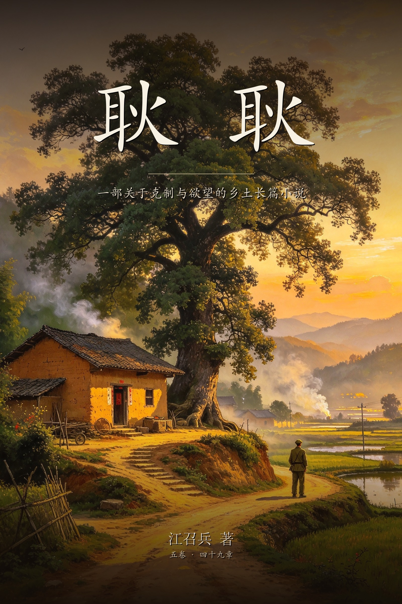

耿耿
一部关于克制与欲望的乡土长篇小说
江召兵 著 · 五卷四十九章 · 全书约三十万字
全书完。 本页为网页完整版，共四十九章（含两章尾声）。
目录
卷一1976—1992 · 冲里 · 第1—8章
- 第一章 禾生
- 第二章 墙缝
- 第三章 白事
- 第四章 露天电影
- 第五章 黑白电视
- 第六章 春桃
- 第七章 梦遗
- 第八章 长舌
卷二1992—1995 · 县城 · 第9—16章
- 第九章 生理卫生课
- 第十章 井台
- 第十一章 蓝墨水
- 第十二章 冻疮
- 第十三章 录像厅
- 第十四章 一巴掌
- 第十五章 中考
- 第十六章 光棍
卷三1995—1997 · 北方军校 · 第17—26章
- 第十七章 转学
- 第十八章 樟树下
- 第十九章 草坪
- 第二十章 第一封信
- 第二十一章 她的画
- 第二十二章 志愿表
- 第二十三章 毕业合影
- 第二十四章 送站
- 第二十五章 熄灯
- 第二十六章 队列
卷四1997—2000 · 部队与转业 · 第27—34章
- 第二十七章 两地书
- 第二十八章 野营拉练
- 第二十九章 烧信
- 第三十章 探亲
- 第三十一章 洪水
- 第三十二章 探亲
- 第三十三章 来队
- 第三十四章 转业
卷五2001—2026 · 成家与中年 · 第35—47章
- 第三十五章 结婚
- 第三十六章 婚后
- 第三十七章 分居
- 第三十八章 病
- 第三十九章 旧朋友
- 第四十章 分房
- 第四十一章 钱
- 第四十二章 诱惑
- 第四十三章 第一次
- 第四十四章 空
- 第四十五章 第二次
- 第四十六章 学会
- 第四十七章 说与不说
尾声2026—2031 · 后来 · 第48—49章
- 第四十八章 旧信
- 第四十九章 同学会
正文
第一章 禾生
我出生在丙辰年农历六月，正是扮禾的时节。
那天母亲在灶屋门口发作。她挺着肚子烧午饭，柴塞得太满，锅里的水滚出来，浇在灶灰上，一股白汽。她弯腰去端锅，羊水就破了。娭毑说，她赶到的时候，母亲两只手撑着门框，一条腿跪在门槛上，嘴里还在骂父亲——父亲那天在公社修渠道，不在家。
接生的是向家娭毑，一只手全是老茧，指甲剪得很短。她把我接出来，倒提着抖了一下，我哭了一声。母亲后来说，那一声细，像猫叫。
名字是娭毑取的。
父亲想叫我建国。他那一辈人取名字，翻来覆去就是那几个词。娭毑不同意，说这伢子生在扮禾天，就叫禾生。禾字好，土里长出来的，贱，养得活。父亲没争。父亲在家里很少争，他的脾气都留在外头，或者留在巴掌上。
我生下来那年，世面上出了几件大事。唐山地震的时候我还不会翻身，母亲把我放在堂屋的竹摇窝里，摇窝底下垫一床旧棉絮。村里家家在禾堂上搭棚子，夜里不敢进屋，说怕再震。娭毑抱着我睡棚子，蚊子多，她拿蒲扇给我扇了一夜，另一只手一直搭在我肚子上。
到了九月，大喇叭响了。那喇叭挂在冲口的大樟树上，平时只喊出工、开会、交公粮。那天它放的是哀乐，一遍又一遍。全村人站在禾堂里，低着头。母亲说她也低着头，我伸手去抓她脸上的泪。
我三岁那年病过一场。
病是冬天起的，先是咳嗽，后来发热，夜里说胡话，喊一些大人听不懂的话。母亲抱着我去了两趟公社卫生院，打针、吃药，不见好。娭毑说，这样不行，得去寄名。
那天早上有霜。娭毑给我换了一身干净衣裳，蓝布罩衣，领口硬邦邦的。她自己换了件青布褂子，头发用茶油抿过，一丝不乱。她一手提个竹篮，篮里是一刀纸、三炷香、一小块红布、两个鸡蛋；一手牵我，往冲口走。
大樟树在冲口。树有多大，我说不清，只记得它把半个禾堂都罩住了，树干黑黢黢的，裂着口子，树洞里能塞进去一个小孩。树杈上挂着大喇叭，喇叭下面，还系着一些旧红布条，被雨洗得发白，那是别人家寄名的。
娭毑把竹篮放在树根上，点了香，插在土里。她把那块红布展开，让我看：上面用墨写了我的名字和生辰，字是她请村里的陈先生写的。她把我按着跪下，自己也跪下，对着树说：
"樟树公公，我把禾生寄给你。他命轻，你老人家给镇一镇。他要是能顺顺当当长大，年年给你挂红。"
说完她磕头，额头碰到地上的霜，发出很轻的一声。她让我也磕。我磕了三个，额头凉。
然后她把红布条系到一根低枝上，系得很紧，打了三个结。她站起来，拍了拍膝盖上的土，低头看我，说：
"禾生，莫怕。"
我记住这句话，不是因为我听懂了，是因为她说这句话的时候，眼睛是红的。娭毑这个人，一辈子不哭，眼泪都留在眼眶里，红一红，就收回去了。
回家的路上她背我。我趴在她背上，闻到她衣领上的樟脑味。我问她，寄名是什么意思。她说，就是给你找个干嗲，往后你走到哪里，都有个东西护着你。我问，那我干嗲在哪。她说，在树上。我又问，树会说话吗。她笑了一下，说，树不说话，树在。
后来我长得很大了，才知道她那天求的不是富贵，是"顺顺当当长大"——这六个字，在她那一辈人嘴里，就是最难的事。
娭毑有个樟木箱子，放在她床底下靠墙的地方。
箱子是她的嫁妆，樟木的，四角包铜，铜已经绿了。箱子上挂一把铜锁，钥匙在她裤腰上系着，夜里睡觉也不解。她开箱的时候从不让人看，只把手伸进去，摸出几块钱，或者一小块布头，又把盖子合上。屋里有樟脑味，就是从那箱子里漏出来的。
我问过箱子里有什么。她说，有她过世以后要穿的衣服，还有两个银耳环，还有一点钱。
"钱做什么用？"我问。
"给你读书。"她说。
那是一九八二年之前的事。我们冲里还没分田，队上出工记工分，分谷子按工分分。父亲在公社的基建队，算半个手艺人，工分不高。母亲出工，娭毑在家带我、喂猪、种菜园。灶屋里常年挂着一串熏黑的腊肉，来客才割一小块；平时吃坛子菜，剁辣椒，霉豆腐，藠头。我小时候最盼的是双抢——双抢有肉，有绿豆稀饭，有送到田里的姜盐茶。
双抢在七月。扮禾的时候，大人天不亮就下田，割的割，扮的扮。扮桶是方的，四个人站四角，抡起禾把往桶壁上扑打，嘭，嘭，嘭，声音闷，传得远。我五六岁，跟在娭毑后头捡稻穗。田里的水烫脚，蚂蟥多，一叮上就不松口。娭毑教我拿稻草灰撒它，一撒，它卷成一个小球，掉下来。
晒谷坪上摊着新谷，金黄一片，赤脚踩上去，又烫又扎。我拿木耙推谷，推不动，就在谷堆上打滚，滚得一身谷壳，娭毑骂我，骂完又拿衣角给我擦脸。
她教我认东西。认辣椒：这种是朝天椒，小，尖，咬一口要命；那种是灯笼椒，肉厚，不辣。认节气：清明前后，种瓜点豆；芒种忙忙栽，夏至谷怀胎。认神龛：堂屋正墙上那块红纸写的"天地国亲师位"，她说，那是敬的，不能拿手指。
她讲古。讲她年轻时躲日本兵，讲鬼——冲里哪棵树上吊死过人，哪个塘里淹死过小孩。她讲得平平淡淡，像讲邻居家的事。有一回她讲到"女人的身子"，原话我记不全了，只记得一句："女人身子是土，长出人来，也埋人。"我那时听不懂，只觉得这话像一块石头，落进心里，一直没捞出来。
冲里有一口塘，在屋场下面，叫门口塘。塘水是绿的，边上种着柳树，柳枝垂到水面上。女人在塘边的石板上洗衣裳，棒槌一槌一槌，声音在塘面上荡开。夏天男伢子光着屁股下水，摸螺蛳，打水仗，被大人看见就骂："起来！塘里有落水鬼！"
娭毑从不让我下塘。她说这塘淹死过人，一个女的，民国年间的事，婆家逼的。她说的时候正在搓衣裳，头也不抬："女人投塘，是没路走了。"我问什么叫没路走。她把衣裳在石板上摊平，拿棒槌打，打完了才说："就是活着比死了难。"
我不懂。我只觉得塘里凉快，水底下有螺蛳，有虾，有滑溜溜的泥。
秋天上茶山捡茶籽。茶山在冲尾，一片一片的，茶籽熟了裂开，露出黑亮的籽。娭毑背个竹篓，我提个小篮，捡满一篮，倒进她的篓里。捡茶籽的时候她讲古，讲她十七岁嫁到陈家，讲她生父亲那年难产，接生婆拿秤钩子钩，钩出来一个血人。她说这些事的时候声音很平，像在说别人的身体。
有一回我问她："娭毑，我是从哪里来的？"
她停了一下，指着茶山脚下的土，说："土里长出来的。"
"那为什么别人说我是捡来的？"
"别人嚼舌头。"她把一颗茶籽丢进篓里，"你是樟树公公送来的。"
父亲从基建队回来，一般是月底。他回来只做三件事：吃饭，睡觉，打人。吃饭时他不说话，一碗饭，一盘辣椒炒肉，吃得很快；睡觉打呼噜，隔着一堵墙也听得见；打人不多，但一次够记一辈子。
他带回来过一颗水果糖，玻璃纸包的，红的。他放在桌上，没说是给谁的。母亲拿给我，我不敢接，先看父亲的脸色。父亲没看我，只说了一句："呷吧。"那颗糖我含在嘴里，含到化完，甜味一直甜到喉咙口。后来我知道，他在外头也吃糖，也喝酒，也看录像——但他回家只带一颗糖。
我偷开过娭毑的樟木箱。
那天娭毑去塘边洗衣裳，箱子上的钥匙她忘在床席底下了。我把钥匙摸出来，手抖，插进铜锁里，转了一下，锁开了。箱盖很沉，我掀开一条缝，闻到一股浓得发闷的樟脑味。里面叠着几件青布衣裳，压得平平整整；衣裳上头有一个蓝布包，包着什么东西，硬硬的；最上面放着一双黑布鞋，鞋底纳得密密实实。
我没敢再翻。我把盖子合上，锁好，钥匙放回原处，坐在门槛上等她回来。娭毑回来，看了看箱子，又看了看我。
"开了？"她问。
我点头。
她没骂我，把衣裳晾在竹竿上，才说："那是我过世以后穿的。蓝布包里是钱，给你读书用的。你莫急，等你考上学，娭毑给你开。"
我说："我不要你过世。"
她笑了一下，说："人哪有不死的。娭毑死了，你莫怕。"
一九八一年，冲里分田到户。
那一晚父亲难得高兴，喝了半碗谷酒，脸红到耳朵根。他说，往后打下的谷子，除了交公粮，都是自己的。母亲说，那要好好作田。娭毑没说话，坐在火桶边纳鞋底，针拉过鞋底，嗤的一声，嗤的一声。
火桶是木头做的，像个大圆桶，底下放一盆炭火，人坐在上面，膝盖搭一条旧棉被。冬夜里，娭毑纳鞋底，我坐在她对面，脚伸进被子底下，烤得发烫。煤油灯放在凳子上，灯芯挑得低，火苗黄豆大，人影子在墙上晃。
我就是在这样的夜里，第一次听见隔壁屋里的动静。
我们家的里屋用一堵土砖墙隔成两半。墙没砌到顶，上头空着，放些不用的坛坛罐罐。父母睡里间，娭毑带我睡外间。那墙砌得马虎，砖和砖之间有几道缝，白天能透进一线光。
那天夜里我醒了，不知道是什么时辰。火桶里的炭还有一点红，娭毑的鞋底掉在被子边上，她已经睡了。我听见隔壁有声音。
是床板响。很轻，一下，停一下，又一下。还有母亲的说话声，压得很低，听不清字，只听见气声，像被什么捂住了。父亲喘气，喘得重。
我翻身，娭毑的手就伸过来了，盖在我眼睛上。她的手很粗，很热。
"睡觉。"她说。
"那边响。"我说。
"老鼠。"
"老鼠有那么响？"
"老鼠拖崽。"她把手往下压了压，"莫听。听了长针眼。"
我就不动了。她的手一直盖着我的眼睛，直到那边没了声音，直到她自己又打起很轻的鼾。我睁着眼，在黑暗里想：老鼠怎么会说人话。
第二天早上，我蹲到那堵墙根下，找到了一道最大的缝。缝有半指宽，边上落着灰。我把眼睛凑上去，看见隔壁的光，看见床脚，看见一只倒扣的搪瓷盆。
我蹲了很久，没看见什么。
但从那天起，我知道了一件事：这个家里，有一扇不属于我的门。门后头的事，大人不说，娭毑不说，连老鼠都要替他们瞒着。
我不知道的是，那道缝，我后来还会再凑上去很多次。
第二章 墙缝
那道墙缝，我后来量过，最宽的地方有半指。
墙是父亲砌的。里屋原本是一整间，他结婚那年，用土砖从中间拦腰砌了一道，隔出两间，一间给我父母，一间给娭毑带我。土砖是自己打的，黄泥掺稻草，脱坯，晒干，砌的时候泥浆抹得不匀，干了就裂。父亲的手艺在外头，不在家里。
墙砌得也急，上头没到顶，留了一尺多空，说是透气。缝有三四道，最长的一道从床脚一直裂到半腰，弯弯曲曲，像一道干了的水沟。
白天从这道缝看过去，能看见隔壁的床脚、一只倒扣的搪瓷盆、床底下塞的胶鞋。有时能看见母亲弯腰扫地的半张脸。夜里要是隔壁点着煤油灯，缝里就透出一线黄光，细细的，落在我们这边地上。
我对这道缝的兴趣，是从一只蟋蟀开始的。它在缝里叫，我拿一根稻草捅，捅不出来。后来我用泥巴把缝堵死，它就不叫了。第二天我又把泥巴抠开，它还在叫。
娭毑看见我蹲在墙根，说："那墙有啥好看的。"
我说："里头有虫。"
她说："虫比你懂事，虫不偷看。"
我那时不懂"偷看"是什么，只觉得这个词像一块烧红的炭，碰一下就要缩手。可我还是记住了：贴着那道缝往里看，是"偷看"。
偷看父母，是那年冬天的事。
我们这地方冬天湿冷，冷到骨头缝里。夜里睡觉，娭毑用汤婆子给我暖脚，她自己睡外侧，把我挡在里头。她睡得早，也睡得沉，但她的手总是搭在我身上，像一根绳子。
那天夜里，我被尿憋醒。火桶里的炭早就熄了，屋里黑，只有隔壁有点光。我听见娭毑的鼾声很匀，就把她的手轻轻拿开，光脚下了床。地是夯土的，凉得像铁。
我摸到墙根，蹲下来，把眼睛凑到那道最长的缝上。
隔壁的煤油灯捻得很低，灯芯只露一点红。床上的帐子放下了一半，另一半用竹夹子夹着。父亲在帐子边上，背对着我，肩膀一耸一耸的。母亲在帐子里，看不见脸，只看见一只手抓着床沿，抓得很紧，指节都白了。
有声音。母亲的声音，低，压在喉咙里，断断续续，像是哭，又不像哭。父亲喘得粗，床板一下一下地响，响得我脚底板发麻。
我那时六岁。我不知道他们在做什么。我只认得两种声音：一种是母亲在灶屋切菜；一种是母亲挨了委屈以后，夜里偷偷哭。那晚的声音，两头都不像。
我脑子里冒出来的第一个念头是：父亲在打母亲。
第二个念头是：母亲为什么不出声喊。
我蹲在那里，腿一点一点地软。我想到娭毑说过的话——"女人身子是土，长出人来，也埋人。"我不知道这句话跟眼前有什么关系，可它就在那时候冒了出来，像一个人在我耳朵边上说的。
我不敢再看。我手脚并用地爬回床上，钻进被子里，背对着墙。心在胸口里撞，撞得我想吐。过了很久，隔壁没了声音。又过了很久，我听见母亲轻轻咳了一下，像平时做饭被油烟呛着那样咳。
娭毑翻了个身，手摸过来，摸到我的头，又摸到我的脸，湿的。
"做噩梦了？"她问。
"嗯。"
"梦见什么？"
"老鼠。"我说，"好大的老鼠。"
她把我往她这边搂了搂，说："老鼠怕人，莫怕它。"
我不怕老鼠。我怕的是隔壁。
第二天早上，我坐在灶屋的矮凳上，看母亲盛饭。
母亲的眼睛肿，眼皮上像贴了一条线。她给父亲盛了一碗，给自己盛了半碗，蹲在灶门口吃。父亲坐在桌边，吃得很快，吃完把碗一推，抹嘴，拿烟袋。他看了我一眼，说："看我做什么。"
我低下头。他夹了一块腊肉放在我碗里。那是过年留下的腊肉，熏得很黑，切得薄，肥的多。我没吃，用饭把它盖住了。
母亲说："这伢子今天怎么了。"
父亲说："细伢子，认生。"
他笑了一下。那笑很短，像火柴划一下，没点着就灭了。我看着他，心里说：你是坏人。
那几天我躲父亲。他收工回来，我就往娭毑身后钻；他喝酒，我坐在门槛外头；他叫我，我应一声，不敢过去。父亲大概觉出不对，有一回他伸手想摸我的头，我缩了一下，他的手停在半空，落下去，落在自己膝盖上。
过了几天，我实在憋不住，问娭毑。
那天她在灶屋门口择藠头，藠头叶子辣，辣得她眼睛红。我蹲在她脚边，问："娭毑，爸爸是不是打妈妈？"
她的手停了一下，一根藠头叶子停在半空。
"哪个说的？"
"我听见的。"我说，"夜里。"
她把那根藠头丢进竹篮，说："没有打。"
"那妈妈为什么哭？"
"哪个哭了。"
"我听见了。"
娭毑不说话了。她把择好的藠头拢了拢，又摊开，又拢了拢。灶屋外头，鸡在刨土，刨得沙沙响。过了很久，她说：
"大人的事，你莫问。等你长大，就晓得了。"
我说："我长大了是不是就不怕了？"
她看了我一眼。那一眼有点怪，我说不清，像是心疼，又像是没办法。她说："嗯。长大了就不怕了。"
我信了她这句话。后来的二十年，我一直信着，一直等着长大。
可我还是没忍住，又去看过一次。
那是几天后的一个夜里。我告诉自己，只看一眼，看清楚父亲到底有没有打母亲。我凑到缝上，隔壁的灯还亮着。父亲坐在床沿上抽烟，没脱衣裳。母亲坐在他旁边，手里拿着一块布，在给他补肩膀上的口子。两个人都不说话。父亲抽完一袋烟，把烟袋在床脚上磕了磕，母亲就说了一句："明天莫去那么早，外头结冰。"
父亲"嗯"了一声。
母亲把补好的衣裳抖开，凑到灯下去看针脚。父亲看了她一眼，忽然伸手，把她额前的一缕头发别到耳朵后头去。母亲没躲，也没说话，只是低着头，嘴角好像有一点笑。
我蹲在墙根，看不明白了。
被打的人，为什么还给打她的人补衣裳？被打的人，为什么还笑？
我把这个疑问咽回肚子里。我不敢问娭毑，也不敢问母亲。我把它跟那道缝一起留在墙根下。后来我学会了一个办法：不明白的事，就当没看见；看见了的事，就当不明白。
那个冬天过完，我把缝用泥巴堵上，又抠开；堵上，又抠开。泥巴干了会掉，掉了我就再抹一把。娭毑看见过一次，没说我，只说："墙要倒了，叫你爸爸回来补。"
墙没倒。倒的是我心里某个东西，我说不清是什么，只记得从那以后，我再看父亲，就像看一个外人。
开春以后，门口的柳树发了芽，田里的水亮起来。有一天我去塘边看人捞鱼，看见春桃在塘那头挑水。
春桃是隔壁周三家的女，比我大七岁，那时候十四。她挑着一担水，扁担压在肩上，走一步，水桶晃一下，肩膀就跟着沉一下。她穿一件洗得发红的碎花褂子，裤脚卷到小腿，脚上一双塑料凉鞋。她走得很稳，嘴里哼着调子，哼的是《刘海砍樵》里的一段，娭毑在火桶边哼过。
她哼到高处，嗓子破了，自己笑了一下。
我在塘这边看她，看呆了。她好像察觉了，回过头来，冲我扬了扬下巴：
"看什么看，细伢子。"
我脸一热，转身就跑，跑了几步，被田埂上的草绊了一跤，爬起来再跑。她在后头笑，笑声脆，像往水里扔了一块石子。
那天晚上，我躺在床上，脑子里全是她挑水的样子：扁担、水桶、被水溅湿的裤脚，还有她回头时那一下。
我不知道那是怎么回事。我只觉得，塘那边的水，比我们这边的亮。
而那道墙缝，还堵在我心里。我没想到，几个月后，它会以另一种方式重新裂开——那时候，我已经开始往冲口跑，去看一件所有小孩都跑去看的事。河滩上要枪毙人了。
第三章 白事
一九八三年夏天，大队部的墙上贴了一张红纸。
红纸很大，从墙头一直贴到墙脚，上面是黑字，字写得方方正正，像拿尺子比着写的。字里头有几个名字，名字上头打了个红勾。红勾很粗，往上一挑，像一把小钩子。
我不认字。我只认得那两个勾，红得发黑。
那几天，全冲的人都在说这张纸。男人们收工回来，饭碗一放，就往大队部走。女人们也去，站在人堆外头，伸着脖子看。父亲吃饭的时候说："这回是动真格的了。"母亲问："枪毙几个？"父亲说："三个。两个流氓，一个抢劫。"
"流氓"是什么，我不懂。我只知道，那几天冲里的狗都沉静了，夜里不叫。
大喇叭也响，一天响三回，喊各家各户注意，喊严打，喊从重从快。我蹲在灶屋门口，听那些词像石头一样从喇叭里滚出来，滚到人头上，砸出一个个坑。
母亲不让我去看公判大会。她说："细伢子看那个做什么，夜里做噩梦。"娭毑也说："看了长针眼。"
我说："建军哥去。"
母亲说："你建军哥十七了，你七岁。"
我没再争。我心里已经打定了主意。
公判大会那天，天很热，太阳白花花的。我趁母亲去塘边洗衣裳、娭毑在灶屋烧火，从后门溜了出去。后门出去是一条田埂，田埂上长着狗尾巴草，我猫着腰跑，跑到冲口，才敢直起身子。
路上全是人。有从我们冲去的，有从隔壁冲去的，还有从别的公社赶来的。男人戴草帽，女人打伞，小孩骑在大人脖子上。谁家的小孩哭，大人就拿手捂住他的嘴。没人笑。也没人说话。那么多人的脚步声，踩在土路上，闷闷的，像一床被子压下来。
我跟着人走，走到河滩。
河滩在镇子东头，河有一里宽，水浅，露出大片大片的鹅卵石。河滩上搭了一个台子，台子是用木板和竹竿搭的，上头拉一条红布横幅，横幅上写着字，风一吹，红布鼓起一个包，字就歪了。
台子前头，人挤得像一堵墙。我被挤在墙外头，只看见无数条腿。我钻，从大人胯下钻，钻到最里头，钻到前排，一个民兵用竹竿横在我胸口，说："退后。"
我从竹竿底下看。
台子上站着一排人，七八个，都剃了光头，手绑在背后，胸口挂着纸牌子。牌子上的字我不认，只认得每个字上头都有一个红叉。他们低着头，只有一个人抬着头，很年轻，比建军哥大不了几岁，他在看天。
台子边上，有人拿着铁皮喇叭念。念到一个人的名字，下头的人就喊。喊什么我听不懂，喊声像潮水，一浪一浪。念到那个年轻人时，他的头低了一下，又抬起来，还是看天。
后来，台子上的人被押下来。民兵两个架一个，往河滩下游走。人群也跟着走，哗啦一下全流过去了。我被裹在人流里，脚不沾地，被推着走了半里路，才在河滩的拐弯处停下。
那里已经拉了一道白石灰线。石灰线画得很直，像有人拿尺子在地上比的。线外头站满了人，线里头空着，空出一块鹅卵石地，太阳晒得发白。
押来的三个人跪在石灰线里，跪成一排。那个年轻人跪在中间。有人拿一块布罩住他们的眼睛，扎在脑后。
然后，我听见了枪响。
不是一声。是一排。响得我突然听不见了，耳朵里嗡嗡的，像有一窝蜂。我眨了一下眼，再看，那三个人已经倒了。年轻人倒在中间，身子朝前扑，脸埋在石头里。
我没有看见血。我只看见他的腿，一条腿还弯着，另一条腿直直地伸着，裤管上沾着灰。
然后我看见了他的裤裆。
那块地方湿了，深了一大片，在太阳底下发黑。
人堆里有人笑，有人骂，有人扭头，有人拿手遮小孩的眼睛。民兵上去，把人翻过来，拿草席盖了。旁边有人喊："让开让开，收尸的来了。"
我站在那里，腿发软。我说不清那是什么感觉，像有人拿手在我肚子上按了一下，把里头的什么东西按没了。我七岁，我不知道死是什么，我只知道：那个人在死以前，尿了。
枪响之后，河滩上的人散了一半，另一半没走，挤在石灰线外头看收尸。
公社的人把三具尸首拖到河滩边上一排摆着，用草席盖着，只露出脚。有人拿个小本子记什么。太阳很毒，晒得石头烫脚，河滩上开始有一股味道，先是腥，再是甜，最后什么都不像。
下午，家属来了。
来的是那个年轻人的娘，还有一个年轻女人，大概是他姐姐。两个人从河堤上下来，走得很慢。娘有五十来岁，头发花白，扎个髻，穿一件洗得发白的蓝布衫；姐姐手里提着一卷草席，草席是新的，还带着草腥味。
民兵把她们拦在石灰线外头。
"哪家的？"
"我崽。"娘说。
民兵翻了翻本子，说："收尸可以，子弹费五毛。"
娘没说话。她从怀里摸出一个手帕包，一层一层打开，里头是几张毛票，还有几个硬币。她数了五毛钱，递过去。手抖，一枚硬币掉在鹅卵石上，滚了两下，停在一块石头缝里。她弯下腰去捡，捡了两回才捡起来。
姐姐蹲在草席边上，想掀，又不敢掀。她回头看她娘，她娘点了点头。她才把草席掀开一条缝，看了一眼，就把草席按回去了，然后蹲在那儿，肩膀一抽一抽的。她没有哭出声。
周围的人站着看。有人小声说："这种人，还收什么尸。"也有人说："造孽，养到这么大。"没有人上前帮忙。
我看见那个娘走到尸首边上，蹲下去，用袖子擦了擦草席角上沾的泥。她的手背上全是裂口，像冬天冻开的，可那是七月。
后来我才知道，她家是河对岸的，走了十几里路来的。她儿子犯的是"流氓罪"，跟镇上粮站一个女的搞对象，女的家里不同意，告了。那年头，这种事，判得比偷牛还重。
娭毑就是那时候来的。
她不知怎么找到了我，从人缝里挤进来，一把把我拉到身后，拿手捂住我的眼睛。她的手很粗，很热，跟那个娘的手不一样。
"回去。"她说。
我被她拉着走。走到河堤上，我回头看了一眼。那母女俩正把草席往尸首上盖，盖了半截，姐姐忽然趴在尸首上哭起来，声音像撕布。娘站在旁边，没有哭，一直拿手拍姐姐的背。
娭毑拉着我走得很快，一直走到冲口才松手。
"哪个叫你来的。"她问。
我不说话。
"你娘知道，打断你的腿。"
我还是不说话。
她看着我，叹了口气，声音软下来："看了就看了。回去莫说，也莫想。听见没。"
我点头。
可我没做到。那天晚上，我睡不着。我一闭眼，就看见那片湿，看见那个娘数钱的手，看见草席盖上去的时候，姐姐的背一抖一抖。我把这些事在肚子里翻来覆去，翻出一个连自己都说不清的念头：人是要死的，死之前身子会先垮，垮给所有人看。
这个念头，后来长成了我身上的一根骨头。
回去的路上，我没跟任何人说话。建军哥在后头喊我，我装着没听见。我走得很慢，走到冲口，天已经擦黑。娭毑站在门槛上等我，看见我，没骂，只说："呷饭。"
我吃了两口，吃不下。
夜里，我躺在娭毑旁边，不敢闭眼。我一闭眼，就看见那片湿。我翻来覆去，娭毑的手伸过来，摸我的额头，说："发热了？"
"没。"
"那怎么了。"
我不说。
过了很久，我说："娭毑，人死了，会尿吗。"
娭毑的手停在我额头上。
"哪个跟你说的。"
"我看见了。"
她沉默了很久。灶屋那边，母亲还在洗碗，碗碰碗，叮当。娭毑翻了个身，面对着我，声音放得很低：
"人死之前，身子先走。气还在，尿先出来。老人讲，那是身子在散。"
"为什么。"
"没有为什么。人就是这样的。"
我往她怀里缩了缩。她又说：
"你莫怕。你还小，离死远得很。"
我不怕死。我怕的是那片湿。我怕的是我自己的身子，有一天也会在别人面前，先走一步，先尿出来，先丢人。这个念头我那时说不出来，只像一根刺，扎在肉里，拔不出来。
第二天，我去上茅房，蹲下去，忽然抖了一下。我低头看自己的裤裆，干的。我松了一口气，又觉得羞。
从那以后，我有了一个毛病：只要一紧张，就想去茅房。考试前要去，挨骂后要去，站在人前也想去。这个毛病跟了我很多年。娭毑后来带我去看过陈医生，陈医生说，细伢子吓着了，过两年就好了。
过两年没好。过了二十年，也没好。
秋天，田里的谷子割完了，晒谷坪上堆起稻草垛。有一天傍晚，建军哥跑过来说，公社放映队来了，今晚上在晒谷坪放电影。
我第一个跑到晒谷坪。幕布还没挂起来，两根竹竿支在坪两头，中间一块白布，被风吹得一鼓一鼓。坪上已经摆满了板凳，有人用石头占位子，有人在幕布前头钻来钻去。天还没黑，孩子们就开始喊："放啦，放啦。"
我挤在人群里，闻着汗味、烟味、稻草味，忽然想起河滩上那股味道——河水的腥，石灰的涩，还有一点点别的，我说不上来。
我甩了甩头，把那个念头甩掉。电影要开始了。
第四章 露天电影
一九八四年秋天，谷子进了仓，稻草在晒谷坪上堆成几个大垛，放映队来了。
消息是建军哥带来的。他从镇上回来，自行车骑得飞快，到冲口也不下车，一只脚撑在地上，朝屋里喊："禾生！晚上晒谷坪放电影！"
我正在灶屋帮娭毑烧火，听见"电影"两个字，火钳一丢就往外跑。娭毑在后头骂："慌什么，饭还没呷！"
"不呷了不呷了——"
"回来呷一碗再走。"
她追出来，塞给我一个红薯。红薯是刚煨好的，烫手，我在两个手心之间倒来倒去，一边倒一边跑。跑到晒谷坪，建军哥已经在那儿占位子了。
他带了两条长凳，一条横着放，一条竖着放，把中间一块地方圈起来。我踢他一脚："这算什么，你看电影还是摆摊。"
"你懂什么，这叫占地方。"他拍拍凳子，"今晚人多，来晚了只能站到田里去。"
我不信。离天黑还有两个钟头，坪上已经来了二三十个人，有坐的，有站的，有小孩在稻草垛上打滚。有人拿粉笔在地上画圈，圈里写名字；有人用石头压一块塑料布，四角一压，就算占住了。一个老婆婆坐在最前头，拿蒲扇打蚊子，蒲扇破了两个洞。
放映员是骑单车来的，姓刘，四十来岁，穿一件蓝卡其布褂子，后座驮两个铁箱子。他一下车，孩子们就围上去，看那两个箱子，像看什么宝贝。
"莫动莫动！"他喊，"碰坏了今晚就没得看。"
他又从箱子里拿出一卷白布、两根竹竿、一台机器。机器很沉，他一个人搬不动，喊建军哥帮忙。建军哥屁颠屁颠跑过去，抬机器的时候腰都弯了，脸涨得通红。机器放在一张八仙桌上，上头缠着电线，一按开关，嗡地一声。
人越来越多。
到天擦黑，坪上已经挤得走不动路了。有从我们冲来的，有从隔壁几个冲来的，还有十里外的，打着火把来。有人抬着梯子，把梯子架在人群外头，人坐在梯子横档上看；有人干脆爬到稻草垛顶上去，压得垛子往下塌了一块。坪边上支起两个摊子，一个卖瓜子，一个卖冰棒。卖冰棒的是个女的，提一个木箱，箱子里垫着棉被，冰棒用纸包着，两分钱一根。
我攥着娭毑给的一毛钱，没舍得买。
幕布挂起来了。两根竹竿插在坪两头，白布绷在中间，被风一鼓，像一张鼓起来的帆。风一停，白布又塌下去。孩子们全跑到幕布后头去看——后头也能看，字是反的，人也是反的。我从后头跑到前头，从前头跑到后头，跑得满头汗，直到放映员喊："莫跑啦！幕布扯坏啦！"
天全黑了。坪上的人声渐渐小下去，像一锅水慢慢盖上了盖子。
机器嗡地转起来，一束白光从后头打过来，打在白布上。灰尘、蛾子、孩子们的手，全在那束光里飞。有人伸手做狗，有人做兔子，白布上一会儿是狗，一会儿是兔子。放映员拿手一挡，"让开让开"，光影才干净。
片头音乐响了。幕布上跳出几个大字，底下人念成一片："少——林——寺。"
我没看过电影。我只看过连环画，一本两分钱，在镇上书摊上蹲着看，看完页角都卷了。电影不一样，电影里的人会动，会从幕布这头走到那头，会一转身，长衫下摆甩起来，像真的。
电影讲的是一个和尚，叫觉远，为给他爹报仇，进了少林寺，学武。他挑水，水桶底下磨秃了；他打拳，拳打到木板里；他师父拿棍子打他，他一边躲一边喊："师父，师父，手下留情——"
坪上的人笑。
后来坏人来抓人，觉远骑马追，马跑起来，蹄子上的土扬起来，我缩脖子躲，好像那土会溅到脸上。再后来，白无瑕拿鞭子，觉远拿棍，两个人在树林里打，棍子打在树上，树叶子哗哗往下掉。
全场就静了。
那是我第一次看见，人的身体可以那么好看。不是好看得像画，是好看得叫人说不出话。他跳起来，腿在半空中一劈，落下来，稳稳的；他出拳，肩膀一拧，胳膊上的肉一条一条的。我低头看看自己的胳膊，细得像麻秆，黑得像炭。
我坐在长凳上，两只脚在底下蹬来蹬去，脚心出汗。
放到一半，忽然"啪"一声，机器停了，幕布上的人僵在那儿，接着整块白布黑了。
"停电啦！"有人喊。
也有人喊："发电机！发电机熄火了！"
放映员骂了一句，跳下桌子，跑去拨弄发电机。发电机蹲在坪边上，像个黑疙瘩，他拿绳子一拉，突突突，响两下，又灭了。拉一回，灭一回。人群散开一点，有人拿手电乱照，光柱扫过来扫过去，照见一张张脸，照见稻草垛上坐着的人，照见我。
建军哥拉我："走，撒尿去。"
我们钻出人群，绕过稻草垛，往坪后头的厕所走。厕所是土墙围的，臭，熏得人睁不开眼。我不愿意进去，就说："我在外头。"
建军哥进去了。我在外头站着，听见里头哗哗的水声，抬头看天上的星。那天晚上星很多，月亮在后山半边，照得田埂白白的。
就在这时，我看见稻草垛后头有人在动。
先是听见一点声音，很轻，像布在草上蹭。我以为是狗，踮脚走过去两步。稻草垛堆得高，遮着光，那边黑。我眯着眼看，看见两个影子贴在一起，一个高，一个矮。矮的那个穿花衬衫——那花衬衫我认得，红底白花，春桃有一件，上回她挑水，太阳底下晃眼。
高的那个是个后生，穿白背心。
两个影子贴得没有缝。后生的手在花衬衫上，花衬衫的背一拱一拱的。春桃的头往后仰着，靠近草垛，头发散下来一块。她没说话，只听见喘气，一下，一下，很急。
我不知道那是什么。我只觉得脸热，像被人扇了一巴掌。我站在那儿，脚底生根了。
"禾生！"
建军哥从厕所出来，看见我，顺着我的眼睛望过去，脸就变了。他几步过来，一把捂住我的嘴，把我往边上拖。
"莫看！"他压低声音，"莫看！"
我一直被他拖到厕所后头才松开。我挣开他，喘气。
"那是哪个？"我问。
"关你什么事。"
"春桃——"
"那不是春桃！"他打断我，声音很凶，凶得不像他，"你看错了。走，回去。"
我又要说话，他抬手在我后脑勺上拍了一下："细伢子，少问。问了要烂嘴巴。"
我不问了。我跟着他往坪上走，走到一半，我回头看了一眼。草垛后头那两个影子还在，花了衬衫被撩起来一角，又落下去。
回到坪上，电来了。发电机突突突地响，幕布亮起来，觉远正站在塔上，风把他的衣角吹得翻。坪上的人欢呼起来，好像刚才那截黑不算什么。
我看不下去了。我满脑子都是草垛后头那两个影子，还有建军哥那一巴掌。建军哥坐在我旁边，像没事一样嗑瓜子，嗑得响。
"建军哥。"我说。
"嗯。"
"刚才那个——"
"你再讲一句，我就跟你娘讲，讲你夜里跑到草垛后头去。"
我把话咽回去。
电影散场的时候，人像水一样往四面流。火把一支一支点起来，田埂上弯弯曲曲全是光。有人喊自家孩子的名字，有人唱刚才电影里的歌，唱跑了调。建军哥背着他的两条长凳走了，走几步回头喊："跟紧点！"
我跟着人走，走到冲口，看见母亲站在樟树下，手里拿着一支手电。
"你还晓得回来。"她的手电照在我脸上。
"我跟着建军哥。"
"你建军哥呢？"
"前头。"
母亲没再问，转身往回走。手电光在路上一跳一跳的。快到家门口，她说：
"以后少跟你建军哥去。他十七了，不是跟你一路的人。"
"为什么。"
"没为什么。"
屋里点着煤油灯。娭毑没睡，坐在火桶上，膝上搭着一条旧毯子。看见我，她问："电影好看不。"
"好看。"
"放的什么。"
"《少林寺》。"
"哦。"她说，"和尚打架。"
"不是和尚，是——"我想解释，又觉得说不清，"他练功夫，给爹报仇。"
娭毑点点头，往火桶里添了一块炭。火桶里的火亮了一下，映得她脸上的皱纹深一道浅一道。
"打架有什么好看的。"她说，"你莫学。"
"嗯。"
我洗了脚，爬上床。床上的被子里有太阳的味道，也有娭毑身上的味道。我闭上眼睛，眼前还是那束白光，光里的灰尘、蛾子、手，还有白无瑕的鞭子。然后是草垛后头，花衬衫，白背心，两个影子贴在一起。我翻了个身，把脸埋进枕头。
我心里有样东西在动，像一条泥鳅，抓不住。我八岁，不晓得那是什么，只晓得它跟电影里的光不一样，它烫，它叫人心里发慌，它像一件不该看的东西，偏偏被我看见了。
后来我睡着了。梦里我在塔上，风把衣角吹起来，我一个跟头翻下去，底下全是人，睁着眼睛看。
第二天，晒谷坪上满地瓜子壳、冰棒纸。我和几个细伢子捡柴火棍，当棍子使，学觉远的招式，打稻草木桩。我"哈"一声，棍子劈下去，草屑飞起来。建军哥蹲在旁边看，笑："你还学得像。"
我没理他。我在心里一遍遍地翻，翻那个草垛，翻那件花衬衫，翻他捂着我的嘴说"莫看"的样子。
翻到最后，我也没翻出个名堂。
第二天，晒谷坪上还留着昨夜的痕迹：瓜子壳、冰棒纸、踩倒的稻草、一条不知谁落下的塑料布。我和几个细伢子捡柴火棍，一人一根，学觉远打拳。我挑了一根直的、有分量的，在稻草垛前头"哈"一声，胳膊抡圆了劈下去，草屑飞起来。
建军哥蹲在石碾子上看，嘴里嗑瓜子，嗑一颗，吐一颗。
"你那是砍柴，不是打拳。"他说。
"你打一个我看看。"
他站起来，把瓜子壳一扔，接过棍子，手腕一抖，棍子在他手里转了个花，然后往下一劈，"啪"地打在稻草垛上，稻草簌簌往下掉。
"看见没？要用手腕，不是用膀子。"
我学他，手腕一抖，棍子脱手飞出去，砸在陈会计家的鸡窝上，母鸡咯咯咯地乱飞。建军哥笑得蹲在地上起不来。我去捡棍子，被陈会计的婆娘骂了一顿："细伢子作死啊！"
那天下午，我去塘边挑水。母亲说，前天换的衣裳还没洗，今天要把水缸挑满。
塘在冲口，水是绿的，靠岸的地方浮着一层萍。我把扁担钩子挂上水桶，蹲在下水的石阶上，等桶沉下去。水桶沉到底，咕咚一声，我往上提，提得胳膊酸。
春桃也在。她蹲在塘对面的石头上洗衣裳，穿的就是那件红底白花的花衬衫，袖子挽到胳膊肘，头发用一根黑皮筋扎着，垂在背上。
我提着水桶站起来，忽然就看见她脖子后头那一小块白，太阳照着，白得晃眼。我赶紧低下头，把水桶往桶里倒。
"禾生。"她叫我。
"嗯。"
"你昨晚也去看电影了？"
"看了。"
"好看不。"
"好看。"
她把衣裳在石头上搓了两把，拧干，搭在篮子上，又拿起一件。她做这些的时候，眼睛没看我。
我憋了半天，说："春桃姐，我昨晚看见你了。"
她的手停了。
塘水从她指缝里滴下去，滴在石头上，一滴，两滴。她没有回头，过了好一会儿，才说："看见我什么了。"
"你跟一个穿白背心的，在草垛后头。"
她猛地回过头来。
我到现在都记得她那个样子：脸红得像她身上的花衬衫，眼睛瞪得很圆，嘴张了一下，又闭上。她不是生气，也不是笑，是那种被人从背后推了一下的神情。
"你乱讲。"她说。
"我没乱讲，我看得清清楚楚——"
"你还讲！"她声音一下子高了，把手里的衣裳往盆里一摔，水溅出来，"你再讲，我撕你的嘴！"
我吓得往后退了一步，踩在湿石头上，差点滑进塘里。她看见我这样，忽然又不凶了。她低下头，把摔下去的衣裳捡起来，重新搓，搓得很快，肩膀一耸一耸的。
我站在那儿，不知道该走还是该留。
过了半天，她从口袋里摸出一样东西，朝我扔过来。我接住，是个纸包，纸是红的，油汪汪的。
"拿去。"她说。
我打开，里头是一颗糖，水果糖，透明的，里头裹着一点黄。
"春桃姐——"
"吃了就莫讲了。"她没抬头，声音闷闷的，"听见没有。"
"听见了。"
我把糖攥在手心，糖纸都被我攥热了。我挑起水桶往回走，走了十几步，忍不住回头。她还在洗，背对着我，花衬衫在风里鼓了一下，又瘪下去。
那天晚饭，母亲在饭桌上说："建军那孩子，野得很，以后莫让禾生跟他。"
父亲扒着饭，说："男娃儿，野点好。"
"野点好？"母亲把筷子一放，"他前年就跟人打架，去年偷着学抽烟，今年——"
"今年怎么了？"
母亲看了我一眼，没往下说。
娭毑坐在旁边，慢慢地喝粥。她喝完一口，把碗放下，说："禾生还小。看见什么，记在心里，长大了自己晓得。"
"娘——"
"呷饭。"娭毑说。
母亲就不说了。
那天夜里，我躺在床上，把那颗糖从枕头底下摸出来。糖纸已经被我舔过好几回，甜味都进了纸里。我没舍得吃，想留到过年。后来我把糖藏进了樟木箱的角上，用一块旧布包着，压在樟木箱最底下。那口樟木箱里放着娭毑的送老衣，还有蓝布包的钱。我知道那地方不能放糖，可我偏要放。我想，糖和送老衣放在一起，谁也想不到。
藏好糖，我躺回去，睁着眼睛看房梁。
房梁上挂着几串干辣椒，黑乎乎的。窗户纸上有一小块月亮的光，白白的，像幕布的一角。
我又想起昨天夜里的事。这次我不光想起草垛了，我想起春桃回过头来的样子，想起她脸红，想起她凶我，又想起她扔糖给我的手。她的手指头是湿的，指甲缝里有洗衣裳的肥皂沫。
我心里那条泥鳅又动了。
我八岁。我不知道大人为什么在草垛后头要把身子贴在一起，也不知道春桃为什么脸那么红，更不知道我为什么一想起那个，身上就发烫、发慌、想上茅房。我只知道，那件事跟白天的、人前的、可以大声说的东西不一样。那件事是暗的，是要贴上"莫看""莫讲"的封条的，是要藏在草垛后头、墙缝后头、樟木箱底下的。
我把被子蒙过头顶，听见自己的心跳。
过了几天，放映队走了。晒谷坪上那两根插幕布的竹竿还立着，像两根没人管的晾衣杆。坪空下来，风一吹，瓜子壳打着旋儿跑。冲里又恢复了老样子：出工，收工，喂猪，骂孩子，大喇叭一天响三回。可我觉得，跟放电影以前不一样了。我说不清哪儿不一样，就是觉得冲里太静了，静得人心里空。
我开始盼下一回。
下一回什么时候来，谁也不晓得。
那年冬天，冲里通了电。再转年正月，冲里第一台黑白电视机抬进了陈会计家。那天晚上，我们把陈会计家的堂屋挤爆了——这是下一章的事了。
第五章 黑白电视
一九八五年正月，陈会计家买了一台电视机。
这个消息比放映队来的消息还炸人。放映队一年来一回，电视机是天天有的。冲里人开始还不信，说："陈满仓哪来的钱？"又有人说："他舅子在长沙五金公司，搞得到票。"还有人说："那东西要电，我们冲刚通电，带得动？"
正月初八那天，一台电视机用箩筐抬进了冲。
抬电视的是陈会计和他两个舅子，四个人轮换着抬，走得小心翼翼，像抬一顶轿子。箩筐里垫着稻草，稻草上放着纸箱，纸箱上印着两个字：韶峰。后头跟着一群细伢子，跑前跑后，喊着"电视电视"，像过年。
陈会计家是冲里少有的砖房，三间，墙是青砖的，屋顶盖瓦，门口有石阶。他把电视机抬进堂屋，放在一张八仙桌上，正对着大门。又叫人搬来一张条凳，放在桌子前头，算是"第一排"。
电视机从纸箱里拿出来的时候，所有人都"哦"了一声。
那东西不大，十四寸，黑壳子，前面一块灰白的玻璃，上头有两个旋钮，一个调台，一个调声音。背面拖一根扁扁的黑线。陈会计把线接到屋后头一根竹竿上，竹竿顶绑着几圈铝线，扭成个"王"字。
"这叫天线。"他说。
有人问："能收几个台？"
"一个。"陈会计说，"省台。"
"一个也中。"
那天晚上，陈会计家的堂屋挤爆了。
天还没黑，门口就站满了人。有自带板凳的，有抱小孩的，有端着饭碗来的——碗里是红薯饭，一边等一边扒。陈会计的婆娘姓黄，人叫黄桂香，四十来岁，胖，嗓门大。她拿一把扫帚站在门槛上，说："换鞋！哪个不换鞋，莫进来！"
没人换鞋。冲里人下田都打赤脚，谁家有一双干净鞋。她也没办法，骂骂咧咧地让开路。
堂屋里先是坐了二十来个，后来挤到四十个，最后连门槛上都坐着人。有人爬到窗台上，有人蹲在灶屋门口，隔着门缝看。屋里的烟味、汗味、脚臭味混在一起，呛人。黄桂香把两扇窗打开，冷风灌进来，又有人喊冷，她又关上。
电视机开了。
先是"沙——"的一声，满屏雪花点，像下雪。陈会计伸手去转旋钮，雪花变成横条，横条变成斜条，斜条里头隐隐约约有个人影，一晃，又没了。他拍了两下电视机壳子，屏幕跳了一下，出来一个女的，烫着头发，穿一件垫肩的衣裳，正笑。
"出来了出来了！"孩子们喊。
那女的笑完，出来一行字，字底下是音乐。音乐一响，屋里的人都不说话了。
那天放的是《霍元甲》。
我坐在第一排的条凳上，两条腿悬着，脚尖够不着地。屏幕上，霍元甲穿一身白褂子，在院子里打拳。他打拳跟电影里不一样——电影里的拳头打到人身上，人飞出去；他打拳，是慢慢打，一招一式，打得人心里发紧。他爹在后头看，不说话，看完才说一句："还行。"
屋里的人"哦"了一声，像松了口气。
后来俄国大力士来了，在台上把石锁举起来，把铁链子挣断，台下洋人叫好。霍元甲上台，脱了褂子，一身精肉。他不慌不忙，绕着大力士走，走了一圈，忽然一矮身，一拳打在大力士腰上。
大力士没动。
屋里的人都"嘶"了一声，我听见旁边建军哥骂了句："完了。"
可霍元甲没停。他接着打，打在腿上，打在肋上，打在脖子上。打到最后，大力士跪下去了。霍元甲站在台上，说了一句话，我没听清，但屋里的人全站起来了，有人拍巴掌，有人喊"好"，有人把瓜子壳往地上一摔："就是这个味！"
我也站起来了。我手心全是汗，心口咚咚咚地跳，像有人拿鼓槌在里头敲。
那天晚上，放到十点多才散。散场的时候，黄桂香拿扫帚掃地上的瓜子壳，扫出一堆，骂："明日哪个再带瓜子来，莫怪我扫他的脸！"
没人理她。大家一边往外走，一边议论霍元甲明天会不会跟日本人打。
回家的路上，母亲拉着我的手，走得很快。走到樟树下，她忽然说：
"好看不。"
"好看。"
"好看就好好读书。"她说，"读出去了，天天有得看。"
我"嗯"了一声。我心里想的不是读书。我想的是那个屏幕，那块灰白的玻璃，玻璃里头有那么多人，那么多人挤在一个小匣子里，打拳、说话、笑。
走到家门口，娭毑还坐在火桶上。她没去看电视，说人多，吵，眼睛也不好。
"回来了？"她问。
"回来了。"
"那匣子里头，好看？"
"好看。"
"匣子里头有人？"
"有。"
娭毑想了想，说："那么多人，怎么进去的。"
我张了张嘴，想说电，想说天线，想说"是从长沙那边传过来的"，可我自己也说不明白。最后我说："不晓得。"
娭毑点点头，说："人还是看活的好。"
我没接话。我爬上床，闭着眼睛，眼前还是那块屏幕。屏幕上有霍元甲，有大力士，还有那个烫头发的女人。那个女人笑的时候，嘴角往上一挑，眼睛弯弯的。我从来没见过冲里的女人那样笑。
我九岁。我不晓得自己为什么老想那个笑。
后头的几个月，去陈会计家看电视，成了冲里的新规矩。
天一擦黑，各家各户就往冲中间走。路上手电光一串一串，像萤火虫。有人端着碗，边走边扒；有人抱着吃奶的娃；有人扛着板凳，板凳腿在肩膀上晃。到了陈家门口，先看堂屋里还有没有空，没空就站门口，门口满了就趴窗台。黄桂香每天骂，每天还是让人进。
规矩是慢慢立起来的。
第一排的条凳，是陈家人和大队干部的；第二排往后，先来先坐；窗台和门槛，是细伢子的。有人下午就搬板凳去占，黄桂香把板凳扔出去，第二天又有人搬来，扔了几回，她也不扔了。
人情也是慢慢立起来的。帮陈家挑过水的、劈过柴的、插秧时搭过手的，位子自然靠前。不帮的，站在门口，也没人说什么。陈会计是个精明人，不点破，但谁来了都看得见。后来有人送鸡蛋，有人送青菜，有人送一包白沙烟。陈会计推两下，收下，说："来就来，带什么东西。"
电费没人提。冲里人觉得，电是大队的，电视是陈家的，看电视是白看的。陈会计也不提，只在有一回吃饭时跟他婆娘说："一个月多好几度电。"黄桂香说："那你莫让人来。"陈会计不吭声了。
那年春天，看坏了两把椅子，门槛踩塌了一块，黄桂香的一只下蛋母鸡，在一天晚上被人踩死了。
那天晚上，人多，挤得转不开身。鸡不知怎么从笼里跑出来，在人腿底下钻，被人一脚踩住，叫了一声就没声了。黄桂香听见，扒开人一看，鸡躺在地上，脖子歪着，嘴张着。她一下就炸了。
"回去！都回去！"她把电视一关，"今晚不放了！"
屏幕黑了。屋里的人"嗡"地一下，有人往外走，有人不动。门口有人骂："了不得啊，一只鸡。"也有人说："有钱就忘本。"还有人朝地上啐了一口。黄桂香站在门口，叉着腰，脸涨得通红，说："我家的东西，我想放就放，不想放就不放！"
陈会计从屋里出来，赔着笑，给这个递烟，给那个说好话："明日放，明日放，今晚鸡死了，她心里不好过。"
人慢慢散了。
母亲拉着我往家走，一路上没说话。走到塘边，她说：
"人穷，志不能穷。人家的东西，人家不让看，就不看。"
"嗯。"
"莫去凑那个热闹。"
"嗯。"
父亲那天刚从基建队回来，听了这事，说："莫去就不去。一个匣子，有什么好看的。"停了一下，他又说，"我跟你讲，城里电视机多了，彩色的，红的绿的都是真的。"
母亲说："那你买一个。"
父亲不说话了。
第二天晚上，陈家又开门了。黄桂香站在门口，跟没事一样，说："进来进来，今日放《陈真》。"冲里人也跟没事一样，进门，找位子，坐下。好像昨晚的事没发生过。
这就是冲里人。吵归吵，骂归骂，日子还得一起过。
我照旧去。母亲不让，我就偷着去。我去的次数比谁都多，因为春桃也去。
春桃跟她几个女伴坐在堂屋靠墙的那一排，十六七岁的姑娘，坐在一起嗑瓜子，说悄悄话。她穿一件淡黄色的确良衬衫，头发梳得光光的，用一根塑料夹子夹在耳后。她笑起来，肩膀一抖一抖的，眼睛不看屏幕，看她的女伴。
有个后生总往她们那排凑。就是那个白背心，我认得。他凑过去说话，春桃的女伴们就笑，春桃也笑，拿手推他一下："去去去，挡着人家了。"
我蹲在门槛上，看得心里堵。
有一回，春桃看见了我，朝我招手："禾生，过来坐。"
我摇头。
她站起来，走过来，把我往里拉："蹲门槛上做什么，跟个叫花子一样。"她把我按在她旁边的位子上，抓了一把瓜子放我手里，说："嗑。"
我嗑瓜子，手抖，瓜子壳掉了一地。她笑："你抖什么。"
"没抖。"
"还讲没抖。"她伸手在我脑门上戳了一下。
她的手上有瓜子壳的味道，还有一点胰子味。我低着头，不敢看她。屏幕上放的是《上海滩》，冯程程穿一身旗袍，站在雪里，许文强走过去，给她撑伞。屋里静得很，只有瓜子壳裂开的声音。
我偷偷看春桃。她看得入神，嘴微微张着，屏幕的光落在她脸上，一会儿白，一会儿暗。她的耳朵很小，耳垂上有个针眼——她打过耳洞，没戴耳环。
我那时不晓得"好看"这两个字能安在一个人身上。我只觉得，我坐在她旁边，心里慌，气短，腿不知道往哪儿放。我一会儿想离她远点，一会儿又想再坐近点。
那天晚上回家，我躺在床上，想着她戳我脑门的那一下，想着她耳垂上的针眼。我伸手摸摸自己的脑门，又摸摸自己的耳垂。我九岁，我的耳垂上什么也没有。
后来我读了一点书，才慢慢明白：那是"想占有"的开头。一个小孩子，第一次想"这个人要是只对我一个人这样就好了"。这种念头，比身体来得早，也比身体藏得深。
电视机也教了我别的。
《上海滩》里的女人，头发是烫的，嘴唇是红的，走路的时候腰一扭一扭。冲里的女人不那样。冲里的女人，脸是黄的，手是粗的，头发用皮筋一扎，走路带风。可电视里的女人，隔着一块玻璃，叫人心痒。
有一晚，放一个什么片子，女主角在屋里换衣裳，背对着镜头，露出半截后背。屋里的大人"哦"了一声，有人笑，有人骂："放这个做什么。"陈会计伸手要换台，黄桂香说："看都看了。"手又缩回去。
我坐在那儿，脸发烧。我不晓得自己为什么发烧。那半截后背，白白的，我看了一眼，心里像被烫了一下，赶紧低下头。
那天夜里，我起夜，站在茅房门口，风一吹，身上起了一层鸡皮疙瘩。我忽然想起那半截后背，身体里有什么东西动了一下，像一条鱼在水底翻了个身。我害怕，赶紧回屋，钻进被子里，把被子一直拉到头顶。
我九岁。我不晓得那是什么。我只晓得那是不能讲的，讲出来要挨骂，要挨打，要被人笑。
娭毑也问我电视里的事。
有一晚，我给她讲霍元甲，讲他怎么打俄国大力士。娭毑一边缝我的裤子，一边听，听到大力士挣断铁链，她说："那么粗的铁，挣得断？"
"挣得断，电视里演的。"
"演的。"她重复了一遍，把针在头皮上蹭了蹭，"演戏的，做不得真。"
"不是演戏，是真的。"
娭毑笑了一下，没跟我争。
过了一会儿，她说："你莫学那些人打架。你爹说得对，读书才是正路。"
"嗯。"
她把裤子缝好，抖了抖，说："穿上试试。"
我穿上，蹲了两下，说好。娭毑满意地点点头，又说："那匣子里头，天天打打杀杀，有么子意思。"
我说："还有女的。"
"女的？"
"穿得好看。"
娭毑看了我一眼，没说话。她低下头，继续缝她的东西。针线在灯下走，一针，一针。过了半天，她说：
"女的，要看活人。活人有活人的好。"
我那时不懂她的话。后来懂了一点，她已经不在了。
那年冬天，冲里又有两家买了电视。一家是陈会计的堂弟，一家是开代销店的刘家。看电视的人分流了，陈家的门槛不再被踩塌。我照旧去陈家，因为春桃去。春桃坐在哪一排，我就蹲在哪一排的边上。
腊月里，春桃家来了媒人。这事我当时不晓得，是后来听母亲说的。她家在说婆家了——十七岁的姑娘，在冲里不算早，也不算晚。
我晓得这件事的时候，年已经过了。春桃穿了一件红棉袄，站在墟场口，跟几个女伴嗑瓜子。她看见我，还是招手，还是笑。
我跑过去。她抓了一把瓜子给我，说："禾生，你今年十岁了吧。"
"十岁了。"
"长高了。"
我"嗯"了一声。我有一肚子话想说，可一句也说不出来。我想问她，那天草垛后头的后生是谁；我想问她，说婆家是不是要嫁人；我还想问她，能不能不去看电视了，我们去看别的。可我什么都没问。我嗑瓜子，磕得很快。
春桃看着我，忽然笑了。她笑得跟以前不一样，眼睛里头有点别的意思，我说不上来。
她说："禾生，你脸红了。"
"没红。"
"红了。"她伸手又在我脑门上戳了一下，"细伢子。"
那一年春天，她开始跟我说话，说很多话。这是下一章的事了。
第六章 春桃
一九八六年，春桃十七岁，说定了婆家。
男方是县城边上的一个木匠，姓罗，二十四岁，家里三间瓦房，会打家具。媒人是冲尾的刘婆，来回跑了三趟，彩礼讲的是三百六十块，外加一块手表、两身衣裳。春桃她娘点了头，她爹抽了半宿旱烟，也点了头。
这事在冲里传了半个月。女人们在水塘边洗衣裳时说，在灶屋烧火时说，在墟场上碰见也说。
"三百六，不少了。"
"罗木匠手艺好，一年到头有活干。"
"春桃那模样，嫁到县城边上，不亏。"
我十岁。十岁的细伢子不关心彩礼，只关心一件事：春桃还在不在冲里。
她在。定了婆家的姑娘，要等到秋后或者来年开春才过门，这中间的日子，她还住在她家，还下田，还挑水，还到塘边洗衣裳。
只是她跟以前不一样了。
她开始打扮。以前她穿她娘改的旧衣裳，现在穿的确良，白的、淡黄的、水红的，一件一件，都是新的，是罗木匠家送来的布料做的。她头发梳得光，用一根塑料夹子夹着，脚下穿一双白凉鞋，走在田埂上，远远就看得见。
冲里的后生看她，眼睛都直。她不理，仰着头走过去，像没看见。
可她理我。
那年春天，雨水多，塘里的水涨了，漫到石阶上头。有一天下晌，我挑着水桶去塘边，看见春桃蹲在最下一级石阶上洗头。
她把头发散开，浸在塘水里，拿一块胰子搓，搓出白沫，白沫顺着头发往下淌。她上身只穿一件旧衬衫，袖子挽到肩膀，脊背弯着，露出一截脖子。湿头发贴在脸上，遮住了半边脸。
我站在石阶上头，不敢下去，也不敢走。
她听见脚步声，抬起头，把脸上的湿头发往耳后一抹，看见是我，笑了。
"细伢子，看什么？"
"没看。"
"没看还站着。"她拿手舀了一把水，朝我泼过来。
水泼在我裤腿上，凉。我往后退，她又泼，泼得我前襟也湿了。她笑得直不起腰，说："下来，帮我浇水。"
我下去了。她把一个葫芦瓢塞我手里，说："舀水，从我脑壳上淋。"
我舀了一瓢，不敢淋。
"淋啊。"
我把水淋下去，水从她头顶流下来，把胰子沫冲掉，她闭着眼睛，仰着脸，水从她脸上滑下去，滑到脖子里。她的睫毛上挂着水珠，鼻尖上也有。
我看着她，心里慌。
"再淋。"
我又淋了一瓢。
"好了。"她拿毛巾把头发包起来，站起来，比我高出一个头，低头看我，"你裤子湿了。"
"你泼的。"
"你回去换，莫跟你娘讲是我泼的。"她说着，伸手把我湿了的裤腿捏了一把，拧出水来，"讲了，我就说是你自己掉塘里了。"
"我不讲。"
"乖。"她在我后脑勺上拍了一下。
她的手是湿的，凉的。那一拍，我后脑勺麻了一下，麻到脖子根。
后来我才晓得，一个十岁的男娃，被一个十七岁的姑娘拍一下后脑勺，能记很多年。
那以后，我总找机会往她跟前凑。
她去塘边洗衣裳，我挑水；她去晒谷坪翻谷，我拾稻穗；她上茶山，我跟着我娭毑去茶山。有一回，她坐在晒谷坪的石碾子上，教我唱花鼓戏。
"《刘海砍樵》，你会不会？"
"不会。"
"我教你。"她清了清嗓子，唱起来，"我这里将海哥好有一比——"
她的声音不亮，有点沙，拖着尾音，像塘里起的水纹。唱到"胡大姐你是我的妻"，她拿手肘碰我："你唱。"
"我不会。"
"跟着我唱，胡大姐——"
"胡大姐——"
"你是我的妻——"
"你是我的妻——"
她笑得往后一仰，差点从石碾子上翻下去。我赶紧去扶，扶住她的胳膊，她的胳膊是热的。她笑够了，坐直了，说："你唱得跟念经一样。"
"我本来就念经。"我说，"我娘说我念书也像念经。"
她又笑。
那时我就想，她要是天天这么笑就好了。
可是冲里的女人不这么想。
有一回，我跟春桃在晒谷坪说话，三大娘从边上过，站住，看了我们一眼，说："春桃，你都是定了婆家的人了，跟个细伢子疯什么。"
春桃脸一红，说："我教他唱戏。"
"戏？"三大娘哼了一声，"教戏教到晒谷坪来了。你娘晓得，要讲你的。"
春桃不说话了。三大娘走了以后，她坐在那儿，半天没动，后来站起来，拍拍裤子上的灰，说："我回去了。"
我看她走，走得比平时快。
那天晚上，娭毑也说了我。
"你总跟春桃一处做什么。"
"她教我唱戏。"
"她教你唱戏，你教她做什么。"
我答不上来。
娭毑坐在火桶边，把一块炭拨了拨，说："春桃是大姑娘了，说了婆家。你莫总跟她一处。人家看见了，讲闲话，害的是她。"
"我又没做什么。"
"你没做什么，人家也要讲。"娭毑说，"冲里人的嘴，你还不晓得？"
我不吭声。我心里不服。我跟春桃在一处，唱戏，说话，笑，有什么错？我又没碰她，我又没做什么坏事。
可我也晓得，娭毑说得对。冲里人的嘴，我晓得。三大娘的嘴，黄桂香的嘴，还有那些在塘边洗衣服的女人，她们的嘴像镰刀，割起人来不见血。
从那以后，我收敛了些。可我还是想见她。
有一回，她家的盐用完了，她娘让她去代销店买。她路过我家门口，看见我，说："禾生，陪我去。"
我跟她去了。代销店在冲口，来回一里路。路上她问我："你长大了想做什么。"
"当兵。"
"当兵？"她看了我一眼，"当兵苦。"
"我不怕苦。"
"当兵好。"她想了想，说，"穿军装好看。"
我心里高兴，嘴上说："还早呢。"
"十岁，也不早了。"她说，"我十岁的时候，我娘就教我纳鞋底了。"
我们走到代销店，她买了一包盐，又买了两颗糖，给我一颗。回来的路上，她把糖含在嘴里，腮帮子鼓起来一块，说话含含糊糊的。
"禾生。"
"嗯。"
"你以后当了兵，还记不记得我。"
"记得。"
"记得就好。"她说，"记得就给我写信。"
"写信？"
"嗯，写信。"她说，"我认得几个字，看得懂。"
我说好。我那时不晓得，写信这两个字，后来会变成我身上的一根绳子。
走到她家门口，她站住，说："进去坐不。"
我摇头。
"怕我娘？"
"不是。"
"那怕什么。"
我说不上来。她家堂屋门口挂着一块蓝布门帘，门帘后头是她的房。我站在门口，看见那块蓝布被风掀起来一角，里头黑乎乎的，像另一个世界。
春桃看了我一眼，笑了，说："细伢子。"
她掀开门帘进去了。门帘落下来，晃了两下，不动了。
我站在门口，站了很久，才转身往回走。
那天夜里，我把她给我的那颗糖吃了。糖纸我没扔，压平了，藏进樟木箱的角上，挨着上一回那颗糖剩下的糖纸。
后来我又藏过她的一样东西。
那是栽秧的时候，她在田里掉了一个塑料发卡，浅红色的，上头有两只小蝴蝶。我在田埂上捡到，没还她，藏进了口袋。
晚上回家，我把发卡和糖纸放在一起，用那块旧布包着，压在樟木箱最底下。我晓得这是偷。我十岁，我晓得偷东西不对。可我忍不住。我把发卡拿出来，放在手心里看，浅红色的塑料，蝴蝶的翅膀上有一道划痕。我看着看着，心里那条泥鳅又动了。
我把它贴在自己脸上，凉的。
然后我赶紧放回去，把布包好，把箱子盖好，躺在床上，心口咚咚咚地跳，像做了什么大坏事。
我那时不晓得，我藏的不是一个发卡。我藏的是一个念头：这个人是我的。这个念头不能说，不能讲，只能压在箱子底下，跟送老衣和一块钱放在一起。
（下一章的事，从一场大雨开始。）
那场大雨来得凶。
六月里，天像被人捅漏了，一连下了七天七夜。田里的水漫过田埂，塘里的水漫过石阶，冲里几处老田埂被冲垮了，黄泥水卷着稻草往下滚。我家灶屋漏得厉害，母亲把盆、桶、碗全摆在地上接水，叮叮咚咚响一夜。娭毑坐在火桶上，看雨从屋檐上挂下来，像挂了一道白帘子。
第八天，雨小了些。我披着塑料布去塘边看水，看见春桃也在。她卷着裤腿，站在浅水里，拿一个竹箕捞浮柴。
"禾生！"她喊我，"下来，帮我捞。"
我下了水。水到小腿，凉。她捞起一堆浮柴，堆在岸上，忽然喊："有鱼！"竹箕往下一按，捞起一条巴掌大的鲫鱼，活蹦乱跳。她把鱼朝我扔过来："接住！"
我没接住。鱼掉在水里，一摆尾巴跑了。她笑得直拍水，水花溅我一脸。
"你这个笨蛋。"
"你扔得偏。"
"我扔得正正的，是你手笨。"
那天上午，我们捞了半桶浮柴、三条鲫鱼。她把鱼分我一条，说："拿回去给你娭毑煮汤。"
我提着鱼回家，一路上觉得那条鱼沉甸甸的，像提着一件了不起的东西。
雨停了，天又闷起来。傍晚，队上喊各家去晒谷坪收谷——谷子晒了两天，眼看要干，天边又起了乌云。全冲的人都出动了，拿木锨的，拿扫帚的，拿箩筐的，晒谷坪上人影乱晃。我拿一把小扫帚，跟在大人后头扫。
谷子刚堆起来，雨点子就砸下来了，先稀，后密。
人都往晒谷坪边上的草垛跑。我也跑，跑到草垛后头，发现春桃已经蹲在那儿了。她头上顶着一个麻袋，看见我，往旁边挪了挪："进来。"
我钻到她麻袋底下。麻袋不大，两个人挤着，她的肩膀挨着我的肩膀。
雨打在草垛上，沙沙沙，像炒豆子。远处有人喊，有人骂天，有人笑。
"禾生。"
"嗯。"
"我秋后要走了。"
我没说话。
"罗家那边说，秋收后来接。"她看着雨，"我娘说，早点过去好，早点生根。"
我"嗯"了一声。
"你嗯什么。"
"我晓得了。"
她转过头看我。麻袋底下黑，只看得见她的眼睛。
"你舍不得我？"
我不说话。
"说啊。"
"……有一点。"
她笑了，笑得很轻。她伸出手，把我被雨打湿的头发往后抹，说："你长大了，要娶媳妇的。"
"我不娶。"
"傻子。"她说，"哪有不娶的。"
"我就不娶。"
她看着我，看了一会儿，忽然凑近了些，声音压得很低：
"娶个像我这样的，好不好。"
我的心跳得要把胸口撞开。我不敢看她，眼睛盯着地上的雨，雨水在泥里冲出小沟，一道一道。
过了半天，我说："好。"
她愣了一下，然后笑起来，笑得肩膀直抖。她拿手在我脑门上戳了一下："讲笑的，你也信。"
我不知道她是不是讲笑。我十岁，我分不清大人的话哪句是真，哪句是逗我玩的。我只晓得，她说那句话的时候，离我很近，近得我能闻到她身上的胰子味。
那天晚上回家，娭毑还没睡。
"收谷收到这时候？"
"下雨了，躲雨。"
"在哪儿躲的。"
"草垛后头。"
娭毑看了我一眼，没再问。她把火桶上的毯子掀开一角，说："过来坐。"
我坐过去。她伸手摸摸我的头，说："春桃秋后就走了。"
"我晓得。"
"人家是大姑娘，有人家的命。"娭毑说，"你莫往心里去。"
"我没往心里去。"
娭毑叹了口气，说："你还小。"
我没说话。我心里想，我不小了。我十岁了，我晓得什么叫舍不得。
秋后，罗家来接亲。
那天是个晴天。罗家来了两辆自行车、一台手扶拖拉机，车头上扎着红绸子。嫁妆抬出来，两口樟木箱，两床新被子，一个暖水瓶，一个脸盆，还有一台缝纫机——蝴蝶牌的，冲里人围上去看，说罗木匠家舍得。
春桃从她家出来。她穿一件红棉袄，头上戴一朵红绒花，脸擦得白白的，嘴唇红红的。她娘跟在后头，一边走一边抹眼泪。
鞭炮响起来。她上了拖拉机，站在车厢里，回过头。
人堆里全是头。她看了一圈，看见了我。
她笑了一下。
那个笑很短，短得像被风吹了一下。然后拖拉机突突突地响起来，开动了，红绸子在风里飘。她扶着车厢边，越走越远，拐过冲口的大樟树，看不见了。
我站在人堆后头，没有往前挤。我也没有喊。
那天晚上，我把樟木箱底下的布包拿出来，把发卡拿出来看。浅红色的塑料，两只小蝴蝶，翅膀上有一道划痕。我拿着它，走到塘边，想扔进塘里。
我在塘边站了很久。
最后我没扔。我把它带回去，重新包好，压在箱子底下。我晓得，她再也不会回来拿这个发卡了。我也晓得，这是我这辈子最后一次看她的东西。
那年冬天，我十一岁。
第二年春天——一九八八年，我十二岁。有一天早上醒来，我发现裤子湿了。
（下一章。）
第七章 梦遗
一九八八年秋天，我十二岁，读小学五年级。
那年我长个子，一个秋天长了半个头。裤子短了，母亲把裤脚放下来一截，还是短。胳膊也长了，袖子吊在手腕上头。我的声音开始变，说话说到一半，忽然哑一下，像嗓子里卡了根鱼刺。村口的人见了我说："禾生长成后生了。"
我不喜欢"后生"这个词。后生是大人，是要下田、要抽烟、要讲婆娘的。我还是个细伢子。
可身子不这么想。
那年秋天，我的身子开始背着我做事。
先是汗。以前跑一天，身上只有一点馊味；那年秋天，跑一趟，腋下就有一股味，洗了还有。然后是早上。早上醒来，有时候裤裆里硬邦邦的，胀，不舒服，要过一会儿才软下去。我不晓得那是什么，也不敢问。我只晓得，那件事跟尿尿不一样，跟痒也不一样。
再就是那天早上。
那天我记得很清楚，是十月初，茶子花开的时候。头天晚上下雨，屋檐水滴到半夜。我睡得早，睡得很沉。
我做了个梦。
梦里也是晚上，也是水。我在塘边，塘水是亮的，亮得不正常，像有人在水底下点了一盏灯。我沿着塘边往前走，走到石阶那儿，看见春桃蹲在最下一级石阶上洗头。
她抬起头，把湿头发往耳后一抹，朝我笑。
"细伢子，看什么。"
我说："没看。"
她站起来，朝我招手。我走过去。她身上是胰子的味道，还有一点稻草的味道。她的手伸过来，很轻地放在我后脑勺上，像上回那样拍了一下。
然后我就醒了。
醒的时候，天刚蒙蒙亮，窗户纸是灰白的。我躺着没动，觉得裤裆里凉，湿，粘。我伸手摸了一下，摸到一手滑腻。
我心里"咯噔"一下。
我以为是尿床。我十二岁了，尿床是要被人笑死的。我赶紧把手往被子上擦，擦了两把，又觉得不对——那味道不是尿。尿是臊的，这个不是，这个有点腥，有点甜，像塘泥，又像铁锈。
我躺在那儿，一动不敢动。娭毑就睡在我旁边，隔着一臂远，她的呼吸很匀。
天亮了。娭毑先起，去灶屋烧火。我听见她趿着布鞋出去，门轴响了一声。我才敢动。
我把裤子脱下来看。裤裆上一大片，湿的，颜色比周围深。我把裤子团起来，塞进被子里，又觉得不妥，塞到枕头底下，又觉得不妥。最后我把它塞进床底下的柴禾堆里。
那天早上我没吃饭。
母亲问我怎么了，我说肚子不舒服。娭毑看了我一眼，没说话。
到了下晌，我瞅家里没人，把裤子从柴禾堆里掏出来，拿到屋后头的水沟边洗。水沟里的水是温的，我搓了又搓，肥皂打了三遍，还是觉得有味。我把裤子晾在屋后头最偏的竹竿上，夹在两件旧衣裳中间。
我以为没人看见。
第二天，母亲把那件裤子收了，叠好，放在我床头。
晚饭的时候，她一边给我夹菜，一边说："衣裳脏了，自己洗，是对的。下回莫藏，藏久了要坏。"
我"嗯"了一声，头埋得很低。
她停了一下，又说："你长大了，这是正常的。"
我没抬头。我的脸烧得厉害，像被人当众扒了裤子。
母亲没再说什么。她给我盛了一碗汤，说："喝了。"
那天晚上，娭毑坐在火桶边，叫我过去。
"你娘跟我说了。"
我不吭声。
"莫怕。"娭毑说，"男娃儿都有这一回。这叫跑马。"
"跑马？"
"嗯，老话叫跑马。身子在长，里头积了东西，夜里自己就跑出来了。"她说得很平淡，像在说今年的谷子收成，"不是病，也不是坏事。就是脏，要洗。"
"我以为是尿床。"
"不是。"娭毑笑了一下，"尿床是尿床，跑马是跑马。"
"那……梦里的事，也要紧不。"
娭毑看了我一眼。
"梦里的事，是梦。"她说，"醒了就不作数。"
"我忘不掉。"
娭毑沉默了一会儿，伸手把我的被子往上拉了拉，盖住我的肩膀。她说：
"忘不掉，就记着。记着，莫跟人讲。"
"为什么。"
"人家要笑你。"
"人家也有的。"
"人家有，人家不讲。你也不讲。"娭毑说，"这是自己身子的事，不是拿来给人讲的。"
我点头。
那天夜里，我躺在床上，翻来覆去。我一边觉得羞，一边又忍不住回想那个梦。梦里是亮的，是暖的，是春桃的手放在我后脑勺上，轻轻的。那种感觉，我说不上来，像冬天钻进刚晒过的被子里，像喝了一口滚烫的米汤，从喉咙一直暖到肚子里。
我从来没做过那样的梦。我也从来没那样醒过。
我十二岁，第一次晓得：身子会背着我做事。
它不问我，也不告诉我。它自己就做了。
那一夜以后，我有好几天不敢看娭毑，也不敢看母亲。我觉得她们都晓得，都看穿了我。可她们跟平常一样，烧火，做饭，喂猪，骂鸡，好像什么事也没发生过。
只有我自己晓得，我身上多了一个秘密。
这个秘密跟别的不一样。春桃的发卡，我可以藏在樟木箱底下；这个秘密藏不住，它长在我身上，跟我一起吃饭，一起走路，一起上学。我一低头，就能闻到那股味道；我一闭眼，就能看见那个梦。
我开始怕夜里。
夜里，我躺在娭毑旁边，听着她的呼吸，等着那个梦来，又怕那个梦来。它来了，我第二天早上要偷偷洗裤子；它不来，我又空落落的，像丢了什么东西。
这种等，这种怕，这种说不出口的盼头，是我第一次尝到。
后来我读了一点书，才晓得那叫"欲望"。可那时我不晓得。我只晓得，我心里有一条泥鳅，忽然变成了一条蛇，盘在那儿，不咬人，也不走。
（下一章：那块湿，后来被三大娘看见了。）
学校里的事，是另一桩。
五年级的教室在祠堂边上，土墙，木窗，窗户上糊着塑料布，冬天冷，夏天热。我坐在第三排靠墙，同桌是个女同学，姓李，叫李小红，扎两根辫子，成绩好，是班干部。
那阵子我不敢看她。
她一转头，我就低头；她一说话，我就找别的话岔开。有一回她借我的橡皮，手伸过来，指尖碰到我的手背，我像被烫了，猛地把手缩回来。她愣了一下，说："你做什么。"
"没什么。"
"你脸红了。"
"没有。"
她看了我一眼，没再说。可我心里慌了一整天。
班里的男生，那阵子也开始讲一些话。
话是从高年级传下来的。课间，几个男生挤在墙根底下，说"跑马"，说谁谁谁"跑过了"，说谁谁谁"还没有"。说得眉飞色舞，压着嗓子，看见女生过来就散开。
有一回，一个叫陈三毛的男生问我："禾生，你跑过马没。"
我说："没有。"
他"哦"了一声，笑着跟旁边的人挤眼睛。旁边的人就笑。
我心里发虚。我明明跑过。可我晓得不能说。说了，他们就要问细节；问了细节，我答不上来；答不上来，就要被笑；被笑了，就传开；传开了，我娘我娭毑都要被人讲。
我把这件事咽下去。咽下去的时候，喉咙里像卡了块姜。
那阵子我还有一个变化：我开始看女的。
不是看脸，是眼睛会跟着走。女老师从讲台上走过，我的眼睛跟着她的裙角；女同学弯腰捡东西，我的眼睛跟着她的辫子；黄桂香在塘边骂人，我的眼睛也要瞟一眼。我看得心里发慌，又忍不住看。我觉得自己像做贼，偷的东西又轻又烫手。
我晓得这不好。可我不晓得怎么才叫好。
三大娘就是那时候来的。
三大娘姓刘，叫刘凤英，住在冲尾，五十来岁，男人死得早，一个人带大两个儿子。她嘴快，腿也快，冲里的事没有她不知道的，也没有她不讲的。
那天她来我家借簸箕。母亲在灶屋，让她自己去堂屋拿。她从堂屋出来，路过屋后头，看见竹竿上晾着我的裤子。
那是我第二回跑马换下来的裤子。我洗过了，洗得不太干净，裤裆上还留着一圈浅浅的印子。
三大娘站在竹竿底下，眯着眼睛看了半天。她什么也没说，借了簸箕就走了。
第二天，塘边洗衣服，她跟黄桂香说："禾生家那个细伢子，裤子上的印子，啧啧。"
黄桂香问："什么印子。"
三大娘就笑，压低声音说了几句。
话像风，从塘边吹到灶屋，从灶屋吹到我母亲耳朵里。
那天晚上，母亲回来，脸沉着。她把盆一放，跟娭毑在里屋说了半天。我坐在堂屋，竖着耳朵听，只听见几个字："三大娘的嘴""细伢子""以后怎么见人"。
娭毑说了一句："嘴长在人家身上。"
母亲说："可她讲的是我崽。"
娭毑说："讲就讲。禾生又没做坏事。"
我在堂屋坐着，脸烧得像灶膛。我想冲进去说"我没做坏事"，可我说不出口。我做的那个梦，我洗的那条裤子，我藏在心里的那个秘密，在她们嘴里，变成了一件脏事。
我忽然想起河滩上那一片湿。
那天夜里，我躺在床上，想：那个人死的时候，身子先走，尿了，裤裆湿了一大片，被全河滩的人看见。我跑马的时候，裤子湿了一大片，被我三大娘看见，塘边的人都晓得了。
原来身子做的事，迟早要被别人看见。
这就是我十二岁那年最怕的一件事。它跟死连在一起，也跟活连在一起。我一边怕，一边又管不住它。它该来还是来，梦该做还是做。
后来三大娘的话，果然传开了。不光是裤子的事，她还翻出了旧事——说春桃出嫁前，跟禾生走得近，说一个十岁的细伢子，天天跟在人家大姑娘屁股后头转。
这话传到我母亲耳朵里，母亲把碗往桌上一顿，说："放屁。"
可话已经出去了。
（下一章：三大娘的一天。）
第八章 长舌
冬月初七，天没亮，刘凤英就醒了。
她醒得比鸡早。几十年都这样，男人在的时候这样，男人走了以后也这样。她躺在被子里，被子又潮又硬，脚那头凉透了。她先听见屋外的风，风从瓦缝里钻进来，带着一点霜的味道；然后听见鸡笼里那只芦花鸡扑了一下翅膀。
她坐起来，披上棉袄，脚伸进床前的旧棉鞋。鞋是男人留下的，鞋底磨薄了，她垫了两层棕。
灶膛里的火种还埋在灰里。她扒开灰，吹了两口，灰里露出一块红炭，像一只没睡醒的眼睛。她塞进一把稻草，火苗腾起来，又架上两根干柴。锅里添水，水开了，下米，切两块红薯丢进去。
屋里慢慢有了热气。
她一边烧火，一边数鸡蛋。昨天收了三只，前天一只是双黄的。她把鸡蛋一个个放进竹篮，篮子里垫着谷壳。七只鸡，一天能收三四个蛋，攒到墟日拿去卖，一个鸡蛋八分钱。
她今年五十一。按冲里人的算法，五十一岁是"过了半百"的人了。她的头发白了一半，脸上的皱纹从眼角一直拉到下巴，手上的皮松了，提起来能揪起一层。她个子不高，背有点驼，走路却快，脚底板踩在地上啪啪响。
她十八岁嫁到枫树冲。男人叫陈德胜，泥瓦匠，比她大六岁，黑脸，话少，手艺好，一年到头在外头给人盖屋。她给他生了两个儿子，大儿子陈建平，一九六〇年生的；小儿子陈建安，一九六三年生的。
一九七九年，陈德胜在水库工地上被一块石头砸了。抬回来的时候，人已经硬了。那年她四十二。工地赔了三百块钱，她拿这钱给大儿子娶了媳妇。大儿子成家后去了岳阳，小儿子后来去了广东。两个儿子一年回来一趟，住三天，留下一点钱，走的时候她把腊肉、干辣椒、坛子菜往他们包里塞。
冲里人背后说她命硬，克夫。她听见了，不吵，只把嘴角一撇："我克他？我要真能克人，先克死那些嚼舌头的。"
她的嘴就是这么练出来的。
一个女人，四十出头守寡，两个儿子要养，田要种，猪要喂，屋要修。不求人，就得自己硬；自己硬，就得先让别人的嘴硬不起来。她的法子是：谁家的事，她先晓得；谁家的丑，她先说出来。先把别人说低了，自己就站直了。
那一天，她是去借簸箕的。
她家的簸箕破了底，晒萝卜干要用。她记得禾生家有个新簸箕，杨玉莲手巧，编得密。
她出门的时候，天刚亮透。路上碰见黄桂香挑水。两个女人站在井台边上，说了几句闲话。
"电视昨晚放的什么。"刘凤英问。
"打日本人的。"黄桂香说。
"打来打去，有什么看头。"
"你不看，你晓得打日本人？"
刘凤英撇撇嘴，没接。她挑起空桶，往塘边走。
走到禾生家门口，她喊了一声："玉莲！"没人应。灶屋里有响动，杨玉莲在里头应："哪个？"
"我，借个簸箕。"
"自己拿，堂屋墙上挂着。"
刘凤英进了堂屋。堂屋里暗，她站了一下才看清。正墙上贴着神龛，神龛下头是八仙桌，桌上放着一个书包——禾生的书包，蓝布做的，上头绣了个"生"字，红线已经褪成粉的。墙上还贴了两张奖状，一张是"三好学生"，一张是数学竞赛第一名。
她看了那两张奖状，嘴角动了一下。这家人把细伢子当宝。她心里想。
簸箕挂在墙上，她取了，又顺手把墙上松了的钉子按了按。
走出堂屋，她绕到屋后头，想去看看杨玉莲在不在后头。就是这一绕，她看见了竹竿上晾的裤子。
竹竿上晾着几件衣裳，中间夹着一条男娃的裤子。裤裆那块，有一圈浅浅的印子，洗过了，没洗掉。
刘凤英站住了。
她眯着眼睛看了一会儿。风吹过来，裤子晃了晃。她伸手把裤子翻了个面，看了看，又翻回去。
她认得那印子。她两个儿子，十二三岁的时候，她给他们洗过这种裤子。大儿子那会儿吓得不敢说，躲在茅房里不出来，是她把裤子拿去洗了，洗的时候还骂了两句"没出息"。第二天煮了两个鸡蛋给儿子，什么也没说。
这件事她从没跟人讲过。
刘凤英站在竹竿底下，手在裤子上停了一下。她忽然有点烦，说不清烦什么。她把簸箕夹在胳膊底下，转身走了。
走出几步，她又回头看了一眼那条裤子。
"这么小就这样，"她心里说，"以后还了得。"
她把这个念头摁下去，又把它翻上来。
中午，她到塘边洗衣裳。
塘边已经有几个女人，蹲成一排，搓衣板的响声一片。黄桂香也在，袖子挽到胳膊肘，一边搓一边骂她男人懒。刘凤英在下游找了个位置，蹲下去，把衣裳泡进水里。
洗了两件，她开口了。
"哎，你们晓得禾生家那个细伢子不。"
"禾生？"黄桂香抬头，"杨玉莲那个？"
"嗯。我今日去借簸箕，看见他晾在屋后头的裤子——"她压低声音，说了一句，又补了一句，"啧啧。"
几个女人都停了手。
"才十二吧。"有人说。
"十二。"刘凤英说，"十二岁就那样，大了还了得。"
"细伢子都这样吧。"一个年轻媳妇说。
"都这样？"刘凤英斜她一眼，"你家那个也这样？"
年轻媳妇不吭声了。
刘凤英搓了两把衣裳，心里那点烦劲顺下去一些。她喜欢这种时候：几个人蹲在一起，你说一句，我说一句，说着说着，一个人的事就变成了大家的事。她不是要害人，她只是要说话。话说出来，心里就松快。
"还有呢。"她又开口。
众人竖起耳朵。
"春桃那丫头，你们还记得吧。"
"怎么不记得，嫁到县边上去了。"
"她没嫁的时候——"刘凤英左右看了看，声音更低了，"跟禾生走得近得很。天天领着个细伢子，又是唱戏，又是赶墟。"
"那不是带细伢子玩嘛。"
"玩？"刘凤英冷笑一声，"一个十七八的大姑娘，带个十岁的男娃，能有那么好玩的？"
黄桂香皱了皱眉："春桃都嫁了，莫讲了。"
"嫁了才要讲。"刘凤英把手里的衣裳往水里一按，水花溅起来，"不讲，人家还以为我们冲里的姑娘都是那样的。"
"哪样？"
"你晓得哪样。"
黄桂香不说话了。
刘凤英把衣裳拧干，搭在篮子上。她心里舒服了。那种舒服，像背上痒了半天，终于伸手挠到了。
她不知道，不到半天，这些话就会从塘边传到灶屋，传到杨玉莲耳朵里，再传到禾生耳朵里。她也不是不知道。她只是不在乎。嘴长在她身上，话出去了，就跟水泼出去一样，收不回来，也不用收。
她挑起衣裳篮子回家，走到半路，碰见卖豆腐的老周。老周说："三大娘，今日豆腐嫩。"她说："称两块。"摸出四个两分的硬币，数了又数。
回到家，她把豆腐放进碗里，拿水养着。簸箕还靠在门后头，她看着那个簸箕，忽然想起杨玉莲家的两张奖状。
"读出书来又怎么样。"她嘀咕了一句，"读出书来，就不认冲里人了？"
她把簸箕挂上墙。
那天下午，她去自留地拔萝卜。
萝卜地在冲后的坡上，一垄一垄，叶子被霜打蔫了，耷拉着。她蹲下去，揪住萝卜缨子，一拔，土松开，萝卜带着泥出来。她把泥在垄上磕掉，扔进竹篮。
风从坡上下来，冷，她把棉袄的领子紧了紧。
拔到半垄，她忽然想起一个人。
那个人姓廖，叫廖德福，是个货郎，一根扁担挑两个箩筐，箩筐上头架一块木板，板上摆针线、火柴、煤油、头绳、小镜子、老鼠药。他一年来冲里两回，春天一回，冬天一回。
那是一九七九年的冬天。陈德胜死了刚半年。
廖德福来冲里卖货，赶上下雨，路滑，他在她家门口歇脚。她那会儿正在灶屋烧火，灶屋里暖和。她喊了一声："进来烤烤火。"
他进来了，坐在灶前的矮凳上，两只手对着火。他的手很大，指节粗，手背上有一道旧疤。他说他是江西那边过来的，走村串户十几年了。
她给他热了一碗剩饭，就着霉豆腐。他吃了，说："嫂子，饭好。"
后来他又来过两回。第三回是腊月，天快黑了，他说箩筐里还有几双鞋底，问她要不要。她用了六个鸡蛋换了两双。他收了鸡蛋，没走，说："嫂子，你这门轴响了，我给你上点油。"
他上油的时候，她站在旁边看。油滴在门轴上，他用手指抹开，抹得很仔细，像在抹什么金贵东西。屋外的风呼呼的，屋里的灯芯跳了一下。
隔壁王婆来借盐，推门进来，看见他蹲在门口上油。
王婆"哟"了一声，说："我来的不是时候。"盐也没借，走了。
第二天，话就传开了。
说刘凤英守寡守不住，说货郎在她屋里待到半夜，说听见了床响，说货郎走的时候裤腰带没系好。越传越细，越细越像真的。传到第三天，连她两个儿子都听见了。
大儿子陈建平那年十九，抄起一根扁担要去找廖德福，被她拦住了。她说："你要去打哪个？你打了，人家倒说你娘真有事。"
她说这话的时候，嘴唇是白的。
其实那天什么也没发生。廖德福上完油就走了，走的时候天刚擦黑，她连门都没关。可王婆的话像一把刀，插在门框上，谁路过都要看一眼。
廖德福再没来过枫树冲。后来听人说，他去了江西，又后来，听人说他在那边死了。
从那以后，刘凤英变了。
她不再让男人进她的屋。谁家男人来借东西，她站在门口递，不让人进门。她也不再跟谁家男人多说一句话。她把嘴磨得比谁都利，谁家女人有一点不检点，她第一个说。
她心里有一句话，跟谁都没讲过：话能杀人。她被人杀过一回，杀得半死。后来她学会了，先下手为强。
拔完萝卜，天擦黑了。
她回到家，刚把萝卜倒进筐里，就听见门口有人喊："三大娘。"
是杨玉莲。
杨玉莲站在门口，手里提着一个篮子，脸上没有笑。刘凤英心里咯噔一下，晓得是白天塘边的话走到她耳朵里了。
"玉莲，进来坐。"她说。
"不坐了。"杨玉莲说，"我来取簸箕。"
"哦，簸箕，簸箕。"刘凤英慌忙从门后头取下簸箕，拍了两下灰，递过去，"我今日下午忘了送。你屋里的簸箕，好用，编得密。"
杨玉莲接过簸箕，没走，看着她。
"三大娘。"
"嗯。"
"禾生才十二岁。"
"我晓得。"
"十二岁的细伢子，裤子上有点什么，是身子在长。"杨玉莲说，"你也是养过儿子的人。"
刘凤英张了张嘴，没说出话。
"春桃都嫁了。"杨玉莲又说，"你把她翻出来做什么？你是要她婆家那边听见，还是想让她回来跟你对嘴？"
"我……"
杨玉莲没等她说完，转身走了，走了两步，又回过头：
"三大娘，你嘴里的东西，也留一点给自家的饭。"
刘凤英站在门口，手里还捏着刚拍灰的围裙角。风把她家的门帘吹得哗哗响。
她心里堵，堵得厉害。她想骂回去，可杨玉莲已经走远了。她"呸"了一声，朝地上吐了一口唾沫，转身回屋。
刚坐下，门口又有人来了。
这一回是春桃她娘，周氏。
周氏是个矮胖女人，走路带风，嗓门大，一进院门就骂：
"刘凤英！你个烂嘴的！"
刘凤英站起来，脸色变了："你骂哪个？"
"骂你！"周氏站在院子里，叉着腰，"我姑娘都嫁出去半年了，你在塘边说三道四，你是要她死，还是要我死？"
"我讲什么了？我讲的是实话。"
"实话？"周氏冷笑，"你讲我姑娘跟禾生好，我姑娘十七，禾生十岁，你个烂嘴的，你怎么不去讲你自己？"
刘凤英的心猛地一沉。
"我自己怎么了。"
"你自己怎么了，你心里有数！"周氏往前逼了一步，"当年货郎在你屋里待到半夜，是谁讲出去的？是王婆！王婆讲你，你恨王婆；如今你反过来做王婆！"
刘凤英的脸白了。
她站在屋门口，两只手在围裙上擦，擦了两下，又擦了两下。她想说那是造谣，想说那天什么也没发生，想说王婆的嘴烂了、她的嘴也烂了。可这些话到了嘴边，一句也说不出来。
因为她晓得，周氏说的是真的。她真的在做王婆。
"你走。"她说，声音哑了。
"我走？我还没骂够！"
"你走！"刘凤英突然吼了一声，抄起门后的扫帚，"你再不走，我打人了！"
周氏看了她一眼，没再骂，转身走了。走到院门口，回过头，说了一句：
"刘凤英，你这辈子，就守着你这张嘴过吧。"
周氏走了。
院子里静下来，只有风吹稻草垛的声音。
刘凤英把扫帚靠在门后，慢慢坐回灶前的矮凳上。灶膛里的火快灭了，剩一点红。她伸手烤了烤，手抖。
那天晚上，她一个人吃饭。
一碗红薯饭，一碗豆腐汤，一碟腌萝卜。她吃得很慢，吃到一半，放下筷子。
她想起大儿子建平。建平上个月来信了，说过年不回来，工地赶工，多挣点钱。信纸是供销社的信笺，字写得歪歪扭扭，结尾写着"娘保重身体"。她把那封信压在枕头底下，每天晚上摸一摸。
她想起建平小时候，也得过奖状。小学三年级，算盘打得好，老师奖了一张，贴在堂屋墙上。后来建平不读了，下田，奖状就撕了，墙上留着一块白印子，跟禾生家那两张一样。
她想起禾生。
那个细伢子，瘦，话少，见了她不喊人，低着头走。她晓得的，村里细伢子都怕她。她不在乎。可那天她看见他书包上绣的"生"字，看见那两张奖状，她心里头有过一点说不清的东西。那东西像一根针，扎了一下就缩回去了。
吃完饭，她洗碗，数鸡蛋，把鸡笼门关好。然后坐在灯下，补自家那个破簸箕。
针线包是旧的，蓝布做的，里头插着几根针。有一根针，针眼特别大，是廖德福当年给她的，说这种针好穿线，老人家用着不费眼。
她把那根针捏在手里，看了半天。
针尖在灯下亮了一下。
她把它插回针线包，把针线包放进樟木箱，盖上盖子，吹了灯。
黑地里，她坐了一会儿，才脱衣上床。
第二天，禾生上学，从她家门口过。她正端着簸箕在门口簸米糠，看见他，破天荒地没有开口，只点了一下头。
禾生愣了一下，也点了一下头，走了。
他不晓得，他的十二岁，他的裤子，他藏在樟木箱底下那点东西，已经在冲里被翻过一遍，又压回去了。
压回去的东西，还在那里。
第九章 生理卫生课
一九八九年春天，我十三岁，在镇上读初一的下学期。
从枫树冲到镇上八里路，我每天走。早上天蒙蒙亮出门，中午在学校蒸饭，下午放学走回来。书包里一个铝饭盒，饭盒里一把米、一撮盐菜、两片腊肉，有时候是一个红薯。到了学校，把饭盒放进食堂的大蒸笼，中午去取，饭盒盖上凝着一层水汽，腊肉的油渗进饭里，香得人心里发慌。
镇上的中学比我们大队小学大得多。两层的教学楼，红砖的，走廊的栏杆是水泥的，摸上去冰凉。操场是一块压平的泥地，下雨天一脚泥，晴天一脚灰。操场边上有两个水泥乒乓球台，台面裂了缝，缝里长草。
我们初一两个班，我在一班。
发书是上学期开学的事。一摞书发下来，语文、数学、英语、历史、地理、生物，还有一本薄薄的，封面画着几个小人，写着《生理卫生》。
那本书发到我手上，我随手翻了两页，没看懂，就压在一摞书的最底下，再没管过。
这学期开学，课程表贴在教室后墙上，我凑过去看，在星期四下午第三节看见三个字：生理卫生。
我的心跳了一下。
我说不清那一下是为什么。就像走在路上，忽然看见地上有一道缝，缝里黑，你知道里头有东西，又不敢蹲下去看。
星期四下午第三节。
上课铃响，教室里安静下来。进来的是老向。
老向五十多岁，教我们生物，也教生理卫生。他个子矮，背有点驼，戴一副黑框眼镜，镜片厚，看人的时候眼睛眯着。他讲课声音不大，一口我们本地的腔，讲到要紧处会咳嗽一声，像是给自己壮胆。
他走上讲台，把课本放在桌上，翻开。
"同学们，"他说，"今天讲第六章。"
他停了一下，舔了舔嘴唇。
"第六章，生殖系统。"
教室里静了一瞬，然后嗡地一声，像一窝蜂被捅了。男生笑，有的趴在桌上笑，有的拿书挡着脸笑。女生都不出声，有的低着头，有的把书翻开又合上，脸红的红到了耳朵根。
老向拿黑板擦在讲台上敲了两下。
"笑什么笑。"
他敲了几下，笑声小下去。可那种静跟平时的静不一样，那是一种憋着的静，像水烧到快开还没开，锅底咕嘟咕嘟响。
"这一章，"老向说，"你们自己看。不许讲话。"
他说完，转身在黑板上写了两个大字：自习。然后他走到窗边，背对着我们，从裤兜里摸出烟盒，抽出一支烟，没点，叼在嘴上。
教室里一下子活了。
有人把书翻到那一页，压低声音叫："在这里在这里！"几个男生凑过去，头挤着头。有人"哇"了一声，有人笑出了声，又赶紧捂住嘴。前排一个女生把书合上，趴下去，耳朵通红。
我把书翻开。
第六章在课本的后半部分。先是一段字，讲什么"生殖器官的构造和功能"，字很小，密密的。再往后翻一页，是一幅图。
那幅图画的是人的侧面，剖开的，里头是各种器官，用线引出来，标着名字。我认得几个字：膀胱、直肠。还有几个我不认得。我把手指按在书上，一个字一个字地读，读得很慢。
我的心在胸口里撞。
我把书合上了。
我又把它翻开。
那幅图上的东西，画得很简单，几条线，几块阴影。可我看的时候，脸烧得厉害，像有人在旁边看着我。我抬头看了一眼四周，没有人看我，大家都在看自己的书，或者在看别人的书。我又低下头。
我把书翻回前面，去看那几页字。
字我认识，意思我不全懂。有的地方懂，懂的地方让我的脸更烧。
"老师，"后排有个男生忽然大声问，"这个是不是要考的？"
教室里哄地笑开了。老向转过身，烟还叼在嘴上。
"不考。"他说，"这本书不考。"
"不考还发？"
"发给你看，是让你晓得自己是个什么东西。"老向说。他顿了一下，又补一句，"你们都是从那里出来的，笑什么笑。"
这句话一说，教室里反倒静了。
有人低下了头。我也低下了头。
那节课后头的二十几分钟，教室里一直很安静。老向在窗边站着，把那支没点的烟从嘴上取下来，又叼上去，一直没点。窗外的操场上，有别的班在上体育课，哨子声一下一下地传进来。
下课铃响，老向把课本夹在胳膊底下走了。
他一走，教室就炸了。
男生们把书翻到那一页，传着看。有人拿笔在图上画圈，有人用手指头戳着图，说"这个是卵"，说完自己先笑。有人问"女的那边是什么样子"，有人说"后头还有一张图"，翻过去，果然还有一张，几个男生挤成一团，像看什么宝贝。
我没凑过去。
我坐在位子上，把书合上，压在语文书底下。
陈三毛从后头过来，一巴掌拍在我背上。
"禾生，你看了没？"
"看了。"
"看了你脸怎么这么红？"
"没红。"
"红了。"他凑过来，压着声音，"我跟你说，我那个，比图上画的大。"
我没接话。
"你不信？"他见我不说话，又说，"你那个大不大？"
"不晓得。"
"你怎么连这个都不晓得。"他撇撇嘴，觉得没意思，走了。
那天放学，我走得很快。
走到半路，我在路边的草坡上坐下来，把书包放在腿上，把《生理卫生》抽出来。
太阳快落山了，光从西边斜过来，照在书页上，纸是黄的。我把书翻到那一页，看了很久。
风从田里吹过来，吹得书页哗哗响。我伸手按住，手指头有点抖。
我想起梦里的塘，想起春桃的湿头发，想起隔着墙缝看见的那个晚上。这些事，一件跟一件不一样，可它们在我心里挨得很近，像一窝藏在草里的蛇，平时不动，一动就全动了。
我把书合上，塞回书包，站起来，接着走。
回到家，天黑了。母亲在灶屋做饭，娭毑在堂屋点灯。我把书包放到里屋，出来吃饭。
吃饭的时候，母亲问："今日学了什么？"
"生物。"
"生物是什么？"
"就是讲……讲人，讲树，讲虫。"
母亲"哦"了一声，给我夹了一筷子菜。
娭毑在旁边说："读书就好好读，莫读些没用的。"
我没说话。
那天晚上，我躺在里屋的床上，睡不着。
外间娭毑的床响了一下，她翻了个身。我听见她咳嗽，咳了两声，停了。
我爬起来，从书包里摸出那本书，又摸出手电。
我把被子拉起来，蒙住头，在被窝里打开了手电。
被窝里闷，一股棉花和汗的气味。手电光照在书页上，黄黄的一团，光晕外头全是黑的。我把书翻到那一页，看那幅图，看下头那几行字。
"睾丸，"我默念，"产生精子。"
"卵巢，"我又念，"产生卵细胞。"
这些字我认得，可它们连在一起，我就不大懂了。精子是什么样子，卵细胞是什么样子，书上没画。书上只画了它们待的地方，像画了两个仓库，仓库里装着什么，没画。
我又翻回去看前面那几页。
有一段讲"遗精"，说男孩子到了青春期，有时候睡梦里会排出精液，这是正常的生理现象。我把这一段看了三遍。
"正常的。"我在被窝里小声念了一遍。
这两个字，跟我晓得的那些话，不一样。
我晓得的话是这样的：不要脸。脏。下流。莫学坏。细伢子不学好。这些话我从小听到大，三大娘说，村里的女人说，父亲说，连母亲有时候也这么说。
可书上说：正常的。
我把手电关了。
被窝里一下子黑了。我躺着，眼睛睁着，什么也看不见。
我想，这本书是正经书。是学校发的，是老师教的。可我看它的时候，要蒙着被子，要打着手电，要听着外头的动静。这跟做贼有什么两样？
我又想，要是不看，我就什么都不晓得。不晓得，是不是就不脏了？
我想不明白。
外间娭毑又咳了一声。我赶紧把书塞到枕头底下，闭上眼睛。
第二天到学校，男生们还在说那本书。
有人说，初三的课本里还有更"那个"的。有人说，镇上录像厅里放的东西才叫那个。有人问，女的到底长什么样。陈三毛说，他表哥在县城读高中，见过女生的那个，"跟书上画的不一样"。
我坐在位子上，听他们说，不说话。
上课前，我从书包里拿出一张旧报纸，把那本《生理卫生》包了起来，包得方方正正，四个角折进去。
同桌问我："你包它做什么？"
"怕弄脏。"
"书还怕弄脏？"
我没回答。
其实我是怕人看见。怕人看见我在看这本书，怕人从我脸上看出我昨晚在被窝里干了什么。可越是这样，那本书在我书包里就越沉，像揣了一块烧红的铁。
过了几天，我去办公室交作业。
办公室里只有老向一个人，坐在窗边改本子。他桌上摊着一本书，我一眼就认出来，也是《生理卫生》，封皮卷了角，书页里夹着几张纸条。
我把作业放在他桌上，转身要走。
"陈禾生。"他叫住我。
我站住了。
"你那本书，"他说，"包起来了？"
我愣了一下，脸就热了。"嗯。"
"为什么包？"
"怕……怕弄脏。"
老向看了我一眼，把眼镜往上推了推。
"书是给人看的，"他说，"不是给人藏的。"
我没说话。
"你回去，"他又低下头改本子，"把书皮拆了。书就是书，脏不了。"
我"嗯"了一声，出了办公室。
走在走廊上，我的心一直跳。我想，老向是不是看出来什么了？他是不是晓得我夜里打着手电看？他是不是在笑我？
可走到教室门口，我又想，他说的也许就是字面意思。
那天下午，我把书皮拆了。
拆的时候手有点抖。拆完了，那本书就明明白白地躺在课桌上，封面上几个小人，谁也看得见。前桌的女生回头看了一眼，没什么表情。我反而松了口气，又有点失落，像憋着一口气等了半天，人家根本没理你。
周末回家，晚上吃饭，我跟娭毑说："书上讲，人是从娘肚子里出来的。"
娭毑正低头喝汤，听了抬起头。
"我晓得。"她说，"我又不是没生过。"
"那……那村里为什么都不讲？"
"哪个不讲？"娭毑放下碗，"生崽的事，哪个女人不晓得。不讲，是不到处讲。"
"为什么不到处讲？"
娭毑看了我一眼。
"禾生，"她说，"人活在世上，要脸。"
"书上说是正常的。"
"书上说的，跟我说的，不打架。"娭毑说，"身子上的事，正常的；嘴上到处说，就是不要脸。你分得清这两样，你就长大了。"
我低头扒饭，没再问。
那天夜里，我把那本书放在枕头边上，没有蒙被子，也没有打手电。
我躺着，看着黑乎乎的房顶。房顶的瓦缝里透进一线月光，很细，像一根针。
我想，娭毑说的两样，我分得清吗？
我想，我大概是分得清的。可我还是怕。
我怕的不是书上那些字，是别人看我的眼睛。
三月里，冲里开始忙春耕。
那天下午放学回来，母亲在灶屋喊我："禾生，去井台把桶挑回来！"
我放下书包，提着扁担出了门。
井台在冲子中间，一口老井，青石井圈，井圈被绳子磨出几道深槽。井台边是一块水泥地，女人们在那里洗衣裳、洗菜、淘米，一边洗一边说话。那是冲里的消息场，谁家的事都在那里过一遍。
我走到井台边的时候，太阳还没落，井台上有四五个女人，蹲着的，站着的，搓衣裳的，涮桶的。
我看见了春桃。
她蹲在井台靠里头的位置，面前一个木盆，盆里泡着衣裳。她穿一件浅灰的褂子，袖子卷到手肘，头发在脑后挽了个髻，用一根黑发卡别着。
她嫁到县城边上三年了。听母亲说，她男人罗木匠在县城做活，她跟着去了，一年回两三趟娘家。
我在井台边上站住，扁担横在手里。
春桃抬起头，看见我，笑了一下。
"禾生。"
"嗯。"
"长这么高了。"她上下看我一眼，"读书人就是不一样，白净了。"
我的脸有点热。井台上别的女人都朝这边看。
"你读初一了吧？"她问。
"嗯。"
"成绩好不好？"
"还……还行。"
"他成绩好。"旁边一个洗菜的女人接话，"禾生年年拿奖状，他娘说的。"
春桃笑："我晓得。小时候就晓得。"
她说"小时候"三个字的时候，眼睛弯了一下。
我站在那儿，不晓得该说什么。井台上太静了，静得我一开口，所有人都能听见；可要是不开口，我又像根桩子一样杵着。
"你挑水？"春桃问。
"嗯。我妈让我把桶挑回去。"
"那你挑啊。"她往旁边挪了挪，"井绳在那边。"
我走过去。井台上湿，青石滑，我走得小心。井绳是粗麻绳，一头拴在井架的木桩上，一头垂进井里，绳子磨得发亮。我把桶挂上绳钩，一截一截往下放，绳子在我手里往下滑，凉。
井很深。桶到底，闷闷地响了一声。我往上提，一桶水沉得厉害，我两只手倒着往上拽，拽到半截，胳膊发酸。
春桃在旁边看，没帮忙。她只是看着，像看什么有意思的东西。
我把水提上来，倒进另一只桶里，又打了一桶。
"你这力气，"春桃说，"还得练。"
"嗯。"
"念书的人，不用力气。"她又说，"念书的人，用脑子。"
我把扁担搭上肩，两桶水在扁担两头晃。
"禾生。"她叫住我。
我站住。
"你们学校，"她问，"那个课，上了没有？"
我愣了一下，才明白她说的是什么。
我的脸一下子烧起来。
"上了。"我说，声音很低。
"讲什么？"
"讲……讲人。"
春桃看着我，看了两秒，忽然笑出声来。
"你看你，"她说，"问一句就脸红。"
井台上几个女人也跟着笑。那笑不是恶意的，可我听在耳朵里，像一根根细针。
"讲就讲嘛，"春桃一边搓衣裳一边说，"谁不是那么来的。你还小的时候，我就跟你说过，你还不懂。"
她说完，低头搓衣裳，不看我。
我挑着水，走了。
走出十几步，我又回头看了一眼。
春桃还蹲在那里，背对着我，搓衣裳的手一上一下，肩膀跟着动。阳光落在她背上，灰褂子下面，肩胛骨的轮廓一起一伏。
我赶紧回过头，挑着水往家走。
那两桶水，我走一路，洒了一路。到家门口，桶里只剩半桶。母亲看见了，骂了一句"半桶水都挑不稳"，没再说什么。
晚上，我躺在床上，想起井台上春桃说的话。
"那个课，上了没有？"
"讲了什么？"
"你看你，问一句就脸红。"
我把被子往上拉了拉。
我晓得她在逗我，可逗我什么，我又说不清。她问那话的时候，脸上没有坏样子，就是笑，像小时候在塘边泼我水那样笑。
我在心里把这件事翻来覆去地想。
想完了，又想起那本书。
书上的字是黄的，纸上印得清清楚楚：正常的生理现象。
可井台上的笑，不看我。
我忽然觉得，书上说的那些，跟井台上的笑，是两回事。
书上是字，井台是活人。
字我认得，活人我不认得。
我把手放在胸口上。心跳得稳，一下，一下。
窗外，樟树上有只鸟叫了一声，又没声了。
第十章 井台
井台是冲里女人的地方。
这话没人明说，可所有人都晓得。男人挑水，挑到井台边上就停，打满两桶就走，不多站。女人可以在那里蹲一整个下午，洗衣裳，洗菜，淘米，洗头发，一边洗一边说话。谁家的鸡丢了，谁家的媳妇跟婆婆拌了嘴，谁家的男人在外头挣了钱寄回来多少，消息都是从井台出去的。
井台后面有一道竹篱，篱笆围着一小块地，地上铺着石板。那是女人们夏天擦身的地方。
井水冬暖夏凉，三伏天里，打上来的水冰手。女人们干完活，一身汗，就端个盆到竹篱后头去，舀井水擦一擦。冲里有句老话：井台后头，男人莫去。
我从小听这句话，听了十几年。
那年夏天，我十四岁，读完了初一。
暑假里，挑水是我的事。母亲做饭，缸里的水见底了，就喊一声"禾生，挑水"。我提着扁担，挂两只木桶，晃晃悠悠往井台去。
傍晚的井台最热闹。
太阳落到冲子口那棵大樟树后头，天还亮着，风从田里过来，带着稻草和泥的气味。女人们收了工，聚到井台边，盆盆桶桶摆一地。井绳一上一下，水声哗哗的。几个人同时说话，声音叠在一起，听不清谁在说什么，只听见一阵一阵的笑。
那天我走到井台边，看见春桃。
她回来了。听母亲说，她男人罗木匠在县城接了活，她一个人在县城屋里住着，闷得慌，就回娘家住几天。
春桃在洗头发。
她蹲在井台边上，头低着，一头黑头发浸在盆里。盆里的水是井水，凉。她用手把头发撩起来，抹上胰子，搓出白沫，白沫顺着发梢往下滴。
我站在井台那头，一桶水提上来，忘了倒。
旁边一个洗菜的婶子看见了，笑："禾生，看什么？"
我的脸一下子热了。"没看。水提上来了，我歇一下。"
"歇一下。"婶子学我的腔，几个女人就笑。
春桃听见了，把头发从盆里抬起来。
她脸上有水，额前的碎头发贴在皮肤上，眼睛被水一激，亮亮的。她看我一眼，笑了。
"禾生，过来。"
我过去了。扁担还横在手里。
"帮我舀水。"她说，"我冲头发。舀慢些。"
我放下扁担，拿起水瓢，从桶里舀水，一点一点往她头上浇。水流下去，白沫子冲掉，露出黑头发。她的后颈露出来，白，被太阳晒出一层浅浅的印子。
我的手有点抖。
"慢些，"她说，"你这是泼。"
"哦。"
我慢下来。水从瓢沿流下去，细细的一道，落在她头发上，溅起小水珠。
井台边上的女人们还在说话，可我觉得她们的声音都远了，只剩下水声，和我自己的心跳。
冲完头发，春桃直起腰，把湿头发拢到脑后，拧了两把。水从发梢滴下来，落在她灰褂子的背上，洇出几块深色。
"好了。"她说，"多谢你。"
我把水瓢放回去，挑起扁担，要走。
"禾生。"
我站住。
她从裤兜里摸出一样东西，递给我。
是一块香皂。用了一半，圆了边，纸包着，纸上印着"蜂花"两个字。
"拿去洗脸。"她说，"你脸上都是灰。"
"我……"
"拿着。"她把香皂塞到我手里，手是湿的，凉。"读书人，脸要干净。"
我捏着那块香皂，走回井台那头，挑起水，回家。
一路上，我把香皂纸剥开，闻了一下。香皂是白的，闻着有股淡淡的香，跟胰子不一样。我把它揣进裤兜，又掏出来看了看，最后揣进贴身的口袋里。
那天晚上，我把香皂藏在樟木箱底下，压在送老衣旁边，跟那颗水果糖、那个发卡放在一起。
箱子里头已经有几样东西了。
一件比一件轻。
那件事是一个礼拜以后。
那天傍晚，我又去挑水。
走到井台，井台上没人。盆还摆着两个，井绳在井沿上搭着。太阳刚落，天是灰蓝的，蝉在樟树上叫，叫得人心烦。
我以为人都走了，就走到井边，挂桶，打水。
水打上来，我听见竹篱后头有水声。
不是洗菜，也不是洗衣裳。是水从瓢里浇下来，浇在身上的那种声音。
我提着水桶，站在那里，没动。
竹篱不高，也就到胸口。竹篱有缝。
我知道我该走。
可我站住了。
水声停了，又响起来，又停。有人在说话，声音低，听不清。然后一声笑，很短，压着的。
我把水桶放下，往竹篱那边挪了两步。
竹篱后头的地比井台低一点，我站的地方高，从竹篱缝里能看见里头。石板地上摆着木盆，盆里舀了水，一个女人的背影站在盆边，头发挽在头顶，背是湿的，水珠子顺着脊梁往下滚。她用毛巾蘸水，一下一下往胳膊上擦。
我认得那个背影。
不是凭脸，是凭别的——凭她挽头发的样子，凭她擦身的动作，凭她肩膀的线条。
是春桃。
我站在那里，腿像钉在泥里。
心跳得厉害，撞得胸口发疼。我听见自己的呼吸，粗，响。
她擦到一半，忽然停住，侧过头。
我往后一退，撞在井台上，木桶哐当一声。
"哪个？"她在竹篱后头问。
我不出声。
"禾生？"
我抓起扁担，水也不要了，转身就走。
走出一段路，我才想起来，桶还在井台边上。
我没回去拿。
那天夜里，我躺在床上，眼睛睁着。
我想的是她的背。湿的，水珠子往下滚。我想了一下，又赶紧把那个影子从脑子里赶走。赶走以后，它又回来。
我在心里骂自己：不要脸。
又骂：畜生。
可我骂完了，那个影子还在。
第二天早上，我去井台拿桶。桶还在，孤零零地放在井台边上，里头剩半桶水，落了几片叶子。
春桃不在。
我打满两桶水，挑回家。
一路上，我不往井台那边看。可我知道，我往后每次去井台，都会往竹篱那边看一眼。
这件事，我没跟任何人说。
我不敢。
可它像一粒沙子，落进眼睛里，不揉不舒服，越揉越疼。
过了两天，陈三毛找我。
他蹲在塘边那棵柳树下头，手里拿根草茎，咬着。
"禾生，"他说，"你最近去井台去得勤啊。"
"挑水。"
"挑水。"他笑，笑得不怀好意，"井台后头好看吧？"
我不说话。
"我晓得。"他说，"我早看过了。去年热天我就看过。你还当个宝。"
"你看见什么了？"
"什么都看见了。"他说，"张家的媳妇、李家的妹子，还有……"他压低声音，"春桃。你那个春桃。"
我站起来要走。
"哎哎哎，"他拉住我，"你怕什么。我跟你讲，晚上去最好看。傍晚她们收工，好几个人一起洗。你去不去？"
"不去。"
"去嘛。我晓得哪个角上最看得清。"
那天晚上，我还是去了。
我对自己说，我就去看看，看一眼就回来。我对自己说，三毛一个人去，被大人撞见要说是我带的。我给自己编了很多理由，每一个听着都像真的。
我们蹲在井台西头的稻草垛后头，蚊子多，咬得腿上一个个包。三毛带了半截蚊香，点着了插在土里，烟细细地往上飘。
等了很久。
井台上先是来了两个洗菜的，洗完走了。又来了一个洗衣服的，捶了半天，也走了。月亮出来了，井台上白晃晃的。
三毛等得不耐烦，骂了一句。
就在这时，竹篱后头有人进去了。
我们俩都不出声了。
进去的是个老太太，端着一个木盆，盆里是热水。她把盆放在石板上，脱了鞋，坐在小板凳上，开始洗脚。
洗得很慢。撩水，搓脚，又撩水。洗完了，拿布擦干，穿上鞋，端起盆走了。
从头到尾，什么都没看见。
三毛"呸"了一口，把蚊香掐了，站起来，骂骂咧咧地走了。
我蹲在草垛后头，没动。
我忽然觉得很想吐。
不是恶心那个老太太，是恶心我自己。我跟三毛蹲在这里，喂了半宿蚊子，等着看一个不认识的女人的背。我跟我骂过的那些人——在厕所墙上写字的男生、在草垛后头跟人搂抱的后生——有什么两样？
我站起来，走回家。
那天晚上，我没睡着。
我想，我大概是坏了。书上讲的那些是正常的，可我看人家洗澡，不是正常的。正常跟坏，隔着一道什么，我从前以为是墙，现在才晓得，是一层纸，一捅就破。
第二天，母亲洗衣服，从我裤兜里翻出那块香皂。
她捏着香皂，走到灶屋门口，问我："这是哪来的？"
"学校发的。"
"学校发香皂？"
"嗯。劳动课，发了一块。"
母亲看着我。她的眼睛不大，看人的时候很静，静得让人心慌。
"禾生，"她说，"你莫跟春桃走得太近。"
"我没……"
"她是嫁了人的人。"
"我晓得。"
"你晓得就好。"母亲把香皂放回我裤兜，"香皂你留着用。脸洗干净。"
她转身回灶屋，走了两步，又说了一句：
"你娭毑说的，人要脸。你不光要自己的脸，还要顾人家的脸。"
那天晚上，娭毑在堂屋摇蒲扇，我在门口坐着。
"娭毑。"
"嗯。"
"春桃她男人，怎么不来接她？"
娭毑的蒲扇停了一下，又摇起来。
"大人的事。"她说。
"我十四了。"
娭毑看了我一眼，蒲扇慢慢摇着。
"罗木匠那个人，"她说，"手上有手艺，人也能干。就是……"
她没说下去。
"就是什么？"
"就是不恋家。"娭毑说，"男人在外头做活，做久了，心就野了。春桃一个人在县城，屋里冷锅冷灶的。"
"那她怎么不回来住？"
"回来住，人家要说。"娭毑说，"嫁出去的女，泼出去的水。住久了，婆家那边有话讲，娘家这边也有话讲。她娘让她回来住几天，也是没法子。"
我没说话。
娭毑把蒲扇搁在膝上。
"禾生，你听娭毑一句话。"
"嗯。"
"看见什么，就看见什么。看见了，莫往外说，也莫往心里去。"
"我……"
"我晓得你心里有事。"娭毑说，"你这个年纪，心里都有事。有事就有事，莫让人看出来。"
她说完，又摇起蒲扇。
我坐在门口，看着天井上头那一小块天。月亮很亮，把天井里的石板照得发白。
过了几天，春桃走了。
她男人来接的。一辆自行车，罗木匠骑在车上，脚支在地上，没下車。春桃坐在后座上，手里提着一个布包。她穿了件蓝褂子，头发梳得整齐。
我正好从井台挑水回来，跟他们打了个照面。
罗木匠我见过一回，是接亲那天。这人高，肩膀宽，脸上有胡子茬。
"禾生。"春桃在车后座上叫我。
我站住。
"我回去了。"
"嗯。"
"好好读书。"她说。
罗木匠看了我一眼，没说话，脚一蹬，车走了。
我挑着水站在路边，看那辆自行车拐过冲口的大樟树，看不见了。
那天晚上，我把那块香皂从樟木箱里拿出来，闻了一下。
香皂的香味淡了。
我把它放回去，把箱子盖上。
秋天来了，井台冷清下去。
天凉了，女人们不在竹篱后头擦身了。井台上的盆少了，说话声也少了。傍晚去挑水，常常见不到人，只有井绳在风里晃。
我还是会往竹篱那边看一眼。
竹篱上晾着几件衣裳，风一吹，袖子就摆。有一回晾着一件灰褂子，跟春桃那天穿的一模一样。我站在井台边上看了很久，看到那件褂子被风吹得鼓起来，又瘪下去。
后来我晓得，那不是她的。
冬天里，母亲从井台回来，说："春桃有了。"
"有什么了？"
"有喜了。"母亲说，"她娘说的。罗木匠把她接回县城去了，说是要养胎。"
我"哦"了一声。
母亲看了我一眼，没再说什么。
那天夜里，我躺在床上，想这件事。
我想，她要有孩子了。她会在县城的屋里，给那个孩子做小衣裳，喂奶，哄睡。她会变成一个真正的堂客，跟冲里那些嫂子一样，头发挽起来，腰粗起来，说话大声起来。
我想到她在井台洗头发的样子。湿头发，水珠子，灰褂子贴在背上。
那个样子，以后不会再有了。
我翻了个身，把脸埋进枕头里。
心里有点空，又有点松快。像一场雨下完了，天还阴着，可你知道雨不会再下了。
开春以后，三毛又来找我。
"禾生，镇上录像厅，去不去？"
"不去。"
"好看得很。"他说，"《赌神》，还有……"
"不去。"
他看了我半天，说："你变了。"
"没变。"
"你就是变了。"他说，"以前还跟我去井台蹲，现在叫你去看录像都不去。"
我没理他。
他走了，走的时候嘟囔了一句什么，我没听清。
其实他说得对。
我变了。
说不清是哪天变的。也许是草垛后头那个晚上，也许是在竹篱缝里看见那个背影的晚上，也许是春桃走的那天。我只晓得，从那个夏天以后，我再去井台挑水，眼睛就老实了。我打满两桶，挑起就走，不往竹篱那边看。
不是因为不想看。
是因为我晓得，那里头的东西，不是给我看的。
这句话，我后来一直没有忘。
人家的身体，不是给你看的。你可以看见，那是你没躲开；可你不能凑上去看，更不能蹲在草垛后头等着看。这两样，差得很远。
这个道理，书上学不到。井台教了我。
一九九〇年春天，我升初二。
开学那天，班主任在讲台上念座位表。念到我的名字，说："陈禾生，第三排靠窗。"
我搬着书包过去，坐下。
我的前桌是个女生，个子不高，扎一条马尾，正低着头在本子上写字。她用的是一瓶蓝墨水，钢笔尖在纸上走，字很小，很整齐。
我在后头坐下，看了她一眼。
她没回头。
第十一章 蓝墨水
开学第一个星期，班主任调了座位。
陈小兰坐到我前桌。
她是从县里转来的。她父亲原先在县供销社，去年调到我们镇上，当供销社的副主任。她母亲也在供销社，管仓库。一家人住在供销社后院，两层的小楼，楼下是门市部，楼上是宿舍。
她来的头一天，穿一件白底蓝格子的衬衫，下面是一条深蓝的裤子，脚上一双白球鞋。白球鞋，在我们学校不多见，女生大多穿黑布鞋或者解放鞋，白球鞋一穿，走起路来都显得轻。
班主任让她做自我介绍，她站起来，声音不大："我叫陈小兰。"
就这么一句，坐下了。
底下有人笑。她也不恼，低着头，把书包里的书一本一本拿出来，摆在桌角。
她的钢笔是一支英雄 616，不锈钢的笔帽，笔杆是墨绿的。她用的墨水是蓝黑的，不是蓝的。我们那时候大多用蓝墨水，便宜，一块钱一瓶，蓝得发亮，写在纸上像水渍。蓝黑墨水贵一些，颜色沉，干了以后发黑。
头一个星期，我跟她没说过话。
我只看见她的后脑勺，看见她扎马尾的红头绳，看见她写字的时候肩膀不动，只有手腕在动。她写出来的字小，一绺一绺的，横平竖直。
我有时候盯着她的后脑勺看，看得久了，自己吓一跳，赶紧低头。
那件事发生在期中考试前。
那天下午，数学课，老师临时发了一套卷子，说随堂测。我埋头做，做到一半，听见前头"哎呀"一声。
我抬头。
陈小兰的钢笔漏了。
她把笔从本子上提起来，笔尖上还挂着一滴墨。她的卷子上，洇开一大团蓝黑，从中间往四周散，像一朵墨色的花。她的手也染了，食指和中指上蓝了一块。
她慌了，伸手去抹，越抹越开。
我那时候正好把作业本摊在桌角，她一慌，胳膊肘一拐，那只漏墨的钢笔正对着我的本子甩了一下。
几滴墨飞过来。
落在我的作业本上，也落在我的袖子上。
"啊——"她回过头，脸都白了，"对不起对不起！"
我低头看袖子。
蓝黑的两点，落在灰白的袖口上，慢慢往布里渗。
"没事。"我说。
"我赔你。"
"不用。"
"我赔你。"她急得声音都抖了，"我真不是故意的。我这支笔，昨天就有点漏，我爹说给我换一支，我还没换……"
她说着，眼圈就红了。
我看着她那个样子，心里忽然软了一下。
"真没事。"我说，"袖子洗洗就掉了。"
"洗不掉的。"她说，"蓝黑的洗不掉。"
她说得对。
那天晚上回家，我把袖子搓了半个钟头，肥皂、草木灰，都试了。那两点墨迹淡了一些，还在，像两块淡淡的青斑。母亲看见了，问怎么弄的。
"同学钢笔漏了。"
"哪个同学？"
"镇上的。"
母亲没再问。
第二天早上，我到教室，陈小兰已经在了。
她坐在位子上，看见我进来，站起来，从书包里拿出一个纸包，递给我。
"这个，给你。"
我打开。
里面是一个新的作业本，方格本，封面上印着"作业本"三个字，纸比我平常用的白。
还有一瓶墨水。蓝黑的，玻璃瓶，瓶口的蜡封还没拆，标签上印着一个鸵鸟。
"本子赔你的。"她说，"墨水……是给你用的。你那瓶是蓝的，蓝的不好，考试的时候老师看不清。"
我拿着那瓶墨水，半天没说话。
"你收下吧。"她说，"不然我心里不舒服。"
我收下了。
那瓶墨水瓶很小，比我的拳头还小，握在手里凉凉的。我把它放进书包，一整天都记得那个凉。
后来我们开始说话了。
起先是我问她题。
她的数学好，尤其是几何。我代数还行，一到几何就糊涂，那些辅助线，我画来画去画不出来。她讲题的时候，会在草稿纸上画图，一条一条画，画完了，把笔递给我："你再画一遍。"
我就画。
我画到第三遍，她才点头："对了。"
后来就不光是题了。
她问我："你每天走八里路，不累？"
"走惯了。"
"我听说你们冲里，还有野猪？"
"早没有了。"我说，"以前有。"
"有蛇吗？"
"有。田里有水蛇。"
她"哦"了一声，缩了缩肩膀，好像蛇就在脚底下。
就是这么些话。
没有什么。
可那些话，我一整天都记得。
冬天来得早。
十一月底，教室的窗户上钉了塑料布，风从破洞里灌进来，呼呼的。我坐在窗边，写字的手冻得发僵，笔尖在纸上打滑。
一天早上，我到教室，抽屉里多了一双手套。
灰的，毛线的，织得不齐整，一只大拇指那块还少了一针，露出个小洞。
手套底下压着一张纸条，是从作业本上撕下来的一角，上头写着一行字：
"你手冻了。先戴着，别还我。"
字很小，很整齐，是蓝墨水。
我拿着那双手套，坐了很久。
我没戴。
我不敢戴。我一戴，后排那帮男生就要起哄。他们已经在起哄了。有一回我走过走廊，三毛在后头怪声怪气地喊："陈禾生，你前桌那个，是不是对你有意思啊？"
我没回头，脸烧到脖子根。
可我又舍不得还回去。
那双手套，我放在书包里，放了三天。第四天早上，天冷得厉害，我走到半路，实在扛不住，把手套拿出来，戴上了。
手套有点大，毛线扎手，可暖。
我戴到学校门口，又摘下来，塞回书包。
我不知道为什么。
后来我想，大概是怕。
怕人看见，怕人笑，怕被人看出我心里那点说不清的东西。那点东西，像冬天早上呵出来的白气，看得见，抓不住，一抓就散了。
那双手套，我后来戴了。
戴了一整个冬天。
手套的毛线是灰的，起了球，大拇指那个洞越破越大，我用线缝过两针，缝得歪歪扭扭。她看见了，说："我回去补。"
"不用。"
"我自己织的，我会补。"
第二天，她把补好的手套给我。洞补上了，补的线颜色跟毛线不一样，深一点，像一块疤。
"手艺不好。"她说，有点不好意思。
"蛮好。"我说。
她笑了。
那是她第一次对着我笑，笑得露出牙齿。她白，牙也白，笑起来眼睛弯弯的。
我低头戴手套，不敢看她。
腊月里，学校开始准备期末考试。
那阵子，她每天中午都在教室做题。她家近，回去吃，吃完了再来。我中午在食堂蒸饭，吃完了也在教室。
教室里就剩我们两个人，或者三四个人。她做题，我也做题。有时候她回过头，问我一道题；有时候我问她。
有一回，她做着做着，忽然回过头，说："你中午吃什么？"
"饭。"
"什么菜？"
"盐菜，腊肉。"
"天天这样？"
"嗯。"
她没说话，回过头继续做题。
第二天中午，她来教室的时候，手里提着一个饭盒，铝的，比我的饭盒新，擦得亮。
"我娘做的。"她把饭盒放在我桌上，"多做了些，我吃不完。"
我打开。
白米饭，上面卧着一个荷包蛋，边上几片腊肉，还有一撮炒青菜。油亮亮的，冒着热气。
"我吃过了。"我说。
"再吃点。"她说，"你走路走那么远，吃得少不行。"
我吃了。
那顿饭，我吃得很慢。荷包蛋的边上是焦的，蛋黄是溏心的，一咬就流出来。我把最后一口饭扒进嘴里，抬头，看见她在看我。
她赶紧低下头。
那阵子，班里传开了。
男生起哄，起得凶。三毛最凶。有一回上体育课，排队，他故意挤到我旁边，压低声音说："陈小兰家那个楼，你去过没有？"
"没有。"
"人家爹是供销社主任，会看上你？"
我没理他，心里却像被什么东西扎了一下。
那天放学，我一个人走在路上，越想越闷。
三毛说的是实话。她家住在供销社后院的小楼里，楼上有电灯，有自来水，有电视机。我家是土砖屋，晚上点的是电灯，可常常停电，停电就点煤油灯；我家喝水要去井台挑，我家的电视机，是冲里第三台。
她爹是供销社副主任，我爹是泥工。
她穿白球鞋，我穿解放鞋。
我心里那点东西，忽然就变沉了。
后来有一回，她问我："你怎么了？这两天不爱说话。"
"没什么。"
"你说谎。"
"真没什么。"
她看着我，看了很久，然后说："是不是有人说什么了？"
我没说话。
"我晓得他们说什么。"她说，"他们说我坐前排，说你……"
"说我们两个。"
她"嗯"了一声，脸有点红，可没有躲。
"他们爱说就说。"她说，"嘴长在他们身上。"
我看着她。
她说这话的时候，很平静，像在说别人的事。
那天晚上，我躺在床上，翻来覆去地想她这句话。
"嘴长在他们身上。"
我想，她怎么就这么不在乎？她不怕吗？她家里知道吗？她爹是干部，要是晓得了，会不会……
我想了很多，想到最后，自己把自己吓着了。
期末考试考了三天。
考完最后一门，班主任在讲台上排下学期的座位。她念名字，念一个，站起来一个，搬东西。
陈小兰坐到了第二排中间。她成绩好，英语比我好得多。
我坐到了第五排靠墙。
个子长高了，坐前面挡人。
我搬着书包往后走，走过她身边。她抬起头，看了我一眼。
那一眼，很短。我看见她嘴唇动了一下，像要说什么，又没说出来。
我把书包放在第五排的桌上，坐下。
教室里闹哄哄的，搬桌子的声音，笑的声音，说话的声音。我坐在靠墙的位置上，把书包塞进抽屉，摸到那瓶蓝黑墨水。
墨水用了一半。
我没舍得用完。
寒假前最后一天，天又冷了。
我走出校门，听见后头有人喊我。
"陈禾生！"
我回头。
陈小兰跑过来，跑到我跟前站住，喘着气，鼻尖冻得红红的。
"给你。"她递给我一个纸包。
我打开。
是一包糖，水果糖，红纸包的，就是我们小时候吃的那种。
"过年吃。"她说。
"你……"
"我走了。"她说完，转身就跑了，马尾一甩一甩的，跑进供销社后院的门里。
我捏着那包糖，站在校门口，站了很久。
那一年的雪下得不大，薄薄一层，落在樟树叶子，落在学校的红砖墙上，落在她刚才站着的地方。
后来我常常想，那时候的喜欢，到底是什么。
我想，大概是：你知道有一个人，每天早上比你来得早，坐在你前头，头发上有一点点胰子的味道。你做题做不出来的时候，她会回过头来，帮你把那条辅助线画上。她画完了，把笔递给你，说"你再画一遍"。
就这么一点事。
可就这么一点事，够你走八里路，够你一个冬天不觉得冷。
寒假，我把那包糖吃了两颗。
剩下的，压在樟木箱底下。
和那块香皂，那个发卡，那颗水果糖，放在一起。
腊月二十六，我去镇上买年货。
母亲给了我十块钱，一张单子：一斤煤油、两斤盐、一斤红糖、一挂鞭炮、两张红纸。我提着两个空瓶，走八里路到镇上。
镇上的年集，人多。卖鱼的在路边摆着木盆，鱼在水里扑腾；卖对联的支起一张桌子，红纸摊一地；卖炒货的支一口大锅，砂子和板栗一起炒，香得整条街都是。
我先去打煤油，然后去供销社买盐和糖。
供销社的门市部在街中间，三间门面，玻璃柜台，柜台后头站着售货员。我走到门口，就看见了她。
陈小兰站在柜台后头，穿着一件红棉袄，袖子上套着蓝布套袖，正在给一个老太太称红糖。她低着头，一勺一勺往纸里舀，秤杆子翘起来，她挪一挪秤砣。
她看见我了。
"陈禾生。"
我站在柜台外头，忽然有些不知道该把脚往哪里放。
"我来买盐。"
"多少？"
"两斤。"
她转身去称盐，用牛皮纸包了，又拿麻绳捆，捆得方方正正。
"你帮你娘看店？"我问。
"我娘在库房，我来搭把手。"她把盐递给我，"过年你家杀猪不？"
"杀。我家不杀，我二伯家杀，我们去帮忙，分几斤肉。"
"哦。"她点点头，"我家不杀猪。"
"你们镇上的人，城里的人，不用杀猪。"我说。
说完我就后悔了。
这话听着有点刺。
她没恼，笑了一下："镇上的人也要吃肉。"
我从裤兜里掏钱，掏了半天，把十块钱放在柜台上。
她算账，找钱，找了两毛三分。她把钱递给我，手指头碰了一下我的手心，很快缩回去。
我拿了钱，说："那我走了。"
"嗯。"
我走到门口，脚步顿了一下。
"陈小兰。"
她抬头。
"过年好。"
她愣了一下，然后笑了，笑得露出牙齿。
"过年好。"
我提着东西走出供销社。
外头冷，风从街口灌进来，我把棉袄领子竖起来。
走出十几步，我回头看了一眼。
柜台后头，她还在给别的客人称东西，红棉袄，蓝套袖，低着头，动作很稳。
就在那时候，一个男人从门市部后头出来了。
四十多岁，中等个子，穿一件黑色的呢子大衣，头发梳得整齐。他走到柜台后，拿了什么东西，又交代了陈小兰几句。
陈小兰点头。
那大概就是她爹。
我赶紧转过头，走了。
那天回家的路上，我心里一直不太舒服。
说不上是为什么。她爹穿呢子大衣，我爹穿旧棉袄；她家柜台后头一屋子东西，我家年货是十块钱的单子；她算账找钱，手是白的，我的手是冻的，裂着口子。
我走一路，想一路。
想一路，脚下的路就走得越沉。
走到冲口大樟树底下，我站住了。
那棵樟树，我三岁寄名在它跟前，红布条儿还系在树干上，风吹日晒，褪成了粉白色。
我站在树底下，抬头看那些枝杈。
我忽然想：我要是考出去了，是不是就不一样了？
考出去，到县里读高中，到省里读大学，穿上中山装，提上公文包，走在街上，也有人喊我一声"陈同志"。
到那时候，她爹会不会多看我一眼？
想到这里，我又觉得害臊。
我拍了一下树干，走了。
寒假过得快。转眼开学，初二下学期。
开学第一天，下了雪。
教室里生了炉子，煤球炉，烟囱从窗户缝里伸出去，炉子边上围一圈人烤手。
我从后头走过，看见前头第三排坐着一个女生，正在拿手焐耳朵。她的手背红红的，肿着，有几处破了皮，结着细细的痂。
是同村的陈菊香。
她家住在冲尾，离我家二里地，小学同过班。
她看见我，笑了一下，露出两颗小虎牙。
"陈禾生。"
"嗯。"
"你冷不冷？"
"还好。"
我把手揣进袖子里，走回自己靠墙的位子。
坐下去的时候，我忽然想起前桌那瓶蓝黑墨水。
从抽屉里摸出来，瓶里还剩小半瓶。我拧开盖子，闻了一下。
墨水有点干了，闻不出什么味道。
第十二章 冻疮
一九九一年秋天，我升初三。
陈菊香跟我同班，座位在我前头两排，靠过道。
她从冲尾来，比我还远二里地。她家五口人：爹、娘、她，还有两个弟弟。她爹是个老实人，在生产队的时候就是闷头干活的那种，分田到户以后，地种得也不差，就是家里底子薄。她娘身子不好，常年吃药，一到冬天就咳。
她每天走十里路来上学，早上天不亮出门，晚上摸黑回去。
她的手，一到冬天就冻。
先是红，红得像煮熟的虾；再是肿，手背鼓起来，像发面；再往后就破，破在指关节上，一道一道的，结着黄痂。她写字的时候，手是僵的，笔杆子握不稳，写出来的字歪歪扭扭，跟她夏天写的完全两样。
有一回，她写作业，写着写着，笔尖把纸戳破了。
她慌，用手去抹，越抹越花。
我从后头看着她的后脑勺——她扎一条短辫，头发有点黄，橡皮筋都露在外头——忽然心里发酸。
那天放学，我跟她走了一段。
我们冲里出来的人，放学都往一个方向走，走到冲口才分路，她往冲尾，我往冲里。
路上，她背着书包，书包很旧，布的颜色都洗白了。她走得不快，两只手缩在袖子里。
"你手怎么了？"我问。
"冻的。"
"年年这样？"
"嗯。一入冬就这样，开春才好。"
"疼不疼？"
"痒。痒起来想把皮抓破。"
她说着，笑了一下，露出两颗小虎牙。
"你莫笑我。"她说。
"我没笑你。"
"你笑我字写不好。"
"你夏天字写得蛮好。"
她看我一眼，不说话了。
走了一段，她从书包里掏出一个纸包，塞给我。
"什么？"
"炒黄豆。我娘炒的。"
我打开，黄豆炒得焦黄，裹着一层盐，香。
我抓了一把，吃了一口。
"好吃。"
"我娘炒得好。"她说，"她炒黄豆，冲里第一。"
她说这话的时候，脸上有点骄傲。
那是我第一次认真看她。
她不算好看。脸是圆的，皮肤有点黑，眼睛不大，鼻子有点塌。可她笑起来，那两颗小虎牙一露，整个人就活泛起来。
我把黄豆揣进兜里，说："下回我给我娘带点红薯干。"
"你家的红薯干好。"她说，"去年你带到学校，我闻到过。"
我愣了一下。
原来我们都在看着对方，只是没说。
冬天来得快。
十一月底，教室里冷得坐不住。我坐在靠墙那排，窗户缝里灌风，写字的手冻得发木。我好歹有陈小兰给的灰手套——那双手套我一直戴着，戴旧了，毛线起球，指头那块补丁都磨平了。
陈菊香没有手套。
她的手就那么露在风里，一天一天红起来，肿起来，破起来。
有一次上早自习，我听见前头有吸鼻子的声音，抬头看，她趴在桌上，肩膀一抽一抽的。
我走过去。
"菊香。"
她抬起头，眼睛红的。
"我手疼。"她说，"握不住笔。"
她的手摊在桌上。手背上鼓着红肿块子，指关节上几道裂口，裂口里暗红的肉露出来，边上结着干痂。
我看着，心里像被什么东西揪了一下。
"我给你想想法子。"
那天中午，我没有在教室做题。
我去了街上。
街上有个药店，卖一种东西叫蛤蜊油。蛤蜊油装在一个蛤蜊壳里，两毛钱一盒，是那时候乡下人冬天擦脸擦手的，油乎乎的，闻着有点凡士林的味道。
我攥着两毛钱走进去，买了一盒。
下午上课前，我把蛤蜊油放在她桌上。
"什么？"
"蛤蜊油。擦了手不裂。"
她看着那个蛤蜊壳，没动。
"我……"
"我又不用。"我说，"你天天要写字。"
她拿起蛤蜊壳，打开，闻了一下，抬头看我。
"陈禾生。"
"嗯。"
"你莫对我这么好。"
"我……"
"我对你好不起。"
她说完，低下头，把蛤蜊油揣进书包，没再说话。
那天下午，她上课的时候，我看见她偷偷把蛤蜊油拿出来，用手指头蘸了一点，抹在手背上。
一股淡淡的油味散开来。
我把头埋在书里，没让她看见我在看她。
腊月里，学校放了寒假。
放寒假的那天，下了雪，雪粒打在脸上，疼。
我背着书包往外走，走到校门口，看见陈菊香站在门口，背着一大捆柴。
那不是学校的柴。是她从冲里一路背来的？还是她从学校捡的？我走过去问。
"菊香，你背柴回去？"
"嗯。"
"你怎么背这么多？"
"我娘说，学校的柴，收完了，扫出来的树叶子，没人要。"
她说得轻巧。可那捆柴比她的身子还宽，绳子勒在她肩膀上，勒出两道深印。
"我帮你背一段。"
"不用。"
"我顺路。"
"你不同路。"
"我送你到冲尾。"
她看着我，没说话。
我伸手去接绳子。她躲了一下，然后松了手。
柴捆压上肩的时候，我膝盖弯了一下。
太重了。
我咬着牙，背了几步，把柴捆往上耸了耸。
她在旁边跟着，空着手，反倒有些不自在。
"陈禾生。"
"嗯。"
"你为什么要这样？"
"哪样？"
"这样。"她不知道怎么说，只是比划了一下，"背柴。给我买蛤蜊油。你又不欠我的。"
我背上的柴捆压得肩膀疼，我喘了口气。
"我晓得你家难。"
"我家难，跟你有什么关系？"
"没有关系。"
"那你还……"
"我看不得。"
她沉默了。
雪下得大起来，路上很快白了。
我们俩一前一后走，柴捆在我背上，雪落在柴捆上，落在她头发上，落在路边的稻草垛上。
走到冲口大樟树底下，她忽然说：
"陈禾生，你要考高中的吧？"
"考。"
"考得上的。"
"你怎么晓得？"
"你成绩好。你年年得奖状。"
"你也考。"
她笑了一下，那笑有点淡。
"我不考了。"
我停住脚。
"为什么？"
"我家没钱。"她说，"两个弟弟要读书。我娘吃药。我考上了，也读不起。"
雪落在我们中间，落在柴捆上，簌簌地响。
我张了张嘴，什么也没说出来。
我想说，考上了有补助，有师范，有中专，有……可我说不出口。我晓得那些都是要钱的，只是钱少一点。她家连少一点的钱都没有。
"陈禾生，"她说，"你莫这样看我。"
"我没……"
"你看我的时候，像看一只可怜的东西。"
"我没有！"
"你有。"她说，"你们读书好的人，看我们，都这样。"
雪更大了。
她把柴捆从我肩上接过去。
"我自己背。你回去吧。"
"菊香——"
"你回去吧。"她背起柴，腰弯下去，一步一步往前走，"路滑，你走你的。"
我站在樟树底下，看着她的背影。
雪把她的背影下得模糊了。
那天晚上回家，母亲看见我肩膀上的印子，问怎么弄的。
"帮同学背柴。"
"哪个同学？"
"陈菊香。"
母亲"哦"了一声，没说什么。
过了两天，母亲从井台回来，一边择菜一边说："菊香那妹子，倒是个好妹子。"
我没接话。
"勤快，懂事，手也巧。"母亲说，"就是家里太穷了。她娘那病，一年到头吃药；两个弟弟，一个初中一个小学；她爹老实，不会挣钱。"
"她娘什么病？"
"肺上的病。"母亲说，"拖了好几年了。你莫去她家。"
"为什么？"
"人家屋里有个病人，你一个小伢子去做什么。"
母亲这话说得含糊。可我听懂了：不是不能去，是去了不好看。
腊月二十八，我还是去了。
我没跟母亲说。我揣着一包红薯干，出了门，往冲尾走。
冲尾比冲里更偏，房子更旧。她家是两间土砖屋，比我家还矮，屋顶的瓦是黑的，有的地方漏了，用塑料布盖着。屋前的坪小，堆着柴和杂物。
我在门口站了一会儿，才敢敲门。
开门的是她。
她看见我，呆住了。
"陈禾生？"
"我来……送点红薯干。"
她没接。
"你怎么来了。"
"我顺路。"
"你不顺路。"
"我晓得。"我说，"我来看看。"
她看着我，看了几秒，侧身让我进去。
屋里暗，只有一扇小窗。靠墙一张床，床上躺着一个人，被子盖到胸口，正是她娘。她娘瘦得只剩一把骨头，脸是青白的，听见有人来，睁开眼睛。
"娘，是我同学。"菊香说。
"同学……"她娘声音很轻，"坐。"
我没坐。我把红薯干放在桌上。
桌上摆着一个药罐，一个碗，碗里剩着药渣。那药味很重，苦的，混着屋里的柴火味。
两个弟弟在灶屋那边，探头探脑地看。
菊香给我倒了碗水。
"你娘吃药多久了？"
"四年。"
"看医生没有？"
"看了。县医院，地区医院，都看过。说是痨病，治不断根。"
她说着，声音很平静，像在说别人的事。
我坐在那里，觉得说什么都不合适。
后来我站起来，说："我走了。"
"我送你。"
她送我出门。走到坪里，她忽然说：
"陈禾生，你以后莫来了。"
"为什么？"
"我娘这病，人家都躲。"她说，"你不躲，我记你的好。可你不能常来。你是要考学的人，我家这地方，晦气。"
"菊香——"
"你莫说了。"她抬起头，眼睛红了，可没哭，"我晓得你是好人。可好人做不得。"
她说完，转身回去，把门轻轻关上了。
雪还没化。坪里的雪上，有我来时的脚印，也有她的。
回去的路上，我想了很多。
我想，她说得对。我要考学。考上了，就离开冲里，离开这个到处都是病人、穷人、闲话的地方。我要到县城去，到省城去，到那时候，我还能记得她吗？
我想到陈小兰。镇上的、供销社的、穿白球鞋的、家里有小楼的陈小兰。
我又想到陈菊香。冲尾的、冻疮的、背柴的、家里有药罐的陈菊香。
两个人，像两条路。
一条往明亮的地方去，一条往泥里走。
我那时候就明白了：我迟早要选一条。
明白了以后，我心里难受。
开学以后，班里起哄起得更凶。
为的是两个人。
三毛跟人赌一块钱，说陈禾生"两个都要"——前头陈小兰给他讲题，后头陈菊香给他带炒黄豆。
这话传到我耳朵里的时候，我正在擦黑板，粉笔灰呛得我咳嗽。
我回过头，三毛正在跟几个人挤眉弄眼。
我放下黑板擦，走过去。
"你讲什么？"
"没讲什么。"三毛咧嘴，"讲你本事大。"
我不知道哪来的火，一把揪住他领子。
"你再讲一遍。"
"你放手！"
"你讲！"
"陈禾生，你疯了！"
班里静下来，所有人都看我们。有人拉我，有人拉他。我手揪着他的领子，指头都在抖。
就在这时候，陈小兰从她位子上站起来。
"陈禾生。"
我回头。
"你放开他。"
她的声音不大，但是很稳。
我松了手。
三毛被我揪得咳了两声，骂骂咧咧地回位子。我站在过道上，喘着气，看着陈小兰。
她看着我，那眼神我到现在还记得。
不是怪，也不是心疼，是一种……打量。像在重新认识一个人。
"你有空，出来一下。"她说。
我跟着她走到教室外头的走廊。
走廊上冷，风从操场那边过来。
"陈禾生，"她说，"你跟陈菊香，是很好？"
"同村。"
"我问的不是这个。"
我不说话。
"你莫以为我瞎。"她说，"你给她背柴，给她买蛤蜊油，我都晓得。"
"她手冻了。"
"你手也冻了。"
她说着，看了一眼我手上的灰手套。
那双手套，是她织的。
我的脸一下子红了。
"你想说什么？"
她看着我，看了很久。
"我没想说什么。"她说，"我就是想跟你说一句：我要考中专。我爹说，考上中专，就吃公家饭。"
"嗯。"
"你也考。"她说，"你成绩好。你考高中，考大学，考出去了，什么都有了。"
"什么叫什么都有了？"
她愣了一下，没回答。
后来她低下头，说："我回去了。"
她转身走了两步，又回过头：
"陈禾生。"
"嗯。"
"你别耽误人家。"
那句话，像一根刺，扎进我肉里。
我站在走廊上，风把她的白球鞋踏过的雪印子吹得模糊。
别耽误人家。
四个字，我听懂了。
她说的不是她自己。
她说的是陈菊香。
开春以后，菊香的手更坏了。
化了雪，天反倒更冷，湿冷，冻到骨头里。她手背上的肿块消了，肿过的地方裂开，一道一道的口子，像干裂的田。
有一回，她写字，写着写着，笔尖一顿，纸上洇开一点红。
不是墨水。
她"嘶"了一声，把手缩回去。
我看见了。
中午，我从书包里掏出那盒蛤蜊油，走过去。
"手。"
"不用。"
"手。"
她把手伸出来。
我把蛤蜊壳打开，用手指头挑了一点油，抹在她手背上，顺着裂口，一道一道地抹。
油是凉的，抹开了，有点腻。
她的手在我手里，很轻。
我抹到第三道口子的时候，她忽然把手抽回去。
"好了。"
"还没抹完。"
"好了。"她把手指头一根一根攥起来，"陈禾生，你走开。"
我看着她。
她低着头，肩膀有点抖。
"菊香。"
"你走开。"她说，"你莫让我欠你。"
"你没欠我。"
"我欠。"她说，"你对我好一分，我就欠你一分。我拿什么还？我家里什么都没有，我娘还在床上躺着，我弟弟还要交学费。我拿什么还你？"
她说话的时候，声音低，可一个字一个字都很清楚。
班里有人往这边看。
她抹了一把脸，抬起头，眼睛是红的，可没哭。
"陈禾生，"她说，"你听我一句话。"
"你说。"
"你是个要考大学的人。"
"我……"
"你莫把心思放在我身上。"她说，"你该看书，该考试，该考出去。你考出去了，将来想起我，算你记得我这个人。你要是为了我耽误了，我担不起。"
我站在那里，手里还捏着那个蛤蜊壳。
我想说，我没想怎么样，我就是看不得你手疼。
可我没说。
因为她说得对。
那之后，我就不怎么跟她说话了。
不是不想。是不敢。
她走在前头，我跟在后头，隔着十几步，各走各的。有时候她回头看一眼，我就把头低下去。
我心里有一块地方，被她的话堵住了。
我知道那块地方叫对不起。
四月底，中考报名。
班主任在讲台上念名单，念到陈菊香，停了一下。
"陈菊香，你报不报？"
全班都看过去。
她坐在位子上，坐得很直，背对着课堂。
"不报了。"她说。
教室里很安静。
"想好了？"班主任问。
"想好了。"
班主任没再问。
那节课下课以后，她收拾东西，把课本一本一本摞起来。
我坐在后头，看着她的背影。
她收拾完了，抱着一摞书，走到我桌前。
"陈禾生。"
"嗯。"
她把一本书放在我桌上。是一本旧的《数学习题集》，封皮都翻烂了，用胶带粘过。
"这个给你。"她说，"我哥以前用的，我用过。里头好多题，我做过了，做得对的，打了勾。"
"菊香——"
"你莫说了。"她笑了一下，那两颗小虎牙露出来，"我走了。我要跟我表姐去县城，进厂。"
"什么厂？"
"电子厂。"她说，"表姐说，一个月一百多块钱。"
一百多块钱，在那时候是很多钱。
"你多保重。"我说。
"你也是。"她说，"考上了，记得给我写封信。"
"好。"
她抱着书走了。走出教室门的时候，她回了一下头，朝我这边看了一眼，笑了一下。
那是她最后一次坐在那间教室里。
后来那个位置空了很久。
有人把桌子搬走了，搬去给一个新转来的学生。教室的格局变了，谁也没再提那个位置。
只有我，有时候上课走神，会往前头看一眼那两排。
那里坐着一个扎短辫的女生，黄头发，两颗小虎牙，手背上全是冻疮。
后来我才知道，人的记忆是这样的：你不会记得那些平平的日子，你只记得某一天特别冷，某一个人的手特别凉。
她走了以后，我有很长时间不能专心看书。
一翻书，就想起她抱着一摞书出门的样子。
我晓得，她说的那句"你莫把心思放在我身上"是对的。我照做了。我考了。
可我心里总有个地方不服气。
我不服气，是因为我不明白：日子为什么是这样安排的——一些人生下来就什么都有，一些人生下来连一双不冻的手都没有；一些人可以想将来，一些人连今年都过不去。
这个问题，我后来考高中的时候想过，考大学的时候想过，这一辈子都在想。
那时候，三毛又来找我。
"禾生，录像厅，去不去？"
"什么录像？"
"《赌神》！刘德华！周润发！"他说，"好看的，去看嘛。你天天看书，看得人都木了。"
我本来想说不去。
可是那天，我看着空掉的那个座位，忽然心里很闷。
"去。"我说。
三毛愣了一下，然后咧开嘴笑了。
"走！"
第十三章 录像厅
镇上的录像厅，在供销社往东走五十步，一间临街的平房。
门口挂一块木牌，白漆写着两个字：录像。木牌底下吊着半截铁皮，风一吹，咣当咣当响。
门上挂着一条厚棉被，蓝布的，被烟熏得发黑。从棉被缝里透出一线光，还有一阵一阵的声音——打斗的、喊叫的、配乐的，混在一起，模模糊糊。
门口摆一张桌子，桌上一个铁皮盒子，盒子里是钱，五毛的，一块的，皱巴巴地团着。
桌子后头坐着老板娘，四十来岁，胖，烫一头卷发，嘴里嗑瓜子。
三毛熟门熟路地走过去，把一块钱拍在桌上。
"两个人。"
老板娘抬眼皮看了我们一眼。
"哪个学校的？"
"早毕业了。"三毛说。
老板娘"嗤"了一声，也没再问，把钱收进盒子，朝门里努努嘴。
三毛一掀棉被帘子，进去了。
我站在门口，没动。
棉被帘子掀开的那一下，里头的声音涌出来，轰的一下。我看见里头黑，黑压压坐满了人，一屋子烟味，呛鼻子。
"进来啊！"三毛在里头喊。
我咬着牙，跟了进去。
里头比我想的小，也比我想的挤。
一间屋子，摆着十几条长条凳，凳上坐着二三十个人，有大人，有细伢子，有跟我们差不多大的学生。屋角一台大彩电，二十一寸的，屏幕亮得发白。彩电下头一台录像机，机身上几个红灯绿字，一闪一闪。
屋顶挂一盏日光灯，管子上落满灰，光发青。
地上全是瓜子壳和烟头，踩上去沙沙响。空气里一股味——烟味、汗味、脚臭味、还有一点说不清的，潮湿的霉味。
三毛拉着我坐到最后一排。
"坐这儿。"他凑到我耳朵边，"后头看得清。"
屏幕上正放着武打片，两个人在竹林里打，跳来跳去，打得热闹。底下一片叫好声，有人拍凳子。
我看了一会儿，绷着的身子松了一点。
原来就是看电影。
只是比晒谷坪的露天电影，挤一些，黑一些，脏一些。
片子放到一半，老板从后头出来，弯着腰走到录像机跟前，换了一盘带子。
屏幕上先是一片雪花，哗哗响，然后跳出几行字，是繁体字，我不认得。
底下有人叫："哦——"
那声音很怪，像是起哄，又像是盼着什么。
三毛捅了我一下。
"下头这个是好看的。"
"什么片子？"
"你看了就晓得。"
画面出来了。
是一部香港片。开头是夜里的街，霓虹灯，汽车，一个穿风衣的男人在走。配乐的口哨声一起，底下又一阵叫。
这片子我看不太懂，只觉着节奏慢，跟我们村里的事不像一个世界。
可过了一会儿，我就明白了三毛说的"好看"是什么。
画面里出来一个女人。
她穿一件吊带裙子，露着肩膀。镜头从她的脚往上摇，摇过小腿，摇过膝盖，摇过裙子，摇到肩膀，摇到脖子，摇到脸。
镜头摇得很慢。
那是最要命的地方——它慢。
慢，就让人来不及躲。
屏幕上那条裙子，肩带细细的，贴在皮肤上。女人的皮肤在灯光下是暖的，肩膀的线条很软。她笑，笑得跟真人不一样，跟冲里的女人也不一样，那笑是冲着镜头来的，冲着看的人来的。
我听见自己的心跳。
不是平时那种心跳。是闷的，一下一下，撞在胸口里，撞得难受。
我坐直了，背离开凳背，两只手放在膝盖上。
三毛在旁边小声笑。
"好看吧？"
我没答。
屏幕上的女人在跳舞，灯光一明一暗，裙子跟着转。她的头发是烫过的，卷着，甩起来，露出一截后颈。
我忽然想起春桃。
想起井台后头，水从她后颈上滚下来。
我把眼睛挪开，看屋顶的日光灯。灯管上有一只飞虫，撞得嗡嗡响。
我数那飞虫撞了几下。
等我再往屏幕上看的时候，画面换了。
男人和女人在一间屋里，屋里只有一盏台灯。男人走过去，把手放在女人的腰上。女人抬头看他。两个人慢慢凑近。
底下的观众全静了。
静得能听见录像机转带子的沙沙声。
两个人在屏幕上亲上了。
那时候的我，没见过真人那样亲。
我见过《庐山恋》？没有。我在露天电影里看见的，最出格的就是两个人拉手，或者一个背影。我看见过的，是草垛后头，是墙缝里，是井台竹篱后头的那个背影。那些都是真的，可那些都没有声音。
屏幕上那两个人在亲，有声音。
我脸烧起来，从耳朵根烧到脖子。
我把两只手撑在膝盖上，坐得笔直。
可眼睛没有挪开。
我也不知道为什么没有挪开。我晓得这东西不该看，我晓得母亲要是在这儿，会一巴掌拍在我后脑勺上。我晓得老向、班主任、娭毑，他们都会说这不好。
可我还是看着。
那不是"想看"，是"拔不出来"。像站在一个豁口边上，你晓得再往前一步就是沟，可你的脚不听你的。
镜头里，男人的手往下滑。
滑到那女人的背上。
我听见后排有人"咕咚"咽了一口唾沫。
就在这时候，屏幕上"刺啦"一声。
画面跳了。
再出来的时候，是两个人在说话，衣服穿得好好的。
底下有人骂："老板！带子坏了！"
老板从后头跑出来，弯着腰去弄录像机，捣鼓了几下，画面又跳了跳，接着放。
可那一下跳，像把什么东西掐断了。
我坐在那里，胸口还是闷，闷得发胀。我把两条腿换了个姿势，又换回来。
"我去趟厕所。"我跟三毛说。
"现在？"三毛看我一眼，笑了笑，"行，你去。"
我起身，从最后一排往门口走。过道窄，坐着的人要缩腿才能让出一条道。我低着头，眼睛不敢往两边看。
掀开棉被帘子，外头的光一下子扎进眼里。
我站在门口，被风一吹，才发觉自己出了一后背的汗。
说是去厕所，其实我没去。
我就在门口站着，看街上。
街对面是供销社的门市部，玻璃柜台上摆着暖水瓶和搪瓷盆。一个老头挑着担子过去，担子一头是豆腐，一头是水桶。远处有小孩在放风筝，线扯得老高，风筝在天上一个小黑点。
风把棉被帘子吹得鼓起来，里头传出打斗的声音，片子又放回武打片了。
我在门口站了差不多十分钟，汗下去了一点，心跳也慢下来。
回去还是不回去？
我想了想，还是掀开帘子进去了。
三毛在里头等我，看见我回来，挤眉弄眼："这么快？"
"嗯。"
"我还当你跑了。"
"跑什么。"
"跑回去跟老师说，我们来看录像。"他咧嘴笑，"你要真去说，我跟你没完。"
"我没说。"
后头那一截片子，我看得还算正常。
是武打，飞檐走壁，打打杀杀。底下的观众又叫又拍手，气氛又热起来。我也跟着看，跟着笑，把刚才那一段压到心里最底下。
散场的时候，天已经擦黑了。
人从棉被帘子里往外涌，一个个眯着眼睛，像从洞里钻出来的。
三毛伸了个懒腰，嘴里"哎呀"一声。
"过瘾不？"
"还行。"
"还行？"他斜我一眼，"我看你脸都红了，还说还行。"
"那是里头憋的。"
"憋的。"他学我说话，笑。
我们顺着街往镇外走。街上的铺子陆续上灯，有的点电灯，有的还没接电，点煤油灯。一个卖馄饨的摊子支起来了，锅上冒着白气。
走到镇口，三毛忽然说："禾生，你说，女人是不是都那样？"
"哪样？"
"就那样。"他比划了一下，没比划明白，"跟录像里的一样。"
"不晓得。"
"你不想？"
我脚步停了一下。
"想什么？"
"你别装。"三毛笑，"你个男子汉，十六了，你不想？你晚上睡觉，就没想过？"
我不说话。
"想就说想，有哪样不好讲的。"三毛说，"我都想。我看见女的，就想。我们班那个谁，你看她走路，屁股一扭一扭的……"
"你莫讲了。"
"怎么，你难受？"
"不是。"
"那你怕什么？"
我答不上来。
三毛的话像一把钩子，把我心里那些东西勾出来，摊在路中间。那些东西本来藏得好好的，压在书底下、压在梦里、压在被窝里。现在被他一勾，全出来了。
"我跟你说，"三毛放低声音，"下回有好的，我来叫你。老板娘说了，礼拜六有'新带子'。"
我没说去，也没说不去。
走到冲口分路，三毛往他家走，我往冲里走。
走了几步，他在后头喊："禾生！"
我回头。
"礼拜六！"他举起手，比了个五，"五毛！我带你去！"
我没应声，转身走了。
那天晚上回家，母亲问我怎么这么晚。
"在学校做作业。"
我说谎了。
说的时候，脸不红，心不跳，好像那个谎早就准备好了。
母亲没多问，给我留了饭。我坐在灶屋吃饭，吃着吃着，忽然觉得那饭没有味道。
夜里躺在床上，我睡不着。
一闭眼，就是屏幕上那条细细的肩带。
我把眼睛睁开，看房顶。房顶黑糊糊的，瓦缝里透进一线月光。
我想，那是演的。
演的是假的。可我身子里的反应，是真的。
我又想，我这是坏了吧？
我看那样的东西，还看得起反应，这不是坏是什么。
可我又想，三毛看了，三毛不觉得坏。一屋子的人都看了，也都不觉得坏。难道一屋子人都坏了？
我翻了个身。
我想起娭毑说过的话：身子上的事，正常的；嘴上到处说，就是不要脸。
那看呢？
看，算哪一样？
我想不出答案。
那一夜，我睡得很浅。梦里乱七八糟的，有屏幕上的女人，有井台，有春桃的后颈，还有陈小兰的白球鞋。醒过来的时候，天还没亮，我出了一身汗。
第二天上学，我走进教室，看见前排的女生，忽然不敢看了。
不是怕，是心里有鬼。
她们的头发、脖颈、衣裳底下的肩膀，那些地方，昨天以前在我眼里是平的，是干净的；今天就有了别的意思。我一眼扫过去，赶紧收回来，好像多看一眼，就能被人从脸上看出我昨晚干了什么。
星期四，三毛又来找我。
"礼拜六。"
"我不去。"
"去嘛。"
"不去。"
"你怕了？"
"我没什么好怕的。"
"那就去。"他说，"五毛钱，我请你。"
我没说话。
三毛看了我一眼，笑了。
"我晓得你会来。"
星期六下午，我还是去了。
我没有跟自己讲道理。我只是换了一双干净的袜子，把头发梳了梳，跟母亲说去同学家做作业。
走到镇上，走到那间平房跟前，我在门口站了一会儿。
老板娘还是坐在那张桌子后头，还是嗑瓜子。
我掏出五毛钱，放在桌上。
"一个人。"
老板娘收钱，抬眼看我，笑了一下。
"进去吧。"
那天的片子，比上一回更露。
上一回还有武打，有故事，有前因后果。这一回，前头就十几分钟在说话，后头全是两个人的戏。
我坐在最后一排，两只手攥着，攥得指节发白。
屏幕上的东西，我记不太清了。我只记得光，记得声音，记得底下的观众一声一声地起哄，有人拍凳子，有人喊"再来一个"。
我记得自己身体的反应。那种反应，不是由我管的。它来了，我压不住；我越是想压，它越是硬。
我坐在那里，一动不敢动，像做贼。
中间有一段，老板快进了。带子转得飞快，画面里的人像抽风一样动，底下就骂。老板把带子倒回去，重放，底下就笑。
那笑我听着刺耳。
我忽然坐不住了。
我从后头站起来，侧着身子往外挤。过道上的人骂："搞什么？"
"让一下。"
我挤到门口，掀开帘子出去。
外头天还亮着，太阳挂在镇小学的屋顶上，黄黄的。
我站在街边，喘气。
我忽然想吐。
不是恶心片子里的东西，是恶心自己。
我兜里揣着五毛钱来，坐在这里，看两个不认识的人在那个，还看得起反应。我跟三毛，跟那一屋子的人，有什么两样？
可我又清楚地晓得：我下次还会来。
这个念头一冒出来，我腿都软了。
我扶着墙，站了很久。
那天回去，我没等三毛。
我一个人走的。
走一路，我心里打架。
一个我说：你不能再去了。再去，你就完了。你成绩往下掉，你考不上高中，你一辈子就在冲里，你连陈小兰都不如。
另一个我说：去又怎么样。人都有这一回。三毛去，二狗去，班里一半的男生都去，也没见谁完了。
两个我，谁也说服不了谁。
最后我给自己定了个规矩：只去这一次，以后不去了。
我晓得这规矩靠不住。
可我还是定了。
回到家，天还没黑。
我一进门，就看见父亲坐在堂屋。
他坐在条凳上，手里夹着一支烟，烟灰老长，没弹。
母亲在灶屋，没出声。
屋里静得不正常。
"回来了？"父亲问。
"嗯。"
"去哪里了？"
"同学家。"
"哪个同学？"
"三毛。"
父亲抽了一口烟，慢慢吐出来。
"三毛他爹今天在井台碰见我。"他说，"问我，禾生最近怎么老往镇上跑。"
我心里"咯噔"一下。
"你每个礼拜六都去镇上？"父亲问。
"我去……去供销社买本子。"
"买本子要买到天黑？"
我不说话。
父亲把烟摁灭在鞋底上。
"禾生，"他说，"我不管你去做了什么。我就问你一句：你还考不考学？"
"考。"
"你还晓得考学？"
"我晓得。"
父亲看着我，看了很久。
他脸上的表情，我说不上来。他不是气，也不是失望。那表情像是……怕。
一个当爹的，看着儿子往一条他拦不住的路上走，他怕。
"再过两个月就中考了。"父亲说，"你要是考不上，你就跟我去工地，提灰桶。"
"我考得上。"
"你考得上？"他站起来，"你拿什么考？你天天往镇上跑，你拿什么考？"
"我——"
"你莫跟我讲。"父亲打断我，"你娭毑要是在，她不会跟你讲这么多。她只会拿扫帚打你。"
他说完，转身进了里屋。
我站在堂屋里，站了很久。
灶屋里，母亲没说话，只听见锅盖碰锅沿的声音，一下，一下。
那天晚上，我没吃饭。
我躺在床上，看着房顶。
我忽然想起菊香走的那天，她抱着书，回头笑了一下。她说，你是个要考大学的人。
我想起陈小兰说的，你考出去了，什么都有了。
我想起她们，忽然觉得自己很不是东西。
那以后，我给自己立了个规矩：不去。
这两个字，我写在作业本撕下来的一张小纸条上，压在枕头底下。
只写了两个字：不去。
头一个礼拜，我做到了。
放学就往冲里走，不往镇上拐。三毛在教室门口等我，我装着收拾书包，等他和二狗先走。他们走远了，我才从后门出去，绕到河边那条路上回家。
那条路远，要多走二里地，可路上没人。
第二个礼拜，三毛又来了。
"你最近怎么回事？"
"我要考试。"
"考试还早。"
"不早了。"
三毛看了我一会儿，笑了。
"你怕了。"
"我没什么好怕的。"
"你就是怕了。"他说，"你又没做什么，你怕什么？"
我没说话。
我确实没做什么。我不过是坐在一间黑屋子里，看了几盘带子。我既没偷，也没抢，也没祸害谁。
可我心里那杆秤不这么算。
那杆秤是我娭毑立的，是我爹立的，是冲里那些眼睛立出来的。它不看你做了什么，它看你心里想了什么。
我夜里还是睡不踏实。
有时候一闭眼，屏幕上那些光就来了。我把它压下去，它过一会儿又浮上来。我翻个身，床板吱呀响，母亲在隔壁问："禾生，还没睡？"
"就睡了。"
我把被子蒙住头。
被窝里很黑，黑得跟录像厅一样。
我试着找点法子，把自己弄累。
放学后我不急着回家，先在学校操场上跑圈。土操场，一圈两百米，我跑十圈，跑到腿发软，嗓子眼冒火。跑完了，去井边打一桶水，兜头浇下来。四月的井水还凉，浇得人一激灵。
回家帮母亲挑水。两只木桶，一担水七八十斤，从井台挑到灶屋，挑三趟。肩膀压得生疼，扁担在肩上磨出一道红印子。
母亲说："你莫挑了，你还要读书。"
我说："我活动活动。"
晚上做作业，做到眼皮打架，头一沾枕头就睡过去。
开头几天，这法子管用。
后来就不管用了。
身子累了，脑子不累。脑子里的东西像水，你越是想把它按住，它越是从指头缝里往外冒。
有一回上数学课，我走神了。
前排的女生在低头做题，后颈露出来，白白的，有一粒小小的痣。我盯着那粒痣看，看了不知道多久。
"陈禾生！"
我猛地一激灵。
数学老师老周站在讲台上，手里捏着粉笔，看着我。
"我刚才讲到哪了？"
我站起来，脑子里一片空白。
全班都看着我。
老周没骂我，只是叹了口气，摆摆手让我坐下。
"初三了。"他说，"你们自己掂量。"
我坐下，脸烧得厉害。
那节课剩下的时间，我把头埋得很低，笔在草稿纸上乱画。画了半天，低头一看，纸上画的全是圆圈。
放学的时候，陈小兰在教室后门叫住我。
自从那次在走廊上她说"你别耽误人家"，我们俩就没怎么说过话。她见了我，点个头，我也点个头，就过去了。
那天她站在后门口，手里抱着一摞作业本。
"陈禾生。"
"嗯。"
"你最近不对劲。"
"没有。"
"还没有。"她看着我，"你上课走神，作业也潦草，刘老师都说了。"
我不说话。
"你是不是……家里有什么事？"
"没有。"
"那你是怎么了？"
我看着她。她的眼睛很亮，是那种干净人的眼睛，看人的时候不躲。我忽然想起小兰在供销社柜台后头的样子，想起她爹的黑呢子大衣，想起大樟树下她说"考出去就不一样了"。
我想说点什么。
可我能说什么？我说我去了录像厅，看了不该看的东西，夜里睡不着？我说我脑子里一天到晚净是些脏念头？
我说不出口。
"没什么。"我说，"就是最近没睡好。"
陈小兰看了我一会儿。
"你要是有事，可以跟我说。"她说，"我不跟别人讲。"
她说完，抱着本子走了。
我站在后门口，看着她的背影，心里更乱了。
她越是这样，我越觉得自己配不上她。
离中考还有两个月的时候，学校组织了一次模拟考。
我考了班里第九名。
第九名，放在以前，是不用我操心的名次。可那是我们镇初中，一个班能上县一中的，也就前五六个。
班主任刘老师把我叫到办公室。
刘老师四十多岁，教语文，戴一副黑框眼镜，镜片厚。他把我那张卷子摊在桌上。
"陈禾生，你自己看。"
我看。数学应用题的步骤写得乱七八糟，英语作文只写了一半。
"你以前不是这样的。"刘老师说，"你最近怎么了？"
"没怎么。"
"没怎么，成绩能掉成这样？"
我不说话。
刘老师看了我一会儿，把卷子收起来。
"我跟你说句实在话。"他说，"你这样的学生，我教了十几年，见得多了。到了初三下学期，心一散，人就下去了。下去了，就上不来了。"
"我晓得。"
"你晓得，你还不收心？"
我低着头，看着自己脚上的解放鞋。鞋头已经磨破了，露出一点白。
"你家里什么情况，我多少晓得一点。"刘老师声音低下来，"你爹在工地上，你娘身体也不好？"
"我娘还好。"
"你娭毑不在了，是不是？"
我点点头。
刘老师叹了口气。
"禾生，我不问你到底在做什么。我就问你一句：你想不想考出去？"
"想。"
"想，就把心收回来。五十八天，五十八天以后，你考完了，你想做什么做什么。"
我从办公室出来，太阳很亮，刺得我眼睛疼。
我在走廊上站了一会儿，把那张卷子叠好，塞进书包最里层。
那天晚上回家，母亲给我煮了两个鸡蛋。
"你最近瘦了。"她说。
"没有。"
"还没有，脸都尖了。"
她把鸡蛋剥好，放在我碗里。
"你爹说，你最近放学回来得早，好。"
我低头吃鸡蛋。
里屋传来父亲的咳嗽声。他这些天咳嗽得厉害，工地上的灰吃多了，夜里总咳。
我听见母亲进去，低声说了句什么。
父亲的声音也低："我不是逼他。我是怕他走错路。"
母亲说："他心里有数。"
父亲说："他有数个屁。十六岁的伢子，有什么数。"
我坐在灶屋里，一口一口吃鸡蛋，眼泪掉在碗里。
那个礼拜六，三毛一个人去了镇上。
我不晓得他是怎么被逮住的。后来听二狗说，那天教导主任王德高带了两个老师，堵在录像厅门口，把里头的人一个个叫出来，登记名字。
三毛被逮了个正着。
第二天早读，王德高站在我们班门口，脸黑得像锅底。
"昨天下午，有哪些同学去了镇上录像厅？"
没人说话。
"我一个个问。"王德高说，"问出来，就不是记过这么简单了。"
教室里静得能听见外面麻雀叫。
我坐在座位上，手放在桌子底下，攥着裤缝。
三毛坐在我斜后头。我没敢回头。
王德高问了一圈，没人承认。
"行。"他说，"我给你们一天时间。想清楚的，自己到我办公室来。想不清楚的，等我查出来，就不是这个说法了。"
他走了。
教室里炸了锅，有人小声骂，有人问三毛。
三毛趴在桌上，一动不动。
我坐在那里，一上午没听进去一节课。
中午放学，三毛从我身边走过去，脚步很快，没看我。
我跟出去，在楼梯口叫住他。
"三毛。"
他站住，回头。
"你……说了没有？"
三毛看了我一眼。
"我说什么？"
"说……还有谁。"
他笑了一下，笑得很难看。
"你怕我供你？"
我不说话。
"我要是供你，"三毛说，"我昨天就供了。"
他说完，转身走了。
我站在楼梯口，站了很久。
我知道，我欠了他一个人情。这个情，我没法还。
那天夜里，我做了个梦。
梦里我又坐在那间黑屋子里，屏幕亮着，底下坐满了人。忽然门被踹开，一道手电光照进来，照在我脸上。
我醒了。
一身汗。
枕头底下那张纸条还在。我摸出来，就着窗外的月光看那两个字：不去。
我把纸条攥在手里，攥得皱巴巴的。
礼拜一早上，我进教室的时候，看见班主任刘老师站在门口。
他看见我，说了一句我一辈子都记得的话。
"陈禾生，你出来一下。"
第十四章 一巴掌
走廊上很静。
早读的读书声从各个教室的门缝里漏出来，嗡嗡的，听不真切。刘老师走在前面，背着手，脚步不快不慢。我跟在他后头，隔了两步。
我看着他的后背。他穿一件洗得发白的中山装，后领上有一圈汗渍。
走到教导处门口，他停住了。
"进去吧。"
我推门。
教导处不大，一张办公桌，一个文件柜，墙上挂一面锦旗，锦旗上落了灰。窗户开着，风把桌上的纸吹得哗啦响。
王德高坐在桌后头。
他四十多岁，方脸，眉毛浓，眼睛不大。他当教导主任有几年了，全校没有不怕他的。他抓学生有三样：早恋、打架、看录像。
桌上摊着一个硬皮本子，封面上写着"检查记录"。
"陈禾生。"王德高说。
"到。"
"初三四班。"
"是。"
他从本子下头抽出一张纸。
"你知道我找你做什么？"
"不晓得。"
王德高把那张纸推过来。
上面是一行一行的名字，用圆珠笔写的，字歪歪扭扭。我的名字在第三行。
"三毛昨天在我这儿坐了一下午。"王德高说，"他没说你也去。可有人说了。"
我看着那个名字，没说话。
"你去了几回？"
"……两回。"
"哪两回？"
"上个礼拜六，再上个礼拜六。"
王德高点点头，把纸收回去。
"你知道那是什么地方？"
"录像厅。"
"录像厅。"他重复了一遍，好像这三个字很脏，"那地方放的是什么，你晓得不晓得？"
"放录像。"
"放什么录像？"
我不说话。
"我告诉你。"王德高站起来，走到窗边，背对着我，"那叫精神污染。黄色录像。流氓放的东西。镇上的派出所去过两回，抓过人。"
他转过身。
"你一个学生，初三的学生，还有两个月就中考，你往那种地方钻。你想什么？"
"我错了。"
"你错了。你错哪了？"
我张了张嘴，说不出来。
我错哪了？
我错在去了那个地方。我错在看了那些东西。我错在看了以后，心里还想着那些东西。我错在夜里睡不着，上课走神，考到第九名，让我爹在学校里抬不起头。
可这些话，我说不出口。
"说不出来？"王德高说，"我说给你听。"
他从抽屉里拿出一张纸，拍在桌上。
"处分决定，我都写好了。记过一次，全校通报。检查两千字，班会上念。家长明天来学校。"
"记过"两个字，像两块石头，砸在我脑袋上。
那时候的记过，不是一张纸。记过要跟着档案走。考高中要看，考中专要看，将来当兵、招工，都要看。
"王主任——"
"你莫跟我讲。"王德高摆摆手，"我跟你讲，是给你留情面。真按校规，看黄色录像，可以开除。"
开除。
这两个字落下来，我腿有点软。
"回去上课。"王德高说，"下午把你爹叫来。"
我不知道自己是怎么走回教室的。
上午的课，我一个字没听进去。我坐在最后一排，盯着黑板，黑板上写的东西在我眼里是一团一团的白。
我脑子里只有两件事：记过，开除。
还有我爹。
我爹那个人，一辈子没求过人。
他在基建队干活，扛水泥、提灰桶、砌墙，一天挣五块钱。他回家从来不说累，进门先洗手，洗得很仔细，指甲缝里的水泥灰要用针挑出来。他吃饭很快，吃完就抽烟，抽完烟就坐着，也不说话。
他这辈子最怕两件事：一是欠人家的钱，二是丢人家的脸。
现在，两样我都给他摊上了。
下午第一节课上到一半，教室门被敲响了。
刘老师出去，又进来，走到我桌边，低声说："你爹来了。王主任叫你过去。"
我站起来。
全班的目光都落在我身上。我低着头，从座位里挤出来，往外走。
走到门口，我听见后排有人小声说："看录像被抓了。"
走廊上，我爹站在教导处门口。
他穿着那件灰扑扑的旧夹克，裤腿上还有没拍干净的水泥点子，脚上一双解放鞋，鞋帮磨得起了毛。他手里捏着一顶旧草帽，不知道往哪里放。
我看见他的时候，他也看见了我。
他没说话。
他的眼睛红着，不知道是熬的，还是气的。
"爹。"
他"嗯"了一声。
"进去吧。"刘老师说。
我爹先进去，我跟在后头。
王德高坐在桌后头，这回脸上带了一点笑。那种笑，是给家长看的。
"陈师傅，坐。"
"不坐了。"我爹说，"站着。"
王德高把处分决定的事说了一遍。他说得很慢，一条一条地说，像在念一份判决书。我爹站在桌子前头，一动没动。
"孩子还小，不懂事。"王德高说，"处分是处分，书还是要读的。中考好好考，还是有机会。"
我爹没接话。
"这两千字检查，回去让他写。明天交上来。班会上念。"
"嗯。"
"还有，"王德高顿了一下，"陈师傅，我说句实在话。男孩子到这个年纪，有些东西……要管。不管，就野了。你们做家长的，平时多留点心。"
我爹的脸，红了。
不是害羞的红，是血往头上涌的红。
"我晓得。"他说。
"行。"王德高摆摆手，"带回去吧。"
我爹转过身。
我以为他要走。
他没有走。
他看着我，看了大概有两三秒钟。
然后他抬起手。
那一巴掌，我到现在还记得。
不重。真的不重。他的手是干活的手，糙，硬，打在我脸上，像一块木板拍了一下。
可是响。
那一声，在教导处那间小屋子里，响得吓人。
我头偏过去，耳朵里"嗡"的一声。
"我陈德贵的脸，"我爹说，声音是抖的，"叫你丢尽了。"
他说完，转身就走。
走到门口，他停了一下，没回头。
"你读就读，不读就跟我回去提灰桶。"
门在他身后关上。
我站在教导处中间，脸上火辣辣的。
王德高坐在桌后头，没说话。
刘老师站在门口，也没说话。
过了一会儿，刘老师走过来，拍了拍我的肩膀。
"回去吧。"他说，"你爹……"
他没说下去。
那天下午，我在教室最后一排站了一下午。
站着，不能坐。
全班都看着我。有人同情，有人幸灾乐祸，有人假装没看见。
我谁也没看。我看着黑板，看着窗户外的泡桐树，看着树上的麻雀飞走又飞回来。
放学的时候，三毛从我身边过。
他停了一下。
"禾生。"
我没理他。
"我跟你说了没有？"他说，"我什么都没说。"
我抬起头，看了他一眼。
"我晓得。"
三毛张了张嘴，想说什么，最后什么也没说，走了。
那天晚上回家，屋里的灯是亮的。
母亲坐在灶屋的灶膛前头，往里添柴。火光照着她的脸，她的眼睛是肿的。
我爹坐在堂屋的条凳上，没抽烟，就那么坐着。
我进门，叫了一声"爹"，叫了一声"娘"。
没人应我。
我在堂屋中间站着，站了很久。
后来母亲说："吃饭吧。"
桌上摆着饭，还有一碗蒸蛋。那碗蒸蛋，是给我做的。
我端起碗，扒了两口饭，吃不下去。
"我不饿。"
"吃。"我爹说。
他开口了，声音哑。
我就吃。一口一口，把饭往嘴里塞，嚼不动就用水送。蒸蛋我一口没动。
吃完了，我站起来收拾碗。
"放下。"母亲说，"你写检查去。"
我进了里屋。
里屋的灯泡是十五瓦的，昏黄。我在桌上铺开纸，拧开钢笔。
那瓶蓝黑墨水，是陈小兰赔给我的那瓶，用剩小半瓶。
我看着那瓶墨水，心里忽然一酸。
我写的第一行是：检查。
第二行：我叫陈禾生，是初三四班的学生。
写到第三行，笔停住了。
我写不下去。
我脑子里全是那一巴掌的声音。
那一声响，到现在还在耳朵里。
我放下笔，趴在桌上。
过了一会儿，门被推开了。
母亲走进来，手里端着一碗热水。
她把碗放在桌上，在我旁边坐下。
"你爹不是恨你。"她说。
我没说话。
"他今天从学校回来，在灶屋里坐了半天，一根烟接一根烟地抽。我问他怎么了，他不说。后来他说了一句，他说，我在工地上给人砌墙，人家都说我陈德贵老实本分。今天我在学校，头都抬不起来。"
我趴着，眼泪掉在袖子上。
"你爹这辈子，就图一个脸面。"母亲说，"他不是要打你。他是……他是怕。"
"怕什么？"
"怕你走歪路。"母亲说，"怕你跟他一样，一辈子在泥里。"
她伸手，摸了摸我的头。
"你写吧。"她说，"写完了，给他看看。他识字不多，可他会看。"
母亲出去了。
我坐起来，重新拿起笔。
那天晚上，我写到半夜。
两千字的检查，我写了三千多。
我把能说的话都写进去了。我说我错了，说我糊涂，说我辜负了爹娘的指望。我写我娭毑，写她临死前拉着我的手说"禾生，莫怕"。我写到这里的时候，眼泪滴在纸上，把字洇开了。
写完了，我把检查折好，放进书包。
然后我从枕头底下，摸出那张纸条。
纸条上两个字：不去。
我把它拿到灶屋，扔进灶膛。
火苗舔上来，纸卷了一下，黑了，化了。
我站在灶膛前头，看着那点灰。
我对自己说：陈禾生，你要是考不上，你就真完了。
第二天一早，我把检查交给刘老师。
刘老师翻了翻，没说话，把它夹进一个文件夹里。
上午第二节课后，学校的布告栏前围了一圈人。
我走过去的时候，人自动让开一条缝。
红纸黑字。
"关于给予初三四班陈禾生同学记过处分的决定"。
底下是几行小字，说我"多次进入营业性录像厅，观看不健康录像，严重违反校规校纪"，决定"记过处分，全校通报"。
我站在布告栏前头，从头看到尾。
字我认得，每一个都认得。可是放在一起，我不认得。
那上面写的陈禾生，好像不是我。那是一个我不认识的、坏了的、该被钉在墙上的陈禾生。
我听见身后有人小声说："就是他。"
我转过身，走开。
下午第三节课，班会。
刘老师站在讲台上，说了几句开场的话，然后说："陈禾生，你上来。"
我站起来，从最后一排往前走。过道两边的眼睛都跟着我走。
到了讲台上，我掏出那张纸。
"我念了。"
"念吧。"
"我叫陈禾生，是初三四班的学生。这次我犯了很严重的错误……"
我的声音不大。
教室很静。
我念到"我对不起学校，对不起老师"的时候，底下有人笑了一声。
刘老师敲了敲桌子。笑声没了。
我继续念。
念到"我更对不起我娭毑"的时候，我停了一下。
我娭毑去年冬天没的。
我念："我娭毑活着的时候跟我说，做人要脸。她要是晓得我去那种地方，她会伤心。"
念到这里，我的声音变了调。
我低下头，看着纸上的字。那些字在抖。
教室里静得能听见外面的风。
我念完了。
刘老师让我回座位。
然后他站在讲台上，说了一段话。
"人这一辈子，谁没犯过错。"刘老师说，"犯了错，改了，还是好学生。陈禾生，我希望你记住今天。记住你站在这里念检查的滋味。以后走到哪里，都记住。"
他顿了一下。
"还有，同学们，我不希望再看见第二个人站到这个讲台上。"
那天放学，我在座位上磨蹭到很晚。
教室里的人都走光了，我才收拾书包。
抽屉里有东西。
一张纸，对折着。
我打开。
是英语笔记。密密麻麻的，抄得整整齐齐。最后一行写着："第 18 题你会做，你只是没看清题意。你最近做卷子太急了。"
没有署名。
可那个字，我认得。
是陈小兰的字。
我把纸折好，夹进英语书里。
那天晚上，三毛来找我。
他站在我家院门口，没进来。
"我走了。"他说。
"去哪？"
"广东。我哥在东莞一个厂里，打电话叫我过去。"
我看着他。
"你中考呢？"
"考什么考。"三毛笑了一下，笑得很难看，"我这成绩，考了也是白考。学校记了过，档案里带着，有什么意思。"
"你爹同意？"
"他不同意能怎么样。"三毛说，"他今天还去学校闹了，说学校把学生逼走。王德高把他顶回来了。我爹回来骂了我一顿，骂完又哭。"
他低下头，踢了踢地上的石子。
"禾生，我跟你说。"他说，"那天在录像厅门口被堵，我要是供了你，你就跟我一样了。我没供。"
"我晓得。"
"我不欠你的。"三毛说，"你也别觉得你欠我。我就是……我就是看那玩意儿看得……"
他说不下去了。
"你到了那边，给我写信。"我说。
"写什么信。"三毛摆摆手，"我字写得跟鬼爬一样。"
他从兜里掏出一张烟盒纸，塞给我。
"这是我哥那个厂的地址。你要是考上了高中，给我写封信，我请你吃烧鹅。"
我把烟盒纸捏在手里。
"走了。"三毛说。
他走了几步，又回过头。
"禾生。"
"嗯？"
"你要是考上了，"他说，"别学我。"
他说完就走了，再没回头。
那天晚上，我把三毛的地址夹进课本里。
那一页，我到现在还记得。是语文课本，《岳阳楼记》那一课。
先天下之忧而忧，后天下之乐而乐。
我那时候不懂这两句话。我只是觉得，一个要去东莞打工的十六岁的人，和一个要去考高中的十六岁的人，站在我家院门口，好像中间隔了一整个世道。
三毛走后的日子，我开始发狠。
每天早上五点起，夜里十二点睡。
早上起来，先在院里的水缸边背书。天还黑，鸡没叫，只有我一个人在念。念政治，念历史，念英语单词。
母亲起得比我还早。她给我煮鸡蛋，煮好了放在桌上，用碗扣着，怕凉。
我爹不怎么跟我说话。
但他每天夜里，会给我倒一碗开水，放在我桌上，一句话不说，转身就走。
那碗水，总是温的。
清明前头一天，母亲准备上坟的东西。
一刀腊肉，一壶米酒，几个糍粑，一沓纸钱，还有几挂白纸剪的挂青。
"明天你跟你爹去。"母亲说，"给你娭毑挂青。"
第二天一早，我跟我爹上山。
娭毑的坟在后山茶山里，要走二里地。山路窄，两边是茶树和蕨草，露水重，走一趟裤脚全湿。
我爹走在前面，扛着锄头，背有点驼。
他今年四十二了。他妈走的那年，他四十一。
到了坟前，坟头上的草已经长出来了。去年冬天新培的土，被雨冲得平了些。坟前那块青石碑，是我爹请人刻的，碑上刻着"先妣刘氏桂英之墓"，底下是我的名字和爹娘的名字。
我爹放下锄头，开始割坟上的草。
他割得很仔细，一丛一丛地割，割完了把草根也刨出来。
我在旁边把挂青挂到坟头的竹竿上，把腊肉、糍粑摆好，点着纸钱。
火苗起来，纸灰往上飘。
我跪在坟前。
"娭毑。"我在心里说，"我来看你了。"
风从茶山里吹过来，纸灰打着旋。
"我犯错误了。"我在心里说，"我去看了不该看的东西，学校记了我的过，我爹打了我一巴掌。"
"我错了。"
"我要考高中了。考县一中。我娘说，考上了，就吃公家饭了。"
"你莫担心我。"
我说到这儿，鼻子酸了。
我爹在旁边站了一会儿，忽然开口。
"你娭毑最疼你。"
我抬起头。
他站在坟前，手里捏着烟，没点。
"你小的那会儿，三天两头发烧。"他说，"有一回半夜烧到四十度，你娭毑抱着你，走了十五里路，走到镇上的卫生院。那时候没车，就靠两条腿。"
我没说话。
这些事，我都不记得。
"她回来的时候，鞋都走烂了。"我爹说，"脚底板全是血泡。她一声没吭。"
他把烟点着，抽了一口。
"我小时候，你娭毑也是这么对我的。"他说，"我十岁那年，你爷爷没了。她一个人，带三个崽。那时候饿，她把自己的口粮省给我们吃，自己吃野菜。吃得脸都绿了。"
"她这辈子，没享过一天福。"
我爹说着，声音低下去了。
"我打你，"他忽然说，"不是因为我恨你。"
"我晓得。"
"你不晓得。"他摇摇头，"你娭毑在的时候，我从来不打你。她护着你。她走了，就没人护你了。我要是不打你，你就真的野了。"
他抽完那支烟，把烟头摁在土里。
"你娭毑临走前，拉着我的手说，德贵，禾生这伢子心重，你莫逼他太狠。"
我爹说到这儿，停了一下。
"我没听她的。"他说，"我打了你。"
风又吹过来。
我看着坟头上飘着的白挂青，忽然觉得，我爹这个人，其实也不容易。
他这一辈子，好像一直在做一件他做不好的事——当爹。
"爹。"我说。
"嗯。"
"我考得上。"
他看了我一眼。
"考不上也没事。"他说，"考不上，就回来跟我学泥工。泥工也是手艺。饿不死人。"
"我考得上。"
"行。"他扛起锄头，"回去吧。你娘还等着。"
下山的时候，我爹走在前面。
走到半山腰，他忽然停下，等我走上前。
"禾生。"
"嗯。"
"那件事，"他说，"过去了。以后莫再提。"
"好。"
我们父子俩，一前一后，走在山路上。
那天回家，我进屋拿了课本，坐在院里的樟树底下看书。
阳光从树叶缝里漏下来，落在我摊开的书上，一格一格的。
我忽然觉得，心里那块压了好久的东西，轻了一点。
离中考还有四十二天。
离中考还有二十天。
离中考还有七天。
刘老师把我叫到办公室，说："你的成绩，稳一稳，县一中应该够得着。志愿就填县一中，别填中专，可惜了。"
"嗯。"
"你爹同意吗？"
"同意。"
其实我爹没说同意，也没说不同意。他只是在我把志愿表拿回来那天，看了很久，最后说了一句："县一中，在县城住读，要多少钱？"
母亲说："多少都供。"
我爹没再说话，出去抽烟了。
抽了半包，回来跟我说："填吧。"
填表那天，我在志愿栏里，一笔一画写下"潭州县第一中学"。
写完，我看着那六个字，好半天没动笔。
那六个字，好像是我这辈子写下的最重的东西。
考前两天，学校放假，让学生回家自己复习。
放假前那天下午，我去学校拿准考证。
走到校门口，我看见陈小兰站在泡桐树底下。
她穿一件白底蓝格的衬衫，手里攥着个东西。
"陈禾生。"
"嗯。"
"你的准考证。"她把一张硬纸片递给我。
我接过来，看了一眼。上面贴着我的照片，照片是去年照的，人瘦，眼睛有点愣。
"谢谢。"
"还有这个。"她把手里的东西递过来。
是一支钢笔。英雄 616，墨绿色的笔杆，跟她的那支一模一样。
"我爹单位发的，我多一支。"她说，"你考试用。"
"我有笔。"
"你那支漏墨。"
我不说话了。
我的那支笔，笔尖摔过一回，写字有时候会洇。
"算我借你的。"陈小兰说，"考完了还我。"
我接过那支笔。
笔杆是凉的，握在手里，沉甸甸的。
我们俩站在泡桐树底下，谁也没说话。
泡桐树正开花，一树紫白，风一吹，花瓣往下掉。
"陈禾生。"
"嗯。"
"你一定要考上。"
"你也是。"
她笑了一下。
"我考中专。"她说，"我爹说，女孩子读那么多书没用，考个中专，出来当个会计，吃公家饭，就行了。"
我心里沉了一下。
"你自己想考中专？"
"想不想的，有什么要紧。"她说，"我爹都安排好了。"
她低头看了看地上的花瓣。
"我有时候想，"她说，"我要是个男的就好了。"
她说这句话的时候，声音很轻。
我看着她，忽然很想说点什么。
我想说，你别听你爹的。我想说，你成绩那么好，你该去考高中，考大学。我想说，你值得更好的。
可我什么都没说。
我那时候十六岁，一个刚被记了过、刚挨了巴掌的农村伢子。我拿什么说。
"考完了，"我说，"我请你吃冰棒。"
她抬起头，笑了。
"好。"她说，"我要吃奶油的，不要冰棍。"
"行。"
"那你得考上。"她说，"考不上，就没脸请我吃了。"
"考得上。"
她走了。
走了几步，回过头，朝我摆了摆手。
我站在泡桐树底下，看着她的背影，一直看到她拐进供销社后院。
那天回家，我把那支英雄钢笔放在桌上，看了很久。
然后我把它插进笔筒里，跟我的课本放在一起。
夜里，我把它拿出来，放在枕头边上。
中考前一天，母亲给我准备考试用的东西。
两支 2B 铅笔，一块橡皮，一张准考证，一个布袋子。
她把袋子递给我的时候，手在抖。
"明天早上，妈给你煮两个鸡蛋，一根油条。"她说，"两个鸡蛋一根油条，一百分。"
我笑了一下。
"妈，那是以前考小学的。"
"什么小学不小学的。"母亲说，"妈就晓得这个。"
那天晚上，我躺在床上，睡不着。
里屋的灯，我爹那边一直亮着。
过了一会儿，我听见他起来，走到我门口。
他站了一会儿，没推门。
我闭着眼睛，没动。
我听见他轻轻地说了一句，声音很低，低得几乎听不见。
"崽，考不上也没事。"
说完，他回屋了。
我睁开眼睛，看着黑乎乎的房顶，眼泪往下淌。
第二天早上，下雨。
雨不大，细细的，密密的那种。
母亲把鸡蛋和油条塞进我书包，又给我披上一件雨衣。
我爹站在门口，看着我。
"笔带好了？"
"带好了。"
"准考证？"
"带了。"
"去吧。"
我走出院门，走进雨里。
走到冲口那棵大樟树底下，我停了一下。
樟树上挂的大喇叭没响。树上的红布条被雨打湿了，颜色更深。
我抬头看了看树冠，那么大，那么绿。
我忽然想起娭毑。想起她牵着我的手，走到这棵树底下，给我挂红布的时候。
她说，禾生，莫怕。
我吸了一口气，往镇上的中学走。
第十五章 中考
中考三天，天一直没晴。
第一天早上，雨还在下，比前一天小了些，是那种雾一样的雨，落在脸上，凉丝丝的。
我走到镇上的中学门口，看见门口站满了人。
有学生，有家长。家长比学生多。
有的家长撑着伞，有的披着塑料布，有的就站在雨里。我看见一个老太太，蹲在墙根底下，怀里抱着一个搪瓷缸子，缸子里大概是给孙子带的饭。
我爹没来。
他说过要来的，我没让。
"你去工地上吧。"我说，"我自己去。"
他看了我一眼，点了头。
"考完了，回来吃。"
"好。"
我进了校门。
考场设在教学楼二楼的几间教室。我的考场在靠楼梯口那一间。
我上楼的时候，腿有点发软。
说不上怕。就是心里空，像踩在棉花上。
上了二楼，我找到考场门口，门口贴着一张大纸，上面是座位表。我找自己的名字，找了两遍才找到。
陈禾生，第三排，靠窗。
我进去，坐下。
桌子是旧的木桌，桌面上刻满了字。有人刻着自己的名字，有人刻着"到此一游"，有人刻着一句"我一定要考上"。
我用手指摸了摸那些刻痕。
监考老师进来了，两个，一男一女。
男老师敲了敲桌子。
"准考证放在桌角。迟到十五分钟不准入场。考试期间不许交头接耳。把握时间。"
然后是铃声。
那铃声很长，在雨里响，一声一声，像敲在人的心口上。
卷子发下来。
第一场，语文。
我先把卷子从头到尾看了一遍。字都认得，题都会做，就是手心出汗，笔握不紧。
我深吸了一口气，开始写。
前面的基础题还行。默写、词语、病句，一路写下去，手渐渐稳了。
到了阅读题，是一篇散文，写父亲的。
我读着读着，忽然想起我爹。
文章里写那个父亲，如何在雨天给孩子送伞，如何在孩子生病的时候背着他走十几里路。我读着，鼻子有点酸。
我知道那是别人写的文章，是考试的题目。
可我还是想起了我爹。
想起他在教导处门口站着的那个样子，想起他半夜给我倒的那碗温开水，想起他在我门口说的那句话。
"崽，考不上也没事。"
我低下头，继续做题。
最后是作文。
作文题有两个，任选一个。
第一个是《我的母亲》。
第二个是《记一件难忘的事》。
我看了很久。
按说，写母亲最稳。我母亲的事，我有一肚子，闭着眼睛都能写两千字。
可我拿起笔，写下的却是"我的娭毑"。
我写我娭毑的手。
那是一双什么样的手呢。骨节粗大，手背上青筋一条一条的，指头上有老茧，拿得动锄头，也捏得住针。小时候我发烧，那双手整夜整夜地放在我额头上，一边换湿毛巾，一边拍我。
我写我娭毑的樟木箱。写她从箱子底下摸出一个蓝布包，一层一层地打开，里头是钱，皱巴巴的，一张一张抹平，数半天。
我写我娭毑带我走到冲口的大樟树底下，给我挂红布，教我叫"樟树公公"。
我写我娭毑临走前那个晚上。她已经不认得人了，可她拉着我的手，说了一句："禾生，莫怕。"
写到这儿，我的眼泪掉在卷子上。
我怕监考老师看见，赶紧低下头，用袖子擦了一下。
擦完了，接着写。
我写：娭毑，我晓得你怕我什么。你怕我跟你一样，一辈子在冲里，出不去。你怕我被人欺负，怕我走歪路。你怕我像冲里那些男人一样，喝了酒打堂客，赌输了卖谷。
我写：你放心。我考得上。我考出去了，我不走歪路。
我写到最后一段，手不抖了。
字写得比平时还好。
交卷的时候，我把卷子翻过来，又看了一遍。
然后我站起来，走出考场。
雨停了。
走廊上湿漉漉的，栏杆上挂着水珠。楼下有人撑着伞走了，有人站在树底下说话。
我站在走廊上，长长地出了一口气。
中午，母亲来送饭。
她站在校门口，手里提着一个竹篮子，篮子上盖着一块蓝布。
"娘。"
"哎。"她把篮子递给我，"快吃，趁热。"
我揭开蓝布。里头是一个搪瓷碗，碗里是白米饭，饭上卧着一个荷包蛋，还有几片腊肉，腊肉底下压着几根青菜。
"你把腊肉都给我了？"
"你吃你的。"母亲说，"家里还有。"
我知道家里没有"还有"。那几片腊肉，是过年留下来的，一直挂在灶屋的梁上，来客人的时候才割一块。
我蹲在校门口的墙根底下吃饭。
母亲站在旁边，给我撑着伞，其实雨已经停了。
"考得怎么样？"
"还行。"
"还行是多行？"
"就是……题都会做。"
母亲点点头。
"那就好。"
她站了一会儿，说："我回去了。下午还有一场。"
"娘。"
"嗯？"
"你回去路上慢点。"
她笑了一下，转身走了。
我看着她走远。她走路走得快，背有点弯，一只手还拎着那个空篮子。
下午的数学，我考得比语文顺。
前面的题，一道一道往下做，做到最后一道大题，我停了一下。
那题有点绕，我读了两遍，画出图来，才看明白。
我埋头做，做完的时候，离交卷还有十分钟。
我检查了一遍，又检查一遍。
走出考场的时候，天边露出一线亮光。
第二天上午考英语。
英语是我的弱项。听力没有，就是笔试，选择题、填空题、阅读、作文。前面的题我连蒙带猜，做到阅读题，文章讲的是一个美国农场的孩子，好多单词我不认得。
我坐在那里，一个一个地猜。
有一道题问，那个孩子为什么在谷仓里待了一下午。我看懂了一半，另一半靠猜。
我选了 B。
出了考场，我心里没底。
下午物理，还行。
第三天上午政治，下午化学。
化学考完，是最后一场。
铃声响的时候，我坐在座位上，没动。
监考老师收卷子，从第一排收到最后一排。收完了，说了声"可以走了"。
教室里的人呼啦一下站起来，往外挤。
我慢慢收拾文具。
笔，橡皮，准考证，一样一样地放进布袋子里。
那支英雄钢笔，我拧好笔帽，单独揣进上衣口袋。
走出教学楼，外头的太阳很大。
雨彻底停了。
天蓝得发亮，云白得像洗过。
我站在操场边上，眯着眼睛看天。
考完了。
就这么考完了。
我在校门口看见陈小兰。
她站在那棵泡桐树底下，跟几个女生在说话。看见我，她跟那几个女生说了句什么，走了过来。
"考得怎么样？"
"还行。"我说，"你呢？"
她抿了抿嘴。
"不怎么样。"
"哪一科？"
"数学。"她说，"最后一道大题，我没做出来。"
"我也没有十足的把握。"
"你肯定做出来了。"她看了我一眼，"你数学好。"
我们俩沿着街往供销社那边走。
街上人很多，都是考完试的学生。有人骑着自行车，后座上带着人；有人三三两两走着，大声对答案。
"你作文写的什么？"她问。
"写我娭毑。"
她愣了一下。
"不是说写母亲吗？"
"有两个题目，我选了第二个，记一件难忘的事。"
"哦。"她点点头，"我写的我妈。"
"写得好吗？"
"不知道。"她说，"反正写完了。"
走了一段，她忽然说："陈禾生。"
"嗯。"
"你说，我要是考不上中专，怎么办？"
"考得上。"
"万一呢？"
"万一……"我想了想，"万一考不上，就读高中。"
她笑了一下。
"我爹不会让我读高中的。"
"为什么？"
"他说，女孩子读那么多书干什么，早晚是人家的人。"
她说这话的时候，语气很平，好像在说别人的事。
我不知道该说什么。
走到供销社门口，她停下了。
"我到了。"
"嗯。"
"出成绩那天，"她说，"我到学校去看。你呢？"
"我也去。"
"那……到时候见。"
"好。"
她转身进了供销社后院。
我站在门口，看着那扇门。
门后头是她家的院子，院子里有一棵石榴树。我看不见那棵树，但我知道它在。
我忽然想起，她给我的那支钢笔，还在我口袋里。
我摸了摸，笔杆是凉的。
考完试以后的日子，过得很慢。
头几天，我什么都不想做。书也不想看，地也不想下，整天在家里晃。
我爹看不过眼，说："你去帮你娘挑水。"
我就去挑水。
挑完了水，又去晒谷场上帮忙。
那时候正是双抢，冲里人都在田里忙。我爹在工地上没回来，家里的田，靠母亲一个人，还有我。
我下田割禾，割了半天，手上磨出四个泡。
母亲说："你莫割了，回去看书。"
"书都考完了，看什么书。"
"那也莫割了。"
我没听她的，接着割。
晚上回家，手上泡破了，火烧火燎地疼。母亲拿针在灯上烧了烧，给我挑泡。挑完了，抹上一点紫药水。
"你这个人，"她说，"犟。"
成绩还没出来。
我每天下午都去一趟学校。
学校门口有一块黑板，平时写通知，考试成绩出来后，会贴在黑板旁边的墙上。
我去的时候，墙上还是空的。
有一次，我碰见刘老师。他骑着一辆旧单车，看见我，下了车。
"陈禾生，你天天来？"
"……我路过。"
刘老师笑了。
"急什么。该出来的时候自然就出来了。"
"刘老师，您看我这成绩……"
"你考完就完了。"他说，"现在想也没用。回去帮你娘干活。"
他说完，骑上车走了。
我站在学校门口，看着空墙，站了一会儿。
回到家，母亲说："今天我去土地庙求了个签。"
"求什么签？"
"求你的。"她从口袋里摸出一张黄纸条，"上边写了，中平。"
"中平是什么意思？"
"就是……不好不坏。"
她把黄纸条折好，收进香袋里。
"我不管它中平不中平。"她说，"我天天给菩萨烧香。"
七月底的一天，下午，我正在田里割禾。
听见冲口那边有人喊："陈禾生！陈禾生！"
我直起腰。
是刘老师。
他骑着单车，从冲口那条土路上过来，单车在田埂上颠，颠得他东倒西歪。
到了田边，他把车一撑，跳下来。
"陈禾生！"他喘着气，"你考上了！"
我手里的镰刀，"哐当"掉在水田里。
"什么？"
"县一中！"刘老师从口袋里掏出一张纸，"分数出来了，你考了五百八十六分！县一中的线是五百六十七！你超了十九分！"
我站在田里，脚上全是泥。
"五百八十六？"
"五百八十六！"
我娘从后头跑过来，围裙都没解。
"刘老师，真的？"
"真的！"刘老师把那张纸递给她，"嫂子，你儿子考上县一中了！"
我娘看着那张纸。
她不识字。
可她把那张纸捧在手里，看了很久。
然后她蹲在田埂上，哭了。
那天晚上，我爹从工地上回来。
他一进门，我娘就把那张纸递给他。
"德贵，禾生考上了。县一中。"
我爹站在堂屋中间，拿着那张纸，看了很久。
他把纸举远一点，又拿近一点。他认得一些字，不多，但"陈禾生"三个字，他认得。
"五百八十六。"我娘说，"超了十九分。"
我爹没说话。
他把那张纸折好，放在神龛底下，然后从口袋里摸出烟。
他坐在条凳上，一根接一根地抽。
我数着，他抽了半包。
抽完了，他站起来，走到门口，朝着冲口的方向，站了一会儿。
"明天，"他说，"去你娭毑坟上，跟她说一声。"
第二天一早，我跟我爹上了后山。
我爹带了一挂鞭炮。
到了坟前，他把鞭炮挂在竹竿上，点着。
噼里啪啦的声音，在山里响，惊起一片鸟。
我跪在坟前。
"娭毑，"我说，"我考上了。县一中。五百八十六分。"
风从茶山里吹过来。
"我明天就去县城读书了。"我说，"你莫担心我。"
我爹站在一边，没说话。
鞭炮放完了，山里有好一会儿，只听见鸟叫。
消息传得比风还快。
第三天，三大娘就来了。
她提着一篮子鸡蛋，站在我家门口，嗓门大："玉莲！你家禾生考上了县一中？真的？"
"真的。"我娘说。
"哎哟，那可是我们冲里第一个！"三大娘把鸡蛋往桌上一放，"我早就说，这伢子有出息。你看他那个脑门，宽，是读书的相。"
我娘笑，给她倒茶。
三大娘坐了半个钟头，把冲里各家各户的事说了一遍，临走说："禾生啊，到了县城，可别忘了我们这些乡亲。"
"不会。"
"考上大学，当了大官，可要记得回来看我们。"
"记得。"
她走了以后，我娘看着那篮子鸡蛋，叹了口气。
"她这人，嘴不好，心也不坏。"
"嗯。"
"以前她讲你那些话，"我娘说，"你莫往心里去。冲里人，哪个背后不被人讲。"
"我晓得。"
八月初，我去镇上给父亲送换洗的衣裳。
他在镇东头的工地上，给一家盖楼房。我提着包袱走到工地，满耳朵都是叮叮当当的声音。
我爹蹲在一堆砖头旁边吃饭。一个搪瓷碗，碗里是白饭，饭上盖着一点咸菜，咸菜上有一片肥肉。
他吃得很慢，一口饭，一口咸菜。
"爹。"
他抬起头，看见我，愣了一下。
"你怎么来了？"
"娘让我给你送衣裳。"
我把包袱递给他。他接过去，放在脚边。
"吃了没有？"
"吃了。"
"再吃点。"他把碗往我这边推。
"你吃。"
他没再让，低下头接着吃。
这时候，工地上一个工友走过来，端着碗，蹲在旁边。
"老陈，这就是你崽？"
"嗯。"
"听说考上县一中了？"
我爹停了一下。
"嗯。"
那工友咂了咂嘴。
"老陈，你有福气。"他说，"我那个崽，考了个二百多分，天天在家躺着。"
我爹没说话，可我看见他嘴角往上动了一下。
那是我第一次看见我爹笑。
不是那种客气的笑，是从心里头漾出来的笑。他笑的时候，脸上的皱纹都舒展开了，好像一下子年轻了好几岁。
工头也过来了，拍着我爹的肩膀："老陈，你崽有出息。以后你就不用提灰桶了。"
"还早。"我爹说。
"不早了。"工头说，"读书出来，就是吃公家饭的。"
我爹低下头，把那片肥肉夹起来，放进我碗里。
"你吃。"
那天下午，我坐在工地边上，看着我爹砌墙。
他砌墙的时候，跟在家里不一样。在家里他不多话，在工地上他也不多话。可他砌墙的手很稳，一块砖，一刀泥，一按，一刮，砖就服服帖帖地坐在墙上。
太阳很大，他的后背湿透了。
我看着他，忽然觉得，我爹这个人，好像一辈子都在给人家砌墙。
他砌的墙，别人的房子，别人的家。
轮到他自己，只有一间土砖屋。
七月底，我收到一封信。
是从东莞寄来的。
信封上的字，歪歪扭扭，像小学生写的。
我拆开。
三毛的信：
"禾生：
我听说你考上县一中了。是我们村的人说的。我在厂里站着，听了，站不住，差点哭。
我在这里，天天上班，一个钟头一块二，一天十二个钟头。流水线上，一个动作，做一天。做得慢要挨骂。
我睡上铺。宿舍八个人。晚上有人打呼，有人哭。
我有时候想，我要是好好读书就好了。
你考上了，就好了。你莫学我。
我在这里好。你莫担心。等你放假，我去看你。
三毛。"
我把信看了三遍。
然后我坐在桌前，给他回信。
那是我这辈子写的第一封长信。
我写：三毛，信收到了。我在田里割禾的时候听说的。你要是在厂里待不住，就回来。回来复读一年，我给你补课。
我写：你要是在那边好，就好好干。挣了钱，给家里寄点。
我写：我九月份去县城读书。你放假回来，到我家来玩。
我写了三页纸。
写完了，贴上邮票，第二天去镇上寄了。
寄信的时候，我在邮局门口站了一会儿。
我忽然觉得，写信这件事，有点奇怪。人是活人，话是真话，可写下来的字，得走好几天才能到。
可我又觉得，有些话，写下来，比说出来好。
说出来，说完就没了。
写下来，它在那儿。
八月，陈小兰的消息来了。
她考上了市里的卫生学校。
消息是二狗带来的，他说："陈小兰考上卫校了，她爹高兴得在供销社门口放了一挂鞭炮。"
我听了，心里松了口气。
那天下午，我去供销社买盐。
她在柜台后头。
看见我，她笑了一下。
"陈禾生。"
"听说你考上卫校了。"
"嗯。"她说，"你呢，县一中。"
"嗯。"
我们俩站在柜台两边，谁也没说话。
"冰棒。"我说，"我说过请你吃冰棒的。"
她愣了一下，然后笑了。
"你还记得。"
"记得。"
我掏出五毛钱，买了两根奶油冰棒。
我们俩坐在供销社门口的水泥台阶上吃。
冰棒化得快，她的手指上沾了奶油，她舔了一下。
"陈禾生。"
"嗯。"
"到了县一中，"她说，"你要给我写信。"
"好。"
"我给你写。"她说，"我们学校在长沙，有卫校，我在那里学护理。"
"好。"
"你要是不给我写，"她咬了一口冰棒，"我就再不跟你说话了。"
"写。"
她笑了。
那天下午，我们俩坐在台阶上，吃了两根冰棒，说了一些不着边际的话。说县城的电影院，说长沙的湘江大桥，说将来要做什么。
说将来的时候，我们俩都不知道，将来是什么。
八月底，录取通知书到了。
是挂号信，公社的邮递员老谭骑着单车送来的，在门口喊："陈禾生！县一中的通知书！"
我跑出去，签了字。
信封是白的，上面印着红色的字：潭州县第一中学。
我拆开。
通知书上写着我的名字，写着报到时间，写着要带的东西。
我娘站在我身后，伸着脖子看。
"这上头写的什么？"
我一项一项念给她听。
她听完，说："要带被子？"
"要带。"
"那得新弹一床。"
"旧的就行。"
"不行。"她说，"头一回出远门，不能盖旧的。"
那天晚上，她翻出攒的棉花，坐在灯下，一针一针地缝被子。
我坐在旁边，看着她。
"娘。"
"嗯。"
"到了县城，我一个月回来一趟。"
"嗯。"她说，"缺什么，就捎信回来。"
"我晓得。"
她把被子抖了抖，铺平。
那几天，家里在凑钱。
学费二十二块，住宿费五块，书本费另算。我娘拿一个旧账本，一笔一笔地算，算了好几遍。
"加上生活费，"她说，"头一个月，得带四十。"
我爹坐在旁边，没说话。
第二天晚上，他从工地回来，进门就掏口袋。
他从贴身的衣袋里摸出一沓钱，十块的，五块的，一块的，还有几张毛票。他把钱摊在桌上，一张一张抹平，数了一遍。
数完了，又数一遍。
"三十七块。"他说。
"不够。"我娘说。
"我知道不够。"我爹把钱拢成一沓，"先带三十。剩下十块，我下个月给你送去。"
"不用送。"我说，"我省着花。"
我爹看了我一眼。
"到了学校，该吃吃。"他说，"莫省。"
他从抽屉里找出一张旧报纸，把钱一层一层包好，包成一个小方块。
"过来。"
我走过去。他把那个纸包塞进我内衣的口袋里，又从针线盒里拿了一根别针，把袋口别上。
"莫丢了。"他说，"这是你娘跟我半年的。"
"我晓得。"
我娘在旁边，往我的包里塞东西。
一瓶辣椒酱，一包豆豉，一块腊肉，十几个鸡蛋，还有一双她做的布鞋。
"学校的菜贵。"她说，"你带点下饭的。"
"鸡蛋路上会碎。"
"碎了就碎了，碎了也是咱家的蛋。"
我看着她往包里塞，包越来越鼓。
"娘，装不下了。"
"装得下。"
她硬是又塞了两双袜子进去。
那天夜里，我躺在床上，没睡着。
我听见里屋有说话的声音。
"学费是跟他舅借的？"我娘问。
"嗯。"
"借了多少？"
"二十。"
"什么时候还？"
"年底。"我爹说，"工地上还欠着我两个月的工钱，结了就能还。"
"他舅家也不宽裕。"
"我知道。"
两个人在里屋，说了很久。
我躺在外面，一句话没说。
我把手伸到胸口，摸到那个报纸包。
三十块钱，隔着报纸，硌着我的手心。
我在心里对自己说：陈禾生，这三十块钱，你要是读不出个人样来，你就不配姓陈。
第二天一早，我娘又起来，把被子翻了一遍，看有没有缝漏的地方。
开学前一天，我去了一趟娭毑的坟上。
我一个人去的。
坟上的草又长出来了，我拔了一会儿，拔了一小片。
"娭毑。"我说，"我明天去县城了。"
风把纸钱吹起来。
"你放心。我好好读书。"
"我放假就回来看你。"
我在坟前坐了一会儿。
下山的时候，太阳快落了。
走到塘边，我看见一个人坐在塘埂上。
是福顺。
福顺是我们冲里的老光棍，五十来岁，一个人住一间土屋，给人看牛、帮工，挣一天吃一天。他头发乱糟糟的，胡子拉碴，见人咧嘴笑，笑的时候露出一口黄牙。
他坐在塘埂上，手里拿着一根钓竿，也不看浮子，就那么坐着。
"禾生。"他看见我，"你回来了？"
"嗯。"
"听说你考上县一中了。"
"嗯。"
福顺咧嘴笑了。
"好啊。"他说，"好。"
他低下头，看着塘水。
"我年轻的时候，"他说，"也想去读书。"
我停住了。
福顺没看我，眼睛盯着塘面。
"我娘死得早。"他说，"我爹说，家里没劳力，读了书有什么用。"
他往塘里吐了口唾沫。
"后来我就没读。"
塘面上起了一阵风，浮子动了一下。
福顺提了一下竿，什么都没有。
"禾生。"他说。
"嗯。"
"你要是读出去了，"他转过头，看着我，"莫回来。"
我站在塘埂上，太阳照在他脸上，他眯着眼睛，脸上的皱纹里都是阴影。
我想说什么，可什么也没说出来。
福顺又转回头，去看他的浮子。
"回去吧。"他说，"天要黑了。"
第十六章 光棍
福顺是天不亮就醒的。
他这个人，一辈子没睡过懒觉。年轻时候是给他爹端屎端尿，后来是给生产队看牛，再后来是给自己看牛。牛比人起得早，他就比牛起得早。
他摸黑穿上衣裳。衣裳是旧的，洗得发白，袖口磨破了，用线缝过，针脚歪歪扭扭，是他自己缝的。
灶屋里冷，他划了根火柴，点了灶膛里的稻草。
火苗起来，照亮他的脸。
他今年四十五了。
四十五岁，在冲里，这个年纪的人，孙子都该有了。
他烧了一壶水，抓了一把粗茶叶丢进搪瓷缸里，冲上。茶叶在水里打着转，慢慢沉下去。
他端着缸子，站在门口喝。
天边刚有一点灰白，东山那边的天，像有人拿手指头抹了一笔。
空气是凉的，带着露水的腥气，还有稻子的味道。
双抢刚过，田里还留着稻草，一堆一堆地码着。
他喝完茶，去牛棚。
牛棚在屋后头，一间草棚，半边塌了，用竹竿撑着。
老黄牛站在里头，看见他，甩了甩尾巴。
"老黄。"他叫了一声。
老黄牛"哞"了一声，声音低，震得草棚嗡嗡的。
他解开牛绳，牵着牛往外走。
牛绳是麻的，用久了，磨得发亮。他手里那根绳，跟了他十二年。
十二年，够一个娃从出生长到小学毕业。
牵着牛走到山脚下，天渐渐亮了。
露水重，草叶上挂满了水珠，走一趟，裤腿全湿。
他找了一块草好的坡，把牛绳往地上一放。
老黄牛低头吃草，尾巴甩来甩去。
他蹲在坡上，卷了一支烟。
烟叶是他自己种的，晒干了切丝，用报纸卷。
他点着烟，抽了一口，看着牛吃草。
太阳从山后头冒出来，红彤彤的，把半边天烧着了。
山下的冲子，慢慢浮出来。土砖屋，一块一块的田，一口一口的塘，还有那条从冲口通到镇上的土路。
福顺看着这个冲子，看了四十五年。
冲里的人都认得他。
认得的那个"福顺"，是这样一个福顺：五十来岁（他其实才四十五，可看上去像五十好几），头发乱，胡子拉碴，见人咧嘴笑，露出一口黄牙。谁家杀猪、谁家盖房、谁家办丧事，喊他一声，他就去帮工。帮一天工，管两顿饭，有时候给两块钱，有时候给一瓶酒。
冲里人说他："福顺这人，老实，就是没个家。"
也有人说得难听："福顺，你这一辈子，连女人是什么味都没闻过吧？"
说这话的人，说完了自己先笑。
福顺也笑。
他这个人，不会恼。别人说什么，他都笑。
牛吃到晌午，他把牛牵到树林底下，拴在树根上。
他自己去帮人犁田。
那是冲尾刘家的田，秋耕，要翻地。
一亩地，两块钱，管一顿饭。
他把犁套在肩膀上，扶着犁把，吆喝一声，老黄牛就往前走。
犁铧翻开泥土，黑黑的，湿湿的，带着一股土腥味。
他跟着牛走，一脚一脚，踩在翻开的泥里。
太阳越升越高，晒得人头皮发麻。
他光着膀子，背上晒得黝黑发亮，汗水顺着脊梁沟往下淌。
一上午，犁了半亩。
中午，刘家管饭。
红薯饭，南瓜汤，还有一小碟腌辣椒。
他蹲在门槛上吃，吃得很快。
主家女人给他添饭，说："福顺，你吃这么点，下午没力气。"
"够了。"
"再吃点。"
他又吃了半碗。
下午接着犁。
犁到太阳偏西，地翻完了。
刘家男人给他两块钱，又塞给他一个红薯。
"拿着路上吃。"
"不用。"
"拿着。"
他把红薯揣进兜里，牵着牛往塘边走。
老黄牛走得慢，他也不催。
走到塘边，他蹲下去，把脚伸进水里。
水是温的。
他低着头，看见自己的脚。
那是一双什么样的脚呢。脚底板厚得像牛皮，脚趾头粗短，指甲又厚又黄，脚后跟上裂着几道口子，口子里嵌着洗不掉的黑泥。
他在水里搓了搓，搓下来一层泥。
泥水在塘里散开，慢慢没了。
他抬起头，看见对面的塘埂上，坐着一个年轻人。
是陈家那个伢子，禾生。
禾生坐在塘埂上，手里拿着一根钓竿，也不看浮子，就那么坐着。
福顺看了他一会儿，又低下头洗脚。
他认得这个伢子。
冲里人都认得。
这孩子从小就不一样。别的细伢子满山跑，抓泥鳅、掏鸟窝，他不。他喜欢蹲在墙根底下看书，喜欢问他娭毑那些奇奇怪怪的问题。
他娭毑刘桂英，福顺也认得。
那是冲里最好的一个老人家。
福顺年轻的时候，有一年冬天，冻得在屋里烧稻草取暖。刘桂英路过，进来看了看，回去端了一碗热粥来。
那碗粥里头有姜。
"福顺，人冷，要喝点姜。"她说。
福顺端着那碗粥，手都是抖的。
他这辈子，喝过很多碗粥，只有那一碗，他到现在还记得。
后来刘桂英死了。
出殡那天，福顺也去了。他没进灵堂，站在门口，看了一会儿。
那天他想起那碗粥，想起姜的味道。
也就那么一会儿。
他洗完脚，站起来，牵着牛往家走。
走到塘埂那头，他停了一下。
禾生还坐在那里。
福顺张了张嘴，想说什么，又没说。
他牵着牛，从禾生身后走过去。
回到屋，他把牛拴进棚里，抱了一捆稻草丢进槽。
老黄牛低头吃草，尾巴甩来甩去，扫在他胳膊上。
他站在牛棚门口，看了看天。
太阳快落山了，西边的云烧得通红。
他拍了拍手上的草屑，往三大娘家去。
三大娘姓刘，叫刘凤英，今年五十一，一个人住。
她男人死得早，两个儿子在外面打工，一个在深圳，一个在东莞，过年才回来一趟。
三大娘嘴厉害，冲里人都怕她三分。
可她也帮人。谁家孩子发烧，她给找草药；谁家女人坐月子，她给煮红糖鸡蛋。冲里人说她"嘴巴像刀，心是热的"。
福顺走到她家门口，三大娘正蹲在门口择菜。
"三大娘。"
"福顺啊，来得正好。"三大娘头也不抬，"缸里没水了，帮我挑两担。"
"要得。"
福顺挑起水桶就往井台走。
井台在冲子中间，一口老井，井沿磨得发亮。
他打水，挑回来，倒进三大娘家的水缸。
一趟，两趟，三趟。
第四趟，三大娘喊："够了够了，你这个人，叫你挑两担你就真挑两担。"
"顺手。"
"顺手顺手，你这个人就是太顺手了。"三大娘站起来，拍了拍身上的草屑，"留下吃饭。"
"不吃了。"
"叫你吃你就吃。"
三大娘舀了一碗红薯饭，夹了一块腊肉炒辣椒，又舀了一碗南瓜汤，摆在桌上。
"坐。"
福顺坐下，端起碗。
"你自己屋里不开火？"三大娘坐在对面，看着他吃。
"开。"
"开什么开。一个人，冷灶冷锅的，煮一顿吃三顿。"
福顺笑，没说话。
三大娘看着他，叹了口气。
"福顺，你今年四十五了吧？"
"嗯。"
"四十五，你还想一个人过到什么时候？"
"我一个人好。"
"好个屁。"三大娘把筷子往桌上一放，"你这个人啊，就是太要脸了。"
福顺低头扒饭，没接话。
"我跟你说，我跟你讲个真事。"三大娘压低了声音，"你莫怪我说话直。"
福顺抬起头。
"一九七五年，我给你说过一门亲，你还记得不？"
记得。
福顺当然记得。
那是他二十七岁那年。三大娘给他做媒，说的是邻冲一个寡妇，姓王，男人修水库被石头砸死了，留下三个孩子，两个儿子一个女儿，大的八岁，小的才两岁。
寡妇不嫌他穷。
寡妇就一个条件：把土屋过户给她大儿子。
"那屋将来是我儿的。"寡妇是这么说的。
福顺当时坐在寡妇家的门槛上，听了这句话，心里就凉了。
他爹留给他的，就这一间土屋。他要是把屋过了户，将来老了，干不动了，这屋子里的人，还会让他住吗？
他没答应。
亲事就黄了。
"你要是当时答应了，"三大娘说，"现在孩子都大了，你也有人做饭了。"
"那屋是我爹留的。"
"你爹留的，你爹还能从土里爬出来骂你？"三大娘翻了个白眼，"你这个人，脑子里就是一根筋。"
福顺没说话。
他想的是另一件事。
这件事他从来没跟人说过。
一九七五年那个冬天，他去过寡妇家一趟。
那天他换了件干净衣裳，向邻居借了两斤红糖，走了八里路。
寡妇家也是土屋，比他家还破，屋顶上盖着茅草，墙根底下堆着柴。
寡妇给他倒了一碗水，碗缺了个口。
灶台上摆着三个碗，锅里是稀饭，稀得能照见人影。
寡妇三十出头，脸瘦，眼睛大，手上全是裂口。
她坐在他对面，把衣角搓来搓去，说："我晓得你穷，我也穷。两个穷人搭个伴，日子总能过。"
福顺没说话。
门后头站着一个男孩，八岁，瞪着两只眼睛看他，像看一个来抢东西的贼。
那男孩是寡妇的大儿子。
寡妇说："我只有一个条件。"
她的声音很轻。
"屋，过给我大儿。将来他给你养老。"
福顺手里的碗停在半空。
他低头看了看那碗水。
水面上有一片碎草叶，慢慢地转。
他想起自己的爹。
他爹死的时候他才十岁，临死前抓着他的手说："屋，是根。人在，屋在。"
福顺把碗放下，说："我回去想想。"
寡妇没留他。
他从寡妇家出来，走到半路，回头看了一眼。
寡妇还站在门口。
寡妇穿一件洗得发白的蓝布衫，风把她的头发吹得乱蓬蓬的，她抬手别了一下头发。
就那么一个动作。
福顺到现在还记得。
他回去想了一夜。
第二天，他托三大娘回话，说算了。
三大娘当时骂他："你个蠢东西。"
他没还嘴。
他知道自己蠢。
他只是怕。
他怕那间土屋改了姓，他怕老了以后被人从自己屋里赶出来，他怕那个瞪着他的男孩长大以后指着他说"你滚"。
他怕的事情太多了。
可他从来没跟人说过，他那天夜里想的，其实不止是屋。
他还想，那寡妇的手，一定很凉。
"算了，不说这个了。"三大娘又给他添了半碗饭，"吃饭，吃饭。"
福顺低头吃饭。
吃过饭，天已经黑了。
他帮三大娘把碗洗了，说："三大娘，我走了。"
"走吧走吧。"三大娘摆摆手，"明天帮我把后头那堆柴劈了。"
"要得。"
他出了门。
路过禾生家屋场，他看见院子里亮着灯。
杨玉莲坐在院子里，就着灯泡的光，在缝被子。
新棉花，白花花的，堆在竹席上。
"玉莲。"福顺站在院墙外头喊了一声。
杨玉莲抬起头，眯着眼看了看："福顺啊，进来坐。"
"不坐了，天黑了我回去。"
"进来喝口水。"杨玉莲站起来，拍了拍手上的棉花，"你来，我正好有句话跟你说。"
福顺推开院门进去。
杨玉莲给他倒了一碗凉茶。
"禾生明天走。"杨玉莲说，"县里远，他爹又是个闷葫芦。屋里就剩我们两个老的，你有空，帮我看一眼。"
"要得。"
"他这伢子，心事重。"杨玉莲低头缝被子，针脚又密又匀，"从小跟他娭毑亲。娭毑走了以后，他话就少了。"
福顺没说话。
"他要是来信，我念给你听。"杨玉莲说，"你认得字不？"
"认得几个。"
"他也说你认得几个。"杨玉莲笑了一下，"他说福顺伯看牛的时候，拿报纸卷烟，报纸上的字他都认得。"
福顺也笑了。
他喝了一口凉茶。
院子里晾着一件白衬衫，是新做的，领子挺括，在风里轻轻晃。
福顺看着那件白衬衫，看了一会儿。
他想起十五岁那年。
那年他跟他爹说，他想去镇上读书。
他爹正在磨刀，头都没抬，说："读书？你读得起？"
他说："我听说，读了书，能当工人。"
他爹说："你当工人，谁看牛？"
他就没再提。
后来他天天看牛，看了三十年。
"福顺？"杨玉莲叫他。
"嗯。"
"你想什么呢？"
"没想什么。"福顺把碗放下，"我走了。"
"慢走。"
他出了院门，走到土路上。
夜风一吹，身上的汗凉了。
他走在冲子的土路上，抬头看了看天。
天上没有月亮，星星很密。
他走得很慢。
走到冲口的大樟树下，他站住了。
这棵树，福顺从小看到大。
树底下有一块青石，夏天乘凉的人多。他年轻的时候，也在这儿歇过脚。后来就不来了。
他站在树下，忽然想起一九八〇年的事。
那年秋天，来了一个要饭的女人。
四川口音，背着一个孩子，瘦得皮包骨。
女人走到冲口走不动了，坐在樟树底下，孩子趴在她腿上睡着。
福顺那天从这儿过，看见了。
他回去舀了半袋米，给女人送过来。
女人要给他磕头，他拦住了。
"你从哪来的？"
"四川。"
"怎么到这儿来了？"
女人摇头，眼泪就下来了。
那天晚上落雨。福顺把灶屋收拾了一下，让女人和孩子在灶屋里歇一夜。他自己在堂屋里打地铺。
村里有人看见了，就起了哄。
"福顺留下做堂客撒！"
"福顺，你屋里总算有人了！"
福顺脸涨得通红，说："人家就是歇一夜。"
可这话他自己都不太信。
半夜他醒了一回。
他听见灶屋里孩子在说梦话。
他趴着门缝看了一眼，女人抱着孩子，蜷在稻草上，睡得很沉。
他站在门口，站了很久。
他想说：你们留下吧。
这句话在嘴边转了三回。
他没有说出口。
第二天早上，他醒的时候，灶屋里已经没有人了。
女人走了。
灶台上放着半袋米，是昨天他给的那半袋米，女人倒出来一半，留下了。灶台底下压着一张纸，上面用铅笔歪歪扭扭写了三个字：
"谢你了。"
福顺把那半袋米收起来，用那个口袋装着。
那个口袋，他一直留着。
后来补了又补，补了四五个补丁，现在用来装稻种。
他站在樟树下，抽了一支烟。
烟抽完，他把烟头扔在地上，用脚碾灭。
风从冲子那头吹过来，带着秋天的凉气。
他忽然又想起一件事。
那是他十五岁那年。
夏天，他在茶山上放牛。
牛在坡上吃草，他躺在草丛里看天。
后来他听见旁边草丛里有声音。
他以为是野物，拨开草看了一眼。
是一男一女。
男的是冲里赵家的，有老婆。女的是镇上的一个寡妇。
福顺当时才十五岁，什么都不懂，可他看懂了那两个人在做什么。
他看呆了。
然后就听见那男的一声骂："哪个小杂种！"
福顺吓得爬起来就跑。
那男的从后面追上来，一把揪住他。
"你看什么！"
"我、我没看。"
"你再看老子打死你！"
那男的把他按在地上，扇了他两耳光。
福顺哭着跑回冲里。
他以为这事就完了。
没有。
第二天，赵家的男人在井台边上跟人说，陈家屋场那个细伢子（福顺姓陈，跟禾生家是一个屋场的）"偷看女人洗澡，是个小流氓"。
这话没几天就传遍了全冲。
福顺的爹不信，可冲里人信。
有人当着他的面说："福顺，你才多大，就学会偷看女人了？"
他喊："不是的！是赵家的！"
没人听他的。
他爹把他打了一顿，说："你不出门去现世，会死啊？"
那一顿打，福顺到现在还记得。
打完，他躺在床上，听外头的人说话，说"陈家那个细伢子，长大也是个色鬼"。
从那以后，福顺见女人就低头。
他不看。他不敢看。
看见女人，他就绕开走。
绕了三十年。
福顺站在樟树下，把烟头碾了又碾。
他不恨赵家。
他恨的是自己。
那天他要是不看就好了。他要是老老实实躺着看天就好了。
可那时候他才十五岁，他懂什么呢。他什么也不懂，他就是眼睛睁着，耳朵听着，然后眼睛就转过去了。
后来福顺明白了，人这一辈子，有些错是错，有些错不是错，可都叫错。他这一辈子，就错在那一看上。
他往自己屋里走。
走了几步，他回头，又看了一眼那棵樟树。
樟树不说话。
树叶在风里哗哗地响。
他推开门，屋里黑着。他摸黑找到灯绳，拉了一下，灯亮了。
灯泡是十五瓦的，昏黄昏黄，照得屋里的一切都旧。
墙上贴着一张挂历，是镇上百货商店送的，上面是个穿红裙子的女人，卷头发，笑。
挂历是去年的。
福顺舍不得扔。
他把挂历翻到十二月，就再没往下翻，因为翻过去，就没有女人了。
他坐在桌边，把中午剩下的红薯饭热了热，就着腌菜吃。
腌菜是他自己腌的，萝卜缨子，咸得发苦。
他又倒了一杯酒。
酒是谷酒，镇上打的，一块五一斤。
他喝了一口，辣，从喉咙一直烧到胃里。
他端起碗，几口把饭吃了。
吃完了，他坐着，没动。
屋里安静得很。
只有一个收音机在响。
收音机是他前年在镇上买的，二手，红灯牌，三十块钱。
他拧开，里面是花鼓戏。
《刘海砍樵》。
沙沙的，信号不好，像有人在很远的地方唱。
"刘海哥，我的夫……"
"胡大姐，我的妻……"
他听了一会儿，又拧了。
屋里又安静下来。
他起身，脱了衣裳，躺到床上。
床板硬，铺着一床旧棉絮，棉絮上有几个补丁，摸上去像老人的皮肤。
他睁着眼睛，看着房顶。
房顶黑乎乎的，有几根椽子，蜘蛛在椽子之间结了网。
他睡不着。
翻了个身。
外面有猫叫。
一声长，一声短，叫得人心里发毛。
后来猫不叫了，塘里有鱼跳，泼刺一声。
再后来，什么声音都没有了。
他躺在床上，忽然想起白天在塘埂上看见的那个伢子。
那伢子坐在那里，拿一根钓竿，不看浮子。
他知道那是什么。
他年轻的时候也这样，一个人坐在塘边，坐到天黑，不是因为想钓鱼，是因为不知道回去做什么。
后来他就不坐了。
后来他就什么也不想了。
他正想着，身子底下动了一下。
他愣了一愣。
他慢慢地坐起来，坐在床沿上，坐了一会儿。
然后他摸到床底下的木盆。
他脱了裤子，端到门口，蹲在水沟边上洗。
水是凉的，凉得他一激灵。
他搓了几下，又搓了几下，把水倒掉，又舀了一瓢。
月亮躲进去了，院子里是黑的。
他蹲在那儿，听见自己的呼吸声。
他忽然想起一件事。
那个伢子，前两年也洗过这样的裤子。
就在他家屋后的竹竿上晾着，三大娘看见了，在塘边讲了好几天。
福顺当时也在塘边。
他没说话。
他那时候就想，这伢子跟他一样。
可他没说。
他知道这话不能说出来。说出来，那伢子就完了。
他把裤子拧干，晾在屋后的竹竿上。
竹竿是青竹的，被雨水泡得发绿。
他抬头看了看天。
月亮又出来了，弯弯的，像个镰刀。
他把手在裤子上擦了擦，回屋躺下。
躺下之前，他站起来，走到墙边，把那张挂历翻过来。
挂历背面，夹着一张纸。
纸是一张烟盒纸，已经发黄了，折成四折。
他把纸展开。
上面用铅笔歪歪扭扭写着三个字：
谢你了。
字很丑，笔画都是断的。
福顺看了很久。
他把纸折回去，夹到挂历背面，把挂历翻回十二月。
然后他躺下。
这一回他睡着了。
睡到半夜，他醒了一回。
醒了一回，他伸手摸了摸枕头底下。
枕头底下没有别的，就一包烟。
他摸出一支，点上，抽了两口，又掐了。
他重新躺下，闭上眼睛。
后来他做了一个梦。
梦里是塘埂。
塘埂上走过一个女人。
穿蓝布衫，头发被风吹得乱蓬蓬的，走着走着，抬手别了一下头发。
福顺想喊她。
喊不出来。
那女人走过去了。
又走过来一个，背着孩子，瘦得皮包骨，走到他面前，站住，看了他一眼。
他想说话。
还是说不出来。
那女人也走过去了。
后来塘埂上走过来一个年轻女人，穿白衬衫，手里拿着一根竹竿。
福顺看不清她的脸。
他只知道她走得很慢，慢得像不想走。
他想伸手。
手抬到一半，醒了。
枕头湿了一块。
第二天早上，天刚亮，福顺就起来了。
他还是先去看牛。
从牛棚出来，他牵着牛往塘边走。
走到塘埂上，他看见那个伢子又坐在那里。
手里还是那根钓竿。
旁边放着一个旧帆布包。
福顺走过去，站在他旁边。
"要走啦？"
"嗯。"伢子抬起头，"明天。"
"东西都收拾好了？"
"收拾好了。"
福顺看着塘面。
塘面上浮着一层薄雾，慢慢散。
"到了县里，好好读书。"
"嗯。"
福顺想了想，又说："莫回来。"
伢子看着他。
"为什么？"
福顺没看他，看着塘那头。
"这地方，回来做什么。"他说，"我要是你，我就不回来。"
伢子没有说话。
福顺蹲下来，从他手里拿过钓竿，看了看。
钓竿是自己削的，竹子，细的那头弯了，绑着一截尼龙线，鱼钩是拿别针弯的。
"你这个钓竿，不行。"福顺说，"下回我给你削一根。"
"我明天就走了。"
"那就等你回来。"
伢子笑了。
福顺也笑了。
他把钓竿还给伢子，站起身来。
"我走了。"
"福顺伯。"
"嗯？"
"我走了以后，我屋里的事，要是有事，麻烦你跟我爹讲一声。"
"要得。"
福顺牵着牛走了。
走了十几步，他回头看了一眼。
那个伢子还坐在塘埂上，拿着钓竿，看着塘面。
福顺转过头，继续走。
他把牛牵回棚里，拴好，抱了一捆稻草丢进槽，又舀了一瓢水倒进石槽里。
然后他进屋，把昨晚晾的那条裤子收下来，叠好，放进柜子。
柜子里头，最底下，压着一个补了四五个补丁的米口袋。
他摸了摸那个口袋。
口袋是粗布的，补丁是他自己缝的，针脚歪歪扭扭。
他把口袋重新叠好，放回去，关上门。
他走到墙边，把牛绳挂到钉子上。
那根牛绳，跟了他十二年。
挂好牛绳，他退后一步看了看，觉得有点歪，伸手正了正。
然后他坐在门槛上，卷了一支烟，点着。
太阳出来了。
照在他身上，照在土屋的墙上，照在墙上的挂历上。
挂历上的女人穿着红裙子，还在笑。
福顺抽了一口烟，眯着眼睛，看着冲子里的田。
田是空的，稻子割完了，剩下稻茬，一根一根，立在那里。
他抽完烟，把烟头在门槛上摁灭，揣进兜里。
然后他站起来，拍了拍屁股上的土，往牛棚走去。
老黄牛听见他的脚步声，叫了一声。
"老黄。"
他解开牛绳。
太阳照着，人和牛，慢慢走出冲口。
走到樟树底下，福顺停了停。
他抬头看了看那棵樟树。
樟树很老了，枝杈铺开，像一把大伞。
他把手在树皮上摸了一下。
树皮是糙的，暖的。
他牵着牛，从树底下走过去。
后来我常想，福顺伯这一辈子，到底是哪一步走错了。
是十五岁那年在茶山上看的那一眼，是二十七岁那年没答应的那门亲，还是四十岁那年没留住的那个女人。
我不知道。
我只知道，那年秋天我背着旧帆布包走出冲口的时候，回头看见他还站在塘埂上。
塘埂上风大，他穿着那件洗得发白的旧衣裳，像一棵被风吹歪了的老树。
他没朝我挥手。
他就那么站着，看着我走远。
后来很多年。
我有时候做梦，还会梦见那个塘埂，梦见福顺伯站在那儿，什么也不说。
我走过去，喊他一声。
他抬起头，笑了一下，说：
"回来了？"
我说："回来了。"
他把钓竿收了收，说："我讲了叫莫回来。"
第十七章 转学
一九九二年八月三十一号，我离开了枫树冲。
走的那天，天还没亮。
母亲起得比我还早。她在灶屋里烧火，蒸了一锅红薯，又煮了六个鸡蛋。
"路上吃。"她把鸡蛋用一块布包好，塞进我的帆布包。
父亲蹲在门槛上抽烟。
他抽完一支，把烟头摁灭，站起来，说："走吧。"
我背上帆布包，挑起那口旧木箱。
木箱是我爹结婚时候打的，榆木的，沉得很。里头装着一床新棉被、两件换洗衣裳、一双新布鞋、一瓶辣椒酱、一罐豆豉。
母亲追出来，又往我兜里塞了两个鸡蛋。
"到了就写信。"
"嗯。"
"缺什么就捎信回来。"
"嗯。"
她站在门口，一直看着我们走。
我走了很远，回头看了一眼，她还站在那儿。
天刚蒙蒙亮，她穿着那件蓝布衫，头发没梳，站在土砖屋的门口，像一根被露水打湿的柱子。
父亲送我到镇上。
从冲里到镇上，八里路。我挑着木箱走在前头，父亲跟在后头，一句话也没说。
走到镇上的汽车站，天已经大亮了。
车站其实就是一个土坪，停着两辆破旧的中巴车。
车身上写着"潭州——青山"、"潭州——白箬"，字掉了漆，露出底下的铁皮。
售票员在车门口喊："潭州潭州，走了走了！"
父亲把我的木箱往车顶的行李架上一托，用绳子捆好。
"上车。"
我上了车，找了个靠窗的位子坐下。
父亲站在车底下，仰着头看我。
他张了张嘴，好像想说什么，最后只说了一句：
"到了，听老师的话。"
"嗯。"
"钱要省着花。"
"嗯。"
"莫跟人打架。"
"我不打架。"
车子发动了，冒出一股黑烟。
父亲往后退了两步，站在土坪上，看着我。
车开出去很远，我从后窗回头，还能看见他站在那儿。他穿着那件旧灰夹克，裤腿上还有水泥点子，一只手捏着草帽，一只手垂在裤缝边上。
他就那么站着，像一棵树。
车子颠得很。
路是土路，坑坑洼洼，遇到一个坑，全车的人就一起往上弹一下。
车上挤满了人。有挑箩筐的，有抱孩子的，有拎着鸡笼的。鸡在笼子里扑腾，鸡毛飞出来，落在人的头发上。
我旁边坐着一个老太太，晕车，一路吐。
我把窗户打开一条缝，风灌进来，带着尘土和汽油味。
我靠着椅背，闭上眼睛。
心里说不清是什么滋味。
从枫树冲到县城，坐车要一个半钟头。
这一个半钟头，我走了十六年。
到县城的时候，太阳已经很高了。
汽车站比镇上的大，有铁栅栏，有售票窗口，有卖冰棒的。
我挑着木箱下了车，站在车站门口，愣了半晌。
街上全是人。
自行车铃铛响成一片，三轮车夫蹲在路边等客，卖冰棒的老太太推着一辆白色的木头箱子，边推边喊：
"冰棒——绿豆冰棒——"
对面是一家百货大楼，四层，玻璃窗户亮堂堂的。
我长这么大，头一回看见四层的楼。
在家里，我见过最高的楼是镇上的供销社，两层。
我在车站门口站了好一会儿，才想起自己是来报到的。
我找人问路，问了三个，才问明白县一中在哪儿。
挑着木箱走在街上，我觉得自己像个傻子。
县城的路是柏油路，平得很。可我还是走不惯，总觉得脚底下发飘。
路上的人穿得也跟冲里不一样。男的穿的确良衬衫，扎在裤腰里；女的穿裙子，高跟鞋，走路"噔噔"响。
我低头看了看自己。
旧汗衫，洗得发白的蓝布裤子，脚上一双旧解放鞋。肩上挑着一根木扁担，一头挂着木箱。
我知道自己是什么样子。
从冲里出来的人，走到哪儿，身上的土都掉不干净。
县一中在城东。
校门口立着一块牌子，白底黑字："潭州县第一中学"。
铁门开着，门里头是一条水泥路，路两边种着樟树。
那些樟树很高，比冲口那棵还高，枝叶连在一起，把太阳遮得严严实实。
我挑着木箱走进去，忽然觉得凉快。
校园很大。
操场是煤渣铺的，跑起来"沙沙"响。操场边上有单杠、双杠，还有一排水泥乒乓球台。
正对着校门是一栋三层教学楼，红砖墙，窗户很大，玻璃擦得发亮。
楼前站着很多学生，还有家长。
有的家长开着车来，小轿车停在路边。
有的家长穿得很体面，男的穿皮鞋，女的烫头发。
他们都提着塑料桶、新脸盆、新被子，花花绿绿的。
我挑着我的旧木箱，从他们中间走过去。
报到的地方在教学楼一楼。
一张长条桌，桌后头坐着两个老师，一个登记，一个收钱。
我排了很久的队。
轮到我的时候，我把那个报纸包从内衣口袋里掏出来。
报纸包得方方正正，别着一根别针。
我打开别针，把报纸一层一层揭开。
里头是一沓钱，有十块的，有五块的，还有几张一块的，压得平平整整。
那是我爹跟我娘半年的钱。
还有跟我舅借的二十。
收钱的老师数了一遍，抬头看了我一眼。
"一共三百二十七。"
"嗯。"
"学费、杂费、住宿费、书本费，都在里头了。"老师在单子上记了一笔，"这是收据，拿好。"
我接过收据，捏在手里。
那张纸很薄，可我觉得它沉得很。
登记的老师问："叫什么名字？"
"陈禾生。"
"哪个班……高一三班。"
老师在表上找了一会儿，用笔勾了一下。
"高一三班，班主任姓何。宿舍在三号楼，二零七。"
我拿着收据，挑着木箱，去找三号楼。
三号楼在教学楼后头，三层，也是红砖的。
楼道里很暗，墙上有水渍，地上有水。
我找到二零七。
门开着，里头已经住了几个人。
四张上下铺，八张床。
靠门的下铺空着，我把木箱放下来，坐在床板上。
床板是木头的，硬邦邦的，铺着一层稻草。
我对面的下铺上坐着一个男生，白衬衫，运动裤，脚上一双白球鞋。
那双白球鞋，在宿舍的暗光里，白得刺眼。
他看了我一眼，笑了一下。
"你也是三班的？"
"嗯。"
"我叫吴建平，县城的。"
"陈禾生。"
"枫树冲的？"
"嗯。"
"那地方我去过。"他说，"我外婆家在白箬。"
我不知道该说什么，就"哦"了一声。
他也没再说话，低头擦他的球鞋。
我坐在床板上，看着那双白球鞋。
我想起周敏。
周敏是我初二时候从长沙转来的。
她转到我们班的那天，穿的就是一双白球鞋。
我们的操场是泥的，一到下雨天就是一脚泥。全校的学生穿的都是解放鞋、布鞋。她那一双白球鞋，走在操场上，像踩在一个我们够不着的世界里。
她坐在我前头。
她不爱说话。上课的时候，她拿一支铅笔在课本上画画，画小人，画房子，画一双双的鞋。
有一回她回头，看见我在看她的画。
她把本子合上，说："你也喜欢画画？"
我说："我不会。"
她说："我也不会。我就是乱画。"
那之后，她有时候会回头跟我说话。她说长沙有很高的楼，有电梯，有电影院，电影院门口卖的冰棒是两毛钱一根。
她说的那些，我一样都没见过。
我只能"哦"。
后来有一天，她没来上学。
第二天也没来。
第三天，班主任说周敏转学了，回长沙了。
那天放学，我在教室里坐到天黑。
我也不知道自己在等什么。
我知道她不会再来了。
城里的女孩，是会走的。
这句话是周敏说的。有一次她看着我，说："陈禾生，你这个人挺有意思的。可惜你是农村的。"
她说得很轻松，像是随口一说。
可这句话，我记了很多年。
吴建平擦完了鞋，把鞋放在窗台上，让它晒太阳。
"你那个木箱挺沉的吧？"他问我。
"嗯。"
"要不要我帮你把箱子搁到床底下？"
"不用，我自己来。"
我把木箱塞到床底下，又把帆布包放到枕头边上。
宿舍里陆续又来了几个人。
有一个也是农村来的，叫李建国，说话带很重的乡音，一开口全班的人都笑。
他脸涨得通红，低着头，一句话也不说了。
我看见他，就像看见我自己。
下午三点，班主任来了。
班主任姓何，四十多岁，戴一副黑框眼镜，穿一件白衬衫，衬衫的下摆扎在皮带里。
他站在讲台上，扫了我们一圈。
"我姓何，教你们语文。这三年，我是你们的班主任。"
他讲了很多规矩：不准谈恋爱，不准打架，不准留长发，不准穿奇装异服，晚上十点熄灯，早上六点半起床，被子要叠成方块，牙缸要摆成一条线。
"你们是县一中的学生。"他说，"县一中是全县最好的中学。你们坐在这里，就要对得起这块牌子。"
他说完，让我们一个一个上去自我介绍。
轮到我。
我站起来，腿发软。
"我叫陈禾生。"
底下有人笑。
我知道他们笑什么。我的口音。
"我来自枫树冲。"
"枫树冲"三个字一出口，底下的笑声更大了。
我的脸一下子烧起来。
何老师敲了敲桌子："笑什么笑？你们哪个不是乡里来的？往上数三代，都是农民。"
堂屋里安静下来。
我坐下来，手心全是汗。
我不知道自己在羞耻什么。
乡下人，这三个字，像一道印，盖在额头上，从此走哪儿都带着。
晚饭是在食堂吃的。
食堂在教学楼西边，一个大棚子，铁皮顶，里头摆着几十张水泥桌子。
棚子的一头是蒸笼，一格一格，堆得比人还高。
学生们自己带米，自己淘，装进铝饭盒，放上水，再放进蒸笼里。饭盒上用红漆写着名字，或者刻一个记号。
我的饭盒是母亲新买的，白铝的，方方正正。她拿铁钉在饭盒盖上划了三道，说："这样不会跟人弄混。"
我把饭盒放进蒸笼，去窗口打菜。
菜票是提前买的，一张一张，印着"五分""一角""二角"。
我看了看菜价。
南瓜汤五分，炒白菜一角，冬瓜一角，豆腐一角五，红烧肉三角五。
我买了一份南瓜汤，一份炒白菜。
吴建平排在我后头，他买了红烧肉、炒鸡蛋，还有一份冬瓜。
他端着饭盒找位子，看见我，招呼了一声："陈禾生，这儿。"
我端着饭盒走过去，坐在他对面。
他的饭盒里，白米饭上卧着几块红烧肉，油亮亮的。
我低头吃我的南瓜汤。
"你咋不打点肉？"他问。
"我不爱吃肉。"
他看了我一眼，没说什么，低下头吃饭。
吃了一会儿，他忽然夹了一块红烧肉，放到我饭盒盖上。
"尝尝，食堂的师傅是长沙来的，做得还可以。"
我看着那块肉。
"不用。"
"吃嘛。"
"真不用。"
我的声音有点硬。
吴建平愣了一下，把肉夹了回去，自己吃了。
那顿饭，后头我们谁也没说话。
我知道他没有坏心。
可我就是吃不下那块肉。
在家里，肉是过年才有的。一碗肉端上桌，父亲先给娭毑夹，娭毑又夹给我，我夹给母亲，母亲又夹回我碗里，一家人推来推去，一块肉能转一圈。
在县城的食堂里，一块肉是三角五分钱，是一张菜票，是别人随手夹过来的施舍。
我咽不下。
吃完饭，我去开水房打开水。
开水房在食堂后头，一排铁龙头，冒着白气。
学生们拎着暖水瓶排队。暖水瓶有竹壳的，有铁皮的，颜色五花八门。
轮到我，我把暖水瓶凑到龙头底下，拧开。
开水"哗"地冲下来，灌进瓶里，白汽扑了我一脸。
我拎着暖水瓶回宿舍，路上经过操场。
操场上有人在踢球，有人在跑步。
天已经暗下来了，教学楼的窗户一格一格地亮起灯。
我忽然想，我娭毑要是看见这些，会说什么。
她大概会说："这楼这么高，人住在里头，会不会头晕。"
想到这里，我笑了一下。
晚上七点，晚自习。
教室在三楼，高一三班，靠东头。
教室里摆着六十张课桌，两人一张，中间画着"三八线"。
我的座位在第三组倒数第二排，靠墙。
前排坐着一个女生，扎马尾，穿一件白衬衫。上课的时候，她一直低着头写字，我看不见她的脸。
第一节是自习。
我从书包里拿出课本，一本一本地摆在桌上。
数学、语文、英语、物理、化学、政治、历史、地理。
八本书，摞起来厚厚一沓。
我摸了摸那些书的封面。
新的，硬邦邦的，还带着油墨味。
在冲里，我读的书都是旧的。哥哥姐姐用过的，传到我们手里，书角卷了，封面上写着别人的名字，用圆珠笔划掉，再写上自己的。
这是我头一回有这么多新书。
我翻开数学书，看第一页。
集合。
那些符号，我一个也不认得。
我看了很久，一个字也没看进去。
下自习的铃响了。
我收拾东西回宿舍。
宿舍里已经闹开了。
吴建平躺在床上，翘着二郎腿，跟对面铺上的一个人说话。
"你晓得不，县电影院在放《赌神》，周润发演的。"
"看过两遍了。"
"两遍算么子，我看了四遍。"
另一个人说："你们看没看《新白娘子传奇》？湖南台放的，好看得很。"
"那是女的看的。"
"你懂什么，赵雅芝，几多好看。"
我坐在床沿上，听他们说话。
他们说的那些，我一样都没看过。
我们冲里，一九八五年才有了第一台电视，陈会计家的，十四寸，黑白的。一到晚上，全冲的人都挤到他家堂屋里，跟看电影一样。
后来电视多了，可我家一直没有。
我爹说："看那个做什么，耽误工夫。"
所以《霍元甲》《上海滩》，我都是在别人家看的，看一半，被母亲喊回去睡觉。
吴建平忽然问我："陈禾生，你看过《赌神》没？"
"没有。"
"那你以前晚上都做什么？"
"看书。"
"看什么书？"
"课本。"
他"哦"了一声，没再问。
过了一会儿，他忽然又问："你家几亩田？"
"六亩水田，还有两亩茶山。"
"那不少啊。"
"我爹说，一亩田，一年到头，刨去种子化肥，剩不下几个钱。"
"我家没田。"吴建平说，"我爸在供销社。"
"哦。"
"我妈在纺织厂。"
"哦。"
我不知道该说什么。
在冲里，一个人的家里有几亩田，几只鸡，几头猪，都是明明白白的。到了县城，"供销社""纺织厂"这些词，我听着，像听另一个世界的话。
我忽然明白了一件事。
在冲里，我们家穷，可冲里的人都穷，谁也不比谁强多少。
到了县城，我才知道，穷也分等级。
有人家里有田，有人家里有工资。
有人穿白球鞋，有人穿解放鞋。
吴建平大概觉得没意思，翻了个身，不说话了。
宿舍里安静了一会儿。
后来有人开始唱歌，唱《水手》。
"他说风雨中，这点痛算什么……"
唱得五音不全，可一屋子的人都跟着唱。
我也跟着张嘴，可我不会词。
唱到一半，熄灯了。
灯一灭，歌声反而更响。
我躺在黑暗里，睁着眼睛。
床板硬，稻草扎人，蚊帐里有一股霉味。
上铺的吴建平翻了个身，床板"吱呀"响了一声。
我想起母亲。
想起她站在门口，说"到了就写信"。
我又想起白天算的那笔账。
学费、杂费、住宿费、书本费，一共三百二十七块。
那是我爹跟我娘半年的钱，还跟我舅借了二十。
生活费，我爹给了我三十。
三十块，要管一个月。
我在心里算：
早饭：两个馒头，一毛。
中饭：米饭自己蒸，菜一毛五。
晚饭：菜一毛五。
一天：四毛。
一个月：十二块。
还剩十八块，买牙膏、肥皂、本子、笔，还要留一点买书。
我算了三遍。
最后我决定：中午吃一个菜，晚上只喝汤。
这样一个月能省下四块五。
四块五，够买一本《现代汉语词典》的零头。
算完账，我又想起帆布包里那六个鸡蛋。
母亲煮的，用一块布包着。
我一直没舍得吃。
我摸黑从床上坐起来，从帆布包里摸出一个鸡蛋，剥了壳，就着白开水吃了。
蛋黄有点干，噎得慌。
我一边吃一边想，这一个鸡蛋，在冲里能换一包盐。
吃完，我把鸡蛋壳收起来，用纸包好，放在箱子底下。
我也不知道自己为什么要留着它。
也许是想留个念想。
也许是舍不得扔。
我从枕头底下摸出信纸和笔。
信纸是我从镇上买的，一角钱一本，格子纸。
我借着窗外路灯的光，开始写。
"爹，娘：
我到县一中了。
学校很大，楼很高。宿舍里住了八个人，都是三班的。食堂的饭要自己蒸，我把饭盒放蒸笼里，蒸了三道印子，认得出来。
这里一切都好，你们不要挂念。
妹妹的学习要抓紧。爹的腰不好，莫挑重的。娘……"
我停住了。
写不下去了。
我把信纸揉成一团，塞进枕头底下。
又摸出一张新的。
"爹，娘：
我到县一中了。
一切都好。"
写完这几行，我又不知道该写什么。
在家里，我跟爹娘说话本来就少。一封信，那些说不出口的话，还是要写。
我想了想，在信纸的末尾加了一句：
"娘，你给我缝的被子，很暖和。"
然后我把信叠好，装进信封，写上地址。
第二天早上，我去传达室，把信投进了绿色的邮筒。
邮筒旁边站着一个人，抱着一个绿色的帆布包，正在往里头塞信。
他看了一眼我手里的信封，说："枫树冲的？"
"嗯。"
"我白箬的。"他说，"以后一起回家。"
"好。"
他叫李建国。
就是那个自我介绍时被人笑话的男生。
军训是从九月一号开始的。
教官姓张，二十出头，脸黑，腰板笔直，说话带着北方口音。
"都给我站好了！抬头，挺胸，收腹，两眼平视前方！"
我们班五十几个人，在煤渣操场上站成四排。
九月的太阳，毒得很。
站了不到二十分钟，就有人晃。
我站在第二排，脚底下是煤渣，热气从鞋底往上钻。
汗从额头上流下来，流到眼睛里，辣得很。
我不敢擦。
张教官在队伍里走来走去，一边走一边骂。
"那个戴眼镜的，头抬起来！"
"那个胖子，肚子收回去！"
"站直了！你们是学生，不是虾米！"
站到第四十分钟，我眼前开始发黑。
我咬了咬牙，没动。
我想起我爹。
我爹在工地上，一蹲就是一天。太阳比这还毒，砖头比这还烫。他从来没说过一句累。
我不能倒。
不能倒。
"好了，休息十分钟！"
队伍一散，我一屁股坐到地上。
吴建平递过来一瓶水："你脸都白了。"
"没事。"
"你这个人，就是太犟。"
我喝了口水。
水是温的，带着塑料味。
接下来的几天，是踢正步、走队列、喊口号。
我从小就走路外八字，踢正步的时候，两条腿总是不听使唤，踢着踢着就同手同脚了。
张教官把我叫出来，单独练。
"左脚！右脚！一二一！"
我走了一遍。
"错了！重来！"
我又走了一遍。
"又错了！你是不是故意的？"
"不是。"
"再来！"
操场上的人都看着。
我的脸烧得像一块炭。
后来张教官骂累了，摆摆手："下去吧，回去自己练。"
那天晚上，我一个人在操场上练到十一点。
月亮很大，煤渣地在月光底下泛着白。
我一遍一遍地走。
左脚，右脚，一二一。
我一边走一边想，我陈禾生，这辈子总有什么东西是学不会的。
后来我想，不是学不会，是没人教。
在冲里，走路就是走路，谁管你外八字内八字。到了县城，走路也成了规矩，走不好就要被人笑。
这个世界，到处是规矩。
有些规矩写在纸上，有些规矩写在人的眼睛里。
军训第五天，洗澡。
学校的澡堂在食堂后头，一间大屋子，两排淋浴头，中间用水泥墙隔开，男女各一边。
男生这边，一屋子白花花的身体。
我站在门口，进也不是，退也不是。
在冲里，男人洗澡是在塘里洗的。夏天光着膀子下塘，一冲的人都在，谁也不看谁。可那是在水里，水是遮人的。
这里不一样。
这里是亮的。灯一开，什么都看得清清楚楚。
我磨蹭了半天，等到人走得差不多了，才进去。
我找了一个最里头的淋浴头，背对着人，把衣裳脱了。
水冲下来，我低着头，很快就洗完了。
出来的时候，吴建平正站在门口等我。
"你怎么洗这么快？"
"洗完了。"
"洗完了？你身上还有肥皂泡呢。"
我没理他，走了。
回到宿舍，我对着窗玻璃照了照。
玻璃里那个人，黑，瘦，头发乱，眼睛亮。
我抬手把头发按了按，头发翘着，按不下去。
我第一次觉得，自己长得不好看。
那天晚上，我躺在床上，翻来覆去睡不着。
我想起在冲里的时候，夏天在塘里洗澡，一冲的男男女女，各洗各的。可那时候我不觉得羞。那时候我小。
现在我不小了。
现在我知道，人是可以被人看的。
被人看，是一件让人害怕的事。
军训的最后一天，是汇报表演。
我们班走了队列，喊了口号，得了第三名。
张教官走的时候，全班都去送。
他站在卡车斗里，冲我们敬了个礼。
"好好读书！"
卡车开走了，扬起一路灰。
我们站在校门口，看着那辆车越走越远。
我忽然想，我以后要是也能穿一身军装，该多好。
那天下午，军训提前收操，我一个人在校园里走。
县一中的后山，有一片樟树林。
那些樟树很老了，树干粗得要两个人才抱得过来。树底下落着一层厚厚的叶子，踩上去"沙沙"响。
我走进树林，看见前头有一张石凳。
石凳上坐着一个女生。
她穿着一件白衬衫，一条蓝牛仔裤，脚上一双白球鞋。
头发扎成马尾，用一根红头绳系着。
她低着头，膝盖上摊着一个画夹，手里拿着一支铅笔，正在画画。
我站住了。
她画的是前头那棵樟树。
铅笔在纸上游走，沙沙的，很轻。
阳光从树叶缝里漏下来，落在她的头发上，落在她的画夹上，落在她的白球鞋上。
那只白球鞋，在阴影里，白得发亮。
她画了一会儿，抬起头，看了看树，又低下头，接着画。
她抬手，把垂到脸边的一缕头发别到耳后。
那个动作，很轻，很快。
我忽然想起我娭毑。
想起我娭毑坐在门槛上，拿手拢头发的样子。
我站在树后头，一动也不敢动。
我不知道自己站了多久。
风从树林那头吹过来，樟树叶"哗哗"地响。
她忽然抬起头，往我这边看了一眼。
我慌忙躲到树后头。
心跳得像打鼓。
过了好一会儿，我才敢探出头。
她已经低下头，继续画画了。
我站了一会儿，悄悄地退了出去。
走出樟树林，太阳还很高。
我站在操场边上，抬手摸了摸自己的脸。
脸是烫的。
我低头看了看自己的手。
那是一双什么样的手呢。指节粗大，手背上有一道疤，是割稻子的时候留下的。
我忽然觉得，这双手，不配拿画笔。
那天晚上，我在日记本上写：
"今天，我看见一个女生在樟树下画画。她穿着白球鞋。
我不知道她是谁。
我只知道，那天下午，我看见了'城里的白'。"
第十八章 樟树下
开学第二周，我摸清了县一中的钟点。
早上六点半起床，六点五十出操，七点二十早读，八点上课。
中午十二点下课，吃饭，午休。
下午两点半上课，四点半课外活动。
晚上七点晚自习，九点半下自习，十点熄灯。
一天一天，像钟摆。
我这个人，从小就笨。别人学一遍就会的东西，我要学三遍。别人背两遍就记住的课文，我要背五遍。
在镇上的初中，我靠的是用功，不是聪明。到了县一中，我才知道，用功也是分等级的。
第一节数学课，何老师在黑板上写了一道题。
我盯着那道题看了一节课，一个字也没看懂。
下了课，我追到讲台边上问。
何老师看了我一眼，说："你初中是哪个学校的？"
"镇上的。"
"镇上的初中，底子薄。"他说，"慢慢来，别急。"
我点点头。
可我心里急。
我知道我爹我娘在家里等着。我知道那三百二十七块钱是怎么凑出来的。我知道我舅的那二十块，年底要还。
我要是读不好，我怎么回去。
那几天，我每天第一个到教室，最后一个走。
我的英语最差。在初中，我们那个英语老师自己都是半路出家，音标念得不准。到了县一中，英语老师一开口，我一句都听不懂。
我买了一本《英语三百句》，天天揣在兜里。
课外活动的时候，别人去打球、去录像厅、去街上逛，我一个人去后山的樟树林里背单词。
樟树林里安静。
风一吹，满树的叶子哗哗响，像有人在很远的地方说话。
我找一块石头坐下，翻开书，一个一个地念。
"apple，苹果。"
"book，书。"
"teacher，老师。"
念到"girl"这个词的时候，我停了一下。
我想起周敏。
又想起那天下午看见的那个女生。
我摇摇头，把那些念头赶走，接着念。
九月底的一天，下午课外活动。秋老虎，太阳还毒。
我又去了樟树林。
刚走到林子边上，我就看见她了。
她还是坐在那张石凳上，还是白衬衫、蓝牛仔裤、白球鞋，头发用红头绳扎着。
画夹放在膝盖上，铅笔在纸上沙沙地走。
我站住了。
我想退回去。
可我已经走到林子边上了，退回去，动静太大。
我站在那儿，进也不是，退也不是。
就在这时候，她抬起头，看见了我。
"谁？"
我的脸一下子热了。
"我……我路过。"
她看了我一会儿，忽然笑了一下。
"同学，你站一下。"
"啊？"
"你站到那棵树旁边去。"她拿铅笔指了指前头一棵樟树，"就站在那儿，别动。"
我不知道她要做什么，可我的腿已经先动了。
我走到那棵树旁边，站住。
"再往左边一点。"
我往左边挪了一步。
"好了。"
她低下头，铅笔在纸上沙沙地响。
我站在那儿，一动也不敢动。
太阳透过树叶，落在我身上，一块一块的。
我听见自己的心跳。
过了好一会儿，她说："你别那么僵，放松一点。"
我"嗯"了一声，可身子更僵了。
她又画了一会儿，抬起头，说："你是农村来的？"
"嗯。"
"我看得出来。"
她说这话的时候，没有笑我。
她就是在说一件很平常的事，像说"今天天气很好"。
"我叫沈青。"她说，"高一（一）班的。"
"我……陈禾生。"
"高一三班的？"
"嗯。"
"我知道。"她说，"那天新生自我介绍，你们班有人在笑。我听见了。"
我的脸又热了。
"那有什么好笑的。"她说，"我外公家也是农村的。我小时候在乡下住过。"
我不知道该说什么。
"你站得挺好的。"她低下头，接着画，"你再站一会儿，马上就好。"
我又站了一会儿。
风从林子那头吹过来，把她的头发吹起来，她又抬手别了一下。
那个动作，我这辈子都忘不了。
"好了。"她放下铅笔，抬起头，"你过来看看。"
我走过去。
画夹上是一棵樟树。
树干粗壮，树冠很大，枝叶一层一层的，画得很细。
树底下站着一个人。
那个人低着头，两只手垂在身子两侧，穿一件旧汗衫，裤腿卷着。
看不清脸。
可我知道那是我。
"像吗？"她问。
"像。"
"你只说像？"
"我……我不懂画。"
"不用懂。"她说，"好看就行。"
她看着画，又看了看我，说："你站在这儿的时候，像一棵树。"
"什么树？"
"樟树。"她说，"不声不响的，站在那儿，风吹过来也不动。"
我不知道该怎么接这句话。
我这个人，从小就不会跟女的说话。在冲里，女的跟我说话，我就低头。在初中，陈小兰跟我说话，我也是问一句答一句。
现在我站在一个城里姑娘面前，她刚给我画了像，还说了一句我不知道怎么接的话。
我想走。
可我没走。
"你平时都干什么？"她问。
"读书。"
"除了读书呢？"
"读书。"
她笑了。
"你这个人真有意思。"她说，"我问你平时干什么，你说读书。我问你除了读书，你还说读书。"
"我……我没什么别的。"
"那你喜欢什么？"
我想了想。
我喜欢什么？
我喜欢下雨天，土砖屋的屋檐下滴水，我娭毑坐在门槛上纳鞋底。
我喜欢夏天的塘，水是温的，一头扎下去，什么声音都听不见。
我喜欢晚上点着煤油灯看书，看着看着，灯芯结了花，我用剪子剪一下，火苗"噗"地一亮。
可这些，我怎么跟她说呢。
"我喜欢……安静。"我说。
"安静？"
"嗯。一个人待着，安安静静的。"
她看了我一会儿，说："我也是。"
我抬起头看她。
她把画夹合上，抱在怀里。
"我爸在县文化馆。"她说，"画画。我从小就跟着他，在画室里长大。"
"画室？"
"就是一间接一间的屋子，里头全是画，墙上，地上，架子上。"她说，"颜料味很重，松节油的味道，闻久了头疼。"
她说这些的时候，眼睛亮亮的。
"我想考美院。"她说，"中央美院，在BJ。"
"哦。"
"你呢？你想考什么？"
"我……"
我想了想。
"我考什么都行。"我说，"只要能考出去。"
她看着我。
"考出去？"
"嗯。考出去，就不回来了。"
她没说话。
风把樟树叶吹得哗哗响。
过了一会儿，她说："你这个人，怎么说话跟个老头子一样。"
我笑了一下。
"我爹就是这么说话的。"
"你爹？"
"嗯。"我说，"我爹是泥工。他一辈子就想着让我考出去。他说，考出去了，就不用像他一样，在工地上提灰桶。"
她低下头，看着自己画夹上的画。
"那你呢？"她问，"你想考出去吗？"
"想。"
我说得很轻，可我自己听得见。
她抬起头，看着我。
她的眼睛很亮。
我从来没有被一个女的这样看过。
我低下头，看着自己的鞋。
鞋是母亲做的布鞋，黑布面，白布底。鞋面上沾了一点泥。
"你手上是什么？"她忽然问。
"什么？"
"你手上的疤。"
我把手往身后缩了一下。
"割稻子割的。"
"疼吗？"
"不疼。早就好了。"
"我看看。"
我犹豫了一下，把手伸过去。
她伸出手，碰了碰我手背上那道疤。
她的手指很凉。
"这么长。"她说。
"镰刀划的。"
她收回手。
"我手上也有。"她把手举起来给我看。
她的手上有一块淡黄的茧，在中指的第二指节上。
"拿铅笔磨的。"她说。
"不疼？"
"早不疼了。"
她笑了。
"你看，我们都有茧。"她说，"一个干活磨的，一个画画磨的。"
我不知道该说什么。
那天的太阳很好。
阳光从树叶缝里漏下来，落在地上，一点一点的。
她坐在石凳上，我站在她面前。
我们谁都没说话。
过了一会儿，她说："你下个礼拜一，还来吗？"
我愣了一下。
"我……"
"我这儿天都在这儿。"她说，"你要是有空，就来站一会儿。"
"站一会儿？"
"嗯。"她说，"我给你画一张像。"
我看着她。
我想起周敏。
想起周敏说"可惜你是农村的"。
可她说的是"你站得挺好的"。
我不知道这两个女的，哪个是真的。
"我走了。"我说。
"嗯。"
我转身走了几步。
"陈禾生！"
我回过头。
她坐在石凳上，冲我挥了挥手。
"礼拜一，我在这儿等你。"
我没说话，走了。
走出樟树林，太阳已经偏西了。
操场上有人在跑步，煤渣被踩得"沙沙"响。
我站在操场边上，站了一会儿。
抬手摸了摸脸。
脸是烫的。
我低头看了看自己的手。
手背上那道疤还在。
我忽然想起她碰我手的时候，手指是凉的。
那种凉，我记了很久。
那天晚上，我回宿舍比平时晚了半个钟头。
吴建平正躺在床上看《故事会》。
"你搞么子去了？"他问，"饭都凉了。"
"后山。"
"后山？"他抬起头，"后山有鬼啊，你天天往后山跑？"
"背书。"
"背书？"
"嗯，那儿安静。"
他看了我一会儿，忽然笑了一下。
"陈禾生，"他说，"你是不是有情况？"
我的脸一下子热了。
"没有。"
"没有？"他坐起来，"没有你脸么子红？"
"我……我跑回来的。"
"跑回来的？"他指着我，"你这个人，撒谎都不会撒。"
我没理他，端起饭盒吃饭。
饭是他帮我从食堂带的。青菜，豆腐，底下埋着半个咸鸭蛋。
我吃着饭，脑子里全是下午的事。
她坐在石凳上的样子。
她抬头看我的样子。
她说"你站一下"的样子。
她碰我手的时候，手指是凉的。
我忽然又想起周敏。
想起周敏说"可惜你是农村的"。
这两个女的，一个说我"可惜"，一个说我"站得挺好"。
我翻来覆去地想，想不明白。
熄灯之后，我躺在上铺，睁着眼睛看黑漆漆的天花板。
宿舍里有人在打呼噜，有人磨牙。
我从枕头底下摸出那本硬壳笔记本。
那是我在镇上初中得的奖品。封面上印着天安门，天安门的上面是一片金光。
我趴在床上，借着窗外路灯的光，写下第一行字。
"她叫沈青。"
写完，我看着这四个字，看了很久。
我又写。
"高一（一）班。她爸在文化馆。她会画画。"
"她让我礼拜一去。"
写到这里，我的笔停住了。
礼拜一，我去不去？
接下来的几天，我过得心神不宁。
礼拜二，我没去后山。
礼拜三，我去了，走到林子边上又退回来了。
礼拜四，远远看见她在石凳上坐着，我绕着走了。
礼拜五，我干脆没去。
我坐在教室里，翻着英语书，一个词也看不进去。
我想去。
可我又怕去。
我怕我去了，她不在。
她说过"我这儿天都在这儿"，可她要是那天不来呢。
我又怕我去了，她在，可我不知道跟她说什么。
我这个人在女的面前，嘴笨得像块木头。
在冲里，春桃跟我说话，我只会低头。在初中，陈小兰跟我说话，我问一句答一句。
现在我要去跟一个城里姑娘说话，她还会画画，还会说"你站在这儿像一棵树"。
我凭什么。
礼拜六下午，学校上课上到三点半。下了课，我去邮局给家里寄信。
回来的时候，路过新华书店，我在门口站了一会儿，没进去。
礼拜天，我洗了被子，晒在操场上。
李建国来找我，说隔壁宿舍有人打架，叫我去看。
我没去。
我一个人坐在操场的看台上，看天。
天很高，很蓝，一朵云也没有。
我想，明天下午四点半，课外活动。
我去，还是不去。
我想了一整个下午。
最后我想，我就去一趟。
她要是问，我就说我背书。
她要是没来，我就回来。
我要是不知道说什么，我就站着。
反正她说过，我站得挺好。
礼拜一下午，四点半，课外活动。
我在操场上转了三圈。
煤渣踩在脚下，"沙沙"地响。
我看了一眼后山。
樟树林的边上，有一个人影。
我深吸了一口气，走了过去。
她坐在石凳上，还是那身白衬衫、蓝牛仔裤、白球鞋，头发用红头绳扎着。
她身边多了一张小马扎。
她看见我，笑了。
"你来了。"
"嗯。"
"我以为你不来了呢。"她把画夹放下，"礼拜三我看见你了，你走了一半又回去了。"
我的脸一下子热了。
"我……我那天有事。"
"哦。"她笑了一下，"有事。"
她拍了拍那张小马扎。
"坐吧。"
我站着没动。
"坐呀。"她说，"今天不用你站了。今天你坐着，我画你。"
我坐下来。
小马扎很矮，我一坐下，膝盖都快顶到下巴上。
她笑了一下。
"你别这么坐。"她说，"往后一点，靠着树。"
我往后挪了挪，靠在那棵大樟树上。
"好。"她拿起铅笔，"就这样。"
她低下头，铅笔在纸上沙沙地响。
我坐在那儿，不敢看她，就看别处。
看树叶子。
看地上的光。
看她脚边的画夹。
过了一会儿，她说："你那天说，你考什么都行。"
"嗯。"
"那你喜欢什么？"她抬起头，"我是说，除了读书。"
我想了想。
"我娭毑。"
"娭毑？"
"我奶奶。"我说，"我们那儿叫娭毑。"
"哦。"她低下头，接着画，"你娭毑怎么了？"
"她教我认字。"
"她认得字？"
"认得一点点。"我说，"她是旧社会过来的人，裹过脚，可她认得几个字。她拿一本旧的《千家诗》，一个字一个字地教我。"
"《千家诗》？"
"嗯。'春眠不觉晓'，'床前明月光'，就是这么学的。"
她抬起头，看我。
"那你娭毑现在呢？"
我沉默了一下。
"她老了。"
我没说她去年冬天咳了三个月。我没说她现在眼睛不大看得清了。我也没说她常跟人说"我怕是看不到禾生考大学了"。
这些话，我说不出口。
"我娭毑说，禾生，莫怕。"我说。
"莫怕？"
"嗯。她总这么说。"我说，"我小时候老做噩梦，她就拍我的背，说'禾生，莫怕'。"
她没说话。
铅笔在纸上沙沙地响。
过了一会儿，她轻声说："我外婆也老说一句话。"
"什么话？"
"她说，'人活着，总要有个念想'。"她说，"我外婆不识字，一辈子在乡下。可她说的这句话，我记到现在。"
我不知道该说什么。
我们俩就这么坐着，一个说一句，一个说一句。
风把樟树叶吹得哗哗响。
过了一会儿，她放下铅笔，说："我画好了。"
"我看看。"
她把画夹转过来。
画上是一个人，坐在树下，膝盖顶得老高，两只手放在膝盖上，低着头。
后头是一棵大樟树。
比上次那张细，衣裳的褶子都画出来了。
"像吗？"
"像。"
"你只会说像？"她笑。
"画得真好。"我说。
她把画夹合上，抱在怀里。
"等画好了，我送给你。"
"我不要。"
话一出口，我自己都愣了一下。
她也愣了一下。
"为什么不要？"
"我……"我低下头，"我没地方放。"
这不是真话。
真话是，我不敢要。
我怕我拿了她的画，回到宿舍，往哪儿放都不对。压在箱子里，怕压坏。贴在墙上，怕人问。夹在书里，怕书丢了。
我这个人，手里从来没有拿过一样城里姑娘给的东西。
"你这人。"她忽然笑了，"真有意思。"
"哪里有意思？"
"说不上来。"她说，"跟别人不一样。"
我没接话。
"我下个礼拜一，还在这儿。"她说，"你要是没别的事，就来坐一会儿。"
"嗯。"
我说得很轻。
说完了我自己才反应过来。
我答应了她。
那是我这辈子，第一次答应一个女的。
天快黑了。
我站起来，说："我走了。"
"嗯。"她也站起来，"陈禾生。"
"啊？"
"你下次来，别穿这双鞋了。"
我低头看自己的鞋。
黑布面，白布底，鞋面上沾着泥。
"这鞋怎么了？"
"没怎么。"她笑了一下，"你穿这鞋，站得太稳了。"
我没听懂她这句话。
我背着书包往回走。
走到樟树林边上，我回过头。
她还站在那儿，抱着画夹，冲我摆了摆手。
天色暗下来了。
樟树林的影子，在地上拉得老长。
我抬手，看了看自己的手心。
手心全是汗。
回宿舍的时候，天已经黑透了。
吴建平坐在床沿上，就着一盏台灯补袜子。
"又去后山了？"
"嗯。"
"又背书？"
"嗯。"
他抬起头，看了我一眼。
"陈禾生。"
"嗯？"
"你那本英语书，今晚上就没翻过。"
我低头一看，手里捧着《英语三百句》，翻开的那一页是"在邮局"。
"我背完这一页了。"
"背完了？"他把袜子往床上一放，"那你背给我听听。"
"邮局……post office。"
"还有呢？"
"还有……邮票……stamp。"
"还有呢？"
我背不出来了。
他"嘿"了一声，又拿起袜子。
"我就说。"他说，"你这个人，撒谎都不会撒。"
我没说话，把书合上。
熄灯之后，我躺在上铺，又睁着眼睛看天花板。
我想起她说"等画好了，我送给你"。
我想起我说"我不要"。
我想起她说"你这人，真有意思"。
我想起她说"你下次来，别穿这双鞋了"。
我把脚从被子里伸出来，借着窗外的路灯，看那双布鞋。
鞋是母亲纳的，底子纳得厚，一针一针，密密实实。
我穿了两年，鞋面上沾过泥，沾过草屑，沾过我爹工地上的灰。
我忽然想不通，这双鞋怎么了。
第二天一早，天还没亮，我端着脚盆到宿舍楼后头的水池边，把那双布鞋刷了。
刷得干干净净。
晾在窗台上。
吴建平起来看见，愣了一下。
"你么子时候这么爱干净了？"
"鞋脏了。"
"鞋脏了？"他凑过来看了看，"这鞋你穿了两年了，我都没见你刷过。"
"我……我今天要穿。"
"今天穿？今天礼拜二，你穿给鬼看？"
我没理他。
那天我没穿那双鞋。鞋在窗台上晾了一天。
礼拜三，我穿上了。
礼拜三下午，课外活动，我又去了后山。
她不在。
石凳空着。
我在那儿坐了一会儿，坐到太阳偏西，然后走了。
礼拜四，她还是不在。
礼拜五，也不在。
我心里空落落的。
我这才想明白，她不是天天都在。
她说过"我这儿天都在这儿"，可她说的是礼拜一。
我记错了。
我这个人，从小就记性不好。
可她说的话，我一句一句都记得。
后来我才知道，那天她说的每一句话，都是真的。
真的。
可"真的"和"够不够"，是两回事。
这话，是我很多年以后才想明白的。
那一年，我十六岁。
我以为我答应了她一个礼拜一。
我不知道，我答应的是二十年。
第十九章 草坪
那个礼拜一，我去了。
她真的在。
还是那张石凳，还是那个画夹，还是那根红头绳。
她看见我，把铅笔放下，笑了。
"我就知道你会来。"
"你怎么知道？"
"你答应了呀。"她说，"你'嗯'了一声。"
我愣了一下。
我"嗯"了一声，可我以为那声"嗯"只有我自己听见。
从那天起，每个礼拜一、礼拜四的下午，课外活动，我都去樟树林。
她画她的，我背我的单词。
有时候一整个下午，我们俩都不说几句话。
她画着画着，会忽然抬头看我一眼，然后又低下头去。
我知道她在画我。
我就把背挺得更直一点。
有一次，我坐了整整一个下午，她画完了，把画夹转过来给我看。
画上全是我。
坐着看书的我，站着发呆的我，低头看蚂蚁的我。
还有一张，是我笑的样子。
"我什么时候这样笑过？"
"你刚才就那样笑。"
"我没有。"
"你有。"她把画夹合上，"你不知道自己笑的时候是什么样子。"
我不知道自己笑的时候是什么样子。
我也不知道，从什么时候开始的，我每个礼拜都盼着礼拜一和礼拜四。
十月中旬的一个礼拜五，她跟我说："后天下午，你别去后山了。"
"去哪里？"
"操场东头，那块草坪。两点。"
"草坪？"
"嗯。"她说，"樟树林太潮了，坐一下午，我腿都坐麻了。"
我想说什么，她已经背上画夹走了。
礼拜天下午，我一点半就到了。
操场东头那块草坪，靠着围墙，草长得比别处深，边上有一排白杨树，叶子开始黄了。
我在草坪上站了一会儿，又坐了一会儿，又站起来。
太阳很好，晒在身上暖洋洋的。
操场上远远的，有人在打篮球，"砰砰"的响声一下一下的。
两点差五分，她来了。
她穿了一件浅黄的毛衣，还是蓝牛仔裤、白球鞋，头发还是用红头绳扎着。
手里拎着一个塑料袋。
"你来得这么早？"她走到跟前。
"我……我刚到。"
"骗人。"她笑了一下，"你脸上都晒红了。"
她蹲下来，把塑料袋里的东西拿出来。
两瓶橘子汽水，玻璃瓶的，瓶口用蜡纸封着。
还有一张旧报纸。
"坐。"
她把报纸铺在草地上。
我坐下来。
她也坐下来。
报纸不大，我们两个人坐下，中间就隔了一拳的距离。
我能闻到她身上的味道。
不是香皂，也不是雪花膏，是一种很淡的、颜料的味道。
"给。"她递给我一瓶汽水，又递过来一根蜡纸吸管。
我接过汽水，把蜡纸先吹散一点，然后咬破。
汽水冒上来，凉，甜，有一点橘子的酸。
"好喝吗？"
"好喝。"
"县城新出的。"
我喝了一口，又喝了一口。
我们就这么坐着，谁也没说话。
草里有一股潮气，混着太阳晒过的味道。
地上有很多草屑，还有蚂蚁在爬。
一只蚂蚁爬到我手背上，我没敢动，它就顺着我的手指爬下去，爬到草里去了。
"你这个人，"她忽然说，"坐没坐相。"
"啊？"
"你看你。"她转过头，"坐得笔直，两个手放在膝盖上，跟在开班会一样。"
我低头看了看自己。
确实是。
我这辈子，就没有过"随便坐坐"的时候。
在教室里，我坐得笔直。在食堂里，我坐得笔直。在枞树林里，我坐得笔直。
"那你教我坐着。"我说。
她愣了一下。
然后她笑了。
"好。"
她拍了拍自己旁边。
"往后靠。"
我往后靠。
"手撑着地。"
我把两只手撑在身后。
"腿别并那么紧。"
我把腿松开。
"对。"她打量了我一眼，"这样就像个人了。"
我又不知道说什么了。
她喝了一口汽水，把瓶子放在脚边。
"我跟你说个事。"她说。
"嗯。"
"我妈跟我爸，又冷战了。"
我看着她。
她脸上还是笑着的，可那笑跟平时不大一样。
"冷战？"
"就是不说话。"她说，"他们俩，一个在客厅坐着，一个在房里待着。吃饭的时候，我妈把碗往桌上一放，我爸就端起来吃。吃完了，我爸站着去洗碗，我妈也不吭声。"
"那……那饭怎么吃的？"
"就那么吃的呀。"她笑了一下，"我坐在中间，给他们夹菜，讲学校的事。讲着讲着，我妈脸上就有点活过来，我爸也接一句。一顿饭，就过去了。"
我听着，忽然想起我爹我娘。
"你爸妈呢？"她问，"他们好不好？"
"他们……吵架。"
"吵架？"
"嗯。"我说，"我娘骂我爹，骂得很凶。骂完了，我爹就蹲到门槛上抽烟，抽完了，进屋，两个人又没事了。"
"那他们吵什么？"
"什么都吵。"我想了想，"我娘嫌我爹抽烟，嫌我爹把钱借给我二伯，嫌我爹不管我。我爹不吭声，我娘骂急了，他就摔门出去，到塘埂上站一会儿。"
她笑了一声。
"你们家好。"她说。
"好？"
"有声音。"她说，"吵架也是声音。我们家，没声音。"
我没说话。
她也没说话。
风从白杨树那边吹过来，把报纸的一角掀起来。
她用汽水瓶压住。
"我从小就会哄人。"她忽然说。
"嗯？"
"我妈一拉脸，我就笑。我爸一叹气，我就说个笑话。"她说，"我一说话，屋里就不冷了。"
她说这话的时候，眼睛看着前面的操场。
操场上有人在跑，跑得很快，一圈一圈的。
"刚开始是装的。"她说，"后来，不知道哪一声笑是真的，哪一声是装的。"
我转过头看她。
"那你现在笑，"我说，"是真的还是假的？"
她愣了一下。
她看着我。
看了好一会儿。
"你说呢。"她说。
我不知道该说什么。
我低下头，又喝了一口汽水。
汽水气跑完了，甜得有点发腻。
"我这人，跟谁都能聊。"她说，"你别觉得我这个人有多好。"
"我没觉得。"
话一出口，我就知道说错了。
她"噗"地笑出来。
"你这人。"她说，"真不会说话。"
"我……我意思是说，我没觉得你有多好。"我越说越乱。
"行了行了。"她摆摆手，"你别说了，越说越黑。"
我们俩都笑了。
那是我第一次在女的面前笑出声来。
笑完了，她指着我手上的汽水瓶。
"你看你，喝个汽水都喝得这么认真。"
"这有什么好笑的。"
"什么都有。"她说，"你走路认真，吃饭认真，连坐着都认真。"
"认真不好？"
"好。"她说，"可是太认真了，就累了。"
她把手里的汽水喝完，放在脚边。
后来我才知道，那天她跟我说的那些话，一大半是真的。
她说她妈跟她爸冷战，是真的。
她说她从小会哄人，是真的。
她说她不知道哪一声笑是真的，也是真的。
她只有一句话没说真话。
她说"我跟谁都能聊"。
其实她不是跟谁都能聊。
她能聊的人，不多。
她只是练过。
练了很多年。
太阳慢慢往西偏。
白杨树的影子，从墙根那边爬过来，爬过草坪，爬到我们脚边。
她把空汽水瓶放在一边，抱着膝盖，下巴搁在膝盖上。
"我跟你说说我外公。"
"嗯。"
"我外公在乡里。"她说，"离你们那儿不远。"
"哪个乡？"
"就……南边。"她含糊了一下，"反正也是乡里。"
我没多问。
"我小时候，在他家住过两年。"她说，"我身体不好，老咳嗽，我爸妈上班，就把我送到乡下去了。"
"乡里好。"
"好什么呀。"她笑，"早上起来，灶屋里烧火，一屋子烟，呛得我睁不开眼。晚上点煤油灯，我写作业，外婆在旁边纳鞋底。"
我听着，心里动了一下。
这些我都熟。
"我外公种田，还会木匠。"她说，"他会打板凳，打水桶。农闲的时候，就挑着家伙，到人家屋里去，一打打几天。"
"我外公也会。"我说。
"你外公？"
"嗯。"我说，"不过我外公走得早，我没见过。我娭毑说，我外公打的水桶，用了二十年都不漏。"
她看着我。
"那你娭毑呢？"
"我娭毑……"我想了想，"她裹脚。"
"裹脚？"
"嗯。"我说，"我小时候看过她洗脚。脚趾头都弯到脚心里去了，脚背上鼓起一个大包。"
她的眉头皱了一下。
"疼吗？"
"不晓得。"我说，"她从来不说疼。"
她不说话了。
"我娭毑有一个火桶。"我说，"冬天，她把火桶放在灶屋里，火桶里埋着谷壳，一天到晚都是热的。我放学回来，脚冻僵了，她就把我的脚抱到她怀里，捂着。"
"用怀捂？"
"嗯。"
"那她自己的脚呢？"
"她的脚不冷。"我说，"她说，她的脚早就冻木了，不晓得冷。"
她低下头，看着自己的手。
过了一会儿，她轻声说："我外婆也是。"
"嗯？"
"我外婆也不说冷。"她说，"冬天，她把手伸到灶门口烤一烤，就说不冷了。可她手上全是口子，一沾水就裂。"
风又吹过来，把报纸掀起一个角。
她没去管。
"所以我不嫌你。"她说。
我抬起头。
"什么？"
"我晓得农村是什么样子。"她说，"我住过。我晓得灶屋里的烟，我晓得井水是凉的，我晓得双抢的时候，人晒得跟炭一样。"
她看着我。
"所以我不嫌你。"
我张了张嘴，想说点什么。
可是我说不出来。
我长到十六岁，从来没有听人说过这四个字。
我娘说过"读出去就好了"。
我爹说过"莫学坏"。
我娭毑说过"禾生，莫怕"。
没有人说过"我不嫌你"。
因为没有人觉得，我身上有什么好嫌的。
只有我自己晓得。
"你家里，几口人？"她问。
"四口。"我说，"我爹，我娘，我，还有我娭毑。"
"你娭毑跟你们住？"
"嗯。"我说，"她住里屋外头那半间。"
"那你住哪里？"
"我……"我卡了一下，"我也住那半间。我跟她，一个睡床，一个睡竹榻。"
"一个屋？"
"嗯。"
她没说话。
我忽然有点窘。
在县城，十六岁的伢子，都自己有屋了。
吴建平家两室一厅，他自己一间，还摆着一张写字台。
我跟我娭毑，一个屋，中间拉一根绳子，挂一块蓝布。
"屋里穷。"我说。
"我没说穷。"她说。
"我晓得你没说。"
"那你干吗自己说？"
我又卡住了。
她笑了。
"你这个人，怎么动不动就自己往墙角里站。"
我没接话。
过了一会儿，她说："我外公家，也穷。"
"嗯？"
"我外公家三间土砖屋，比你们家还旧。"她说，"灶屋的墙熏得黢黑。我小时候，就蹲在灶门口，看外婆烧火。火苗舔着灶膛，外婆的脸一会儿亮一会儿暗。"
她说着，眼睛亮亮的。
"双抢的时候，我去田里捡稻穗。"她说，"外公说，捡的归我。我捡了一小捆，抱回家，外婆给我煮了一碗新米饭。"
"新米饭香。"
"香。"她说，"我到现在都记得那个味道。"
我看着她。
她一个县城姑娘，说起乡里的事，说得比我还顺。
"那你怎么又回县城了？"
"我爸妈把我接回去了。"她说，"我七岁，要上学。"
"哦。"
"走的那天，我外公送到村口。"她说，"他一句话都没说，就站在那棵大樟树底下，看着我走。"
我的心，忽然揪了一下。
我娭毑送我上学，也是站在冲口那棵大樟树底下。
"后来呢？"
"后来我每年暑假都回去。"她说，"再后来，我外公没了。"
她低下头，把汽水瓶拿在手里，转来转去。
"什么时候没的？"
"前年。"她说，"我初二。"
我不说话了。
她也不说话了。
风把白杨树的叶子吹得"哗啦哗啦"响。
过了一会儿，她抬起头，笑了一下。
"说这些干什么。"她说，"今天太阳这么好。"
我看着她。
我忽然发现，她笑的时候，眼睛是不笑的。
她的眼睛，还是安静的。
"哎，沈青——"
身后忽然有人喊。
我回过头。
两个女生从操场那边走过来，一个短发，一个扎马尾。
"你在这儿干什么呀？"扎马尾的那个走近了，看见我，脚步慢了一下，"哟，这是谁呀？"
我的脸一下子热了。
"陈禾生。"沈青说，"三班的。"
"三班的？"短发那个看看我，又看看她，"哪个三班？"
"高一三班。"沈青说。
"哟——"扎马尾的拖长了声音，"沈青，你可以呀。"
"可以什么？"沈青笑着站起来，"有话说话，别阴阳怪气的。"
"没什么没什么。"扎马尾的摆摆手，"我们去小卖部，你去不去？"
"不去。"沈青说，"我这儿还有事。"
"行吧。"两个女生走了，走远了还回头看，一边看一边笑。
我坐在草坪上，手都不知道往哪儿放。
"你别理她们。"沈青坐下来，"她们就是闲的。"
"我……"
"我跟你说，"她转过头，"在县城，一个女的跟一个男的坐在草坪上，是会被说的。"
"那你还……"
"我还什么？"
"你还跟我坐在这儿。"
她看了我一会儿。
"我愿意。"她说。
我不说话了。
我的心，跳得厉害。
我低下头，看自己的手。
手背上那道疤，还在。
我想起初中，三毛起哄"人家爹是供销社主任，会看上你"。
那时候我闷着头，一句话也说不出来。
现在我也说不出来。
可我不用说了。
因为她说"我愿意"。
"哎。"她用胳膊肘碰了碰我，"你画个画给我看看。"
"我？"
"嗯。"她从本子上撕下一页纸，递过来一支圆珠笔，"画一个。"
"我不会画画。"
"谁让你会了。"她说，"随便画。"
我拿着笔，想了半天。
最后，我在纸上画了一棵树。
一棵樟树。
树干画得歪歪扭扭，树冠画成了一个不圆的圆圈，底下还画了两条腿，算是树根。
她凑过来看。
看了半天。
"这是什么？"
"樟树。"
"樟树？"她"噗"地笑出来，"你可真敢画。"
"我说了我不会。"
"丑死了。"她笑着，把那张纸拿过去，翻来覆去看了看，"不过……"
"不过什么？"
"不过一看就是你画的。"
她把那张纸折了一下，夹进画夹里。
纸角上沾了一点草屑，她也没抖掉。
太阳偏西了。
操场上的篮球声，不知道什么时候停了。
风大起来，吹得白杨树叶子"哗哗"响。
她把汽水瓶和报纸收拾起来。
"下个礼拜，"她说，"我还在这儿。"
"嗯。"
"对了。"她站起来，拍了拍裤子上的草屑，"你要不要来看看我画画的地方？"
"你画画的地方？"
"嗯。"她说，"县文化馆。礼拜天上午，我在那儿帮我爸裱画。"
"文化馆……"
"就在县医院后头那条街。"她说，"门口有两棵梧桐树。"
我没说话。
我从来没去过文化馆。
我甚至不知道，县文化馆是做什么的。
"礼拜天九点，"她说，"在文化馆门口等我。"
我看着她。
她站在草坪上，白球鞋上沾着草屑，手里抱着画夹，头发被风吹起来，又落下去。
我想说"我礼拜天要洗被子"。
我想说"我去了不晓得说什么"。
我想说"我这样的人，去文化馆做什么"。
可我张了张嘴，说出来的是一句：
"嗯。"
"嗯？"她看着我，"你别又'嗯'一声，就没影了啊。"
"不会。"我说。
"那说好了。"她笑了一下，"礼拜天九点。"
"礼拜天九点。"
她走了。
我站在草坪上，看着她的背影。
她走到操场边上，回头看了我一眼，摆了摆手。
夕阳照在她身上，她的影子拉得老长。
我低头看自己的鞋。
黑布面，白布底。
鞋面上今天沾了草屑。
我蹲下来，把草屑一点一点地掸掉。
掸完了，我又站起来。
我想，礼拜天，我穿什么。
我只有两双鞋：这双布鞋，还有一双解放鞋。
解放鞋是军训发的，鞋底硬，走起路来"啪嗒啪嗒"响。
我舍不得穿。
那就还是这双布鞋。
我又想起她那天说的话。
"你穿这鞋，站得太稳了。"
我不懂她这句话。
我一直不懂。
可是从那天起，我每次穿这双鞋，都会想起她。
回宿舍，吴建平正躺在床上听收音机。
"你礼拜天有么子事？"
"去文化馆。"
收音机的声音停了一下。
"你去文化馆？"吴建平坐起来，"你去做么子？"
"看画。"
"看画？"他瞪着眼睛，"陈禾生，你莫不是脑壳被门夹了。"
"我同学在那儿。"
"同学？"他凑过来，"男同学女同学？"
"……女同学。"
吴建平"嚯"了一声，一拍大腿。
"我就说嘛！"他说，"你天天往后山跑，果然是——"
"你莫乱讲。"
"我乱讲？"他指着我，"你脸都红了，还说我乱讲。"
我没理他。
"文化馆在县医院后头。"他说，"门口两棵梧桐树。我表姐在里头跳过舞，县里搞文艺汇演。"
"嗯。"
"你去那种地方，"他上下打量我，"你穿么子？"
我低头看了看自己。
蓝布衫，灰裤子，布鞋。
"就这身。"
"就这身？"他摇摇头，"陈禾生，你这一身，站文化馆门口，人家以为你来送煤的。"
我没说话。
那天晚上，我把箱子底下的衣裳全翻出来了。
母亲的蓝布衫，我的旧汗衫，一件洗得发白的的确良衬衫——那是初中毕业时，母亲扯了布，找裁缝做的，我穿过两回，一直压在箱子底下。
我把那件衬衫抖开，看了看。
领子有点黄，袖口还平整。
我用搪瓷缸装了水，把领子搓了搓，晾在窗台上。
布鞋是刷过的，我又拿出来，用旧报纸塞在里头，把鞋面撑起来。
吴建平从上铺探下头来。
"你还真当回事啊。"
"我睡了。"
"你睡得着？"
我睡不着。
我翻来覆去，想文化馆里头是什么样子。
想她爸爸是什么样子。
想我该说什么话。
想我要是说错了话，她会怎么看我。
礼拜天早上，我六点就起来了。
天还没亮透。
我端着盆到水池边，用冷水洗了头。
水凉得扎人，我咬着牙，把头发洗了两遍。
回到宿舍，对着窗玻璃照了照。
窗玻璃不干净，看不太清。
可我知道，我这个人，怎么收拾也就是这个样子。
我把那件的确良衬衫穿上。
扣子扣到最上面一颗。
又解开。
再扣上。
最后，我解开最上面那颗，把领子翻好。
出门的时候，吴建平从上铺探出头来。
"陈禾生。"
"嗯？"
"你莫紧张。"他说，"你紧张，脸上就挂相。"
"我晓得。"
"你晓得个屁。"他躺回去，"你那脸，就跟写着'我紧张'三个字一样。"
我出了门。
县医院后头那条街，叫解放街。
路两边是老房子，青砖的，木门的，屋檐底下晾着衣裳。
梧桐树很高，叶子黄了一半，风一吹，落下来，铺在青石板上。
我走到街口，就看见她了。
她站在一棵梧桐树底下，穿一件浅灰的外套，头发还是用红头绳扎着。
看见我，她招了招手。
我走过去。
"你来了。"
"嗯。"
"我还以为你不来呢。"她笑了一下，"你上次'嗯'了一声，礼拜三就没来。"
"我那天有事。"
"又是有事。"
我没说话。
她看了看我，忽然说："你今天穿得挺精神。"
我低下头，拉了拉衣角。
"我妈做的。"
"你妈手巧。"
她领着我，往院里走。
文化馆是个大院，两扇铁栅门，门柱上挂着一块白底黑字的牌子。
院子里有一排宣传栏，上头贴着画，有"计划生育""优生优育"，还有一张大红的"庆祝国庆"。
"你爸在哪儿？"
"里头，画室。"
她推开一扇门。
一股味道扑面而来。
颜料的味道，松节油的味道，还有一股淡淡的、面粉的味道。
屋里有三张大木案子，案子上摊着画，墙上也挂着画，墙角立着石膏像，一个没有鼻子的老头，一个断了胳膊的女人。
一个人正弯着腰，在案子上刷什么东西。
灰毛衣，袖子挽到胳膊肘，手上、袖口上，全是颜料。
"爸。"她喊了一声，"我同学来了。"
那个人直起腰来。
四十多岁，脸瘦，头发有点白，戴着眼镜。
他看了看我，点了点头。
"来了。"
"叔叔好。"
他"嗯"了一声，又弯下腰去了。
我站在门口，手不知道往哪儿放。
"进来呀。"她说，"站门口做什么。"
我走进去，走到案子边上。
案子上摊着一幅画，画心朝下，背面刷了一层薄薄的浆糊。
"这是裱画。"她说，"我爸在给文化馆裱画。"
"裱画？"
"嗯。"她拿起一把排刷，"你看，先把画心背面刷上浆糊，再覆一层托纸，刷平，然后上墙。"
"上墙？"
"晾干。"她指了指墙，"你看，墙上都贴着。"
我抬头看。
墙上果然贴着一张一张的画，大大小小的，平平整整的，像一堵画墙。
"刷浆糊要匀。"她爸忽然开口，"手要轻。"
我"嗯"了一声。
"你来试试。"她说。
"我？"
"嗯。"她把排刷递过来，"刷坏了也不要紧，这是宣传画，不值钱。"
我接过排刷。
那排刷是猪鬃的，硬，沉。
我学着他们的样子，把浆糊一点一点往画心上刷。
刷第一下，用力大了，浆糊挤到了边上。
"轻一点。"她爸说。
我手一抖，排刷斜了。
"没事。"她在旁边说，"你顺着一头刷，别来回刷。"
我顺着一头，慢慢刷。
刷到第三下，手就顺了。
浆糊在纸上铺开，薄薄一层，匀了。
"对。"她爸说，"就这样。"
我心里松了一口大气。
我抬起头，看了她一眼。
她正看着我，笑。
"我说你能行吧。"
我没说话，低下头，接着刷。
那是我这辈子第一次，觉得自己这双手，除了割稻、挑水、搬砖，还能干点别的。
画裱完了，她爸把画上墙。
她领我到隔壁一间屋。
那间屋里，摆着一张长桌，一把椅子，墙上钉着一块大木板，木板上钉满了画。
"这是我爸的画室。"她说，"也是我的。"
我凑过去看。
木板上的画，有山水，有花鸟，有人像。
有人像画得很细，眼睛、鼻梁、嘴唇，一笔一笔的。
"这些都是你画的？"
"嗯。"她指着最右边一张，"这张是我十岁画的。"
我看了看。
画的是一个老头，坐在门槛上，手里拿着一根旱烟袋。
"这是谁？"
"我外公。"
我心里动了一下。
"画得真好。"
"不好。"她说，"你看他的手，画得像鸡爪子。"
我看了看那只手。
画得确实不大像手。
可是那个老头，坐在门槛上抽烟的样子，我认得。
我娭毑的男人，我爹，我二伯，冲里那些老头，都是这么坐的。
"你外公，也抽烟？"
"抽。"她说，"我外婆骂他，他就躲到门槛上抽。"
我笑了。
"你笑什么？"
"我爹也这样。"我说，"我娘骂他，他就蹲到门槛上抽烟。"
她也笑了。
"你看，"她说，"我们两家，也没差那么多。"
我看着她，没说话。
我们在画室里待了一上午。
她给我看她爸画的连环画封面，画的是《三国演义》，张飞、关羽，画得凶神恶煞。
她给我看她的速写本。
本子上全是人。
打瞌睡的老头，卖菜的老太婆，蹲在墙根下棋的男人，抱着孩子喂奶的女人。
还有一张，画的是她妈。
画上的女人，穿着白大褂，低着头在写什么，眉头皱着。
"你妈？"
"嗯。"
"她眉头怎么皱着？"
"她总皱着。"她说，"她这个人，一辈子都在皱眉头。"
我看着画上那个女人。
画得不像她，可那个皱眉头的劲，我认得。
我想起我娘。
我娘也总皱眉头。
"你爸呢？"
"我爸？"
"你爸的画像吗？"
"有。"她翻了几页，翻到一张。
画上的男人，戴着眼镜，低着头，手里拿着一支笔。
"就这一张。"她说，"他天天这个样子，画了也没意思。"
我看着那张画，忽然想起我爹。
我爹也天天一个样子。
可我没画过他。
我连想都没想过，要画我爹。
"你想不想学画？"她忽然问。
"我？"
"嗯。"
"我笨手笨脚的。"
"谁不是从笨手笨脚开始的。"她说，"我刚学的时候，画一条直线，画了三个月。"
"三个月？"
"嗯。"她说，"我爸说，线画不直，什么都画不好。"
她拿起一支铅笔，在速写本上画了一条线。
很直。
她又画了一条，很长，从本子这头，一直画到那头。
"你看。"
我接过铅笔，也画了一条。
歪歪扭扭的。
"刚学都这样。"她说，"你手上有劲，画得重。轻一点。"
我又画了一条。
还是歪的。
"你看，"她把本子拿过去，看了看，"这条比刚才那条好。"
我看了看。
好像是直了一点。
"我下回还来。"
话一出口，我自己都愣住了。
她抬起头，看着我。
"真的？"
"嗯。"
"那你礼拜天来。"她说，"我爸上午都在。"
"你爸……"我犹豫了一下，"你爸会不会嫌烦？"
"他呀，"她笑了一下，"他巴不得有人陪他说话。他不爱说话，可有人陪他说话，他高兴。"
我不大信。
可她这么说，我就信了。
出文化馆的时候，太阳正当头。
梧桐树叶子在风里"哗啦哗啦"响。
她送我到门口。
"陈禾生。"
"嗯？"
"你身上有浆糊的味道。"
我抬起胳膊闻了闻。
有一股淡淡的、面粉的酸味。
"不好闻吧？"
"好闻。"她说，"像刚蒸出来的馒头。"
我笑了。
"那我以后天天来刷浆糊。"
她也笑了。
"天天来，我爸要付你工钱的。"
"我不要工钱。"
"那你要什么？"
我看着她。
我差点冲口而出。
我想说，我要你以后别叫我"陈禾生"，叫我"禾生"。
可我没说。
"我要你……"我卡住了，"我要你多教我画画。"
"行。"她说，"礼拜天上午，我在。"
我转身走了。
走出解放街，太阳晒在背上，暖烘烘的。
我抬胳膊闻了闻。
还是那股浆糊的味道。
我忽然想起我娭毑蒸馒头。
灶屋的锅盖一掀，一股白汽冲上来，整个灶屋都白了。
我娭毑站在白汽里，回头喊我："禾生，来吃馒头。"
我在街上站了一会儿。
街上人来人往的，有人骑着自行车过去，铃铛"叮铃铃"响。
我站在梧桐树底下，闻着自己胳膊上的浆糊味，忽然觉得，这个县城，有一点是我的了。
那天晚上，我回到宿舍。
吴建平从上铺探出头来。
"怎么样？"
"什么怎么样？"
"文化馆呀。"
我想了想。
"里头有松节油的味道。"我说。
"松节油？"
"嗯。还有浆糊的味道。"
吴建平看着我，看了半天。
"陈禾生。"
"嗯？"
"你这个人，"他说，"真有你的。"
我爬上床，躺下来。
我举起自己的手，在昏黄的灯光底下看。
这双手，割过稻，挑过水，搬过砖，糊过纸盒。
今天，这双手刷过浆糊。
我翻了个身，把脸埋进枕头里。
枕头套上，也沾了一点浆糊味。
我闻着那股味道，忽然想笑。
我这辈子，头一回，觉得自己的手，不脏。
第二十章 第一封信
那年冬天，文化馆的屋子里生了一个铁炉子。
炉子是烧煤的，烟囱从窗玻璃上凿的洞里伸出去，冒白烟。
我每个礼拜天上午去。
去了就刷浆糊。
文化馆的活不少。宣传画要换，连环画要贴，县里开会要挂标语。
她爸有时候忙，就把活儿分给我一半。
我刷浆糊刷得越来越匀，排刷拿得越来越稳。
后来她爸说："你手稳。"
就这三个字。
我记了一辈子。
开春以后，她开始教我画直线。
不是在学校，是在文化馆那间小画室里。
她给我一沓旧报纸，一支铅笔。
"画。"
我画。
画得歪歪扭扭。
"手腕别动，用小臂。"
我画。
还是歪的。
"你太用力了。"
我画。
一天一天，一个礼拜一个礼拜。
到三月，我画的线，能看出一条是直的了。
到四月，一页报纸上，能画出一半是直的。
到五月，一页报纸画完，她拿过去看。
"行啊。"她说，"你出师了。"
"出什么师？"
"能画直线了。"她说，"能画直线，就能画框。能画框，就能画屋。能画屋，就能画树。"
我笑了。
"画树还得画叶子。"
"叶子慢慢来。"她说。
五一前后，文化馆来了个收废纸的老头。
老头把一捆旧报纸放在院子里，称了称，走了。
她蹲在那捆报纸跟前，翻了一会儿，抽出一张。
"你看。"
我凑过去。
报纸上有一张照片，是个外国女人，站在一个画框旁边。
"这是谁？"
"画画的。"她说，"外国的。我爸的杂志上有她的画。"
我看着照片上的外国女人。
头发短短的，穿着黑衣服，眼睛很亮。
"她画什么？"
"什么都画。"她说，"人，屋子，椅子，苹果。"
"苹果有什么好画的？"
她看了我一眼，笑了。
"你这话，跟我妈说的一样。"
"你妈？"
"嗯。"她说，"我妈说，画个苹果，还不如画张年画卖钱。"
我不说话了。
"我爸听见了，就笑。"她说，"我爸说，苹果里有光。"
"光？"
"嗯。"她说，"光线照在苹果上，那苹果就不是苹果了。"
我没听懂。
可我把这句话记住了。
五月的一个礼拜天，她跟我说："我暑假要去长沙。"
"去长沙？"
"嗯。"她说，"我爸带我去，看画展，跟一个老师学画。"
"去多久？"
"两个月。"她说，"七月初走，开学前回来。"
我不说话了。
两个月，长得像一辈子。
"你去不去？"她问。
"我去做什么？"
"看画展啊。"
"我……"
"你爸你妈肯让你去？"
我想了想。
我娘肯定不肯。去长沙要钱，要路费，要住的地方。
"我去不了。"我说。
她看了我一会儿。
"那你在家等我。"
"等你做什么？"
"等我回来呀。"她笑了一下，"我给你写信。"
我心里动了一下。
"你写，我就回。"
"你先写。"她说。
"为什么我先写？"
"因为我走了，我在外头，我见得多，我写得多。"她说，"你在家里，你天天双抢，你有什么好写的。"
"我有。"
"你有什么？"
"我有……"我卡住了，"我有塘。有娭毑。有谷子。"
她笑了。
"行。"她说，"那你写。写塘，写娭毑，写谷子。"
"好。"
"说话算话。"
"说话算话。"
那天临走的时候，她从速写本上撕下一张纸，写了一行字，递给我。
我接过来。
上头写着一个地址。
"长沙市蔡锷路XX号，省美术家协会。"她说，"我爸一个朋友在那儿，我们住他家。"
"省美术家协会……"
"你就照这个写。"她说，"陈禾生收? 不行，你得写我的名字。沈青收。"
"哦。"
"记住没有？"
"记住了。"
"你背一遍。"
"长沙市蔡锷路XX号，省美术家协会，沈青收。"
"行。"她笑了一下，"没白教你认字。"
七月，她走了。
走的那天，我去了文化馆。
她和她爸一人背一个包，站在门口。
她妈也来了，穿着白大褂，站得远远的。
"禾生来了。"她说。
她妈看了我一眼。
"你就是禾生？"
"阿姨好。"
她妈上下打量我。
"乡下来的吧。"
"嗯。"
"人倒是老实。"她妈说了一句，转过身去，跟她爸说了句什么。
她爸没吭声。
她冲我挤了挤眼睛。
"我走了。"
"嗯。"
"记得写信。"
"嗯。"
"你看你，又'嗯'。"她笑了，"行啦，我走了。"
她上了她爸的自行车后座。
车子骑出去老远，她还回头冲我摆手。
我站在文化馆门口，站到看不见她了，才转过身。
那一年的夏天，特别热。
我回冲里的时候，正赶上双抢。
双抢是一年里头最苦的几天。
割早稻，插晚稻，抢收抢种。
天不亮就下田，天黑透了才上来。
我娘腰疼，弯不下去，只能在晒谷坪翻谷子。
我跟我爹下田。
我爹割稻快，一把一把，割下来码成垛。
我扮禾，脚踩打谷机，"哐当哐当"，谷子往桶里落。
蚂蟥叮在腿上，我拿手一拍，一拍一摊血。
我爹说："莫管它，拍掉就行。"
天热得人喘不上气。
太阳晒在背上，像有人拿烙铁在烫。
稻叶子划在胳膊上，一道一道的血印子。
我一天喝四壶水，喝下去的全变成汗。
夜里回到家，我往竹榻上一躺，骨头像散了架。
我娭毑坐在床边，拿蒲扇给我扇风。
"禾生，莫怕累。"她说，"累过了，就好了。"
"娭毑。"
"嗯？"
"你说长沙远不远？"
"长沙？"她愣了一下，"远。我年轻的时候，听说有人走三天才走到。"
"现在有车。"
"有车也是远。"她说，"你问长沙做什么？"
"没什么。"
她看了我一会儿，没再问。
她眼睛不大看得清了。
有一回她把盐当成了糖，放到菜里，我娘吃了一口，没吭声，把菜倒了。
那天夜里，她忽然说："禾生，我怕是看不到你考大学了。"
"娭毑，你莫乱讲。"
"我不乱讲。"她说，"我自己的身子，我自己晓得。"
我不说话了。
扇子摇的声，一下一下的。
双抢完了，是七月底。
我从田里上来，洗了个澡，换了身干净衣裳。
那天晚上，我坐在煤油灯底下，给我娭毑端了一盆洗脚水。
她坐在床边，把脚放进水里。
"烫不烫？"
"不烫。"
我蹲下来，给她搓脚。
她的脚，皮都松了，脚背上那个大包，鼓得更高了。
我低着头，慢慢地搓。
"禾生。"
"嗯。"
"你有心事。"
"没有。"
"你有。"她说，"你从小就藏不住事。你一有事，就不爱说话。"
我没说话。
"是不是想那个城里的妹子了？"
我手一抖。
"娭毑，你莫乱讲。"
"我眼睛看不见了，心里还看得见。"她说，"你从县城回来，就跟以前不一样了。"
"哪里不一样？"
"你自己看不着。"她说，"你现在走路，头抬得高了。"
我不说话了。
过了一会儿，她拍了拍我的肩膀。
"想就想。"她说，"男娃儿，想个妹子，不丢人。"
"娭毑——"
"你莫学那些假正经的。"她说，"人活一世，心里没个人，才叫白活。"
我蹲在那儿，眼眶忽然就热了。
"可她……"
"她怎么了？"
"她是城里的。"
"城里的怎么了。"
"她是城里的，我是乡下的。"
我娭毑"嘿"了一声。
"你爹是乡下的，你娘也是乡下的，你娭毑我也是乡下的。"她说，"你嫌不嫌我们？"
"不嫌。"
"那你怕什么。"
"我……"
"她嫌不嫌你？"
我想起那天在草坪上，她说"所以我不嫌你"。
"她说不嫌。"
"那你还怕什么。"
我不说话了。
我娭毑拍拍我的头。
"写封信。"她说，"有话说不出来，就写。写下来，就不怕了。"
"我不会写。"
"你读了这么多年书，还不会写信？"
"信上写什么呢。"
"写你想写的。"她说，"写完了，自己念两遍。念得出口的，就寄。念不出口的，就烧了。"
我抬起头看她。
煤油灯的光，照在她脸上。
她的眼睛浑浊了，可眼光还是亮的。
"娭毑，你认得几个字。"
"我认得一点点。"
"你写过信吗？"
"写过。"她说，"我年轻的时候，你爹的爹在外面修铁路，我给他写过。"
"你都写什么？"
"写家里的事。"她说，"鸡下了几个蛋，稻子灌浆了，你爹发烧了，我给他刮了痧。"
"还有呢？"
"还有……"她想了想，"还有，我让他莫挂念家里。"
"那你想不想他？"
她笑了一下。
"想。"
"你写没写？"
"没写。"
"为什么？"
"写不出口。"她说，"写不出口的，就不写。"
她把手从水里抬起来，甩了甩。
"拿布给我。"
我把布递过去。
她擦干了脚，穿上鞋。
"你去写吧。"她说，"我睡了。"
"嗯。"
"禾生。"
"嗯？"
"写完了，念给我听听。"
"你又不认得字。"
"我听得懂。"她说，"一个人写信，念的时候，声音是不一样的。"
那天夜里，我坐在煤油灯底下，写了一封信。
写了七遍。
第一遍，我写了两页纸。
双抢完了。家里都好。我一切都好。你在长沙好不好。
写完，我念了一遍。
像生产队里读工分。
我把纸揉了。
第二遍，我写到一半，笔停了。
我想写"我有点想你"。
笔尖在纸上顿了一下，写下去，又划掉。
划了三道，纸破了。
我把那张纸揉成一团，塞进灶膛里。
火苗舔了一下，纸就没了。
我坐在那儿，心跳得厉害。
好像做了什么见不得人的事。
第三遍，我只写了两行。
我在家里双抢。你在长沙好不好。
写完看了看，太短了。
像一张便条，不像一封信。
我又揉了。
第四遍，我写：暑假是农忙时节，我在家里参加劳动……
写了三行，我自己都不认得我自己了。
这是作文。何老师看了要给八十分。
我把它揉了。
第五遍，我抄了一句报纸上的话。
光阴似箭，日月如梭。
抄完，我盯着那句话看了半天，越看越恶心。
我把它揉了。
第六遍，我搁下笔，坐在那儿，想。
我想：我凭什么给她写信？
她是城里的。她爸是画画的，她妈是护士。她家住在县医院后头，屋里铺着水泥地，墙上挂着她画的画。
她妈那天看了我一眼，说："乡下来的吧。"
她说"我不嫌你"。
可她不嫌我，跟她家里人不嫌我，是两回事。
我又想：她对我好，是不是因为我是乡下来的，新鲜？
像城里人看一张年画，看个稀奇。
我想得心口发闷。
我把那张写了一半的纸揉了，扔在桌上。
桌上点着灯，灯花爆了一声。
我娭毑在里屋翻了个身。
我坐在那儿，看着煤油灯的火苗。
火苗一跳一跳的。
我忽然想起她说的那句话：
"写你想写的。"
我把桌上揉掉的纸一张一张捡起来，在灯底下抹平。
抹平了又揉。
最后，我重新拿了一张纸。
第七遍，我不想了。
我就写实的。
双抢完了。
我娘腰疼，弯不下去，只能在晒谷坪翻谷子。我爹割稻，晒脱了一层皮，晚上回来，肩膀上红得发亮。
我画直线，你走了以后，我天天画。昨天晚上我画了一张，我自己看着，像直线了。
我娘蒸了馒头。我闻着那味儿，想起你身上的浆糊味。
我娭毑眼睛不好了，把盐当成了糖。她让我写信，说写不出口的，就不写。
你在长沙，好不好。
写完，我念了两遍。
第一遍，念到"我娘蒸了馒头"那句，我笑了一下。
第二遍，念到最后那句"你在长沙，好不好"，我停了停。
念得出口。
我把信纸折好，装进信封。
信封是牛皮纸的，我从大队部捡的。我把她的地址一笔一画抄上去：
长沙市蔡锷路XX号
省美术家协会
沈青 收
底下写寄信人：
潭州县枫桥镇枫树冲村
陈禾生 寄
我从樟木箱里拿出攒的零钱，一张两毛的票子。
第二天，我走了八里路，到镇上的邮局。
邮局在镇口，一间矮房子，玻璃窗上贴着"邮电"两个字。
我买了一张邮票，两毛钱。
卖邮票的老头看了我一眼。
"寄信？"
"嗯。"
"放里头。"他指了指门口的绿邮筒。
我把信封拿在手里，又看了一遍。
地址没写错。名字没写错。邮票贴得端端正正。
我把它投进邮筒。
信掉下去，"嗒"的一声。
我站在邮筒跟前，没走。
我伸手，在邮筒口摸了摸。
怕它没掉进去。
老头在里头喊："掉进去了！"
我"哦"了一声，转过身，走了两步，又回头看那个邮筒。
绿漆的，掉了一块，露出底下的铁皮。
太阳照在上头，晃眼睛。
回来的路上，我心里空了一块，又满了一块。
像肚子里揣了个东西，热乎乎的。
走到冲口大樟树底下，我停下来，站了一会儿。
树上那个大喇叭，锈得不像样子了。
我抬头看了一会儿，忽然想笑。
我想：我陈禾生，十六岁，给一个城里的妹子，写了一封信。
这事要搁我爹身上，他得抽我一顿。
我一想到我爹抽我的样子，笑出了声。
那晚我睡不着。
翻来覆去，忽然想起一件事：地址。
我爬起来，摸黑从枕头底下摸出她写的那张纸条，又摸出我自己抄的那张——抄了两遍，怕抄错。
我把两张纸凑到煤油灯底下，一个字一个字地对。
蔡锷路。
"蔡"字我写对了没有？
"锷"字，我写得像"鄂"。
我对着灯看了半天，越看越不对。
第二天一早，我又跑了八里路，到镇上邮局。
我站在窗口，问里头的人："昨天投的信，还能拿回来不？"
还是那个老头。他抬了一下眼皮："投进去就拉走了。"
"那要是地址写错了呢？"
"退回来。退回来再写。"
"哦。"
我站在那儿，没走。
老头看了我一眼："写给谁的？"
"同学。"
"女同学吧。"
我没吭声。
老头笑了一下："退不回来的。地址错一个字，也能到。邮局的人认得路。"
我"哦"了一声，转身走了。
走出去几步，又回头把那两毛钱的邮票钱算了算，够不够退回来。
接下来的几天，我天天往镇上跑。
我娘问我："你天天往镇上跑做什么？"
"买盐。"
"家里盐还有半罐。"
"那买酱油。"
"酱油才打的。"
"我……我去问成绩。"
"成绩张榜都过了半个月了。"
我不吭声了。
我娘看了我一会儿，没再问。
她好像什么都晓得，又好像什么都不想晓得。
村里不是没人看见。
我天天往镇上跑，跑得勤了，就有人问。
先是代销店的老板娘："禾生，你家开盐铺了？"
"没有。"
"没有你天天买盐？"
"我家吃盐多。"
"吃盐多，也不要天天买。"
我不吭声了。
后来是三大娘。
她在塘边洗菜，看见我从镇上回来，直起腰。
"禾生。"
"三大娘。"
"你天天往镇上跑，跑什么？"
"买盐。"
"买盐买到邮局去？"
我不吭声了。
"我看见了。"她把一棵白菜按进水里，"你站在邮筒跟前，站半天。"
"我……"
"你给谁写信？"
"没给谁。"
她笑了笑。
那个笑，我认得。
我小时候，她看春桃，就是这个笑。
那天晚上回家，我娘在灶屋跟我爹说话。
我娘说："禾生这阵子天天往镇上跑。"
我爹说："跑就跑。"
"他怕是外头有人了。"
我爹不吭声。
过了一会儿，我爹说："读书的人，莫搞这些。"
我娘说："他十六了。"
我爹说："十六怎么了。我十六的时候，在工地上提灰桶。"
我娘叹了口气。
我站在灶屋门口，没进去。
那晚我把她的信从枕头底下拿出来，用一块蓝布包好，放进樟木箱最底下。
蓝布是我娭毑的，她裹头用的。
我把信放进去的时候，手碰到了那件送老衣。
我把箱盖合上，扣好搭扣。
心里想：这信，不能让人看见。
又想：为什么不能让人看见？
我答不上来。
我只晓得，这封信跟她一样，是城里的事。
是暗的，要贴封条的事。
第十天，下午。
我在晒谷坪翻谷子，赤着脚，戴个草帽。
听见冲口有人喊：
"禾生——有你的信——"
我把木耙一扔，光着脚就往冲口跑。
是邮递员老谭。他骑一辆绿自行车，后架上驮着两个帆布邮袋。
"跑什么跑，信又不会长脚。"老谭笑。
他从邮袋里抽出一封信，递过来。
我接过来。
信封上的字，是她的。
后头写着"陈禾生 收"。
信封背面，她用铅笔画了一棵小樟树。
画得歪歪的。
跟我在纸上画的那棵，一样歪。
"长沙来的？"老谭问。
"嗯。"
"谁给你写的？"
"同学。"
老谭笑了一下，蹬上车走了。
我捏着那封信，站在冲口，半天没动。
心跳得耳朵里都是响。
我没敢在冲口拆。
我揣着信，跑到屋后的竹园里，坐在那棵老樟树底下。
手抖了半天，才把信拆开。
信纸是两页，上面有她的字。
她的字，比她的人还活泼。有的笔画飞起来，有的字挤在一处。
我一格一格地看。
她说，长沙热得像蒸笼，走两步一身汗。
她说，她爸天天带她去看画展。省展览馆有一个油画展，有一幅画，画的是个乡下女人，在井边洗头。
她说，她在那幅画前头站了很久，想起我娭毑。
她说，她画了五本速写，手上磨出了新茧。
她说："你双抢完了没有？你娭毑好不好？你的直线画直了没有？"
最后一行，她写："我在长沙，挺好的。"
信纸底下还压了一张小纸片。
上头画了一条直线。
旁边写着两个字：
"这样。"
我拿着那张纸片，看了很久。
那天晚饭我吃得心不在焉。
我娘给我夹了一筷子辣椒炒肉，我嚼了半天，没嚼出味。
吃完饭，我躲进屋里，把信摊在煤油灯底下，又看了一遍。
看完，又看一遍。
看到第五遍的时候，我娭毑在外头喊："禾生，灯油要烧干了！"
我这才吹了灯。
那天夜里，我打着手电筒，在被窝里，把信又读了两遍。
信纸上有股味道。
不是香皂味，也不是墨水味。
说不上来。
我后来想起来，那是她的信纸放在画夹里，沾上的松节油味。
第二天吃早饭的时候，我娭毑忽然说："禾生，你念给我听听。"
我愣了一下。
"念什么？"
"信。"她说，"你当我不知道？你昨天在竹园里蹲了半天。"
我脸热了。
"就是同学写的。"
"同学写的，念不得？"
"没什么好念的。"
"没什么好念的，你藏着做什么。"
我拗不过她，把信拿出来，坐在她床边，一句一句念。
念到"长沙热得像蒸笼"，她"嗯"了一声。
念到"她爸天天带她去看画展"，她问："画展是个什么东西？"
"就是……把画挂起来，给人看。"
"画还要挂起来给人看？"她想了想，"我们那时候，年画贴墙上，也是给人看。"
念到"她在那幅画前头站了很久，想起我娭毑"，她不说话了。
念到"你娭毑好不好"，她的眼睛动了一下。
念完，她半天没吭声。
"娭毑？"
"这妹子，心里有你。"她说。
"你莫乱讲。"
"我眼睛看不见，耳朵还听得见。"她说，"她问你娭毑好不好。她怎么不问她自己爹妈好不好？"
我不说话了。
"你回信的时候，替我写一句。"
"写什么？"
"就说，娭毑好。就是眼睛不中用了。"
"这句我不写。"
"为什么不写？"
"写了，她会担心。"
我娭毑笑了一声。
"你这个人。"她说，"心里想着人家，嘴上偏要留一半。"
我也笑了。
"你笑什么？"
"没笑什么。"
"没笑什么，你笑。"
我不吭声了。
她又说："你莫学你爹。你爹那个人，心里有一锅水，从来不掀锅盖。"
"我爹怎么了？"
"你爹年轻的时候，也是这样的。"她说，"有一回我病得厉害，他走了三十里地去给我抓药。回来，药往桌上一放，说，吃了。就两个字。"
"后来呢？"
"后来你娘问他，路上累不累。他说，不累。"
"他累不累？"
"累。"我娭毑说，"他鞋底都磨穿了。"
我坐在那儿，想我爹磨穿的鞋底。
想了半天。
"你去写吧。"我娭毑说，"写完了，还念给我听。"
"嗯。"
"这一回，把那句'眼睛不中用了'写上。"
"我不写。"
"你不写，我也不看。"她说，"反正我也看不见。"
她说完，自己先笑了。
第二天，我给她回信。
这一回，我改了三遍就寄出去了。
我告诉她，信收到了。
谷子晒干了，稻草码成了垛。
我娘蒸了馒头，我吃了三个。
我娭毑让我问她好。她还说，城里的妹子，莫在太阳底下晒。
我在信的最后写：你回来的时候，告诉我。
写完，我又看了一遍。
最后那句，我想了想，没划掉。
信寄出去以后，日子就慢了。
我天天数。
数到第七天，她的信又来了。
还是老谭，还是在冲口喊："禾生——有你的信——"
这一回我没跑。我慢慢走过去，接过信，说了声"谢谢"。
老谭看了我一眼，笑了："这回不跑了？"
"跑什么。"我说，"信又不会长脚。"
我把他的话还给他了。
她信上说，她过三天就回来。她爸的假到了。
她说，她给我带了个东西。
我把那封信看了三遍，然后跑去镇上，买了两斤盐。
我娘说："你买这么多盐做什么？"
我说："慢慢吃。"
"家里还有半罐。"
"那就慢慢吃。"
我娘看了我一眼，没再说什么。
开学前一天，我把那件的确良衬衫又洗了一遍，晾在竹竿上。
我娘看见了，问我："你又要去县城了，洗它做什么？"
"开学。"
"开学穿旧衣裳就行。"
"我……"我说，"我想穿干净点。"
我娘看了我一会儿。
"是不是有女同学？"
"没有。"
"没有你脸红什么。"
"太阳晒的。"
"晚上了，晒什么太阳。"
我不吭声了。
我娘叹了口气。
"你莫学你爹。"她说，"你爹年轻的时候，也这样。心里有人，嘴上硬得跟石头一样。"
"我爹心里有谁？"
"我。"我娘说，"除了我还能有谁。"
她说完，自己也笑了。
那天晚上，我躺在竹榻上，睡不着。
我想，她给我带了个什么东西？
是画？是书？是长沙的糖？
我想，开学那天，我该跟她说什么？
我想了半天，想出一句："你回来了。"
太短。
"你晒黑了。"
不好。
"东西呢？"
更不好。
我翻了个身，把枕头翻过来，又翻过去。
最后我想：算了。见了面，自然就晓得说什么了。
开学那天，我起了个大早。
走到校门口的时候，太阳刚出来。
校门口那棵樟树底下，站着一个人。
扎着马尾，背着一个画夹。
我站住了。
她看见我，笑了。
"陈禾生！"
她朝我挥了挥手。
我喉咙里堵了一下。
我张了张嘴，最后说出来的，还是那句：
"你回来了。"
我这一辈子，写过很多封信。
第一封，改了七遍。
后来给她写信，改三遍，两遍，一遍。
到最后，我不改了。
因为我知道，改多少遍，那句话我还是不敢写。
可那些信，一封一封，都寄出去了。
一封也没少。
第二十一章 她的画
那天在校门口，我站了半天，才说出那句话。
"你回来了。"
她笑了。
"回来了。"她说，"你怎么跟个木桩子一样，站那儿不动。"
"我……"
"走吧。"她把画夹换了个手，"我住女生楼，你帮我把箱子提上去？"
"哦。"
我接过她手里的一个帆布包，跟在她后头。
她的头发剪短了一点，扎起来还是马尾。
人瘦了，也黑了。
"长沙好玩吗？"
"好玩。"她说，"也累。一天走十几个地方，脚都走肿了。"
"你爸呢？"
"我爸回去了。他假到了。"她说，"我一个人坐的车。"
"一个人？"
"嗯。"她说，"我又不是小孩子。"
走到女生楼底下，她把包接过去。
"东西在我宿舍，礼拜一给你。"
"什么东西？"
"礼拜一你就晓得了。"她笑了一下，"你别问。"
高二分了科。
我报了理科。她报了文科，美术班。
分科以后，我们不在一个班了。
我理科三班，她文科二班。
课表不一样，上课的楼也不一样。
见面的机会，只剩下礼拜一和礼拜四的下午。
有时候礼拜一到，我在樟树林里坐着背单词，等到太阳偏西，她才气喘吁吁地跑过来。
"班主任拖堂。"
"嗯。"
"你怎么不怪我。"
"怪你做什么。"
"你等多久了？"
"没多久。"
"多久？"
"……一个钟头。"
她瞪我。
"你不会先回去？"
"我背单词。在哪背都是背。"
她不说话了，坐到我旁边的石凳上，从画夹里抽出速写本。
"你这个人。"她说，"嘴硬。"
第一个礼拜一，她来得早。
我到的时候，她已经坐在那儿了，画夹搁在腿上。
"今天给你看个东西。"她说。
"什么？"
她把画夹打开，从里头抽出一张画。
是对开那么大的一张纸，比她的速写本大得多。
她把画递给我。
我接过来。
上头画着一棵大樟树。
树干很粗，粗得两个人抱不过来。树皮一道道裂纹，裂得很深。树底下是一条土路，路面上有车轱辘印子，还有几个鸡爪印。树的枝丫上，系着三条红布。树后面一片青瓦屋顶，屋顶上长着草。
我楞住了。
"这是……"
"你们冲口那棵。"她说。
我抬头看她。
"你怎么知道……"
"你跟我说的呀。"她说，"暑假前我问你，你娭毑给你寄名的那棵树，长什么样。你一句一句跟我讲。"
我想起来了。
是有一回，在樟树林里，她问我："你手上那个疤怎么来的？"
我说割稻割的。
她又问："你娭毑呢？"
我说我娭毑给我寄过名。
"寄名是什么？"
"就是……认一棵树做干嗲。"我说，"我们那里，小孩子不好养，就认一棵大树，挂红布，磕头。"
"认树做干爹？"
"嗯。"
"那你认的是哪棵树？"
"冲口那棵。最大的那棵。"
"多大？"
"很大。"我说，"我小时候，觉得它跟天一样高。"
她又问树底下有什么。
我说有一条土路，路面上有车轱辘印子，鸡在上面走。
她问树上有什么。
我说有红布。三条。我小时候挂的。后来每年过年，我娭毑都会去换新的。
她问树后面有什么。
我说有几间屋，青瓦的，屋上长草。
我以为她只是随便问问。
她一句一句都记下来了。
"我画了三天。"她说，"第一张画坏了，树画歪了。第二张红布画成了红绳子。第三张……"
"第三张呢？"
"第三张就是这张。"她说，"我还没画完。树皮还差一点。"
我拿着画，看了很久。
"像不像？"她问。
"像。"
"你只会说像。"
"画得真好。"
她看着我，等了一会儿。
好像在等我说别的。
我没说。
我不知道该说什么。
我从来没见过一个人，把我讲过的话，变成一样东西，再放到我手里。
她把四颗图钉递给我。
"挂起来。"
"挂哪？"
"你宿舍墙吖？"
"宿舍墙是白的，钉了要挨骂。"
"那就贴蚊帐里头。"她说，"正对着脸。"
我抬头看她。
她的眼睛很亮。
"贴蚊帐里头？"
"嗯。"她说，"你每天早上一睁眼，就看见它。"
"……"
"怎么了？"
"没什么。"我把图钉攥在手心里，"我贴。"
她笑了。
"你要是不贴，我就去你们宿舍检查。"
"你进得来？"
"我在楼下等。"她说，"你下来，手里没拿画，我就晓得你没贴。"
"你这人……"
"我这人怎么？"
"没什么。"
我把那张画卷起来，卷得很紧，外头包了一张旧报纸。
"你卷那么紧做什么？"
"怕弄坏。"
"那你回去展平。"她说，"卷久了会有印子。"
"好。"
我抱着那个纸卷，往男生楼走。
走出去十几步，她又喊：
"陈禾生！"
我回头。
"贴好了，下回告诉我。"
"告诉你什么？"
"告诉你，早上睁眼看见的是什么。"
"……"
"你莫又'嗯'。"她说，"你要是不说，我就当你不喜欢。"
"我说。"
"好。你说的。"
她背起画夹走了。
我抱着那个纸卷，站在路中间。
太阳照在后背上，暖的。
回到宿舍，我把纸卷塞在床板底下。
吴建平正在补袜子。
"拿的什么？"
"没什么。"
"没什么你藏床板底下？"
"一张纸。"
"纸还怕人看？"
"画。"
"哦——"他拖了个长音，"她画的？"
"嗯。"
"我看看。"
"不给看。"
"小气。"
他低下头继续补袜子，嘴里哼《水手》。
"画得怎么样？"
"好。"
"就一个字？"
"画得真好。"
吴建平抬了一下眼皮。
"陈禾生。"
"嗯？"
"你这人嘴里就三个字：嗯，哦，好。"
"……"
"你心里想什么，你倒是说啊。"
我没说话。
我坐在床边，把画从床板底下又摸出来，展开一角看了一眼，又卷上。
那天晚上，我睡不着。
宿舍里六个人，四张上下铺。
吴建平在对面上铺打呼噜，声音不大，一下一下的。
我摸黑爬起来，把画卷夹在胳肢窝里，走到走廊尽头的水房。
水房的灯有一盏没关，发黄。
我把画摊在水泥台子上。
画上的樟树，在黄灯底下，像活了一样。
我蹲在那儿，看那条土路。
土路上有车轱辘印子。
冲口那条路，我走了十六年。牛车走，板车走，双抢的时候拖拉机也走。下雨是一道一道沟，天晴了车轱辘把泥压成一道一道的硬棱。
我小时候光着脚在上头跑，脚心硌得疼。
画的还有屋瓦。
青瓦的屋，屋上长草。那是春桃家的屋？不，是我二伯家的。二伯家的屋就在冲口，紧挨着那棵樟树。
这些我都没跟她讲过。
我只讲过"树后面有几间屋，青瓦的，屋上长草"。
她就画了。
还画对了。
第二天下课，我没回宿舍。
我在操场上转。
脑子在想一件事：贴，还是不贴。
贴，吴建平他们肯定要问。
不贴，下次她问起来，我怎么说？
最后，我决定了。
礼拜三下午，宿舍里没人。
我把蚊帐放下来，踩在床沿上，把画展开，对着蚊帐里头，比了半天。
四颗图钉，按在四个角。
第一颗按下去，蚊帐布凹了一块。
第二颗，画有点歪。
我摘下来，重按。
第三颗。
第四颗。
按完了，我从床上下来，退到门口看。
蚊帐是白的，画是黄的（纸有点黄）。
一棵大樟树，在蚊帐里头。
我把蚊帐挂回去。
躺到床上，睁着眼。
正对着脸。
画上的樟树，就在我脸上头。
枝上那三条红布，正好在我眼睛上头一点。
我伸手数了数。
一条，两条，三条。
我娭毑挂的。
那天晚上我做了个梦。
梦见冲口那棵樟树。
树底下站着两个人。
一个是娭毑，穿着那件洗得发白的蓝布衫，头发梳得整整齐齐。
一个是她。
沈青。
她背着画夹，站在娭毑旁边。
我娭毑指着她，跟我说了句什么。
我听不清。
我想走过去，脚底下是那条土路，车轱辘印子很深，我走一步，脚就陷一下。
后来我醒了。
蚊帐里黑黢黢的。
我伸手摸了半天，摸到蚊帐边上那个纸角。
还在。
我翻了个身，闭上眼睛。
心跳到天亮。
礼拜四下午，我去了樟树林。
她已经在。
"贴了？"
"贴了。"
"贴哪儿？"
"蚊帐里头。"
"正对着脸？"
"正对着脸。"
她笑了。
"早上睁眼看见的是什么？"
我想了想。
"看见一棵树。"
"还有呢？"
"三条红布。"
"还有呢？"
"……"
"你说。"
"我看见……"我停了一下，"我看见我娭毑。"
她不笑了。
她看着我。
"你娭毑长什么样？"
"她……"我低下头，"她走路有点驼，头发是白的，在后头挽个髻，用一根银簪子别着。"
"银簪子？"
"嗯。"我说，"她有一根银簪子，是她娘留给她的。后来……后来不知道哪儿去了。"
她没说话。
过了一会儿，她说："你下次跟我讲讲你娭毑。"
"讲什么？"
"什么都讲。"她说，"你讲，我画。"
我抬头看她。
"画她？"
"嗯。"
"你没见过她。"
"你见过。"她说，"你讲，我画。"
"我讲不好。"
"你讲得好。"她说，"你讲树的时候，讲得比谁都清楚。"
我后来真的跟她讲了。
从那天起，每个礼拜一、礼拜四，我们见面，除了她画画，我背单词，我就跟她讲我娭毑。
我讲她缝的衣裳，针脚大，可结实。
我讲她煮的姜茶，辣，喝下去喉咙里烧。
我讲她洗脚，脚趾头弯到脚心里去，洗的时候不说疼。
我讲她数鸡蛋，一五一十，数一遍，再数一遍。
我讲她骂我，骂完又给我煮两个鸡蛋。
我讲她生我的气，就坐在门槛上不说话，一坐一下午。
我讲她死的那一天。
我讲得很慢。
她一边听，一边画。
她的笔在纸上走，沙沙的，像蚕吃桑叶。
有时候我讲着讲着，声音就没了。
她就抬起头来，看我一眼。
"讲。"
"……"
"接着讲。"
我就接着讲。
十一月，我做了一件事。
我攒钱。
我一个月生活费三十块，吃饭一天四毛，晚上只喝汤，省四块五。
我攒了两个月，攒出八毛钱。
礼拜天，我去了一趟新华书店。
新华书店在县城最热闹的那条街上，玻璃门，里头亮堂堂的。
我在柜台前头站了很久。
柜台里摆着本子、笔、墨水、铅笔盒。
我指了指一本速写本。
"这个多少钱？"
售货员看了一眼："八毛。"
"我看看。"
她把本子递出来。
封面是硬纸板，上头印着一个石膏像。
纸是白的，摸上去有点毛。
我数了八毛钱，一张一张放在柜台上。
售货员把钱收进去，把本子推给我。
我把本子揣在怀里，走出书店。
外头太阳很大。
我心里很高兴。
礼拜一，我把本子给她。
她正在削铅笔。
"给你的。"
"什么？"
"本子。"
她接过去，翻开。
"你怎么知道我的本子快用完了？"
"我猜的。"
"你猜得倒准。"她翻了两页，"你哪来的钱？"
"攒的。"
"你莫乱花钱。"
"没乱花。"
"那你这个礼拜吃了什么？"
"……吃饭。"
"吃的什么饭？"
"白菜。"
"还有呢？"
"汤。"
"陈禾生。"
"嗯。"
"以后不准这样。"
她说这话的时候，声音有点急。
我抬头看她。
她的眼圈有点红。
"你怎么了？"
"没什么。"她把本子合上，"风大。"
那天没有风。
她用那个本子，画了很多画。
第一张，画的是我。
坐在石凳上，手里捧着一本《英语三百句》，头低着。
第二张，画的是那棵樟树，树底下有一把石凳，石凳上没人。
第三张，画的是一个老太太。
老太太坐在门槛上，头发在脑后挽成一个髻，手里拿着一个鸡蛋，低头看。
我看着那张画，看了很久。
"这是……"
"你娭毑。"她说。
我没说话。
"像不像？"
"她……"我喉咙里堵着，"她数鸡蛋的时候，就是这样。低着头。一只手在围裙上擦。"
"你说过。"
"我说过？"
"嗯。"她说，"你说，她数鸡蛋，一五一十，数一遍，再数一遍。数完了，还要在围裙上擦一擦手。"
我看着画上的老太太。
她的手指头粗，关节大。她低头，看不清脸。
"画得真好。"我说。
"你只会说这一句。"
"我不会说别的。"
"不用你说别的。"她说，"你说这一句，我就够了。"
十月，学校开秋季运动会。
我报了三千五百米。
不是我想跑。
是班主任说，班里总得有人报，理科班男生多，不能都缩着。
我报了。
报了名，我就后悔了。
运动会那天，太阳很大。
操场上拉了一圈白灰线，各班搬着板凳坐在跑道边上。
我穿着母亲给我做的蓝布裤子，一件旧背心。
站在起跑线上的时候，我不敢看我们班的方向，也不敢看文科二班的方向。
我怕看见她。
砰的一声枪响。
跑到第三圈，我就知道我不行了。
腿像灌了铅，嗓子里一股血腥味。
看台上有人喊"三班，加油"，喊得很大声。
我认得我们班那几个人的嗓子。
跑到第五圈，我听见一个女的的声音：
"陈禾生——！"
声音很尖，从跑道旁边传过来。
我抬头。
她站在跑道边上，手里举着一瓶水，穿着白衬衫，头发被风吹得乱乱的。
她跳着脚喊：
"还有两圈——！加油——！"
我又跑了两圈。
过了终点线，我腿一软，蹲在地上吐。
吐出来的都是水。
过了好一会儿，我慢慢站起来。
她跑过来，把水递给我。
"你不要命了？"
"不是我要报的。"
"你傻不傻，跑不动就下来啊。"
"报了名，就要跑完。"
她看着我。
我脸上全是汗，背上也是汗，旧背心贴在身上。
她的目光在我的肩膀上停了一下。
然后又移开。
"你喝水。"她说。
我接过水，仰起头喝。
她站在旁边，不说话了。
过了半天，她忽然说：
"你比我想的结实。"
我一愣。
"什么？"
"没什么。"她说，"你喝水。"
她把头转过去，看操场。
她的耳朵红了。
那天下午，我一个人坐在看台角落。
太阳晒着，我身上还是汗。
我低头看了看自己的胳膊。
这胳膊挑谷子、扛柴、搬砖、割稻，黑，瘦，筋一根一根的。
我以前从来没觉得自己身上有哪一处是好看的。
那是这些年里，第一次，有一个女的，看了我一眼，说了一句：
"你比我想的结实。"
我把这四个字，在心里翻来覆去地嚼。
嚼了一下午。
冬天来了。
礼拜天上午，她带我去新华书店看画册。
书店最里头有个架子，摆着几本画册，用塑料膜包着，不能翻。
《齐白石画集》，《徐悲鸿画集》，还有一本外国的，封面是一大片黄。
"这是什么？"
"向日葵。"
"向日葵？"
"嗯。"她说，"梵高画的。"
我看了半天。
"这画的什么？"
"向日葵。"
"怎么这样？"
"怎么样？"
"看着……不像。"
"你觉得不像就对了。"她说，"他画的不是眼睛看见的。"
"那是什么？"
"是他心里看见的。"
我想了想。
"那他还画向日葵做什么？"
"他心里看见的，就是向日葵。"
我不太懂。
可我把那本画册的价钱看了一眼。
一百二十块。
我半年生活费。
"这么贵。"
"嗯。"她说，"我爸一个月工资，买不起一本。"
"那你以后……"
"我以后不买。"她说，"我在书店看。"
"能看多久？"
"看到他们赶我走。"
她说完，自己笑了。
我也笑了。
元旦前，学校里出了一件事。
有个人追她。
文科一班的，打篮球，个子高，头发梳得油亮，穿一双回力鞋。
他在女生楼底下等她。
那天傍晚我正好从水房出来，远远看见。
他手里拎着一个塑料袋，里头是橘子。
她下楼，他递过去，说了句什么。
她接了。
我在水房门口站着，手里端着洗脸盆。
站了很久。
水凉了，我也没动。
那个礼拜一，她去樟树林，我一句话没说。
"你怎么了？"
"没什么。"
"你这个人。"她说，"脸上写着呢。"
"写什么？"
"写着一个字：闷。"
我不说话，低头翻单词书。
"陈禾生。"
"嗯。"
"今天不对。"
"哪儿不对。"
"你翻单词书，翻反了。"
我低头一看，书确实拿反了。
我把书正过来。
"那个男的是谁。"
我听见自己的声音，干巴巴的。
"哪个男的？"
"女生楼底下那个。"
她愣了一下，然后笑了。
"赵卫东。文科一班的。"
"他给你什么？"
"信。"
"你收了。"
"收了。"
我不说话了。
"你怎么不问？"
"问什么。"
"问信里写的什么。"
"……"
"你问啊。"
"我不问。"
"为什么？"
"不敢。"
我把单词书合上。
她看着我。
然后她从口袋里把信掏出来。
当着我的面，一下，一下，撕了。
撕成一条一条的。
"你看见没有。"
"看见了。"
"撕了。"
"为什么？"
"因为他写的不是我要的。"
"那你要什么。"
她看着我，没说话。
过了一会儿，她说：
"你这个人，什么都不敢问。你要是不问，我就当你不在乎。"
"我在乎。"
她眼睛亮了一下。
"你说什么？"
"……没说什么。"
"我听见了。"
"我什么都没说。"
她笑了。
"你这人。"
她把撕碎的信纸团成一团，扔进草里。
"陈禾生。"
"嗯。"
"你以后要是有话，就说。你不说，我怎么会知道。"
"……"
"你又'……'。"她说，"行，你不说，我就当你说过了。"
元旦晚会，学校食堂改成了礼堂。
各班出节目。
她代表文科二班，独唱。
唱的是《涛声依旧》。
"带走一盏渔火，让它温暖我的双眼……"
我坐在最后一排的角落里。
食堂的灯都关了，只有台上亮着。
她穿一件白毛衣，站在台上。
灯光打在她脸上。
我忽然发现，我好像从来没怎么好好看过她的脸。
平时都是她坐我旁边，我低着头看单词本，偶尔抬头，看见的是她的侧脸、她的头发、她画画时垂下来的手。
现在她站在台上，隔着十几排人，我第一次，就这么直直地看着她。
她唱到"月落乌啼总是千年的风霜"，台下一片掌声。
我也拍了拍手。
拍得很轻。
散场的时候，人挤人。
我在门口等着。
她从后台出来，脸冻得红红的。
"你在这儿。"
"嗯。"
"你怎么不先走？"
"等你。"
她愣了一下，然后笑了。
她把手从口袋里掏出来。
手里有一只手套。
毛线的，红色的。
"给你。"
"什么？"
"手套。"她说，"你手冻了。"
"我有。"
"你那副是露指头的。"她说，"写字要冻。"
"你戴着。"
"我口袋里还有一只。"
"那你……"
"你戴上。"她把手套塞到我手里，"你莫又'嗯'。"
我把手套戴上。
手套里头是暖的。
是她刚才戴过的那只。
我没说话。
她也没说话。
我们站在食堂门口。
冬天的月亮很亮，照在操场上，白晃晃的。
"唱得怎么样？"她问。
"好听。"
"你只会说好听。"
"真的好听。"
"那你怎么不鼓掌？"
"我鼓了。"
"我没看见。"
"我鼓得轻。"
"骗人。"
她笑了。
"走吧。"她说，"我送你。"
"哪有女的送男的。"
"就有。"
她走在我旁边。
一直送到男生楼底下。
"到了。"
"你回去。"
"你先上去。"
我上了楼，站在走廊的窗户边上。
看她走出楼门，缩着脖子，跑过操场。
月光底下，一个小人影。
我摸了摸手上的红手套。
那天晚上，我没舍得摘。
期末，我理科考了年级第十八。
我的名字上了红榜。
她跑到我教室门口，冲里头喊："陈禾生，你上红榜了！"
我们班的人都看她。
我脸都红了。
"你小声点。"
"为什么要小声？"她说，"你上红榜了。"
"……"
"走，我请你吃冰棒。"
"冬天。"
"冬天怎么不能吃冰棒。"
她真请我吃了一根。
我们坐在校门口的台阶上，一人一根奶油冰棒，吃得指头通红。
"你呢？"我问，"你考得怎么样？"
"我啊。"她咬了一口冰棒，"老样子。中不溜。"
"你画画呢？"
"画画好。"她说，"我画的画，贴到宣传栏里了。"
"我看见了。"
"你看见了不跟我说？"
"我……"
"你又'我'。"她笑，"你这个人，看就看了，为什么不跟人说？"
"我怕说错了。"
"说错了又怎么了？"
"……"
"陈禾生。"她说，"你这个人，什么都不敢。喜欢就说喜欢，好就说好。你心里跟个仓库一样，什么都攒着，不拿出来。"
我没说话。
"你那个蚊帐里的画，还贴着？"
"贴着。"
"没掉？"
"没掉。"
"那就好。"她把冰棒棍子扔进垃圾桶，"我下回画一张更好的。"
第二年春天，她跟我说了一件事。
"我妈把我的颜料扔了。"
"扔了？"
"嗯。"她说，"一盒水彩，还有两支画笔。我放学回来，找不着了。我问她，她说扔了。说画画能当饭吃？"
"你爸呢？"
"我爸不吭声。"她说，"我爸从来不吭声。"
我们坐在樟树林里，她低着头，拿小刀削铅笔。
削一下，停一下。
"你怎么办？"
"我捡回来了。"她说，"颜料盒在垃圾桶底上，没坏。就是少了两支笔。"
"少了两支？"
"嗯。"她说，"蓝色的，还有一支赭石。我攒了两个月才买的。"
她不说话了。
我坐在那儿，想说什么，又说不出来。
我兜里有八毛钱，是我这个月省下来的。
我本来想买一本新的《英语三百句》，我那本翻烂了。
我把钱摸出来。
"这个给你。"
她抬头。
"什么？"
"八毛。"我说，"你买笔。"
她看着那八毛钱，看了很久。
"陈禾生。"
"嗯。"
"你这个人。"她说，"你兜里有八毛，你就给我八毛。你兜里有八块，你是不是就给我八块？"
"我兜里没有八块。"
她笑了，笑着笑着，眼睛红了。
"我不要。"
"为什么？"
"因为这是你买书的钱。"她说，"我知道。你那本单词书，封皮都掉了。"
"我还可以再翻。"
"我不要。"她把我的手推回来，"你留着。你买了书，考出去。"
"考出去……"
"你想考哪儿？"
"我不知道。"我说，"我考军校。"
她愣了一下。
"军校？"
"嗯。"
"为什么？"
"军校不花钱。"我说，"还发津贴。"
她不说话了。
过了一会儿，她问："军校在哪儿？"
"不知道。西安，南京，长沙，都有。"
"远不远？"
"远。"
她低头削铅笔。
"那你要走很远。"
"嗯。"
"走了以后……"
她停住了。
"以后什么？"
"没什么。"她说，"你走了以后，那些信怎么办？"
"我写信。"
"军校能写信？"
"不知道。"我说，"能写就写。"
她把削好的铅笔在指头上转了一圈。
"陈禾生。"
"嗯。"
"你这个人，怎么什么都不怕？"
"我怕。"
"你怕什么？"
我没回答。
我抬头看那棵樟树。
春天了，枝上冒了新芽。
我忽然想：她画的那棵冲口大樟树，现在也冒芽了。
三月，她带我去了一趟文化馆。
她爸把她的几张画挂出来了。
就在画室走廊的墙上，六张，一排。
第一张，是冲口那棵大樟树。
第二张，是我娭毑，坐在门槛上数鸡蛋。
第三张，是我，坐在石凳上看书。
第四张是县城的一条巷子，青石板，有个人推着自行车。
第五张是泡桐树，开紫花。
第六张是空的，只画了一条长凳，凳上没人。
"还没画完。"她说。
我在我自己的那张画跟前站住了。
画上的少年，穿着一件旧汗衫，裤腿挽起来，手里捧着一本书。
头低着。
我看不见他的脸，可那低头的姿势，我认得。
"这是……"
"你。"
"你把我挂这儿了？"
"嗯。"
"万一有人认出来……"
"认出来就认出来。"她说，"你又不是偷的。"
"我要是偷的呢。"
"偷什么？"
"偷画。"
她笑了。
"你偷一个试试。"
那天下午，文化馆里没什么人。
她爸从画室里出来，看见我们，点了点头。
"来了。"
"叔叔好。"
他走过来，看了一眼墙上的画，伸手把第一张扶了扶。
"这张挂歪了，左边高一点。"
他退后两步，看了看，又伸手调了一下。
"行了。"
他看了我一眼。
"你就是陈禾生？"
"是。"
"这些画，她画你的时候，我看见了。"他说，"她说你是个好娃儿。"
我不知道该说什么。
"好好读书。"他说完，回画室去了。
她站在我旁边，低着头，笑。
"我爸从来没这么跟人说过话。"
"真的？"
"真的。"她说，"他一天说不了十句话。"
我抬头看那六张画。
阳光从走廊的窗户里斜进来，落在墙上。
画纸是白的，画是浅的，可看着看着，就深了。
"画得真好。"我说。
"你又说这句。"
"我就会这一句。"
"一句话说三年，也够了。"她说。
高二下学期的期末成绩出来，她的名次掉得厉害。
美术生文化课要求低，可她妈不这么想。
那天下午，我在走廊上碰见她妈。
白大褂，头发梳得一丝不乱，站在教室门口，跟她说话。
我离得远，听不见说什么。
只听见最后一句：
"画画能当饭吃？"
她没说话。
她妈走了。
她站在走廊上，一动不动。
我从拐角走过去。
"沈青。"
她回过头。
眼睛红着。
"你莫看。"她说。
"我什么都没看见。"
她低下头，肩膀抖了一下。
过了一会儿，她抬起手，用手背把眼睛擦了擦。
"没事。"她说。
"你哭了。"
"没有。"她把脸转过去，"风大。"
那是三月底，风不大，太阳很好。
她转回来的时候，脸上又是笑了。
"你看，我这个人，哭一下就过去了。"
我看着她的笑。
那是我第一次觉得，她的笑，也是会累的。
那幅画，我在蚊帐里贴了三年。
高一贴到高三，从高二贴到毕业。
后来蚊帐破了，画还在。
毕业那天，我把画取下来。
四个图钉眼，在蚊帐上，像四个小窟窿。
我把画卷好，用那张旧报纸包上，放进樟木箱底。
我娭毑的箱子，从此有了两样城里的东西。
一封信，一幅画。
都是她给的。
我娭毑要是还在，她大概会说：
这妹子，心里有你。
第二十二章 志愿表
高三的秋天，是从补课开始的。
八月二十号，别人还在放暑假，我们就回了学校。
教室里的电扇转得有气无力，黑板旁边挂了一块倒计时牌，红纸黑字：距离高考还有二百九十天。
那牌子是班主任老何亲手挂上去的。
挂完他退后两步看了看，说：
"从今天起，你们每天早上进教室，先看一眼这个数。"
"它一天比一天少。你们的命，也一天比一天清楚。"
高三的教室跟高一高二不是一个味道。
课桌上堆的书比人高，卷子从桌膛里漫出来，用夹子夹着，一摞一摞。
我的座位在第五排靠墙。
墙上贴了一张纸，是我自己写的：每天五点四十起床，十一点睡，中午睡二十分钟。
那张纸后来被汗浸得发黄，卷了边。
我成绩不算最好的。
县一中一个年级六个班，三百多人，我大概在四十名上下。
老何说，这个名次，考个普通本科没问题，考重点要看发挥。
我心里有数。
我这样的，发挥不发挥的，就那么回事。
我爹提灰桶，我娘种田，我娭毑不在了。
我要是考不上，就得回去。
回去干什么？
我不知道。
我只知道，我不能回去。
九月的一个礼拜天，我去文化馆。
她不在。
她爸在画室里裱画，看见我，说：
"她去长沙了。"
"去长沙？"
"美术集训。"他说，"高考之前，专业课要先考。她去省城跟老师学三个月。"
我站在那里，手里还提着给她带的两个煮鸡蛋。
"什么时候走的？"
"前天。"
"她……"
"她让我跟你说一声。"她爸说，"她说你会来。"
我把鸡蛋放在画案上。
"叔叔，这个给她留着。"
"留不住。"她爸说，"放三天就坏了。"
"那……"
"你吃了吧。"他说，"她回来，你再给她带。"
那天我一个人在文化馆坐了一会儿。
画室里有股松节油的味道，跟她身上一样。
她爸在墙上刷浆糊，刷子一下一下，很轻。
"你坐。"他说。
我坐下。
"高三了。"
"嗯。"
"想考哪里？"
"还没想好。"
"早点想。"他说，"想好了，心就定了。"
他把一张画从墙上揭下来，卷好，用绳子捆上。
"沈青这个娃儿，心不定。"他说。
我不知道该说什么。
"她妈想让她考师范。"他说，"出来当老师，稳当。"
"她呢？"
"她要考美院。"
他没再说下去。
过了一会儿，他说：
"我跟她讲，你要考，就好好考。考不上，别哭。"
十月，她来信了。
信封是牛皮纸的，字还是那个字，歪歪的，一笔一画。
她在信里说，长沙的集训班在一个中学的旧楼里，一个教室挤五十几个人，画架挨着画架。
说老师姓吴，湖南师大毕业的，脾气大，骂人骂得凶，骂完又给改画。
说她每天画到夜里一点，手都僵了。
说食堂的菜辣，辣得她流眼泪，她还是吃。
说她想念县城的米粉。
最后一句：
"你的直线，现在还画不画？"
我回信，说画。
其实我没画。
高三的卷子都做不完，哪有时间画直线。
可我还是在信里说，画。
我撒谎，就撒这一回。
十一月，第二次月考，我考了年级第三十一。
老何把我叫到办公室，说：
"你这个成绩，再往上走一走，能冲一冲。"
"冲什么？"
"提前批。"他说，"军校，师范，都有提前批。"
我心里动了一下。
"军校……"
"军校好。"老何说，"不花钱，管吃管住，还发津贴。毕业出来就是军官。"
他看了我一眼。
"就是苦。"
"我不怕苦。"
"我知道你不怕。"他说，"你们这些农村出来的，哪个怕苦。"
十二月初，宿舍里开始谈志愿。
熄灯以后，黑灯瞎火的，几个人躺在被窝里说话。
吴建平说："我考省里的。不出省。"
"学什么？"
"财会。"他说，"我爸说了，学财会，回来进供销社。"
李建国说："我考师范。"
"师范？"
"嗯。包分配。"他说，"出来当老师，稳当。"
他们问我。
"陈禾生，你报什么？"
"军校。"
宿舍里静了一下。
"军校？"吴建平说，"你晓得军校有多苦不？"
"晓得。"
"我表哥有个同学，考的军校，第一个月就跑了。"
"跑了？"
"退学了。受不了。"他说，"天天跑操，站军姿，挨骂。"
"那后来呢？"
"后来回去复读，没考上。"
李建国说："你莫吓他。"
"我不是吓他。我是说真的。"
吴建平翻了个身。
"陈禾生，你想好了？"
"想好了。"
"你要是考上军校，"他说，"毕业出来就是军官了。"
"嗯。"
"铁饭碗。"
"嗯。"
"那你不就回不来了？"
我没说话。
过了半天，我说：
"回不来，就不回来。"
宿舍里又静了一会儿。
李建国忽然说：
"也好。出去，就别回来了。"
那天夜里，我睡不着。
窗外头刮风，吹得电线呜呜地响。
我在心里算：
我爹提灰桶，提了二十年。
我娘种田，种了二十年。
我要是考不上，就回去，跟他们一样。
我要是考上了，就走。
走多远算远？
我不知道。
我只知道，我要走。
十二月底，她回来了。
那天下午，我在校门口等她。
长途汽车站到学校有一段路，她提着一个大帆布包，包上沾着颜料。
她瘦了，脸也黑了。
看见我，她笑了。
"陈禾生。"
"你回来了。"
"嗯。"
她走到我跟前，把包往地上一放。
"我给你带了东西。"
她从包里掏出一个纸包，一层一层打开。
是一本画册。
《徐悲鸿素描》。
"省城买的。"她说，"不贵，打折。"
我翻开。
第一页是一张人体素描，一个人的背，肩膀，脊梁，一直画到腰。
我合上了。
"怎么不看了？"
"看完了。"
"你脸红了。"她说。
"没有。"
"还没有。"她笑，"你每次脸红，都说没有。"
那天晚上，我们在樟树林坐到天黑。
她说集训的事，说吴老师，说画人体，说省城。
"我们画人体的时候，请了一个模特。"她说，"是个女的，四十多岁。"
"哦。"
"她脱了衣服，坐在台子上。刚开始我们都低着头，不敢看。"
"后来呢？"
"后来老师骂我们。"她说，"老师说，你们是画画的，你们眼里要有结构，有光，有人。你们低着头，画什么画？"
她停了一下。
"我后来就想，人这个东西，脱了衣服，就是一个要画的东西。"
"可我又想，不对。"
"怎么不对？"
"她坐在那儿，一动不动，三个钟头。"她说，"她也是一个娘，一个女的，一个活人。我画她的时候，心里要有敬意。"
我没说话。
我想起井台后面的竹篱，想起稻草垛，想起那些年我看见的、躲着看的。
她说的"敬意"，我没有。
我有的，是躲，是偷，是羞。
"你怎么了？"她问。
"没什么。"
一月，她专业课考试。
考完她给我打电话——打到学校传达室，老大爷扯着嗓子喊"高一三班陈禾生——不对，高三三班——电话！"
我跑过去，拿起听筒。
"喂。"
"我考完了。"她的声音在电话里，有点失真。
"考得怎么样？"
"不知道。"她说，"画完了就画完了。"
"那……"
"陈禾生。"她忽然说。
"嗯。"
"你等我。"
"等什么？"
"等我考完文化课。"她说，"等我们一起考出去。"
三月，志愿表发下来了。
一张八开的纸，印着表格。
提前批，第一批，第二批。
每个批次后面，填学校，填专业。
老何在讲台上说：
"志愿表拿回去，跟家里人商量。想好了再填，填错了改不了。"
"尤其是提前批。"他说，"提前批录了，后面就作废了。"
"想清楚。别到时候后悔。"
我把那张表摊在课桌上。
看了很久。
提前批那一栏，空着。
我拿出英雄钢笔——那支陈小兰借给我的墨绿钢笔，笔杆上的漆磨掉了一块——在提前批第一志愿那一格，写下了四个字：
中国人民解放军。
后面是学校代号。
再后面，是专业：指挥。
字写得很慢。
一笔一画。
写完，我看着那四个字，看了很久。
我想起那年军训结束，我对张教官说：
"我以后要是也能穿一身军装。"
我说那句话的时候，是十六岁。
现在，我十九岁。
志愿表后面，还附了一张《政治审查表》。
老何在讲台上说：
"报提前批的，把这张表也填了。家庭成分，社会关系，直系亲属有没有受过处分，都写清楚。"
"别瞎填。要查的。"
我拿着那张表，一笔一笔填。
父亲：陈德贵，贫农，泥工。
母亲：杨玉莲，贫农，务农。
祖母：刘桂英，已故。
社会关系那一栏，我写了二伯，写了舅舅。
写完，我看了半天。
我这一家子，三代人，就这么几行字。
填完表的那个礼拜六，我回了一趟冲里。
母亲在灶屋烧火，看见我，愣了一下。
"你怎么回来了？"
"填志愿。"我说，"回来跟你们说一声。"
"填什么？"
"军校。"
母亲把手里的柴放下。
"军校？"
"提前批。"我说，"不花钱，管吃管住，还发津贴。"
母亲没说话。
她低下头，往灶膛里添了一根柴。
火光照在她脸上。
"远不远？"
"不知道。"我说，"考上了，分到哪儿去哪儿。"
"那……"
"管饭。"我说，"发衣裳。毕业了就是军官。"
母亲抬起头。
"军官？"
"嗯。"
她看了我很久。
"那……穿军装？"
"穿。"
她笑了一下。
"那好看。"
父亲是傍晚回来的。
裤腿上全是水泥点子，解放鞋上也是。
他蹲在门槛上，卷了一根烟。
我把志愿表的事说了。
他抽着烟，没说话。
抽了一半，他把烟按灭在门槛上。
"你自己拿主意。"
"嗯。"
"读了书，"他说，"就是国家的人。"
"嗯。"
"到了部队上，听领导的话。"
"嗯。"
"莫跟人打架。"
"我不打架。"
"我知道你不打架。"他说，"我是怕人家打你。"
那天晚上，母亲给我煮了六个鸡蛋。
我睡在里屋。
娭毑的床空着。
那张床上的蓝布还挂着，被子叠得整整齐齐，是母亲叠的。
我躺在自己的床上，看着房梁。
房梁上挂着一串干辣椒，还有一束晒干的艾草。
我想起娭毑。
她要是还在，会说什么？
她大概会说：
"禾生，你想去，就去。"
然后她会说：
"穿军装，好看。"
再然后，她会说：
"莫怕。"
清明前，我一个人上了后山。
娭毑的坟在冲子后头，半山腰上，朝着冲口。
坟上的草长得很高，有一人多高。
我蹲下来，一把一把地拔。
拔完了，露出坟头的土。
土是红的。
我从口袋里掏出纸钱，用火柴点了。
火苗蹿起来，纸灰往上飘。
"娭毑。"
"我要去当兵了。"
"穿军装。"
"你说莫怕。"
"我不怕。"
"我就是……"
我停了一下。
"我就是想跟你说一声。"
火灭了。
纸灰落在地上。
我跪下来，磕了三个头。
磕完，我站起来，往山下看。
冲子里的油菜花开得一片黄。
塘埂上，有个人牵着一头牛。
那牛是福顺伯的。
礼拜天，文化馆。
她也在。
她的志愿表摊在画案上，旁边是她的画。
"你填了？"
"填了。"
"填的哪儿？"
"军校。"
她愣了一下。
"军校？"
"提前批。"我说，"不花钱，管吃管住，发津贴。"
"我知道军校不花钱。"她说，"我问你，你想去吗？"
我想了想。
"想。"
"为什么？"
"穿军装。"
她看着我。
"就这个？"
"还有。"我说，"我爹提灰桶，我娘种田。我没有别的路。"
她低下头，看着她的志愿表。
过了一会儿，她说：
"我填美院。"
"省城那个？"
"嗯。学费一年三千多。"她说，"我妈不同意。我爸说，让她考。"
"三千多……"
"我知道贵。"她说，"我可以打工，可以贷款。我爸说，他给我凑。"
她抬起头。
"陈禾生。"
"嗯。"
"你毕业了，分到哪儿？"
"不知道。"我说，"部队上，分到哪儿去哪儿。"
"那要是分到新疆呢？西藏呢？"
"那就去。"
她没说话。
画室里很静。
窗外的梧桐树，叶子还没长出来。
"我等你四年。"
她忽然说。
我抬起头。
"什么？"
"四年。"她说，"大学四年。你读四年，我读四年。毕业了，你分到哪儿，我跟着。"
我看着她。
她脸红了一下，可她没有低头。
"你莫当我是讲笑。"
"我没当你是讲笑。"
"那你说话。"
我低下头，看着自己的鞋。
那双布鞋，早就穿破了。
脚上这双，是母亲去年做的，黑布面，白布底。
鞋带松了。
我蹲下去系鞋带。
系了很久。
我在心里说：陈禾生，你问一句。你问一句"你等我做什么"。
我问不出口。
我怕她答。
也怕她不答。
又一个礼拜天，我在文化馆碰见她妈。
她妈从医院下班回来，白大褂搭在胳膊上，头发梳得一丝不乱。
在院子里看见我，她站住了。
"你就是陈禾生？"
"阿姨。"
"沈青跟我说过你。"她说，"你坐。"
她在石凳上坐下。
我也坐下，坐在她对面。
"你考军校？"
"是。"
"军校好。"她说，"管吃管住，出来是干部。"
"嗯。"
"我问你，"她看着我，"你毕业了，分到哪儿？"
"不知道。"我说，"部队上，分到哪儿去哪儿。"
"新疆呢？西藏呢？"
"那就去。"
她笑了一下。
"你倒是实在。"
她看着院子里的梧桐树。
过了一会儿，她说：
"沈青说，她要等你四年。"
我没说话。
"我养她这么大，"她说，"不是让她等一个当兵的。"
"阿姨……"
"你莫急。"她说，"我不是来骂你的。"
"我就是想看看，是个什么样的人。"
她看着我。
"你这个人，老实。"
"嗯。"
"老实人吃亏。"她说，"可老实人不害人。"
她站起来，拍了拍白大褂。
"表填了就交，莫改。"
她往门口走。
走到门口，她回过头。
"陈禾生。"
"阿姨。"
"你要是真为她好，"她说，"就莫让她等太久。"
她走了。
我坐在石凳上，坐了很久。
梧桐树的影子，从东边挪到了西边。
"你信不信我能等你四年？"
交表前一天，她在樟树林问我。
"信。"
"你说得这么快。"
"信就是信。"
她看着我，看了很久。
"那你写下来。"
"写什么？"
"写'我信'。"她说，"你写下来，我就信你。"
我从书包里摸出笔，又摸出一张草稿纸。
笔尖落在纸上。
我停住了。
"怎么了？"
"没什么。"
我把笔收起来，把纸折起来，放回书包。
"我没写。"
"为什么？"
"写了，就是一句话。"我说，"不写，也是一句话。"
她笑了一下。
笑得很轻。
"陈禾生，你这个人。"
她转过身，走了几步，又回头。
"你明天交表的时候，别交错了。"
"嗯。"
"提前批那一栏，"她说，"写清楚。"
"嗯。"
她走了。
我站在樟树林里，站了很久。
那天晚上，我把志愿表摊在桌上，又看了一遍。
提前批那一栏，"中国人民解放军"六个字。
我拿起笔，在纸的背面，写了一行字。
写完，我又把它划掉了。
划得很重。
纸都划破了。
那行字是：
"我等你四年。"
不，不是。
我写的是：
"我怕你等。"
第二天一早，我把志愿表折好，夹在课本里。
课间，我去办公室交表。
老何坐在办公桌后面，接过表，从头看了一遍。
看到提前批那一栏，他的手指停了一下。
"陈禾生。"
"到。"
"想好了？"
"想好了。"
他没说话，把表翻过来。
背面有一道划破的印子。
"这是什么？"
"写错了字，划掉的。"
"提前批的表，"他说，"莫乱画。"
"嗯。"
他把表合上，放在一摞表的最上面。
"你这个成绩，"他说，"提前批有希望。"
"体检在暑假，地区医院。"他说，"回去好好考。"
"嗯。"
我转身要走。
"陈禾生。"
我站住。
"当兵，"他说，"苦。"
"我不怕。"
他看了我一会儿，摆摆手。
"去吧。"
出了办公室，太阳很大。
操场上有人在打篮球。
我站在走廊上，看了一会儿天。
天很蓝。
我想：从今往后，我陈禾生，就是报过军校的人了。
四月，她的专业课成绩下来了。
过了。
超过分数线二十分。
她跑到教室门口等我，脸通红。
"过了！"
"真的？"
"真的！"她说，"吴老师打电话到学校，说我过了！"
"那……"
"可我还得考文化课。"她说，"文化课不过，白搭。"
她看着我。
"陈禾生，你得帮我。"
"怎么帮？"
"你给我补数学。"她说，"我数学最差。"
从那天起，每天晚自习前半个钟头，我在樟树林给她补数学。
她拿个小本子，我给她讲题。
她聪明，一点就通，可就是坐不住。
讲十分钟，她就要说话。
"陈禾生。"
"讲题。"
"你讲题的时候，眉头皱得跟个老头子一样。"
"我本来就老。"
"你才十九。"
"十九，在我们冲里，可以当爹了。"
她笑得笔都拿不住。
笑完，她又低头做题。
做对了，她抬头看我。
"对了吧？"
"对了。"
"那你要奖励我。"
"奖励什么？"
"你笑一个。"
我不笑。
她就拿笔杆戳我的手背。
"笑一个嘛。"
我笑了一下。
她就高兴了，低头接着做。
五月，学校里开了个会。
教室里的倒计时牌，已经翻到三十多天。
校长在广播里讲话，说：
"一颗红心，两种准备。"
"考上了，是国家的人才。考不上，回乡务农，也是建设社会主义。"
底下一片笑。
老何说："笑什么笑。这话是真的。"
"你们这些人，考上的，走。考不上的，回去。"
"路都是人走出来的。"
五月中，学校通知：报提前批的，要到乡人武部办政审。
我回了一趟冲里。
父亲从工地上赶回来，换了件干净的旧褂子，把草帽拿在手里。
我们走了五里路，到乡政府。
乡政府在镇上，两层水泥楼，院子里有个宣传栏，贴着"计划生育"的标语。
人武部在二楼，一间办公室，一张旧桌子，墙上挂着一幅作战地图。
干事姓刘，三十来岁，戴眼镜。
"陈禾生？"
"是。"
"县一中的？"
"是。"
"报的军校？"
"是。"
他拿出两张表，一支钢笔。
"家里几口人？"
"四口。"
"父亲干什么的？"
"泥工。"
"母亲？"
"务农。"
"家里有没有海外关系？"
"没有。"
"直系亲属，有没有受过处分的？"
我愣了一下。
父亲在门口，把草帽拿在手里，没有说话。
"没有。"我说。
刘干事低下头，一样一样填。
填完，他抬起头。
"你娭毑那边，有没有亲戚在台湾？"
"没有。"
"香港呢？"
"没有。"
"再想一下。"他说，"这是要查的。"
我想了想。
"没有。"
他看了我一眼，把表合上，从抽屉里拿出一个红印章。
哈一口气，盖下去。
"行了。"
下楼的时候，父亲走在前面。
出了乡政府的大门，太阳很大。
"爸。"
"嗯。"
"你怎么不说话？"
"说什么？"
"人家问的。"
"人家问的，你答了。"他说，"答得对。"
他从手里把草帽递过来。
"戴上。太阳毒。"
我接过来，戴上。
"爸。"
"嗯。"
"你莫怕。"
"我不怕。"
他看了我一眼，没说话。
走了几步，他忽然说：
"你娭毑那人，一辈子胆小。"
"嗯。"
"可她教出来的崽，"他说，"不胆小。"
六月初，最后一个月。
学校放假让我们自己复习。
她没有回文化馆，也没有回家，住在学校宿舍里。
每天下午，我们还是在樟树林。
她做题，我背书。
有一天，她忽然把笔放下。
"陈禾生。"
"嗯。"
"你把眼睛闭上。"
"干什么？"
"你闭上。"
我闭上。
过了一会儿，我感觉头发上有点动静。
"好了。"
我睁开眼。
她从自己的头发上，解下来一根红头绳。
"给你。"
"给我这个干什么？"
"你带着。"她说，"考试的时候带着。"
"我不兴这个。"
"这是迷信。"
"不是迷信。"她说，"这是我给你的。"
她把红头绳塞到我手里。
红头绳上还有她的头发。
"你缠在钢笔上。"她说，"考试的时候，拿出来看一眼。"
"看了能多考二十分？"
"能。"她说，"你信就能。"
我把红头绳缠在英雄钢笔的笔杆上。
缠了三圈。
缠得歪歪的。
她看着，笑了。
"丑死了。"
"丑就丑。"
"丑也是我给的。"
那天傍晚，我们坐在樟树林里，谁也没说话。
太阳从树叶子中间漏下来，一块一块的。
"陈禾生。"
"嗯。"
"考完了，"她说，"我在这儿等你。"
"等我做什么？"
"等你回来。"她说，"回来告诉我，你考得怎么样。"
"要是考不上呢？"
"考不上，"她说，"我也在这儿等你。"
我看着她。
她的头发扎起来，少了一根红头绳，一边松了点。
"沈青。"
"嗯。"
"你为什么要对我这么好？"
她愣了一下。
然后她笑了。
"你这个人，"她说，"问的什么问题。"
"我就是想问。"
她低下头，想了一会儿。
"我也不知道。"她说。
"可能是……你这个人，让人想对你好。"
那天晚上，我把钢笔拿出来看。
笔杆上缠着红头绳，歪歪的。
我想起她说的那句话。
你这个人，让人想对你好。
我长到十九岁，头一回听人这么说。
我把钢笔放回笔袋，压在枕头底下。
六月末，学校停课了。
我们把书从教室里搬回宿舍。
一摞一摞的卷子，捆起来，比人还高。
吴建平说："这些卷子，我一张都舍不得扔。"
"留着做什么？"
"留着。"他说，"将来我儿子要是考大学，我给他看：你老子当年做过这么多卷子。"
李建国在旁边笑。
"你儿子？你连对象都没有。"
"急什么。"吴建平说，"考上大学就有了。"
那几天，宿舍里的人陆陆续续回家。
家近的都回去了，剩下我们几个远的，在学校等到考试。
她没回去。
她住在女生宿舍，白天来樟树林找我。
"你紧张不？"她问。
"不紧张。"
"我紧张。"
"你紧张什么？"
"我怕考不上。"她说，"考不上，我就得回去。回去了，我爹妈……"
她没说下去。
"你考得上。"
"你怎么知道？"
"我知道。"
她看着我。
"陈禾生，你这个人，说话怎么这么笃定。"
"我不笃定。"我说，"我是……"
"是什么？"
"我是想让你笃定。"
她愣了一下，然后笑了。
考试前一天，她来找我。
"明天就考了。"
"嗯。"
"你东西都准备好了？"
"准备好了。"
"准考证？"
"在。"
"钢笔？"
"在。"
"铅笔？"
"在。"
"橡皮？"
"在。"
"红头绳？"
我笑了。
"在。"
她也笑了。
"那就好。"
七月七号，早上。
我走进考场。
考场设在县二中，离一中两站路。
我提前一个钟头到的，在校门口站着。
门口全是人，家长，学生，自行车。
太阳很大。
我摸了摸口袋里的钢笔，笔杆上缠着红头绳。
歪歪的。
第一场语文。
卷子发下来，我先把名字写了。
写完，摸了摸笔杆。
作文题，我看了一眼。
然后我低下头，开始写。
我写的是我娭毑。
写她的手，写她的脚，写她坐在门槛上数鸡蛋，写她临终前说"禾生，莫怕"。
写到最后，我鼻子有点酸。
我停了停，吸了一口气，接着写。
下午考完，走出考场。
她在门口等我。
"怎么样？"
"还行。"
"作文写的什么？"
"我娭毑。"
她看着我，笑了一下。
"你这个人，怎么老写你娭毑。"
"我就这么一个娭毑。"
三天，考完。
最后一科考完，铃响的时候，我坐在座位上没动。
过了好一会儿，才站起来。
走出考场，太阳还是那么大。
她站在树底下，手里拿着两瓶汽水。
看见我，她举了举汽水。
"考完了。"
"考完了。"
她把汽水递给我。
"给。"
我接过来，拧开，喝了一大口。
汽水是橘子味的。
那天晚上，我们坐在樟树林里。
天一点点黑下来。
"陈禾生。"
"嗯。"
"你说，我们能考上吗？"
"能。"
"要是一个考上，一个没考上呢？"
我没说话。
"那就不在一起了。"她说。
"不会的。"
"你怎么知道不会。"
我转过头看她。
"沈青。"
"嗯。"
"不管谁考上，谁没考上，"我说，"我都……"
我停住了。
"你都什么？"
我都什么？
我想说，我都等你。
可我没说出口。
"我都写信。"我说。
她笑了一下。
"你这个人。"
那天晚上，我们坐到很晚。
蚊子很多。
她把红头绳从头发上解下来，又给我。
"这根你留着。"
"你不是给过一根了？"
"那一根是考试用的。"她说，"这一根，是给你的。"
"有区别吗？"
"有。"她说，"考试用的，考完了要还我。这一根，不用还。"
我把红头绳接过来，攥在手里。
"沈青。"
"嗯。"
"等成绩下来，"我说，"我来找你。"
"好。"
很多年以后，我才明白，那天我划掉的，不是一个句子。
是一辈子。
第二十三章 毕业合影
七月十号，考完第三天，返校。
太阳毒得睁不开眼。
校门口的冰棒箱子还摆在那儿，卖冰棒的老太太坐在树荫底下打瞌睡，箱子上的小棉被掀了一个角。
我和吴建平、李建国一起进的校门。
教学楼里空了一半。
有的桌子摞在一起，有的凳子倒在地上，走廊上飘着纸灰味。
我们班教室在三楼最东头。
推门进去，地上的卷子撒了一地。
有人把书撕了，从窗户往下扔。
黑板上还挂着那块倒计时牌。
"距离高考还有 296 天"。
不知道是谁写的，也不知道是谁翻的。
昨天还是"还有 1 天"。
今天，就没有了。
何老师抱着一摞纸进来。
"估分。"
他把参考答案和估分表发下来。
"自己估，估完了把表交上来。别瞎估，估高估低了，对你没好处。"
教室一下就静了。
我坐在靠窗的位置，把答案摊开。
语文，对。数学，对。英语，对。
对一道，划一道。
划到最后，我算了三遍。
五百七十一。
我把笔放下。
旁边吴建平已经在算第二遍，嘴里念念有词。
"多少？"我问他。
"五百四。"他说，"我完了。"
"够了。"
"够个屁，省里的财会，去年五百五。"
李建国趴在桌上，半天没动。
"你呢？"
"四百八。"他说，"师范，够了。"
下午的时候，她在门口等我。
"陈禾生。"
我出去。
"你估了多少？"
"五百七。"
她点点头。
"我三百九。"
我没说话。
"你那个分数，能走。"她说。
"还不晓得。"
"提前批的军校，你报了的。"
"嗯。"
"你怕不怕？"
"怕什么？"
"怕走不成。"
我想了想。
"走不成，就明年。"
她笑了一下。
"明年。"
"怎么？"
"我不考了。"她说，"我要是走艺校，今年就走。明年一年，我妈不能再供。"
"艺校贵不贵？"
"贵。"她说，"一年学费，顶我爸半年工资。"
她说完，靠在走廊的栏杆上，看着操场。
操场上一个人都没有。
"我妈已经说了，我要是考不上美院，就去县里文化馆，先帮着。"
"那也挺好。"
"好什么。"她说，"我不甘心。"
她转过头，看着我。
"陈禾生，你这个人，什么都是'挺好'。"
第二天下午，全班合影。
何老师昨天就通知了：穿白衬衫，不许穿拖鞋，三点钟，教学楼前。
我没有白衬衫。
我只有那件的确良，洗得发白，领口有点黄。
那天中午，我在水房里把它洗了，用热水，搓了领口。
晾在宿舍后面。
太阳毒，一个小时就干了。
穿上。
镜子里的我，头发有点长，脸黑，脖子更黑。
吴建平看了我一眼。
"挺好的。"
"你又'挺好的'。"
"真的。"他说，"挺精神的。"
三点，教学楼前。
照相馆的师傅来了，骑一辆三轮车，车上装着三脚架、照相机，还有一块黑布。
全校三个年级二十多个班，我们班是最后一个，因为高三刚考完。
台阶上早排好了。
前排坐凳子，是老师。
中间两排站地上。
最后一排，站台阶最上面。
我被排到最后一排最右边，靠墙。
何老师在前面喊：
"高的站后面，矮的站前面，别挤，一个一个来！"
我在最右边站好。
手垂下来。
贴着裤缝。
这个姿势，是军训的时候练出来的。
站军姿，双手贴紧裤缝，不许动。
后来发现，照相的时候，也这么站。
"大家看这里！"
师傅把黑布蒙在头上，一只手举着那个圆圆的东西。
"一、二——"
"大家笑一笑！"
我笑了一下。
我能感觉到，自己的嘴角在抖。
"再来一张！"
"看这里——"
"好！"
"行了。"
快门响过两次。
台阶上的人一下就散了，像下课一样。
可是没人真的走。
有人拉着刚才站在一起的人，又要照。
"我们寝室的，来一张！"
"我们那一排的，来一张！"
"何老师！何老师站中间！"
何老师被一群女生拉过去，站在台阶上，笑得脸都皱了。
有人从书包里掏出一个硬壳本子。
"同学录，同学录，一人写一页。"
本子传到我手里。
封面上印着四个字："青春无悔"。
我翻开。
前面几页已经写满了。
有的写"友谊长存"，有的写"前程似锦"，有的画了一个笑脸，有的抄了一句歌词。
我拿起笔。
写什么？
我想了半天，写了四个字：
"好好读书。"
写完自己都觉得傻。
想划掉，又不好划。
旁边一个同学探头看了一眼。
"你这人，都毕业了还劝人读书。"
他笑着把本子拿走了。
何老师从人堆里出来，走到我旁边。
"陈禾生。"
"何老师。"
他看了我一会儿。
"估了多少？"
"五百七。"
"嗯。"他点点头，"能走。"
"还不晓得。"
"提前批报了？"
"报了。"
"军校？"
"嗯。"
何老师没说话。
他从口袋里掏出一支烟，点上。
抽了一口。
"你是我送出去的第三个兵。"他说。
"前两个呢？"
"一个在新疆，一个在西藏。"他说，"写信回来，都说苦。"
"我不怕苦。"
"我知道你不怕。"他说，"我怕你太不怕。"
我没听懂。
何老师把烟掐了。
"太不怕的人，容易把自己不当人。"他说，"记住，你是个人，才是个兵。"
"记住了。"
"记不住也没关系。"他说，"到了部队，会有人教你。"
他拍了拍我的肩膀。
"走吧。照相去。"
台阶上的人，散了又聚，聚了又散。
她站在梧桐树底下，一直没走。
"陈禾生！"
她站在梧桐树底下。
手里提着一个黑皮包。
"你站这儿。"她说。
"做什么？"
她从包里掏出一台相机。
小小的一台，黑的，银色的圈。
"我爸的。"她说，"他让我拿来照相。"
"我们班已经照完了。"她说，"就差你。"
她让我站到教学楼前。
"你站直点。"
"我站直了。"
"你放松点。"
"我不会。"
"你说'算了'。"
"算了。"
"别绷着脸。"
"我没绷。"
她放下相机。
"陈禾生，你笑一下。"
"我不会。"
"你平时不笑？"
"平时……"
"平时你跟我说话的时候，是笑的。"
"那是……"
"是什么？"
"没照相机。"
她笑了。
"你这人，怪。"
她拍第一张。
"别动。"
咔哒。
"再来一张。"
"一张就够了。"
"多拍几张，好挑。"
第二张，她让我侧过身。
第三张，她让我走到梧桐树底下，靠着树。
"头抬起来。"
"像不像个犯人。"
"不像。"她笑，"像个……"
"像个什么？"
"像个卖煤的。"
我低头看了看自己。
旧的确良，蓝布裤子，布鞋。
"你妈说得对。"
她捧着相机，笑弯了腰。
然后她把相机往我手里一塞。
"我也拍。"
"不会用。"
"按这个。"
她站到教学楼前，理了理头发。
"我站好了。"
我举起相机，学着师傅的样子。
"看这里。"
"你快一点。"
"一、二……"
"陈禾生，你倒是按啊。"
我按下去。
咔哒。
她那一下，正好笑出来。
"还有一张。"
"够了。"
"我还没跟你照。"
她朝走廊那边看。
何老师正抱着一摞东西走过来。
"何老师！"她喊，"帮我们照一张相！"
何老师停下来，看了看我们两个。
"好。"
他把东西放到窗台上，接过相机。
"站哪儿？"
"这儿。"她拉着我，站到教学楼前的台阶边上。
"靠近一点。"何老师说，"你们俩，中间夹那么大一条缝，放得下一头驴。"
她往我这边靠了一步。
肩膀挨着我的胳膊。
我的两只手，还贴着裤缝。
"你手放下来。"何老师说。
我放下来。
"再自然一点。"
她笑，我也笑了一下。
"一——二——三。"
咔哒。
拍完合影，她把相机收起来，又停下。
"再拍一张。"
"够了。"
"这张不一样。"她说，"你站到教室窗边去。"
我站过去。
"看外面。"
窗外是操场，是煤渣跑道，是那排樟树。
"你看什么？"她问。
"看树。"
"看树的时候，你想什么？"
"想我娭毑。"
"好，就这样。"
咔哒。
拍完，她满意地看了看相机的小窗口。
"我爸说，照相跟画画一样，要等人眼睛里的光。"
"什么光？"
"就是，一个人心里有东西，眼睛就会亮一下。"她说，"就那一下。"
"你等到了？"
"等到了。"
她把相机装回皮包。
"以后，你要是穿上军装了，"她说，"我给你照一张。"
"真的？"
"真的。"她说，"说话算话。"
三天后，照片洗出来了。
是她去取的。
那天傍晚，她在校门口等我。
手里拿着一个牛皮纸的小袋子。
"给。"
我接过来。
里面两张。
一张是我，站在教学楼前，站得笔直，两条手臂贴着裤缝，像一根晾衣服的杆子。
嘴角是绷着的。
另一张，是我们两个。
她笑得眼睛弯弯的。
我嘴巴张开着，不知道是在笑，还是在说话。
我的胳膊上，还能看出一个被她挨过的印子。
照片的背面，有字。
铅笔写的。
"1995年7月，县一中。"
旁边，画了一棵小樟树。
只有几笔，树底下还有一小块土。
"你留着。"她说。
"那你呢？"
"我有底片。"
"你不洗一张？"
"我洗过了。"她说，"我洗了四张。"
"洗四张做什么？"
"你一张，我一张，我爸一张。"她说。
"那还有一张？"
她笑了一下，没回答。
风从校门口吹过来。
梧桐叶哗哗地响。
"你什么时候走？"她问。
"通知书还没来。"
"来了告诉我。"
"嗯。"
"你莫又'嗯'。"
"我写……我告诉你。"
七月十六号，全校放假。
宿舍楼里一片乱。
走廊上堆着席子、脸盆、旧箱子。
有人把蚊帐扯下来，抖得满天灰。
我也收拾。
草席卷起来，用绳子捆。
铝饭盒、茶缸、牙刷，装进一个纸箱。
被子、枕头，捆成一个大包袱。
蚊帐拆下来的时候，那幅画还在里头。
四颗图钉。
我一颗一颗拔下来。
画上是冲口——樟树、土路、青瓦屋。
画纸有点潮，边角软了。
我把它卷起来，拿绳子捆好。
塞进樟木箱的最底下。
箱子是娭毑的。里面还有送老衣，还有蓝布包里的钱。
现在多了一卷画。
旧书。
一摞一摞地堆在桌子上。
收废品的老头在楼下喊："旧书旧报旧本子——"
吴建平把书全卖了，称了二三十斤，换了几块钱。
"你不卖？"他问我。
"卖。"
我把卷子、报纸、没用的本子拎下去。
课本没卖。
"课本留着干什么？"
"带回去。"
"你回去还看？"
"不看。"
"那留着做什么？"
"不做什么。"我说，"我娘缝的布，我把它包了书。"
他看了我一眼，没再说什么。
午饭，我们三个在食堂吃的。
食堂里没什么菜了。
吴建平买了两瓶啤酒。
"你会喝？"他问我。
"不会。"
"今天喝。"
一人一瓶。
我喝了一口，苦。
"难喝。"
"我也觉得难喝。"他说，"但是今天得喝。"
李建国一口下去，脸红了一半。
"我以后，怕是喝不上这个了。"他说。
"怎么会。"
"我回白箬，教小学。"他说，"一个月工资，一百多。"
"不少了。"
"是不少。"他说，"就是……"
他没说完。
下午，我们把行李搬到校门口。
吴建平要去省里读财会，他说他那个分数，也只能去那儿。
李建国回白箬。
我回冲里。
"你什么时候走？"我问吴建平。
"八月底。"
"你通知书什么时候来？"
"不晓得，反正差不多。"
他帮我把箱子搬上三轮车。
"陈禾生。"
"嗯。"
"你这个人，什么都好。"他说，"就是太闷。"
"我知道。"
"你知道也没用。"他说，"你到了部队，还是这样。"
"改不了。"
"改不了就改不了。"他说，"记着来信。"
"嗯。"
"你莫又'嗯'。"
"我写。"
李建国站在校门口，一直没走。
他的行李就是一个编织袋。
"我走了。"他说。
"我送你。"
"不用送。"他说，"我坐车，五毛钱。"
他走了几步，回过头。
"陈禾生。"
"嗯。"
"你要是……"他顿了顿，"你要是混好了，莫忘了，白箬有个李建国。"
"忘不了。"
他笑了一下，提着编织袋，往车站的方向走了。
她那天没来。
后来我才知道，她那天在文化馆。
她爸的腰闪了，她替她爸在裱一张画。
回家。
七月剩下的日子，过得很慢。
双抢已经收尾。
谷子晒在晒谷坪上，金黄的一片。
我帮母亲翻谷子、赶鸡、收谷。
父亲又去了工地。
他说，多挣一点，给你做路费。
晚上，我躺在竹床上看星星。
冲里的星星很多。
一颗一颗的，数也数不完。
等。
七月初十，镇上赶集。
母亲让我去买盐。
供销社门口，碰见陈小兰。
她穿一件白衬衫，头发剪短了。
"陈禾生。"
"小兰。"
"你考上没有？"
"还没通知。"
"我卫校的通知来了。"她说，"九月十号开学。"
"恭喜。"
"恭喜什么。"她说，"三年，出来当护士。"
她看着我。
"你估了多少？"
"五百七。"
"那你还愁什么。"
"报了军校，不晓得录不录。"
"军校好。"她说，"出来是军官。"
"你……"
"我什么？"
"你怎么知道军校好？"
"我爸说的。"她笑了一下，"我爸说，你这人，实在，当兵合适。"
两个人都没说话。
集市上人来人往，卖菜的、挑担的、修鞋的。
"陈禾生。"
"嗯。"
"沈青呢？"
"她考艺校。"
"她对你，挺好。"
"嗯。"
"你这个人，还是这样。"她说，"什么都放在心里。"
"改不了。"
"不用改。"她说，"有人就吃这一套。"
她说完，自己先笑了。
"我走了。"她说，"我妈让我买酱油。"
"小兰。"
"嗯？"
"手套的事，我记得。"
她愣了一下。
"你还记得？"
"记得。少织了一针。"
她低下头，笑了一下。
"那时候小。"她说，"你别往心里去。"
"我没往心里去。"
"那就好。"她说，"你到了部队，好好干。"
"你也是。"
她拎着酱油瓶，走了几步，回过头。
"陈禾生！"
"嗯？"
"你要是……"她想了想，"你要是以后回来，路过镇上，来供销社坐一下。"
"好。"
七月二十几号，乡人武部来人通知：录取前，要去市里面试、体检。
那天早上，父亲陪我去的。
坐了两个钟头的车。
市军分区在城东，门口有哨兵。
体检在一楼。
一排人，脱了鞋，量身高。
量体重。
查视力。
医生拿着听诊器，听我的心跳。
"吸气。"
"呼气。"
我的心跳得很快。
"紧张什么？"医生说，"当兵的，心跳这么急，不行。"
"我不紧张。"
"不紧张你心跳一百二。"
他听完，在表上写了个字。
面试在二楼。
一间屋子，三张桌子。
三个穿军装的人。
中间那个，头发花白，看着有五十多了。
"陈禾生？"
"到。"
他翻着一个本子。
"县一中的。"
"是。"
"分数不低啊。"他说，"五百七十一。这个分数，考个大学，够了。"
"我想上军校。"
"为什么？"
"军校不花钱。"
旁边一个人笑了一声。
老军官没笑。
"就这个？"
我想了想。
"我想穿军装。"
他抬起头，看了我一眼。
"为什么想穿军装？"
"我十六岁军训的时候，教官说，穿上这身衣服，就不能怕。"
"就这个？"
"还有。"我说，"我娭毑说，我爹十岁没爹。我爹没穿过军装。我想穿。"
老军官看了我一会儿。
"你娭毑还在？"
"不在了。"
"嗯。"
他在本子上写了几个字。
"行了。回去等通知。"
出军分区大门的时候，父亲站在路边的树底下。
"怎么样？"
"不晓得。"
"人家说什么了？"
"说回去等通知。"
父亲点点头。
"那就是没坏。"
"怎么晓得没坏？"
"人家要是不要你，当场就说了。"他说，"让你等，就是有戏。"
我不知道这话对不对。
可他说的时候，很笃定。
八月三号。
上午，我正在晒谷坪上翻谷子。
村口有人喊：
"陈禾生——挂号信——"
邮递员骑着一辆绿色的自行车，停在冲口。
他手里举着一个大信封。
"陈禾生？"
"我。"
"签字。"
我签了字。
信封是牛皮纸的，很大。
封面上，印着一行红字：
"录取通知书"。
我的手有点抖。
母亲从灶屋里跑出来，围裙上全是灰。
"来了？"
"来了。"
父亲不在家，去工地了。
母亲说："拆开看看。"
我不敢拆。
"你拆。"
母亲的手也在抖。
她拆了半天，才把信封撕开。
里面一张纸，还有一份报到须知。
"中国人民解放军……"母亲念着，念到一半，停住了。
"什么？"
"你自己看。"
我接过来。
纸上写着：
"陈禾生同志：
经审核，你已被我院录取，专业：指挥。
请于 1995 年 8 月 25 日，持本通知书，到我院报到。
报到地点：北方某市（详见报到须知）。"
我看着那几行字，看了很久。
母亲在旁边站着。
"这是……考上了？"
"考上了。"
母亲一下就哭了。
她哭的时候，手还在围裙上擦。
下午，父亲回来了。
他把通知书拿在手里，看了三遍。
"北方。"他说，"多远？"
"坐火车，两天两夜。"
他没说话。
晚上，他从灶屋里出来，手里端着一只鸡。
"杀了。"
"爹，那鸡还在下蛋。"
"杀了。"他说，"今天高兴。"
消息一下就传遍了冲里。
第一个来的是三大娘。
"我就说这伢子有出息！"她拉着我的手，"考上了军校！穿军装的！"
第二个来的是福顺。
他站在门口，没进来，手里拎着一根竹竿——是新削的。
"听说你考上了。"
"嗯。"
"军校。"
"嗯。"
他把竹竿靠在门边上。
"这个，"他说，"下回钓鱼用。"
"我明天就走。"
"那就……"他想了想，"那就下回，下回回来钓。"
他走了。
第二天，我上了一趟后山。
娭毑的坟上，草又长起来了。
我把草拔了，把通知书摊在坟前，用四块石头压住四个角。
"娭毑。"
"我考上了。"
"军校。"
"穿军装的。"
风从山上吹下来，吹得通知书哗哗地响。
我坐了一会儿。
"你说莫怕。"
"我不怕。"
我磕了三个头。
下午，我去了文化馆。
她正在画画。
听见脚步声，她抬起头。
"来了？"
"来了。"
我把通知书递给她。
她接过去，看了一遍，又看了一遍。
"指挥。"她说，"你要当军官了。"
"就是个兵。"
"军官。"她说，"以后要带兵的。"
她把通知书还给我。
"我就晓得你行。"
"你通知书呢？"
"还没来。"她说，"美院是最后一批。"
"那你……"
"我要是走不成，就去省城读艺校。"她说，"反正，我要画画。"
她说完，低下头，继续画。
画了一会儿，她忽然说：
"八月二十五。"
"嗯。"
"我去送你。"
"你妈……"
"我妈那边，我自己说。"
回来的路上，她问我：
"你到了部队，第一封信写什么？"
"写我到了。"
"那你写'我到了，这里很好，你莫挂念'。"
"我写不了这么长。"
"那就写短句子。"
"好。"
八月十二号，她的信到了。
信封是文化馆的。
信里只有一张纸。
"陈禾生：
我考上了。省城艺校，美术专业。九月一号开学。
美院没考上，差了六分。我妈说，艺校也行。
我爸说，画画这事，急不得。
我想，等你走了，我就走。
沈青"
我把信看了两遍。
最后那句，我看了很多遍。
我提笔回信。
写了半页，划掉，重写。
最后只写了四行：
"我二十五号走。军校在北边。
我到了就写信。
你也是。
路上小心。"
八月二十号以后，冲里开始有人来送行。
先是娭毑那边的亲戚，来了一趟，留下两包糖。
然后是三大娘，提了十个鸡蛋。
"到了部队，要吃饱。"她说，"你娭毑要是还在，不晓得要高兴成什么样。"
她说着，眼圈红了。
"三大娘，你莫哭。"
"我不哭。"她说，"我就是……替你娭毑哭一下。"
福顺又来了。
这回他没站在门口，进来了。
坐在灶屋的门槛上。
"明天走？"
"明天。"
"我送你到镇上。"
"不用。"
"送到镇上，我就回来。"他说，"不远。"
八月二十四号晚上。
母亲给我缝了一个布包，里面装着换洗的衣服、一双新布鞋。
父亲把三十块钱塞进我口袋里。
"拿着。"
"爹，不用。"
"拿着。"他说，"到了外头，处处都要钱。"
母亲把煮好的鸡蛋塞进包里，又塞了一瓶辣椒酱。
"到了就写信。"
"嗯。"
"要吃饱。"
"嗯。"
"要是苦……"她说到一半，没往下说。
"不苦。"我说。
母亲收拾灶屋的时候，忽然说：
"你走了，这屋就空了。"
"还有我爹。"
"他天天在工地上。"她说，"我一个人。"
我没说话。
"你娭毑的箱子，我给你看着。"她说，"那卷画，我给你收好。"
"嗯。"
"你莫担心屋里。"
"我不担心。"
"撒谎。"她说，"你哪样都担心。"
夜里，我打开娭毑的樟木箱。
蓝布包的钱还在。
送老衣还在。
那卷画也在。
我把那两张照片拿出来，夹进一本旧书里。
那本书是娭毑的《千家诗》。
"春眠不觉晓，处处闻啼鸟。"
我念了一遍。
然后把书放进行李。
那天夜里，我又把两张照片拿出来看了一遍。
第一张，我。
第二张，我们。
她洗了四张。
一张给我，一张给她，一张给她爸。
那第四张呢？
很多年以后，我在她的画夹最里层，看见过那张照片。
背面写着一行小字：
"1995.7，他走之前。"
明天，八月二十五。
县汽车站。
她说，她来送我。
二十五号一早，天没亮，母亲就起来了。
灶屋里亮着灯。
蒸馒头。
蒸了两屉。
"路上吃。"她说，"火车上贵。"
父亲把行李捆在扁担上。
一头是箱子，一头是布包。
"我挑。"
"我自己挑。"
"我挑。"他说，"到了车站，我再给你。"
出门的时候，天刚亮。
冲里还雾着。
福顺等在村口。
他接过父亲手里的扁担。
"我来。"
"我自己来。"
"你歇着。"他说，"你儿子今天出门。"
父亲没再争。
三个人，走在山冲的土路上。
福顺挑着行李，走在最前头。
父亲走在中间。
我走在最后。
路过冲口那棵大樟树的时候，我停了一下。
树上还挂着红布。
风一吹，红布就飘。
镇上的汽车站，就在桥头。
一辆破中巴停在那儿。
父亲把行李搬上车顶。
福顺把扁担递给我。
"这个，你拿着。"
"我用不上。"
"拿着。"他说，"到了部队，晾衣裳。"
我把扁担立在座位旁边。
福顺站在车门口，看着我。
"陈禾生。"
"嗯。"
"我这辈子，没出过县。"
"嗯。"
"最远，就到过镇上。"
他从口袋里摸出一包烟，抽出一根，没点。
"我年轻的时候，也想去读书。"他说，"后来没去。"
"为什么？"
"没钱。"他说，"也没人告诉我，读书有什么用。"
他把烟夹在耳朵上。
"你出去了，就莫学我。"
"福顺叔。"
"嗯？"
"你回去，路上慢点。"
"我晓得。"他说，"你莫管我。"
车要开了。
父亲站在车门口。
"到了就写信。"
"嗯。"
"听领导的话。"
"嗯。"
"莫跟人打架。"
"嗯。"
他看了我一眼，还想说什么。
最后只说了一句：
"去吧。"
车开了。
我从后窗看出去。
父亲站在桥头。
福顺站在他旁边。
两个人的影子，被太阳拉得很长。
过了桥，车拐上公路。
我把手伸进口袋。
摸到那张照片。
背面是她的字：
"1995年7月，县一中。"
旁边一棵小樟树。
下午两点，车到县城。
县汽车站。
她说，她来送我。
第二十四章 送站
八月二十五号，下午两点。
县汽车站。
我背着布包，提着箱子，从三轮车上下来。
候车室的门口，她站在那儿。
白衬衫，蓝布裙子，白球鞋。
手里拎着一个纸袋子。
"你来得早。"我说。
"我十一点就来了。"
"不是说好两点？"
"我怕你早。"她说，"你这个人，什么都赶早。"
候车室不大。
一排长椅子，掉了漆。
墙上挂着班车时刻牌，红漆写的字，边角卷起来。
售票窗口开了两个，一个排着队。
空气里有汽油味、汗味，还有一股煮鸡蛋的味道。
"你去买票。"她说，"我看行李。"
我把箱子放在她脚边。
"你看着？"
"我看着。"
票买到长沙。
八块五。
售票员从窗口里递出来，一张薄薄的纸片。
我把票捏在手里。
"几点的？"她问。
"三点二十。"
"那还有一个钟头。"
我们坐在长椅上。
她把纸袋子递给我。
"路上吃。"
我打开看。
六个煮鸡蛋。
两瓶橘子汽水。
一包饼干。
还有一盒晕车药。
"你买这个做什么？"
"你坐汽车晕不晕？"
"不晓得。"
"那就吃一片。"她说，"上车前吃。"
"火车上也吃？"
"火车不晕。"她说，"火车稳。"
"你坐过火车？"我问她。
"没有。"
"那你怎么晓得稳？"
"我爸说的。"她说，"他年轻的时候，坐火车去过北京。"
"北京。"
"嗯。"她说，"他说，火车上能睡着觉。"
她从布包里掏出一个本子。
速写本。
半旧的，边角卷起来。
"你坐好。"她说。
"做什么？"
"画你。"
"画我做什么？"
"留个念想。"她说，"你莫动。"
她就坐在长椅上，把本子摊在膝盖上。
铅笔在纸上沙沙地响。
候车室里人来人往。
她画得很专心。
"好了。"
她把本子转过来给我看。
寥寥几笔。
一个穿白衬衫的乡下伢子，抱着一个布包，坐在长椅上。
脚边放着一个纸袋子。
低着头。
"像吗？"
"像。"
"你只说像。"
"像。"我说，"就是比你画的樟树好看。"
"那是我画得好。"
她笑了。
撕下那页，折好，递给我。
"拿着。"
"给我？"
"你以后想不起来自己长什么样，就看看。"
我把那页纸折好，放进贴身的衣兜。
"你那个学校，要读几年？"她问。
"四年。"
"四年。"
"嗯。"
"四年，长不长？"
"长。"
"那你怕不怕？"
"怕什么？"
"怕我等着等着，"她说，"你就不来了。"
"我会来。"
"你答应我。"
"我答应。"
她低下头，看着自己的鞋尖。
"我妈还是不太同意我读艺校。"她说。
"为什么？"
"她说，画画是吃青春饭。"她说，"我爸说，让她画。"
"你妈同意了？"
"她没同意。"她说，"她只是没再说。"
"你行李呢？"她问我。
"就这些。"
"扁担呢？"
我从箱子底下抽出那根扁担。
福顺给的，新削的，一头还带着树皮的青色。
"你还真带了。"
"我叔说，到了部队，晾衣裳。"
她看着那根扁担，笑了。
笑了一会儿，又不笑了。
"到了部队，"她说，"谁给你晾衣裳？"
"我自己。"
"你会吗？"
"会。"
"你连扣子都扣不好。"
我低头看了看自己的扣子。
是扣得不太齐。
"你什么时候走？"我问。
"九月一号。"
"你妈送你？"
"不送。"她说，"我妈说，自己的路自己走。"
"你敢？"
"敢。"她说，"我又不是没出过门。"
她说完，看了我一眼。
"你莫那样看我。"
"哪样？"
"像看一个要出远门的人。"
她从口袋里掏出一个信封。
牛皮纸的，没有封口。
"什么？"
"上了车再看。"
"现在不能看？"
"不能。"
我把信封接过来。
信封上有字，是她的字。
"陈禾生 收"。
下面还有一行，小小的：
"路上看。"
我把信封放进贴身的口袋，按了按。
"你领子没翻好。"
她伸手过来，把我衬衫的领子翻正。
手指碰到我的脖子。
凉。
"好了。"
"我自己来。"
"你莫动。"
她把领子捏平，退后一步，看了看。
"行了。"
三点，检票。
候车室外面，那辆破中巴已经发动了。
排气管冒着一股青烟。
我提着箱子，背着布包。
她跟在我旁边。
"你回去吧。"我说。
"我看你上车。"
"太阳大。"
"晒一下又不会死。"
检票口。
我把票递过去。
检票员撕了一个角，把票还给我。
"上车吧。"
我回头看她。
她站在检票口外面。
"陈禾生。"
"嗯。"
"到了就写信。"
"嗯。"
"你莫又'嗯'。"
"写。"我说，"我写。"
"还有。"
"什么？"
"我认得你的时候，你是什么样，"她说，"你回来的时候，还得是什么样。"
"好。"
"你答应我。"
"我答应。"
我上了车。
靠着窗户坐下。
她在检票口外面，仰着头，找我的窗子。
看见我了。
她抬手，挥了挥。
我也抬手。
车开了。
她跟着车走了几步。
我回头。
她站住了。
站在太阳底下。
车拐出车站。
她不见了。
我把手伸进口袋，摸到那个信封。
没舍得拆。
车出了县城。
过了一座桥，又过了一个镇。
路两边是稻田，稻子刚割过，田里竖着稻草把子。
我把信封拿出来。
拆开。
里面两页纸。
她的字。
"陈禾生：
你走了以后，我就去省城。
省城艺校，美术系，九五级。我的地址写在最下面。
你到了部队，给我写信。
你要是不写，我就当你把我忘了。
我画了一幅画，还没画完。画的是县一中的樟树林，有一张石凳是空的。
等你回来了，我就画完。
沈青
地址：省城解放路 128 号，省艺术学校，九五级美术班。"
我把信看了两遍。
又看了一遍。
"你要是不写，我就当你把我忘了。"
我把这句话在心里念了一遍。
不是怕忘。
是怕她以为我忘了。
我把信折好，放回信封。
信封上她的字，一笔一笔，很稳。
"陈禾生 收"。
我摸着那三个字。
——
我娘不识字。
娭毑不识字。
她的字，是我这辈子收到的第一封信上的字。
车到长沙的时候，天快黑了。
两个半钟头的路，走了三个多钟头。
车进了长沙汽车站。
我背着布包，提着箱子，跟着人流往外走。
一出站，我就站住了。
人。
到处都是人。
自行车、三轮车、板车、出租车，挤在一处。
喇叭声、喊客声、车轮声，混在一起。
头顶上有灯，黄黄的，一排一排。
我要坐火车。
问了三个人，才找到去火车站的路。
坐公交车，六站。
到了火车站广场，我抬头看。
一栋大楼，楼顶上一个钟。
广场上全是人。
有人坐在行李上吃饭，有人铺着报纸睡觉，有人举着牌子接人。
喇叭里在喊："开往北京方面的旅客，请到第二候车室……"
我排队买票。
排了快一个钟头。
轮到我，窗口里问："去哪里？"
我把通知书递进去。
"到这个市。"
他看了一眼。
"慢车，硬座，四十七块。"
我把钱数给他。
四十七块。
那是我爹给我三十块，加上我娘塞给我的，还有娭毑箱子里蓝布包剩下的十几块。
我把剩下的钱，分成三处放。
一处揣在贴身的衣兜里。
一处塞进布包底下。
一处，夹在《千家诗》里。
买完票，我没有马上进候车室。
我在广场上转了一圈，找到一个邮电局。
玻璃柜台，里面坐着一个女的。
"电报。"
"发到哪里？"
"湖南，潭州县，枫树冲。"
"内容。"
我想了想。
"已到长沙，明日上车，勿念。"
一个字一毛五。
我数了数，十二个字。
一块八。
我把钱递进去。
她敲了一会儿电键，把单子递给我。
"好了。"
我把单子折好，放进口袋。
我娘不识字。
这封电报，会由邮递员老谭送到冲口，念给她听。
"已到长沙，明日上车，勿念。"
她会听见的。
候车室很大。
长条椅子，一排一排。
空气里有泡面味、汗味、脚臭味，还有一股煤烟味。
我找了个角落坐下。
把箱子放在脚边。
布包抱在怀里。
半夜十一点，检票。
我跟着人流，往站台上走。
站台上有风。
铁轨很长，一直伸到黑暗里去。
远处有灯。
然后，我听见了声音。
——轰隆，轰隆。
不是汽车。
比汽车重。
比汽车慢。
一列绿皮火车，进站了。
车头上有灯，照着铁轨，白晃晃的。
车身上写着字，红底白字。
一节一节车厢，从我跟前开过去。
车窗里都是人。
有人探出头来，往站台上看。
有孩子在哭。
门开了。
人往上挤。
我跟着挤。
箱子举在头顶上，布包夹在腋下。
有人推我，有人踩我的脚。
我挤进去了。
车厢里全是人。
过道上站着人，椅子底下躺着人，行李架上塞满了编织袋。
我找到自己的座位，靠窗。
对面坐着一个女人，怀里抱着一个孩子。
旁边是两个打工模样的年轻人，一上车就打牌。
我把箱子塞到座位底下。
布包抱在怀里。
照片和信，揣在贴身的衣兜里。
车开了。
很慢。
先是慢慢地滑，然后越来越快。
窗外，长沙的灯一点一点往后退。
最后，只剩下黑。
我把脸贴在玻璃上。
玻璃是凉的。
外面什么也看不见。
只有我自己的一张脸。
我闭上眼睛。
想起下午的候车室。
想起她站在检票口外面。
想起她说的那句——
"你回来的时候，还得是什么样。"
我把手伸进衣兜，摸了摸那两张照片。
一张是我。
一张是我们两个。
我拿着信，又看了一遍。
"你回来的时候，还得是什么样。"
我把信折好，塞进贴身的衣兜。
火车走了两天两夜。
第一天，天亮的时候，窗外的山。
山不高，一座连着一座。
田小了，坡多了。
中午，火车过了一条大江。
江面很宽，黄黄的。
车厢里有人喊："长江！长江！"
我把脸贴在玻璃上，看了很久。
过了江，地就慢慢平了。
第二天上午，窗外一望无际。
没有山。
天很低，云很白。
地里的庄稼，我不认得。
有人说是玉米，有人说是棉花。
车厢里的味道，越来越重。
泡面味、汗味、脚臭味。
厕所门口排着队。
开水炉前也排着队。
推盒饭的小车过来，"盒饭，五块。"
我没买。
我吃娘蒸的馒头。
馒头已经硬了。
就着辣椒酱吃。
辣椒酱是娘自己做的。
辣得眼泪都出来了。
对面的孩子哭了一路。
女人哄他，哄不住。
我从包里摸出一个煮鸡蛋，递过去。
"给娃吃。"
女人愣了一下。
"谢谢。"
孩子不哭了。
女人把鸡蛋掰成两半，一半给孩子，一半收起来。
"你是去当兵的吧？"她问我。
"嗯。"
"我男人也在部队。"她说，"在新疆。"
"远。"
"远。"她说，"一年回来一趟。"
我拿出那本《千家诗》。
"春眠不觉晓，处处闻啼鸟。"
我念了一遍。
念给娭毑听。
以前在家里，她坐在门槛上，我念给她听。
现在我坐在火车上，念给自己听。
我从布包里翻出那个方格本。
还有一支笔。
英雄 616。
墨绿的杆。
我看了它一会儿，把笔帽拧开。
写什么呢。
我在第一行写：
"沈青："
写完了，看着这三个字。
又觉得不好。
把这一页撕了。
重新写。
"我上车了。"
"车过了一条江，江很宽，黄黄的。"
"对面有个女人，抱着孩子，孩子哭了一路，我给了他一个鸡蛋。"
"我快到部队了。"
"到了就给你写信。"
写到这里，我停了。
看了两遍。
像流水账。
像生产队的记工本。
我把这一页也撕了。
纸撕成小片，塞进挂在车壁上的垃圾袋里。
第三次。
我写：
"我上车了。"
"一切都好。"
"到了写信。"
三行。
我看了看。
还是不好。
可是我不知道该怎么写。
我想起她信里那句话。
"你要是不写，我就当你把我忘了。"
我不是不想写。
我是写不好。
一个乡下伢子，念了十几年书，写不出一封信。
我把那三行抄到另一张纸上。
折起来，放进贴身的衣兜。
不是寄的。
是留着。
留着提醒自己，到了部队，第一件事，是写信。
对面的女人问："你在写信？"
"嗯。"
"给对象？"
我愣了一下。
"不是。"
"那是给谁？"
"给一个……"
我想了想。
"给一个同学。"
"同学。"她笑了笑，"同学你会写这么半天？"
我没说话。
她又说："我男人当年在部队，给我写信，一个月一封。后来两个月一封。后来，就没有了。"
"为什么？"
"不知道。"她说，"他忙。"
她低下头，拍了拍怀里的孩子。
"你莫学他。"
我"嗯"了一声。
旁边打牌的两个年轻人，冲我笑了笑。
"当兵的？"
"嗯。"
"哪个部队？"
"学员。指挥学院。"
"学员。"其中一个把牌放下，"那以后是军官。"
"还不晓得。"
"你哪儿的？"
"湖南。"
"湖南好。"他说，"辣不怕。"
另一个递过来一支烟。
"来一支。"
"我不会。"
"不会好。"他把烟收回去，"当兵的最好别抽。"
第二天下午，火车过了一条河。
河床很宽。
水很黄。
比长江还黄。
车上有人说："黄河。"
我把脸贴在玻璃上。
黄河跟我们冲里的塘，不一样。
塘是有边的。
黄河好像没有边。
夜里，车厢里的灯暗了一半。
我睡不着。
想起出门前一天晚上，娭毑坐在床边。
"出门在外，"她说，"少说话，多做事。"
"嗯。"
"人家给你气受，你莫还嘴。"
"嗯。"
"你莫怕。"她说，"你是陈家的崽。"
"嗯。"
"你爹十岁没爹，也没怕过。"
我想着她的话。
火车哐当哐当地走。
车窗外的黑，一直连到天边。
第二天夜里，我几乎没睡。
车厢里的灯亮着。
过道上躺满了人。
有人打呼噜，有人说梦话。
我靠着窗户，看着外面。
外面是黑的。
偶尔有一盏灯，一晃就过去了。
第三天凌晨，四点多。
广播响了。
"前方到站……"
我醒了。
窗外的天，还是灰的。
站台上的灯，黄黄的。
车停了。
我背着布包，提着箱子，跟着人下车。
站台上冷。
风一吹，我打了个哆嗦。
八月底，这里已经像我们那里的十月了。
站台上，有两个人穿着军装。
一个年纪大的，一个年轻的。
年轻的举着一块牌子。
牌子上写着：
"××指挥学院 新生接待处"。
我走过去。
"新生？"
"是。"
"哪个省的？"
"湖南。"
"叫什么？"
"陈禾生。"
年纪大的那个翻着一个本子。
翻到一页，停住了。
"陈禾生。"
"到。"
"你报到的日期，是八月二十五号。"
"是。"
"今天二十七号。"
"是。"
"为什么晚了？"
"我……"
我说不出口。
说我把日子算错了？
说我以为从县里到长沙，再从长沙到这儿，跟从冲里到县城是一回事？
"我算错日子了。"
他看了我一眼。
没说话。
在本子上写了一笔。
"当兵的，日子都算不清。"
"是。"
"部队为什么讲时间？"
"不知道。"
"打仗，差一分钟，人就没了。"
他把本子合上，看着我。
"我不是训你。我是告诉你。"
"是。"
"记着，第一次点名，你迟到两天。"
"是。"
"先上车。"
卡车。
绿色的，后斗上盖着帆布。
车斗里已经坐了五六个人。
都穿着便装。
有人提着编织袋，有人抱着纸箱子。
看见我上来，有人挪了挪。
我找了个角落坐下。
"你也是新生？"
旁边一个人问我。
"嗯。"
"哪儿的？"
"湖南。"
"我四川的。"他说，"他河南的。"
河南的那个点点头。
"你们也都是指挥？"
"我通信。"四川的说，"他后勤。"
"哦。"
"你是湖南哪里的？"
"潭州。"
"没听过。"
"小地方。"
车开了。
外面还是黑的。
路灯很少。
开了十几分钟，前面出现一道铁门。
门口站着哨兵。
哨兵敬礼。
车开进去。
里面很大。
操场、单杠、双杠、一排排的房子。
有口号声。
远远的，一队人在跑。
天快亮了。
车停在一栋楼前面。
"下车。带上东西。"
我们跟着那个年轻干部往里走。
楼道里一股消毒水的味道。
我们在一间屋子里登记。
交通知书，交照片，填表。
一个干部问我："什么专业？"
"指挥。"
"文化程度？"
"高中。"
"家庭成分？"
"贫农。"
他抬头看了我一眼。
"字写得怎么样？"
"还行。"
"行。"他说，"给你一支笔，把这张表填了。"
填完表，领被装。
被子、褥子、床单、枕头、脸盆、牙缸、毛巾、一套作训服。
还有一双胶鞋。
东西抱在怀里，沉甸甸的。
领完东西，排队理发。
推子贴着头皮推过去。
我的头发，一绺一绺地往下掉。
落在地上，黑的。
推完了，我摸了摸自己的头。
扎手。
镜子里那个人，我有点不认得。
我想起我爹。
他年轻时候剃头，也是这样。
大队部门口，剃头匠挑着担子。
我爹坐在板凳上，围一块白布。
推子推过去，头发一绺一绺地掉。
我站在旁边看。
他冲我笑。
"看什么？"
"爹，你剃了头，好看。"
"好看个屁。"
现在轮到我坐在板凳上。
推子贴着头皮。
我想，我剃了头，像不像我爹？
镜子里那个人。
不像。
像我自己。
一个班长带我们去宿舍。
班长姓王，山东人，三十来岁，黑脸。
"三班。"他说，"以后你们就是三班的人。"
宿舍里六张床。
上下铺。
被子叠得方方正正，像一块豆腐。
"被子，自己叠成这样。"班长说，"今天叠不好，明天接着叠。"
我抱着被子，站在床边。
"新来的。"
一个老兵走过来。
"看着。"
他把我的被子摊开，一折，一压，一捏。
三下两下，一块豆腐。
"会了没有？"
"没会。"
他看了我一眼。
"不会就学。"
他又叠了一遍。
"看仔细。"
我蹲在旁边看。
"新来的，哪儿人？"
老兵蹲下来，跟我一起看被子。
"湖南。"
"湖南好，出辣椒。"
"嗯。"
他姓赵，河南人，二十四五岁，脸黑，手大。
"有信纸没有？"
"什么？"
"信纸。写信的纸。"
"没有。"
他从抽屉里拿出两张信纸，递给我。
"给。"
"我……"
"拿着。莫跟我客气。"
"谢谢。"
"你这人，怎么动不动就谢。"他笑了一下，"跟个新媳妇一样。"
班里还有规矩。
帽子放在被子上，帽徽朝前。
鞋子摆在床下，鞋跟朝外。
牙缸摆在脸盆里，缸把朝右。
毛巾叠成三折，搭在床头上。
赵老兵教我一遍。
我挨着摆了一遍。
中午吃饭。
食堂里很吵。
米饭、馒头、一个菜，还有一碗汤。
我吃了两个馒头。
不是饿。
是怕不够。
下午，队列训练。
操场上的土是黄的。
我们站成三排。
"立正——"
"挺胸，收腹，腿绷直。"
"头正，颈直，两眼平视前方。"
太阳很大。
汗从额头上往下流。
流到眼睛里，辣。
我不敢动。
"第三排，那个高个子。"
班长走过来。
"你，肩歪了。"
"是。"
"重来。立正——"
我又站了一遍。
站了半个钟头。
腿开始抖。
脚后跟像针扎。
"站不住了就说。"
我没说。
我把牙咬紧。
"好。"班长说，"今天到这。"
队伍散了。
我蹲在地上，揉了揉腿。
赵老兵走过来。
"你傻呀。"他说，"站不住就说，没人笑你。"
"我站得住。"
"你站得住个屁。"他笑了一下，"脸都白了。"
晚饭是面条。
我吃了两大碗。
吃完饭，值班员教我们唱歌。
"团结就是力量——"
"团结就是力量——"
"这力量是铁——"
"这力量是铁——"
唱了三遍。
声音不齐。
"再唱。"
唱了五遍。
声音齐了。
吃完饭，班长让我们整理东西。
"个人物品，集中放。信件、日记本、照片，一律交连部登记。"
我把贴身衣兜里的东西掏出来。
两张照片。
她的信。
还有一根红头绳。
晚上，开班务会。
班长姓王。
"从今天起，你们是学员，也是兵。"
"部队有部队的规矩。"
"第一，服从命令。"
"第二，守纪律。"
"第三，不许撒谎。"
"有对象的，有家里的，写信可以。"
"信，交连部登记、盖戳。"
"不许私藏。"
有人问："班长，信里写的什么，你们也看？"
"登记，不拆看。"
"那要是……"
"那叫私藏。"
点名。
全连在楼前站成方队。
值班员拿着花名册。
"陈禾生。"
"到！"
我答得很大声。
"陈禾生。"值班员顿了一下，"迟到两天，记一次。"
"是。"
连长讲话。
"你们从四面八方来。"
"有的是农村的，有的是城里的。"
"从今天起，你们是军人了。"
"军人的第一条，是什么？"
底下没人答。
"是把自己当个人。"连长说，"然后，再把自己当个兵。"
散会。
回屋。
熄灯号响了。
灯灭了。
屋里一下黑了。
我躺在床上。
上下铺的床，一动就响。
旁边铺上的人翻了个身。
我听着屋里的呼吸声。
一个人，两个人，六个人。
我把手伸到枕头底下。
照片还在。
我摸那张照片的边。
硬的。
是我和她的合影。
背面有小樟树。
我想起我娘。
这个时候，她大概还坐在灶屋门口。
想起我爹，蹲在门槛上抽烟。
想起娭毑的床空着，蓝布帘拉上。
想起福顺，牵着老黄牛，从樟树下走过。
我想起她。
九月一号，她也要走了。
省城。
她说，等我走了，她就走。
她说到做到。
我把照片塞回枕头底下。
明天，要交给连部。
交上去，还能要回来吗？
不晓得。
外头有哨声。
很远。
像冲里的夜。
"新来的。"
班长的声音，从门口传来。
"明天早上六点起床。"
"到。"
"还有。"
"什么？"
"明天把你的信、照片，都交到连部。"
"……是。"
第二十五章 熄灯
那天晚上我没睡好。
床板硬，被子薄，枕头矮。
熄灯号响过之后，屋里黑得看不见手。
上铺的翻身，床就"咯吱"一声。
下铺的说梦话，含含糊糊。
走廊里有脚步声，走过去，又走回来。
我把手放在枕头底下，摸着那张照片。
照片上是她。
背面朝上。
我摸到那个硬硬的角，想起她把它递给我的时候，手是凉的。
我没有想明天交不交。
我想的是，我到了。
十七岁那年，我在冲里放牛，想的最远的地方是镇上。
后来想的是县城。
现在我在北边，一千多公里。
火车两天两夜。
我想，人这一辈子，能走多远呢？
我迷迷糊糊地睡着。
"起床——"
一声哨子，把整个楼都吹醒了。
屋里还黑着。
窗外天也黑。
有人骂了一句。
班长吼了一声。
"三班，三分钟集合。"
我摸黑穿衣服。
扣子扣错了一颗，又解开重扣。
鞋带系了两遍。
五分钟以后，我们站在楼下的操场上。
天边有一点白。
操场的土是黄的，跑起来一脚灰。
"预备——跑——"
班长在前面跑。
我们跟在后面。
跑了两圈，队伍就散了。
有人的喘气声像拉风箱。
跑到第四圈，我听见身后"哇"的一声。
有人吐了。
班长停下来，回头看了一眼。
"吐了接着跑。"
"跑不动就走，走不动就爬。"
跑到第六圈，天亮了。
操场边上的杨树，叶子是黄的。
远处有营房，一排一排。
再远处，有山。
我第一次看清这个地方。
不像老家。
但也不陌生。
早饭。
食堂里很吵。
稀饭，馒头，咸菜。
我们站着，等值班员"开饭"。
一桌人，谁也不说话。
只有碗筷的声音。
我吃了两个馒头，一碗稀饭。
旁边的老兵姓赵。
河南人。
他看我吃得快。
"慢点。"他说，"以后有的是饭吃。"
"嗯。"
"城里来的？"
"农村。"
"农村好。"他说，"农村的能吃苦。"
"嗯。"
"我信阳的。"
"信阳在哪儿？"
"河南南边。"
"哦。"
上午整理内务。
班长拿一床被子，摊在床上。
"看好了。"
他把被子摊平，两边往里折，对折，再压。
一边压，一边用手掌捋。
"三折四折，折成豆腐块。"
"棱，角。看见没有？"
"棱要直，角要尖。"
"被子是脸面。被子叠不好，你这个兵当不好。"
我叠了三遍。
第一遍像一摊烂泥。
第二遍像一块石头。
第三遍，终于有点样子。
班长走过来，看了看。
"还是软。压。"
他用手背在棱上拍了两下。
"用劲。当兵的第一个字，就是硬。"
赵老兵教我。
他叠被子的时候，呼吸都是轻的。
"你看好了。手要平。心要静。"
"嗯。"
"被子叠不好，班长不骂你。"
"骂什么？"
"骂你这个人。"
"啊？"
"他会说，你看看你，被子都不会叠。"
"叠被子跟做人有关系？"
"有。"他说，"你急，被子就歪。"
"你不急，被子就正。"
我听不懂。
但我记住了。
九点多，值班员搬了一张桌子到楼道口。
桌上一个登记本。
一支圆珠笔。
一根线绳。
"三班，个人物品登记。"
"信，照片，日记本。交一样，记一样。"
"交出来的，统一保管。下连之前，不许带。"
一个字都没提"为什么"。
前面的人一个一个交。
有个兵掏出一沓信。
"这么多？"
"我对象写的。"
"你对象可真能写。"
值班员一本一本翻，在本子上写：信十七封，照片三张。
"照片呢？"
他从怀里摸出三张。
值班员拿起来看。
"不错啊。"
"我对象。"
"嗯。登记了。"
轮到我的时候，我的手心都是汗。
我掏出一个牛皮纸信封。
她的信。
信封上写着"陈禾生 收"，还有一行小字"路上看"。
我没有打开过。
其实我打开过。
在火车上，我把它读了不下一百遍。
值班员伸出手。
"信。"
我把信递过去。
他看了一眼信封，在本子上写：信一封。
"照片。"
我掏出那张合影。
捏了捏。
递过去。
照片放在桌上的时候，背面朝下。
值班员拿起来，翻过来看了一眼。
"这谁？"
"同学。"
"同学。"他把照片凑近了一点，"你对象吧？"
"不是。"
"不是？"
"嗯。"
"那是谁？"
"高中同学。"
"高中同学。"他笑了一下，把照片放下，"行。"
"背面有字。"
"什么？"
"背面有字。"他又拿起照片，翻过去，"1995年7月，县一中。"
"同学写的。"
"嗯。"
"这树画得不错。"
他把照片放进一个纸盒子里。
盒子里已经有一沓。
有人交的，父母，兄妹，对象，孩子。
"还有吗？"
"没了。"
"签字。"
我在本子上，写了名字。
陈禾生。
三个字。
写得不像我。
我往回走。
走到楼梯口，又停下来。
"报告。"
"又怎么了？"
"照片……能要回来吗？"
值班员抬起头，看了我一眼。
"下连。"
"什么时候下连？"
"三个月以后。"
三个月。
我在心里算。
九十多天。
那天晚上，熄灯以后，我摸到枕头底下。
空的。
照片不在了。
中午，别人都睡了。
我坐在床沿上。
床板硬。
屋里是汗味、胶鞋味，还有新被子的棉花味。
三个月。
我在心里算。
九十多天。
我娘一辈子没出过县。
我爹也没出过。
我这一出门，就是三个月见不着。
我想起她走那天。
她在检票口外面，仰着头找我的窗户。
我坐在车上，看见她的嘴在动。
听不见。
可能是"路上小心"。
可能是"到了写信"。
我摸了摸口袋里那张速写。
她又给我留了一样东西。
下午，队列训练。
太阳很大。
操场上的土被晒得发白。
我们站成三排。
"立正——"
"抬头，挺胸，收腹，腿绷直。"
"眼睛睁大，看前面。"
我的汗从额头上流下来。
流进眼睛。
眼睛里像撒了盐。
"不许擦。"
"动了要打报告。"
站了二十分钟。
我的腿开始抖。
不是累。
是绷得太紧。
站我旁边的那个人，"扑通"一声倒下去了。
班长跑过去，把他拖到树底下。
"下一个。"
我在心里数数。
数到一千，数到两千。
数到三千的时候，哨声响了。
"休息。"
我一屁股坐在地上。
腿不是自己的。
下午训练完，浑身都是汗。
班长说，去澡堂。
澡堂在营房后头。
一个大池子，几个淋浴头。
一屋子的人。
我站在门口，没动。
屋里白花花的。
都是人。
都是男人。
赵老兵在里面叫我。
"进来啊，站着干什么？"
"我……"
"脱啊。"
"你们先洗。"
"都是带把的，害什么羞。"
我背对着人，脱衣服。
脱得很慢。
裤子褪到脚脖子上，又停了一下。
屋里有人笑。
"新兵蛋子。"
"当兵的不兴害羞。"
"都是自家兄弟。"
我把裤子脱了，用毛巾挡着，走到最里面的那个淋浴头底下。
水是凉的。
冲下来，一激灵。
我用毛巾挡着前面，背对着人。
旁边的人冲我笑。
"挡什么挡，谁没有啊。"
我低着头冲。
水顺着头发流下来。
眼睛闭着。
我听见他们在说话。
说训练，说家里，说女人。
说女人。
"我跟你说，我那个对象，那腰……"
"你他妈别说了，说得我都硬了。"
"硬了就硬了，谁没硬过。"
我更往角落里缩。
毛巾挡着。
水是凉的，脸是烫的。
我匆匆冲了一下，擦干，穿上衣服，跑出去。
外面天已经暗了。
风一吹，凉。
我想起冲里的井台。
想起竹篱笆。
想起那道缝。
想起我说过的话——"身子会背着我做事"。
我以为到了部队，就把那些东西留在家了。
原来没有。
那些东西，是跟着来的。
澡堂出来，我在营区里走。
营区不大。
一栋楼，一个操场，一个食堂，一个澡堂。
围墙很高，墙头有碎玻璃。
大门那边，两个哨兵，站得笔直。
门口有一个小卖部。
玻璃柜台，里头摆着牙膏、肥皂、信纸、邮票、水果糖。
一个中年女人坐在柜台后面，织毛衣。
"要什么？"
"邮票。"
"八分的，还是两毛的？"
"寄省城的。"
"两毛。"
"要两张。"
"一毛六？不对，四毛。"
她伸手。
我掏钱。
"写给对象？"
"不是。"
"家里？"
"……一个同学。"
"同学。"她笑了笑，把邮票递给我，"年轻人，多写写信好。"
我拿着邮票出来。
信纸还没写完。
军姿训练，加到四十分钟。
汗从帽檐上滴下来。
滴在鞋面上。
"抬头。"
"挺胸。"
"手贴紧。"
一个人倒下了。
两个。
班长走到我面前。
"你叫什么？"
"陈禾生。"
"你腿抖什么？"
"报告，没抖。"
"没抖？"
他抬脚，在我膝盖窝踢了一下。
我的腿一下软了。
"这叫什么？"
"报告，抖了。"
"抖是正常的。"
"不抖的，那是死人。"
"你要做的，是抖着也站直。"
我听懂了。
像娘说的，"腰疼也得站着"。
晚饭前，练齐步走。
"齐步——走！"
"一二一，一二一。"
我的右手出去的时候，右脚也出去。
班长走过来。
"你顺拐。"
"报告，没有。"
"没有？"
他喊："齐步——走！"
我又顺了。
"出列。"
我出列。
"看着我。"
他走。
左脚，右手。
右脚，左手。
"看清了没有？"
"看清了。"
"走。"
我走。
又顺了。
班长不说话了。
他让我一个人，在操场边上，走了一个钟头。
走到后来，我不顺了。
不是学会了。
是脑子空了。
"行。"他说，"记住这个空。"
"什么？"
"脑子空了，身子就会了。"
"跑步也是这样。"
"很多事，都是这样。"
我记住了这句话。
后来很多年，我遇到难事，就想起这句。
脑子空了，身子就会了。
晚饭，吃的是面条。
我吃了两大碗。
吃完饭，我想写一封家信。
纸摊开。
笔是英雄 616。
"娘："
我停住了。
娘不识字。
这信寄回去，谁念？
三大娘？
三大娘念到"我在部队一切都好"，会念一遍，再念一遍，然后说"禾生这伢子，出息了"。
但我信里写什么，她念什么，全村都听得见。
娘坐在门槛上，一边听，一边点头。
她的脸，全村都看得见。
堂哥建军？
建军在深圳。
我妹子？
我妹子七岁。
才上一年级。
认得的字，还没有我多。
我把笔放下。
后来我想，写给谁念都行。
只要娘知道，我到了。
我又拿起笔。
"娘：
我到了。
部队在北边。
这里冷，比屋里冷。
被子发得厚，够盖。
饭管够，早上两个馒头。
班长是山东人，人好。
战友也好。
我一切都好。
你们莫挂念。
禾生"
写完，我看了两遍。
"我一切都好。"
假话。
训练累，腿酸，夜里睡不着，想家。
可不假，又怎么样呢？
真话寄回去，娘会哭。
她哭，我爹又要抽烟。
我把信折好。
"我一切都好。"
我们那的人，写信都是这么写的。
晚上，班务会。
全连在食堂里。
值班员念条令。
"军人必须服从命令，听从指挥。"
"军人必须严守纪律……"
我坐在最后面。
听着听着，就走神了。
想起她。
九月一号。她今天，应该也到省城了。
艺校。
美术专业。
宿舍里有几个女的？
她会不会也像我今天一样，站在门口，不敢进去？
念完条令，班长讲话。
"你们这批兵，是学院的学员。"
"学员也是兵。"
"从今天起，你们的一举一动，都按兵的标准。"
"被子叠不好，站军姿站不好，头发长了一毫米，都不行。"
散会。
回屋。
洗漱。
熄灯。
灯一灭，屋里就活了。
"哎，你，湖南的。"
上铺探下头来。
是老赵。
"你耍过朋友没？"
"没有。"
"没有？"
"嗯。"
"二十了，没耍过朋友？"
"十九。"
那边铺上翻了个身。
"老赵你个龟儿子，又查户口。"
"我关心新同志。"
"你关心个屁，你那是看稀奇。"
"我跟你说，"老赵压低声音，"到了部队，就好好当兵。"
"女人这个东西，沾上就麻烦。"
"我原来那个对象，我一当兵，她就跑了。"
"跟一个卖化肥的跑了。"
有人笑。
"卖化肥的有什么好？"
"化肥有钱。"
"那你怎么不去卖化肥？"
"我？我是要当将军的人。"
屋里又笑。
笑完，慢慢静下来。
有人开始打呼噜。
我躺在床上。
床板硬。
被子薄。
我想着她。
想她的脸。
想她的手。
想她站在检票口外面，仰着头找我的窗户。
那东西，又来了。
像在录像厅，像在井台，像在梦里。
我夹紧腿，翻了个身，趴着。
脸埋在枕头里。
我想，陈禾生，你到了部队。
你穿上了这身衣服。
你还是这个样子。
过了很久，才下去。
我摸黑从枕头底下摸出半张信纸。
还有一支笔。
是白天发的，说写家信用的。
我趴在床上写。
这是第一封。
"沈青："
写了三个字，我的手就不听话了。
"沈青：
我到了。
军校在北边。
这里冷。
饭管够。
训练有点累，但我跟得上。
你那边怎么样？
艺校好不好？
你安顿好了没有？
家里来信了，我娘说家里都好，让我莫挂念。
我也让家里给我写信，我娘不识字，让我妹子写——我妹子才七岁，写不了。
我想，还是我写长一点。
有些话，写不出来。
写不出来，就先不写。
陈禾生"
写完，我念了一遍。
有些话，写不出来。
我把信纸折起来。
"不睡觉干什么？"
班长的声音，从门口传来。
手电筒的光，照在我脸上。
"报告，写信。"
"明天写。"
"是。"
"睡觉。"
"是。"
手电的光移开了。
门一带。
我把信纸塞到枕头底下。
闭上眼。
屋里黑着。
上铺的翻了个身。
下铺的又说起梦话。
我睡不着。
我想起澡堂。
一屋子的白。
那些身体，都是当兵的。
肩膀，背，腿。
有人背上有一道疤。
有人胳膊上刺着字。
我也看了。
不敢正眼看。
可还是看了。
看的时候，我心里想的什么？
我不好意思说。
我翻了个身，侧着。
被子盖到肩膀。
在冲里，我看墙缝。
在镇上，我看录像厅。
在井台，我隔着竹篱看。
我以为我那是"看"。
到了部队，我才知道，那不是看。
那是"想要"。
想要，又不许自己想要。
这身衣服穿上，就不许了。
不像村里，想要就去偷着看。
不像城里，想要就花钱。
部队里，想要，就只有自己知道。
知道了，还得装着不知道。
我把脸埋在枕头里。
枕头是新的，有一股棉花味。
我想起娭毑。
想起她说，"禾生，莫怕"。
我不能怕。
我怕了，这身衣服就白穿了。
我也不知道什么时候睡着的。
那封信，第二天交了上去。
值班员在门口摆桌子。
"寄信的，过来。"
排了七八个人。
都拿着信封。
有人写家里。
有人写对象。
轮到我。
"寄哪儿？"
"湖南。"
"挂号？平信？"
"平信。"
"两毛。"
我把邮票贴上去。
值班员把信收进一个布袋里。
"什么时候到？"
"十来天。"
"这么久？"
"远。"他说，"想看回信，一个月以后。"
一个月。
我在心里算。
一个月以后，我娘就能听见我的信了。
三大娘念给她听。
我又想起她的信。
是不是也在这条路上走着？
她那封"路上看"的信，被我交了。
现在在连部的盒子里。
我在心里说，沈青，你等我。
又过了几天。
轮到我站夜哨。
十二点，有人推我。
"陈禾生，起来，站哨。"
我摸黑穿衣服。
外面很冷。
九月的北边，夜里像老家的冬天。
哨位在营门口。
一盏路灯，照着一小块地方。
墙外是黑的。
我站在那儿。
枪在肩上。
两个小时。
我从来没见过这么静的夜。
冲里的夜，有虫叫，有狗叫。
这里的夜，什么声音都没有。
只有风。
我仰头看。
星星比老家多。
也比老家低。
我想，这些星星，她那边也看得见吗？
省城。
我忽然想起来，小时候娭毑说，人死了就变成星星。
"娭毑，"我在心里说，"我不怕。"
"你莫挂念我。"
风把我的脸吹得发疼。
我把枪带往上提了提。
站完哨，回屋，躺下。
天还没亮。
没过几天，是中秋。
我们那的人，把中秋叫"八月十五"。
冲里过八月十五，要打糍粑。
我娘会把糯米蒸熟，倒进石臼。
我爹抡木槌，我娘翻。
一捶一捶。
我蹲在旁边看。
那天连里发了月饼。
一人两块。
豆沙的，五仁的。
还有一筐苹果。
晚上不训练。
全连坐在操场上。
月亮升起来。
又大又圆。
北边的月亮，跟南边一样。
有人带头唱歌。
"十五的月亮，照在家乡，照在边关……"
唱到一半，有人哭了。
班长没骂人。
他自己也坐着，低着头，抽烟。
"我当兵第一年，"他说，"我娘给我寄了十块钱。"
"十块钱，那时候多。"
"我没舍得花。"
"压枕头底下，一直压到过年。"
"后来钱都旧了。"
有人笑。
"班长，那钱呢？"
"花了。"他说，"买了一双鞋。"
"我娘寄的钱，买了鞋，走我自己的路。"
我抬头看月亮。
我想，我娘这会儿，是不是也坐在灶屋门口，看月亮。
我爹是不是蹲在门槛上。
娭毑的床，空着。
我想她。
她那边，是不是也在看。
艺校的楼顶。
我把月饼掰开。
一半豆沙，一半五仁。
我吃了一块。
另一块，用纸包好。
我想，这块留给谁呢？
后来我带回了宿舍。
放进了枕头底下。
和那两封信放在一起。
新训的日子，一天一天过。
出操，队列，内务，吃饭，训练，学习，熄灯。
一天一天。
有一天夜里，我醒了。
不是站哨。
不是做梦。
是身上。
我伸手摸了一下。
湿的。
凉。
我一下子坐起来。
床板响了一声。
"干什么？"上铺问。
"……没，没干什么。"
"撒尿？"
"嗯。"
我摸黑下床。
穿鞋。
内裤不能穿。
我把它团起来，塞在衣服底下。
水房里有水龙头。
我拧开。
冷水。
我把内裤按在水里。
搓。
用力搓。
水是凉的，手是麻的。
我心里念。
莫让人看见。
莫让人看见。
我想起十二岁那年。
冲里。
屋后水沟。
我蹲在那儿洗裤子。
洗了三遍。
我想起娘。
她坐在灶屋门口，看着我。
"你长大了，"她说，"这是正常的。"
我想起娭毑。
"身子会背着我做事。"
我以为到了部队，这事就没了。
穿上了军装，就不会了。
原来没有。
还是这样。
我搓了好一会儿。
拧干。
回屋。
内裤晾在哪儿？
晾外面，全连都看得见。
晾屋里，一股味。
我把它搭在床架最里面。
被子挡着。
躺回床上。
腿还在抖。
"陈禾生。"
"到。"
"你不舒服？"
"没有。"
"早点睡。"
"是。"
我睁着眼，看着上铺的床板。
我想，部队里不许有身体。
可身体不知道。
身体不听命令。
我又想起她。
不想想她。
偏偏想她。
我把被子拉到脸上。
盖住。
过了很久，才睡着。
国庆节后，连里会操。
全连六个班，在操场上比队列。
三班第二个上场。
"齐步——走！"
"一二一！"
我们踢得整齐。
我听得见几十双胶鞋，踩在地上。
"啪。啪。啪。"
一个声音。
主席台上，连长点头。
会操完，三班第二。
班长板着脸。
"第二。"
"第二不行？"
"第一是谁？"
"一班。"
"一班都是老兵。"班长说，"咱们是新兵。"
"新兵第二，行。"
他嘴上说行。
晚上，加练了一个钟头。
"第二，就是输。"他说，"记住。"
十一月初，通信员喊：
"陈禾生！"
"到！"
"你家的信！"
我一愣。
"信？"
"你家的。湖南来的。"
我接过那封信。
信封是绿的。
上头歪歪扭扭写着：
"北方××指挥学院 三队 陈禾生 收"
下面一行小字：
"湖南潭州县枫树冲 寄"
那字，我认得。
是三大娘的孙子写的。
那孩子上四年级。
我在宿舍里，把信拆开。
信纸是从作业本上撕下来的。
格子纸。
字很大。
"禾生：
你在外头好不好？
你娘想你，天天站在冲口看。
你爹腰疼，割禾的时候闪了一下，不碍事。
谷子收了，晒干了，入了仓。
三大娘说，让你在部队好好干，莫想家。
你娘的脚又肿了，她不让我写，我还是写了。
你在外头，莫省钱。
缺什么写信回来。
家里都好，莫挂念。
三大娘"
我拿着信纸，看了三遍。
"你娘想你，天天站在冲口看。"
我走到厕所里。
蹲下来。
眼泪掉下来。
砸在地上。
我娘不识字。
她让人写信。
她站在冲口。
那是村口。
大樟树底下。
我走的那天，她就站在那儿。
我哭了一会儿。
洗了把脸。
出来。
那天晚上，我回了信。
"三大娘：
信收到了。
我在部队一切都好。
训练不苦。
饭管够。
你告诉我娘，莫站在冲口。
冷。
等我过年，能回就回。
陈禾生"
写完，我又加了一句。
"娘的脚，让她少走路。"
第二天，我把信交上去。
值班员看了看。
"湖南两封？"
"家里一封。"
"还有一封？"
"……同学。"
"同学。"他念了一声，把信丢进布袋，"行。"
交完，我站在门口。
心里想，那封"你不用回信"，我改了。
改成了：
"你要是有空，就回一封。"
就这一句。
改了一个晚上。
那天夜里，我睡不着。
明天摸枪。
我小时候，见过一次枪。
七岁那年，河滩上。
枪毙人。
我记住了那个声音。
"砰"的一声。
像打雷。
后来，我再也没见过枪。
连里放电影，打仗的片子，枪是假的。
明天，我要摸真的了。
我想起军训那个张教官。
他说，"穿上这身衣服，就不能怕。"
我想起她。
毕业照那天。
她说，"以后你穿上军装，我给你照一张。"
"说话算话。"
我把手放在胸口。
心跳得很快。
我想，沈青。
等照了相，我给你寄一张。
第二天早上，集合。
天还没亮。
操场上都是人。
班长说：
"今天上午，摸枪。"
第二十六章 队列
第二天早上，集合。
天还没亮透。
操场上站满了人，呼出的白气连成一片。
班长站在队伍前面，背着手。
“昨天有人说，今天摸枪。”
底下有人笑了一声。
“笑什么。”班长说，“枪是好东西。可你得先配。”
“先配？”
“配不上，枪就是一根烧火棍。配上了，它就是你的命。”他说，“走吧。”
军械室在营区西北角。
一排平房，铁门，窗户上有铁栅栏。
门口站着一个兵，背着枪，看着我们走过去。
值班员开门，一股味道扑出来。
是枪油的味道。
跟煤油不一样，比煤油闷，比机油冲，闻一口就觉得嗓子发干。
我站在门口，忽然想起小时候站在灶屋门口闻腊肉的味道。
都是“里面有东西”的味道。
屋里靠墙一排枪架。
枪架上一格一格，枪托朝外，枪管朝上，一排排，整整齐齐。
像晒谷坪上晒的谷子。
只不过这些是黑的。
班长走到枪架前，抽出一支，转身。
“八一步枪。自动的，弹匣装三十发，有效射程四百米。”
他把枪举起来，让我们看。
“看清楚。这就是你们以后要抱着睡觉的东西。”
枪比我想的重。
我以为木头的东西能有多重。
拿在手里，压手。
枪托是木头的，深褐色，磨得发亮，托底有一块一块的旧痕，像人脸上的疤。
班长说，这些枪都是老枪。
“老枪好。老枪打过人。”
底下没人说话。
“打过人”三个字，落在这屋里，跟枪油味混在一起。
班长把枪放在桌上，开始讲。
“枪是军人的第二生命。”
“这句话，你们以后会听一百遍。今天听第一遍。”
“什么意思？意思就是，你要像爱惜你的命一样爱惜它。你的命丢了，就没了。它的命丢了，你也差不多没了。”
“丢了枪，是要上军事法庭的。”
有人吸了一口气。
“现在，看好了。”
他一手拿枪，一手拉枪机。
“咔嚓”一声。
很轻，很短，可我听得清清楚楚。
那一声像什么东西，在我心里合上了。
“验枪。”
他把枪口朝上，让我们看弹膛。
空的。
“验枪的时候，枪口朝天。这是规矩。枪口不准对人，这也是规矩。手指不许放在扳机上，这更是规矩。”
“为什么？”
“因为死人不会听你解释。”
然后他讲分解。
“看着。”
他把枪托往桌上一磕，抽出一个销子，把枪机拆下来，复进簧、机框、枪机头，一件一件摆开。
摆得很慢。
“枪机。复进簧。机框。通条。附品。弹匣。”
“每个零件，都有名字。你们记不住，就拆十遍。十遍记不住，就拆一百遍。”
“枪拆开了，装不回去，就是一堆废铁。”
他装回去。
“咔嗒”一声。
比拆的时候还轻。
“谁来试试。”
没人动。
“你。”
他指着我。
我走过去。
桌上那支枪，拆开了，零件摆在枪布上。
黑乎乎的。
我伸手去拿，手指头有点抖。
班长没说话。
我把枪机拿起来。
比我爹的泥刀轻。
比我挑的谷担轻。
比什么都轻。
可我知道，这东西比我摸过的所有东西都沉。
我照着他的样子，一件一件装。
复进簧装进去的时候，弹出来一次。
我听见后面有人笑。
班长看了那人一眼，那人不笑了。
“再来。”
我蹲下来，把复进簧捏住，一点一点往里推。
推到底，听见“嗒”一声。
我松手。
它没弹出来。
装枪机的时候，我手心里全是汗。
枪机推进去，卡住。
我拉了一下枪机。
“咔嚓。”
跟班长拉出来的声音，不一样。
他的那声干脆。
我的这声，有点涩。
“行。”班长说，“装回去了。头一回，算不错。”
“谢谢班长。”
“别谢我。”班长说，“谢你自己的手。”
我低头看自己的手。
手心全是汗，指尖有枪油。
这双手，割过稻，挑过水，搬过砖，刷过浆糊，画过一条歪歪扭扭的直线。
现在，它摸到枪了。
中午吃饭，我的手一直没洗。
那股枪油味，怎么都散不掉。
端着碗，闻得见。
嚼馒头，也闻得见。
赵老兵坐我对面，看了我一眼。
“摸上了？”
“摸上了。”
“摸上了就好。”他说，“摸上了，就算半个兵了。”
“半个？”
“另外半个，看你能不能睡着觉。”他笑，“新兵头一回摸枪，晚上都睡不着。有人做梦打枪，有人做梦挨枪子儿。”
我没说话。
因为我想起了七岁那年，河滩上的枪声。
那些枪，是打人的。
我这支枪，是打什么呢？
下午，队列。
立正，稍息，向右看齐，向前看。
转体，齐步走，正步走，跑步走。
一遍，两遍，十遍，五十遍。
太阳从头顶移到西边。
我的腿从酸到木，从木到没感觉。
“停。”排长说。
全连立在操场上。
“今天练得还行。”排长说，“明天上午，打靶。”
那一夜，我睡得不好。
不是因为枪。
是因为明天要打靶。
我躺在床上，一遍一遍想班长说的三点一线。
准星，缺口，靶心。
我想着想着，忽然想起，明天我就要把子弹打进一个东西里。
那个东西，是靶子。
可我心里知道，靶子后面，是人立着的。
只不过那个人，现在是一张纸。
第二天，天不亮就起来了。
打靶的地方在后山。
营区后面一条土路，走二里地，到一个山坳。
山坳三面是土坡，坡上长着草，草是黄的。
前面一道土坎，坎下是靶壕。
靶壕里插着一排靶子。
白的，中间一圈一圈，红的，黑的。
像一只一只的眼睛。
排长站在土坎上，背着手。
“今天，实弹。”
底下没人说话。
“每人五发。打完了报靶。不及格的，下午补。”
“现在，讲要领。”
“第一，枪托抵肩。抵实了。抵不实，后坐力一撞，你肩膀就得青。”
“第二，三点一线。准星，缺口，靶心。三样，连成一条线。”
“第三，呼吸。吸气，呼气，呼到一半，停住。那一停，就是你扣扳机的时候。”
“记住一句话：有意瞄准，无意击发。”
“什么叫无意？就是你别想着‘我要打中’。你想着，就偏了。你不想，手自己会打。”
“听见没有？”
“听见了！”
我趴在土坎上。
地上铺着草席，席子底下是土。
土是凉的，隔着作训服，往骨头里钻。
风吹过来，草叶子打在脸上。
枪托抵在肩窝上。
我按排长说的，把枪托抵实。
抵得有点疼。
第一组上。
“卧姿——装子弹！”
我拉开弹匣，把五发子弹一颗一颗压进去。
子弹很小。
黄铜的壳，尖尖的头。
压进去的时候，有“嗒”的一声。
“准备——”
我把枪托又抵了抵。
“射击！”
我瞄准。
准星在缺口里。
靶心在准星上。
我的手有点抖。
抖得靶心跳。
我吸气。
呼气。
呼到一半，停住。
我的手指，扣在扳机上。
扣之前，我忽然想起七岁。
想起河滩。
想起那三个人跪在那里。
想起那个年轻人裤子湿了一片。
想起枪响。
我的手指没有动。
枪也没响。
我趴在那里，心里像有两个人。
一个说：打。
一个说：别打。
排长在旁边喊：“打啊！发什么愣！”
我吸了一口气。
手指轻轻一扣。
“砰！”
声音比我想的大。
耳朵里“嗡”的一声，像有人往里塞了一团棉花。
肩膀被撞了一下，撞得我整个人往后一坐。
枪口往上抬了抬。
硝烟味。
硫磺味。
跟过年放鞭炮一个味道。
可是比鞭炮响。
比鞭炮沉。
我定了一会儿，才把枪重新端起来。
第二发。
第三发。
第四发。
第五发。
一发比一发稳。
打到第五发的时候，我的手不抖了。
耳朵也不嗡了。
我趴在那里，觉得自己的身子，跟这支枪，连成了一条线。
“起立——”
“报靶！”
靶壕里伸出一根杆子，杆子头上一个圆牌。
圆牌在靶子上晃了几下。
“四十一环。”
排长在本子上记了一笔。
“陈禾生，四十一。及格。”
我从土坎上下来。
腿有点软。
不是累的。
是刚才那五枪，把我身上的什么力气，一起打出去了。
赵老兵在边上坐着，擦枪。
“多少？”
“四十一。”
“行。”他说，“头一回，四十一，不错了。”
“你多少？”
“四十六。”
他笑了一下。
“我摸了三年枪了。你才摸了一天。”
旁边有个兵，蹲在地上。
个子小，脸白。
他在哭。
不出声，就是掉眼泪。
排长走过去：“怎么了？”
“报告……我脱靶了。五发，一发没中。”
“为什么？”
“我……我一扣扳机，就闭眼。”
排长看了他一会儿。
“闭眼，就什么都看不见了。”他说，“枪都打不出去，还打什么仗。下午补。补不上，这个月你就别摸枪了。”
那个兵点点头，眼泪还挂在下巴上。
回去的路上，老赵跟我说：
“你别觉得他丢人。”
“我没觉得。”
“头一回打靶，谁不害怕。”他说，“我头一回，也差点尿裤子。”
“真的？”
“骗你做什么。”他笑，“枪一响，你才知道枪是个什么东西。”
晚上，擦枪。
枪要拆开擦。
枪管、枪机、机框、复进簧，一件一件擦。
擦枪布是白的。
擦完就黑了。
枪油抹上去，枪就亮了。
我把枪擦得很干净。
干净得像刚发下来的时候一样。
擦到一半，班长走过来，看了一眼。
“擦得不错。”
“谢谢班长。”
“这枪，你摸着，什么感觉？”
我想了想。
“怕。”
班长看了我一眼。
“怕就对了。”
“怕？”
“不怕枪的人，不能用枪。”他说，“不怕枪，就不怕死人。不怕死人，就不怕杀人。不怕杀人的人，不能当兵。”
“当兵，是要杀人的。”
“可我们当兵，不是为杀人。”
他把枪接过去，看了一眼枪膛，合上。
“是为了不让别人杀你的人。”
班长走了。
我坐在小马扎上，接着擦。
擦着擦着，我想起七岁。
想起那些枪。
那些枪，是打人的。
可那些枪，是公家的枪，是“从重从快”的枪，是打在跪着的人身上的枪。
我这支枪，架在靶场上，打在纸上。
打完了，还得擦干净。
我低头看着手里的枪。
枪管是黑的，擦完了，亮得能照见人。
我把枪举起来，从枪口往里看。
黑，深。
看不见底。
我想，这个洞，是通到哪儿去的。
熄灯前，把枪交回军械室。
值班员一支一支点数，一支一支看枪膛。
“陈禾生。”
“到。”
“枪擦得不错。”
“谢谢。”
“回去吧。”
我转身往外走。
走到门口，回头看了一眼。
一排一排的枪，架在那里，枪口朝上。
像一排人，立正站着。
第二天，第三天，打靶，打靶。
成绩从四十一，到四十三，到四十五。
第五天，打了四十八。
排长说：“你小子，手稳。”
我说：“我画过直线。”
“画直线？”
“嗯。画了半年。”
排长听不懂。
我也没解释。
十一月初，下了第一场雪。
那天早上出操，天灰着。
跑着跑着，脸上落了一点凉的。
我以为是雨。
抬头看，天上飘着白的。
一片一片，很慢。
“下雪了！”有人喊。
队伍里一阵乱。
“站好！”班长吼。
可他自己也抬头看。
北方的雪，跟我想的不一样。
湖南也下雪，一年一两场，落地就化，踩一脚就是泥。
这里的雪，干。
落在手上，不化。
我伸手接了一片。
六角的，白得发亮。
我看着它，在手心里，慢慢化成一点水。
我想起娭毑。
冬天，她坐在火桶上，把谷壳埋在火桶里，上面盖一层灰，火就慢慢地烧。
她把手伸在火桶上烤。
手背上全是裂口。
她说：“北边的雪，比我们这儿大。”
她没去过北边。
她是听我爹说的。
我爹也没去过北边。
他是听村里一个当兵的说的。
我给家里写了一封信。
又给她写了一封。
给她那封，我写：“这里下雪了。湖南没有这样的雪。雪落在手上，不化。”
写完了，我又看了一遍。
觉得像在写作文。
可我还是寄了。
十一月中旬，摸底考核。
三千米，单杠，俯卧撑，队列。
我三千米跑了十一分四十秒，中不溜。
单杠拉了八个。
俯卧撑做了四十个。
队列，良。
班长说：“陈禾生，你这个人，就是中不溜。”
“中不溜，不丢人。可也不长脸。”
打靶补考，那个小个子兵过了。
三十二环。
他跑过来，脸通红。
“我过了！我过了！”
排长在他后脑勺上拍了一下：“过了就过了，嚷什么。”
他嘿嘿地笑，眼泪又下来了。
这回是笑的。
晚上，班长坐在床边补袜子。
他补袜子很慢，一针一针的。
“班长。”
“嗯。”
“你当兵几年了？”
“八年。”
“八年，想家不？”
他停了停。
“想。”
“那你怎么办？”
“写信。”他说，“一个月一封。我媳妇不识几个字，我儿子还小。信写回去，我媳妇拿去让小学老师念。”
“念完了呢？”
“念完了，她就搁在柜子里。等我回去，一沓一沓的，她拿出来给我看。”
他把袜子翻过来，看了看。
“写信好。”
“比打电话好？”
“比打电话好。”他说，“打电话，说完了就完了。写信，写的时候能想。她念的时候，也能想。”
我回到床上，把被子拉上来。
班长还在补袜子。
灯在头顶上，黄黄的。
我想，我写给她的那些信，她会不会也收在柜子里。
会不会，也一沓一沓的。
十一月的风，一天比一天硬。
早上出操，手放在裤缝上，冻得疼。
队列还是天天练。
立正，稍息，转体，齐步，正步，跑步。
班长说，队列是军人的脸。
“一个人站得直不直，一眼就看得出来。一个班站得齐不齐，一眼就看得出来。”
“站不齐，就是没练。”
会操那天，全连六个班，一个一个上。
我们班第二个上。
班长喊：“向右——看齐！”
十个人，一条线。
“向前——看！”
十双鞋，一个声。
正步走过去，脚砸在地上，“啪。啪。啪。”
一排排，跟一个人似的。
我走在第三排中间。
我看不见自己的脚，可我听得到。
我的脚，跟别人的脚，一个声。
会操完了，三班第二。
班长回来，脸是黑的。
“第二。”
没人说话。
“第二是什么？”
没人说话。
“第二，就是输。”班长说，“记住。”
那天晚上，别人都回宿舍了。
三班在操场上加练。
正步，一步，两步，三步。
“抬高！”
“砸！”
“重来！”
练到十点半，班长才说：“回去。”
有人一边走一边骂。
我没骂。
我走在最后面，忽然觉得，这样也好。
这样累得躺下就睡，就不用想别的事了。
回宿舍，赵老兵躺在床上，翘着腿。
“哎，陈禾生。”
“嗯。”
“你说，这日子，什么时候是个头？”
“下连吧。”
“下连了，也这样。”
“那就不一样了。”我说，“下连了，就是老兵了。”
“老兵？”他笑，“老兵也是兵。”
他翻了个身。
“我对象，跟人跑了。”
我没说话。
“我们村的。我当兵走的时候，她说等我。等了两年，跟镇上卖化肥的好了。”
“……”
“我妈写信告诉我。我妈说，那女的不要脸。我说，妈，别骂了。人家等我了，等不起。”
他停了一会儿。
“我不怪她。我就怪我自己，没本事。”
第二天，拉歌。
三队跟四队，在操场上，面对面。
“三队，来一个！”
“四队，来一个！”
排长起头。
“说句心里话——”
我们跟着唱。
“说句心里话，我也想家。”
“家中的老妈妈，已是满头白发。”
唱到这一句，队伍里有人声音就低了。
我没有低头。
我看着前面的操场。
操场的尽头，是围墙。
围墙外面，是山。
山的那边，是北边。
北边的南边，是湖南。
湖南的南边，是潭州。
潭州的枫树冲。
冲口的樟树。
樟树底下，有个人。
唱完了，四队又唱《打靶归来》。
“日落西山红霞飞，战士打靶把营归，把营归……”
唱完了，排长说：“三队，再来一个！”
我们唱《团结就是力量》。
“团结就是力量，这力量是铁，这力量是钢……”
唱完了，嗓子哑了。
可心里，好像松了一点。
每周有一天，擦枪。
军械室把枪发下来，一支一支，编了号。
我的那支，编号是零零七。
班长说，枪的号，要记住。
“跟自己的号一样。丢了，报号。坏了，报号。”
我把零零七记在心里。
擦枪的时候，我擦得比谁都细。
枪管用通条捅，捅三下，换布，再捅三下。
枪机拆开，每个零件用布擦一遍，上油，再擦。
擦完了，举起来，对着灯看。
看枪管里有没有灰。
老赵看不过去。
“你擦那么干净做什么？枪又不是你媳妇。”
“我怕它坏。”
“它坏不了。”他说，“枪这玩意儿，比你结实。”
他蹲下来，教我。
“打靶的时候，腮贴枪托，贴紧。眼睛别眨。扣扳机的时候，别一下扣死，慢慢地扣，像挤牙膏。”
“挤牙膏？”
“对。一点一点，挤到最后，它自己就响了。”
“可排长说，无意击发。”
“一个意思。”他说，“你别想着扳机，你就想着那个靶心。手自己会挤。”
我照着练。
第二次打靶，四十三。
第三次，四十五。
第五次，四十八。
排长让我在全连面前讲体会。
我站在队伍前面，太阳照着眼睛。
“我画过直线。”我说，“画直线，手不能抖。打枪也一样，手不能抖。”
底下有人笑。
排长说：“笑什么。这话对。”
队列里，站军姿。
一站四十分钟，不许动。
眼睛要平视前方，不许乱看。
可眼睛这种东西，不是你想管就管得住的。
我看着前方，看着看着，就看见她了。
看见她坐在石凳上，低着头画画。
看见她裤脚上沾着草屑。
看见她的手，中指第二指节上那个茧。
“陈禾生！”
“到！”
“眼睛往哪儿看？”
“报告，前方。”
“前方是什么？”
“报告，是……围墙。”
“知道是围墙，还看那么久？”排长说，“站好。”
晚上，熄灯前。
我从《千家诗》里，把那页速写抽出来。
她画的那张。
我抱个布包，坐在长椅上。
纸有点毛边了，是我翻多了。
我用手指，把纸边一点一点抹平。
抹平了，又折起来，夹回书里。
书放在枕头边上。
我躺下，闭眼。
心里想：等信拆了，我就给她回信。
回信里，我写什么？
我还没想好。
十一月下旬，我第一次站哨。
晚上十一点，班长来叫我。
“陈禾生，起来。站哨。”
我摸黑穿衣服，穿好了，班长把枪递给我。
“空枪。哨位在营区门口。口令，今晚是‘长江’。查哨的问‘口令’，你答‘长江’，然后问‘回令’，他答‘黄河’。”
“记住了。”
“枪口朝下。站直了。不许坐，不许靠墙。”
营区门口，哨位是一个水泥台子。
台子上面有个雨棚，雨棚上结了一层白霜。
我站在台子上，枪背在肩上。
月亮很亮。
北方的月亮，比湖南的亮。
照在地上，白惨惨的。
站了大约一个钟头。
脚冻了。
先是脚趾头，然后是脚背，然后是脚踝。
我换了几次脚。
不敢跺脚，怕有声音。
远处有脚步声。
“口令！”
“长江。”那边答，“回令。”
“黄河。”
是查哨的排长。
他走过来，看了我一眼。
“站直了。”
“是。”
“冷不冷？”
“报告，不冷。”
“不冷？”他笑了一下，“你嘴都硬了。”
他走了。
我看着他的背影走远。
月亮底下，影子拉得老长。
我忽然想起我爹。
我爹夜里起来，给牛添草。
提着马灯，走到牛棚，马灯挂在柱子上。
牛在黑暗里嚼草，眼睛亮亮的。
我爹蹲在牛棚门口，抽一袋烟。
抽完了，回屋睡觉。
他从来没说过，夜里起来冷不冷。
我又想起七岁。
想起河滩上那三个人。
那三个人，跪在那里，背后的枪，也是这么背着。
只不过，他们的枪，是往人身上打的。
我背着枪，站在这里。
我背的枪，是往哪儿打的？
换岗的人来了。
“口令。”
“长江。”
我答完，把枪递给他。
递过去的时候，我的手碰到他的手。
他的手，跟我的一样冰。
“回去睡吧。”他说。
回到宿舍，躺下。
被子是凉的。
脚也是凉的。
我蜷起来，把脚缩进被子里。
闭上眼睛，脑子里还是月亮。
还有那句“口令”。
长江。
黄河。
我爹没去过长江，也没去过黄河。
他一辈子，就在枫树冲，在塘里、田里、山上。
我到了北方，站哨的时候，答的是“长江”。
第二天，班长问我：“站哨，什么感觉？”
“冷。”
“还有呢？”
“月亮大。”
班长笑了一下。
“站哨的时候，心里想什么事，一个人一辈子都忘不掉。”
“你想什么？”
“我妈。”他说，“我妈死的那年，我在外头当兵。我没见上最后一面。”
“站哨的时候，我就想，她要是能看见我站在这儿，就好了。”
那天晚上，我又去传达室。
黄通信员看见我，摇了摇头。
我点点头，往回走。
风很大。
我把领子立起来。
走到半路，我停下来，抬头看天。
北方的天，星星很密。
我找了半天，找到一颗最亮的。
我想，她要是也在看星星，会不会看见同一颗。
十二月初。
第二次会操。
还是六个班，还是一个一个上。
我们班第三个上。
上场之前，班长在队列后面，一个一个看过去。
看到我的时候，他说：“陈禾生。”
“到。”
“你腿长，步子别迈大了。”
“是。”
“向右——看齐！”
“向前——看！”
正步。
“啪。啪。啪。”
十个人，一个声。
走到主席台前，我听见自己的呼吸。
“立——定！”
十双鞋，一起停。
主席台上，营长在本子上写了几个字。
最后，三班第一。
班长回来，脸上没笑。
可他说话的时候，声音不一样了。
“第一。”
“第一是什么？”
“第一，就是第一。”他说。
底下有人笑。
他也没骂。
那天晚上，班长从兜里掏出一袋炒花生。
一人抓一把。
“哪来的？”
“我对象寄的。”赵老兵说。
“你对象不是跑了吗？”
“……我新处的。”
“啥时候处的？”
“上个月。通信员介绍的表妹。”
我抓了一把花生，坐在床边吃。
花生是炒的，有点糊，香。
我想起我娘。
我娘炒花生，不放油，在锅里干炒。
炒完了，倒在簸箕里，用嘴吹，把花生皮吹掉。
吹得满屋都是皮。
我爹说：“你吹什么吹，吃了不就完了。”
我娘说：“皮苦。”
我嚼着花生，想：这里的炒花生，皮也是苦的。
我想，信还是没有来。
可是班拿了第一。
我想把这件事，告诉她。
会操之后第三天，我在信里算日子。
给她的信，是九月一号寄出去的。
九月一号，她开学。
我在信上写：“你到了学校，安顿下来，给我写信。”
我不知道她收没收到。
不知道她学什么。
不知道她住哪儿。
不知道她有没有想我。
我只知道，邮局说，从这儿到省城，一封信要走五天。
五天，该到了。
她的回信，也该到了。
可我还没收到。
我开始每天跑传达室。
传达室在营区门口，一个铁皮棚子，窗口开得很小。
管收发的通信员姓黄，四川人，个子矮，戴个棉帽子。
第一天，我去问：“有我的信吗？”
“哪个队的？”
“三队，陈禾生。”
他翻了翻，摇头。
“没有。”
第二天，我又去。
“没有。”
第三天。
“没有。你天天来，也还是没有。”
“那我明天再来。”
我不知道我跑了多少天。
后来黄通信员看见我，不用我问，就摇头。
我点点头，转身走。
有一天，我走到一半，听见他在后面喊：
“陈禾生！”
我回头。
他从窗口里探出半个身子，手里扬着一个东西。
“有你一封信！”
我跑回去。
信在他手里。
白色的信封，上面是她的字。
我认得她的字。
她的字，像她的人，一笔一划，规规矩矩，可收笔的地方，总往上挑一点。
像笑。
我没有当场拆。
我拿着信，走出传达室。
风很大，刮得脸疼。
我把信揣进怀里，贴着胸口。
信封隔着作训服，硬硬的。
我走到操场边上，坐下来。
天快黑了。
操场上有几个兵在跑步，脚步声一下一下的。
我把信从怀里掏出来。
信封上写着：
“北方××指挥学院 三队 陈禾生 收”
下面一行小字：
“湖南 省艺术学校 九五级美术班 沈青”
我看着那行字。
看了很久。
我没有拆。
不是不想拆。
是不敢。
我坐在操场边，看着那几个跑步的兵。
他们跑过来，跑过去。
没有人看我。
我把信翻过来，又翻过去。
信封背面的封口，是用胶水粘的，粘得有点歪。
她的字在正面，一笔一划。
风把信封的一角吹起来。
我用手指按住。
按了很久。
我怕信里写的是好消息。
也怕信里写的，不是时候。
第二十七章 两地书
十二月初的那天傍晚，我坐在操场边。
天快黑了。
信封在我手里，捏了半天，捏得有点软。
我没有马上拆。
我先看了看信封的正面。
她的字。
陈禾生。
三个字，写得规规矩矩。
“禾”字那一撇，收笔往上挑了一下。
像她说话的时候，尾音往上扬。
我把信封翻过来。
背面是空白的。
封口的胶水粘得有点歪，边上有一点溢出来的痕迹。
我用指甲，一点一点把封口挑开。
信纸是三页。
格子纸，从练习本上撕下来的。
边上有毛茬。
展开的时候，有一点响。
第一页上，她写：
“陈禾生：
你好。
我到学校了。九月一号到的。学校在省城东边，不大，门口有两棵梧桐树。我们美术班三十个人，女生二十三个，男生七个。宿舍八个人，我睡上铺。晚上有人打呼噜。食堂的菜很咸，我吃不惯，后来自己买了一瓶辣椒酱。
长沙的冬天不下雪。就是下雨。一下就是好几天，被子潮潮的，晾不干。我想起你说你们那儿下雪。你那边冷不冷？
画室在四楼，很大，冬天没有暖气，手冻得握不住笔。老师让我们画石膏像，画了一个月。我画得不好。老师说，不要急。
你打靶怕不怕？我猜你肯定不怕。你这个人，什么都闷在心里。
你站哨冷不冷？夜里站哨的时候，你想什么？
你瘦了吗？有没有人欺负你？要是有，你告诉我。我虽然打不过人家，可我会骂人。”
我看到这里，笑了一下。
笑着笑着，鼻子有点酸。
第二页。
“我们开始上人体课了。
你别多想。就是画人体。老师请了一个模特，四十多岁，女的。老师说要画结构，画骨头，画肌肉。我第一节课不敢看，后来就好了。老师说，画人体，心里要有敬意。
我画的时候，忽然想起你。你那天在樟树林里站着，我画你，你说你不懂画。我说不用懂。
其实我也不懂。
我就是觉得，一个人站在那儿，安安静静的，就很好看。”
第三页，字比前两页密。
“我在这里，有时候会想家。想我妈皱眉头的样子，想我爸在画室里抽烟。想县城那条街。想一中后山的樟树林。
我画了一幅画，画的是那片樟树林。
还没画完。
我想，等你回来了，我再画完它。
你在那边，要好好的。
我给你写信，你不用每一封都回。你训练忙。我知道。
我只要知道你在那儿，就行。
沈青
一九九五年十二月一日”
我把三页纸，从头又看了一遍。
看到“我只要知道你在那儿，就行”这一句，我停了很久。
天完全黑了。
操场上没人了。
我还坐在那儿。
北风刮过来，刮得信纸哗哗地响。
我把信纸收起来，叠好，放回信封。
信封揣进怀里。
贴着胸口。
回宿舍的路上，我脑子里全是她的字。
“你打靶怕不怕？”
“你站哨冷不冷？”
“你瘦了吗？”
“有没有人欺负你？”
一句一句，像有人在我耳边说话。
晚上熄灯以后，我又把信拿出来。
打着手电，在被窝里看。
看到“我们开始上人体课了”那一句，我的手心出了汗。
我不知道为什么。
就是出了汗。
我又看了一遍。
“你别多想。”
我把这句话看了三遍。
第二天早上，出操之前，我又看了一遍。
班长看见了。
“谁的信？”
“家里。”
“家里？”他看了我一眼，“家里的信封，是白的，字是这么秀气的？”
我没说话。
“收好了。”班长说，“别在操场上拿出来。风大，刮跑了，你哭都来不及。”
“是。”
那天上午队列训练，我站得特别直。
排长还夸了我一句。
他不知道，我心里揣着一个人的信。
信里写着：我只要知道你在那儿，就行。
中午，我趴在床上，给她写回信。
写了三行，撕了。
又写，又撕。
我也不知道，我想写什么。
我想写：我想你。
可我不敢。
最后，我写：
“沈青：
信收到了。
我这边一切都好。训练不苦。饭管够。
打靶我打了四十八环。第一次打了四十一环，后来一次比一次好。排长说我的手稳。
这里下雪了。雪是干的，落在手上，不化。
我们班第二次会操拿了第一。班长请我们吃炒花生。
你画你的画。不用急着画完。
我一切都好。
陈禾生
一九九五年十二月十日”
信封上，我写她的地址。
省城，解放路一百二十八号，省艺术学校，九五级美术班。
写完，我又核对了一遍。
一个字一个字地看。
看完了，装进去，封上。
第二天是星期天。
我走到营区门口，把信投进邮筒。
绿色的邮筒，上面有“中国邮政”四个字。
投进去的时候，我听见“咚”的一声。
很轻。
可我站了一会儿，才走。
从那以后，我每个星期六晚上写信，星期天投。
黄通信员认得我了。
每次我去寄信，他都看一眼信封。
“又是湖南的。”
“嗯。”
“你小子，行啊。”
“什么行？”
“有对象。”他说，“我当兵三年，一封信都没人给我写。”
“不是对象。”
“不是对象你每个礼拜写一封？”他笑，“行行行，不是对象。”
她的第二封信，是十二月二十六号到的。
这回我拆得快了。
在传达室门口，用钥匙把封口划开。
她写：
“陈禾生：
信收到了。
你打靶四十八环，这么厉害。我小时候打气枪，十枪打不中一个气球。
我们期末考了。素描八十五，色彩八十二，理论八十八。老师说我的色彩好，说我敢用颜色。我说可能是因为我小时候在乡下长大，看惯了稻田的颜色。老师笑了。
长沙还是下雨。
我们快放假了。我十二月三十号走，回县城。
你什么时候放假？你过年回来吗？
你要是能回来就好了。
我想——算了，不说了。
沈青
一九九五年十二月二十日”
看到“我想——算了，不说了”这一句，我看了半天。
她想说什么？
那天晚上，我坐在床上，算了半天。
从这儿到省城，火车两天两夜。
从省城到县城，汽车一天。
从县城到镇上，一个钟头。
从镇上到冲里，走八里。
来回，五天。
钱，差不多两百。
我算了三遍。
算完了，我明白，我回不去。
我给她的回信，写了两页。
“沈青：
信收到了。
我们大概一月二十号以后放假。但新训刚结束，队里说第一年原则上不留营，也不组织回家。我可能留在学校过年。
你别等我。你回家，好好过年。
你画的画，画完了，给我看看。
我一切都好。
陈禾生
一九九六年一月五日”
写完，我看着“你别等我”这四个字。
看了很久。
我知道这四个字，不是我想说的。
我想说的是：你等我。
可我不敢。
信寄出去以后，日子一天一天过。
一月，新训结束。
我们发了新军装。
学员肩章，红牌牌，上头一颗星。
我穿上，站在镜子前面。
镜子里的人，瘦了，黑了。
头发短了。
眼睛还是那个眼睛。
我想，她要是看见了，会说什么。
她说，以后你穿上军装，我给你照一张。
一月底，队里通知，春节留营。
“有特殊情况的，可以申请。”队长说，“没有特殊情况的，都留下。”
我没有申请。
营区里开始有年味。
食堂门口贴了春联，字是副队长写的，写得歪歪扭扭。
“辞旧迎新”贴倒了，有人说不吉利，副队长说：“倒了好，倒了好，福到了。”
腊月二十九，食堂包饺子。
面和得软，馅是白菜猪肉。
北方兵包饺子，包得又快又好看，一个个像元宝。
我包的，站不住，一放就倒。
赵老兵笑我：“你这饺子，跟你人一样，太实诚。”
我没笑。
我想起冲里过年。
杀年猪。
猪叫得整村都听得见，我爹和建军哥把猪按在案板上，三大娘端个盆接猪血。
晚上吃杀猪菜，肉片子切得厚厚的，蘸辣椒。
第二天打糍粑。糯米蒸熟，倒进石臼，几个男人拿木杵砸，一杵一杵，喊着号子。
我娘把糍粑捏成圆的，压扁，晾在竹匾上。
娭毑坐在门口，晒着太阳，看我们忙。
她手里拿一块糍粑，掰成两半，一半给我，一半自己吃。
她把糍粑蘸了糖。
甜。
除夕。
营区里挂了红灯笼。
食堂门口拉了彩灯，一闪一闪的，有个灯泡坏了，闪得慢。
晚上吃年夜饭。
八个菜，有鱼，有鸡，有一盘红烧肉。
队长讲了话，说过年好，说家里父母不容易，说我们是军人，军人过年要在岗上。
讲完了，大家鼓掌。
吃完饭，看春晚。
会议室里一台电视机，二十多寸，彩色的。
屋子里坐满了人，地上也坐着人。
赵老兵坐我旁边，嗑瓜子。
“你说，春晚好看吗？”
“好看。”
“你都没看。”
“看了。”
“你看的是电视柜。”他说。
演到一半，值班员进来。
“陈禾生！”
“到。”
“电话！”
屋里一下子静了。
然后，二十几个人，一起“哦——”。
我站起来。
脸上发烫。
赵老兵推了我一把：“快去啊！”
值班室在走廊尽头。
一部黑色的电话，拨号盘的那种。
话筒搁在桌上，线拖到地上。
我拿起话筒。
“喂。”
那边有杂音。
鞭炮声。
然后，是她的声音。
“陈禾生。”
“嗯。”
“新年好。”
“新年好。”
那边很吵。
“你那边怎么那么吵？”
“我在外面。”她说，“我们家楼下，好多人放鞭炮。我跑到小卖部打的电话。”
“你冷不冷？”
“冷。我穿着棉袄。”她说，“你那边冷不冷？”
“不冷。”
“骗人。”她说，“长沙下雨了。你们那儿下雪了吧。”
“下了。”
停了一会儿。
“你吃饺子了吗？”她问。
“吃了。”
“什么馅的？”
“白菜猪肉。”
“我们家是韭菜的。”她说，“我妈包的。我包的都破了。”
“我包的也破了。”
她笑了。
那边有人喊什么，她说：“等会儿！”
又回来。
“你收到我寄的东西没有？”
“什么东西？”
“照片。”她说，“我上个月寄的。你没收到？”
“没有。”
“那你等着。”她说，“我照得不好看。你别笑我。”
“不笑。”
又停了一会儿。
那边鞭炮声更响了。
“陈禾生。”
“嗯。”
“你一个人在那儿过年，好不好？”
我张了张嘴。
我想说：不好。
我想说：我想回家。
我想说：我想你。
可我说：
“挺好的。”
她在那头，没说话。
鞭炮声噼里啪啦。
“那你——”
她没说完。
值班员在旁边，抬手腕看表。
班长站在门口，说：“长话短说。”
“我挂了。”我说。
“嗯。”
“你也新年好。”
“……”
“你也是。”
我挂了。
话筒放回去，我站在那儿。
站了一会儿。
外面鞭炮响成一片。
我走到走廊门口，看外面。
营区的操场上，有人放烟花。
红的，绿的，炸开，又落下去。
我忽然想起娭毑说过的一句话：
“守岁守岁，就是守住一年。”
那一年，我没守住。
正月初四，通信员喊我。
“陈禾生！有你的信！还有个扁扁的东西。”
我跑过去。
信封里，是一张照片。
照片上，她站在学校门口。
蓝布裙子，白球鞋，马尾辫。
背后是两棵梧桐树，树上挂着牌子。
“湖南省艺术学校”。
她身后有一棵梅花树，开花了。
她站在花底下，笑。
眼睛弯弯的。
照片背面，一行铅笔字：
“一九九六年春，长沙。”
我看了很久。
看到后来，我看不清了。
我用袖子擦了擦眼睛，再看。
她把照片寄给我，是让我看她的。
可我看到的是：她的笑，还是那么亮。
跟三年前，在樟树林里第一次跟我说话的时候，一样。
一点都没变。
我把照片夹进《千家诗》里。
夹在“春眠不觉晓”那一页。
晚上，赵老兵借我的书看。
翻着翻着，翻出照片。
“哎哟。”
“还给我。”
“你对象？”
“不是。”
“不是？”他把照片举起来，“这还不是？”
“高中同学。”
“高中同学给你寄照片？”他笑，“陈禾生，我还不知道你。”
他把照片还给我。
“姑娘不错。”他说，“你可得对人家好点。”
三月，她寄来一个牛皮纸筒。
扁扁的，卷着。
我拆开。
是一张画。
画的是县一中的樟树林。
石凳，树干，叶子。
叶子是秋天那种黄绿。
石凳上，坐着一个人。
低着头，手里捧着一本书。
画得很小，可我看得出来，那是我。
画的右下角，一行小字：
“画完了。”
我拿着画，坐在床边。
看了很久。
我想问：石凳上那个人，是我吗？
我没问。
我给她回信。
“沈青：
画收到了。
画得真好。
我把它贴在床头的墙上。班长说，军容风纪，不许乱贴东西。我就贴在柜子门里头。一打开，就看得见。
你画的树，叶子是黄的。我们这儿现在还是黄的。
你画的石凳，我看到的时候，心里动了一下。
我也说不清为什么。
我一切都好。
陈禾生
一九九六年三月十八日”
写完，我又看了一遍。
我把“心里动了一下”那五个字，看了很久。
我想划掉。
后来没划。
三月以后，日子换了另一种样子。
新训结束，开始上课。
军事理论，政治，高等数学，英语，军兵种知识。
教室在营区东边，一栋两层楼。
黑板，课桌，日光灯。
跟县一中差不多。
只不过底下坐的人，都穿军装。
我还是每个星期六晚上写信。
星期六晚上，宿舍里最安静。
别人打牌，洗衣服，写信。
一屋子人，都在写信。
有的写给爹妈，有的写给对象。
赵老兵写信最快，十分钟一封，写完就睡。
我写得慢。
一封信，要写一个钟头。
三月末，她的第三封信到了。
这封信里，她说：
“我们老师把我的画选去参加省里的比赛了。画的是一片稻田，田埂上有一个小孩。老师说，有生活。
我画的时候，想的是你们冲里的田。
我们画室门口，有个男生，天天等我。
我不理他。
他昨天问我，为什么。
我说，没为什么。
他走了。
陈禾生，你说，我做得对不对？”
我拿着信，坐在床边。
我心里像被什么东西扎了一下。
我不认识那个男生。
可我忽然很想问：他长什么样？他画得好不好？他是不是比我高？
我问不出口。
我回信：
“沈青：
信收到了。
你做得对。你要是不喜欢，就躲远一点。
我们这儿春天来得晚，树刚发芽。
我一切都好。
陈禾生
一九九六年四月二日”
写完，我觉得这封信，写得太短了。
可我不知道还能写什么。
四月中，她的回信到了。
“陈禾生：
我躲了。
他昨天在画室门口堵我，说，你是不是有对象。
我说，我心里有人了。
他说，谁。
我说，不关你的事。
他脸都绿了。
我在心里笑了一天。”
我看到“我心里有人了”这几个字。
看了很多遍。
我想问：是谁？
可我知道，我不能问。
我一问，她就会说。
她一说，我就得答。
我还没想好，怎么答。
四月末，她的信里，忽然问：
“陈禾生，暑假我想去看你。行不行？”
我拿着信，看了很久。
暑假。
她要来。
那天晚上，我翻来覆去睡不着。
我想她来。
我想让她看看我穿军装的样子。
可我又怕。
怕她看见我在哪儿住，吃什么饭，过什么日子。
怕她看见我们宿舍，八个人，上下铺，脸盆摆成一溜。
怕她来了，我在门口站着，不知道说什么。
怕战友起哄。
怕她回去以后，觉得这儿不好。
我给她回信。
“沈青：
我们这儿有纪律。学员不能随便接待外面的人。
暑假可能不放假，要训练。
你别来了。
陈禾生
一九九六年五月一日”
写完，我看了“你别来了”这四个字。
心里空了一下。
她回信，没有生气。
“陈禾生：
行。我不去。
那我看照片。
你穿军装的样子，我还没见过。
你给我寄一张来。”
我把这封信，看了两遍。
然后，我去找排长。
“排长，我想照张相。”
“照相？”
“嗯。穿军装的。”
排长看了我一眼。
“寄回家？”
“嗯。”
“去吧。”他说，“服务社，两块钱，洗三张。别耽误训练。”
服务社在营区门口。
一间小屋，门口挂个牌子：“照相”。
屋里一块红布，一张凳子，一盏灯。
照相的师傅，是个五十多岁的男人，戴眼镜。
“坐直了。”
我坐下。
“头抬一点。看镜头。”
我看镜头。
“笑一笑。”
我笑了一下。
“不笑也行。”他说，“当兵的，不笑也精神。”
咔嚓。
灯闪了一下。
照片洗出来，三张。
照片上的人，穿着军装，红牌牌肩章，头发很短，脸黑。
嘴唇抿着。
眼睛看着前面。
我看着照片上的人，看了半天。
这个人，是我。
可我觉得，不太像。
我把一张寄给她。
一张寄回家。
一张，夹进《千家诗》里。
半个月后，她回信。
“照片收到了。
我贴在我们画室的柜子上了。
我们班女生都跑来看，问这是谁。
我说，我朋友。
她们说，长得挺精神的。
我说，他人也精神。”
我读到这几句，脸有点烫。
她又写：
“你呢？你柜子上，贴谁的照片？”
我回信：
“贴你的。”
写完这两个字，我停了一下。
然后接着写：
“你寄来的那张。我贴在柜子门里头。一开柜子就看得见。
别人看不见。
陈禾生
一九九六年五月二十日”
五月末，她的信里，忽然问：
“陈禾生，你说，我妈说得对不对？”
信的前半页，她说：
“我妈收拾我的柜子，看见你的照片了。
她问，这是谁。
我说，一个朋友。
她说，什么朋友。
我说，高中同学。
她没说话。
晚上吃饭的时候，她忽然说：当兵的靠不住。
我说，怎么靠不住。
她说，一年回一次家，家里什么事都指望不上。你爸好歹还在县城。
我说，你跟我爸，不也过了一辈子。
她把筷子一放，说，我跟你爸是命。你别学我。
我没说话。
后来她回屋了。我爸在堂屋里坐着，抽烟，没说话。
陈禾生，你说，我妈说得对不对？”
我把这封信，看了三遍。
那天晚上，我坐在床上，半天没写字。
我想起她妈。
文化馆的院子，她站在那儿，穿一件灰外套。
“我养她这么大，不是让她等一个当兵的。”
“你要是真为她好，就莫让她等太久。”
我拿起笔。
我写：
“沈青：
你妈说得对。
当兵的苦。当兵的家里的那个，更苦。
一年回一次家。家里的事，指望不上。老人病了，来不了。孩子生了，赶不上。
这些，我都想过。
你要是……”
我停住了。
我想写：你要是后悔，我不怪你。
这行字，我写了一半，划掉了。
划得很重。纸上划破了一个口子。
我重新写：
“你要是想清楚了，就告诉我。
你要是没想清楚，也告诉我。
我不逼你。
陈禾生
一九九六年五月二十六日”
寄出去以后，我等了十二天。
那十二天，我每天去传达室。
黄通信员看见我，就摇头。
第十二天，信来了。
信封里，只有一张纸。
纸上只有一行字。
“我想清楚了。”
下面，落款。
“沈青
一九九六年六月一日”
我拿着那张纸，站在传达室门口。
站了很久。
风从营区门口刮进来，刮得纸边哗哗响。
我把纸叠好，放回信封，揣进怀里。
贴着胸口。
我不知道她“想清楚了”是什么意思。
是等。
还是不等。
可我没有再问。
我想，她要是想说，她会说。
五月末，她的信里说，比赛结果出来了。
“三等奖。
奖金五十块。
老师说，三等奖也不错，让我别灰心。
我没灰心。我本来就没想过得奖。
我用奖金买了个东西，给你寄过去了。
你收到就知道了。”
五月底，包裹到了。
一个纸盒子，用胶带缠了好几圈。
我拆开。
里面是两瓶辣椒酱。
玻璃瓶，瓶口用塑料纸扎着，再用线绳一绕一绕地捆紧。
瓶身上贴着一张纸，写着：“湖南辣椒酱。开盖后放冰箱。”
盒子里还有一张纸条。
“我妈做的。她做了一坛子，我说给你寄两瓶，她没说什么，就是多装了一瓶。
你分一瓶给战友。
别舍不得吃。
沈青”
我拿着那两瓶辣椒酱，站在传达室门口。
不知道说什么。
赵老兵看见了。
“什么好东西？”
“辣椒酱。”
“辣椒酱？”他眼睛一亮，“湖南的？”
“嗯。”
“你对象寄的？”
“不是。”
“行行行，不是。”他伸手，“分我一瓶。”
“她说分一瓶给战友。”
“那不就得了。”
我给了他一瓶。
他拿回宿舍，当天晚上就开了。
拿馒头蘸着吃。
吃了一口，脸就红了。
“辣！”
“辣不辣？”
“辣！”他灌了半缸子水，“你们湖南人，吃这个？”
“嗯。”
“要命。”
他嘴上说不要命，手又伸过去蘸了一口。
剩下一瓶，我藏进柜子里。
没舍得吃。
六月初，野营拉练。
七天，走两百公里，野外宿营。
通知贴出来那天，赵老兵站在公告栏前面，念了一遍。
念完了，回头看我。
“两百公里。”
“嗯。”
“七天。”
“嗯。”
“陈禾生。”
“嗯？”
“你说，咱们能走下来吗？”
“能。”
“你怎么知道？”
“走不动就走。走不动，也得走。”
他看了我一眼。
“你这个人，说话跟你爹一样。”
我笑了一下。
我没告诉他，这话是我娘说的。
我娘说，人活一辈子，有多少坎，就得迈多少坎。
迈不过去，就爬过去。
爬不过去，就躺那儿。
躺够了，再爬。
出发前一天晚上，我把柜子整理了一遍。
照片，画，信，都放在最里头。
辣椒酱放在照片旁边。
我关柜门的时候，看了一眼柜门里头。
她的照片贴在那儿。
笑着。
我关上柜门，坐到床上。
赵老兵在收拾背包。
“陈禾生。”
“嗯。”
“明天的干粮，你多带一包。”
“为什么？”
“你饭量大。”他说，“我观察过了。”
我没说话。
他把背包带子紧了紧，又松开，再紧。
“这双鞋，不知道能不能走下来。”
“能。”
“你怎么知道？”
“走不动就走。”
“你就会这一句。”
我从枕头底下摸出信纸。
就着走廊的光，写了几行。
“沈青：
明天，我要出去拉练。七天，走两百公里。不能写信。
你别担心。
回来，我给你写信。
陈禾生
一九九六年六月五日”
写完，我把它夹在《千家诗》里。
没有信封。也来不及寄。
第二天早上，我把它揣进了军装口袋。
熄灯号响了。
我躺下。
窗外有月亮。
我想起她说，我只要知道你在那儿，就行。
我在那儿。
我知道。
我躺着，想起她那封信。
“我想清楚了。”
就这五个字：我想清楚了。
我想了很久，想了一个月。
我知道她在说什么。
她说的是，我等你。
她也可能是，我想清楚了——我等不了。
我不知道是哪一个。
这两个，我都不敢问。
我伸手到枕头底下，摸了一下。
照片不在那儿了。照片寄回家了。她的照片，贴在我柜子门里头。
我摸到的是《千家诗》。
书角磨圆了。
我想：等我走完这两百公里回来，给她写信。
写什么呢。
写……你等我，我也等。
这句话，在我心里转了一整天。
一个字也没写出来。
明天早上，五点。
两百公里，七天。
我闭上眼。
我知道，从明天起，这双腿，就不光是我自己的了。
第二十八章 野营拉练
一
早上五点，哨响了。
天还没亮。
营区的路灯还亮着，昏黄的一团，照在操场上。
我们背着背包，站在操场上。
背包上肩的时候，我才知道那个包有多重。
被子，雨衣，水壶，干粮，一双备用的鞋，还有枪。
被子打成了三横两竖的背包，这是新训练了无数遍的手艺。可平时练，是在屋里练，练完了往床上一放，不算数。今天背着它站在这儿，才算数。
班长挨个检查。
他走到我面前，拽了拽背包带子，又拽了拽肩上的枪带。
“紧不紧？”
“紧。”
“勒不勒？”
“勒。”
“勒就对了。”他说，“勒着走，走完了，肩膀就是你的了。”
连长站在队伍前面。
天没亮，看不清他的脸，只看得到他手里那张纸。
他念了一遍拉练的命令。
念完了，把纸折起来，揣进兜里。
“同志们。”
“这一趟，七天，两百公里。”
“走下来，你们就是老兵。走不下来——”
他停了一下。
“走不下来，也得走下来。收容车有。可我希望，回来的时候，车上一个人都没有。”
队伍里没人说话。
“出发。”
二
出营门的时候，天刚蒙蒙亮。
哨兵在门口站着，敬礼。
我们也敬礼。
两百多号人，背着背包，扛着枪，从营门里走出去。
门口的马路，两边是杨树。
杨树叶子在风里哗啦啦地响。
我们踩着马路走，脚底下是水泥，硬。
走了一截，队伍就拉长了。
前面的人快，后面的人慢。
班长在队伍旁边走，一会儿跑到前面，一会儿退到后面。
“跟上！别掉队！”
走了大概两个钟头，天全亮了。
太阳从山那边升起来，红红的，照在脸上。
路从柏油马路变成了土路。
土路两边是庄稼地，玉米，高的，矮的，一垄一垄的。
有老乡在田里干活，直起腰看我们。
小个子兵在我旁边，一边走一边喘。
“陈禾生。”
“嗯。”
“你背得动不？”
“背得动。”
“我背不动了。”
“背不动也得背。”
“你怎么跟我们班长一个口气。”
走到中午，队伍在一个河滩上停下来休息。
河滩。
我一看见那河滩，就愣住了。
河滩是干的。河床很宽，中间一条窄窄的水，水不清，发黄。
河滩上全是鹅卵石，大大小小，被太阳晒得发白。
河滩的那一头，有一道土坎。
土坎上头，长着草。
我站在河滩边上，没有动。
小个子兵一屁股坐在鹅卵石上，把背包放下来，长出一口气。
“你站着干什么，坐下歇会儿。”
“嗯。”
我坐下了。
可我的眼睛，还在看那道土坎。
十三年前，这道土坎前头，跪过三个人。
那年我七岁。
我站在人堆里，看见他们被打红勾，被念名字，被推到土坎前头。
我听见枪响。
我看见那片湿。
“陈禾生？”
“嗯。”
“你看什么呢？”
“没看什么。”
“你脸色不太好。”
“走的。”
我低下头，喝水。
水壶里的水，晒得温温的，有一股铁皮味。
那天中午，我一口干粮也没吃。
班长走过来，看了我一眼。
“怎么不吃？”
“不饿。”
“不饿也得吃。”他说，“下午还有二十公里。”
我掰了一块压缩饼干，放进嘴里。
干，硬，像在嚼一块砖。
三
下午的路，是最难走的。
太阳毒。
土路被晒得发烫，脚踩上去，鞋底都软。
背包带子勒进肩膀，勒出两道沟。
枪带子压在锁骨上，压得生疼。
汗从额头上流下来，流进眼睛里，辣。
我拿手背去擦，手背上全是土，一抹，脸就花了。
走了一个多钟头，队伍里开始有人掉队。
先是后头几个。
后来，是我们班的小个子兵。
他走一步，停一下，走一步，停一下。
班长在他旁边。
“怎么了？”
“脚。”
“脚怎么了？”
他坐下，脱了鞋。
袜子脱下来，脚底板上，两个水泡。
一个大，一个小，鼓着，里头是亮晶晶的水。
“怎么不早说？”
“说了也得走。”
班长蹲下去，从口袋里掏出针线包。
“忍着。”
针在火上燎了一下，扎进泡里。
小个子兵“嘶”了一声。
水从泡里流出来，淌在脚底板上。
班长拿棉花按了按，撒上一点药粉。
“再走。走不动就扶着。”
“扶谁？”
“扶他。”
班长指了指我。
我走过去，把小个子兵的一只胳膊，架在自己肩膀上。
他一米六几，瘦，可架在身上，还是沉。
“我自己能走。”
“闭嘴。”
我们俩就这么走。
我架着他，他扛着枪。
走了大概两百米，他说：
“陈禾生。”
“嗯。”
“你这个人，话不多，怎么这么倔。”
“跟你学的。”
“我没教你这个。”
“你看我一眼，我就学会了。”
四
下午四点多，前头的队伍停了。
传下来的话：前面桥塌了，绕路。
绕路，多走五公里。
队伍里有人骂。
班长回头：“骂什么？桥塌了，你还能把桥骂回来？”
绕的那条路，是山路。
坡陡，石头多。
脚踩在碎石上，往下滑。
我架着小个子兵，一步一步往上挪。
汗把衣服湿透了，贴在背上。
到宿营地的时候，天已经黑了。
宿营地在一片山坳里。
一排帐篷，已经搭好了。
炊事班在那边埋锅做饭。
我放下背包，往地上一坐，就不想动了。
脚上的鞋，脱下来，倒出一堆土。
袜子湿的，黏在脚上。
肩膀上的背包带，勒出的两道沟，已经红了。
锁骨上，枪带子磨出的地方，破了皮。
小个子兵坐在我旁边，把脚举起来，看脚底。
“又起了一个。”
“别看了。看了更疼。”
“不看也疼。”
班长端着两个盆走过来。
一盆热水，一盆凉水。
“泡脚。”
“班长，这水……”
“炊事班烧的。泡吧，泡完了好睡觉。”
我把脚放进热水里。
烫。
烫得人直吸气。
可烫完了，脚底板上那股又胀又疼的劲儿，就松下来了。
“陈禾生。”
“到。”
“你今天架了他一路？”
“嗯。”
“不错。”他说，“当兵的，能背动自己，不算本事。能背动别人，才算。”
吃完饭，钻进帐篷。
帐篷里，一股脚臭味，一股汗味，一股湿袜子的味。
没人说话。
躺下去，不到一分钟，就有人打呼噜了。
我躺在睡袋里，睡不着。
背疼，肩膀疼，锁骨疼，脚底疼。
我摸了一下口袋。
口袋里，那几行没寄出去的信，还在。
五
半夜，有人推我。
“陈禾生。站哨。”
我睁开眼。帐篷里黑。
是老赵。
“几点？”
“十二点到两点。你的班。”
我爬起来，穿上衣服，摸黑出去。
山里的夜，冷。
夏天，可山里的夜，像秋天。
我抱着枪，站在帐篷外头。
头顶上，全是星星。
多得吓人。
在冲里的时候，也看过星星。可冲里的星星，是稀的。山里的星星，像撒了一把米，密密匝匝。
站了一阵，我开始想事。
想什么，我自己也说不清。
想那河滩。
想她。
想娘。
想娭毑。
哨位上不能说话。
我就那么站着。
枪在怀里，凉。
风吹过来，帐篷的边角哗啦啦响。
有人翻身，有人说梦话。
一点多的时候，我听见旁边有动静。
也是站哨的。
“谁？”
“我。三班的。”
“口令。”
“长江。”
“黄河。”
对上了。
那人蹲下去，掏出一根烟。
“抽不？”
“不抽。”
“不会？”
“不会。”
“好。当兵的，少抽点烟。”
他点上，吸了一口，烟头像一颗红豆，一闪一闪。
“你是湖南的？”
“嗯。”
“听口音。我河南的。”
“我知道。”
“你怎么知道？”
“听出来的。”
他抽完烟，把烟头摁在土里。
“还有多久？”
“半个钟头。”
“你困不困？”
“困。”
“困也得站着。”他说，“咱们站岗，就是让别人能睡着。”
六
第二天早上，天阴了。
出发半个钟头，下雨了。
不是小雨。
雨点子砸在雨衣上，噼里啪啦。
路成了泥路。
脚踩下去，拔出来，“噗叽”一声。
雨里走，什么都看不见。
前面人的背影，模模糊糊。
帽子檐上往下滴水。
水顺着脖子，流进衣服里，凉。
走了两个钟头，鞋里灌满了水。
走一步，鞋里“咕叽”一声。
袜子泡在里头，脚趾头泡发了，白，皱。
小个子兵在我旁边，一边走一边骂。
“这鬼天。”
“骂也没用。”
“我知道没用。我骂给自己听。”
走了大概三个钟头，有人在泥里滑倒了。
整个队伍停下来。
滑倒的是三班前头那个兵。
脚崴了。
卫生员过来，看了看，说：“得抬。”
班长看了一圈。
“四个人。抬。”
“怎么抬？”
“两根枪，一件雨衣，抬着走。”
我们把两根枪并在一起，把雨衣铺在上头，铺成一个担架。
四个人，一人一角，抬着。
担架上的人，脸白。
“班长，我自己能走。”
“你走一个我看看。”
他试着站起来，脚一沾地，就跪下去了。
“歇着吧。”
抬了两公里，换人。
再两公里，再换。
雨一直下。
担架上的雨衣里，积了水。我们抬一段，就得停一下，把水倒出来。
到中午休息点的时候，我们抬了六公里。
我把手上的泥在裤子上蹭了蹭。
手心里，磨出两个泡。
不是脚上的那种泡。
是攥出来的。
中午吃饭，我蹲在雨里，吃压缩饼干。
饼干受潮了，软了，一股纸味。
老赵蹲在我旁边。
“陈禾生。”
“嗯。”
“你说，还有几天？”
“五天。”
“你怎么说得出来？”
“走一天，少一天。”
他嚼着饼干，嚼了半天。
“你这个人，想事想得明白。”
“不是明白。”
“是什么？”
“是不想也得走。”
七
下午，雨小了。
路还是泥。
队伍走得很慢。
前头传话下来：今天的目的地，还有一个钟头。
一个钟头，走了两个钟头。
到宿营地的时候，人人都是泥人。
帐篷搭在山坡上，地势高一点。
地上的水，来不及排。
我们踩在泥里，把帐篷搭起来。
夜里，没人说话。
睡袋是湿的。
躺进去，像躺在一张湿纸里。
我侧着身，把腿蜷起来。
那边的老赵翻了个身，嘟囔了一句什么。
我拿出那几行没寄的信，借着帐篷缝里透进来的一点光，看。
信纸受潮了，软塌塌的。
字迹有点洇。
我把它重新折好，揣回口袋里。
我想，走完这一趟，我要给她写一封长信。
写什么。
写这两百公里。
写河滩。
写雨。
写我抬着一个不认识的人，走在泥里。
写着写着，我在心里就睡着了。
八
第三天，翻山。
山不高，可一座接着一座。
翻过一座，前头还有一座。
队伍里有人开始骂娘。
班长也不骂了。
他就那么走着，背包在背上，枪在肩上，一步一步。
爬到半山腰，队伍休息。
我坐在一块石头上，往下看。
山底下，是我们昨天走过来的路。
泥路，弯弯曲曲，像一条烂绳子。
再远一点，是我们前天过的河滩。
远远的，白花花一片。
“陈禾生。”
“到。”
班长走过来，递给我一个水壶。
“喝一口。”
“班长，我有。”
“让你喝就喝。”
我喝了一口。是水，但有点甜。
“班长，你放糖了？”
“嗯。”
“哪来的糖？”
“炊事班给的。”他说，“就一勺。省着点。”
我把水壶还给他。
他没接。
“你留着。”
“班长，那你呢？”
“我不渴。”
他说完，就往前走了。
我拿着那个水壶，愣了半天。
后来我才知道，他那天一口糖水也没喝。
翻到第三座山的时候，出太阳了。
太阳从云里透出来，照在山顶上。
山下起雾了。
雾是白的，一朵一朵，像棉花。
小个子兵站在山梁上，看傻了。
“陈禾生，你看。”
“嗯。”
“真他妈好看。”
“嗯。”
“这要是能拍下来……”
“拍什么？”
“拍给我娘看。”
我看着那片雾。
我想，她要是能画下来，多好。
她画的樟树，她画的石凳，她画的我。
她要是看见这片雾，会怎么画。
九
第四天，是最难的一天。
走的是平路。
沥青路，一段旧公路，两边是荒地。
平路最难走。
为什么难走？因为没得想。
爬山的时候，你只想着爬。爬完这一座，还有下一座。你的脑子有地方放，你的脚有地方踩。
平路就不一样。
平路，你的脚在走，你的脑子空着。
脑子一空，什么都想起来了。
上午走了二十公里。
中午休息的时候，有人在路边哭。
是三班那个崴了脚的兵。
脚脖子肿得像个馒头，红，亮。
卫生员说，不能再走了，上收容车。
他哭。
“我不上。”
“你不上，你这个脚就废了。”
“废了就废了。我不上。”
班长蹲在他旁边，没说话。
过了一会儿，班长说：
“你想清楚。车就在那儿。上了车，没人笑话你。可你这一趟，就少了一段。少了一段，你自己心里记着。”
“我不上。”
“那你就走。”
他站起来了。
脚一沾地，脸就白了。
可他还是站起来了。
两个人架着他，他走。
我走在队伍里，回头看了一眼。
那辆车，就在路边。
车门开着。
司机坐在里头，抽烟。
十
下午两点多，我们在一个岔路口休息。
岔路口，一边是往东的路，一边是往西的路。
往东，是我们要走的路。
往西，是一条小路。路牌上写着：××村。
路口停着一辆卡车。
车斗上，铺着草席。
是收容车。
班长说：“还有最后五公里。走不动的，可以上车。”
没人动。
我坐在路边的石头上，看着那辆车。
我的脚底板，疼。
我的肩膀，疼。
我的腿，像灌了铅。
我想，上去坐一坐，也没什么。就五公里。
我站起来。
往前走了两步。
然后，我又站住了。
我想起七岁那年。
河滩上，那三个人。
我那时候不懂。
我只记得那片湿。
现在，我二十岁了。
我穿着军装，扛着枪。
我站在一个岔路口。
一边是车，一边是路。
我转身，往回走，走到队伍里。
老赵看着我。
“你干什么去了？”
“没什么。”
“我还以为你上车了。”
“没有。”
“为什么不上？”
“丢人。”
“丢人？”他笑了一下，“就五公里。”
“五公里，也是五公里。”
后来我才知道，那天上车的有七个人。
七个人里，有四个，后来一直没抬起过头。
这不是他们的错。
可军营就是这么一个地方。
有些东西，你上过一次车，就再也起不来了。
十一
第五天，我们走到一个镇子。
镇上有一所小学。
小学放暑假了，教室空着。
我们就在教室里宿营。
教室不大。
黑板还在。
黑板上，用粉笔写着四个大字：
好好学习。
下头一行小字：天天向上。
我把背包放在课桌上，看着黑板。
看了很久。
我七岁那年，坐在冲里小学的教室里。
黑板也是这样的黑板。
上头写着：好好学习。
下头一行：天天向上。
老师姓周，民办教师，一个人教三个年级。
她教我们念：
“好好学习——”
“天天向上——”
我那时候不知道，念这八个字，能念出什么来。
我只知道，我要念。
晚上，我躺在课桌上。
课桌硬。
可我心里，软了一下。
十二
第六天，雨停了。
太阳出来了。
路是干的。
我们走在一条土路上。
路两边，是麦田。
麦子割了。
地里，一片一片的麦茬。
走了两个钟头，前头传话：还有十公里。
十公里。
在我的脚底下，十公里，是四五个钟头。
可那天，我走的，好像不是十公里。
我走在队伍里，手里端着枪。
枪不重了。
真的。
前两天，这杆枪压得我锁骨疼。
可那天，它好像长在我手上了。
太阳照在身上。
风从麦田里吹过来。
我忽然想唱歌。
我没唱。
我在心里唱。
唱《团结就是力量》。
十三
第七天，中午，回营。
远远地，就听见锣鼓声。
营门口，站了一排人。
是留守的战友，还有家属。
他们手里拿着脸盆，拿着锣，敲。
我们走进营门。
脚上的鞋，已经不成样子了。
泥，干了，结成块，一块一块往下掉。
背包带子，磨断了一根。
我用绳子接上了。
走进操场的时候，我听见有人喊：“三班的回来了！”
连长站在操场边上。
他看着我们，没说话。
我们站好队。
他一个一个看过去。
看到我的时候，停了一下。
“陈禾生。”
“到。”
“你的脚。”
“报告，没事。”
“把鞋脱了。”
我脱鞋。
袜子跟脚底的泡，粘在一起。
撕下来的时候，连着一层皮。
连长看了一眼。
“卫生员。”
“到。”
“带他去处理。”
处理完，我坐在操场边上。
炊事班抬过来两桶姜汤。
一人一碗。
姜汤是辣的，烫的。
我捧着碗，一口一口地喝。
喝完了，我坐在那儿，不想动。
有人递过来一个馒头。
我接了。
咬了一口，没嚼，眼泪就下来了。
十四
那天下午，我称了体重。
去的时候，一百二十四斤。
回来，一百一十九斤。
五天，走掉五斤。
我站在秤上，看着那个数字。
心里不知道是什么滋味。
晚上，我坐在床上。
拿出信纸。
我给她写信。
“沈青：
我走了两百公里。
七天。
第一天，我走了四十公里。脚上起了泡。
第二天，下雨了。我们在雨里走。抬了一个受伤的人，走了六公里。
第三天，翻山。翻了三座。
第四天，我在一个岔路口，看见了一辆车。车上铺着草席。
我没有上。
第五天，我睡在一间教室里。黑板上写着：好好学习，天天向上。
第六天，雨停了。走过一片麦田。
第七天，我回来了。
我脚上的泡，已经好了。
我肩膀上的印，也快下去了。
我现在坐在床上，给你写这封信。
我不知道该说什么。
我只想说一句：
我好像，能走了。
陈禾生
一九九六年六月十二日”
写完，我把信折好，装进信封。
信封上，写她的地址。
十五
第二天，我起得很早。
我把信投进营区的邮筒。
绿邮筒。
跟县一中的那个，有点像。
回来的时候，我走过操场。
操场上，有人在跑步。
跑得很慢。
我站在操场边上，看了一会儿。
我想起七天前，我背着背包，从这里走出去。
七天以后，我回来了。
营区的广播响了。
“同志们，注意了——”
“今天上午，照相馆的来，给全连照军装照。”
我站在操场上，把手抬起来，看了看。
这双手。
割过稻，挑过水，刷过浆糊，画过直线，握过枪，抬过担架。
马上，就要穿上这身军装，照一张相。
后来我才知道，那天照相的时候，我站得特别直。
班长说，我像一棵树。
我说，我本来就是一棵树。
他说，什么树。
我说，樟树。
他没听懂。
我也没解释。
十六
照相的地方，在营部前头的操场上。
一条长凳，一块红布，一台照相机。
红布是从会议室借来的，用图钉钉在墙上。
一排人站在红布前头。
穿军装，戴帽子，进相机的镜头。
轮到我的时候，照相师傅说：
“往前半步。头抬一点。看镜头。”
我看镜头。
“笑一笑。”
我笑不出来。
师傅等了一会儿。
“不笑也行。当兵的，不笑也精神。”
咔嚓。
照片是三天后发下来的。
三张，两寸。
照片上的人，穿着军装，戴着帽子，领口扣得严严实实。
脸黑，瘦。
下巴尖了。
我拿着照片，看了半天。
这个人，是我。
可我觉得，不太像。
我把一张照片翻过来。
背面，用钢笔写：
“给你看。我说到做到。”
写完，我把照片装进信封。
信封上，写她的地址。
十七
信寄出去以后，我天天往传达室跑。
黄通信员看见我，就摇头。
“没有。今天没有。”
“明天呢？”
“明天的事，我哪知道。”
第十天，信来了。
信封里，先掉出来一张纸。
我捡起来。
是一张画。
画上，是一个穿军装的人。
站得笔直，手贴在裤缝上。
胸口别着红牌牌。
帽檐底下，露出一双眼睛。
眼睛看着前面。
我看着那张画。
看了很久。
画的背面，有字。
“像不像？”
“我画了三天。”
“你瘦了。下巴尖了。眼睛里有点东西，我说不上来。以前你眼睛里是躲着的，现在不躲了。”
“我外婆说，人瘦了不要紧，眼睛里有东西就行。”
“沈青”
我把画翻过来，又看了一遍。
画上的人，眼睛看着前面。
我又从信封里，抽出一张纸。
是她的信。
“陈禾生：
你寄来的照片，我收到了。
我贴在我们画室的柜子上了。
我们班女生都跑来看，问这是谁。
我说，我朋友。
她们说，长得挺精神的。
我说，他人也精神。”
读到这儿，我笑了。
信的后半页，她写：
“你信里说，你走了两百公里。
我看了三遍。
我想象你走在雨里，走在泥里，抬着一个人。
我想象你站在那个岔路口，看着那辆车。
我想象你没有上车。
我不知道为什么，看到这儿，我心里有点难受。
不是难过。
是那种……你走了一趟很远的路，回来的时候，身上带着光。
我看见了。
我九月份就大二了。
我们开始画人体写生。
老师说我进步了，说我画的东西，有自己的东西了。
我不知道什么叫自己的东西。
我只知道，我画的时候，会想起你。
你什么时候下连？
下连了，告诉我。
沈青
一九九六年六月二十五日”
十八
那天晚上，我给她回信。
信不长。
“沈青：
照片收到了。画也收到了。
画上的那个人，我看了很久。
你说，我眼睛里不躲了。我不知道。
拉练的时候，我在雨里走。走到第三天，脚上的泡破了。我没觉得疼。
那时候我想，人真怪。有些东西，会疼，可你不觉得疼。有些东西，不疼，可你一直记着。
我下个月下连。
下连了，我告诉你。
陈禾生
一九九六年六月二十六日”
信寄出去，我就开始等。
等的时候，日子过得慢。
新训结束了，拉练结束了，剩下的日子，就是打包、擦枪、整理东西。
枪擦了一遍又一遍。
擦到后来，枪油都擦没了，枪身亮得能照出人影。
小个子兵坐在我旁边，也在擦枪。
“陈禾生。”
“嗯。”
“你说，下连以后，咱们还在一块儿不？”
“不知道。”
“我要是跟你分在一块儿，就好了。”
“为什么？”
“你话少。”
“话少有什么好？”
“话少的人，靠得住。”
我没说话。
可我心里，动了一下。
十九
七月的第一天，命令下来了。
全连集合。
连长站在队伍前面，拿着一张纸。
“同志们。”
“新训结束。下连命令，现在宣布。”
名字，一个一个念。
念到一个，答一个“到”。
“三班，陈禾生——”
“到！”
“分配至，学员三队，指挥专业。”
“三班，赵德胜——”
“到！”
“学员三队，指挥专业。”
老赵在我旁边，咧开嘴笑了。
小个子兵的名字，念到最后一个。
也是三队。
队伍解散以后，小个子兵跑过来，一把抓住我的胳膊。
“陈禾生！三队！”
“嗯。”
“咱俩还在一块儿！”
“嗯。”
“你怎么不笑？”
“笑了。”
“没看见。”
“心里笑的。”
那天晚上，我躺在床上。
睡不着。
我想，这一年的兵，算是当下来了。
从八月底到七月，十一个月。
我摸过枪，开过枪，抬过担架，站过哨，走过两百公里。
我的肩膀上，留下了背包带的印子。
我的脚底板上，留下了泡。
我的眼睛里，好像，真的多了点什么东西。
我想起七岁那年，河滩上，那片湿。
我想起十六岁那年，县城车站，她仰着头找窗。
我想起二十岁这年，岔路口，那辆车。
我翻了个身。
窗外，月亮很亮。
第二天早上，我给她写信。
只写了一句：
“下连了。学员三队。学指挥。”
后来我才知道，她收到这封信的时候，正在画室里画画。
她放下笔，把信看了三遍。
然后，她在画的右下角，写了一行小字：
“一九九六年七月，他下连了。”
第二十九章 烧信
一
九月，学员三队。
报到那天，我背着一个背包，站在队部门口。
队部在一楼，门口一块木牌，白底红字：
学员三队。
队长姓周，四十来岁，脸黑，个子不高，走路却快。
他看了我一眼。
“陈禾生？”
“到。”
“指挥专业。三区队，二班。”
“是。”
“进去吧。二楼，二零五。”
我上了楼。
楼道里一股味儿。
汗味，鞋味，肥皂味，还有一点点枪油味。
跟我们新兵连的楼道，一个味儿。
二零五。
推门进去。
屋里八张床。四张上下铺，靠墙摆着。
已经有五个人在了。
一个在铺床单，一个在擦鞋，一个坐在床上抽烟，两个在打扑克。
“新来的？”抽烟的那个抬头。
“嗯。”
“哪儿来的？”
“湖南。”
“湖南好。辣。”他把烟掐了，“我叫马卫东。省城的。”
我把背包放下。
“陈禾生。”
“坐。”他指了指靠窗的下铺，“这个空着。”
二
当天下午，全队开会。
操场不大，站了二百来号人。
教导员站在前头。
“同志们。”
“从今天起，你们是学员，不是新兵了。”
“新兵，是让人教的。学员，是自己学的。”
“新兵，是听命令的。学员，是要学会下命令的。”
“四年以后，你们出去，是要带兵的。”
“带不好，丢的不是你们自己的脸。”
“是这身军装的脸。”
散会以后，我们去领东西。
肩章。
新兵连的肩章，是红牌牌。
学员的肩章，是一道杠。
我接过那副肩章，捏在手里。
轻。
回宿舍，我对着窗户上的玻璃，把肩章别上。
玻璃有点脏，人影模模糊糊。
可那道杠，看得清。
我想起一年前，新兵连发肩章那天。
那天也下雨。
那天我站在队列里，班长走过来，一个一个给我们别。
别到我的时候，他说：
“从现在起，你是个兵了。”
今天没人给我别。
是我自己别上的。
三
课程表贴在墙上。
战术、军事理论、政治、高等数学、英语、军体。
我从小怕两样东西。
一样是英语。
一样是数学。
可这两样，都得学。
高等数学第一节课，老师在黑板上写了一道题。
我盯着那道题，看了十分钟。
没看懂。
英语更不用说。
老师一开口，我就懵了。
第一个礼拜，我每天晚上学到十二点。
第二个礼拜，学到十二点半。
第三个礼拜，我趴在桌子上睡着了。
醒来的时候，身上盖着一件军大衣。
马卫东坐在对面，看一本《故事会》。
“醒了？”
“嗯。”
“你打呼噜了。”
“……”
“没事。打呼噜的人，睡得实。”
四
战术课，我喜欢。
第一次上战术课，教员在沙盘上摆了几个兵棋。
“今天讲进攻战斗。”
“一个班，怎么打一个山头。”
教员讲了四十分钟。
最后留了个作业。
“每个人，画一张地形图。下周交。”
我回到宿舍，铺开纸。
画地形。
我画得很慢。
先画等高线。
再画山脊。
再画山谷。
再画道路。
再画村庄。
画到一半，马卫东凑过来看。
“你画的？”
“嗯。”
“你以前学过？”
“没有。”
“那你怎么会画等高线？”
“画过画。”
“画什么？”
“樟树。”
“……”
他看了我一会儿。
“你这个人，有点怪。”
一个星期以后，作业发下来。
我的那张，教员用红笔批了两个字：
“清楚。”
后来我才知道，全班四十多个人，只有三个人得了“清楚”。
五
秋天过得快。
十一月，天冷了。
她的信，是在十一月的一个下午到的。
通信员在楼道里喊：
“陈禾生！信！”
我接过信。
信封是白的，字是她的。
我拿着信，没在楼道里拆。
我去了水房。
水房没人。
我靠着墙，把信封拆开。
信里三页纸。
她写：
“禾生：
我们开学了。
大二了。
课比大一多。人体课一周两次。
老师说我线条活了。
我不知道什么叫活了。
长沙冷了。
比去年冷。
我买了一条围巾，灰的。
你那边冷吗？
你信里总说‘一切都好’。
我不信。
你不用说好。
你就说，你冷，还是热。
你饿，还是饱。
你累，还是——
算了。
我画了一张画。
画的是我们画室。
画室的窗子朝北，冬天下午三点，光最好。
我画的时候，想，你要是能看见就好了。
你什么时候能来长沙？
沈青”
我把信看了两遍。
第三遍的时候，我听见楼道里有脚步声。
我把信折起来，塞进棉衣口袋。
六
那天晚上，熄灯以后。
我躺在床上，睡不着。
我把手伸到枕头底下，摸到那封信。
纸是软的。
信封的一角，有点毛。
我翻了个身。
马卫东在上铺翻了个身。
“陈禾生。”
“嗯。”
“你对象？”
“不是。”
“那是什么？”
“同学。”
“同学给你写信？写三页？”
“……”
“你不说，我也不问。”他说，“不过，你那信，藏好点。”
我没说话。
第二天，我去了趟服务社。
买了一个铁盒子。
五块钱。
泡菜那种。
我把信折好，放进铁盒，塞到柜子最里头。
七
铁盒没藏住。
周六下午，全队搞卫生。
马卫东擦柜子顶。
他个子高，一伸手，就把我柜子最里头那个铁盒摸出来了。
“这什么？”
“没什么。”
“泡菜？”
“……”
他打开了。
宿舍里当时有五个人。
一个在拖地，一个在洗衣服，一个在写信，还有一个在听随身听。
马卫东从铁盒里抽出一张信纸。
“哟——”
“念两句听听。”
“还给我。”
“听一句，就一句。”
他把信纸举起来，眯着眼，念：
“长沙冷了。比去年冷。我买了一条围巾，灰的……”
屋里静了一下。
然后有人笑了。
“陈禾生，行啊，还有围巾呢。”
“这谁写的？字挺好看。”
“你对象吧？”
我站起来。
“还给我。”
我听见自己的声音，有点哑。
马卫东愣了一下。
他把信纸放下。
“行了行了，给你。”
我把信纸抢过来，折好，塞回铁盒。
那个拖地的说：“开个玩笑嘛。”
那个听随身听的把耳机摘了，看了我一眼，没说话。
我抱着铁盒，站在柜子跟前。
手有点抖。
八
那天晚上，我没睡好。
我躺在床上，盯着天花板。
天花板有一道裂缝。
我想起七岁那年。
我想起三大娘。
我想起她站在塘边，跟人说：
“陈家那个细伢子，裤子上的印子……”
我想起全村人看我的那种眼神。
我想起十二岁。
想起屋后水沟。
想起我蹲在那儿，搓一条裤子，搓了三遍。
我想起井台。
想起井台后头的竹篱。
想起那道篱笆缝。
我想起澡堂。
想起一屋子白花花的身体。
想起老兵说：“当兵的不兴害羞。”
那些东西，都跟着我。
从冲里，到县城，到部队。
我以为我换了一身衣服。
其实没有。
九
第二天，我做了一件事。
我把铁盒里的信，全倒出来。
一共七封。
我坐在地上。
一封一封地看。
看到第三封的时候，我站起来。
我从抽屉里摸出火柴。
我拿了一个脸盆。
从信里抽出一张。
那是一封，我写了、没寄出去的。
信上只写了两行。
“沈青：
我有时候觉得，我配不上你。”
后面还有字。
我写过，又划掉了。
划得很乱，纸都划破了。
我划了一根火柴。
火苗起来了。
我把信纸凑上去。
纸角先黑。
然后卷起来。
然后烧起来。
火不大。
光把脸盆底照红了。
我看着那些字，一个一个，变成黑。
“配不上”三个字，烧得最慢。
最后，整张纸只剩一片灰。
灰落在脸盆里。
我坐在那儿，坐了很久。
我没有哭。
十
第二天，我给她回信。
信很短。
“沈青：
信收到了。
这里一切都好。
天冷了，你注意身体。
陈禾生”
写完，我看了一遍。
我知道，这封信，跟以前不一样了。
以前我会写满两页。
现在只有五行。
可我还是把它寄了出去。
十一
她回信，是半个月以后。
“禾生：
你的信，短了。
比以前短了。
以前你写双抢，写你娘，写你娭毑，写馒头。
现在你只写‘一切都好’。
我不问。
你不说，我就不问。
可我想让你知道一件事。
你寄来的那些信，我都收着。
一封都没丢。
我在《徐悲鸿素描》里，夹了一个信封。
信封上写你的名字。
每来一封，我就放进去。
现在，那个信封，快满了。
等你回来。
沈青”
我把这封信看了很多遍。
然后，我把它也放进了铁盒。
铁盒在柜子里。
信在铁盒里。
我在屋里。
十二
冬天来了。
学员队的第一场雪，下得不大。
地上白了薄薄一层。
我站在楼道的窗户跟前。
窗户上结着霜花。
我用手指，在霜花上画了一条线。
直的。
画完，我看了很久。
我想起她教我画直线那天。
想起她说：
“线画不直，什么都画不好。”
我想，我现在画的这条线，算不算直。
后来我才知道。
那一年冬天，她把我的信，一封一封，按日期排好。
夹在《徐悲鸿素描》里。
一共十一封。
最短的一封，五行。
最长的一封，四页。
她说，她最喜欢那封五行的。
因为那封，写得很吃力。
十三
冬天，学员队搞了一次长途奔袭。
凌晨四点，哨响。
全队集合。
队长站在雪地里，说：
“三十公里。天亮之前回来。”
那天雪不大。
风大。
我们跑出营门。
雪踩在脚下，咯吱咯吱响。
跑到十公里，有人掉队。
跑到二十公里，我也在想，还有多远。
跑到二十五公里，我前头那个兵，腿一软，跪下去了。
我伸手，把他拉起来。
他喘着气，说：
“别管我。你先走。”
我说：
“一起走。”
我们俩，互相架着，跑完了最后五公里。
回营的时候，天刚亮。
队长站在门口，看着我们。
“二十五分。”
“及格。”
十四
那个兵，姓杨。
杨小军。
就是新兵连那个小个子兵。
在新兵连，他打靶脱靶，哭过。
在学员队，他已经不哭了。
有一天，他问我：
“陈禾生。”
“嗯。”
“你觉不觉得，你变了。”
“哪儿变了？”
“以前在新兵连，你老是一个人。”
“现在也一个人。”
“不一样。”他说，“以前你一个人，是躲。现在你一个人，是不想说话。”
我没说话。
他又说：
“你以前笑过。”
“没有。”
“笑过。你收到信那天，笑过。”
我愣了一下。
十五
马卫东的英语，是我们班最好的。
他爸是中学老师。
我的英语，是我们班最差的。
有一天晚上，他坐到我旁边。
“你英语，得补。”
“补不上。”
“补不上也得补。”他说，“你战术再好，英语不及格，照样留级。”
从那天起，他每天晚上，抽半个钟头，给我讲英语。
讲语法，讲单词，讲怎么蒙选择题。
我给他画的，是地形图。
他画得歪歪扭扭，等高线像一团面条。
“这什么？”
“山。”
“山有这么画的吗？”
“我画的，就是山。”
他看了半天。
“你这个人，画图倒是一把好手。”
“画得慢。”
“慢不怕。慢，说明脑子在动。”
那年冬天，我学会了一件事。
学习，是一点一点来的。
英语，我先把单词抄在小本子上。
抄了三百个。
上厕所看，排队打饭看，站哨的时候在脑子里过。
有一次，队长查铺，走到我床边。
“被子里亮着什么？”
“报告，手电。”
“手电干什么？”
“背单词。”
队长看了我一会儿。
“背吧。别把被子点着了。”
那一年期末考试。
我英语考了六十一。
全班倒数第八。
可我及了格。
我给家里写信。
“娘：
我英语及格了。
六十一分。
你别笑我。
我小学的时候，语文七十，数学六十。
这回，是英语。
我学一门新的话，学了三年。
及格了。
禾生”
我娘的回信，还是三大娘孙子写的。
“禾生：
你娘说，六十一分也是分。
你娘说，她这辈子，连自己的名字都不会写。
你娘说，你比她强。
娘”
十六
十二月底，她来信。
信里夹了一张画。
画的是画室。
一扇窗，朝北。
窗外一棵树，叶子落光了。
窗台上放着一个搪瓷杯。
画的背面，写着一行字：
“这棵树，像不像樟树？”
我把画看了很久。
我给她回信。
“像。
就是小。
我们冲口那棵，比这棵大十倍。
我们这儿下雪了。
雪落在地上，不化。
落在树上，像开了白花。
你说的那条灰围巾，戴上。
长沙湿冷，比北方冷。
我这边，一切都好。”
写到最后一句，我停了停。
我知道，我又写了“一切都好”。
可我没有别的可写。
十七
一九九七年一月，放寒假。
学员队一半的人回家。
我留队。
我算过。
回一趟湖南，来回车票一百多。
在队里，一天伙食三块。
一百多，是我四十天的伙食。
我给我娘写信。
“娘：
今年过年，我不回了。
队里安排我留队值勤，有补助。
开春，我再回来看你。
禾生”
我娘的回信，是三大娘孙子写的。
“禾生：
你不回来也好。
家里冷。
你爹说，让你在部队好好干。
屋后那棵橘子树，今年结得多。
我给你留了一筐，等你回来吃。
娘”
我看着那个“等你回来吃”。
看了很久。
除夕那天，队里包饺子。
食堂里摆了三张长桌，一盆面，两盆馅。
北方兵包的饺子，像元宝。
我包的，站不住。
马卫东看了一眼，说：
“你包的这是什么？”
“饺子。”
“这是躺着睡的饺子。”
全队的人都在笑。
我也笑。
晚上，看春晚。
电视放在食堂，二十几号人挤在一块儿。
零点，外头有人放鞭炮。
噼里啪啦的。
我站在食堂门口，听了一会儿。
我想，冲里这时候，也在放鞭炮。
我娘在灶屋里烧火。
我爹在堂屋里，摆碗筷。
三大娘家的门，一定敞着。
我回宿舍，给家里写信。
“娘：
过年好。
队里包了饺子。
我包得不好，他们都笑。
我在这边，一切都好。
你跟我爹，吃好一点。
禾生
一九九七年二月六日”
信寄出去，我又给她写了一封。
“沈青：
过年好。
我这边下雪了。
雪落在窗台上，不化。
你们家，过年怎么过？
陈禾生”
十八
那年冬天，她回了县城。
她来信说：
“我放寒假了，回县城。
昨天，我去了一趟一中。
学校放假了，门卫不让进。
我说，我找沈老师。
他说，哪个沈老师。
我说，沈国栋。
他说，放假了。
我在门口站了一会儿。
后来，我从边上那道矮墙翻进去的。
你别笑。
我一个人走到后山。
樟树林还在。
石凳还在。
石凳上，坐着一个学生。
抱着一本书，在背单词。
我站在树后面，看了一会儿。
那学生背了一会儿，站起来走了。
我在那张石凳上，坐了很久。
我想，三年前，也有一个人，坐在这儿。
穿一件旧汗衫，裤腿挽着。
手里捧着一本英语书。
抬起头，看见一个女的，站在他面前。
我把那个位置，坐热了。
禾生。
我等你回来。”
我把这封信看了三遍。
第三遍的时候，我把信贴在脸上。
纸是凉的。
十九
一九九七年三月，开学。
开学第一天，教导员找我谈话。
“陈禾生。”
“到。”
“坐。”
他给我倒了杯水。
“家里，什么情况？”
“没什么情况。”
“你爹身体怎么样？”
“腰不好。”
“你娘呢？”
“还行。”
他看了我一会儿。
“有困难，跟组织说。”
“没有困难。”
他笑了。
“你这个兵，什么都好。就是话少。”
二十
三月中旬，她来信。
她说，学校组织去韶山写生。
住了一个礼拜。
画了二十几张速写。
她说，韶山冲的土砖屋，跟我们冲里的一样。
她说，她在毛主席故居前头，画了一下午。
一个老太太走过来看，说：
“妹子，你画得真像。”
她说，她想起我娘。
我给她回信。
“韶山我去过。”
“什么时候？”
“没去过。”
“那你骗我。”
“我梦里去过。”
写完，我自己看着这句话，笑了一下。
二十一
四月，学员队搞期中考核。
我英语考了六十一分。
高数六十八。
战术八十七。
队列良好。
成绩贴在楼道墙上。
我站在那张纸跟前，看了半天。
六十一分。
刚及格。
马卫东走过来，拍我肩膀。
“过了。”
“过了。”
“及格万岁。”他说，“你请我吃冰棍。”
“行。”
我请他吃了两根冰棍。
五毛钱一根。
他说：
“陈禾生，你这个人，怪。”
“哪儿怪。”
“你对自己，太狠。”
“不狠，跟不上。”
“跟得上。”他说，“你已经跟上了。”
我没说话。
二十二
一九九七年六月，学员队下通知。
暑假，可以探亲。
我在申请表上，填了一行字：
“探亲。湖南。”
交表那天，教导员看了我一眼。
“三年没回家了？”
“报告，是的。”
“回去看看。”他说，“家里不容易。”
“是。”
他翻了翻我的表。
“三年没回去，想家吗？”
“……”
“说实话。”
“想。”
他点点头。
“想家，不丢人。”
“当兵的，也是人。”
他签了字。
“去吧。十天假。”
“是。”
我敬了个礼，转身往外走。
“陈禾生。”
“到。”
“回来的时候，给我带包湖南的辣椒。”
“是。”
我出了队部，站在楼道里。
楼道窗户上，落了一层雪。
我看着雪，忽然想起一句话——
“回去看看。”
三年了。
我确实，该回去看看了。
我回宿舍，给家里写信。
“娘：
我七月回。
坐火车，两天两夜。
到县城，再坐汽车回冲里。
不用来接。
禾生”
我又给她写了一封。
“沈青：
我六月三十号晚上，到长沙。
坐慢车。
不知道，能不能见你一面。
陈禾生”
信寄出去以后，我天天算日子。
二十三
买完票，还剩十天。
我开始攒东西。
先算钱。
津贴一个月三十二块。
我寄回家二十。
剩下的，攒了三年。
一共一百八十三块。
我坐在床上，把钱摊开。
一张一张数。
数了三遍。
然后我列了一张单子。
给我娘：
一块“的确良”布，浅蓝的。
两盒伤湿止痛膏。
给我爹：
两条“白沙”烟。
给三大娘：
一包水果糖。
给福顺：
一双解放鞋。
单身汉，鞋费。
二十四
给她的东西，我想了三天。
围巾？
她有了。
雪花膏？
她不用。
发卡？
太轻。
本子？
她用的是专业速写本，我买不到。
最后，我去了服务社。
在柜台前站了半天。
“同志，买什么？”
“钢笔。”
“哪种？”
我看了看。
柜台里有一支“英雄 100”，十四块。
她来信说过，她的笔杆裂了。
用透明胶缠着。
我说：“这个。”
付钱的时候，我手有点抖。
十四块。
我娘在冲里，一个月也挣不了十四块。
可我还是买了。
二十五
六月二十九号，我上了火车。
绿皮车。
硬座。
三年前，我坐这趟车，往北。
现在，往南。
二十六
火车过黄河的时候，是白天。
河床很宽。
水很黄。
跟三年前一样。
可我不一样了。
三年前，我趴在车窗上，看那条河，心里想：
“我到部队了。”
现在我看着那条河，心里想：
“我要回家了。”
二十七
第二天，过长江。
车厢里有人喊：“长江！长江！”
我也站起来，看了一眼。
江很宽。
水是浑的。
我想起一九九五年，我从长沙坐车北上，也是在湖北过的江。
那天我看见长江，心里害怕。
怕自己走远了，回不来。
今天，我回来了。
二十八
六月三十号晚上，火车到长沙。
我背着包，走出站台。
长沙的站前广场，灯火通明。
广场上，立着一块大屏幕。
屏幕前，围了好多人。
屏幕上，是香港。
一九九七年七月一日，零点。
香港回归。
广播里，一个女的声音：
“同胞们，香港，回来了——”
人群里，有人鼓掌。
有人喊。
有个老人，举着一面小旗子，旗子抖。
我站在人群外头。
广场上，有个小贩，端着一个纸盒子。
“纪念章！香港回归纪念章！十块钱三个！”
有人掏钱。
有人摇头。
我没买。
我想，十块钱，够我娘买两盒膏药。
屏幕上，礼花。
我想起我娘。
去年过年，三大娘孙子写信说：
“你娘说，香港要回来了。”
“你娘说，回来好。”
我娘一辈子没出过县。
她不知道香港在哪儿。
可她听说香港要回来了，说，回来好。
我想，三年了。
二十九
我背着包，往汽车站走。
走到一半，我听见有人喊：
“陈禾生——”
我站住了。
我回头。
人群里，一个人朝我跑过来。
蓝布裙。
白球鞋。
马尾。
她跑到我跟前。
站住。
喘着气。
“你——”
我张了张嘴。
没说出话。
三十
“你怎么知道我今天到？”
“你信里说的。”
“我没说几点的车。”
“我猜的。”她说，“我猜你坐慢车。”
“……为什么？”
“你舍不得坐快车。”
她笑了。
我也笑了。
笑完，她看着我。
看了好一会儿。
“你瘦了。”
“部队伙食好。”
“骗人。”
“你在部队，都干什么？”
“训练。上课。”
“打枪吗？”
“打。”
“真的？”
“真的。”
“打几环？”
“四十多。”
“四十多是多少？”
“十环是最高。五发，能打四十多环，算及格。”
“那你及格了？”
“及格了。”
她笑了。
“我跟我妈说，我有个同学，在军校。”
“你妈怎么说？”
“我妈说，军校好。管吃管住。”
“……”
“她还问。”
“问什么？”
“问你，有没有变坏。”
“你怎么说？”
“我说，没有。他这个人，想变坏都难。”
我没说话。
可我心里，动了一下。
她把我的包接过去。
“走吧。我带你去找旅社。”
我说：“我自己找。”
“长沙你熟还是我熟？”
“……”
她拎着我的包，走在前头。
我跟着她。
街上，到处是“迎接香港回归”的标语。
风是热的。
湿的。
我走在她身后，看见她马尾一晃一晃。
我想，三年了。
三十一
那天晚上，我住在长沙火车站附近的一家旅社。
八块钱一晚。
房间在二楼，两张床，一张桌子，一个摇头电扇。
我放下包，坐在床上。
床板硬。
街上，有人在放鞭炮。
噼里啪啦的。
我从包里，把东西一件一件拿出来。
一块“的确良”布。
两盒膏药。
两条烟。
一包糖。
一双解放鞋。
一支钢笔。
我把钢笔拿在手里。
看了很久。
她在楼下，跟我说：
“明天，你有空吗？”
“有。”
“明天下午，两点。我在这儿等你。”
“好。”
她走了。
我站在旅社门口，看她走到街口。
她回头，朝我摆了摆手。
我抬手。
我发现，我的左手，握着那支钢笔。
握了一路。
第三十章 探亲
一
七月一号，早上。
旅社的窗外，有人在放鞭炮。
我起来，洗了把脸。
水是凉的。
楼下，早点摊已经摆出来了。
米粉，油条，豆浆。
我坐下，要了一碗米粉。
老板问：“圆的，扁的？”
“圆的。”
“码子？”
“什么？”
“肉丝，还是酸辣？”
“肉丝。”
米粉端上来。
白白的，滑滑的。
上面卧着几片肉丝，一勺红油。
我吃了一口。
辣。
我笑了。
三年了。
我在北边，吃了三年的馒头。
今天，头一口米粉。
二
吃完米粉，我去邮局。
邮局里有人排队。
我排在后头，手里攥着一张纸。
纸上写着乡政府的电话号码。
电话打通了。
“喂，哪个？”
“同志，我找枫树冲的陈德贵。”
“你哪个？”
“我是他崽。我从部队回来。”
那头停了一下。
“你等着。”
我等着。
听筒里，能听见人在跑。
过了一会儿，有人拿起听筒。
“禾生？”
“三大娘。”
“哎哟，禾生！你回来了？”
“回来了。我在长沙。今天回。”
“回来就好。回来就好。”她喊，“你娘——你娘——”
我听见那头，有人跑过来。
“禾生？”
我娘的声音。
“娘。”
那头没声了。
过了一会儿，我听见她吸鼻子。
“你在哪儿？”
“长沙。下午坐车回。”
“你吃饭了没？”
“吃了。米粉。”
“米粉有什么好吃的。”她说，“回来，娘给你做。”
“好。”
电话挂了。
我站在邮局里，站了一会儿。
三
下午一点半，我回到旅社门口。
她已经在等了。
还是蓝布裙，白球鞋。
手里拎着两个袋子。
“你吃饭了没？”
“吃了。”
“我也吃了。”她把一个袋子递给我，“给你。”
我打开。
一包槟榔。
“长沙人吃这个。”
“我见过。”
“吃过没？”
“没有。”
她笑。
“那你尝尝。”
我拿出一颗。
槟榔是黑的。
硬。
我放进嘴里。
嚼了两下。
一股辣味，冲上来。
喉咙发紧。
脸发烫。
我开始出汗。
她站在旁边，笑。
“你还嚼不嚼？”
“嚼。”
我又嚼了两下。
汗顺着脖子往下淌。
她笑弯了腰。
“行了行了，吐了吧。”
我把槟榔吐了。
她递过来一张纸。
“擦擦。”
我擦脸。
“你们长沙人，就吃这个？”
“习惯了，就不辣了。”
“那你习惯了没？”
“我？我也不吃。”她说，“就是买给你尝尝。”
四
那天下午，我们沿着五一路走。
街上人不多。
太阳大。
走到一个路口，她停住了。
“你等一下。”
她跑进旁边一家店。
出来的时候，手里拿着两根冰棒。
“给。”
冰棒是绿豆的。
凉。
我们一边走，一边吃。
“你什么时候回去？”
“明天。”
“这么快？”
“假只有十天。路上四天。”
她没说话。
五
后来，我们走到湘江边上。
江边有石阶。
她坐下来。
我也坐下来。
江风是热的。
吹在脸上，却是舒服的。
“你瘦了。”她说。
“部队伙食好。”
“你真的只会说这一句？”
“……”
她看着我。
“陈禾生。”
“嗯。”
“你这次回来，你娘知道吗？”
“知道。我打电话了。”
“她说什么？”
“她说，回来给我做米粉。”
她笑了。
笑完，她低下头。
过了一会儿，她说：
“我妈昨天问我，你回来干什么。”
“你怎么说？”
“我说，回来看你娘。”
“她信吗？”
“她没说话。”
我没说话。
“陈禾生。”
“嗯。”
“我妈说，当兵的靠不住。”
“你妈说得对。”
她转过头，看着我。
“你怎么也这么说。”
“因为是真的。”
她不说话了。
我从口袋里，摸出那支钢笔。
“给你的。”
她愣住了。
“什么？”
“钢笔。”
她接过去，看了看。
“英雄 100？”
“嗯。”
“你怎么买这个？”
“你信里说，你的笔杆裂了。”
她把钢笔握在手里。
看了很久。
“你这个傻子。”她说。
她的眼睛，有点红。
六
江边坐了一会儿，我看了看天。
“我得走了。下午四点的车。”
“我送你。”
“不用。我自己去。”
“长沙你熟还是我熟？”
又是这句话。
我没话说了。
七
汽车站在火车站旁边。
人很多。
她站在站牌下，把纸包递给我。
“上了车再看。”
“你也来这一套。”
“跟你学的。”
我笑了。
车来了。
我上车，靠窗坐下。
她站在站牌下。
仰着头，找我的窗。
找到了。
她朝我摆手。
我也摆手。
车开了。
她跟着车，走了几步。
站住。
我回头，看见她站在太阳底下。
蓝布裙。
白球鞋。
马尾。
越来越小。
八
车出了长沙城。
我才把纸包打开。
里面三样东西。
一张画。
一张照片。
一封信。
画上，是我。
穿军装，坐在江边的石阶上。
手里拿着一根冰棒。
画得很快。
线条是活的。
照片上，是她。
站在一中门口。
背后是那栋三层教学楼。
笑。
照片背面，写着：
“一九九七年六月，长沙。”
信很短。
“禾生：
你今天走，我没哭。
真的没哭。
你坐在江边的时候，我想，这个人，跟三年前不一样了。
三年前，你站在樟树底下，手不知道往哪儿放。
今天，你把手放在膝盖上。
很稳。
我有时候想，四年，是不是太长了。
可我又想，四年，也就是四个春天。
四个春天，我画四张画。
等你回来，一起看。
路上小心。
沈青
一九九七年七月一日”
我把信看了两遍。
然后，把它折好，放进口袋。
贴着胸口。
九
汽车走了两个钟头。
到了潭州县。
县汽车站，还是那个样子。
破。
旧。
我买了一张去镇上的票。
车上人不多。
我靠在窗边。
窗外，田。
稻田。
绿的。
我想起三年前，我从这个车站走。
那天，她在这儿送我。
今天，我回来了。
十
到了镇上，天快黑了。
从镇上回冲里，还有十里路。
没有车。
走。
我背着包，走在土路上。
路两边，是稻田。
稻子快熟了。
风一吹，一片响。
我走得很慢。
我想，我走快点，就能早点看见我娘。
可我走快了，又怕这路走完了。
走到冲口。
天全黑了。
冲口那棵大樟树，黑乎乎的一片。
树下，站着一个人。
一个小小的人影。
背弯着。
我站住了。
“娘？”
那个人影，动了一下。
“禾生？”
她朝我走过来。
走得很快。
脚底下有点乱。
“娘。”
我放下包。
她走到我跟前。
她比我走的时候，矮了。
头发白了。
她伸出手，摸我的脸。
手很粗。
“瘦了。”
“部队伙食好。”
她笑了。
笑着笑着，眼泪就下来了。
“回来就好。回来就好。”
我扶着她。
往前走。
十一
家里，还是那个样子。
堂屋，灶屋，里屋。
神龛上，点着一根香。
我爹坐在灶屋门口，抽旱烟。
看见我，他站起来。
“回来了。”
“爹。”
“坐。”
他给我倒了一碗水。
我娘在灶屋里，忙起来。
腊肉。
鸡蛋。
米粉。
“娘，少做点。”
“你吃。”
她做了一桌子。
我们三个人，坐在堂屋里。
吃。
我爹不说话。
我娘一直给我夹菜。
吃了一碗，又添一碗。
“够了吗？”
“够了。”
“再吃点。”
我吃了三碗。
十二
吃完饭，我娘收拾碗。
我爹坐在门槛上，抽烟。
我从包里，把东西拿出来。
“娘，这块布，给你做件衣裳。”
“花这个钱做什么。”
“不贵。”
“这两盒膏药，贴脚。”
“……”
“爹，这两条烟。”
“烟多少钱？”
“不贵。”
他接过去。
看了看。
撕开一条，抽出一包。
点上一根。
“北边的烟，没劲。”
“……”
“不过，也行。”
我笑了。
十三
那天晚上，我躺在里屋。
躺在我娭毑的床上。
床板硬。
被子是旧的。
有股樟木味。
我睡不着。
我摸出那个纸包。
画。
照片。
信。
我又看了一遍信。
“四个春天，我画四张画。等你回来，一起看。”
我把信贴在胸口。
窗外，有虫叫。
我想，这是我在家，第一个晚上。
十四
第二天，我起得很早。
我娘已经在灶屋里了。
“起来了？”
“嗯。”
“再睡会儿。”
“睡够了。”
我帮她把水缸挑满。
把院子扫了。
把柴劈了。
我爹从外头回来，看见我劈柴。
“你劈得不对。”
“怎么不对？”
“斧头要直。”
他劈了一根。
干净利落。
“你来。”
我劈了一根。
歪了。
他看了一会儿。
“在部队，没劈过柴？”
“没有。”
“那你在部队，干什么？”
“训练。上课。”
他点点头。
从兜里摸出烟，递给我一根。
“试试。”
我接了。
“当兵，苦不苦？”
“不苦。”
“不说实话。”
我抽了一口烟。
呛。
“苦。”
“苦就对了。”他说，“当兵的，没有不苦的。”
十五
在家待了七天。
七天里，我娘每天都做一桌子菜。
我爹每天都抽我买的烟。
三大娘来了两趟。
福顺来了一趟，坐在堂屋里，不说话。
到了第八天，我要走了。
头天晚上，我娘给我收拾东西。
鸡蛋。
腊肉。
辣椒酱。
“娘，够了。背不动。”
“背得动。”
我爹坐在旁边，抽着烟。
过了一会儿，他说：
“到了，来信。”
“嗯。”
“听领导的话。”
“嗯。”
“莫跟人打架。”
“嗯。”
他停了停。
“你娘，我会照顾。”
我看着我爹。
这是我头一次，听他说这样的话。
第六天早上，我一个人上了后山。
娭毑的坟，在后山半坡上。
一塄土。
一块石碑。
碑上的字，有点模糊了。
坟头的草，长得不高。
拔过了。
我蹲下来。
把剩下的几根草，一根一根拔了。
我从兜里摸出纸钱。
点着。
火苗很小。
“娭毑。”
“我回来了。”
风把纸灰吹起来。
打着旋。
“我穿了军装。”
“你看见没有。”
“我在部队，挺好的。”
“吃饱。穿暖。”
“就是……想家。”
我坐了一会儿。
坟边的土里，有一丛野花。
黄的。
不知道是谁种的。
也不知道，是不是种的。
我摘了一朵。
放在碑前。
下山的时候，我看见福顺。
他站在坡下，远远地看着。
手里牵着他的老黄牛。
他没过来。
我也没喊他。
我朝他点了一下头。
他也点了一下头。
十六
第二天早上，天没亮。
我娘起来，做了早饭。
吃完饭，我背着包，出门。
我娘送到门口。
我爹送到冲口。
走到樟树底下，他说：
“回去吧。”
“嗯。”
我走了几步，回头。
他还站在那儿。
我想起三年前，他送我到镇上。
那天他也站在桥头。
我朝他摆了摆手。
他也摆了摆手。
十七
回到部队，是八月初。
学员队，还是那个样子。
楼。
操场。
食堂。
我把东西放下。
坐在床上。
我给家里写了信。
给三大娘写了信。
给福顺写了信。
给她写了信。
“沈青：
我到家了。
我又从家走了。
在家七天，我娘天天给我做菜。
我爹抽了我买的烟，说，北边的烟没劲。
走的那天，我爹送到冲口。
他没说话。
我也没说话。
我们都走了。
路上小心。
禾生”
十八
第二天下午，三大娘来了。
她拄着一根竹棍。
手里提着一个篮子。
篮子里是鸡蛋。
“禾生。”
“三大娘。”
“长高了。”她围着我转了一圈，“也黑了。”
“部队上晒的。”
“好。黑点好。”她说，“男人黑点，结实。”
她把鸡蛋放下。
“给你煮着吃。”
“三大娘，你留着。”
“我留着做什么。我一个人，吃得了几个。”
她坐下来。
“你福顺叔，这两天天天往冲口站。”
“做什么？”
“等你。”她说，“他嘴上不说。他就是站。”
“……”
“建平今年又不回来。”她说，“建安在东莞，也说忙。”
“过年呢？”
“过年也不回来。寄钱。”她说，“钱有什么用。”
她叹口气。
“你娭毑要是看到你穿这身……”
她停了。
我没接。
“她要是看到，”她慢慢说，“她得把冲里的人都喊来看。”
“……”
“你娭毑那人，嘴硬。”她说，“心里软。”
她抬手，擦了一下眼睛。
“行了。我走了。”
走到门口，她回过头。
“在部队，莫逞强。”
“嗯。”
“人家让你上，你上。人家没让你上，你莫抢。”
“我记住了。”
她走了。
竹棍点地。
笃，笃，笃。
十九
第四天，福顺来了。
他站在门口，不进来。
“福顺叔。”
“嗯。”
“进来坐。”
他进来，在小板凳上坐下。
手里提着一个小布袋。
“炒的南瓜子。”
“你留着吃。”
“我炒得多。”
他把布袋放下。
我爹给他递烟。
他接了。
两个人坐在门槛上，抽烟。
不说话。
“部队上，吃得饱不？”
“饱。”
“那好。”
他抽了一口烟。
“你这身衣裳，好看。”他说。
“发的。”
“发的也好。”
他看着我的肩章。
“一道杠。”
“学员。”
“我知道。”他说，“我认得。”
过了一会儿，他说：
“我年轻的时候，也想去。”
“……”
“后来没去。”
他把烟头，在门槛上按灭。
“你去了，就好。”
他站起来。
“走了。”
走到门口，他停下来。
“你娭毑的坟，我替你看着。”
“草，我拔了。”
“福顺叔——”
他没回头。
“好好干。”
二十
第五天，我去镇上。
买盐。
邮局门口，老谭在分信。
“禾生！”
“谭叔。”
“你娘天天来。”他说，“天天来问，有没有你的信。”
“……”
“我说没有。她就站一会儿。”他说，“站一会儿，就走了。”
“……”
“你现在回来了，好。”他说，“你娘有福气。”
“你儿子呢？”
“在广东。”他说，“一年回来一趟。”
“……”
“回来一趟，待几天，又走。”他把信往格子里塞，“走的时候，他娘哭。他不回头。”
他看了我一眼。
“你们当兵的，也一样吧。”
“一样。”
“那你多给你娘写信。”
“嗯。”
我买了两包烟，塞给他。
他不要。
我放在柜台上，走了。
二十一
从邮局出来，路过卫生院。
门口有人喊我。
“陈禾生？”
我回头。
一个穿白大褂的姑娘。
“陈小兰？”
“你还认得我。”
“认得。”
她瘦了。
头发剪短了。
“你回来探亲？”
“嗯。”
“你穿这身，我都不敢认。”
“……”
“进来坐？”
“不了。”
“我在这儿实习。”她说，“明年毕业。”
“分到哪儿？”
“县医院。”她说，“我爸托了人。”
“好。”
“……”
她看着我。
“你那个同学，还等着？”
“哪个同学？”
“沈青。”
“……”
“她在长沙。”我说。
“我知道。”她说，“你信里说过。”
“……”
“我那时候说，你别耽误人家。”她笑了一下，“现在看，是我多嘴。”
“你没多嘴。”
“……”
“你这个人，还是这样。”她说。
“哪样？”
“问一句，答一句。”她说，“多一个字，都不肯。”
“……”
“行了。”她说，“我还有事。”
“你忙。”
她走了两步，又回过头。
“当兵的好。”她说，“就是太远。”
二十二
八月初，我回到学员队。
九月，我给她写信。
写探亲的事。
“我到家那天，我娘站在冲口。”
“她比三年前矮了。头发白了。”
“她摸我的脸，说，瘦了。”
“三大娘送来一篮子鸡蛋。她说，你娭毑要是看到你穿这身，得把冲里的人都喊来看。”
“福顺叔送来一包南瓜子。他坐了一下午，说了几句话。走的时候说，你娭毑的坟，我替你看着。”
“我爹还是那样。话少。”
“他跟我说，你娘，我会照顾。”
“这是他头一次，跟我说这样的话。”
“我在镇上，碰见陈小兰。她在卫生院实习。她说，当兵的好，就是太远。”
她回信。
“我看着信，哭了。”
“你娘真好。”
“你爹也好。他不说，可他做了。”
“陈小兰说的话，你别往心里去。”
“太远，是真的。”
“可我不怕远。”
九月，她来信。
大四了。
“我们开始做毕业创作了。我画了一组画，叫《等待》。”
“六张。都是等人的。”
“一个老太太在村口等。一个女孩在站台上等。一个人在画室里等。一个人在灯下等。……”
“画到第四张的时候，我哭了。”
“你别笑我。”
我回信。
“我明年毕业。分配，不晓得去哪儿。”
她回信。
“你去哪儿，我信写到哪儿。”
“你要是分到西藏，我就画西藏的云。”
十月，她寄来一张照片。
画室里。
身后一幅大画，蒙着布。
她站在画前，笑。
“这张画，等你回来，我给你看。”
我把照片夹进《千家诗》。
冬天，学员队训练。
1998 年的春节，我又没回去。
学员队留队的人不多。
腊月二十九，包饺子。
还是白菜猪肉馅。
北方兵包元宝。
我包的那个，又躺下了。
“你这手艺，三年了，没长进。”赵老兵说。
“人笨。”
“不是笨。”他说，“是你不敢使劲。”
除夕夜，我去值班室打电话。
乡政府的电话，响了很久。
“喂，哪个？”
“三大娘，是我，禾生。”
“哎哟——你等着。”
我等了十来分钟。
“禾生？”
是我娘的声音。
“娘。”
“你吃饭了没？”
“吃了。饺子。”
“什么馅？”
“白菜。”
“去年也是白菜。”
“明年还是白菜。”
她笑了。
“家里都好。”她说，“你爹的腰，贴了膏药，好多了。”
“莫寄钱了。”她又说，“你自己攒着。”
“攒着做什么。”
“娶媳妇。”
我没接。
“禾生。”
“嗯。”
“你那个同学，还在等你？”
“……”
“算了。”她说，“你娭毑要是在，就替我问了。”
挂了电话。
我从值班室出来。
外头下雪了。
我站在雪地里。
站了一会儿。
1998 年，二月。
学员队组织到基层部队，当兵代职一个月。
去的是一个步兵团。
山沟里。
我分到三连一排。
排长姓方。
二十六。
黑。
“学员？”
“是。”
“叫什么？”
“陈禾生。”
“哪儿人？”
“湖南。”
“湖南好。”他说，“辣。”
第一个星期，我跟着兵一起训练。
出操。
跑步。
打靶。
兵们叫我“学员”。
不叫名字。
第二个星期，方排长让我带队出操。
我站在队列前。
喊口令。
“稍息。”
“立正。”
“向右看——齐。”
喊完。
队伍动了。
很整齐。
方排长在旁边看着。
没说话。
晚上，他找我。
“口令喊得不错。”
“……”
“就是声音小。”
“……”
“当排长，声音小了，兵听不见。”他说，“你心里有东西压着。”
“……”
“放开点。”他说，“你是排长。”
第三个星期，我夜里查铺。
一个兵没睡。
坐在床上。
“怎么了？”
“排长……睡不着。”
“想家？”
“想对象。”他说，“她来信，说家里催她嫁人。”
“……”
“排长，你有对象没？”
“有。”
“等你？”
“等。”
他看着我。
“那不容易。”
“是不容易。”
他躺下。
过了一会儿，他说：
“排长，你也睡吧。我不想了。”
我站在门口。
听着他的呼噜声。
那天夜里，我想。
这身军装，不光是穿给自己看的。
三月，我回到学员队。
1998 年，三月。
她来信。
“毕业展定在五月。”
“我留在长沙。租了个小画室。”
“钱不够。我接了点活，画广告。”
我寄了两百块钱。
她退回来了。
“你留着自己用。你津贴才多少。”
我又寄了一次。
她又退。
第三次，我没寄钱。
我寄了一支毛笔。
好一点的。
她回信说：
“你这人。”
四月，她寄来一张请柬。
自己画的。
画上是一间小画室，门口站着一个穿军装的人。
背面写：
“毕业展。五月十号。省美术馆。”
“你要是能来，就来。”
四月，她来信。
“毕业展，五月十号。”
“我知道你来不了。”
“我把那张画留着了。”
五月，她寄来一本画册。
还有一张小画。
画上，是我。
站在站台上。
背着包。
手里攥着一张车票。
背面写着：
“你没来，我不怪你。”
“我把那张画，留着了。”
六月，她来信。
“展览开了十天。”
“来了不少人。老师帮我挂画。有人问价。”
“《等待》里卖了两张。”
“站台那张，我没卖。”
“有人找我，问我愿不愿意去广告公司。一个月一千二。”
“我没去。”
“我在少年宫教小孩画画。一个星期两次，够交房租。”
信的最后，她问：
“你毕业分配，有消息了吗？”
“分到哪儿，你写信告诉我。”
“我不怕远。”
我把信看了两遍。
然后，我坐在床上，给她回信。
写到最后一句话的时候，我停住了。
我想写：
“你等我。”
我拿起笔。
写了。
没有划掉。
二十三
五月，家里来信。
三大娘的孙子写的。
“你爹腰不好。贴了你寄的膏药。”
“屋后那棵橘子树，今年开花多。”
“你莫挂念。”
我寄了一百二十块钱。
六月，三大娘又来信。
“你爹蹲在门槛上，把你寄的膏药贴了。”
“他说，这膏药，凉。”
五月，毕业分配动员。
队里开会。
教导员念文件。
“到基层去，到边疆去，到祖国最需要的地方去。”
底下的学员，有人笑。
也有人，脸色变了。
我填志愿表。
第一志愿：基层部队。
第二志愿：服从组织分配。
马卫东凑过来看。
“你就填这个？”
“嗯。”
“你怎么不填个好点的。”
“哪个好？”
“机关，或者离家近的。”
“你想去哪儿？”
“我？我想回省城。”他说，“离我妈近。”
“那你填。”
“填了有什么用，组织定。”
他看了我一会儿。
“你这个人，想得多，说得少。”
夜里，他躺在铺上，跟我说：
“你分了哪儿，告诉我一声。”
“嗯。”
“我要是分到一块儿，咱俩还一个屋。”
“好。”
我给她写信。
“毕业分配，可能不理想。我填了基层。”
她回信。
“基层好。基层有兵。”
“你要是去了，就好好带他们。”
五月底，家里来信。
三大娘的孙子写的。
“村里开了防汛会。河堤上有人守。”
“你爹去挑土。”
“你娘说，今年雨多。你在外头，自己当心。”
我回信。
“家里水大，就把箱子放到高处。”
“娭毑的东西，先搬。”
二十四
一九九八年，六月。
那一年的雨，下得早。
我在学员队，看到报纸上，有雨。
先是小雨。
然后是暴雨。
报纸上，湖南，江西，湖北。
水。
我打电话到乡政府。
占线。
打到第三天，通了。
是三大娘孙子的声音。
“禾生哥？”
“是我。家里怎么样？”
“水大。塘满了。田淹了。”
“人呢？”
“人都没事。你娘没事。你爹没事。”
“好。”
我放下电话，坐在床上。
我想起冲里的塘。
想起冲口的河滩。
想起那些田。
那一年的洪水，比 1954 年还大。
学员队组织捐款。
我捐了五十。
是半个月津贴。
班里有人说，湖南的。
我说，我是湖南的。
电视上，解放军的冲锋舟。
沙袋。
人。
有一个镜头，一个兵，扛着沙袋，在堤上跑。
跑着跑着，摔倒了。
爬起来。
我看着电视。
我想，我爹，在堤上。
挑土。
那天晚上，我去找教导员。
“报告。”
“进来。”
“教导员，我想问一下，学员能不能回去抗洪。”
他看着我。
“你回去，能做什么？”
“挑土。”
“部队有部队的安排。”他说，“你是学员。你的任务，是学习。”
“我爹在堤上。”
他沉默了一会儿。
“我知道。”
“可你回去，也替不了他。”
我站在那儿。
“回去吧。”他说，“给家里打电话。多打几个。”
我转身。
走到门口，他叫住我。
“陈禾生。”
“到。”
“你是个好兵。”他说，“好兵，也得听命令。”
六月底，我又打电话。
乡政府，还是占线。
打到第四天，通了。
是我娘接的。
“娘，是我。”
“禾生啊。”
“家里怎么样？”
“水退了点。”她说，“你爹在堤上，还没回来。”
“吃了吗？”
“吃了。在堤上吃。”
“……
娘。”
“嗯。”
“我回不去。”
那头停了一下。
“我知道。”
“部队上，忙。”
“……”
“禾生。”
“嗯。”
“你在部队，好好的。”她说，“家里的事，有你爹。”
“嗯。”
那天晚上，我给她写信。
“家里进水了。”
“我娘说，屋里进了水，你莫回来。”
“我回不去。”
她回信。
“我看见电视了。”
“湖南的雨。”
“你要是能回去，就回去。”
“我等你。”
“你娘说那句话，不是不要你回去。”
“是心疼你。”
我把信贴在胸口。
六年了。
从樟树底下，到现在。
二十五
一个星期以后，家里来信了。
是三大娘孙子写的。
字很大。
“禾生：
家里进水了。
灶屋进了水。
堂屋也进了水。
你爹说，没事。水退了就好了。
你娘让我告诉你。
屋里进了水，你莫回来。
禾生。”
我把信看了两遍。
最后一句，是我娘说的。
“屋里进了水，你莫回来。”
第三十一章 洪水
一
娘的信是三大娘的孙子写的。
字很大，一笔一画，写在从作业本上撕下来的格子里。
"家里进水了。灶屋进了水。堂屋也进了水。床脚泡了。你爹把娭毑的箱子搬到桌上去了。水退了。屋里泥巴有一尺深。你爹在挑泥。你娘让我告诉你。屋里进了水，你莫回来。"
落款是"三大娘口述，建国代笔"。
建国是三大娘的孙子，十六岁，在县里读高中，字写得比我好。
我把信看了三遍。
第一遍看字，第二遍看意思，第三遍看那些没写出来的。
三大娘说一句，建国写一句。写到"你莫回来"的时候，三大娘大概停了一下。
她认得我娭毑。她们一起在塘边洗过衣裳，一起在晒谷坪上骂过天，一起送走过冲里好几个死人。
她知道"你莫回来"这四个字，对我娘来说不是客气话。
我坐在床沿上，把信折起来，又打开。
信纸上有水渍。不是眼泪。是写的时候手上的水，或者路上的雨。
二
那天晚上，我给家里写信。
写了三行，撕了。又写四行，又撕了。
我想写"我回来"。可我知道我回不去。毕业考试还有三门。毕业分配还没谈。学员队规定，毕业前不准请假。
我想写"你们受苦了"。可这话写在纸上，轻得像一片灰。
最后我写：
"娘。信收到了。屋里的水退了就好。泥巴深，你和我爹慢慢挑，莫累着。娭毑的箱子，莫搬上搬下，就在桌上放着。里面的东西，等我回来再理。我在部队都好。毕业考试快完了。考完就有信。你莫挂念。"
写完，我又另拿一张纸，写给三大娘。
"三大娘。信收到了。谢谢你让建国写。你腿不好，屋里进水，你莫去挑泥。有什么事，让建国写信告诉我。麻烦你了。"
信写得很短。我平生第一次觉得，字这个东西，有时候一点用都没有。
第二天一早，我把信投进营区门口那个绿邮筒。
邮筒是新的，漆很亮。我站了一会儿，想起 1993 年暑假，我在县城邮局门口，把第一封信投进去。那时候我十九岁。现在我二十二岁。
三年了。
三
学员队每天晚上七点看新闻联播。
七月初，新闻里全是水。
长江的水，洞庭湖的水。水位涨到历史最高。湖区溃了几个垸。电视里，冲锋舟在树梢上走。战士背着老人，水到胸口。沙袋一袋一袋往上垒，垒上去，又冲下来。
队长站在电视机旁边，不说话。
我们坐在小凳子上，也不说话。
看见一个兵在泥里摔了一跤，爬起来，又摔，又爬。我认得那种摔法。我们拉练的时候，也是这样摔的。
新闻播完，队长说了一句："湖南的兵，守湖南。"
那一晚，宿舍里没人说话。马卫东翻了个身，说："禾生，你家在洞庭湖边上？"
"不是。湘江边上。"
"那还好。"
"湘江也满了。"我说。
他没再说话。
四
七月八号，我又去营区外的邮电所打电话。
乡政府的电话，打了三天才通。
接电话的是建国。
"喂，乡政府。"
"建国，我是禾生。三大娘屋里的。"
那头停了一下。
"禾生哥？"
"嗯。我娘在不在？"
"不在。你娘在屋里洗东西。"
"洗什么？"
"洗你娭毑的箱子。箱子泡了水，你娘把它擦了一遍又一遍。"
我的喉咙紧了一下。
"我爹呢？"
"你爹在挑泥。水退了三天了。屋里的泥巴，挑出去一担，又渗进来一担。你爹说，不急，慢慢挑。"
"你三大娘呢？"
"我奶奶屋塌了一角。搬到建平屋里住了。人没事。"
"牛呢？福顺的牛。"
"牛在。福顺把牛牵到后山去了。水上来的时候，他牵着牛上山，在山上住了一夜。"
我握着话筒，半天没说话。
电话里有很多杂音。有人在旁边喊什么，还有鸡叫。
"建国。"
"嗯。"
"你跟我娘说，我打过电话了。我这边，毕业考试快完了。考完了，就有信。"
"好。"
"还有——"
我停了一下。
"你跟我娘说，屋里的泥，慢慢挑。不着急。娭毑的箱子，等她擦干净了，就放在桌上。里面的东西，等我回来再动。"
"好。我告诉我奶奶。"
挂了电话，我在邮电所门口站了很久。
太阳很大，蝉在树上叫。
我摸口袋，摸出半包烟。是赵老兵给的。我不怎么抽，可那几天，我一天要抽两根。
烟点着，我吸了一口，呛了一下。
我想起七岁那年，河滩上枪毙人。我爹把我挡在身后。那时候我以为，世界上最可怕的事，是枪。
现在我知道，不是。
五
七月十号，我去找教导员请假。
教导员姓周，四十多岁，脸黑，说话慢。
他坐在办公桌后面，听我说完，没马上回答。
"你家里，水退了？"
"退了。泥有一尺深。"
"人没事？"
"人没事。"
"那就好。"
他点了一根烟。
"陈禾生，你毕业考试还有几门？"
"三门。"
"毕业分配谈话，还没开始。"
"知道。"
"你现在回去，路上要走两天。到了，水也退了，泥也挑得差不多了。你回去，能做什么？"
"挑泥。"
"你挑得动？"
"挑得动。"
教导员看了我一眼。
"你回去，是挑泥，还是回去给你娘看？"
我没说话。
他把烟按在烟灰缸里。
"你娘信上怎么说的？"
"她让我莫回去。"
"那你听她的。"
"可她——"
"她让你莫回去，不是不要你回去。"教导员说，"是心疼你。当娘的，都这样。"
我低下头。
"毕业前，不准假。"他说，"这不是我为难你。这是规矩。你是个学员，学员有学员的规矩。你要是现在走，毕业考试怎么办？分配怎么办？"
"我知道。"
"知道就好。"他顿了顿，"电话，你可以多打几个。信，你可以多写几封。钱，你可以寄。这三样，你做得起。"
我站起来，敬了个礼。
走到门口，他在后面说：
"陈禾生。"
"到。"
"你是个好兵。"
我没回头。
"好兵，也得听命令。"
六
七月十五号，毕业考试最后三门考完。
考场设在阶梯教室。考完最后一门，有人把笔一扔，喊了一声。监考的教员瞪了他一眼，他缩了缩脖子。
出了教室，太阳白晃晃的。操场上有人在照相。
我站在台阶上，看着那些人。
三年前，我穿着新发的军装，站在这个操场上，不知道自己的手该往哪儿放。
现在我知道了。手贴裤缝，或者放在膝盖上。
七月十八号，毕业典礼。
礼堂里挂着横幅："热烈欢送九八届毕业学员奔赴新的战斗岗位"。
我们坐在下面，听院长讲话。院长讲国际形势，讲军队建设，讲"你们是跨世纪的军官"。
讲到最后，他说："到了部队，要记住，你是从哪儿来的。"
我坐在下面，想起我娘。
七月二十号早上，建国又来了信。
还是很大的字。
"禾生哥。你爹说，屋是他的，他自己修。你在部队，莫回来。娭毑的箱子，我搬到桌上去了。里面的东西，一样没少。你娘让我告诉你，她在洗箱子的时候，数过了。一件都没少。"
信的最后，建国加了一句：
"禾生哥，我奶奶说，你娭毑的箱子，是樟木的。泡了水，还是香的。"
我把信放在膝盖上。
窗外，蝉在叫。
我坐了很久，然后站起来，把信叠好，放进贴胸的口袋里。
下午，通信员来通知：
"陈禾生，教导员让你去一趟。分配谈话。"
七
教导员办公室在三楼。风扇吊在顶上，转得很慢，把烟味搅来搅去。
他桌上摊着一本花名册，每个名字后面有一个空格。
"坐。"
我坐下。
"陈禾生，湖南潭州，一九七六年生。"
"是。"
"九五年入伍。新兵连，三班。九六年下连，学员三队。毕业考试，全队第二十三名。"
"是。"
他放下花名册。
"你想去哪儿？"
"广州军区。"
"为什么？"
"离家近。"
教导员看着我，没说话。
"还有呢？"
我停了一下。
"……她在长沙。"
教导员笑了。
"这才像句实话。"
他拿起笔，在花名册上写了一个字。
"广州军区，今年给了我们队三个名额。一个在师部，两个在团里。都是基层。你愿意？"
"愿意。"
"基层苦。"
"我不怕苦。"
"不是怕不怕苦的事。"教导员说，"基层要带兵。你带得动吗？"
我想起野营拉练，想起那个脚起泡的兵，想起我架着他走的那五公里。
"带得动。"
教导员看了我一会儿。
"行。回去等通知。"
我站起来。
"教导员。"
"嗯？"
"谢谢。"
"谢什么。你自己说的。"他低头看花名册，"记得，你今天说的这句话。以后别改。"
八
七月二十五号，分配名单贴在队部门口的墙上。
红纸，黑字。
我挤在人群里，从下往上找。
"陈禾生——广州军区某师。"
我在那张红纸前面站了很久。
旁边有人拍我的肩膀。
"禾生！你分哪儿了？"
是马卫东。
"广州军区。师里。"
"好地方。"他说，"离家近。"
"你呢？"
他没说话，拉着我往外走。
走到操场边上，他才说：
"兰州。"
我愣了一下。
"兰州军区？"
"嗯。甘肃。"
我们俩都没说话。
三年前，新兵连，他睡我上铺。他教我叠被子，教我说普通话，教我英语。他打呼噜，我给他盖过军大衣。
"太远了。"我说。
"远就远。"他笑了一下，"当兵的，哪儿不是去。"
那天晚上，我们宿舍几个人凑钱，买了几瓶汽水，在宿舍里喝。
不准喝酒。汽水也是酒。
马卫东端着汽水瓶，说："三年了。来，干一个。"
我们碰了一下。
玻璃瓶碰在一起，声音很脆。
"以后，谁要是混好了，别忘了弟兄们。"有人说。
"混不好呢？"有人问。
"混不好，也别忘了。"
九
八月初，离校。
行李不多。一床被子，几件军装，几本书，一个铁盒。
铁盒里是她的信。
还有她的画，她的照片。
我把铁盒放在背包最底下，上面压着军装。
毕业授衔那天，队长亲手给我换了肩章。
一道杠，一颗星。
少尉。
队长给我别肩章的时候，手有点抖。他别了三十多个人，最后一个是我。
"陈禾生。"
"到。"
"好好干。"
"是。"
他退后一步，看了看，伸手把我肩上的星扶正。
"行了。"
我摸了摸那颗星。
很小。凉。
三年前，新兵连班长给我别肩章，是一道拐。他说："从现在起，你是个兵了。"
现在，我肩上是一颗星。
我不知道该说什么。
十
八月初五，火车南下。
站台上都是人。毕业的学员，送行的同学，哭的，笑的，抱在一起的。
马卫东来送我。他坐另一趟车，往西。
"到了写信。"他说。
"你也是。"
"禾生。"
"嗯？"
"你那个对象——"他停了一下，"好好待人家。"
我点点头。
火车开了。
我坐在窗边，看站台往后退。马卫东站在人群里，举手，一直举着，直到看不见。
火车过了长江，过了洞庭湖。
车窗外都是水。
有些地方，水还没退。田淹在水里，只露出电线杆的头，还有树的顶。
一个小孩站在堤上，朝火车挥手。
我也朝他挥了挥手。
我想起一九九五年，我坐火车北上。那时候我十八岁，怕自己走远了，回不来。
现在我二十二岁，往南走。
离家越来越近。
十一
八月初七，到师部。
师部在湘南，一个小城。城边有条河，河上有座石桥。桥头有卖凉粉的，一块钱一碗。
干部科在三楼。一个干事看了我的介绍信，翻了翻本子。
"陈禾生？"
"到。"
"分配到了三团。二营。五连。"
"是。"
"团部在下面县里。明天有车去。"
"是。"
第二天，我坐团里的吉普车，走了三个钟头山路。
团部在一个山坳里。营区门口有一棵大樟树。
我站在门口，看了那棵树很久。
树没有冲口那棵大。可是也是樟树。
五连连长姓吴，三十岁，广东人，说话很快。
他看了我的档案，又看了看我。
"学员？"
"是。"
"排长。"
"是。"
"三排。"
"是。"
"三排有个老兵，叫周德山，当兵第五年了。脾气有点倔。你多担待。"
"是。"
"还有，"吴连长说，"你是湖南人？"
"是。"
"那正好。三排的兵，一半是湖南的。"
他笑了一下。
"湖南兵，能吃苦。就是有时候，太犟。"
十二
那天晚上，我住进三排的排房。
排房是平房，一排通铺，住了二十多个人。
熄灯前，兵们围着我，问东问西。
"排长，你多大？"
"二十二。"
"这么年轻。"
"你哪儿人？"
"潭州。"
"潭州？我知道。出米粉。"
"还出槟榔。"我说。
有人笑了。
一个兵问："排长，你有对象没？"
我停了一下。
"有。"
"等你？"
"等。"
那个兵想了想，说："那不容易。"
我看着他。
这句话，方排长说过。那个夜晚，查铺，一个兵想对象，方排长说"那不容易"。
现在轮到我说了。
熄灯了。
我躺在铺上，听着外面的虫叫。
湘南的虫叫，和冲里的不一样。冲里的虫叫得急，这里的虫叫得慢。
我摸了摸胸口的信。娘的信，建国的字。
"里面的东西，一样没少。"
我把手放下来，闭上眼睛。
那天夜里，我给家里写了一封信。
"娘。我分到了湖南。广州军区，一个师。在湘南，山里。离长沙，五个钟头火车。离屋，比在北边的时候近。
我当排长了。三排，二十多个人。有一半是湖南的。有一个益阳的兵，叫李小平。
屋里的泥，挑完了没有？爹的腰，好些没有？娭毑的箱子，放在哪里？
我这里都好。你莫挂念。
禾生一九九八年八月九日"
写完，我看了看"离屋，比在北边的时候近"这一句。
北边。我在北边待了三年。
三年里，我娘的信，一封一封从冲里寄到北边。现在，我从北边寄回冲里。
信还是那封信。路，短了一些。
半个月后，娘回信。
"禾生。分到湖南好。近就好。你娭毑要是在，就好了。她要是知道你当了排长，得把冲里的人都喊来看。
你爹的腰，好了些。屋里的泥，挑完了。娭毑的箱子，在你屋里放着。
你好好带兵。莫惦记屋里。
娘"
"你娭毑要是在，就好了。"
这句话，三大娘说过，福顺说过，我娘也说了。
我娭毑要是还在，今年七十一。
我把娘的信折好，放进胸口的口袋。
明天，我要带三排出操。
十三
八月中旬，我第一次带三排出操。
天还没亮。操场上雾很大。我站在队列前面，喊："立正——"
声音出去了，被雾吞掉一半。
兵们站得歪歪扭扭。
我又喊："向右看——齐！"
周德山在排头。他比我大五岁，当兵第五年，脸上有疤。他站得很直，可是眼睛看着我，像在看一个孩子。
我知道那种眼神。
我第一次站军姿的时候，班长也是这么看我的。
出操完，周德山走过我身边，说了一句："排长，口令要练。"
"我知道。"
"我教你？"
我看着他。
"好。"
那天傍晚，他带我到操场边上，一句一句教我喊口令。
"立正——"他喊，声音从肚子里出来，砸在地上。
我学。
"不对。气要沉下去。你从嗓子眼里喊，喊不远。"
我又喊。
喊了二十多遍，嗓子哑了。
"行了。"他说，"明天再练。"
他掏出烟，递给我一根。
我接了。
"排长。"
"嗯？"
"你这个人，不像学员。"
"像什么？"
"像当兵的。"他说，"学员我见得多了。一来就讲理论。你不讲。"
"我不会讲。"
他笑了一下，露出那颗缺了的门牙。
"不会讲好。会讲的人，不一定带得动兵。"
十四
九月初，她来信。
信封上是县城的邮戳。
"禾生：
我毕业了。我回县城了。
我爸说，文化馆有个位置。事业编。搞美术辅导。我去看了，办公室在三楼，窗户朝南。窗外有两棵梧桐。
我上班一个礼拜了。没什么事。就是给宣传栏画宣传画。馆长说，小沈画得好。
我每个礼拜六回家。我妈身体不好。我爸还是老样子，不爱说话。
你那边怎么样？远不远？
我算了一下，从县城到长沙，坐汽车两个钟头。从长沙到你那里，要多久？
你要是回信，告诉我。
我回县城了。我等你回来。
青一九九八年八月三十日"
我把信看了两遍。
然后我算，从县城到长沙两个钟头，从长沙到师部，火车五个钟头，从师部到团里，汽车三个钟头。
加起来，十个钟头。
我在回信上写：
"青：
信收到了。你上班了，好。
我这里，从县城到长沙两个钟头，长沙到师部五个钟头，师部到团里三个钟头。加起来，十个钟头。
不算远。
我在五连，当排长。三排，二十多个人。有一半是湖南的。
我带的兵，有一个益阳的，叫李小平。他娘做的辣椒萝卜，跟你妈做的一个味。
我很好。你好好上班。替我问候你爸妈。
禾生一九九八年九月五日"
写完，我又看了一遍。
"不算远"。
十个钟头，不算远。
以前我娘从冲里到县城，走十里土路，坐两个钟头汽车。她说，不算远。
现在我知道了，她说"不算远"的时候，是什么意思。
十五
十月初，娘来信。
这次是建国写的。
"禾生哥。屋修好了。你爹请了泥工，把墙重新粉了。瓦也换了。娭毑的箱子，你娘搬出来了，放在她屋里。里面东西，一样没少。你娘说，等你回来，你自己看。
你爹的腰，在堤上闪了一下，贴了膏药，现在能弯腰了，就是不能挑重担。
三大娘屋塌的那一角，村里帮着修了。她现在住自己屋里了。
村里分了救济粮。一人三十斤。晚稻补种了，收成不好，可总算有收。
福顺的牛没事。福顺说，等过年，杀猪，请你吃。
禾生哥，你娘让我问你，你分到哪儿了？远不远？"
我当天去邮局，寄了一百五十块钱。
一百五十块，是我两个月的津贴。
我在汇款单的附言上写："给爹买膏药。给娘扯布。余下的，过年用。"
半个月后，娘回信。
"钱收到了。你自己留点。部队上苦。"
就这一句。
我捏着那张信纸，捏了很久。
十六
十一月中旬，她寄来一个信封。
里面是两张照片。
一张是文化馆的宣传栏。玻璃橱窗里贴着一幅宣传画，画的是洪水退后的田野，有人在插秧，远处有一道堤。
画的右下角，签着"沈青"。
另一张是县城的街。梧桐叶子黄了，落了一地。她站在梧桐树下，穿着一件灰毛衣，头发剪短了。
照片背面写："宣传画是我画的。画了一个礼拜。梧桐黄了。"
我回信：
"青：
照片收到了。宣传画我看了很久。
那个插秧的人，画得好。腰弯下去，可是背是直的。
你画得真好。比在长沙的时候好。
梧桐黄了。我们这里的山，还是绿的。
禾生一九九八年十一月二十日"
写完，我把照片夹进铁盒里。
铁盒里的信，已经有二十多封了。
十七
十二月底，年终考核。
三排的成绩，全连第二。
吴连长在连务会上说："三排不错。新排长带得可以。"
散会以后，周德山在门口等我。
"排长。"
"嗯？"
他从口袋里掏出一包烟，塞给我。
"干什么？"
"给你的。"
"为什么？"
"不为什么。"他说，"你这个人，不坏。"
我笑了一下。
"就'不坏'？"
"当排长的，不坏，就不错了。"他说，"我见过坏的。"
那天晚上，我请他去营区外的小店，吃了一碗米粉。
湖南米粉，圆的。他吃了一口，说："没有我们那儿的粉好吃。"
"你们那儿？"
"贵州。"
"贵州米粉什么样？"
"酸的。"他说，"我们那儿，粉里放酸汤。"
"那是什么味？"
"你没吃过，说不清。"
他低头吃粉，吃得很响。
我看着他。
五年了。他当兵五年，我当兵三年。他叫我排长，可他比我懂得多。
"周德山。"
"嗯？"
"明年，你想留队吗？"
他停了一下。
"想。"
"那就留。"
"留不留，不是我说了算。"
"我跟连长说。"
他抬头看了我一眼。
"排长，你这个人——"
"怎么？"
"太实在。"他说，"部队上，太实在的人，吃亏。"
"吃亏就吃亏。"
他笑了。
"行。你这句话，我记住了。"
十八
一九九八年最后一天，轮到我站哨。
湘南的冬天，湿冷。风从山坳里灌进来，钻到领口里。
我穿着大衣，抱着枪，站在营区门口。
远处有鞭炮声。是附近村里的人在过年。
我想起一九九八这一年。
七月，湖南发大水。我娘说，屋里进了水，你莫回来。
八月，我毕业了。教导员问我为什么去广州军区，我说，离家近。他问还有呢，我说，她在长沙。
我下了连，当了排长。三排二十多个人，叫我排长。
她回了县城，在文化馆上班。她画宣传画，画插秧的人。
我娘把娭毑的箱子搬出来，擦干净了，放在她屋里。
我爹的腰，贴了膏药，能弯腰了。
从樟树底下，到现在，八年了。
我抬头看天。天上没有星星，云很厚。
我想，明年，我要回去看她。
也要回去看我娘。
哨位上不能多想。我站直了，把枪抱紧。
远处，又响了一阵鞭炮。
一九九九年，来了。
十九
一月十号，我写了一份探亲报告。
"报告：五连三排排长陈禾生，一九九六年入伍，至今未探亲。现申请探亲假十五天，回家探望父母。请批准。"
我把报告递给吴连长。
他看了两遍。
"三年没回家了？"
"三年半。"
"该回了。"他拿起笔，在报告上写了"同意"，签了名。
"十五天。初八以前归队。"
"是。"
我回到排房，趴在桌上写信。
先写给娘。我写："娘。我二月十二到县里，十三到屋。今年过年，我回来。你莫做太多菜。我就是想，跟你们吃一顿饭。"
写完，我又在信封里夹了五十块钱。
然后写给三大娘。写给福顺。写给老谭。
最后，我给她写信。
"青：
我二月十二到县城。下午两点，汽车站。
禾生"
写完，我又加了一句：
"你要是忙，就莫来。"
写完，我把这句划掉了。
划掉以后，我又在旁边写了一句：
"你要是不忙，就来。"
信寄出去以后，我天天算日子。
从师部到县城，火车五个钟头，汽车两个钟头。
二月十二，下午两点。
我把铁盒拿出来，数了数里面的信。
二十八封。
她的信，从一九九五年十一月，到一九九八年十二月。
三年。
我把信一封一封放回去，把铁盒盖好，放进背包最底下。
还有一个月。
一九九九年二月十二日，下午两点，县城汽车站。
第三十二章 探亲
一
二月十二，下午两点，县城汽车站。
我提前到了二十分钟。
从师部到县城，火车五个钟头，汽车两个钟头。我早上五点就起了，在火车上没吃东西，怕耽误时间。
车站不大。一排铁栏杆，几个卖东西的摊子，一辆中巴车停在门口，车头上写着"潭州——白箬"。
我站在出站口，把军装整了整。
领章是新的。肩章是新的。皮鞋是昨天擦的。
我看了看表。两点差一刻。
两点整，她来了。
她从车站外面的街上走过来。灰毛衣，黑裤子，头发剪短了，到耳朵下面。手里拎着一个纸袋。
她走得很快，可是没有跑。
走到我面前，站住。
"你胖了。"她说。
"部队伙食好。"
"骗人。"
她笑了一下。
我看着她。
一年半没见了。
上一次见她，是 1997 年 7 月，长沙汽车站。她跟在我坐的车后面跑了几步，站住，太阳底下越来越小。
"看什么？"她说。
"没什么。"
"没什么你还看。"
她把纸袋递给我。
"什么？"
"你打开看。"
我打开。里面是一条围巾。灰的。
"我织的。"她说，"去年冬天织的。一直没寄。织得不好。"
我把围巾拿出来，看了看。针脚有的地方松，有的地方紧。
"好。"我说。
"哪里好。你看这针。"
"好。"
她看着我，眼睛红了。
"陈禾生。"
"嗯？"
"你这个人，十年了，还是只会说'好'。"
二
我们在车站旁边的小店吃米粉。
她要了两碗，一碗加辣，一碗不加。
"你不吃辣？"我问。
"吃。就是在外头，不好意思吃太辣。"
"为什么？"
"女的吃太辣，不好看。"
"哪个说的？"
"我妈。"
她把辣椒罐推到我面前。
"你加。你以前吃辣，吃得满头汗。"
我加了两勺。
她看着我吃，自己吃得慢。
"部队上，苦不苦？"
"不苦。"
"又来了。"
"……有时候苦。"
"什么时候苦？"
我想了想。
"夜里站哨的时候。冬天，冷。"
"站多久？"
"两个钟头。"
"两个钟头。"她重复了一遍，"那脚不冻僵？"
"冻。走一走就好了。"
她低下头，吃了一口粉。
"我以后，不问你苦不苦了。"她说。
"为什么？"
"你每次都说不苦。"
吃完粉，她带我去看文化馆的宣传栏。
解放街，文化馆门口。玻璃橱窗里贴着几张宣传画。最中间的那张，是洪水退后的田野，一个农人在插秧，远处一道堤。
右下角签着"沈青"。
"我画的。"她说。
"我知道。你寄过照片。"
"照片是照片。这个是原画。"
她站在橱窗前，看着那张画。
"画了三天。馆长说，这幅好。县里拿去市里参展了。"
"参展？"
"嗯。得了三等奖。"
"你怎么没说？"
"说了，你又只会说'好'。"
我笑了。
"好。"
她也笑了。
"你看。"她指着画上的农人，"这个人，我画的时候，想起你爹。"
"我爹？"
"嗯。你说过，你爹挑泥，挑出去一担，又渗进来一担。我就想，这个人，腰弯下去，可是背是直的。"
我看着那个人。
一个简单的背影。腰弯着，手里一把秧。
"画得好。"我说。
这次她没有说话，只是看着画。
风从街上吹过来，她的头发被吹起来一点。
"禾生。"
"嗯？"
"我等你，等了三年半。"
我没说话。
"我不是要你说什么。"她说，"我就是想告诉你，我没有变。"
三
下午四点，我们坐中巴车到镇上。
车上人不多。她坐在靠窗的位置，我坐在她旁边。
车开了，她看着窗外。
"你以前，就是坐这个车？"
"嗯。每个礼拜天下午，从县里回家。"
"两个钟头？"
"两个钟头。"
"那不远。"
"嗯。不远。"
她转过头看我。
"你以前，是不是每个礼拜天，都不想回学校？"
"想。"
"想什么？"
"想你。"
她愣了一下，然后脸红了。
"陈禾生。"
"嗯？"
"你现在，会说话了。"
车到镇上，天快黑了。
从镇上到冲里，十里土路。冬天，田里空着，稻茬子发白，风从田里刮过来，冷。
她拎着纸袋，走在我旁边。
"这就是你说的那条路？"
"嗯。"
"十里？"
"十里。"
"你走了三年？"
"读了三年高中。每个礼拜天下午走，礼拜六下午回。"
她没说话，走了一会儿，说：
"那你这三年，走了多少里？"
"没算过。"
"我算。"她低下头，"一学期二十个礼拜。三个学年，六个学期。一百二十个来回。一个来回二十里……"
"两千四百里。"
"两千四百里。"她说，"你走了两千四百里路。"
"不止。"我说，"还有从冲里到镇上，赶场。还有去县里考试。"
"那得多少？"
"三千多里吧。"
她停下来，看着我。
"陈禾生，你这个人。"
"怎么？"
"你走了三千多里路，就是为了读书。"
"我们那儿，都这样。"
"都这样？"
"嗯。冲里的娃，想出去，只有读书。考不上，就回来种田。或者南下打工。"
她沉默了。
走了一段，路不好走。冬天的土路，冻了又化，坑坑洼洼。她穿着一双白球鞋，走得很小心。
我伸出手。
"来。"
她看了看我的手，把手放上来。
她的手很凉。
"你手怎么这么凉？"
"天生就凉。画画的人，手都凉。"
"那我给你焐焐。"
"怎么焐？"
"放我口袋里。"
她愣了一下，然后笑了。
"陈禾生，你这个人。"
"又怎么？"
"没什么。"她说，"就是，你这个人。"
她把我的手拉过去，放进她的纸袋里。
纸袋里是那条围巾。
"你的手也凉。"她说。
"嗯。"
"两个凉手，焐不热。"
"焐得热。"我说，"慢慢焐。"
我们就这样，一个人一只手在纸袋里，走完了那十里路。
走到冲口的时候，天已经黑了。
大樟树底下站着一个人影。
"娘？"
"禾生？"
娘从树底下走出来，手里还拿着一把柴。
她看见我，又看见我旁边的人，站住了。
"这是——"
"娘。这是沈青。"
她站在那儿，一动不动。
然后她把柴放在地上，手在围裙上擦了擦。
"青姑娘。"她说。
"阿姨。"
娘看着她，看了很久。
"走。"娘说，"回家。屋里烧了火。"
四
灶屋里烧着火。
娘往灶膛里添了一把柴，火苗蹿起来，把她的脸照得忽明忽暗。
"青姑娘，坐。坐这儿，暖和。"
她坐在灶边的小凳上，把手伸到火边。
"阿姨，我帮你烧火。"
"不用不用。你是客。"
"我不是客。"
娘愣了一下，看了她一眼。
"那……那你烧。"
她坐到灶膛前，拿火钳拨了拨柴。
娘在旁边看着，没说话。
我站在门口，看着她们。
火光照在两个人的脸上。一个五十多岁，脸上有皱纹，手上是裂口。一个二十出头，脸白，手白。
"阿姨，这个火，要拨空一点吗？"
"要。火要透气。不透气，就闷死了。"
"哦。"
她拨了拨。
"这样？"
娘看了看。
"嗯。这样。"
娘的语气，软了一点。
爹回来的时候，天已经黑透了。
他挑着一担柴，从门口进来。看见屋里多了一个人，站住了。
"这是——"
"沈青。"我说，"我跟你说的。"
爹把柴放下，手在裤子上擦了擦。
"哦。哦。坐，坐。"
他站在那儿，不知道说什么。
"叔叔。"她站起来。
"坐，坐。莫站。"
爹去灶屋洗了手。回来的时候，手上还有泥。
"路上，冷吧？"他问。
"不冷。"
"今年冬天，不算冷。"爹说，"就是雨多。"
"嗯。"
"你……你家是县城的？"
"嗯。"
"县城好。"爹说，"县城，热闹。"
他说完，就没话了。
娘端菜上来。腊肉、鸡、鱼、一碗白菜、一碗干豆角。
"吃。莫客气。"娘说，"乡下菜，不好。"
"阿姨，这菜好。"
"好什么。就是些土菜。"
娘给她夹了一块腊肉。
"吃。你太瘦了。"
"谢谢阿姨。"
她低头吃。
娘看着她吃，看了很久。
吃完饭，她去洗碗。娘不让，她非洗。
娘站在旁边，看她洗碗。
"青姑娘。"
"嗯？"
"你娘，做什么的？"
"护士。县医院。"
"哦。护士好。"
"我爸在文化馆。"
"文化馆。"娘想了想，"就是画画的？"
"嗯。画宣传画，还裱画。"
"哦。"
娘没再问。
晚上，娘安排她跟自己睡里屋。我睡娭毑那间。
我给她打了热水，放在门口。
"洗脚。"我说。
"知道。"
"水凉了，就喊我。"
"嗯。"
我站在门口，没走。
"还有事？"
"没有。"
"那你去睡。"
"嗯。"
我走了两步，回头。
"沈青。"
"嗯？"
"我娘……她是乡下人。有什么说得不好的，你莫往心里去。"
她看着我。
"陈禾生，你这个人。"
"怎么？"
"你娘比你明白。"
五
腊月二十九，福顺家杀猪。
冲里的规矩，杀猪要请人吃杀猪饭。福顺没儿没女，每年杀猪，都请三家：我娘、三大娘、老谭。
今年，多了一个她。
我们到的时候，院子里已经围了人。猪拴在树底下，叫得很响。
她站在门口，不敢进去。
"怎么了？"
"我……我没见过杀猪。"
"那你在外头等。"
"不。"她说，"我进去。"
她进去了。
杀猪匠姓杨，五十多岁，围着一件油得发亮的围裙。他看了看她。
"这姑娘，城里的？"
"嗯。"
"城里的姑娘，看不得这个。"
"我看得。"她说。
猪被按在条凳上。她站在旁边，脸白了，可是没走。
刀下去的时候，她闭了一下眼睛。
再睁开的时候，猪已经在接血了。
"好了。"她说。
"什么好了？"
"我看见了。"她说，"没什么。"
福顺在旁边笑。
"这姑娘，胆子大。"
吃饭的时候，福顺给她夹了一块肉。
"吃。新鲜的。"
"谢谢。"
"我们这儿的猪，是吃红薯长大的。"福顺说，"肉香。"
"嗯。香。"
三大娘坐在她旁边，拉着她的手看。
"手嫩。"三大娘说，"画画的？"
"嗯。"
"画画好。"三大娘说，"画画的人，心细。"
老谭喝了两杯酒，话多了。
"禾生这娃，我从小看到大。"他说，"老实。老实人，吃亏。"
"老谭。"娘说。
"我说实话。"老谭说，"这娃，从小就闷。有什么话，都放在心里。你以后，多担待。"
她看了我一眼。
"我知道。"
陈小兰也回来了。她在卫生院上班，过年放假。
她坐在桌子另一头，没怎么说话。
吃到一半，她端着碗，走过来。
"禾生哥。"
"小兰。"
"这位是——"
"沈青。"
"哦。"她看着她，"你好。"
"你好。"
两个人握了一下手。
"你们聊。"陈小兰说，"我去帮阿姨洗碗。"
她走了。
她看着她的背影，问我：
"她是谁？"
"小时候的同学。"
"哦。"
"她爸是供销社的。"
"哦。"
她没再问。
六
年三十，守岁。
火桶里烧着炭。娘、爹、她、我，四个人围坐着。
电视没有。冲里只有陈会计家有一台。我们家的年，是听收音机过的。
收音机里在放春晚。声音不太清楚，有时候有杂音。
"这个台，怎么这样？"她问。
"山里头，信号不好。"
"哦。"
她靠在火桶边，听着。
"我小时候，家里也听收音机。"她说，"我妈爱听花鼓戏。"
"你妈听花鼓戏？"
"嗯。《刘海砍樵》。她会唱。"
"你会唱吗？"
"不会。我五音不全。"
娘在旁边笑了。
"花鼓戏，我会。"娘说。
"阿姨，你唱一个。"
娘摆摆手。
"老了。唱不动了。"
"唱一个嘛。"
娘看了看她，又看了看我。
"那……我唱一个。"
娘清了清嗓子，唱起来。
"刘海哥，你是我的夫哇——"
声音不高，可是很清楚。
她听着，眼睛亮了起来。
"阿姨，你唱得真好。"
"好什么。老了，气不够。"
"真的好。"
娘笑了。
那是我第一次，看见我娘在别人面前唱歌。
初一早上，我们去上坟。
娭毑的坟在后山。冬天的山，草枯了，路不好走。
她跟在我后面，走得很慢。
"到了。"
坟前有一块碑，碑上刻着"陈母刘氏之墓"。碑前有一个石头台子，放着几个碗。
我蹲下来，拔了拔坟边的草。
"娭毑。"我说，"我回来了。"
"我带了个人来。"
"她叫沈青。"
她站在我旁边，鞠了三个躬。
"娭毑。"她说，"我是沈青。"
我把纸钱点着。火苗起来，纸灰往上飘。
"我娭毑，叫刘桂英。"我说，"我小时候，她带我。我爹娘出工，我就跟着她。"
"她跟我讲过。"
"她死的那年，我十五岁。"
"嗯。你说过。"
"她死之前，跟我说，'禾生，莫怕'。"
"她也说，'莫怕'。"
我看着坟。
"我一直不晓得，她让我莫怕什么。"
"现在晓得了？"
"没有。"
火灭了。纸灰落下来，落在草上。
"走吧。"我说。
下山的时候，她走在我前面。
"陈禾生。"
"嗯？"
"你娭毑的箱子，我想看看。"
七
箱子在娘屋里。
樟木的，两尺多高，漆成了暗红色。箱角包着铜皮，铜皮已经发黑了。
娘把箱子上的东西挪开，拿抹布擦了擦。
"这箱子，是你娭毑的嫁妆。"娘说，"她出嫁的时候，她娘给她的。"
"她娘？"
"嗯。你娭毑的娘。我们叫老娭毑。"
娘把箱盖打开。
一股樟木味，混着旧布的味道，涌出来。
箱子里，最上面是一件蓝布衣服。
"这是送老衣。"娘说，"你娭毑自己做的。她说，等她走了，就穿这个。"
娘把衣服拿出来，放在床上。
下面是一个蓝布包。
娘打开。
里面是钱。几张十块的，几张五块的，还有几张一块的，用一根红绳捆着。
"这是她攒的。"娘说，"她不认得字，可是会攒钱。卖鸡蛋的钱，卖菜的钱，都攒着。"
"多少？"
"没数过。"娘说，"她走的时候，我数过一回。二百三十七块。"
"二百三十七块。"
"嗯。"娘说，"她攒了一辈子。"
蓝布包下面，是几颗糖。
水果糖，包着红纸。纸已经褪色了，糖也化了，粘在纸上。
"这是你小时候，她给你留的。"娘说，"你上学去了，她每回赶场，买几颗，放在箱子里。等你回来吃。"
"她不说？"
"不说。"娘说，"她就放在那儿。你回来，自己翻。"
我拿起一颗糖。
糖纸上的红，已经变成了土色。
"化了。"我说。
"化了也是糖。"娘说。
她站在旁边，一直没说话。
娘看了她一眼。
"青姑娘。"
"嗯？"
"你娭毑……我是说，你奶奶，还在吗？"
"在。在县城。"
"那好。"娘说，"有奶奶好。"
娘把东西一件一件放回箱子里。
放那件送老衣的时候，她的手停了一下。
"你娭毑说，"娘说，"这箱子，等你娶媳妇，就把里面的东西拿出来。"
"拿出来做什么？"
"给新媳妇。"娘说，"她说，这箱子里的东西，是她一辈子攒的。她要给孙媳妇。"
她站在那儿，脸红了。
"阿姨——"
"不急。"娘说，"不急。我就是说说。"
娘把箱盖合上。
"先放着。"她说，"等你办事那天，再开。"
那天晚上，娘坐在火桶边，叫我过去。
"禾生。"
"嗯。"
"这姑娘，她妈不同意？"
"嗯。"
"她爹呢？"
"她爹不说话。"
娘沉默了一会儿。
"她妈不同意，是应该的。"娘说，"人家是县城的。她妈是护士，她爹是文化馆的。我们是什么？我们是冲里的。土砖屋。你爹挑泥。"
"娘——"
"我说的是实话。"娘说，"人家把姑娘养这么大，读到中专，有工作。凭什么给你？"
我没说话。
"你要是没本事，就莫耽误人家。"娘说。
"我晓得。"
"你晓得，你打算怎么办？"
我低下头。
"我不晓得。"
娘看着我。
"禾生。"她说，"她等得起，你等得起？"
"我等得起。"
"你等得起，她呢？"娘说，"女的，等不起。等一年，两年，人家还等。等五年，六年，人家就老了。"
"她今年二十二。"
"二十二。"娘说，"等到二十五，她妈就要说话了。等到二十七，她自己也要说话了。"
火桶里的炭，响了一声。
"你要是真想娶她，"娘说，"你就得有个样子。"
"什么样子？"
"转业。回来。找个正经事做。"娘说，"部队上，好是好。可你在部队上，一年能回来几天？她一个人在县城，谁照顾她？"
"转业"这两个字，我第一次从娘嘴里听到。
"我……"
"我不逼你。"娘说，"你自己想。"
她站起来，往灶屋走。
走到门口，她停下。
"那姑娘，好。"她说，"我看得出来。她看你的眼神，跟别人不一样。"
"莫辜负人家。"
八
初二早上，娘给我准备东西。
一篮鸡蛋，两瓶自家腌的辣椒酱，一块腊肉。
"拿上。"
"娘，太多了。"
"不多。"娘说，"第一次上门，不能空手。"
"我买了酒。"
"酒是酒。这是家里的东西。"娘说，"她妈要是嫌弃，那是她的事。我们礼数到了。"
我拎着东西出门。
娘送到门口。
"禾生。"
"嗯？"
"说话，好好说。"娘说，"莫闷着。"
"嗯。"
我走到冲口，回头看了一眼。
娘还站在门口。
九
正月初二，我去她家。
她家在文化馆后面的院子里。两间平房，一间住，一间做饭。门口有一棵梧桐，叶子掉光了。
我拎着东西：一块腊肉，一包干笋，两瓶酒。
她来开门。
"来了。"
"嗯。"
"我妈在做饭。"
我进去。
周惠芳在厨房里。听见声音，探出头来。
"小陈来了。坐。"
"阿姨。"
"坐。饭就好。"
沈国栋坐在堂屋里。一张方桌，桌上摆着几个碗。他看见我，点了点头。
"叔叔。"
"坐。"
我把东西放在桌上。
"这是……家里的腊肉。干笋。还有两瓶酒。"
"来就来，拿什么东西。"周惠芳在厨房里说。
"应该的。"
沈国栋看了看那两瓶酒。
"这酒，不便宜。"
"战友送的。"
"哦。"
他给我倒了一杯茶。
"部队上，忙不忙？"
"还好。"
"带兵？"
"带一个排。"
"排长。"他说，"排长，管多少人？"
"二十多个。"
"二十多个。"他点点头，"不好管吧。"
"还好。"
"兵，都是年轻人。"他说，"年轻人，火气大。"
"嗯。"
"你多大？"
"二十三。"
"二十三。"他喝了口茶，"我二十三的时候，在画宣传画。"
他就不说话了。
饭做好了。四菜一汤：炒腊肉、红烧鱼、炒青菜、一个蛋汤。
周惠芳坐下，给我夹菜。
"吃。不知道你口味，随便做的。"
"阿姨，这菜好。"
"好什么。家常菜。"
吃了几口，她放下筷子。
"小陈。"
"阿姨。"
"你在部队，一个月多少钱？"
我愣了一下。
"六百多。"
"六百多。"她重复了一遍，"管吃管住？"
"管。"
"那六百多是净的。"
"是。"
"我一个月，加上奖金，五百多。"她说，"沈青事业编，四百多。我们娘俩，一个月一千。"
我没说话。
"我不是跟你算账。"她说，"我就是想问，你以后，怎么打算？"
"我……"
"你在部队，能干到什么时候？"
"不晓得。"
"转业呢？"
"转业，听组织安排。"
"组织安排。"她笑了一下，"安排到哪儿？县里？市里？"
"不晓得。"
"你不晓得，我就更不晓得了。"
沈国栋放下筷子。
"吃饭。"
周惠芳没理他。
"小陈，我不是看不起你。"她说，"你这个人，我看得出来，老实。沈青跟我说过你。说了三年。我知道你是个好娃。"
"可是。"她说，"好娃，不能当饭吃。"
"我就这么一个女儿。她从小，没吃过苦。"
"她跟你去部队，住哪儿？家属院？一年能见几回？"
"她生孩子，谁照顾？"
"她要是随军，工作怎么办？"
她一句一句地问。
我一句一句地听着。
"阿姨。"我说，"我会努力。"
"努力。"她说，"部队上，努力的人多了。努力，能努力出个什么？"
"妈。"她说。
"我说的不是实话？"周惠芳说，"你爸画了一辈子画，努力了一辈子。努力出个什么？"
沈国栋站起来，走进厨房。
屋里静了一会儿。
"小陈。"周惠芳说，"我不是要为难你。我就是想听一句实话。你能不能给我一句实话？"
我看着她。
"阿姨。"我说，"我不晓得我以后能干什么。我现在，一个月六百多。我家里，是农村的，土砖屋。我爹的腰，在堤上闪了，现在不能挑重担。我娘五十多了，一个人在家。"
"我晓得，这些，都不够。"
"可是——"
我停了一下。
"可是，我会对她好。"
"我会把我有的，都给她。"
"我现在没有的，我慢慢挣。"
周惠芳看着我，没说话。
沈国栋从厨房里出来，手里拿着一瓶酒。
"来。"他说，"小陈，喝酒。"
他给我倒了一杯。
"我不会喝。"
"喝一杯。"
我端起杯子，喝了一口。辣，从喉咙一直烧到胃里。
沈国栋自己也倒了一杯，喝了。
"你阿姨说的话，你别往心里去。"他说，"她就是……"
"我就是心疼女儿。"周惠芳说。
"我知道。"我说。
吃完了饭，她送我出来。
走到巷口，她站住。
"我妈那个人，嘴硬。"
"你妈说得对。"
"你又来了。"
"我说真的。"我说，"当兵的，苦。家里的那个，更苦。"
她看着我。
"陈禾生。"
"嗯？"
"你要是也说'靠不住'，我就真不晓得该信谁了。"
我没说话。
"你回去。"她说，"替我跟你娘说，谢谢她。"
"嗯。"
我走了几步，回头。
她还站在巷口。
十
正月初六，她来冲里。
是她自己来的。坐车到镇上，走十里路。
我去镇上接她，走到半路，就看见她了。
她拎着一个包，走得很慢。
"你怎么来了？"
"我说了要来。"
"路不好走。"
"我走过了。"
她走到我面前，把包递给我。
"给你娘的。两盒点心。"
"你上次不是给过了？"
"上次是上次。"
回到家，娘正在灶屋做饭。
"阿姨。"
"青姑娘来了。"娘说，"快坐。外头冷。"
"我帮你。"
"不用。"
"我帮。"
她洗了手，坐到灶膛前。
娘看了看她，把火钳递给她。
"拨空一点。"
"嗯。"
娘在旁边切菜，两个人不说话。
过了一会儿，娘说：
"青姑娘。"
"嗯？"
"你爹娘，同意你跟禾生？"
她停了一下。
"我妈……还没同意。"
"你爹呢？"
"我爸不说话。"
娘叹了口气。
"你妈是心疼你。"
"我知道。"
"禾生这个娃，闷。"娘说，"有什么话，都放在心里。可他心实。"
"我知道。"
"他从小，就实。"娘说，"他娭毑死那年，他十五岁。他没哭。他就是，一个人在坟前坐了一下午。"
"后来他跟我说，他娭毑让他莫怕。"
"他怕不怕，我不晓得。他从来不说。"
她低着头，拨火。
"阿姨。"
"嗯？"
"我会等他。"
娘没说话。
过了一会儿，娘说：
"你是个好姑娘。"
"我就是怕，委屈你。"
"不委屈。"
娘看了她一眼。
"吃饭。"娘说，"饭好了。"
初八早上，我归队。
娘给她装了一篮子东西：鸡蛋、腊肉、一瓶辣椒酱。
"拿回去，给你爹娘尝尝。"
"阿姨，太多了。"
"不多。自家做的。"
爹站在门口。
"姑娘。"他说，"下回再来。"
"嗯。叔叔，我走了。"
"路上小心。"
她跟我一起走到镇上。
县汽车站，她送我。
"几点的车？"
"两点。"
"还有一个钟头。"
"嗯。"
我们在候车室里坐着。
她从包里拿出一个纸包。
"上了车再看。"
"又是这句。"
"这句好用。"
我笑了。
"沈青。"
"嗯？"
"等我。"
"嗯。"
车来了。
我上车，找了个靠窗的位置。
她站在车下，抬头看我。
车开了。
她没跟车走。她就站在那儿，看着我。
我看着她，一直到车拐弯。
十一
车上，我打开纸包。
里面是一张画。
画的是冲口那棵大樟树。树底下站着两个人。一个穿军装，一个穿灰毛衣。
背面写着："一九九九年春节，冲口。"
还有一封信。
"禾生：
你走的这天，我请了假。我站在车站，看你上车。车开了，我没哭。
我妈问我，你看上他什么。
我说，他这个人，实。
我妈说，实有什么用。
我说，实，就是有用。
我妈不说话了。
禾生，我不晓得以后会怎么样。我不晓得你什么时候能转业，不晓得我们什么时候能结婚，不晓得我要等多久。
可是我不怕。
你走了三千多里路，为了读书。我等几年，算什么。
你好好带兵。你带的那些兵，他们的爹娘，也在等他们回去。
我等你。
青一九九九年二月二十四日"
我把信看了两遍。
然后我把它折好，放进口袋里，贴着胸口。
车窗外，田里还是空的。油菜还没有开花。
一九九九年，春天来得晚。
我算了一下。
明年春节，还有三百多天。
第三十三章 来队
一
七月，她的信来了。
"放暑假了。有两个月。
我想来看看你。不知道方不方便。"
我把信看了两遍，然后去找连长。
连长姓吴，广东人，三十岁，说话快得像倒豆子。
"对象？"
"嗯。"
"来嘛。"他说，"来吧。"
"住哪儿？"
"连队后头那间小屋。原来是放杂物的，收拾一下。"
"没结婚。"
"没结婚也是家属。"他看了我一眼，"你小子。"
"来几天？"
"不晓得。"
"那就十天。多了我不好跟营里说。"
"谢谢连长。"
"谢什么。"他摆摆手，"人家姑娘大老远来，你好好待人家。"
回到连队，我去收拾那间小屋。
屋里堆着旧扫帚、几个破脸盆、一捆旧报纸。
我扫了地，擦了桌子，把两张床拼开。
通信员抱来一床新被子。
"排长，嫂子啥时候到？"
"叫沈老师。"
"哦，沈老师啥时候到？"
"下礼拜。"
"那我帮你去镇上买点东西？"
"买什么？"
"暖壶。脸盆。"他说，"嫂子来了，得洗脸。"
"嗯。"
他跑去买了。
回来的时候，抱着一个红双喜的搪瓷脸盆，一个绿暖壶。
"喜庆。"他说。
我看着那个脸盆。
红双喜。
像结婚。
二
她坐的是慢车。县城火车站一天只有两趟车。
我请了半天假，中午就到了站台上。
站台小，一条水泥地，两边是野草。站房是红砖的，墙上写着"严禁携带危险品上车"。
火车晚点。
我在站台上等。
等到日头偏西，才听见汽笛。
我等了很久。
站台上没什么人。一个卖冰棒的老太太，坐在树荫底下，守着一个木箱。
我买了两根冰棒。一根给她，一根我自己吃。
冰棒化了。
我想起 1995 年，县汽车站。她站在车下，抬头看我。
我想起 1997 年，长沙火车站。她跑过来，喊"陈禾生——"。
那时候，都是她送我，或者她来接我。
这一次，是我等她。
等人的滋味，原来是这样。
你不知道她什么时候到。你只知道，她会来。
所以你就等。
火车晚点两个钟头。
我一点不着急。
我甚至有点高兴——她正在路上。她在往我这儿来。
这比什么都好。绿皮车从远处过来，车头冒着白烟，慢得像一头老牛。
车停了。
人从车门里下来。有挑担子的，有抱孩子的，有背蛇皮袋的。
我在人群里找她。
然后我看见她了。
白衬衫，蓝布裙，头发扎在脑后。她拎着一个帆布包，肩上还背着一个画夹。晒黑了一点。
她也看见我了。
她笑了一下。
我走过去。
"来了。"
"来了。"
我接过她的包。沉。
"你带了什么？"
"腊肉。辣椒酱。"她说，"还有……"
"还有什么？"
"我妈让带的。"
我愣了一下。
"你妈？"
"她听说我要来，装了一包东西。"她说，"她没说什么。就说，去吧。看看他。"
我没说话。
"她还说，"她说，"'人家一个人在外头，也不容易。'"
我拎着包，站在站台上。
日头落了。风从铁轨那边吹过来，带着一点凉。
"走吧。"我说。
三
从县城到营区，要坐四十分钟的三轮车，再走一段路。
三轮车是农用的，车斗里放两条长凳。她坐在我旁边，一只手抓着车斗的边，一只手抓着我的胳膊。
路不好。车斗一颠一颠。
她没说话。
过了一会儿，她问：
"你在这儿，习惯吗？"
"习惯了。"
"想家吗？"
"想。"
"想的时候，怎么办？"
"不想。"
她看了我一眼。
"你这个人。"
"嗯？"
"没什么。"
她靠在我肩膀上。
风从田里过来，有稻子的味道。
到了镇上，我们下车走。
路两边是稻田。稻子刚抽穗，绿得发黑。
"你们这儿，田真多。"她说。
"嗯。"
"比冲里多。"
"冲里是山。这里是平地。"
她看着田，看了一会儿。
"我画一张。"她说。
"现在？"
"现在。"
她从画夹里抽出一张纸，站在路边，用铅笔画起来。
我站在她旁边，看她画。
她画得很快。几笔，田的线就出来了。再几笔，远处的山。
"你站着别动。"她说。
"嗯？"
"你挡着光了。"
我往旁边站了站。
她看了我一眼，笑了。
"好了。"
四
营区门口有一棵大樟树。
哨兵看见我，敬礼。
"排长！"
"嗯。"
他看了看她。
"这是……"
"我对象。"我说。
"嫂子好！"
她的脸一下子红了。
"别叫嫂子。"我说。
"那叫什么？"
"叫沈老师。"
"沈老师好！"
她笑了一下，点了点头。
进了营区，她四处看。
"你们这儿，也有樟树。"
"嗯。"
"没冲口那棵大。"
"没有。"
"可是也是樟树。"
我把她带到连队后头那间小屋。
一间半。一间睡觉，半间做饭。两张床，一张桌子，两把椅子，一个煤油炉，一台电扇。
墙是白的，地是水泥的。
她站在门口，看了看。
"挺好。"
"苦。"
"我在县城，住的也是平房。"她说，"比这个大一点。"
她把帆布包放在桌上，一样一样往外拿。
腊肉。辣椒酱。一包干笋。两瓶酒。
"酒是给我爹的？"
"给你连长的。"她说，"我爸说，求人办事，不能空手。"
"这不是求人办事。"
"我知道。"她说，"可我爸说了。"
最后，她从画夹里拿出一卷画。
"给你画的。"
她把画展开。
一张是冲口。大樟树，土砖屋，门口塘。
一张是他。
穿军装，站在樟树下，手贴裤缝，看着前面。
"我照着照片画的。"她说，"画得不好。"
我看着那张画。
"好。"
"哪儿好？"
"像。"
她笑了。
"你就会说'好'。"
晚上，她在煤油炉上做饭。
"我来。"
"你会？"
"会。"
她把腊肉切成片，辣椒切成丝。
锅烧热了，油下去，滋啦一声。
一股香味出来。
我坐在门口的小凳子上，看她。
她系着围裙，头发用一根橡皮筋扎着。后背湿了一片。
电扇在转，吹得桌上的纸响。
"你看什么？"
"看你。"
"有什么好看的。"
"好看。"
她回头看了我一眼，脸红了。
"你这个人。"
饭做好了。两菜一汤。
她把饭端到桌上。
"尝尝。"
我吃了一口。
"辣。"
"湖南人还怕辣？"
"我们那儿的辣，跟你们这儿的辣不一样。"
"哪儿不一样？"
"我们那儿的辣，是香的。你们这儿的辣，是……"
"是什么？"
"是辣的。"
她笑了。
"你这个人，说话真难听。"
那天晚上，饭吃了很久。
夜里热。
电扇咯吱咯吱地转，吹出来的风也是热的。
她躺在里边的床上，翻来覆去。
"睡不着？"
"嗯。"
"热？"
"嗯。"
"心静自然凉。"
"你心静？"
"不静。"
她笑了。
"那你还说。"
我起来，把窗户打开。
外面有虫叫。田里的水，映着月亮。
"禾生。"
"嗯。"
"你们这儿的月亮，比我们那儿的大。"
"一样的。"
"不一样。"她说，"你们这儿，看得见。"
我站在窗边。
"你站那儿干什么？"
"站一会儿。"
"过来。"
"嗯？"
"过来。"她说，"我不碰你。"
我走过去。
她把扇子递给我。
"给我扇扇。"
我给她扇。
扇着扇着，她睡着了。
五
晚饭在食堂吃。
连长吴来了，指导员也来了。
"这就是小沈？"连长说。
"连长好。"
"好，好。"连长说，"坐，坐。今天加菜。"
桌上多了一盘炒鸡蛋，一盘红烧肉。
兵们打饭，从我们桌边过。
"排长！"
"排长，这是嫂子？"
"叫沈老师。"我说。
"沈老师好！"
她笑着点头。
指导员姓李，四十多岁，戴眼镜。
"小沈是画画的？"
"嗯。"
"文化馆？"
"嗯。"
"好。知识分子。"他说，"我们连队，缺的就是文化。"
"指导员，你别吓着人家。"连长说。
"我怎么吓着她了。"
"你一说话，就像做报告。"
一桌人都笑了。
她也笑了。
"没事。"她说，"我们文化馆的馆长，说话也是这个味。"
"你看。"指导员说，"人家懂。"
周德山端着饭碗过来，站在桌边。
"排长。"
"嗯。"
"你对象？"
"嗯。"
他看了看她，点了点头。
"好。"他说，"好。"
就走了。
她看着他的背影。
"他就是周德山？"
"嗯。"
"你信里说的那个老兵？"
"嗯。"
"他看着……挺凶的。"
"人不凶。"
"嗯。"她说，"我看出来了。"
六
第二天，她给兵画像。
是兵们自己要求的。
"沈老师，给我画一张呗。"
"我也要。"
"排队排队。"
她坐在排房门口的树荫底下，一张一张地画。
周德山坐得笔直。
"放松点。"她说。
"放松不了。"
"那你随便。"
"随便不了。"
她笑了。
"那你看着我。"
他看着她。
"不对。"她说，"你看镜头。"
"没有镜头。"
"你看我手指头。"
她举起手指。
他就看着她的手指头。
她画得很快。
画完了，给他看。
"像不像？"
他看了半天。
"像。"
"哪儿像？"
"这儿。"他指了指画上的眼睛，"这儿像。"
她把画给他。
"送你了。"
他愣了一下。
"给我的？"
"嗯。"
他把画折好，放进上衣口袋。
"谢谢。"
那天她画了十几张。小个子兵、一班长、炊事班的、连部的通信员。
每个人拿到画，都笑。
有个兵说："沈老师，你画得比我照的相还像。"
"照相是照脸。"她说，"画画，是画人。"
小个子兵最后一个画。
他坐下来，手放在膝盖上，很紧张。
"放松。"
"嗯。"
"你叫什么？"
"王建军。"
"多大了？"
"十八。"
"比我弟弟还小。"她说。
"你有弟弟？"
"没有。我随便说的。"
她画了几笔，抬头看他。
"你眼睛别眨。"
"嗯。"
"你怕我？"
"不怕。"
"那你抖什么。"
"我……我头一回让人画像。"
她笑了。
"头一回，都这样。"
画完了，给他看。
"像吗？"
他看了半天。
"像。"
"送你。"
"真的？"
"真的。"
他把画捧在手里，像捧着一个宝贝。
"沈老师。"
"嗯？"
"你跟我排长，什么时候结婚？"
她愣了一下。
"不晓得。"
"我们排长，人好。"
"我知道。"
"他话少。可是他心里有数。"
她没说话。
过了一会儿，她说：
"你回去训练吧。"
"唉。"
他跑了。跑了几步，又回头。
"沈老师，谢谢你！"
七
第三天，我出操，她在边上看。
我带三排跑完步，练队列。
"立正——"
"稍息。"
"向右看——齐！"
兵们喊"一、二"，声音撞在山壁上，又弹回来。
她坐在台阶上，抬头看。
"他们跑起来，像一群马。"她说。
"什么？"
"跑步的时候。"她说，"我从后面看，像一群马。"
我笑了。
"你笑什么。"
"没什么。"
"你们连长说，三排跑得快。"
"还行。"
"还行是多少？"
"全营第三。"
"第三还叫还行？"
"第一才叫行。"
她看了我一眼。
"你这个人。"
她坐在操场边的台阶上，画。
休息的时候，我走过去。
"画什么？"
"画你。"
"我有什么好画的。"
"你喊口令的时候，跟平时不一样。"
"哪儿不一样？"
"说不上来。"她说，"平时你话少，人往后缩。喊口令的时候，你整个人是往前站的。"
我没说话。
"你在这儿，跟在县城不一样。"她说。
"哪儿不一样？"
"在县城，你是客人。在这儿，你是主人。"
我看着她。
"你说话，越来越像我妈了。"
"你妈说得对。"
她收起画本。
"你带兵，跟我想的不一样。"
"哪儿不一样？"
"我以为，带兵就是喊。"
"喊也是一部分。"
"可你喊的时候，不是凶。"
"凶没用。"我说，"兵不是吓出来的。"
"那是怎么出来的？"
"是……"我想了想，"是带出来的。"
"怎么带？"
"你在前头走。他们跟着。"
她看着我。
"你这个人，说的话，都像从土里长出来的。"
"什么意思？"
"没什么意思。"她说，"就是，好听。"
八
第四天夜里，下暴雨。
雷打得响，一道闪电接一道。营区停电了。
我点了蜡烛。
她坐在床边，抱着膝盖。
"你怕打雷？"
"不怕。"
又一声雷。
她缩了一下。
"不怕。"
我笑了。
"笑什么。"
"没什么。"
我把蜡烛放在桌上。
"你睡里边。"
"嗯。"
"我睡外头。"
"嗯。"
雨打在屋顶上，噼里啪啦。
她躺下，背对着我。
"禾生。"
"嗯。"
"你说，我们以后，会怎么样？"
"不晓得。"
"你总说不晓得。"
"我是真的不晓得。"
她沉默了一会儿。
"我不怕不晓得。"她说，"我怕的是，你什么都不说。"
我没说话。
"你什么都不说，我就只能猜。"她说，"猜久了，人会累的。"
雨声很大。
"沈青。"
"嗯。"
"我不是不说。"我说，"我是……不晓得怎么说。"
"那就慢慢说。"
"嗯。"
"慢慢说。"她说，"我有的是时间。"
那天夜里，我们什么也没做。
两张床，中间隔着一张桌子。桌上点着一根蜡烛。
蜡烛烧到一半，灭了。
黑暗里，我听见她的呼吸。
很轻。
过了一会儿，她说：
"禾生。"
"嗯。"
"我小时候，也怕打雷。"
"嗯。"
"我爸那时候，老不在家。我妈上夜班。打雷的时候，我一个人在屋里。"
"嗯。"
"我就把被子蒙在头上。"
"嗯。"
"后来我长大了，不怕了。"她说，"可是今天，又有点怕。"
"为什么？"
"不晓得。"她说，"可能是因为，你在旁边。"
我没说话。
"你在旁边，我就想怕一下。"她说。
外面又是一道闪电。
屋里亮了一下。
我看见她的脸。
她闭着眼睛。
"睡吧。"我说。
"嗯。"
"明天，我带你去菜地。"
"嗯。"
"那儿有黄瓜。"
"嗯。"
"可以摘着吃。"
"嗯。"
她睡着了。
呼吸很轻。
我躺着，听着雨。
雨下了半夜。
我想，这就是日子。
两个人的日子，原来，就是下雨天，有人怕打雷。
九
第五天，她去菜地，去猪圈，去篮球场。
菜地在营区后头，一畦一畦的。
她蹲下去，看黄瓜。
"这么小。"
"还没长大。"
"能吃吗？"
"能。"
她摘了一根，用手擦了擦，咬了一口。
"甜。"
"没洗。"
"不干不净，吃了没病。"
"你这话，跟我娘说的一样。"
"本来就是。"
猪圈在菜地旁边。
她站在门口，看了看。
"几头猪？"
"五头。"
"养到过年？"
"养到过年。"
"杀了，给兵吃？"
"嗯。"
"那……"她顿了一下，"那我刚才看见的那头，挺可爱的。"
"过年就不可爱了。"
"你别说了。"
她转过身，走了几步，又回头看了一眼。
"我给它画一张。"
"画猪？"
"猪也是人养的。"
她真的画了。
画完了，给炊事班看。
炊事班长说："像。就是比我们这头瘦。"
"为什么瘦？"
"我们这头，能吃。"
她笑了。
她给连队画了一张画。
画的是营区：排房、操场、樟树、旗杆。旗杆上的旗，画得很小，可是能看出来是红的。
连长看了，说："好。挂起来。"
就挂在连部。
第六天，她跟周德山说话。
我在旁边。
"你当兵几年了？"
"第五年。"
"想家吗？"
他愣了一下。
"想。"
"家里有什么人？"
"爹，娘。一个妹妹。"
"妹妹多大？"
"十六。"
"上学吗？"
"上。我供她。"
她点了点头。
"你画的那张画，我寄回去了。"他说，"我娘说，画得好。"
"你娘说什么？"
"她说，让我好好干。"
周德山走了以后，她说：
"他这个人，心里装着事。"
"嗯。"
"跟你一样。"
那天晚上，连长找我。
"你对象，不错。"
"嗯。"
"不像城里姑娘。"
"她就是城里的。"
"城里的，肯来这儿住十天，不容易。"他说，"我老婆，头一回来，哭了三回。"
"为什么？"
"嫌厕所远。"
我笑了。
"你笑什么。"
"没什么。"
"小陈。"他说，"你好好待人家。"
"嗯。"
"当兵的，亏欠家里。"他说，"我欠我老婆的，还不清。"
"嗯。"
他点了根烟。
"你要是真想转业，我不拦你。"
"连长——"
"我说的是真的。"他说，"人这一辈子，不能光为自己活，也不能光为部队活。"
"嗯。"
"想好了，跟我说。"
十
第七天，我请假，带她去镇上。
镇子不大，一条街。供销社、邮局、照相馆、两家米粉店。
她吃了米粉。
"没有我们县城的辣。"
"这是我们这儿的辣。"
"也行。"
吃完米粉，她说要照相。
"照什么相？"
"合影。"
照相馆在街中间，门口挂着一块布，画着一个人像。
师傅是个老头。
"合影？"
"嗯。"
"坐这儿。挨着。"
我们坐下。
"头靠一点。再靠一点。"
她的头靠过来。
我闻到她头发上的皂角味。
"笑一笑。"
我笑不出来。
"不笑也行。"师傅说，"现在都兴不笑。"
咔嚓。
"三天后来取。"
出了照相馆，她买了一个西瓜。
"你们这儿西瓜甜。"
"沙地的。"
"我们那儿也甜。"
她抱着西瓜，走在我旁边。
街上有风。
她忽然说：
"我想给阿姨买点东西。"
"不用。"
"用的。"
她走进供销社，看了一圈。
最后买了一块布。蓝底白花。
"给阿姨做件褂子。"
"她不做。"
"我给她做。"
"你会做？"
"不会。"她说，"可以学。"
她把布叠好，放进包里。
又买了两盒点心。
"给你爹娘。"
"我爹不在了。"
"我知道。"她说，"给你娘。"
"嗯。"
出了供销社，她看见邮局。
"我寄封信。"
"寄给谁？"
"我妈。"她说，"告诉她，我到了。"
她进去，买了一张邮票，站在柜台前写信。
写了很久。
出来的时候，她说：
"我妈那个人，嘴上厉害。心里，其实软。"
"嗯。"
"我跟她说了，你在这儿，挺好的。"
"我挺好的？"
"嗯。"她说，"我说，你带兵带得好。连长器重你。"
"连长没器重我。"
"我这么说，我妈高兴。"她说，"我妈高兴了，我爸就高兴。我爸高兴了，我日子就好过。"
我看着她。
"你这个人。"
"怎么了？"
"没什么。"我说，"就是，谢谢你。"
"禾生。"
"嗯。"
"我在这儿，觉得踏实。"
"为什么？"
"不晓得。"她说，"可能是因为，你在这儿。"
十一
第十天，她走。
早上，她收拾东西。
把衣服一件一件叠好，放进帆布包。
腊肉剩了半块，她用报纸包好，放在桌上。
"给兵吃。"
"嗯。"
她把床铺平，把枕头摆正。
"这屋子，挺好。"
"嗯。"
"我走了，你就一个人了。"
"嗯。"
"你晚上，记得关窗。"
"嗯。"
"电扇别吹一晚上。"
"嗯。"
"你这个人，就会说嗯。"
我笑了。
"我记着了。"
她站在门口，看了看屋子。
然后关上门。
兵们都在操场上。
看见她出来，都站起来。
"沈老师！"
"沈老师要走了？"
她笑了一下。
"嗯。"
"下回再来啊！"
"好。"
小个子兵跑过来，手里拿着一张纸。
"沈老师，这是我画的你。"
她接过来，看了看。
画得歪歪扭扭。一个女的，站在树底下。
"画得好。"
"不好。"他说，"我是照着你的样子画的。"
"谢谢。"
她把那张纸，小心地夹进画夹里。
火车站。还是那个小站台。
"东西都带好了？"
"带好了。"
"腊肉还有半块。"
"嗯。"
"回去给你爹娘。"
"嗯。"
她从包里拿出一个纸包。
"上了车再看。"
我接过纸包。
"又是这句。"
"这句好用。"
火车来了。
她上车。
我站在车下，抬头看她。
她把车窗打开，探出头来。
"禾生。"
"嗯。"
"我跟你说个事。"
"你说。"
"我妈昨天给我打电话了。打到镇上的邮电所。"
"她说什么？"
"她问，你对我好不好。"
"你怎么说？"
"我说，好。"
"你妈怎么说？"
"她说，好就行。"
我愣了一下。
"她真这么说？"
"她说，好就行。别的，以后再说。"
风从车窗里吹出来。
"禾生。"
"嗯。"
"你别有压力。"
"嗯。"
"我妈那个人，嘴硬。她要是说什么不好听的，你别往心里去。"
"嗯。"
"还有。"
"嗯？"
"我等你。"
"禾生。"
"嗯。"
"你好好带兵。"
"嗯。"
"你带的那些兵，他们的爹娘，也在等他们回去。"
"嗯。"
"我等你。"
"嗯。"
车开了。
她冲我摆手。
我站着，一直看到车看不见了。
站台上空了。
卖冰棒的老太太也走了。
我站在那儿，站了很久。
我想，这十天，像一场梦。
可是速写本在我手里。
是热的。
十二
我回到连队，打开纸包。
里面是一个速写本。
我一页一页翻。
第一页：菜地。
第二页：猪圈。
第三页：篮球场。
第四页：旗杆。
第五页：周德山。
第六页：小个子兵。
第七页：排房门口，我站在那儿。
最后一页，画的是营区的大樟树。树底下，站着一个穿军装的人。
背面写着：
"我看了你带兵的样子。
你跟他们说话的时候，跟在县城不一样。
你在这儿，是个人物。
你在这儿，是个好排长。
禾生，我不催你。你什么时候想好了，什么时候告诉我。
我等你。
青一九九九年七月。"
我把速写本合上。
坐了一会儿。
然后我去找连长。
"连长。"
"嗯？"
"我……"
"怎么了？"
"我想……"我说，"明年，我想走。"
连长看着我。
"想好了？"
"没有。"
"没想好，就再想。"他说，"想好了，再来找我。"
"嗯。"
我出来，站在排房门口。
天黑了。营区的灯，一盏一盏亮起来。
远处的田里，有人在烧稻草。烟升上去，散在风里。
我想起她最后一页画的那棵树。
樟树。
冲口有一棵。这里也有一棵。
那天夜里，我睡不着。
我把速写本放在枕头旁边。
我想她画的那棵树。
想她说的话。
"你在这儿，是个人物。"
我算什么呢。
一个农村兵。一个排长。一个月六百多块钱。
可是她这么说。
她说的时候，眼睛是亮的。
我想，我得对得起这句话。
哪怕，我明年就走了。
也得对得起。
十三
八月，她来了信。
"到家了。我妈问我，部队怎么样。我说，苦。我妈说，那你还要去？我说，要。"
"我还问她，你当初为什么不同意。她说，我不是不同意，我是怕你吃苦。我说，我不怕。她说，你现在不怕，以后呢。"
"我说，以后也不怕。"
"她没说话。"
"我爸说，那个小陈，看着是个老实人。"
"我妈说，老实人，好，也不好。"
"禾生，我有时候想，我们两个人，是不是都在等。你等转业，我等嫁人。等来等去，把日子等老了。"
"可是不等，又能怎么样呢。"
"我想不出别的办法。"
"那就等吧。"
我把信折好，放进口袋里。
十月，我写了转业申请。
只写了一页。写完，放在抽屉里，没交。
十一月，我又拿出来看了一遍。
又放回去。
十二月，连长问我："想好了？"
"想好了。"
"交不交？"
"交。"
我把那一页纸交上去。
连长看了看。
"行。我往上递。"
他抬起头。
"你对象知道吗？"
"还没说。"
"跟她说一声。"他说，"这种事，得跟人家说。"
"嗯。"
那天晚上，我给她写信。
"沈青。
我交了转业申请。
还没批。不晓得批不批。
要是批了，我就回来。
要是不批，我就……再等。"
写到这儿，我停住了。
"再等"两个字，我看了很久。
然后我划掉了。
我写：
"要是不批，我就再找别的路。
总有一条路，能走到你那儿。"
信寄出去以后，我心里空了一块。
好像什么东西，交出去了，就不归我了。
十二月三十一号，连队会餐。
连长端着一杯酒，走到我面前。
"小陈。"
"连长。"
"申请的事，营里批了。往上递了。"
"嗯。"
"批不批，不晓得。"他说，"你要有准备。"
"嗯。"
"转业了，想干什么？"
"不晓得。"
"你这个人。"他笑了，"什么都不晓得。"
"回去再说。"
"回去，能干什么？"
"我学过画画。"
他看了我一眼。
"画画？"
"嗯。"
"画画能吃饭？"
"不晓得。"
他喝了口酒。
"你啊。"他说，"太实。"
"嗯。"
"可是实，好。"他说，"实，不吃亏。"
会餐完了，我一个人走到操场。
天上没有月亮。
远处的镇上，有人在放烟花。
两千年了。
我想，两千年，会怎么样呢。
我不晓得。
我只晓得，她在等我。
这就够了。
一九九九年就要过去了。
明年是两千年。
两千年，正月初一。
我给家里打电话。
娘说，家里都好。爹的腰好多了，能挑半担水了。
娘说，你那个对象，过年没来。
"她在县城。"
"你咋不叫她来？"
"我……"
"你这个人。"娘说，"人家姑娘等你，你也得往前走一步。"
"嗯。"
挂了电话，我站在邮电所门口。
街上有人放鞭炮。
新的一年了。
我想，今年，我得把这件事办了。
第三十四章 转业
一
三月，批复下来了。
那天上午，通信员跑到排房门口。
"排长，营部让你去一趟。"
我去了。
营部书记递给我一张纸。
《关于同意陈禾生同志转业的批复》。
我看了一遍。
又看了一遍。
"签个字。"书记说。
我签了。
"什么时候走？"
"下个月十五号以前。"
"嗯。"
回来的时候，我把那张纸折好，放进口袋里。
天阴着。营区里的樟树，叶子是新的，绿得发亮。
我想，我要走了。
二
连长吴知道得比我早。
"批了？"
"批了。"
他坐在椅子上，抽了半根烟，没说话。
"还有半个月。"他说。
"嗯。"
"这半个月，"他说，"你把这排带好。"
"嗯。"
"别松。"
"嗯。"
他掐了烟。
"小陈。"
"到。"
"我舍不得你走。"
我看着他。
"你是我带的兵里，最实的一个。"他说，"实，好。可是实，也吃亏。"
"我不怕吃亏。"
"我知道你不怕。"他笑了一下，"你怕的是别的。"
我没说话。
周德山是第三天知道的。
那天下午，我从训练场回来，他站在排房门口。
"排长。"
"嗯。"
"你要走？"
"嗯。"
"回湖南？"
"嗯。"
他没说话。
站着。
站了一会儿，他说：
"什么时候走？"
"下个月十五号以前。"
"哦。"
他就走了。
三
走之前，要交枪。
军械室在连部后头，铁门，铁栅栏。
保管员老赵，四十多岁，脸黑。
"零零七。"他说。
"在。"
我把枪递过去。
他验枪，拉枪机，看枪膛。
"擦得干净。"
"嗯。"
他把枪接过去，放在架子上。
架子上，一排枪。
我站在那儿，看了一会儿。
"看什么？"老赵说。
"看看。"
"舍不得？"
"嗯。"
"枪是部队的。"他说，"不是你的。"
"我知道。"
"可是摸久了，就有感情。"他说，"我摸了二十年枪。哪一支，我都认得。"
我没说话。
"走吧。"他说，"别看了。"
我走出军械室。
门在身后关上，锁上了。
那天晚上，我摘肩章。
少尉肩章，一道杠，一颗星。
我把它摘下来，放在手心里。
很小。凉。
我找了一块布，把它包好，放进行李包里。
军装洗了，叠好，也放进去。
然后我坐在床边，坐了很久。
以后，就不穿这身了。
四
临走前三天，周德山请我吃米粉。
镇上的米粉店，一间门面，两张桌子。
他要了两碗酸汤粉，两瓶啤酒。
"我不喝酒。"
"喝一点。"
他给我倒了一杯。
"排长。"
"嗯。"
"你走了，我怎么办？"
"你留下。好好干。"
"留不留，不晓得。"
"你干得好，就能留。"
"我这个人，不会说话。"他说，"不会来事。留不留，不是我说了算。"
"那就干好。"
他喝了一口酒。
"排长。"
"嗯。"
"你这个人，太实。"
"你也是。"
他愣了一下，笑了。
"我们两个，一路人。"
吃完粉，他从口袋里掏出一样东西。
一个蓝布包。
"什么？"
"我娘寄来的。腌菜。"他说，"你路上吃。"
"你留着。"
"我还有一罐。"他说，"你拿着。"
我接过来。
"周德山。"
"嗯？"
"谢谢你。"
"谢什么。"他说，"你教我画地形图。"
"你学会了？"
"学了一点。"他说，"我现在，能看懂图了。"
五
走的那天晚上，连队会餐。
不是节日，是给我送行。
食堂的桌子上，多了几个菜。
连长站起来。
"今天，给陈排长送行。"
兵们都站起来。
"陈排长在我们连，三年。"连长说，"三年，带三排。带得怎么样，我不说，你们心里有数。"
"现在，他要走了。"
"回湖南。"
"我们，祝他一路顺风。"
"干！"
兵们喊。
喝的是汽水。
小个子兵端着杯子过来。
"排长。"
"嗯。"
"你别走。"
我看着他。
"我走了，你好好干。"
"嗯。"
"你今年，十九了吧。"
"十九。"
"我十九的时候，刚考上军校。"
"我知道。"他说，"你跟我们说过。"
"我跟你们说过很多话。"我说，"有些话，你们可能不爱听。"
"爱听。"
"爱听什么。"
"就是，爱听。"他说，"你话少。可你说的，都是真的。"
我看着他。
"王建军。"
"到。"
"以后，别哭。"
"嗯。"
"当兵的，不哭。"
"嗯。"
他哭了。
我拍了拍他的肩膀。
那天晚上，我说了很多话。
我说，我不会说话。
我说，三年，我带了你们三年。
我说，我没带好。
我说，可是我把你们，当兄弟。
我说，以后，你们要是路过湖南，来找我。
我说，我给你们煮米粉。
连长最后说：
"回去，好好过日子。"
"别把部队忘了。"
"嗯。"
"部队，也不会忘了你。"
六
四月十二号，我走。
营区门口，停着一辆连队的卡车，送我到县城火车站。
兵们站在门口。
三排的兵，站成一排。
我到的时候，他们敬礼。
我回了礼。
"排长！"
"嗯。"
"排长，一路顺风！"
"嗯。"
我上了车。
车开了。
我从后车窗往后看。
他们还站在那儿。
车拐弯的时候，我看见他们还没动。
火车站。
小站台。
连长来了。
"我送你。"
"连长，不用。"
"送送。"
他帮我把行李拎上车。
"小陈。"
"到。"
"回去，"他说，"有什么事，写信。"
"嗯。"
"混好了，别忘了我。"
"不会。"
"混不好，"他说，"也别忘了。"
"不会。"
火车来了。
我上了车。
连长站在站台上，敬礼。
我在车窗里，回礼。
车开了。
他一直站着，敬礼。
我看着他，一直到看不见。
火车往南。
过长江的时候，我想起 1995 年，我往北，去军校。
那时候，我以为我走了很远。
现在，我回来了。
七
到县城是第二天下午。
她在车站等我。
她穿着那件灰毛衣。
看见我，她走过来。
"回来了。"
"回来了。"
她接过我的包。
"重不重？"
"不重。"
"这是什么？"
"腌菜。战友给的。"
"哦。"
她看着我。
"你瘦了。"
"没有。"
"瘦了。"她说，"眼睛里，也空了。"
我没说话。
"走吧。"她说，"先回家。"
"回哪个家？"
"我家。"她说，"我妈做了饭。"
八
周惠芳在厨房里。
听见门响，她探出头来。
"小陈来了。"
"阿姨。"
"坐。"
沈国栋坐在堂屋里，看见我，点了点头。
"回来了。"
"回来了。"
"转业批了？"
"批了。"
"好。"他说，"回来就好。"
桌上摆了四个菜。
周惠芳坐下。
"吃吧。"
我拿起筷子。
吃了几口，她放下筷子。
"小陈。"
"阿姨。"
"你回来了，我也不说那些话了。"她说，"你这个人，老实。我看得出来。沈青等你，等了这么多年。我拦不住。"
"可是。"
"可是，"她说，"你得有个正经事做。"
"我不能让我女儿，跟着一个没工作的人。"
"嗯。"
"县里，军转办，你去过了吗？"
"还没。"
"明天去。"她说，"问问。"
"嗯。"
"你有个工作，我就不说什么了。"
她说完，低头吃饭。
沈国栋给我夹了一筷子菜。
"吃。"
我吃了。
"小陈。"
"叔叔。"
"工作的事，我帮你问问。"他说，"文化馆，我认识几个人。"
"谢谢叔叔。"
"谢什么。"他说，"一家人。"
九
第二天，我去军转办。
在县政府大院，二楼，一间办公室。
一个四十多岁的男人，坐在桌子后头。
"陈禾生？"
"是。"
"转业干部。"他翻着一个本子，"排长？"
"是。"
"什么学历？"
"军校大专。"
"专业？"
"指挥。"
"指挥。"他念了一遍，"指挥，能干什么？"
我没说话。
"县里今年的安置，"他说，"企业，乡镇，还有几个事业单位。"
"事业单位，要考试，要关系。"
"你有什么关系？"
"没有。"
"那你就得等。"
"等多久？"
"不晓得。"他说，"三个月是它，半年也是它。"
我从大院里出来。
天很亮。
街上人来人往。
我站在门口，站了一会儿。
身上的军装，已经脱了。
穿的是便装。
一件旧夹克，是 1996 年买的。
我低头看了看自己。
衣服不合身。
我忽然想起，部队上，什么都发。被子、衣服、鞋、脸盆。
现在，什么都要自己买。
十
第二天，沈国栋带我去了文化馆。
馆长姓刘，五十多岁，头发梳得很整齐。
"老沈的……"
"我对象。"沈青说。
"哦。"他看了我一眼，"部队回来的？"
"是。"
"什么级别？"
"排长。少尉。"
"少尉。"他念了一遍，"我们这儿，编制满了。"
"有没有空缺？"
"暂时没有。"他说，"要是有，我通知你。"
"谢谢馆长。"
出来，沈国栋走在前面。
走了一段，他说："你别急。"
"嗯。"
"文化馆这种地方，"他说，"一个萝卜一个坑。得等。"
"嗯。"
"我再去问问别的。"
"叔叔，不用了。"我说，"我自己跑。"
他看了我一眼。
"你这个人。"
"嗯？"
"倔。"
下午，我一个人去了一中。
教务处主任姓黄，四十岁上下，戴眼镜。
"美术老师？"他说，"我们缺。缺了两年了。"
"我能试试吗？"
"你什么学历？"
"军校大专。"
"军校。"他皱了一下眉，"教美术？"
"我学过。"我说，"从小学的。"
"有作品吗？"
我从包里拿出一个本子。
是我在部队画的。地形图，营区速写，还有一些人物。
他翻了翻。
翻到一个地方，停住了。
那是我画的她。坐在樟树底下，低头看书。
"这是……"
"我对象。"
"画得好。"他说。
他又翻了几页。
"这样。"他说，"下礼拜，你来试讲一堂课。"
"讲什么？"
"随便。"他说，"讲你最拿手的。"
"好。"
十一
晚上，她来找我。
我们在县城的小饭馆吃饭。
"文化馆怎么样？"
"不行。编制满了。"
"那怎么办？"
"一中让我试讲。"
她放下筷子。
"真的？"
"真的。"
"什么时候？"
"下礼拜。"
"讲什么？"
"不晓得。"
"你画画那么好，还怕讲课？"
"画画是画画。讲课是讲课。"
她看着我。
"你就讲画直线。"
我愣了一下。
"你忘了？"她说，"我教过你。"
"没忘。"
"那你就讲画直线。"她说，"你怎么学会的，就怎么教。"
我没说话。
"禾生。"
"嗯。"
"你别急。"
"我不急。"
"你急。"她说，"我看得出来。你吃饭的时候，筷子在抖。"
我低头看了看自己的手。
"我转业费，一万二。"我说。
"嗯。"
"我想租个房子。"
"租什么。"她说，"住我家。"
"不行。"
"为什么不行？"
"没结婚。"
她看了我一会儿。
"那你住哪儿？"
"招待所。"
"招待所一天八块。"她说，"你住得起？"
"住得起。"
"住一个月，二百四。"她说，"你那一万二，能住几年？"
我没说话。
"禾生。"
"嗯。"
"我不是要你住我家。"她说，"我是说，你别一个人扛着。"
"我没有一个人扛。"
"你有。"她说，"你从小就这样。什么都往心里放。"
"我……"
"你别说了。"她说，"吃饭。"
十二
试讲前的那个礼拜，我给家里打了个电话。
打到乡政府。
建国去喊我娘。
等了很久。
"禾生？"
"娘。"
"回来了？"
"回来了。"
"工作找着没有？"
"在找。"
"找着没有？"
"还没有。"
娘沉默了一会儿。
"回来就好。"她说，"工作，慢慢找。"
"嗯。"
"你爹说，"她说，"实在不行，就回来。家里有田。"
"我不回去。"
"我知道你不回去。"娘说，"我就是说说。"
我没说话。
"禾生。"
"嗯。"
"你在外头，莫苦着自己。"她说，"家里，有你爹。"
"嗯。"
"你那个对象，对你好不好？"
"好。"
"那就好。"娘说，"人家姑娘，等你这么多年。你别辜负人家。"
"嗯。"
"钱够不够？"
"够。"
"不够就说。"娘说，"我这儿，还有二百。"
"够。"
挂了电话，我在邮电所门口站了一会儿。
天已经黑了。
街上有人在收摊。
我想起娘那句"回来就好"。
她不知道，回来，也不容易。
十三
试讲那天，我去了。
一中，教学楼三楼，美术教室。
教室很大。一面墙是黑板，一面墙是窗户。窗户外头，就是樟树林。
底下坐着十几个学生。
还有黄主任，和两个美术老师。
我站在讲台上。
手里捏着一支粉笔。
"同学们。"
"老师好。"
"今天，我们讲……"我停了一下，"讲画直线。"
底下有人笑。
"画直线，谁不会。"一个男生说。
"你会？"我说，"你上来画一条。"
他上来了。拿起粉笔，画了一条。
有点歪。
"再画一条。"
他又画了一条。
还是歪。
"画直线，不难。"我说，"难的是，手要稳。"
"手怎么才稳？"
"练。"
我转过身，在黑板上画了一条直线。
从这头，到那头。
教室里安静了。
"这条线，"我说，"我练了八年。"
底下没人说话。
"我小时候，在乡下读书。"我说，"我们那儿的美术课，就是画画。画太阳，画房子。老师说，画得像就行。"
"后来我才知道，不是画得像就行。"
"是你要看见。"
"看见什么？"
"看见东西的样子。"我说，"一条线，它为什么直。一根树枝，它为什么弯。一个人的肩膀，为什么一边高一边低。"
"看见了这个，你才能画。"
我在黑板上又画了一条。
"今天，我们就练画直线。"
"一人画一百条。"
底下有人叫起来。
"一百条？"
"一百条。"我说，"画完了，我再教你们，画一个杯子。"
那堂课，讲了四十五分钟。
下课以后，黄主任走过来。
"陈老师。"
"主任。"
"讲得不错。"他说，"学生听进去了。"
"谢谢。"
"下个月，来报到。"
"好。"
"工资，四百多。"他说，"加上课时补贴，五百出头。"
"行。"
"宿舍，学校有。"他说，"两个人一间。你要是不嫌挤，就住学校。"
"不嫌。"
从教学楼出来，我穿过樟树林。
石凳在那儿。
我站住了。
八年前，我坐在这儿，第一次看见她。
她背着画夹，从操场那边走过来。
那时候，我连一句完整的话都说不出来。
我在石凳上坐下。
坐了一会儿。
然后我说：
"我回来了。"
十四
九月一号，我去一中报到。
教务处给我一把钥匙。
"宿舍在二号楼，三楼，三零五。"黄主任说，"两个人一间。跟你同屋的，是体育老师，姓马。"
"好。"
宿舍不大。两张床，两张桌子，一个柜子。
马老师三十多岁，个子高，嗓门大。
"你就是新来的美术老师？"
"嗯。"
"陈禾生。"
"马强。"他伸出手，"教体育的。"
我跟他握了握手。
"部队回来的？"
"嗯。"
"难怪。"他说，"你站得直。"
我把行李放下。
一个包，一个箱子。
箱子里，是几件衣服，几本书，还有那块包着肩章的布。
我把布拿出来，放在抽屉里。
然后我坐在床上。
窗外是樟树林。
叶子还是绿的。
晚上，马强回来了。
他往床上一躺。
"陈老师。"
"嗯。"
"部队上，苦不苦？"
"苦。"
"怎么苦？"
"冬天四点钟起来跑步。"我说，"跑完，眉毛上都结霜。"
"那你还回来？"
"转业。"
"舍不得吧。"
我没说话。
"我有个表哥，也当过兵。"他说，"回来以后，半年没缓过来。"
"怎么缓？"
"找事做。"他说，"人一忙，就不想了。"
我看着他。
"你现在忙不忙？"
"忙。"他说，"一天四节课。"
"那就好。"
"你呢？"
"我？"
"你想不想部队？"
我想了想。
"想。"
"想什么？"
"想早上出操。"我说，"想吹哨子。"
他笑了。
"那你吹啊。"
"这儿不能吹。"
"怎么不能。"
"吹了，学生以为着火。"
他哈哈大笑。
十五
第一堂课，我教他们画杯子。
我在讲台上放了一个搪瓷杯。
"画它。"
学生们画。
画完了，我一张一张看。
有的画得圆，有的画得扁。有的把杯子的把手画在正中间。
"你们画的，是你们以为的杯子。"我说，"不是你们看见的杯子。"
"老师，那怎么画？"
"看。"
我拿起杯子。
"你们看这个杯口。它是圆的吗？"
"是圆的。"
"在你们眼睛里，它是圆的吗？"
他们看了看。
"是扁的。"
"对。"我说，"它是椭圆的。因为你们是从旁边看它。"
"画画，先学看。"
"看见了，再画。"
有个男生举手。
"老师。"
"嗯。"
"你当过兵？"
"当过。"
"什么兵？"
"步兵。"
"那你为什么来教美术？"
"我喜欢画画。"
"当兵和画画，哪个难？"
我想了想。
"都难。"
"哪个更难点？"
"画画。"我说，"当兵，是别人教你。画画，是你自己教自己。"
他似懂非懂地点了点头。
那堂课，我讲得很慢。
学生们听得很认真。
下课的时候，一个女生走过来。
"老师。"
"嗯？"
"你画得真好。"
"不是好。"我说，"是对。"
"对？"
"你画的东西，跟眼睛看见的一样，就是对。"我说，"对多了，就好了。"
她点点头，走了。
我收拾画具。
窗外，樟树林里有鸟叫。
十六
放学以后，她来了。
站在校门口。
我走过去。
"你怎么来了？"
"来看看你。"她说，"第一天上班，怎么样？"
"还行。"
"学生听话吗？"
"听话。"
"同事呢？"
"还行。"
她笑了。
"你就不能多说两句？"
"说什么？"
"说你今天高兴不高兴。"
我想了想。
"高兴。"
她看着我。
"真的？"
"真的。"
我们沿着校门口的墙走。
走到樟树林。
"坐一会儿？"她说。
"嗯。"
我们在石凳上坐下。
她靠着我的肩膀。
"禾生。"
"嗯。"
"你回来了。"
"我回来了。"
"这次，是真的回来了。"
"嗯。"
"不走了？"
"不走了。"
她没说话。
过了一会儿，她说：
"我等了八年。"
"我知道。"
"八年。"她说，"从十七岁，等到二十五岁。"
"嗯。"
"我有时候想，"她说，"要是我等不到呢。"
"等到了。"
"嗯。"她说，"等到了。"
风吹过来。
樟树叶子响。
"沈青。"
"嗯。"
"明年春天。"我说，"我们结婚。"
她抬起头，看着我。
"你说什么？"
"明年春天，我们结婚。"
她看着我，眼睛红了。
"你这个人。"她说，"求婚，也说得这么硬。"
"我不会说软话。"
"我知道。"她说，"你会说'嗯'。"
她笑了。
笑着，眼泪就下来了。
我伸手，给她擦眼泪。
她躲了一下。
"别擦。"
"为什么？"
"擦了就没了。"
我没懂。
"这是高兴的眼泪。"她说，"留着。"
我们就坐着。
樟树林里，有学生走过，看见我们，笑了一下，跑了。
"他们笑什么？"
"笑我们。"她说。
"笑什么？"
"笑两个傻子。"她说，"一个等了八年，一个想了八年。"
我看着她。
"你什么时候想的？"
"一直想。"她说，"从你走的那天起。"
"我……"
"你别说了。"她说，"你一说，就是'嗯'。"
我笑了。
"嗯。"
她也笑了。
十七
第二天，我去她家。
周惠芳做了六个菜。
沈国栋拿出了一瓶酒。
"今天，喝一杯。"
"叔叔，我不会喝。"
"不会喝，也喝。"
他给我倒了一杯。
饭桌上，周惠芳问我："一中，怎么样？"
"挺好。"
"工资多少？"
"五百出头。"
"五百出头。"她念了一遍，"够干什么？"
"够吃饭。"
"够吃饭，不够养家。"
我没说话。
"不过，"她说，"有工作，总比没有强。"
"你有工作了，我就不说什么了。"
她低头吃饭。
吃了几口，她抬起头。
"你们，打算什么时候办事？"
我愣了一下。
"明年春天。"她说，"是不是？"
"是。"
"那就明年春天。"她说，"房子，你们自己想办法。我这儿，能帮一点，帮一点。"
"阿姨。"
"别叫阿姨了。"
我看着她。
"叫妈。"
我张了张嘴。
"妈。"
她应了一声。
眼圈有点红。
"吃饭。"她说，"菜凉了。"
十八
两千年春天到冬天，一年不到。
我从一个排长，变成了一个美术老师。
从营房，搬到了学校宿舍。
从穿军装，到穿夹克。
有时候，我早上醒来，还会以为自己要出操。
然后听见楼下学生读书的声音。
我就知道，我回来了。
十一月，娘来了县城。
是她自己来的。坐车到镇上，再坐车到县里。
她拎着一个蛇皮袋，里面是腊肉、干笋、一瓶辣椒酱。
"娘，你怎么来了？"
"来看看你。"
她走进宿舍，看了看。
"就住这儿？"
"嗯。"
"小。"
"一个人，够了。"
娘坐在床上，摸了摸被子。
"你瘦了。"
"没有。"
"瘦了。"
她从口袋里掏出一个手帕包。
打开，里面是钱。
"这是五百。"她说，"你拿着。"
"娘，我不要。"
"拿着。"她说，"结婚，要钱。"
"我有。"
"你有是你的。"她说，"这是娘给你的。"
我把钱收下了。
"娘。"
"嗯？"
"明年春天，我结婚。"
娘看着我。
"好。"她说，"好。"
她低下头，用手背擦了擦眼睛。
"你娭毑要是在，"她说，"就好了。"
我没说话。
"她走的时候，"娘说，"最放心不下的，就是你。"
"嗯。"
"她让我告诉你，莫怕。"
"嗯。"
"你现在，还怕不怕？"
我想了想。
"不怕了。"
十九
晚上，我送娘去车站。
"娘，你住一晚，明天再走。"
"不住了。"她说，"家里还有鸡。"
"让爹喂。"
"你爹喂不好。"
我笑了。
"娘。"
"嗯？"
"谢谢你。"
"谢什么。"她说，"你是我儿子。"
车来了。
娘上了车。
她从车窗里探出头来。
"禾生。"
"嗯。"
"好好过日子。"
"嗯。"
车开了。
我站在车站，看着车走远。
天冷了。
风里有冬天的味道。
十二月，我收到一封信。
部队寄来的。
信封上是周德山的字。歪歪扭扭。
"排长：
你好。
你走了以后，三排来了新排长。姓刘，二十三岁，也是学员。人不错，就是话多。
我还在三排。留队的事，批了。我留了。
王建军调到连部当通信员了。他说他不想去，可连长点了名。
你走了以后，我有时候还去你那个屋。屋里有股味。我说不上来。就是你的味。
我娘问你好。她说，那个排长，好人。
排长，你结婚的时候，告诉我一声。我要是有假，我来。
周德山
二〇〇〇年十一月二十日"
我把信看了两遍。
然后我给他回信。
"周德山：
信收到了。
我挺好。在一中当美术老师。学生听话，就是调皮。
你留队了，好。好好干。你这个人，实。实在部队上，不是坏事。
王建军当通信员，让他去。通信员学东西。
你娘的身体，让她多注意。
我明年春天结婚。你好好训练，不用来。来了，我也没时间招待你。
等我放假，我回去看你们。
陈禾生
二〇〇〇年十二月"
写完了，我封信。
信封上，我写：某某部队三连三排，周德山同志收。
二十
两千年冬天，最后一天。
放学以后，我一个人留在美术教室。
擦黑板。
黑板上，还留着白天画的杯子。
我擦着擦着，停住了。
粉笔灰落下来，落在我的袖子上。
我站在那儿，看着窗外的樟树林。
叶子落了一半。
树枝很干净。
我想起很多事。
想起七岁那年，河滩上的枪声。
想起十四岁那个夏天，井台后头的竹篱。
想起十六岁，第一次走进县一中的大门。
想起十八岁，在樟树林里，第一次看见她。
想起二十岁，在北方的雪地里。
想起二十二岁，在香港回归的那个夜里，她跑过来，喊"陈禾生——"。
想起二十四岁，在营区门口，兵们站成一排，敬礼。
我擦完黑板，把黑板擦放在讲台上。
然后我走到窗前。
樟树林里，石凳还在。
风一吹，最后几片叶子落下来。
我说：
"我回来了。"
这一次，没有人回答。
可是我知道，她在。
一九九五年到两千年。
五年。
我走的时候，是个兵。
回来的时候，还是。
寒假前，她来学校找我。
"我妈说，让你过年去家里。"
"好。"
"她还说，"她说，"房子的事，她帮我们看看。"
"嗯。"
"禾生。"
"嗯。"
"你高兴吗？"
我看着她。
"高兴。"
"这次，多说两个字。"
"我很高兴。"
她笑了。
"这还差不多。"
那天，我们一起走出校门。
街上有人在卖年画。
红红的，铺了一地。
她挑了一张，是抱着鱼的孩子。
"买这个。"
"为什么？"
"年年有余。"
她付了钱，把年画卷起来，塞给我。
"拿着。"
"嗯。"
我们往前走。
天很冷。
她的手，插在我胳膊弯里。
我觉得，这个冬天，不冷。
晚上回到宿舍，我把年画贴在墙上。
马强看了，说："这画，俗。"
"俗好。"我说。
"怎么好？"
"俗，热闹。"
他笑了。
"你这个人，怪。"
我躺在床上，看着那张年画。
红红的。
像过年。
像以后的日子。
第三十五章 结婚
一
正月初四，她爸妈来冲里。
这是她妈头一回来。
娘从腊月二十八就开始收拾。堂屋扫了三遍，神龛擦了，桌子抹了，连门槛都用刷子刷过。她把娭毑的樟木箱盖上一块新蓝布，布是她扯的，五块钱一尺。
"你娭毑的箱子，摆在这里，好看。"娘说。
三大娘来帮忙，在灶屋里蒸扣肉，一边蒸一边说："玉莲，你这回是正经婆婆了。"
娘笑："什么正经婆婆。就是添个人。"
"添个人，添一屋子的喜气。"三大娘说，"你熬了这么多年，熬出头了。"
初四早上，天阴，没下雨。
我去冲口等。
十点钟，一辆面包车从土路上开过来，车身上写着"县文化馆"。是她爸借的。
车停在冲口，她先下来。
她穿一件红呢子外套，头发扎起来，脸冻得有点红。看见我，笑了一下。
她妈从另一边下来，穿深灰大衣，围一条围巾。
她爸从驾驶座下来——是他自己开的车。
"禾生。"她爸叫我。
"叔叔。阿姨。"
她妈"嗯"了一声，眼睛往冲里看。
冲口那棵樟树，叶子还是绿的。树下的土路，前几天下过雨，有点烂。她妈的皮鞋踩在泥上，停了一下。
"这边走。"我说，"路不好，我扶您。"
"不用。"她说，"我自己走。"
她走在前面，走得很慢。她爸跟在她旁边。她走在我旁边，小声说："我妈昨晚没睡好。"
"为什么？"
"她说，要去乡下看女婿。"
二
娘在门口等。
看见她们过来，娘迎上去，两只手在围裙上擦了擦。
"亲家母。"娘说，"路远，辛苦了。"
她妈看着娘，看了一会儿，说："不辛苦。"
"屋里坐。烧了火。"
堂屋里烧了一盆炭火。火盆边上放着几把椅子，椅子上垫了棉垫。
她妈坐下，把手放在火边烤。
"这屋子，收拾得干净。"她说。
"乡下屋子，比不得城里。"娘说。
"干净就好。"她妈说，"干净，说明人勤快。"
娘笑了一下。
她爸在堂屋里转，看墙上的画，看神龛，看门后的锄头。
"这屋，多少年了？"他问。
"我公公手里起的。"娘说，"五十多年了。"
"土砖的？"
"土砖。冬暖夏凉。"
她爸点点头，没说话。
她拉着我去灶屋。三大娘正在灶前忙，看见她，笑得眼睛眯起来："这就是青姑娘？哎哟，长得真好。"
"三大娘。"她叫。
"好好好。"三大娘在围裙上擦手，"你娭毑要是在，看见这一幕，不晓得要多高兴。"
她愣了一下，看了我一眼。
我说："三大娘。"
"我不说了。"三大娘说，"我去蒸扣肉。"
三
中午吃饭。
桌子摆在堂屋，八仙桌，四条板凳。菜是：腊肉炒干豆角、蒸鸡、蒸鱼、扣肉、辣椒炒蛋、炒青菜、一碗排骨汤。
她妈看着一桌子菜，说："做这么多。"
"头一回来。"娘说，"没什么好菜。"
"这还叫没什么好菜。"她妈说。
她爸坐上位。我坐他旁边。她坐她妈旁边。
娘给她们夹菜。
"亲家母，吃鸡。"
"我自己来。"
"这个扣肉，三大娘蒸的。蒸了一上午。"
她妈夹了一块，吃了，说："好吃。"
娘的脸就松下来了。
吃到一半，她妈放下筷子。
"禾生。"她说。
"阿姨。"
"我今天来，是来看一看。"她说，"看一看，我女儿要嫁的是个什么地方，什么样的人家。"
桌上安静了。
娘也放下筷子。
"我看过了。"她妈说，"屋子是旧屋子，人是老实人。"
她停了一下。
"我们不要彩礼。"
娘愣了。
"亲家母——"
"你听我说完。"她妈说，"我们不要彩礼。就要你儿子对我女儿好。"
娘看着她。
"我这个女儿，从小没吃过苦。"她妈说，"她爸在文化馆，我在医院。我们家不富裕，可是没让她缺过什么。她学画画，一支笔两块钱，我们给她买。她要考艺校，我们供。"
"她跟你儿子的事，我一开始不同意。为什么不同意？他当兵，一年回来几天？她一个人在家，谁照顾她？后来他转业了，回来了，有工作了。我还是不放心。"
"我不放心的，不是他穷。"她说，"我不放心的是，他这个人，太闷。"
我低着头。
"闷的人，心里有事不说。"她妈说，"有事不说，日子就过不下去。"
"阿姨。"我说，"我……"
"你别说话。"她说，"我今天来，是跟你娘说。"
娘看着她。
"亲家母。"娘说，"我这个儿子，是闷。他从小就不爱说话。他娭毑死那年，他十五岁，一个人坐在坟前一下午，回来也没哭。"
"他闷，可是他心实。"娘说，"他要是认了一个人，就是一辈子。"
她妈看了娘一会儿。
"好。"她说，"我信你这句话。"
她从包里拿出一个红包，推过来。
"这是给禾生的。"
娘赶紧推回去："这不行。"
"这是见面礼。应该的。"
"礼数不能少。"娘说，"我们这边，也要给青姑娘。"
娘起身，进了里屋。
出来的时候，手里拿着一个红布包。
她打开，里面是一只银镯子。麻花纹，有点发黑。
"这是我婆婆的嫁妆。"娘说，"她走的时候，让我给孙媳妇留着。"
她把镯子递过去。
她妈看着那只镯子，没接。
"这太贵重了。"
"不贵重。"娘说，"就是个意思。她娭毑要是还在，看见这个镯子戴在青姑娘手上，会高兴的。"
她妈看了她一眼。
她伸出手。
娘把镯子给她戴上。银的，凉的，套在她手腕上，有点松。
"有点大。"娘说，"你手腕细。"
"不大。"她说，"正好。"
她妈低下头，喝了一口汤。
我看见她眼圈红了。
四
吃完饭，她爸妈要回去。
娘留他们住一晚。
"不住了。"她妈说，"家里还有事。"
"那，办酒的事——"娘说。
"你们这边办。"她妈说，"我们那边，回门那天请几桌。"
"好。"
"日子定了没有？"
"定了。"娘说，"四月十六。"
"四月十六。"她妈念了一遍，"好日子。"
她爸一直没怎么说话。临走的时候，他拍了拍我的肩膀。
"小陈。"
"叔叔。"
"她从小，没离开过家。"他说，"你多担待。"
"我会的。"
他点点头，上了车。
车开的时候，她摇下车窗，朝我摆手。
我站在冲口，看着车拐过山嘴，看不见了。
娘站在我旁边，说："她妈，是个明白人。"
"嗯。"
"就是厉害。"娘说，"厉害点好。厉害的人，护得住女儿。"
"嗯。"
"你以后，要争气。"娘说，"人家把女儿给你，不是图你钱。是图你这个人。"
"我晓得。"
娘看了我一眼。
"你晓得就好。"
五
三月，我们去领证。
县民政局在政府大院旁边，一间小办公室。门口挂一块牌子。
办事的是个四十多岁的女的，戴眼镜。
"自愿的？"她问。
"自愿的。"我们说。
她看了看我们，笑了一下："现在的小年轻，都自己来。好。"
填表。签字。按手印。
她按手印的时候，手指头在印泥上按了一下，抬起来，看了看，说："红了。"
"嗯。"
"像不像卖身契？"她小声说。
"不像。"
"那像什么？"
我想了想。
"像……保证书。"
她笑了。
红本本领出来，一人一本。她的那本，她翻来覆去地看。
"陈禾生。"她念，"沈青。"
"嗯。"
"从现在起，你就是我丈夫了。"
"嗯。"
"你就会嗯。"
"我……"
"你别说了。"她笑，"你一说，就是'我晓得'。"
我们从民政局出来，街上太阳很好。
她说："去照相馆，照张相。"
照相馆在十字街口。师傅让我们坐好，头靠一点。
"笑一点。"师傅说。
她笑了。我没笑。
"你笑一点。"她说。
我咧了咧嘴。
"算了。"她说，"你就这样。这样像你。"
照片洗出来，她穿红毛衣，我穿旧夹克。她的头，靠在我肩膀上。
照片背后，她写：二〇〇一年三月十二日，领证。
六
四月十六，婚礼。
前一天，福顺来杀猪。
猪是娘养了一年的，三百多斤。福顺磨刀的时候，说："这猪，肥。"
我说："我娘喂了一年。"
"喂得好。"福顺说，"你娭毑在的时候，也是这么喂。她喂猪，猪听话。"
猪叫的时候，我站在旁边。
福顺一刀下去，血淌在盆里。他拿盆接着，说："接血。做血豆腐。"
我看着那盆血，想起七岁河滩。
"禾生，你走开点。"福顺说，"这活，不是读书人干的。"
"我不是读书人。"
"你是老师。"
"老师也是人。"
福顺看了我一眼，笑了。
"你这个人，"他说，"跟你爹一样。"
七
正日子。
天晴。
一大早，院子里就热闹了。借来的桌子，一条一条摆开。碗筷是三大娘家、建国家的，凑起来的。厨子是镇上请的刘师傅，带两个帮手，在灶屋外头搭了个土灶。
对联是我写的。
上联：良辰美景结良缘
下联：花好月圆迎新人
横批：百年好合
三大娘站在旁边看，说："这字，好看。"
"一般。"
"你就谦虚。"三大娘说，"冲里写对联，以前都是老陈先生写。他走了，就没人写了。现在，有你。"
我看着那副对联，想起七岁那年，老陈先生写"向阳门第"，我站在边上看。
那时候我不晓得，字是可以这样写的。
那时候我也不晓得，有一天，我会给自己的婚礼写对联。
八
接亲的车，是借的一辆中巴。
车头上绑了一朵红绸花。
到县城她家楼下，她妈已经在门口等了。
门口摆了一张桌子，桌上放着糖果、花生、烟。
"来了来了。"有人喊。
鞭炮响起来。
我下车，走进去。
她坐在屋里，穿一件红棉袄。
头发盘起来，脸上化了妆。嘴唇是红的。
她看见我，笑了一下。
"你来了。"
"嗯。"
"你穿西装，像个新郎官。"
"像不像卖保险的？"
"像。"她笑，"卖保险的，也没你穿得这么板。"
她妈站在旁边，眼圈红了。
"妈。"她说。
"别哭。"她妈说，"今天是你好日子。"
"我没哭。"
"你眼睛红了。"
"是风吹的。"
她妈转过头，擦了擦眼睛。
她爸走过来，看了看我们。
"走吧。"他说。
他牵着她的手，走到门口。
然后把她的手，放在我手里。
"小陈。"他说，"我把女儿交给你了。"
"爸。"我说。
他愣了一下，然后笑了。
"哎。"他说，"这一声，我等了好几年。"
九
到冲里的时候，已经快中午了。
村口站满了人。娘站在最前面，穿一件新蓝布褂子，头发梳得整整齐齐。
她看见车，笑了一下，又忍住了。
鞭炮从冲口一直放到家门口。
她下车，娘迎上去。
"娘。"她叫。
娘愣了一下。
然后娘握住她的手，说："哎。回来了。"
娘攥着她的手，久久没放。
拜堂在堂屋。
神龛上点着两支红蜡烛。爹和娘坐在上面。
司仪是建国，他嗓门大。
"一拜天地——"
我们对着门外鞠了一躬。
"二拜高堂——"
我们对着爹娘鞠躬。娘低着头，肩膀在抖。
"夫妻对拜——"
我转过身，看着她。
她也看着我。
她的脸红红的，眼睛亮亮的。
我们鞠了一躬。
"礼成——"
鞭炮又响起来。
娘站起来，从口袋里拿出那只银镯子。
"青姑娘。"娘说，"这是我们陈家的东西。你娭毑让我给孙媳妇的。"
她伸出手。
娘把镯子套上去。
"有点大。"娘说。
"不大。"她说，"娘，正好。"
娘笑了。
笑着笑着，眼泪就掉下来了。
她伸手给娘擦。
"娘，莫哭。"
"我不哭。"娘说，"我是高兴。"
十
酒席开了二十桌。
院子里、堂屋里、门口的坪上，都摆了桌子。冲里的人都来了。
菜是刘师傅做的：扣肉、肘子、鱼、鸡、血豆腐、辣椒炒肉、蒸蛋、花生米。
爹喝多了。
他端着酒杯，一桌一桌敬。
"我陈德贵，今天高兴。"他说，"我儿子，娶媳妇了。"
"我这一辈子，没本事。"他说，"就会砌墙。可是我儿子，有出息。他当兵，是军官。他转业，是老师。"
"我陈德贵，值了。"
有人笑，有人起哄。
娘在旁边拉他："少喝点。"
"今天高兴。"爹说，"让我喝。"
他喝到最后，坐在门槛上，不说话了。
我走过去。
"爹。"
他抬起头看我。
"你娘，不容易。"他说，"你娭毑走的时候，你十五。你娘一个人，把你拉扯大。"
"我晓得。"
"你要对她好。"他说，"对青姑娘好。也对你娘好。"
"我晓得。"
他点点头，低下头，睡着了。
三大娘过来，看了他一眼，笑了。
"你爹今天高兴。"她说。
"嗯。"
"他一辈子没这么高兴过。"三大娘说，"你娭毑走的那年，他一个人在灶屋里坐了一夜。第二天早上，眼睛是红的。他不哭。他这个人，也不哭。"
我没说话。
"你娘苦。"三大娘说，"你也苦。现在好了。你成家了。"
福顺走过来，手里端着一碗剩菜。
"禾生。"
"福顺叔。"
"我回去了。"他说，"牛还在山上。"
"吃了饭再走。"
"吃了。"他说，"你娭毑的坟，我上午去看了一眼。草，我又拔了。"
"福顺叔。"
"你莫说谢。"他摆摆手，"我走了。"
老谭在门口记账。礼金是用红纸包的，一家一家。
"禾生。"他喊我，"这礼簿，你收好。以后人家办事，你要还礼。"
"我晓得。"
"人情，是欠下的。"老谭说，"欠了，就要还。这是规矩。"
他把礼簿递给我。红纸的封面上，他写了一行字：陈禾生、沈青结婚志喜。
字是毛笔字，写得端端正正。
十一
闹房的人，到十点才散。
马强带了几个老师来，还有三排的两个兵——周德山没来，他写信说训练走不开，托人带了二十块钱。
"陈禾生，你唱一个。"马强说。
"我不会唱。"
"不会唱，就学狗叫。"
"马强。"
"你这个人。"马强笑，"结婚了，还是这么闷。"
三大娘进来，拿扫帚赶人："散了散了。新娘子要歇了。明天还要早起。"
马强他们笑着走了。
院子里，娘还在收拾碗筷。
"娘，你歇着。我来。"
"你进去。"娘说，"今天是你好日子。这些事，我做。"
她把门带上，走了。
屋里就剩我们两个人。
十二
新房里，一盏灯泡，四十瓦。
墙上贴着一个红双喜。是她剪的。
床是新床。被子是娘缝的，八斤新棉，红被面，上面绣着鸳鸯。
她坐在床边。
我站在门边，不晓得手往哪放。
"你坐。"她说。
我坐下了。离她有一尺远。
"你怕我？"她问。
"不怕。"
"那你坐那么远。"
我往她那边挪了一点。
她笑了一下。
"禾生。"
"嗯。"
"我们结婚了。"
"嗯。"
灯亮着。
我站起来，去关灯。
手放在开关上，我停了一下。
我回头看她。
她坐在床边，红棉袄，脸在灯下红红的。她没躲。
我把灯关了。
黑暗里，屋子一下子静了。
窗外的月亮，照进来一点。
我听见她的呼吸。
我走过去，坐在她旁边。
她的手放在膝盖上。我把手放上去。
她的手是凉的。
"你手也凉。"她说。
"我搓搓。"
我把两只手搓了搓，又放上去。
她把我的手握住。
"你手在抖。"她说。
"嗯。"
"你抖什么？"
"我不晓得。"
她笑了一下。
黑暗里，我看不清她的脸，可是我听出她在笑。
"你笑什么？"
"笑你。"她说，"你打仗都不怕，怕这个。"
"这个……我没打过。"
她不笑了。
她的手，慢慢地，从我手上移开，放在我的脸上。
她的手心是干的。手指有点凉。
"陈禾生。"她说。
"嗯。"
"你莫怕。"
我愣住了。
那是我娭毑的话。
"你娭毑……"我说。
"你跟我说过。"她说，"她说，禾生，莫怕。"
"嗯。"
"她走了。"她说，"现在，我在这儿。"
我把她抱住了。
她的身子很软。棉袄有点厚。我摸到她的头发，摸到那根红头绳。
我给她解开。
她没动。
我把她的棉袄扣子，一颗一颗解开。
我的手还在抖。
她笑了一下，又忍住了。
"你解扣子，像拆雷。"
"我没拆过雷。"
"那就慢慢来。"
屋里很暗。我把她放平在床上的时候，她吸了一口气。
我找不到。
黑暗里，我像个瞎子。
她笑了一声，又忍住了。
"你别笑。"
"我没笑。"
"你笑了。"
"我忍不住。"
我的手在她身上，不晓得往哪儿走。
她伸出手，把我的手，引到她身上。
"这儿。"她说。
我停住了。
"疼不疼？"
"还没呢。"
"我……"
"你别说话。"她说。
她的声音很轻。
我进去了。
她身子一紧，指甲掐在我背上。
我停住。
"疼？"
"嗯。"
"我出来。"
"你别动。"她说，"等一会儿。"
我等着。
屋里静得能听见墙上的钟。钟走了三格。
远处的狗叫了两声。
有一道光，从窗外扫进来，又扫出去——是路过的车。
她的呼吸慢下来了。
"好了。"她说。
我动了一下。
她"嗯"了一声。
"疼？"
"不疼。"
我又动了一下。
她的手指，抓着我的背。
"禾生。"她叫。
"嗯。"
"禾生。"
她叫了两遍。
我应了两遍。
后来，我什么都想不起来了。
我只记得床板在响，被子滑到地上，她的头发蹭在我的脸上，有点痒。
我记得她的呼吸，一下一下，就在我耳朵边上。
我记得我想起了一件事——她信里写的"我等你"。
就三个字。
写了三年半。
再后来，我什么都不记得了。
十三
结束的时候，她先坐起来。
她披上衣服，下了床，摸黑找盆。
"你做什么？"
"洗一下。"
"我去。"
"你莫动。"她说，"你躺着。"
她端了盆水出去。
我听见水声。听见她在灶屋那边，轻轻地洗。
我坐起来。
床单上，有一小片深色的印子。
我下了床，走过去。
"我来洗。"
"我自己来。"
"我来。"我把盆拿过来，"你回去睡。"
她看着我。
黑暗里，我看不清她的脸。
"禾生。"
"嗯。"
"你把灯开一下。"
我开了灯。
她的脸有点红，头发乱着。
她看着我，笑了一下。
"你这个人。"她说，"洗床单，也这么实。"
"我洗得干净。"
"晓得你洗得干净。"
她回屋去了。
我把床单搓了一遍。水是凉的。四月的井水，还是冰手。
搓完了，我把床单晾在灶屋的绳子上。
回屋的时候，她还没睡。
"睡吧。"她说。
我躺下。
屋顶是黑的。有一道月光，照在墙上。
"禾生。"
"嗯。"
"明天要早起。"她说，"给爹娘敬茶。"
"嗯。"
"你冷不冷？"
"不冷。"
她把我的手拉过去。
"睡吧。"
我闭上眼睛。
可是我没睡着。
我想：我成家了。
原来，就是这样的。
十四
第二天早上，天还没亮，我就起来了。
我去了灶屋。
娘已经在烧火。
"你起来做什么？"娘问。
"我……"
"你回去睡。"娘说，"我去喊青姑娘。"
我站在灶屋门口，没动。
娘看了我一眼，看见了绳子上晾的床单。
她没说话。
她低下头，往灶里添了一把柴。
"禾生。"
"嗯。"
"日子，是慢慢过的。"她说，"不急。"
"嗯。"
"你娭毑走的时候，跟我说，让我把你养大。"她说，"她说，养大了，就好了。我那时候不信。现在，我信了。"
灶里的火，映在娘的脸上。
我看见她的脸上，有皱纹。有很多。
"娘。"
"嗯。"
"你辛苦了。"
娘愣了一下。
她笑了笑，说："说什么话。烧火。"
十五
三朝回门。
她家请了几桌酒，在县城一家饭店。
她妈做了很多菜。她爸拿出一瓶酒，说是我结婚那天没喝够。
亲戚们来了。她舅妈拉着她的手，问："他对你好不好？"
"好。"
"怎么个好法？"
"他……"她想了想，"他给我洗床单。"
舅妈愣了一下，笑了："洗床单，也算好？"
"算。"她说，"他这个人，不会说好听的。他就做。"
她妈在旁边，没说话。
吃完饭，她妈把我叫到厨房。
"禾生。"
"妈。"
"我那天在冲里，说话冲。"她说，"你别记。"
"我不记。"
"我这个女儿，脾气也不好。"她说，"她从小被她爸惯的。她要画画，她爸就让她画。她画的那些东西，我看不懂。可是她高兴。"
"她高兴就好。"
"你这句话，像人话。"她妈说，"我就怕你不晓得她高兴什么。"
她看着我。
"她高兴画画。"她妈说，"你别拦她。"
"我不拦。"
"她要是哪天不高兴了，你跟我说。"
"好。"
她妈转过身，去洗碗了。
我站在那里，看着她的背影。
她的背影，跟我娘不一样。我娘的背影，是弯的。她妈的背影，是直的。
可是我知道，她们是一样的。
十六
婚后，我们住在一中。
学校把教学楼后面的一间小屋，腾出来给我们。原来是放杂物的，十来个平方。
我跟马强两个人搬了一整天。扫墙，刷石灰，钉架子。
她把画，一张一张贴上去。
"这屋子，小。"我说。
"小好。"她说，"小，暖和。"
她把蓝布帘挂在窗户上。
她妈送来一个煤油炉，一个铁锅，两个碗，两双筷子。
"过日子，先要有口锅。"她妈说。
我们两个人的工资，加起来九百多。
她说："攒钱。"
"攒钱做什么？"
"买房子。"她说，"不能一直住学校的屋子。"
"嗯。"
"你这个人。"她笑，"我说什么，你都说嗯。"
"我同意。"
"你同意，也要说句话。"
"买房好。"
"这就对了。"
日子就这么过起来了。
早上，我六点钟起来，去操场跑两圈。回来的时候，她已经起了，在煤油炉上煮面。
中午，我在学校食堂吃。她带饭去文化馆。
晚上，我改作业，她画画。
一盏灯，两个人。
她在灯下画画的时候，侧着脸，眼睛盯着纸。
我有时候改着改着，就看她。
"看什么？"
"没看什么。"
"你看我。"
"嗯。"
"我好看？"
"好看。"
"你就会说好看。"
"好看就是好看。"
她低下头，笑了。
有一天晚上，她画到半夜。
我改完作业，先睡了。睡到一半，醒了，灯还亮着。
"还不睡？"
"快了。"
"明天你还要上班。"
"我晓得。"
"你把灯关了，我看不见颜色。"她说，"这幅画，明天要交。"
"你白天画。"
"白天在文化馆，要上班。"
"那你就早点睡，明天晚上再画。"
她放下笔。
"陈禾生。"
"嗯。"
"我在画画。"
"我晓得。"
"你不晓得。"她说，"你只晓得我回家晚，不晓得我在画什么。"
我没说话。
她把画翻过来，给我看。
画的是一片田。田里有一个人的背影，弯着腰。
"这是你爹。"她说，"抗洪那年，我在电视里看见的。后来我一直想画。"
我看着那个背影。
"画得好。"
"你就说好。"
"我不晓得怎么说。"
她看着我，看了一会儿，叹了口气。
"算了。"她说，"睡吧。"
她关了灯，躺下，背对着我。
我躺着，看着屋顶。
过了一会儿，我伸手，碰了碰她的背。
"青。"
"嗯。"
"你画吧。"我说，"我不催你了。"
她没动。
过了一会儿，她翻过身来。
"你这个人。"她说。
"嗯。"
"你下次，别等我说。"她说，"你看见我在画，你就把灯给我留着。你困了，你就先睡。莫问我。"
"嗯。"
"你就会嗯。"
她伸手，把我的手拉过去，放在她脸上。
"睡吧。"她说。
那一夜，我睡得很好。
十七
五月，樟树开花了。
一中樟树林里，那几棵老樟树，开了满满一树的细花。风一吹，花落下来，铺了一地。
我坐在石凳上。
就是那年她坐过的石凳。
石凳还是那张石凳。边上被磨得光滑了。
我二十五岁。
我想起十八岁那年，她坐在这里画画。我站在旁边看。
那时候，我不晓得以后会怎么样。
现在，我晓得了。
我结了婚。我在一中当老师。我媳妇是沈青。
我坐在石凳上，坐了很久。
她从那边走过来，手里提着菜。
"陈禾生。"
"嗯。"
"你坐这里做什么？"
"没什么。"
"回家吃饭。"她说，"我买了豆腐。"
我站起来。
我跟她往回走。
太阳落山了。樟树的花，落了我们一头。
我伸手，替她把头发上的花摘掉。
"谢谢。"她说。
"不用。"
她笑了。
我也笑了。
我想，这就是日子。
一个人，跟你一起，从樟树底下走过去。
一年，两年，十年。
一辈子。
第三十六章 婚后
一
暑假，她天天画画。
文化馆放了假，她不用上班，就整天待在那间小屋里。早上我出门，她在画；中午我回来，她还在画；晚上我改作业，她还在画。
屋里热。电扇是旧的，转起来咯吱咯吱响。
"你歇一会儿。"我说。
"等这张画完。"
"你昨天也说等这张画完。"
"昨天那张画完了。"她说，"这是新的一张。"
我没话说。
她画的是县城的老街。屋檐、石板路、坐在门口的老人、晒在竹竿上的蓝布褂子。
"你画这些做什么？"
"有人要。"她说，"长沙一个画廊，收这种。一张八十。"
"八十？"
"八十。"
我算了算。八十块，是我四天的工资。
"你画一张，要几天？"
"三天。"
"那一个月能画十张。"
"画不了。"她说，"画多了，就匠气了。"
我不懂什么叫匠气。
我没问。
二
暑假里，学校组织补课。
初三毕业班，补二十天，一天二十块。
我报了名。
"你缺那点钱？"马强问我。
"缺。"
"你一个月工资不少。"
"我要买房。"
马强笑："你这个人，结婚以后，也这么闷。"
补课在上午，四节课。我讲数学。
我其实不是数学老师。学校让我教美术，可是美术课少，教务处就让我兼一个班的数学。
我讲得不好。学生睡觉。我就敲黑板。
"起来。"
"老师，听不懂。"
"听不懂，我再讲一遍。"
讲第三遍的时候，我自己也糊涂了。
下了课，我坐在办公室里，翻课本。
我想，我这个人，除了带兵、画画，还能做什么。
有一天，一个学生留下来。
他叫刘小军，坐在最后一排，上课老睡觉。
"老师。"
"嗯。"
"我不想补课。"
"为什么？"
"我考不上高中。"他说，"我爹说，考不上，就去广东打工。"
我看着他。
他十四岁。瘦，头发有点长，校服袖子短了一截。
"你想去打工？"
"不想。"他说，"可是我不打工，能做什么？"
我想了想。
"你先把这道题做了。"
"我不会。"
"我教你。"
我讲了一遍。他没听懂。
我又讲了一遍。
"老师。"他说，"你当过兵？"
"当过。"
"当兵苦不苦？"
"苦。"
"比补课还苦？"
"苦多了。"
"那你怎么不去当兵？"
"我当了。当了五年。"
"那你怎么又来教书？"
"我……"我说，"我媳妇在县城。"
他愣了一下，笑了。
"老师，你怕媳妇？"
"不怕。"
"那你怎么什么都听她的？"
"我……"
我想了想，说："她说的对，我就听。"
他看着我，好像懂了，又好像没懂。
"老师。"
"嗯。"
"你把这道题，再讲一遍。"
我讲了第三遍。
这一遍，他听懂了。
三
她的画，入市展了。
是市里群众艺术馆办的，叫"我们的生活"。她送了两张，一张是抗洪的插秧人，一张是老街。
入展通知寄到文化馆，她拿回来给我看。
"你看。"
"入展了。"
"嗯。"
"什么时候展？"
"八月十号，市里。"
"我陪你去。"
她愣了一下。
"你有空？"
"我请假。"
四
市里在长沙。
我们坐早上六点的汽车，到长沙九点半。
群众艺术馆在湘江边上，一栋旧楼。展厅在二楼。
她的两张画，挂在靠墙的位置。不大，一张两尺见方。
画下面有一行小字：沈青，县文化馆。
她站在画前面，不说话。
"怎么样？"我问。
"还行。"
"什么叫还行？"
"就是……"她说，"没画好。"
"哪里没画好？"
"这儿。"她指了指插秧人的背，"太直了。"
我看了一会儿。
"我看不出来。"
"你当然看不出来。"她说，"你这个人，看画，就看好不好看。"
我没说话。
展厅里人不多。有一个戴眼镜的老头，在她的画前面站了很久。
"这画，谁画的？"他问。
"她。"我指了指她。
老头看着她："你是县里的？"
"嗯。"
"学过？"
"艺校。"
"艺校出来的，画成这样，不错。"他说，"有生活。"
她脸红了。
"谢谢。"
老头走了。
她站在那里，两只手攥着衣角。
"他说，有生活。"她说。
"嗯。"
"有生活，是最好的评价。"她说，"比画得好，还好。"
我点点头。
我看着她。她站在自己的画前面，眼睛亮亮的。
那个样子，我没见过。
五
回去的车上，她靠着窗，睡着了。
我看着窗外。
我想，她的世界，比我的大。
她画画，能画到市里。她的画，挂在展厅里，有人看，有人评。她跟那些画画的人说话，说得上话。
我呢。
我在一中教美术，兼一个班数学。我补课，一天二十块。我最大的本事，是站军姿，是带兵，是画地形图。
这些，在她的世界里，用不上。
车到县城，天黑了。
她醒了。
"到了？"
"到了。"
"我睡了一路。"
"嗯。"
"你怎么不叫我。"
"你累。"
她看了我一眼。
"禾生。"
"嗯。"
"你怎么了？"
"没怎么。"
"你有事。"她说，"你有事，就是'没怎么'。"
我没说话。
六
那件事，是八月二十几号。
她洗了澡，头发是湿的。穿一件旧睡衣，蓝布的。
屋里只有一盏台灯。
她坐在床边，擦头发。
我躺在床上，看一本《中学数学教学》。
她擦完头发，把毛巾搭在椅背上。
然后她躺下来，靠着我。
"禾生。"
"嗯。"
"今天我们早点睡。"
我知道她什么意思。
我放下书。
"好。"
我关了台灯。
黑暗中，我的手放在她身上。她没躲。
我按部就班地做。
像做一件事。
像批一摞作业。
她一开始还说话，后来不说了。
做完，我躺下。
她过了一会儿，翻身，问我："你舒服吗？"
"嗯。"
"嗯是什么？"
"就是舒服。"
她没说话。
过了一会儿，她说："你像在完成任务。"
我愣住了。
"什么？"
"我说，你像在完成任务。"她说，"你这个人，做什么都认真。连这个，都像在完成任务。"
"我没有。"
"你有。"她说，"你刚才，跟平时批作业一样。"
我想反驳。
我没说。
她翻过身，背对着我。
"睡吧。"她说。
那一夜，我没睡着。
我躺着，看着屋顶。
"你像在完成任务。"
这句话，我记了很久。
七
九月，开学。
她的画，卖出去一张。
是那个戴眼镜的老头，托人找到文化馆，买了那张插秧人。五百块。
她把钱拿回来，放在桌上。
"五百。"
"嗯。"
"比我一个月工资还多。"
"嗯。"
"你不高兴？"
"高兴。"
"你脸上，看不出来。"
我笑了一下。
"高兴。"
她看着我。
"禾生，我不是要跟你比。"
"我晓得。"
"我画画，就是想画。"
"我晓得。"
"你要是觉得……"
"我没觉得。"我说，"你画得好。你画得比我好。"
"我不跟你比。"
"我也不跟你比。"我说，"我就是……"
"就是什么？"
"就是觉得，我这个人，没什么用。"
她愣住了。
"你怎么会没用？"
"我教不了书，画不了画，挣不了钱。"我说，"我这个人，除了站得直，还有什么。"
她看着我，看了很久。
"禾生。"她说。
"嗯。"
"你这个人，有用。"她说，"你把我从县城，娶到了冲里。你让我娘，认了你。你让你娘，笑了。"
"这不是本事。"
"这就是本事。"她说。
我没说话。
八
十月，学校说要集资建房。
一人两万，建成后按工龄分。
我算了算：我们两个人的钱，八千多。
差得远。
她妈知道了，来了一趟。
"两万，我跟你爸凑一万。"她说，"剩下的一万，你们自己想办法。"
"妈。"我说，"这钱，我们不能要。"
"为什么不能要？"
"我们……"
"你们什么你们。"她妈说，"我给我女儿凑钱买房，天经地义。"
"可是——"
"你别可是。"她妈说，"我知道你要强。要强是好事。可是要强，不能当房子住。"
她坐在旁边，没说话。
"妈。"她说，"我们再想想。"
"想什么？"她妈说，"房价一年一年涨。你们再想两年，两万就变三万了。"
"我们晓得。"
"晓得就好。"她妈站起来，"钱我下个月给你们。你们不要，我就存着。反正迟早是你们的。"
她妈走了。
屋里静下来。
"禾生。"她说。
"嗯。"
"我妈说得对。"
"我晓得。"
"那你为什么不答应？"
"我……"
"你觉得，用了她家的钱，你就矮一头？"
我没说话。
"你这个人的毛病，就在这儿。"她说，"你把什么都往自己身上扛。你扛不动，也不说。"
"我扛得动。"
"你扛不动。"她说，"你一个月五百多块，你扛不动一个家。"
这句话，像一根针。
我没有反驳。
因为她说得对。
九
十一月，娘来住几天。
她坐早班车到县城，拎一个蛇皮袋，里面是腊肉、干笋、一坛子腌辣椒。
"娘，你怎么不先说一声。"
"说什么。我又不是外人。"
她听见声音，从屋里出来。
"娘。"
"哎。"娘看着她，笑了，"青姑娘，瘦了。"
"没有。"
"瘦了。"娘说，"城里吃饭不按顿。"
娘住下来。
白天我们上班，娘在家。她把我们的衣服洗了，把屋子扫了，把煤油炉擦了。
晚上回来，饭已经做好了。
她抢着洗碗，娘不让。
"娘，我洗。"
"你上班累。"
"你也累。"
"我累什么。"娘说，"我在冲里，天天下地。"
两个人推来推去。
我在旁边看着。
第三天，娘拿出一双鞋。
黑布面的，千层底，一针一针纳的。
"给你做的。"娘说，"你脚多大，我看了。"
"娘，你什么时候做的？"
"晚上。"娘说，"在冲里，晚上没事，就纳鞋底。"
"这得做多久？"
"一个月。"娘说，"老了，眼睛不行。做得慢。"
她拿着那双鞋，翻过来看鞋底。
鞋底上，纳着一行一行的针脚。
"娘。"她说。
"嗯。"
"你教我纳鞋底。"
娘愣了一下，笑了。
"你学这个做什么。"
"我想学。"
"好。"娘说，"我教你。"
那天晚上，娘坐在灯下，一针一针地教。
她学得慢，扎了手。
"哎哟。"
"慢点。"娘说，"针要斜着进。"
我坐在旁边，看着她们。
娘的手粗，她的手细。
两双手，一针一针，纳在同一只鞋底上。
十
娘住了五天，要回去。
"再住几天。"
"不住了。"娘说，"你爹一个人在家。牛要喂。"
我送她去车站。
"禾生。"
"嗯。"
"青姑娘好。"娘说，"你别欺负人家。"
"我不欺负。"
"你这个人，闷。"娘说，"闷的人，容易让人受委屈。你自己不觉得。"
"我晓得。"
"你晓得就好。"娘说，"日子是两个人的。你不能老让人家猜你心里想什么。"
车来了。
娘上了车，从窗户里看我。
"回去吧。"
"娘，路上小心。"
车开了。
我站在车站，看着车走远。
十一
腊月里，我接了个活。
是隔壁班一个学生的家长，让我给他儿子补数学。一个礼拜三个晚上，一次十五块。
我没跟她说。
晚上吃过饭，我说去学校备课。
"备课？"
"嗯。期末了，事多。"
"哦。"
我去了学生家。
补到九点半，回来。
她还没睡，在灯下画画。
"回来了。"
"嗯。"
"备课备到这么晚？"
"嗯。"
"你们学校，晚上也开门？"
"传达室有钥匙。"
她看了我一眼，没再问。
补了半个月，挣了一百二十块。
我把钱夹在书里。
有一天晚上，我回来，她还没睡。
桌上放着我的那本《中学数学教学》。
书是翻开的。里面夹的钱，露出来一个角。
"这是什么？"她问。
我不说话。
"你去哪儿了？"
"家教。"
"家教？"
"嗯。"
"你为什么要瞒我？"
"我……"
"你怕我笑话你？"
"不是。"
"那你怕什么？"
"我怕你说，我挣这点钱，有什么用。"
她看着我。
"陈禾生。"她说。
"嗯。"
"我什么时候说过这种话？"
"你没说过。"
"那你为什么要这么想？"
我没说话。
她走过来，坐在我旁边。
"你挣的钱，是你的。"她说，"你挣十五块，也是你的。我不会笑话你。"
"我晓得。"
"你不晓得。"她说，"你要是晓得，你就不会瞒我。"
她靠在我肩膀上。
"禾生。"
"嗯。"
"你这个人，心里有事，就自己扛。"她说，"你扛得动，扛不动，你都不说。"
"我习惯了。"
"你以后，别习惯了。"她说，"你有我了。"
十二
那件事，是腊月二十六。
她那天洗了头，穿一件新睡衣。
粉色的。县城百货大楼买的。她说是打折，十五块。
"好看吗？"
"好看。"
"你就说好看。"
"好看。"
她笑了。
关了灯。
她靠过来，亲我。
她的嘴唇很软，有点凉。
她的手放在我身上。
我应着。
可是，我起不来。
不是不想。是起不来。
我越急，越不行。
"禾生。"
"嗯。"
"你别急。"
她把手拿开，抱着我。
"我们慢慢来。"
我躺了一会儿。
后来，起来了。
我按部就班地做。
做到一半，软了。
屋里静下来。
她没说话。
我趴在她身上，出了一身汗。
"累了就睡。"她说。
我从她身上下来。
"我……"
"睡吧。"她说，"明天还要上班。"
我躺着。
她也躺着。
过了一会儿，她的呼吸匀了。
我睁着眼睛，看着屋顶。
屋顶是黑的。
窗外有风。
我想，我才二十六岁。
我想，我是不是有什么毛病。
我想，她会不会觉得，我不行。
我想了很多。
一直到天亮。
十三
第二天，她当什么都没发生。
起来煮面，喊我吃，上班走了。
晚上回来，也当没发生。
可是我晓得，发生了。
那几天，我不敢看她。
晚上，我躺在床上，等她说。
她什么也没说。
腊月二十八，我们回冲里过年。
娘杀了一只鸡。爹的腰好多了，能弯腰了，还是不能挑重担。
福顺来了，提了一条鱼。
"河里打的。"他说，"给禾生补补。"
三大娘来帮忙做饭。
"青姑娘，你瘦了。"三大娘说，"是不是禾生欺负你？"
"没有。"她笑，"三大娘，他不敢。"
"他不敢？"三大娘说，"他小时候，胆子小得很。看见生人就躲。"
她看了我一眼，笑了。
年三十，吃年夜饭。
娘做了八个菜。
爹喝了两杯酒，说："今年，家里添人了。"
"嗯。"
"明年，最好再添一个。"爹说。
娘踢了他一脚。
"吃饭。"
她低下头，脸红了。
我端起酒杯。
"爹，娘，我敬你们。"
十四
正月初二，她妈打电话到乡政府，叫我们去县城。
我们去了。
她妈做了一桌菜。
她爸拿出一瓶酒，说："禾生，陪我喝两杯。"
我喝了。
她妈问："房子的事，怎么样了？"
"还没定。"我说。
"怎么还没定？"
"学校说，要等。"
"等。"她妈说，"等到什么时候？"
"不晓得。"
她妈放下筷子。
"禾生。"
"妈。"
"我不是催你们。"她说，"我是替你媳妇急。她二十六了。再等两年，她就是高龄产妇了。"
"妈。"她说。
"我说的是实话。"
"你少说两句。"她爸说。
"我为什么少说？"她妈说，"我是她妈。我不说，谁替她说？"
桌上安静了。
"妈。"我说，"我晓得。我会想办法。"
"什么办法？"
"我……"
"你又说不出。"她妈说，"你这个孩子，就是太老实。老实人，在现在这个社会，吃亏。"
"妈。"她又叫了一声。
她妈不说了。
那顿饭，吃得很闷。
回去的路上，她挽着我的胳膊。
"你别往心里去。"
"我没有。"
"我妈就那样。"她说，"她不是坏心。"
"我晓得。"
"她说的，也有道理。"
"嗯。"
"你莫只是嗯。"她说，"你跟我说实话。你心里，怎么想的？"
我想了想。
"我想，我要是能多挣点钱，就好了。"
"还有呢？"
"我想，我是不是，不行。"
她停下脚步。
"你说什么？"
"我说，我是不是不行。"
她看着我。
街上有人走过。
她拉着我，走到路边。
"陈禾生。"她说。
"嗯。"
"你听我说。"她说，"你行。你什么都行。你不要再想那个。"
"可是——"
"没有可是。"她说，"那是累。你白天上课，晚上家教，你累。你累，就不行。这很正常。"
"我……"
"你要是再说自己不行，我就生气了。"
我看着她。
她的眼睛红了。
"我嫁给你，不是图你行。"她说，"我是图你这个人。"
那天晚上，回到我们那间小屋。
她坐在床边，脱了外套。
"禾生。"
"嗯。"
"你想要孩子吗？"
我愣了一下。
"想。"
"那我们要一个。"
"现在？"
"现在怎么了？"
"我们连房子都没有。"
"租的房子，也是房子。"她说，"孩子生下来，有地方睡，就行。"
"我不想让孩子，跟我们一样，租房子住。"
"那要等到什么时候？"
"等分了房。"
"分房要两年。"她说，"两年以后，我都二十八了。"
"二十八，也不老。"
"你说得轻巧。"她说，"生孩子的是我。"
我没说话。
"禾生。"她说，"我不是逼你。我就是问你，你想不想要。"
"想。"
"那就行。"她说，"房子的事，慢慢来。孩子的事，也慢慢来。我们都不年轻了，可是也不老。"
她躺下来。
"睡吧。"
我关了灯。
黑暗里，她说："禾生。"
"嗯。"
"你要是想要，你就说。"
"嗯。"
"你就会嗯。"
我没说话。
过了一会儿，我伸手，把她拉过来。
她没躲。
那一夜，我们说了很多话。
说到后来，她睡着了。
我还没睡着。
我想，我这个人，什么都慢。
结婚慢，买房慢，连要孩子，也慢。
可是她等得起。
她说了，她等得起。
十五
开春，集资房的名单下来了。
没有我们。
工龄不够。
我去问。
"陈老师，你才来一年多。"总务主任说，"名单是按工龄排的。你再等两年。"
"两年。"
"两年，快得很。"
我回来，跟她说了。
她正在画画。
她听完，没说话。
"我明年再报。"
"嗯。"
"你……"
"我没事。"她说，"我早就晓得，轮不到我们。"
"你怎么晓得？"
"我打听了。"她说，"学校里，比我们难的，有的是。"
她放下笔。
"禾生。"
"嗯。"
"我们租房子吧。"
"租房子？"
"学校这间屋，太小了。"她说，"我们租一间大点的。一个月五十。"
"五十。"
"我画画的稿费，付得起。"
"我——"
"你别又说你要强。"她说，"租房子，不是丢人的事。"
"好。"
"那就租。"
她笑了。
"你这个人，说得这么勉强。"
"不勉强。"
"不勉强，你就笑一下。"
我笑了一下。
"比哭还难看。"她说。
十六
三月，我们搬了家。
在县城老街，一间两层的旧屋，我们租二楼。一间半，外头一个小灶间。
一个月五十。
她把画架搬上去，靠窗放。
"这儿光好。"她说。
"嗯。"
"你看，早上太阳从那边进来。下午从这边。"
"嗯。"
"你这个人，看光，就知道嗯。"
"我不懂画。"
"不懂，可以学。"她说，"我教你。"
"好。"
她教我调颜色。
红的加黄的，是橙。蓝的加黄的，是绿。她说，颜色是活的。
我学得慢。
她说："不急。"
搬了家，离一中远了。我走路要二十分钟。
她离文化馆近了，走路五分钟。
"这样好。"她说，"我近，你远。我早上可以多睡一会儿。"
"嗯。"
"你就知道嗯。"
她笑。
我也笑。
十七
三月，周德山来信。
信封上的字，还是歪歪扭扭。
"排长：
你好。
我留队了。转了士官，一期。
王建军考上军校了，去了石家庄。他来信说，学校管得严，比三排还严。
连里来了新兵。有个新兵，跟你一样，闷。不爱说话，训练倒是不含糊。
我想起你走的那天。三排站成一排，给你敬礼。你上了车，没回头。
我晓得你不回头，是怕我们看见你哭。
排长，我娘的身体好多了。你寄的那二百块钱，我娘收了，她说，让我谢谢你。
你结婚那年，我没去。对不住。
等你有了娃，告诉我一声。我给他打个银锁。
周德山
二〇〇二年三月五日"
我把信看了两遍。
然后我给他回信。
"周德山：
信收到。
士官好好干。你这个人，实。实在部队上，不吃亏。
王建军考上军校，好。让他好好学。
新兵闷，你别急。闷的人，心里有数。你多带他，多跟他说话。
我结婚了。媳妇是画画的。我们住在县城，租的房子。
我娘挺好。我爹的腰，好多了。
银锁的事，先记着。
陈禾生
二〇〇二年三月"
写完了，我封信。
她在旁边画画，抬起头。
"谁的信？"
"部队的。周德山。"
"就是你常说的那个老兵？"
"嗯。"
"他怎么样？"
"留队了。转士官了。"
"他还没结婚？"
"没有。"
"为什么？"
"不晓得。"我说，"他这个人，心里装着事。"
她放下笔。
"你这个人，也心里装着事。"
"我没有。"
"你有。"她说，"你不说，我也晓得。"
我没说话。
她走过来，看了看我写的信。
"你的字，好看。"
"一般。"
"你给他写信，写了这么多。"她说，"你跟我写信，就写几行。"
"那不一样。"
"哪里不一样？"
"跟他写信，是说事。"我说，"跟你写信……"
"跟我写信，怎么样？"
"跟你写信，不晓得说什么。"
她笑了。
"你这个人。"她说，"你跟我写信，不晓得说什么。你跟我说话，也不晓得说什么。可是你跟我过日子，过得挺好。"
"嗯。"
"你就会嗯。"
三月里，我过生日。
二十六岁。
我自己忘了。
那天晚上回去，屋里有股香味。
她做了四个菜。
桌上放着一个纸包。
"什么？"
"打开。"
我打开。是一本画册。
《徐悲鸿画集》。旧的，封面有点破。
"旧书摊上买的。"她说，"八块。"
"八块。"
"贵不贵？"
"不贵。"
"你上次说，想看他画的马。"
我愣了一下。
我不记得我说过。
"你什么时候说的？"
"去年。"她说，"你在学校图书馆翻画报，看见徐悲鸿的马，站了半天。"
"我不记得。"
"我记得。"她说。
我翻画册。
纸是黄的。画上的马，瘦，有骨头。
"他画的马，瘦。"我说。
"对。"她说，"瘦，才有骨头。"
我翻了一会儿。
"青。"
"嗯。"
"你记得我每一句话。"
"不是每一句。"她说，"是重要的。"
"我说的，都重要？"
"你说的话少。"她说，"话少的人，说一句，是一句。"
我看着她。
灯下，她的脸很白。
"谢谢。"
"不用谢。"她说，"明年，我给你买蛋糕。"
"不用。"
"要买。"她说，"别人有的，你也要有。"
十八
那年冬天，下了一场雪。
县城雪小，落在地上，一会儿就化了。
我在学校批作业。
办公室的窗户朝北，玻璃上有雾气。
我批着批着，想起一句话。
"你像在完成任务。"
我放下笔。
我想，她说得对。
我做什么，都像完成任务。
我娶她，是完成任务。我教书，是完成任务。我跟她睡觉，也是完成任务。
我把日子，过成了一件事一件事。
一件做完了，再做下一件。
我以为，这样就是过日子。
可是她要的，不是这个。
她要的是，我在做那件事的时候，心里有她。
那天晚上，我回去得早。
她在画画。
我走过去，从后头抱住她。
她愣了一下。
"怎么了？"
"没事。"
"你有事。"
"我……"我说，"我今天，想抱你。"
她放下笔。
转过身来，看着我。
"禾生。"
"嗯。"
"你这个人，今天怪怪的。"
"哪里怪？"
"你说的话，怪。"她说，"你平时不说这种话。"
"我以后，多说。"
她笑了。
"不用。"她说，"你说一句，顶别人十句。"
她靠在我怀里。
屋里很静。
窗外，雪还在下。
那天晚上，我们睡得很早。
我没有像完成任务那样。
我慢慢的。
她也慢慢的。
结束的时候，她没说话，只是把头靠在我胸口。
过了一会儿，她说："你今天，不一样。"
"哪里不一样？"
"你今天，看我。"她说，"你以前，不看我。"
我没说话。
她睡着了。
我躺着，听着她的呼吸。
我想，我这个人，笨。
笨得，连怎么要一个人，都要学。
可是我想学。
我二十六岁。
我还有一辈子。
第三十七章 分居
一
二〇〇二年夏天，她考上了进修班。
是省群众艺术馆办的，美术干部进修班，一年。全省二十个名额，县文化馆推荐一个。
她把通知拿回来的时候，手在抖。
"考上了。"
"嗯。"
"一年。"她说，"在长沙。"
"嗯。"
"你怎么想？"
"你去。"
她看着我。
"一年，很久。"
"一年，快。"
"家里怎么办？"
"家里有我。"
"你一个人……"
"我一个人，过了二十五年。"我说，"不差这一年。"
她笑了。
笑着笑着，眼圈红了。
"禾生。"
"嗯。"
"谢谢你。"
"不用谢。"
"你这个人。"她说，"我谢你，你也不说句好听的。"
"我……"
"你别说了。"她笑，"你一说，就是'不用谢'。"
二
她走的那天，是八月底。
县汽车站。
上一次在这里送人，是一九九五年，她送我。她说"你回来的时候，还得是什么样"。
这一次，是我送她。
她拎一个帆布包，背一个画夹。
"东西都带了？"
"带了。"
"钱呢？"
"带了。"
"到了，打个电话。"
"嗯。"
"宿舍在几楼？"
"三楼。四个人一间。"
"晚上冷，被子……"
"禾生。"她说。
"嗯。"
"你怎么像我妈。"
我愣了一下。
"我……"
"你莫担心。"她说，"我又不是去打仗。"
车来了。
她上了车，坐在靠窗的位置。
"回去吧。"
"嗯。"
车开了。
我站在车站，看着车出了站，拐上大路，看不见了。
上一次，她跟车走了几步。
这一次，我没跟。
我站在那里，站了很久。
三
她走了以后，屋子一下子空了。
那间租来的二层旧屋，一间半。她走了，画架还在，靠窗放着。
我每天下班回来，屋里是黑的。
我开了灯，做饭。一个人吃。
吃完饭，洗碗。洗完碗，坐在桌前批作业。
批完作业，看一会儿电视。电视是旧的，十四寸，只能收两个台。
看到十点，睡觉。
日子，一天一天过。
她的信，一个礼拜一封。
第一封说：到了。宿舍在省群艺馆后头，三楼。室友是三个县里来的，一个画国画，一个搞摄影，一个画油画。
第二封说：老师姓曾，六十多了，画油画的，头发全白了。他看她的画，说"你用色太小心"。
第三封说：长沙热。宿舍没有电扇，晚上睡不着。她在画室画到十二点，画室有空调。
第四封说：她想我。
就三个字。
写在信的最后。
我把信看了三遍。
那天晚上，我给她回信。
我写了一张纸，撕了。又写了一张，又撕了。
我想写"我也想她"。
可是我写不出来。
最后，我写了半张纸：
"信收到了。
家里都好。你莫挂念。
天热，你多喝水。
你画的画，寄一张回来我看看。
陈禾生
二〇〇二年九月"
四
国庆，她回来。
三天。
她瘦了，黑了。
"长沙太阳毒。"她说。
"嗯。"
"你怎么又'嗯'。"
"我……"
"算了。"她笑，"我晓得你这个人。"
她给我带了东西：一双皮鞋。
"打折买的。八十。"
"八十。"
"贵不贵？"
"不贵。"
"你又说'不贵'。"
"不贵。"
她看着我，笑了。
"禾生。"
"嗯。"
"你想我吗？"
我看着她。
"想。"
"就一个字。"
"想。"
"多说一个字。"
"我想你。"
她愣了一下。
然后她走过来，抱住我。
"你这个人。"她说，"说一句，顶别人十句。"
那三天，我们哪儿也没去。
就在县城待着。
她做饭，我洗碗。她画画，我看她画。
晚上，我们睡得很早。
她走的时候，说："下一个假期，你去看我。"
"好。"
那年冬天，学校刘老师结婚。
刘老师教物理，比我大两岁。婚宴摆在县城的新华酒楼，八桌。
我去了，随了五十块钱的礼。
酒席上，坐我旁边的老周问："陈老师，你媳妇呢？"
"在长沙。"
"长沙？"
"进修。"
"哦。"他说，"进修好。进修回来，就是骨干。"
旁边一个女老师问："她多久回来一趟？"
"放假回来。"
"那你们……"她没往下说。
"我们写信。"我说。
桌上的人都笑了。
"现在还有写信的。"那个女老师说，"陈老师，你这个人，真有意思。"
我也笑了一下。
那天我喝了两杯酒。
回到屋里，屋里是黑的。
我开了灯，看见她的画架还靠在窗边。
画架上的灰，我每天擦。擦得干干净净。
我坐在桌前，给她写信。
"青：
学校刘老师结婚了。我喝了喜酒。
席上有人问你。我说，你在长沙进修。
他们都笑，说现在还有写信的。
我想，写信也好。
陈禾生
二〇〇二年十二月"
写完，我把信纸折好，放进信封。
信封上写她的名字。写着写着，我笑了一下。
我这个字，写得比前几年好点了。
她教的。
五
寒假，她回来过年。
先去冲里，再去县城。
娘看见她，说："青姑娘，怎么瘦成这样。"
"长沙吃饭不按顿。"她说。
"又是这句。"娘说，"你上回也这么说。"
她笑。
年三十，吃年夜饭。
爹说："你们两个人，一个在县城，一个在长沙。这日子，怎么过。"
"爹。"我说。
"我说的是实话。"爹说，"夫妻两个，不能老分开。"
"我们晓得。"
"晓得就好。"爹说，"钱要紧，人也要紧。"
她低着头，没说话。
晚上，我们回县城。
路上，她说："你爹说得对。"
"嗯。"
"你莫只会嗯。"她说，"我们得想个办法。"
"想什么办法？"
"要么我回来。"她说，"要么你去长沙。"
"我……"
"你想想。"她说，"我们两个人，总要有一个人动。"
六
二〇〇三年春天，进修班结束了。
她的信，比平常长。
"进修班结束了。
老师推荐我去一家画廊。在长沙，清水塘。老板姓陈，是个画国画的，四十多岁。他看了我的画，说，可以留下来，一个月八百，包住。
还有一个广告公司，也想要我。八百五，不包住。
我还没答应。
禾生，我想留在长沙。
我不是不想回县城。县城的文化馆，我待了四年。我知道我回去，还是那样，一个月六百，教小孩画画，画宣传栏。
可是在长沙，我能画画。有人买我的画。画廊里有我的画。我可以看别人的画。
我二十九了。
我要是现在不试，以后就没机会了。
你不要急着回信。你想一想。
沈青
二〇〇三年三月"
我把信看了两遍。
那天晚上，我坐在桌前，写了一封信。
"青：
信收到。
你想留，就留。
家里有我，你莫挂念。
陈禾生
二〇〇三年三月"
写完，我看了一遍。
我又拿了一张纸，重写。
"青：
信收到。
你想留，就留。画廊的事，你拿主意。
我这边，你莫担心。我一个人，过得惯。
你要是累了，就回来。你要是不累，就在那边好好画。
陈禾生
二〇〇三年三月"
我把两封信，都放进信封。
最后，我寄了第一封。
七
她留在了长沙。
画廊在清水塘，一间门面，门口挂一块木牌子：清水塘画廊。
她住在画廊后头的小屋，一间，十个平方。有一张床，一张桌子，一个画架。
她把钥匙寄了一把给我。
"你来长沙，就住这里。"
二〇〇三年暑假，我去了。
慢车，四个钟头。
到长沙的时候，天快黑了。
她站在站台上。
穿一件白裙子，头发剪短了。
"禾生。"
"嗯。"
"你怎么又瘦了。"
"没有。"
"瘦了。"她说，"你一个人，吃饭不按顿。"
"我按顿。"
"你不按顿。"她说，"我晓得你。"
她接过我的包。
"走，回家。"
八
她那里，很小。
一间屋，一张床，一张桌。墙上贴着她的画。
她给我倒了水。
"热不热？"
"热。"
"长沙就这样。"她说，"晚上也热。"
她把电扇对着我。
"你吃饭没有？"
"吃了。"
"在车上吃的？"
"嗯。"
"吃的什么？"
"面包。"
"面包。"她说，"你就吃面包。"
"我不饿。"
"你不饿。"她看着我，"你这个人，饿了也不说。"
她出去了一趟，回来的时候，端了一碗粉。
"楼下买的。五块。你吃。"
粉是圆的，上面盖着肉丝。
我吃了。
她坐在对面，看着我吃。
"好吃吗？"
"好吃。"
"比县城的呢？"
"差不多。"
"你这个人。"她笑了，"就晓得好吃。"
九
那天晚上，我们睡得很早。
她说，明天带我去看画廊，去看她的画。
关了灯。
屋里很热。电扇吱吱地响。
她靠过来。
"禾生。"
"嗯。"
"我想你。"
我没说话。
我伸手，把她抱住。
她的身子是热的。头发剪短了，摸着有点扎手。
我亲她。
她回亲我。
我的手在她身上。
她的呼吸快起来。
我急。
我很久没碰她了。
我急得像一头撞进陌生地方的牛。
"慢点。"她说。
我慢不下来。
我找到了。
她"嘶"了一声。
"疼？"
"没事。"
我动。
她没出声。
床板在响。电扇在响。楼下有人在说话。
我很快就结束了。
我趴在她身上，喘气。
她没动。
过了一会儿，她伸手，在我背上拍了拍。
"下来。"
我下来。
我躺在她旁边。
屋里很静。
过了一会儿，她说：
"你怎么跟客人一样。"
我愣住了。
"什么？"
"我说，你怎么跟客人一样。"她说，"来了，吃了，睡了，就走。"
"我没有。"
"你有。"她说，"你刚才，像在完成任务。"
我没说话。
"禾生。"她说。
"嗯。"
"我不是怪你。"她说，"我是……"
她没说完。
她翻过身，背对着我。
"睡吧。"
十
第二天，她带我去看画廊。
清水塘是一条老街，两边都是旧铺子。画廊在中间，门面不大，里头挂着画。
有她的画。三张。
一张是县城老街，一张是冲口的樟树，一张是一个人的背影。
"这张，卖了两千。"她说。
"两千。"
"一个台湾人买的。"她说，"他说，有生活。"
我看着那张画。
画上的人，背影很瘦，肩膀很直。
"这是我？"
"嗯。"
"什么时候画的？"
"去年。"她说，"我梦里看见的。"
我没说话。
她的世界，越来越大了。
我站在画廊里，看她的画。
画廊的老板，姓陈的那个，走过来。
"你就是沈青的先生？"
"嗯。"
"她说你是当兵的。"
"当过。"
"当过兵好。"他说，"当兵的人，实在。"
他递给我一支烟。
我接了。
"沈青画得好。"他说，"她这个人，画里有东西。不容易。"
"嗯。"
"我们画廊，明年想给她办个展。"他说，"你支持吗？"
"支持。"
"好。"他笑了，"有你这句话，我就放心了。"
十一
我在长沙住了五天。
白天，她去画廊。我一个人在城里转。
我去过省博物馆，去过岳麓山，去过湘江边。
江边有很多人。有谈对象的，有钓鱼的，有卖唱的。
我坐在江边的石阶上，坐着。
我想，这条江，从县城流过来。
她从县城来，我也从县城来。
可是现在，她在城里，我在县城。
那天下午，她收了画廊的班，来找我。
"走。我带你去吃臭豆腐。"
"臭豆腐。"
"长沙的臭豆腐，跟县城的不一样。"
她带我穿过两条街，到一个巷口。巷口支着一个摊子，油锅在冒泡。
她要了两份。
"你尝尝。"
我咬了一口。外头是脆的，里头是软的，辣。
"好吃。"
"你这个人。"她笑了，"就晓得说好吃。"
吃完，她带我进了一家商店。
"给你买件衣裳。"
"我有衣裳。"
"你有。可是你穿来穿去，就那两件。"
她挑了一件白衬衫。
"这件。"
"多少钱？"
"三十五。"
"三十五。"
"不贵。"她说，"你站直了，让我看看。"
我站直了。
她退后两步，看着我。
"好看。"她说，"你这个人，穿白衬衫好看。"
"我……"
"你别说话。"她说，"你就站着。"
那天晚上，她在画室里画画。
我坐在旁边，看她画。
她画的是窗外的街。街上有一盏路灯，有一辆三轮车，有一个人。
"你在这儿。"她说，"我画画，都觉得好。"
"我帮不上忙。"
"你坐在这儿，就是帮忙。"
五天以后，我要回去。
她送我到火车站。
"禾生。"
"嗯。"
"你回去，好好的。"
"嗯。"
"我会回去看你的。"
"好。"
她从包里拿出一个纸包。
"上了车再看。"
我愣了一下。
"你这个人。"我说。
"我怎么了？"
"学我。"
她笑了。
"学你，怎么了？"
"不怎么了。"
火车开了。
我坐在车上，拆开纸包。
是一张画。
画的是县城老街，我们租的那间屋子。窗户开着，窗台上放着一盆花。
背面写着一行字：
"我们的屋。我画了一个礼拜。"
纸包底下，还有一封信。
"禾生：
你走了。
我坐在屋里，看着你的包，你的鞋，你喝过水的杯子。屋子里，有你的味道。
我晓得你想说什么。你想说，让我回去。
你没说。你这个人，什么都不说。
我也不说。
我们两个人，像两封信。你在县城，我在长沙。中间隔着一百八十公里。
可是，信是会到的。
沈青
二〇〇三年八月"
十二
回到县城，屋子又是黑的。
我开了灯。
她的画架还在，靠窗放着。
我把那张画，贴在墙上。
我坐在桌前，给她写信。
"青：
我到了。
你画的屋，我贴在墙上了。画得好。
你说我们像两封信。我想，那也好。信，总会到的。
我在县城，等你回来。
陈禾生
二〇〇三年八月"
十三
那一年秋天，她的信，开始变短。
一个礼拜一封，变成一个礼拜半封，后来，半个月一封。
信里说，画廊忙，她在画画，准备明年的个展。
我给她打电话。
电话是小卖部的，五毛钱一分钟。
"喂。"
"是我。"
"禾生。"
"嗯。"
"你吃饭没有？"
"吃了。"
"吃的什么？"
"食堂。"
"你这个人。"她说，"我不在，你就吃食堂。"
"食堂好。便宜。"
"便宜。"她说，"你就晓得便宜。"
电话里，有别人说话的声音。
"你那边，有人？"
"画廊的人。"她说，"陈老板在说画的事。"
"哦。"
"禾生。"
"嗯。"
"你……"
"我没事。"我说，"你忙。"
"我不忙。"
"你忙。"我说，"你忙你的。"
挂了电话，我站在小卖部门口。
街上人来人往。
我站了一会儿，回屋了。
十四
二〇〇四年春节，她回来。
腊月二十八到的。
她瘦了。眼睛下面有黑眼圈。
"你瘦了。"
"个展忙。"她说。
"个展什么时候？"
"明年五月。"
"好。"
"禾生。"
"嗯。"
"我……"她说，"我想跟你商量个事。"
"你说。"
"个展以后，我想留在长沙。"
"嗯。"
"画廊给我涨了工资。一千二。"她说，"比县城多一倍。"
"嗯。"
"你……"
"我晓得。"我说，"你想留，就留。"
她看着我。
"你就没有别的话？"
"什么话？"
"你不问我，什么时候回来？"
"你说了，个展以后。"
"个展以后，我留在长沙。"她说，"我不是说，个展以后回来。"
我没说话。
"禾生。"她说，"你能不能，替我想一想。"
"我在想。"
"你想什么？"
"我在想，我这个人，是不是拖累你了。"
她愣住了。
"你说什么？"
"我说，我是不是拖累你了。"我说，"你在长沙，一个月一千二。我在县城，一个月七百。你回来，就什么都没有了。"
"我没有说你拖累我。"
"你没说。可是你想了。"
"我没想。"
"你想了。"我说，"你只是没说。"
她不说话了。
屋里很静。
过了一会儿，她说："你这个人，什么都看得出来。可是你什么都不说。"
"我说了。"
"你这叫说？"她说，"你这叫，把话往自己身上揽。"
"我……"
"你有没有想过，我要的不是你让我。"她说，"我要的是，你说一句，你要我回来。"
我没说话。
"你说啊。"她说，"你说一句。"
我看着她。
我张了张嘴。
那句话，就在喉咙里。
可是我说不出来。
"我说不出来。"我说。
"为什么？"
"因为我不配。"
她愣住了。
"你说什么？"
"我说，我不配。"我说，"你在长沙，有你的画，你的个展，你的世界。我一无所有。我不能让你回来。"
她看着我。
看着看着，她的眼泪下来了。
"陈禾生。"她说。
"嗯。"
"你这个人。"她说，"你怎么能这么想。"
她走过来，抱着我。
"你听着。"她说，"我从来没有觉得你不配。从来没有。"
我没说话。
我把她抱住了。
那天晚上，我们没再说话。
第二天早上，她起来做早饭。
稀饭，煎鸡蛋，一碟咸菜。
她把碗放在我面前。
"禾生。"
"嗯。"
"你昨晚说的话，我不晓得你是真心，还是赌气。"
"我说的是实话。"
"实话。"她说，"实话也可以换个说法。"
我没说话。
"你这个人。"她说，"什么话到了你嘴里，都像是骂人——骂的不是我，是你自己。"
"我……"
"我不怪你。"她说，"可是你得改。你骂你自己，我心里疼。"
她说完，低头喝稀饭。
我吃了一个煎鸡蛋。
吃完，我把碗收了，去灶间洗。
水很凉。
我洗了很久。
十五
春节过后，她回了长沙。
二月，她来信，说个展定在五月。
三月，又来一封，说画已经准备好，二十张。
四月，她的信里，开始提一个人。
"我们画廊，来了一个新同事。姓方，美院毕业的。他帮我布展。"
我看着这行字，看了很久。
我回信，只写了三行。
"画展顺利。
家里都好。
陈禾生
二〇〇四年四月"
十六
五月，她的个展办了。
她寄来一张请柬，还有一份剪报。
剪报上是她的照片，站在画廊门口，穿黑衣服，笑得很好看。
标题是：《县城女画家沈青，清水塘办个展》。
我把剪报看了三遍。
那天晚上，我给她打电话。
"恭喜。"
"你看到了？"
"看到了。剪报收到了。"
"你……"她说，"你能不能来？"
"我请不了假。"
"哦。"
"个展，办得好吗？"
"好。"她说，"来了很多人。陈老板说，卖了三张。"
"三张。"
"嗯。"
"多少钱？"
"六千。"
"六千。"
"禾生。"
"嗯。"
"你怎么了？"
"没怎么。"
"你又有事。"
"我没有。"
"你有。"她说，"你每次有事，就说'没怎么'。"
我没说话。
"禾生。"她说，"姓方的，只是同事。"
"我晓得。"
"你晓得，你还这个语气。"
"我没有语气。"
"你有。"她说，"你这个人，什么都藏在心里。可是你藏不住。"
挂了电话，我坐在桌前。
桌上，是她的请柬。
请柬上，印着她的名字。
我看了很久。
十七
六月，她回来一趟。
只住了两天。
她说，画廊忙，要回去。
"禾生。"
"嗯。"
"你想我吗？"
"想。"
"你想我，怎么不来看我？"
"我要上课。"
"暑假呢？"
"暑假……"
"暑假你来。"她说，"我等你。"
"好。"
她走了。
七月，我放了假。
我收拾东西，准备去长沙。
临走前一天，我在街上碰见陈小兰。
她穿着卫生院的白大褂，手里提着一个药箱。
"禾生。"
"小兰。"
"你去哪儿？"
"长沙。"
"看媳妇？"
"嗯。"
她看着我。
"禾生。"她说。
"嗯。"
"你过得好不好？"
"好。"
"你这个人。"她笑了笑，"问你，你就说好。"
"我好。"
"好就好。"她说。
她走了两步，又回过头。
"禾生。"
"嗯。"
"沈青她……"她说，"她在长沙，不容易。"
"我晓得。"
"你多体谅她。"
"我晓得。"
她点点头，走了。
我站在街上，看着她的背影。
十八
七月，我在长沙。
她的个展，已经撤了。
画廊里，挂着她新画的画。
她带我去看她的画室。
画室在画廊后头，一间大屋。墙上钉着画，地上摊着颜料。
"这就是我画画的地方。"她说。
我站在画室中间。
"禾生。"
"嗯。"
"我想跟你说件事。"
"你说。"
"姓方的，追我。"
我看着她。
"他说，他喜欢我。"她说，"他说，他晓得我结了婚，可是他说，他不介意。"
我没说话。
"我没答应。"她说，"我也不会答应。"
"嗯。"
"你信我吗？"
"信。"
"你怎么不问，我为什么跟你说？"
"为什么？"
"因为我不想瞒你。"她说，"我们两个人，现在隔着一百八十公里。我要是不说，你也查不到。可是我不想瞒你。"
"我晓得。"
"你晓得。"她说，"你就晓得。"
她走到窗边。
"禾生。"
"嗯。"
"你晓不晓得，我最怕什么？"
"什么？"
"我最怕的，不是你不在我身边。"她说，"我最怕的是，我们两个人，慢慢就没什么话说了。"
我没说话。
"你看，我们现在。"她说，"打电话，说三句。写信，写三行。你来了，我们……"
她没说完。
"禾生。"她说，"我想回来。"
我看着她。
"你说什么？"
"我说，我想回来。"她说，"我想回县城。"
"你的画展……"
"画展办过了。"她说，"我晓得，我能画。可是我也晓得，我要是不回去，我们两个人，就完了。"
"你不能因为我。"
"我不是因为你。"她说，"我是因为我自己。我不想变成一个，连自己男人的眼睛都不敢看的人。"
我没说话。
"你说话。"她说，"你说一句。"
我看着她。
"你回来。"我说，"我等你。"
她笑了。
笑着笑着，哭了出来。
十九
八月，她回来了。
画廊的老板挽留她。姓方的也挽留她。
她说，谢谢，我要回家。
她带回来两个箱子，一箱衣服，一箱画。
我去车站接她。
她下车的时候，我看见她眼睛是红的。
"回来了。"
"回来了。"
她把手里的包递给我。
"禾生。"
"嗯。"
"我们回家。"
我们走在县城的街上。
太阳很大。街上的人，都在忙自己的事。
"禾生。"
"嗯。"
"你说，我们以后，会好吗？"
"会。"
"你怎么晓得？"
"我晓得。"
她笑了。
"你这个人。"她说，"你什么都晓得。"
"我不晓得。"
"你不晓得，你还说会。"
"我说会，就会。"
她看着我。
"你这个人。"她说，"你这句话，说得像个兵。"
"我当过兵。"
她笑了。
笑着笑着，她把手，放进我的手里。
二十
那年秋天，我们搬了家。
还是租的房子。在老街，一间半。
她的画架，还是靠窗放着。
搬家那天，她妈来了。
她妈站在门口，看了看屋子。
"就这么大？"
"够住。"她说。
她妈走进去，看了看灶间，看了看床，又看了看窗边的画架。
"画架放这儿，光好。"她说。
"嗯。"她妈说，"你爸也这么说。"
她妈坐了一会儿。
"禾生。"
"妈。"
"你们……"她妈说，"你们两个，好好过。"
"嗯。"
"我跟你爸，老了。"她妈说，"帮不上你们什么。你们自己的日子，自己过。"
她妈站起来，走到门口，又回过头。
"回来就好。"她说，"在外头，再好，也是在外头。"
她妈走了。
她从后头抱住我。
"我妈这个人。"
"你妈好。"
"她嘴上不说。"她说，"她心里，盼着我回来。"
那天晚上，娘托人捎来一坛腌辣椒。
坛子上，用粉笔写着两个字："禾生。"
我认得那个字。娘不识字，是请三大娘写的。
我把坛子放在灶间。
坛子旁边，是她的画架。
一个坛子，一个画架。
我看着，看了很久。
她又开始画画。
画县城的街，画冲里的树，画一中门口的樟树。
有时候，她画我。
我坐在桌前批作业，她在旁边画。
"你莫动。"
"嗯。"
"你一动，就不像了。"
"我批作业。"
"你批你的。"
她画了一会儿。
"禾生。"
"嗯。"
"你说，我们这算不算，从头开始？"
我想了想。
"算。"
"那以前那些呢？"
"以前那些，也是我们的。"
她放下笔。
"你这个人。"她说，"你今天说话，好听。"
"我平时说话，不好听？"
"平时，就'嗯'。"
"嗯。"
她笑了。
窗外，太阳落山了。
屋里，一盏灯。
她画画，我批作业。
我想，日子，就是这样。
分开了两年，又回到一张桌子上。
中间隔着的那一百八十公里，我们用信，用电话，用火车，一段一段，走回来了。
她画她的画。我批我的作业。灯是黄的。
窗外，有风。
我想，这日子，还长。
我们才二十八岁。
我们还有一辈子。
第三十八章 病
一
二〇〇五年九月，娘病了。
那天下午，我正在上课。
初三（二）班，讲透视。黑板上画着一个方盒子，学生在下头画。
教务处的老周推门进来。
"陈老师，你出来一下。"
我放下粉笔，出去。
"你村里来电话了。"老周说，"说你娘晕倒了，在你家灶屋里。"
我愣了一下。
"什么时候？"
"说是今天上午。"老周说，"你三大娘发现的。人已经醒了，可是起不来。村里让你回去一趟。"
"我……"
"你去吧。"老周说，"课我替你看着。"
我回教室，收拾了东西。
学生看着我。
"老师，你去哪儿？"
"家里有点事。"
"那你什么时候回来？"
"不晓得。"
我出了校门。
那天太阳很大。
我走到汽车站，买了票。
二
到镇上，天快黑了。
我下车，往冲里走。
十里土路。路两边的稻子黄了，还没割。
我走得很快。
走到冲口，天已经黑了。
樟树底下，没有人。
我进屋。
灶屋里亮着灯。
娘躺在床上——那是里屋的床。三大娘坐在床边，爹蹲在门口。
"娘。"
娘睁开眼。
"禾生。"她说，"你回来了。"
"你怎么样？"
"没事。"她说，"就是头一晕，眼前一黑。"
"晕了多久？"
"不晓得。"三大娘说，"我进来的时候，她躺在灶屋地上，锅里的水烧干了。"
"去医院。"我说。
"不去。"娘说。
"娘。"
"我没事。"她说，"歇两天就好了。"
"你晕倒了。"
"晕倒，歇歇就好。"她说，"医院要钱。"
"钱我有。"
"你有。"她说，"你有几个钱。你还要过日子。"
"娘。"
"我不去。"她说，"我自己的身子，我晓得。"
爹在门口，一直没说话。
他抽完一支烟，站起来。
"去吧。"他说。
娘看着他。
"你也叫我去？"
"去。"爹说，"查一查。查了，放心。"
娘不说话了。
三
那天晚上，我住在家里。
第二天一早，我扶娘起来。
她站不住。
"我背你。"
"你背我？"她说，"我一把老骨头。"
"我背你。"
我蹲下去。
娘趴在我背上。
她很轻。
轻得我心里一沉。
"娘。"
"嗯。"
"你太轻了。"
"人老了，就轻了。"她说。
"你要多吃点。"
"吃不下。"她说，"一个人，懒得做。"
"你一个人在家，就随便吃？"
"随便吃。"她说，"吃饱了，就行。"
我没说话。
"禾生。"
"嗯。"
"你小时候，我也这么背过你。"她说，"你发高烧，我背你到镇上的卫生院。那时候，你重。"
"我记不得。"
"你当然记不得。"她说，"你烧得说胡话。"
她趴在我背上。
"一晃，就这么多年了。"她说。
我背着她，出了屋。
爹跟在后头，提着一个小包。
走到冲口，三大娘站在那里。
"去医院？"
"嗯。"
"去看看好。"三大娘说，"看了，就放心了。"
她往娘手里塞了两个鸡蛋。
"路上吃。"
娘接了。
我们走到镇上，上了中巴。
娘靠在我身上。
车摇。她的头，一下一下磕在我肩膀上。
我扶着她的头。
她睡着了。
四
到县医院，是上午十点多。
她已经在门口等着了。
"娘。"她过来，扶住娘的另一边。
"青姑娘。"娘说，"你怎么来了。"
"禾生给我打了电话。"她说，"我请了假。"
"你上班。"
"我请了假。"她说，"娘，你莫管我。"
她带我们进去。
周惠芳在走廊那头等着。
"来了。"她说，"我跟内科的李医生说了。先查。"
检查做了一上午。
B 超，抽血，心电图。
中午，李医生把我叫到办公室。
"胆结石。"他说，"石头不小，卡在胆囊颈上。要开刀。"
"开刀。"
"对。"他说，"不开，以后还要犯。犯了，更麻烦。"
"什么时候？"
"明天。"他说，"你们准备一下。押金三千。"
三千。
我站在那里。
"陈老师。"李医生说，"你是当兵的出身，我说实话。这个手术不大，可是也不能拖。"
"我晓得。"
"钱，你们想办法。"
"我晓得。"
五
我出了办公室。
她在走廊里等着。
"怎么样？"
"胆结石。要开刀。押金三千。"
她没说话。
"我去取钱。"
"你有多少？"
"存折上有四千多。"
"四千多。"她说，"取了，就没了。"
"没了就没了。"
"我这里有。"她说，"我卖画的钱，还有两千多。"
"你的钱。"
"什么我的钱。"她说，"我嫁给你，我的钱不是你的钱？"
我看着她。
"我以后还你。"
"你说什么？"
"我说，我以后……"
"陈禾生。"她说。
"嗯。"
"你再说这种话，我生气了。"
我不说了。
她拉着我，往楼下走。
"取钱去。先交押金。"
六
银行在县医院对面。
一间小门面，两个柜台。
我把存折递进去。
"取多少？"
"四千。"
柜员是个年轻姑娘。她看了看存折。
"密码。"
我按了六个数字。
娘的生日。
我按的时候，心里想：我连我娘的生日，都是问了三大娘才知道的。
钱从窗口递出来。
四千块。
我数了两遍。
她站在旁边，没说话。
我把钱装进内衣口袋，拍了拍。
"走。"
交押金的窗口，排着队。
前头一个男人，拿着一沓钱，数了半天。
轮到我。
"三千。"
我把钱递进去。
窗口里的人点了点。
"陈杨氏。"
"是。"
一张收据递出来。
我接过来。
纸很薄。
上头印着：住院押金，三千元整。
我把收据折好，放进上衣口袋。
那个口袋，原来放的是我的学员肩章。
现在，放一张收据。
七
手术前一夜，我陪床。
病房里三张床，娘靠窗那张。
爹在走廊的长椅上睡。
娘睡不着。
"禾生。"
"嗯。"
"你明天，莫在手术室门口站着。"
"为什么？"
"人家看了，笑话。"她说，"你是个男人。"
"我站着。"
"你站着，我也看不见。"她说，"你回病房等着。"
"我就在门口。"
娘叹了口气。
"你这个娃。"她说，"从小就犟。"
过了一会儿，她又说：
"禾生。"
"嗯。"
"我要是下不来这张床……"
"娘。"
"你听我说完。"她说，"我要是下不来，你莫哭。你把你爹照顾好。你娭毑的坟，年年去拔草。"
"你下得来。"
"我说的是万一。"
"没有万一。"我说，"医生说了，手术不大。"
"医生的话，菩萨的话，都听一半。"她说。
她看着天花板。
"我这一辈子，没出过这个县。"她说，"年轻的时候，想去长沙看看。后来有了你，就不去了。"
"等你好了，我带你去。"
"我去做什么。"
"去看。"我说，"看长沙。"
她笑了笑。
"好。"她说，"等我好了。"
八
第二天早上八点，娘进了手术室。
门关上。
我站在门口。
爹坐在长椅上。
她站在我旁边。
走廊里很静。有护士推着车过去，轮子在地上响。
一个钟头。
两个钟头。
三个钟头。
我站着，没动。
"你坐一下。"她说。
"我站着。"
"你站着，腿会肿。"
"我站着。"
她没再劝。
她下楼，买了两盒饭。
"你吃点。"
"我不饿。"
"你不饿，也得吃。"她说，"娘出来，看见你不吃饭，她心里不好受。"
我接过盒饭。
吃了两口，吃不下。
四个钟头。
手术室的门开了。
李医生出来。
"手术顺利。"他说，"石头取出来了，有鸽子蛋大。"
我站在那里。
我的腿，一下子软了。
她扶住我。
"听见没有。"她说，"顺利。"
"嗯。"
"你哭什么。"
我伸手摸脸。
脸上是湿的。
九
娘醒了。
下午三点多。
她睁开眼。
"禾生。"
"娘。"
"我梦见你娭毑了。"
我没说话。
"她还是那个样子。"娘说，"穿那件蓝布褂子。她问我，禾生好不好。"
"你怎么说？"
"我说好。"娘说，"我说，他成家了。媳妇是个好姑娘。"
"她说什么？"
"她没说话。"娘说，"她就笑。"
娘看着我。
"禾生。"
"嗯。"
"你娭毑这个人，一辈子没享过福。"她说，"她走的时候，我答应她，把你养大。我养大了。"
"娘。"
"我养大了。"她说，"我对得起她。"
她闭上眼睛。
"我累了。睡一下。"
十
娘住了十天。
头几天，她不能动。
她每天下了班来。
送饭，擦身，倒尿盆。
我说我来。
她说你笨手笨脚。
"你擦，娘不自在。"她说，"我是女的，方便。"
娘也说："让青姑娘来。你走开。"
我被赶到走廊上。
我坐在长椅上，看着病房的门。
夜里，我陪床。
病房的灯，熄了一半。走廊里的灯亮着，白晃晃的。
娘睡一会儿，醒一会儿。
"禾生。"
"嗯。"
"你睡着没有。"
"没有。"
"你睡。"
"我睡了。"
"你睡，我看着你。"她说，"你坐在那里，我睡不着。"
"那我出去。"
"你莫出去。"她说，"外头冷。"
过了一会儿，她说："腿疼。"
"哪条腿？"
"这条。"她说，"开刀的地方，扯着疼。"
我把手伸进被子，给她揉腿。
她的腿很细。
"轻点。"
"嗯。"
"重一点。"
"嗯。"
"你这个娃。"她说，"揉个腿，都不会。"
我没说话。
我揉了很久。
她睡着了。
我坐在那里，听着她的呼吸。
走廊里，有护士推车过去。
我看了一眼墙上的钟。
三点。
我靠着墙，睡着了。
醒来的时候，天亮了。
爹来了，提着一袋包子。
"你回去睡。"
"我不困。"
"回去。"他说，"你明天还要上班。"
我站起来。
腿麻了。
我扶着墙，站了一会儿。
有一天，我进去的时候，听见娘跟她说话。
"青姑娘。"
"嗯。"
"你莫嫌我们禾生闷。"
"我不嫌。"
"他从小就这样。"娘说，"三棍子打不出一个屁。可是他心里有数。"
"我晓得。"
"他对你好不好？"
"好。"
"他要是对你不好，你跟我说。"娘说，"我骂他。"
"他对我好。"她说，"娘，你放心。"
"我放心。"娘说，"我看得出来。"
我站在门口，没进去。
过了一会儿，我进去了。
娘看见我，说："你去哪儿了。"
"我出去转了转。"
"转什么转。"娘说，"坐。"
我坐下。
十一
住了十天，娘要出院。
李医生不同意。
"再住两天。观察观察。"
"不住了。"娘说。
"娘。"
"我不住了。"她说，"这床，我睡不惯。这屋里，一股药味。"
"你还没好利索。"
"我好了。"她说，"我能下地。"
她真的下了地。
扶着墙，从床边走到门口。
"你看。"
"你走这几步。"
"我走几步，就到家了。"
李医生看了看她，又看了看我。
"回家也可以。"他说，"可是要养。三个月不能挑重担。吃食要清淡。一个月后来复查。"
"我晓得。"
"还有。"他说，"她这个年纪，不能生气。一生气，就要犯。"
"我晓得。"
我办了出院。
结算窗口，排着队。
"陈杨氏。"
"是。"
"住院十一天，总共三千一百八。"
"嗯。"
"合作医疗，报两百一。"
"报两百一。"
"对。"窗口里的人说，"今年才开始的。你们村里，报得少。扣掉报销，自付两千九百七。"
"我押金交了三千。"
"退你三十。"
她低下头，数了三张十块，递出来。
我接过来。
三张十块。
我捏着那三张钱，站了一会儿。
三千一百八。
我娘的一条命。
退三十。
"报了两百一。"我说。
"嗯。"
"两百一。"
"两百一，就是两百一。"她说，"你莫嫌少。"
"我不嫌。"
"你嫌，也没用。"她说，"这是政策。有，总比没有好。"
娘坐在病房里，等着。
"禾生。"
"嗯。"
"花了多少钱？"
"你莫管。"
"我问你花了多少。"
"三千多。"
"三千多。"她说，"我一辈子的钱，也没这么多。"
"钱的事，你莫想。"
"不想。"她说，"不想，就真的没有？"
她低下头。
"我这一病，把你们的家底，掏空了。"
"娘。"
"我说的是实话。"她说，"你媳妇的画，卖了钱，都填到这里头了。"
"她愿意的。"
"她愿意，我心里也不好受。"
她拉着我的手。
"禾生。"
"嗯。"
"你以后，要对她好。你要是对她不好，我第一个不饶你。"
"我晓得。"
十二
那天下午，我送娘回冲里。
中巴到镇上，我背着娘，走十里土路。
她不让我背。
"我自己走。"
"你走不动。"
"我走得动。"
"娘。"
她不说话了。
我背着她，走。
九月的太阳，还毒。
我走一段，歇一段。
走到冲口，天快黑了。
爹站在樟树底下。
他看见我们，走过来。
"回来了。"
"回来了。"
他看了看娘。
"好点没有？"
"好了。"娘说。
爹伸手，把娘从我背上扶下来。
"进屋。"
三大娘在屋里等着。
她蒸了鸡蛋羹。
"吃。"她说，"补补。"
福顺也来了。
他站在门口，手里提着一只鸡。
"给老嫂子补补。"
"你哪来的鸡。"娘说。
"我买的。"福顺说。
"你舍得买鸡。"
"舍得。"他说，"你病了一场，要吃好的。"
娘笑了。
"你这个老光棍，还晓得疼人。"
福顺嘿嘿地笑。
那天晚上，三大娘帮着做了饭。
我们四个人，坐在灶屋里，吃了一顿饭。
爹吃得很慢。
吃到一半，他放下筷子。
"你娘这个病。"他说。
我们都看着他。
"是累出来的。"他说。
娘没说话。
十三
第二天，我把屋里收拾了一遍。
灶屋的柴，我劈好，码在墙根。
水缸，我挑满。
房顶有两片瓦破了，我上去换了。
我还去了一趟镇上，买了一个电饭锅，一个暖水袋。
电饭锅八十块。暖水袋十五块。
娘看着那两样东西。
"你买这些做什么。"
"电饭锅，你做饭省力气。"我说，"暖水袋，晚上睡觉暖。"
"我有火桶。"
"火桶要烧炭。"我说，"这个，插上电就行。"
"费电。"
"电不贵。"
"不贵。"她说，"你说的不贵，都不是好话。"
"娘。"
"买都买了。"她说，"放着吧。"
那天晚上，娘要洗脚。
我说我来。
"你给我洗脚？"
"嗯。"
"你一个大男人。"
"我是你崽。"
端了水，我蹲下。
娘的脚，很小，很干。
脚后跟开着口子。
我把她的脚放进水里。
她没说话。
过了一会儿，她说："你小时候，我也是这么给你洗。"
"我晓得。"
"你那时候，脚丫子里全是泥。"她说，"洗一盆水，就黑了。"
"我晓得。"
"你娭毑说，男娃的脚，洗那么干净做什么。"她说，"我说，我崽的脚，就要洗干净。"
我给她洗。
洗完，擦干。
我抬起头。
娘看着我。
"禾生。"
"嗯。"
"你莫怕。"
我愣住了。
"什么？"
"我说，你莫怕。"她说，"我好了。你莫怕。"
我看着她。
"你娭毑当年，跟你说过这话。"她说，"她走了，我接着跟你说。现在，我好好的，也跟你说。"
我的眼睛，热了一下。
"我晓得。"我说。
十四
娘好了些，我回了县城。
要上班了。
她下班回来，看见我。
"回来了。"
"嗯。"
"娘怎么样？"
"好多了。"
"能下地了？"
"能。"
我坐在椅子上。
她走过来，摸了摸我的脸。
"你瘦了。"
"没有。"
"瘦了。"她说，"这半个月，你没睡好。"
"我睡得着。"
"你睡得着。"她说，"你这个人，眼睛骗不了人。"
那天晚上，我睡不着。
我躺在床上，看着天花板。
她在我旁边。
"禾生。"
"嗯。"
"你在想什么。"
"我在想，我娘老了。"
她没说话。
"我娘五十三。"我说，"她一辈子没出过这个县。她晕倒在灶屋里，锅里的水烧干了。我要是没回来……"
我说不下去了。
我的眼泪，掉下来了。
她没有动。
她伸手，握住我的手。
"哭吧。"她说。
"我……"
"你哭出来。"她说，"你哭出来，我就放心了。"
我哭了。
我趴在她肩膀上，哭了很久。
她一下一下拍我的背。
像拍一个娃。
第二天上课，我走神了。
初三（二）班，讲明暗交界线。我在黑板上画了一个球，画到一半，粉笔断了。
我站在讲台上，看着那半个球。
"老师。"
"嗯。"
"你怎么了？"
"没怎么。"
"你脸色不好。"前排一个女生说，"是不是没睡好。"
"有点。"
我拾起粉笔，接着画。
手有点抖。
画出来的线，不直。
我看着那条线。
我想起她说的：画画，先学看。
我站了一会儿，把球画完。
"明暗交界线，在这里。"我说，"光从左边来，这边是暗的，这边是灰的。你们画。"
学生低下头画。
我站在窗边。
窗外，那棵樟树，叶子黄了。
我想起一九九一年。
那年冬天，娭毑死。
娘哭得站不起来。
三大娘扶着她，她跪在灵前，一声一声地哭。
可是第二天，天没亮，她就起来了。
她在灶屋里烧火，煮了一锅饭。
"起来吃饭。"她喊我，"吃了饭，去上学。"
我坐在灶屋里，看着她。
她的眼睛是肿的。
她给我盛饭，手在抖。
"娘。"
"嗯。"
"你莫哭。"
"我不哭。"她说，"人死了，哭不回来。"
她说这话的时候，眼泪掉在锅里。
那天早上的饭，是咸的。
现在，我娘病了。
她躺在医院的床上，说："我要是下不来这张床。"
我想，我娘这个人。
她一辈子，都在别人后头站着。
娭毑在的时候，她站在娭毑后头。
娭毑走了，她站在我后头。
我长大了，走了。
她就站在冲口，站在灶屋里，站在那盏灯底下。
等我回来。
十五
二〇〇六年春节，我们回冲里。
娘在灶屋里烧火。
她看见我们，站起来。
"回来了。"
"娘。"
"快进屋。"她说，"外头冷。"
她走路，还有点慢。可是她能走了。
灶屋里，火光映在她脸上。
"娘，你莫烧火。"她说，"我来。"
"你坐。"娘说，"你坐。你路远。"
她没坐，蹲下去，往灶里添柴。
娘看着她，笑了。
"这个青姑娘。"她说。
年夜饭，爹喝了酒。
他喝了两杯，放下杯子。
"今年，是个好年。"他说。
我们都看着他。
"你娘病好了。"他说，"你们回来了。"
他说完，低下头。
过了一会儿，他抬起头。
"明年，更好。"
十六
正月初二，三大娘来串门。
她提着一篮子鸡蛋。
"你娘这场病，把你们吓着了吧。"
"吓着了。"
"人老了，就这样。"她说，"说倒就倒。"
她坐在火桶边。
"禾生。"
"嗯。"
"你娘辈子，就操心你。"她说，"你娭毑死那年，她哭得站不起来。可是第二天，她就起来给你做饭。她说，娃还要吃饭。"
"我晓得。"
"你不晓得。"她说，"你那时候小。"
她叹了口气。
"现在好了。"她说，"你成家了。你在县里教书。你娘，也放心了。"
十七
春节后回到县城，她妈来了。
她妈坐在屋里，问了问娘的病。
"胆结石。"她说，"开刀了？"
"开了。"
"花了多少钱？"
"三千多。"
"三千多。"她妈说，"你们这两个，一个月的工资，都填进去了吧。"
"差不多。"
她妈沉默了一会儿。
"我这里有。"她说，"你们先拿着。"
"妈，不用。"
"我不是给你的。"她妈说，"我是给我女儿的。"
"我们够用。"
"够用。"她妈说，"你们什么事都说够用。"
她把一个信封放在桌上。
"拿着。"
她没拿。
"妈，我们真的够用。"她说，"你收起来。"
她妈看着她。
"你这个脾气，随你爸。"
她把信封收起来。
"行。"她说，"你们有本事。你们自己过。"
她站起来，走到门口。
"禾生。"
"妈。"
"你娘这个病，以后要注意。"她说，"不能让她累着。不能让她生气。"
"我晓得。"
"你这个当崽的，多回去看看。"她说，"老人剩下的日子，是数得清的。"
"我晓得。"
她走了。
她送她妈下楼。
回来的时候，她说："我妈这个人。"
"你妈好。"
"她嘴上不好。"她说，"心里，是好的。"
十八
那天晚上，我们算了一笔账。
住院三千多，报销两百多。
剩下的，是我们自己的钱。她卖画的两千，我存折的一千多。
"没了。"我说。
"没了就没了。"她说，"钱是挣回来的。"
"我以后，每个月存一点。"
"存。"她说，"你想存多少？"
"一百。"
"一百。"她笑了，"你一个月七百多，存一百。剩下六百多，我们两个人吃饭。"
"够。"
"够。"她说，"你这个人，什么都够。"
"我下学期，多接两个补课。"我说。
"你接。"
"一个学生，一节课十块。"
"你接两个。"
"我接两个。"
"我明年，多画几张画。"她说，"画廊还要我的画。一张，能卖几百。"
"你也要休息。"
"我晓得。"她说，"你也一样。你莫光想着别人。"
她低头，在账本上写了几行。
"我算过了。"她说，"我们两个人，一个月省着点，能存一百五。"
"一百五。"
"嗯。"她说，"存两年，就有三千六。"
"存两年。"
"两年。"她说，"两年以后，我们就有钱了。"
"有钱做什么？"
她想了想。
"给你娘买一台洗衣机。"她说。
"我娘用不惯。"
"用不惯，就教她用。"她说，"冬天，她的手要洗冻。"
我看着她。
"你这个人。"我说。
"我怎么了？"
"你想得比我远。"
她笑了。
"我晓得想这些。"她说，"你光会教书。"
她把账本合上。
"禾生。"
"嗯。"
"以后我们挣的钱，要留一点。"她说，"不能再这样，一病就空了。"
"我晓得。"
十九
那年春天，我一个人回了一趟冲里。
娘在灶屋里。
她坐在火桶边，缝一件衣裳。
"回来了。"
"嗯。"
"吃饭没有？"
"吃了。"
我坐在她旁边。
"娘。"
"嗯。"
"我给你买了个收音机。"我从包里拿出来，"小个的。你一个人在家，听听戏。"
娘接过来，看了看。
"这个，贵不贵？"
"不贵。"
"你又说不贵。"
"真的不贵。"我说，"三十块。"
"三十块。"她说，"三十块，能买两斤肉。"
"肉吃完就没了。"我说，"这个，能听好多年。"
她笑了。
她打开收音机。
里头在唱花鼓戏。
"刘海哥，你是我的夫哇——"
娘跟着哼。
哼了两句，她停下来。
"禾生。"
"嗯。"
"你回去吧。"她说，"你明天还要上课。"
"我再坐一下。"
"坐什么坐。"她说，"我这屋里，没有什么好看的。"
"我看你。"
娘愣了一下。
她低下头，继续缝衣裳。
过了一会儿，她说：
"你这个娃。结了婚，嘴巴倒会说了。"
窗外，太阳落下去了。
灶屋里，暗下来。
娘没开灯。
她坐在那里，缝着衣裳，哼着戏。
我坐在旁边，看着她。
我娘五十多岁。
她的头发，白了一半。
她的手，很粗。
可是她哼戏的时候，还是我小时候听见的那个声音。
"娘。"
"嗯。"
"青姑娘问你好。"
"她好。"娘说，"她上回，天天来。给我擦身子，倒尿盆。"
"嗯。"
"这个姑娘，好。"娘说，"她给我倒尿盆的时候，我不好意思。她说，娘，这有什么。"
"她这个人。"
"她这个人，比你想的强。"娘说，"你莫看她细皮嫩肉的。"
娘放下针线。
"禾生。"
"嗯。"
"你们，什么时候要个娃？"
我没说话。
"我不是催你。"她说，"我是怕我等不到。"
"娘。"
"我等得到。"她说，"我说的是，万一。"
"没有万一。"
"你这个人。"她笑了，"跟你娭毑一样，就晓得说没有万一。"
"我娘还年轻。"
"年轻。"她说，"都这么说。"
她重新拿起针线。
"要一个吧。"她说，"趁我还能带。"
"我回去，跟她商量。"
"商量。"娘说，"这种事，还要商量。"
"要。"
"你这个娃。"她说，"什么都要商量。"
她低下头，缝衣裳。
过了一会儿，她说：
"商量好了，告诉我。"
"好。"
我坐了很久。
然后我站起来。
"娘，我走了。"
"走。"她说，"路上当心。"
我走到门口，回过头。
"娘。"
"嗯。"
"你莫累着。"
"我晓得。"
"你莫生气。"
"我晓得。"
"你……"
"禾生。"她说，"你这个人。你回去吧。"
我笑了笑。
走出门。
冲口的樟树底下，天已经黑了。
我回头看了一眼。
灶屋的灯，亮了。
那盏灯，很小。
可是它亮在那里。
我往镇上走。
十里土路，我走得不快。
我想，我这个人，三十岁了。
我娘还在。
我爹还在。
她在县城等我。
我想，日子，还可以。
还可以，过很久。
风从田里吹过来。
带着稻草的味道。
我走得不快。
可是我知道，我要回去的地方，有人在等我。
她，还有我娘。
这条路，我走了二十年。
从冲里到镇上。从镇上到县城。从县城，到更远的地方。
现在，我往回走。
第三十九章 旧朋友
一
二〇〇六年六月，老谭退休。
邮局门口贴了一张红纸：六月三十日，谭德厚同志退休。
老谭本名叫谭德厚。冲里人都叫他老谭。
他在邮局干了三十三年。
那天我去邮局寄信。
他坐在柜台后头，正在收拾东西。
"老谭。"
"禾生。"他抬起头，"寄信？"
"嗯。"
我递过去。
他接了，看了看地址。
"又给她寄？"
"嗯。"
"你们两口子，住在一起，还写信。"
"有些话，写出来，比说出来好。"
老谭看了我一眼。
"你这个人。"他说，"还是这样。"
他把邮票贴上，盖章。
邮戳按下去，"啪"的一声。
"老谭。"
"嗯。"
"你退休了，以后谁给我盖戳？"
"新来的。"他说，"年轻人。手快。"
他把信扔进筐里。
"禾生。"
"嗯。"
"你坐一下。"
我坐在柜台前的椅子上。
老谭从抽屉里拿出一个东西。
是一个邮戳。
木头柄，磨得发亮。
"这个，跟了我十八年。"他说，"明天，就要收了。"
他把邮戳放在桌上。
"你看。"
我伸手，摸了摸。
木头是温的。
"我十七岁进邮局。"老谭说，"那时候，还是走路送信。一个邮包，几十斤。一天走四十里。"
"你走过我们冲里？"
"走过。"他说，"你娭毑还在的时候。她给你娘写信？"
"我娭毑不识字。"
"哦。"他说，"那就是别人的信。"
他笑了笑。
"我送了一辈子信。"他说，"冲里、岭上、河边，哪条路我没走过。"
"以后，你就在家歇着。"
"歇着。"他说，"歇着做什么。"
他没有把邮戳收进抽屉。
他把邮戳推到我面前。
"你拿去。"
"什么？"
"这个。"他说，"我明天退休，这个就要交回去。交回去，就熔了。"
"熔了？"
"新的换上，旧的熔了。"他说，"一个邮戳，用坏了就熔，熔了再做。"
"那你留着。"
"我留着做什么。"他说，"我屋里，连个写字的地方都没有。"
他把邮戳又推了推。
"你拿去。你这个人，爱存东西。"
我伸手，拿起来。
木头是温的。上头的日期，是一九八九。
"一九八九年。"我说。
"那年换的。"老谭说，"那年，你十三岁。"
我把邮戳攥在手里。
"老谭。"
"嗯。"
"我存着。"
"存着。"他说，"不值钱。可是，是个东西。"
"你这个人，是我送信送出来的。"他说。
"什么？"
"你的信。"他说，"从一九九三年开始。你的信，我盖了十三年。"
我坐在那里。
十三年。
二
春桃回县城了。
她一九九九年离的婚，回冲里开了几年发廊。今年，她到县城来，在解放街租了一个门面。
招牌还没做。
她来找沈青。
那天她站在我们家门口，穿一件红衬衫，头发烫了。
"沈青在家？"
"在。"
沈青出来。
"春桃姐。"
"我找你帮个忙。"春桃说，"我那个发廊，招牌。我想请人画。想来想去，就想到你。"
"画什么？"
"画一朵桃花。"春桃说，"我叫春桃嘛。"
沈青笑了。
"行。"
"多少钱？"
"不要钱。"
"那不行。"春桃说，"你画画是要吃饭的。"
"一个招牌。"
"招牌也是画。"春桃说，"我给你三十。"
"三十就三十。"
春桃从口袋里掏钱。
沈青没接。
"做好了再给。"
"你这个妹子。"春桃说，"你这个人，跟禾生一样。"
她看了我一眼。
"你们两个人，还真是配。"
三
招牌画了三天。
一张铁皮，刷了白漆。沈青在上头画了一朵桃花，粉的，五瓣，枝上两片叶子。
底下写四个字：春桃发廊。
"这个桃花，画得好。"春桃来看，"跟真的一样。"
"这个不能画太真。"沈青说，"招牌，要亮。"
"我懂。"春桃说，"亮。"
她掏钱。
"三十。"
"说了三十。"
"我再给你加十块。"春桃说，"你这个桃花，值四十。"
"说三十就三十。"
春桃看着她。
"你这个妹子。"她说，"我算是看出来了。你们两个，一个比一个犟。"
她把三十块放在桌上。
"沈青。"
"嗯。"
"我跟你说句话。"春桃说，"你别嫌我多嘴。"
"你说。"
"你这个人，命好。"春桃说，"禾生这个人，闷。可是他心里有你。我看得出来。"
沈青没说话。
"我那个死鬼，嘴上会说。"春桃说，"会说，不顶用。"
她笑了笑。
"行了。我走了。牌子明天挂。"
四
八月，陈小兰结婚。
喜糖送到一中。
她托人带来一包糖，还有一张红纸请帖。
请帖上写：陈小兰，九月六日，县城新华酒楼。
我拿着请帖，看了一会儿。
沈青在旁边。
"你去不去？"
"去。"
"我跟你一起去。"
"好。"
九月六日，我们去了。
新华酒楼，十几桌。
陈小兰站在门口迎客。
她穿一身红，头发盘起来，脸上化了妆。
"禾生。"
"小兰。"
"你来了。"她说，"这是你媳妇？"
"沈青。"
"你好。"陈小兰说，"我听禾生说过你。你画画的。"
"嗯。"
"好。"陈小兰说，"画画好。"
她把我们往里让。
"坐里头。"
"新郎呢？"
"在里头。"她说，"县医院外科的，姓周。"
"医生好。"
"他这个人，老实。"陈小兰说，"跟你一样。话不多。"
她笑了一下。
"禾生。"
"嗯。"
"你这个人，过得好不好？"
"好。"
"好就好。"她说，"我小时候，就看你这个人好。"
她说完，转身去迎别的客人。
沈青在我旁边。
"她这个人。"
"嗯。"
"她说完那句话，眼睛就红了。"沈青说。
我没说话。
五
酒席上，新郎来敬酒。
姓周，三十出头，戴眼镜，白白净净。
"陈老师。"他说，"小兰跟我说过你。"
"说我什么？"
"说你实在。"他说，"她说，你这个人，从小就不会说假话。"
我笑了笑。
"周医生。"
"嗯。"
"小兰这个人，好。"我说，"你对她好一点。"
他愣了一下。
然后他笑了。
"我会的。"
他喝完酒，走了。
沈青在桌下，捏了捏我的手。
"你刚才那句话。"
"怎么？"
"像个娘家哥哥。"
"我……"
"你说得对。"她说，"该说。"
六
十月，福顺来了。
他背着一个蛇皮袋，站在一中门口。
门卫不让他进。
我出去接他。
"福顺叔。"
"禾生。"他说，"我给你送点东西。"
"什么东西。"
"南瓜子。还有几个红薯。"
"你背这么多。"
"不重。"他说，"我搭车来的。"
我带他进去。
他一路看。
"这就是你教书的地方？"
"嗯。"
"好。"他说，"大。比我们冲里的小学好。"
到了屋里，他把蛇皮袋放下。
"坐。"
"我坐。"他说，"你这屋，干净。"
他坐在椅子上，手脚不知道往哪儿放。
沈青给他倒了水。
"姑娘。"福顺说，"你是禾生的媳妇？"
"嗯。"
"好。"他说，"长得好。"
他喝了口水。
"禾生。"
"嗯。"
"我这次来，顺带看看你。"他说，"还有件事。"
"你说。"
"你娭毑的坟。"他说，"我年年去拔草。今年雨水多，草长得凶。我拔了两次。"
"福顺叔。"
"我不是要你谢我。"他说，"我是跟你说一声。你娭毑在的时候，给我做过鞋。"
他低下头。
"我这辈子，没成家。"他说，"你娭毑不嫌我。有一年我病了，她给我端过一碗姜汤。"
"我晓得。"
"你不晓得。"他说，"你那时候还小。"
他把水喝完。
"行了。"他站起来，"我走了。"
"吃了饭再走。"
"不吃了。"
"福顺叔。"
"禾生。"他说，"你有空，回去看看。你娘的腰，不太好。"
"我晓得。"
我送他到门口。
他走了几步，回过头。
"禾生。"
"嗯。"
"你这个人，有出息。"他说，"我那时候，也觉得你有出息。"
"你怎么看出来的？"
"你眼睛里有东西。"他说，"别人看地，你看天。"
他背着空蛇皮袋，走了。
我追出去。
"福顺叔。"
"嗯。"
"吃了饭再走。"
"不吃了。"
"吃了。"我说，"我让沈青做。"
他站住。
"那……那就吃一口。"
沈青做了腊肉炒辣椒，一个青菜，一个蛋汤。
福顺坐在桌前，手放在膝盖上。
"吃。"
"吃。"他拿起筷子，看了看桌上的菜，"你屋里，还吃腊肉。"
"我娘捎来的。"
"你娘。"他说，"你娘这个人，苦。"
他吃了一口饭。
"你娭毑在的时候，你屋里的腊肉，腊得最香。"他说，"她那口缸，搁在灶屋角上。上头压一块石头。"
"你吃过？"
"吃过。"他说，"她给我端过一回。就一回。我记了四十年。"
他把碗里的饭吃干净。
"够了。"
"再吃一碗。"
"够了。"他说，"人老了，吃不了多少。"
他站起来。
"禾生。"
"嗯。"
"你媳妇好。"他说，"我一看就晓得，她不是那种……"
他找不到词。
"不是那种会嫌弃的人。"他说，"行了。我走了。车要开了。"
七
二〇〇七年春天，三大娘七十大寿。
娘提前一个礼拜打电话来。
"你三大娘做寿。你们回来。"
"好。"
那天我们回了冲里。
三大娘家，两桌。
建平、建安从广东回来了。
建平胖了，头发少了。建安还是那样，黑，瘦。
"禾生。"
"建平哥。"
"你在县里教书？"
"嗯。"
"好。"他说，"比我强。我在外头，一年到头，见不着娃。"
三大娘坐在堂屋正中。
她穿一件新褂子，蓝的。
"三大娘。"
"禾生来了。"她拉住我的手，"你媳妇呢？"
"在这儿。"
"青姑娘。"三大娘说，"来，坐我旁边。"
沈青坐过去。
三大娘拉着她的手。
"我这个寿，没什么好办的。"她说，"就是图个热闹。"
"三大娘，你身体好。"
"好。"她说，"还能活几年。"
"你莫说这话。"
"我说的是实话。"她说，"人老了，自己的身子，自己晓得。"
她看着沈青。
"青姑娘。"
"嗯。"
"你跟禾生，好。"她说，"我看得出来。"
"嗯。"
"我们禾生，小时候可怜。"她说，"没娘疼——"
她停了一下。
"不是。他娘疼他。我是说，他娭毑走得早。"
"我晓得。"
"他这个人，闷。"三大娘说，"闷的人，心里苦。你多担待。"
"我晓得。"
三大娘笑了。
"你看我。"她说，"做寿的日子，说这些。"
寿面端上来。
一人一碗，上头卧两个鸡蛋。
三大娘吃了两口。
"禾生。"
"三大娘。"
"你给我写副对联。"她说，"明年贴门口。"
"好。"
"写什么？"
"我想想。"
"你想。"她说，"你是我们冲里，头一个会写对联的。"
八
三月，周德山来信。
信封上的字，歪歪扭扭。
"排长：
我在部队，第八年了。
今年，我想退伍。
我妹考上大学了，在长沙。学费一年五千。我娘一个人在家，腰不好。我想回去。
排长，我这个人，在部队上，就是个兵。回去了，不晓得干什么。
你转业的时候，我舍不得。我想，我要是转业，是不是也这样。
你那时候，说走就走。我做不到。
你跟我说说，你后悔不后悔。
周德山
二〇〇七年三月"
我把信看了两遍。
那天晚上，我给他回信。
"德山：
信收到。
我不后悔。
转业那一年，我也怕。我在部队八年，除了带兵，什么都不会。回到地方，军转办的人问我，你会什么。我说，我会指挥。他说，指挥能干什么。
我那时候，站在军转办的走廊上，站了很久。
后来，我去学校试讲。我在黑板上画了一条直线，我说，这条线，我练了八年。
德山，人这一辈子，会一样东西，就够了。你在部队八年，你会带兵。回去，你能干的事，比你想的多。
你妹的学费，要是紧，跟我说一声。
你这个人，实。实，不吃亏。
陈禾生
二〇〇七年三月"
九
四月，马卫东寄来一张照片。
照片上，他穿西装，旁边一个女的，短头发。
背面写：我结婚了。兰州的。你什么时候来？
我把照片给沈青看。
"这个人，是谁？"
"军校的。睡我下铺。"
"他做什么的？"
"还在部队。"我说，"好像提了。"
"他媳妇好看。"
"嗯。"
"你们这些人。"沈青说，"一个个，都结婚了。"
"嗯。"
"你呢？"
"我早结了。"
她笑了。
"你这个人。"她说，"问你一句，你答一句。"
五月，王建军来信。
他也是从部队寄来的。
"排长：
我毕业了。分到西藏。
火车坐了三天。到了，又坐汽车，坐了两天。
这里的天，蓝得吓人。山是黄的。
我有时候想起三排。想起你带我们出操。
排长，我在这儿，挺好的。就是冷。
你有空，给我写信。
王建军
二〇〇七年五月"
我把信折好。
西藏。
我想了想那个小个子兵。
十八岁，站队站不直，打靶脱靶，哭。
现在，他在西藏。
十
六月，我带沈青去春桃发廊剪头。
发廊在解放街，一间门面，里头两张椅子，一面镜子。
春桃正给一个老太太卷头发。
"春桃姐。"
"哟。"她回过头，"禾生。带媳妇来剪头？"
"嗯。"
"坐。"她说，"我手上这个，马上好。"
沈青坐下。
春桃一边卷头发，一边从镜子里看沈青。
"你这个头发，好。"她说，"黑。"
"嗯。"
"我看看。"春桃把老太太的头发包好，走过来，"剪短一点？"
"随便。"
"随便可不行。"春桃说，"头发长在头上，不能随便。"
她捏着沈青的头发，看了看。
"你脸小。剪短，到下巴。精神。"
"好。"
春桃开始剪。
剪刀"咔嚓咔嚓"响。
"沈青。"
"嗯。"
"你那个画，我挂上了。"春桃说，"好多人都问，这个招牌是谁画的。我说，是县一中的沈老师。我妹子。"
沈青笑了。
"你就说，是你妹子？"
"怎么，不行？"春桃说，"你嫁给我们禾生，你就是我们冲里的人。"
老太太在一边坐着，头发上卷着发卷。
"春桃。"她说，"你这个妹子，长得真好。"
"那当然。"春桃说，"我妹子。"
我坐在门口的凳子上，看外头。
解放街下午没什么人。一个卖冰棒的老汉，推着车子过去，"冰棒——绿豆冰棒——"
跟一九九七年，我在长沙听到的一样。
十一
剪完头，春桃不要钱。
"说了不要。"
"你要吃饭。"
"我这发廊，一天剪十几个头。"春桃说，"不差你们这两个。"
沈青把钱放在镜台上。
春桃拿起来，塞回她手里。
"沈青。"
"嗯。"
"我跟你说个事。"春桃说，"你别嫌我。"
"你说。"
"禾生小时候。"春桃说，"我逗过他。"
我坐在门口。
"怎么逗的？"
"他那时候，才这么高。"春桃比了比腰，"有一回，我在塘边洗衣裳。他过来，站在边上，不说话。"
"我不敢说话。"
"你看。"春桃说，"他自己都记得。"
沈青笑了。
"我那时候，十几岁。"春桃说，"我逗他，我说，禾生，你长大了，娶媳妇不娶？"
"你怎么说？"沈青问我。
"我说，娶。"
"娶哪个？"
"他跑了。"春桃说。
沈青笑得弯下腰。
"后来呢？"
"后来我嫁人了。"春桃说，"嫁到县城边上。再后来，我离婚了。回冲里，开那个小铺子。"
她顿了顿。
"人这一辈子。"她说，"绕一圈，又回来了。"
"春桃姐。"
"嗯。"
"你现在，好。"
"好。"她说，"一个人，也是过。"
她看了我一眼。
"禾生。"
"嗯。"
"你这个人，命好。"她说，"你这个人，心实。心实的人，日子过得慢。可是过得长。"
十二
七月，老谭走了。
他退休以后，在县城住了两个月，然后回乡下。
他儿子在外地，老屋在岭上。
走的前一天，他来学校找我。
"禾生。"
"老谭。"
"我明天，回岭上。"
"我送你。"
"不用。"他说，"我东西不多。"
他从口袋里掏出一个小本子。
"这个，给你。"
我接过来。
是一个礼簿。
封面上写：陈禾生、沈青，婚礼，二〇〇一年四月。
"这是……"
"你结婚那天，我记的。"老谭说，"礼钱，还有人情。"
我翻开。
里头一行一行，都是名字。
"福顺，五十。""三大娘，六十。""老谭，一百。""建平，八十。"
最后一页，他写：人情，是欠下的。欠了，就要还。
"老谭。"
"你留着。"他说，"以后人家有事，你照着这个还。"
"我……"
"你这个人，记不住这些。"老谭说，"我晓得。"
他站起来。
"禾生。"
"嗯。"
"你是我看着长大的。"他说，"从你娭毑还在的时候。"
"老谭……"
"行了。"他说，"我走了。"
我送他到校门口。
他走了几步，回过头。
"禾生。"
"嗯。"
"你那个信。"他说，"以后寄信，找个好戳。"
"什么？"
"新来的那个，手重。"他说，"盖出来，不齐。"
他笑了笑，走了。
十三
八月，邮局换了新邮戳。
我去寄信。
新来的年轻人坐在柜台后头，二十出头，戴着眼镜。
"寄信？"
"嗯。"
他接过去，称重，贴邮票。
盖章。
"啪"的一声。
比我以前的轻。
我拿起信看了看。
邮戳上的字，是新的。
潭州县。
我把信放下。
"同志。"
"嗯。"
"以前那个老谭。"
"退休了。"他说，"回老家了。"
"他在这儿，干了三十三年。"
"哦。"他说，"我听说了。"
他低下头，继续干活。
我站在柜台前，没走。
"还有事？"
"没有。"
我出了邮局，站在门口。
太阳很大。
街对面，一个小孩在吃冰棒。
我站在那儿，站了一会儿。
从一九九三年，到二〇〇七年。
十四年。
那些信，都从这扇门里进去，又从这扇门里出来。
写到冲里，写到长沙，写到广州，写到湘南。
有的到了，有的没到。
有的等了一个月，有的等了半年。
可是每一封，都有人等。
十四
九月，她画了一幅画。
画的是邮局。
绿色的门，绿色的柜台，一个老人坐在后头。
"这是老谭。"
"嗯。"
"我送你的。"
"为什么画这个？"
"你那天回来说，老谭走了。"她说，"你说了两遍。"
我看了看画。
"画得好。"
"你这个人。"她说，"你所有的朋友，都是些老实人。"
"我就是个老实人。"
"我知道。"她笑了，"所以我嫁给你。"
"那你也老实。"
"我不老实。"她说，"我要是老实，我就在县城待着，不来长沙。我要是老实，我就不会嫁一个当兵的。"
"那你怎么又回来了？"
"因为我不老实，也不聪明。"她说，"我这个人，笨。笨人，认一个，就是一辈子。"
十五
儿时的东西，一件一件少。
十月，我给三大娘写对联。
红纸，毛笔。上联：寿比南山松不老。下联：福如东海水长流。横批：福寿双全。
写完，我晾在桌上。
沈青在旁边看。
"你的字，比我第一次见的时候，好。"
"练的。"
"那时候，你在樟树底下写字。"她说，"写在信纸上。你写一个错字，就撕一张。"
"你看见了？"
"看见了。"她说，"我在后头。你撕了七张。"
"你怎么不叫我？"
"我想看看，你这个人，做事做到什么地步。"她说，"后来我知道了。你这个人，认死理。"
"这是夸我？"
"是骂你。"她笑了，"也是夸你。"
十六
中秋，回冲里。
娘杀了鸡，炖了一锅。
爹的腰，比去年好些。能弯腰了，不能挑重。
三大娘来串门，坐了一个下午。
"禾生。"
"三大娘。"
"你那个对联，我贴上了。"她说，"我屋里，头一回贴这么好的对联。"
"明年，我还给你写。"
"明年。"三大娘笑了，"我明年，还不晓得在不在。"
"三大娘。"
"我说的是实话。"她说，"人老了，见一面，少一面。"
娘在旁边，没说话。
晚上，我坐在灶屋里。
娘在烧火。
"禾生。"
"嗯。"
"你三大娘，七十了。"娘说，"我比她小好几岁。我也快了。"
"你莫说这话。"
"我不是怕。"娘说，"我是想，趁着还在，多看你几回。"
火光照着她的脸。
"你在县城，好。"她说，"你在县城，我看不见你。可是我知道，你在。这就好。"
十七
十一月，我去了岭上。
老谭的老屋，在岭上半山腰。土砖屋，两间，屋前一块菜地。
我到的时候，他正在编竹篮。
"老谭。"
他抬起头。
"禾生。"他说，"你怎么来了。"
"来看你。"
"看我。"他放下竹篮，"一个老头子，有什么好看的。"
"这是沈青。"
"你媳妇。"他说，"我晓得。你结婚那天，我去了。"
"你记性还好。"
"送信的人，记性不好，要送错。"他说。
他让我们进屋。
屋里一张床，一张桌，两个板凳。墙上挂着一个帆布邮包，一件旧雨衣。
"坐。"
沈青坐下。
"你一个人住？"
"一个人。"老谭说，"清静。"
"吃饭呢？"
"自己做。"他说，"菜地里有菜。米，儿子寄。"
"你儿子呢？"
"在广东。"他说，"一年回来一回。回来，住两天。"
他给我们倒水。
"禾生。"
"嗯。"
"你那个信，还写不写？"
"写。"
"好。"他说，"写。人这一辈子，能有一封信写，是好事。"
沈青拿出速写本。
"我给你画张像。"
"画像？"老谭笑了，"我这个老头子。"
"画一张。"
"画吧。"他说，"画了，给我一张。"
沈青开始画。
老谭坐在板凳上，手放在膝盖上，一动不动。
"你这个人。"他说，"跟你媳妇，一个样。"
"怎么一个样？"
"做事，认真。"他说，"我送信的时候，也这样。一封信，要走四十里。我走。不能丢。"
"丢过没有？"
他停了一下。
"丢过一封。"
"什么时候？"
"一九七五年。"他说，"一封信，从长沙来的。我送到半路，下雨。我把信揣在怀里，用雨衣盖着。走到冲口，一摸，没了。"
"后来呢？"
"我回去找。"他说，"找了三天。第三天，在水沟里找到的。湿了，字都花了。"
"那怎么办？"
"我拿回去，用火烤干。"他说，"烤干了，送过去。人家拆开，看了看，说，没事。字还认得出。"
他低下头。
"我这一辈子，就丢了那一封。"他说，"我记了三十年。"
沈青画完了。
她把本子递过去。
"像不像？"
老谭看了看。
"像。"他说，"比我本人精神。"
"我画的时候，你坐得直。"
"送信的人，站得直。"他说。
我们走的时候，他送到岭口。
"禾生。"
"嗯。"
"你那个信。"他说，"不要断。信断了，人就远了。"
"我晓得。"
"还有。"他说，"你娘，你多回去看看。人老了，见一面，少一面。"
"我晓得。"
他站在岭口，看我们下山。
我回头，他还站在那儿。
十八
国庆，我跟她说。
"等开了春，我带娘去看你。"
"什么？"
"我娘。"我说，"她一辈子没出过这个县。她说，她想去长沙看看。"
"好。"她说，"我带她去。去看我的画室，去吃米粉。去岳麓山。"
"她走不动。"
"我们慢慢走。"她说，"走不动了，就歇。"
她想了想。
"还要带她去看一次电影。"
"为什么？"
"你小时候，不是看露天电影？"她说，"她肯定没进过电影院。"
"她没进过。"
"那就去。"
我看着她。
"沈青。"
"嗯。"
"你怎么对我娘这么好？"
"她是你娘。"她说，"她一个人，把你养大。她把你养得这么好。我不对她好，对谁好？"
十九
那年秋天，我常想起老谭。
想起他那个邮戳。
想起他说：你的信，我盖了十三年。
十三年。
一个人，一辈子，有几个十三年。
我把他的礼簿放在抽屉里。
有时候翻一翻。
那些名字，有的还在，有的不在了。
福顺还在。三大娘还在。娘还在。爹还在。
老谭回岭上了。
那些信，还在铁盒里。
我这个人，笨。我不晓得怎么留人。
我只晓得，把他们的名字，记在一个本子上。
等他们有事，我照着还。
人情，是欠下的。
欠了，就要还。
还不了的时候。
就记着。
二十
十二月，我把老谭的邮戳拿出来。
木头柄，磨得发亮。上头的日期，停在二〇〇六年六月。
我找了一张白纸。
把邮戳按下去。
"啪"。
纸上一个印子。潭州县。日期。
沈青在旁边。
"这是什么？"
"老谭的邮戳。"
"他给你的？"
"嗯。"
"你这个人。"她说，"什么都留着。"
"留着的，都是人。"
她看了看那张纸。
"你再按一个。"
我又按了一个。
"给我。"她说。
我把纸给她。
她拿起来，看了看。
"我收着。"她说，"以后，我给你画一张画。就画这个。"
"画邮戳？"
"画邮戳。"她说，"画一个老头，坐在柜台后头。手里拿着邮戳。外头，是等着寄信的人。"
"画得出来？"
"画得出来。"她说，"我画过的东西，都在。人不在，东西在。东西在，人就还在。"
我看着那张纸上的两个印子。
一个给老谭。
一个给那些年，从这扇门里进去、又出来的信。
它们都到了。
只是，有的晚了几年。
第四十章 分房
一
二〇〇七年十月，学校总务处在公告栏贴了一张红纸。
分房名单。
第二榜。
放学的时候，我路过公告栏，看见一堆人围着。
"陈老师。"
我回过头。是教物理的老周。
"你名字在上头。"他说，"第二榜。"
我挤进去看。
一张红纸，上头一排一排的名字。
我从上往下看。
陈禾生。
"真的。"
"这还有假。"老周说，"六楼。一百零五平方。"
我站在那儿，看了很久。
"陈老师，你请客。"
"请。"
"什么时候？"
"发钥匙。"
二
回到家，我把那张纸从口袋里拿出来。
她正在画架前头。
"什么东西？"
"名单。"
"什么名单？"
"分房。"
她放下笔。
"有我们？"
"有。"
她走过来，看那张纸。
看了很久。
"六楼。"
"六楼。"
"一百零五平方。"
"嗯。"
她抬起头。
"陈禾生。"
"嗯。"
"我们有自己的屋了。"
她说完这句话，眼泪就下来了。
"你哭什么。"
"我没哭。"她说，"我高兴。"
三
星期六，我们去拿钥匙。
总务处老吴给我们一串钥匙，三把，一个大一个小。
"六楼，东头。"他说，"门是新换的。锁芯也是新的。"
"谢谢吴主任。"
"谢什么。"他说，"该你们的。等了这么多年。"
我们上楼。
六楼。
楼梯是水泥的。墙是新刷的，白的。
到了东头，一扇门。
深红色。
她把钥匙插进去，转了一下。
"咔。"
门开了。
屋里空空的。
水泥地，白墙，窗户上还没装玻璃。
阳光从窗子里照进来，照在水泥地上。
一道一道。
她站在门口，没有进去。
"怎么了？"
"我有点怕。"她说。
"怕什么？"
"怕是做梦。"
我拉住她的手。
"进去看看。"
四
一百零五平方。
三个房间，一个客厅，一个厨房，一个厕所。
客厅朝南。窗户很大。
她一间一间地看。
"这间，可以做画室。"她站在最里头的小房间门口，"窗户朝南。下午有光。"
"好。"
"这间，给你。"她说，"放书桌。"
"我不用书房。"
"你用。"她说，"你这个人，晚上批作业。有个屋，安静。"
"那这间呢？"
"这间。"她站在最大的一间里，"这间，留着。"
"留着做什么？"
她没说话。
"沈青。"
"留着。"她说，"以后。"
我明白了。
我没说话。
她从口袋里掏出卷尺。
"来，量一下。"
"量什么？"
"量尺寸。"她说，"我要晓得，怎么摆。"
我拉着卷尺的一头，她拉另一头。
"三米二。"
"两米八。"
"这个窗户，一米五宽。"
她一边量，一边在本子上记。
记完，她蹲下来，在地上画。
"床放这儿。衣柜放这儿。画架放这儿，靠窗。"
"你连这个都想到了。"
"我早想好了。"她说，"我做梦都在想。"
"什么时候开始想的？"
"从嫁给你那年开始。"
五
钱是第一个难题。
集资款，四万二。
我们手里有多少。
晚上，她把存折拿出来。
"两万八。"
"嗯。"
"还差一万四。"
"嗯。"
"哪里来？"
"我想办法。"
"想什么办法。"
"学校说，可以分两次交。"我说，"这学期两万，下学期两万二。"
"下学期那个，哪里来？"
"我多接两个补课。你多画两张。"
她看着我。
"陈禾生。"
"嗯。"
"你这个人，有一句话，从来不说。"
"什么话？"
"借钱。"
我没说话。
"我晓得你不肯。"她说，"我晓得。你这个人，从小到大，不跟人开口。"
"我晓得。"
"可是这一次——"
"这一次，我自己想办法。"
"你怎么想？"
"我去问问学校，能不能从工资里扣。"
她没说话。
那天夜里，她翻来覆去。
第二天早上，她说。
"我给我妈打了电话。"
"你——"
"我没说借。"她说，"我说我们分了房，钱差一点。她说，差多少。我说，一万四。她说，我这里有。"
"你不要。"
"我没要。"她说，"我说，妈，我们自己想办法。你留着养老。"
我看着她。
"沈青。"
"嗯。"
"你这个人。"
"我这个人，怎么了？"
"你晓得我心里想什么。"
"我晓得。"她说，"你这个人，最怕欠人。"
"我娘从小跟我说，人情，是欠下的。欠了，就要还。还不了，就别欠。"
"我晓得。"她说，"可是禾生，我们是两个人。"
"我晓得。"
"两个人，就不叫欠。"她说，"叫一起。"
六
那学期，我们开始省钱。
她接了两张宣传画，一张三百。
我接了三个家教，一个礼拜三次，一次十五块。
买菜只买两样，肉一个礼拜吃一回。
她的画，那半年一张没卖。
可是她没说一句。
她算账。
"到二月，能攒四千。"
"还差一万。"
"五月。"
"五月能攒多少？"
"两千。"
"那还差八千。"
"你那个转业费。"她说，"还有没有剩？"
"剩三千。"
"那还差五千。"
"我暑假去问问，能不能再带两个班。"
"我也接活。"她说，"长沙那个画廊，老陈说，我要是多画几张，他可以帮我卖。"
"你别太累。"
"我不累。"她说，"画自己喜欢的画，不累。"
七
装修，只做最基本的三样。
刷墙，铺地砖，打两个柜子。
木匠是老吴介绍的，姓黄，五十多岁，手粗，话少。
"你要什么样的？"
"简单。"
"简单好。"他说，"简单的，经用。"
他量了尺寸，报了个价。
"两个柜子，一个书桌，一个架子，一共一千八。"
"能不能少点。"
"你这木料，我给你算最便宜的。"他说，"工钱，我不赚你的。我是老吴的师兄。"
"那——"
"行了。"他说，"我晓得你是教书的。"
刷墙是自己刷的。
买了涂料，两桶，白的。
她刷高处，我刷低处。
"你刷得不匀。"
"我刷得匀。"
"你自己看。"她指着墙，"这一道，厚了。"
我看了看。
"我重新刷。"
"算了。"她说，"干了就看不见了。"
她把袖子挽起来，头上包一块毛巾。
刷子沾了涂料，一下一下，往上刷。
"你以前刷过墙？"
"没有。"
"那你怎么会。"
"看别人刷过。"她说，"我爹以前，刷文化馆的墙。我跟着。"
墙上白了一道。
"你看。"她说，"刷墙跟画画一样。手要稳。"
八
二〇〇八年一月中旬，天变了。
先是下雨。
雨落下来，落在树上、电线上、地上，结成冰。
一夜之间，树都是白的。
电线也是白的。粗了一圈。
"这是什么？"
"冻雨。"她说，"我小时候见过一回。"
"严重不严重？"
"不晓得。"
第二天，停电了。
九
早上起来，灯不亮。
我按了按开关，没反应。
"停电了。"
"水呢？"
我拧开水龙头。
没有水。
"也停了。"
她坐在床上，抱着被子。
"怎么办？"
"我去看看。"
楼下，老师们都出来了。
"停电了。"
"停水了。"
"我那个热水器，冻坏了。"
老周说："我打电话问了，说是电线断了。整个县城，都停。"
"什么时候来？"
"不晓得。"
十
那一天，我们家点起了蜡烛。
蜡烛是以前买的，红的，过生日用的。
她点了一根，放在桌上。
"红蜡烛。"
"嗯。"
"像过年。"
外头天阴着。
冷。
没有电，就没有暖气。我们把被子抱出来，披在身上。
"你冷吗？"
"冷。"
"我给你倒点热水。"
"水也停了。"
她愣了一下。
然后她笑了。
"那我们就这样坐着。"
"坐多久？"
"坐到不冷。"
她靠着我。
"禾生。"
"嗯。"
"你怕不怕？"
"不怕。"
"我怕。"她说，"我怕黑。"
"这不是黑。有蜡烛。"
"我怕停的时间长。"她说，"你娘一个人在冲里。"
我没说话。
那天下午，她拿出一张纸。
"你做什么？"
"画画。"
"画什么？"
"画冰。"
她坐在窗前，把纸铺在膝盖上。
窗玻璃上，结着冰花。
一道一道，像树枝，像羽毛。
她拿一支铅笔，一笔一笔地描。
"你冷不冷？"
"冷。"
"那你还画。"
"冷才画。"她说，"等化了，就没了。"
她画了一个下午。
画完，她给我看。
纸上，是一扇窗。窗上，全是冰花。
"像不像？"
"像。"
"你晓得我为什么画这个？"
"为什么？"
"我小时候，我外婆家，窗户上也结冰。"她说，"我外婆说，冰花是天上的树。天冷了，树就长到窗子上来。"
"你外婆。"
"嗯。"她说，"我妈的妈。我小时候，她带我。"
"她还在吗？"
"不在了。"她说，"我十岁那年。"
她把画收起来。
"人没了，东西还在。"她说，"画下来，就还在。"
十一
第二天，我给她打电话。
冲里没有电话，打到乡政府。
"建国。"
"禾生。"
"冲里怎么样？"
"停电了。停了两天了。"
"我娘呢？"
"你娘在屋里。"他说，"你爹在。你屋后头那棵树，倒了。压着灶屋的角。"
"人没事吧？"
"人没事。"
"路通不通？"
"通。"他说，"就是滑。你莫回来。"
"我回去。"
"禾生——"
我挂了电话。
十二
那天早上，我走回冲里。
十里土路，结着冰。
我穿了一双解放鞋。
出门的时候，她说。
"你小心。"
"嗯。"
"摔了，就回来。"
"嗯。"
路上的冰，硬得跟石头一样。
我走一步，滑一下。
走了二里，摔了第一跤。
摔在路边，裤子湿了，膝盖疼。
我爬起来，接着走。
又走了三里，摔了第二跤。
这一次，摔得重。手撑在地上，破了。
血渗出来。
我看了看，接着走。
十里路，走了两个钟头。
到冲口的时候，天已经亮了。
十三
屋里，黑着。
"娘。"
"哪个？"
"我。"
门开了。
娘站在门里，穿着一件旧棉袄。
"你怎么回来了。"
"我回来接你。"
"接我去哪儿？"
"县城。"
"我不去。"
"娘。"
"我去了，你爹怎么办。"她说，"鸡怎么办。屋怎么办。"
"屋我叫人看着。"
"谁看？"
"福顺。"
她没说话。
爹从里屋出来。
"回来了。"
"嗯。"
"路上摔了？"
"摔了两跤。"
"我看看。"他看了看我的手，"破了。擦点药。"
"爹。"
"嗯。"
"接你们去县城住几天。"我说，"等来电了，再回来。"
爹看了看娘。
娘坐在灶门口，没说话。
"你娘不去。"爹说，"她舍不得。"
"娘。"
"我在这儿住了一辈子。"娘说，"这个屋，我闭着眼睛都晓得往哪儿走。到了你那里，我连厕所都不晓得在哪儿。"
"我教你。"
"我不去。"
"娘——"
"禾生。"她说，"你要是有心，你就多回来两回。"
我看着她的脸。
她的脸，比我上回见的时候，又老了些。
"娘。"
"嗯。"
"你去。"爹忽然说。
娘看着他。
"你去。"爹说，"我在屋。鸡我喂。屋我看。"
"你——"
"你去住几天。"爹说，"你这辈子，没住过楼房。"
娘没说话。
"去吧。"爹说，"让娃尽个心。"
十四
那天下午，我背着娘，走回县城。
爹送我们到冲口。
"路上慢点。"
"嗯。"
"你娘怕滑。"
"我晓得。"
背着娘，走在冰上。
她伏在我背上，很轻。
"禾生。"
"嗯。"
"你背上出汗了。"
"不累。"
"我晓得你累。"她说，"你从小，背柴背谷，不喊累。"
"娘。"
"嗯。"
"以后，我接你去住新屋。"
"新屋？"
"我们的集资房。分了。"
"好。"她说，"好。"
她没再说话。
我背着她，一步一步，走完了十里路。
走到县城边上的时候，天黑了。
路灯，还是没有。
可是远处，有光。
十五
到楼下，她站在楼梯口，不动了。
"这是六楼？"
"六楼。"
"天天爬？"
"爬。慢慢爬。"
"我——"
"我背你。"
"你放我下来。"她说，"我自己走。"
她扶着栏杆，一步一步往上爬。
爬了一层，歇一歇。
爬了三层，歇两回。
到了六楼，她站在门口。
"就是这儿？"
"就是这儿。"
她抬头看了看门。
"红的。"
"嗯。"
"好。"她说，"红的好。"
十六
那一晚，还是没电。
我们在屋里点了三根蜡烛。
她坐在沙发上——那把旧沙发，是我们从老街搬来的。
"这是你的屋？"
"我们的。"
"好。"她说，"大。"
"一百零五平方。"
"我听不懂。"
"就是，比以前大。"
她看了看窗户。
"窗子大。"她说，"白天亮。"
"嗯。"
"就是高了点。"她说，"我往下看，腿软。"
"你莫往下看。"
"我不看。"她说，"我往天上看。"
十七
娘住了七天。
那七天，停电停水。
头三天，用水都要去楼下提。
她每天跟我下楼，站在一边看。
"你怎么只提两桶。"
"够了。"
"不够。"她说，"你媳妇要洗脸。"
"娘——"
"她一个城里的姑娘。"娘说，"嫁到我们家来，没享过福。现在，连水都要省着用。"
"她不嫌。"
"她不嫌，是她的好。"娘说，"你不能觉得，是应该的。"
第五天，娘在厕所里站了半天。
"娘，怎么了？"
"这个——"她指着马桶，"怎么用？"
我教她。
她按了一下，"哗"的一声，水下去了。
她吓了一跳。
"这水，都下去了？"
"嗯。"
"这么多水。"她说，"在冲里，一桶水要挑。"
她洗了手，又站住。
"这个龙头，怎么一拧就出水？"
"煤气灶烧的。"
"煤气？"
"罐子里的气。"
她看着那个煤气灶，不敢动。
"这东西，会不会炸？"
"不会。"
"我听人说，会炸。"
"娘。"
"你用。"她说，"我不敢。"
那天晚上，是她做的饭。
她不敢用煤气灶，蹲在地上，用一个旧煤炉。
煤炉是我们从老街搬来的。
"娘，你用煤气灶。"
"我用这个。"
"这个慢。"
"慢就慢。"她说，"我用了一辈子这个。"
她在煤炉上炒菜。
火不旺，菜在锅里，半天不响。
她坐在小板凳上，看着火。
"禾生。"
"嗯。"
"我在这儿，是个废人。"她说，"什么都帮不上。"
"你怎么是废人。"
"我连个火都不会烧。"
"你会。"我说，"你烧了一辈子。"
"那是冲里的火。"她说，"这是城里的火。"
她低下头。
"我在你这儿，住不惯。"她说，"我心里，慌。"
十八
第四天，来电了。
灯亮的那一下，屋里"啪"的一声。
"来了。"
"来了。"
娘站在灯下，抬头看。
"亮了。"
"亮了。"
她看着那盏灯，看了很久。
"这个灯，比煤油灯亮。"
"嗯。"
"以前。"她说，"以前我们冲里，点煤油灯。你娭毑晚上做鞋，把灯放在灶台上，人蹲在一边。灯芯要拨。"
"我见过。"
"你太小。"她说，"你那时候，才几岁。"
她低下头。
"你娭毑这个人，一辈子没享过福。"
"嗯。"
"她要是活到现在，看见你有这个屋。"她说，"她得笑。"
十九
电来了，水也来了。
学校复课。
第一天上课，教室里冷。
学生们缩着脖子，手插在袖子里。
"手拿出来。"
"老师，冷。"
"冷也要写。"
他们拿出来。
我在黑板上写字，粉笔"咯"的一声，断了。
"老师，你的粉笔断了。"
"断就断了。"
我换一根，接着写。
写到一半，窗外有声音。
"什么声音？"
"树。"一个学生说，"树倒了。"
我往外看。
操场上那棵老槐树，倒了。
压在一段围墙上。
"老师，树怎么会倒？"
"冻的。"我说，"冻雨落在树上，结冰。冰太重，树撑不住。"
"树也会撑不住？"
"会。"
那天下午，学校组织老师清雪。
男老师都去了。
老周拿一把铁锹，我拿一把扫帚。
"陈老师。"
"嗯。"
"你那个屋，怎么样了？"
"快搬了。"
"搬了，请我们吃饭。"
"请。"
"你媳妇做饭？"
"她做。"
"好。"老周说，"我还没吃过你家的饭。"
雪扫到天黑。
我回家的时候，她在厨房。
"回来了。"
"嗯。"
"冷吧。"
"冷。"
她端了一碗姜汤。
"喝了。"
我喝了。
"学校那边，怎么样？"
"树倒了。"
"人呢？"
"人没事。"
"那就好。"
她坐下。
"禾生。"
"嗯。"
"我今天，把画室收拾出来了。"
"收拾出来了？"
"嗯。"她说，"画架摆好了。窗户擦了。就等搬家。"
"你急什么。"
"我不急。"她说，"我等了五年了。"
二十
腊月二十六，搬家。
东西不多。
一张床，一个衣柜，一个书桌，两把椅子，她的画架，一箱书，一箱画，一箱衣服。
新床是新买的，一千二。
"买这么贵的做什么。"
"结婚的时候，没买。"她说，"这回买。"
年画，她去买了一张。
年年有余。
"俗不俗？"
"不俗。"我说，"过年。"
"你娘也说俗。"
"我娘嘴上说俗。心里喜欢。"
二十一
搬完家，我们坐在客厅的地上。
东西都还没收拾。箱子堆着。
灯是亮的。
"陈禾生。"
"嗯。"
"我们有自己的屋了。"
"嗯。"
"你来。"她说。
她拉着我，站起来，走到阳台上。
外头，天黑了。
县城的灯火，一盏一盏。
"你看。"她说，"这么多灯。"
"嗯。"
"以前，我站在长沙的楼上，看长沙的灯。我想，这里头，有一盏是我的。"
"现在呢？"
"现在。"她说，"我站在自己的屋里，看县城的灯。"
她靠在我肩上。
"禾生。"
"嗯。"
"我这个人，命好。"
"我命好。"
她笑了。
二十二
腊月三十，除夕。
爹来了。
他提着一个蛇皮袋，里头是鸡、腊肉、干笋。
"爹。"
"嗯。"他把蛇皮袋放下，"路上滑，我走慢了点。"
娘在厨房。
"你来了。"
"来了。"
"坐。"
爹坐在沙发上。
他坐得很直，手放在膝盖上。
"这个沙发，软。"
"你靠着。"
"靠着不舒服。"他说，"坐直了好。"
那天下午，贴对联。
对联是上回给三大娘写的那副，我多写了一份。
上联：寿比南山松不老。下联：福如东海水长流。
横批：福寿双全。
"这个横批，给谁？"她问。
"给屋。"
"屋也有寿？"
"屋有。"我说，"屋要有人住，才活得长。"
她笑了。
"你这个人，说话，越来越像你娘。"
年夜饭，她做了一桌。
鸡、鱼、腊肉、青菜、一个汤。
"太多了。"
"过年。"
四个人，围着桌子。
娘坐在上头。
"禾生。"
"嗯。"
"你敬你爹一杯。"
我端起杯子。
"爹。"
"嗯。"
"这一年，你辛苦了。"
爹看了我一眼。
"不辛苦。"
他喝了一口。
"这个酒，好。"
"沈青买的。"
"她有心。"
娘在旁边，没说话。
她给沈青夹了一块鸡肉。
"青姑娘。"
"嗯。"
"你多吃。"
"娘，你也吃。"
"我吃。"娘说，"我天天吃。"
吃到一半，娘从口袋里掏出一个红纸包。
"青姑娘。"
"娘。"
"拿着。"
"这是什么？"
"压岁钱。"娘说，"不多。你莫嫌。"
沈青看了看我。
"拿着。"
她接过来。
"谢谢娘。"
"谢什么。"娘说，"头一年，在这个屋里过年。是个意思。"
沈青把红纸包捏在手里。
"娘。"
"嗯。"
"我明年，给你做一件衣裳。"
"你会做？"
"我学。"
娘笑了。
"好。"她说，"我等着。"
二十三
吃完饭，看春晚。
电视是旧的，二十一寸。
"这个电视小。"她说。
"能看就行。"
"明年换一个大的。"
"明年再说。"
娘坐在沙发上看。
"这些人，怎么这么会唱。"
"电视里的。"
"比我们冲里唱得好。"
"那当然。"
"你娭毑要是能看上一眼。"她说，"她最喜欢听戏。"
我没说话。
"她一辈子，就听过一回戏。"娘说，"有一年，县里来唱戏。她去了。回来跟我说，那个花旦，唱得好。"
"什么戏？"
"我不晓得。"她说，"我那时候小。"
二十四
正月里，她妈来看房。
一进门，就四处看。
"这个厅，大。"
"一百零五。"她说。
"六楼。"
"六楼。"
"高了点。"她妈说，"以后有了娃，抱上抱下，不方便。"
"妈——"
"我说的是实话。"她妈说，"你们什么时候要娃？"
"妈。"
"我不催。"她妈说，"我就是问问。"
她在屋里转了一圈。
"这个屋，是你们的了？"
"嗯。"
"多少钱？"
"四万二。"
"四万二。"她妈说，"不少。"
"学校有补贴。"
"补贴多少？"
"没算。"
她妈没说话。
走到画室门口，她停了一下。
"这间，做什么的？"
"画室。沈青画画。"
"画画。"她妈说，"画画能挣几个钱。"
"妈。"
"我说的是实话。"她妈说，"你们两个，一个教书的，一个画画的。一个月的工资，我知道了。这个屋，你们还得还多少年？"
"不欠债。"我说，"我们自己攒的。"
她妈看了看我。
"你这个人。"她说，"就是这一点，好。"
"哪一点？"
"不欠人。"
二十五
正月里，同事来暖房。
老周来了，马强来了，黄主任也来了。
她做了一桌菜。
"陈老师，你媳妇这手艺。"
"一般。"
"一般？"老周说，"我老婆做的，那才叫一般。"
马强笑。
"你这话，我记下来，告诉你老婆。"
"你告。"老周说，"我不怕。"
黄主任坐在沙发上。
"这个屋，亮。"
"六楼，采光好。"
"六楼有六楼的好。"他说，"安静。"
吃饭的时候，老周举杯。
"来，敬陈老师。分了新屋。"
"敬大家。"
"陈老师。"
"嗯。"
"我跟你说句实话。"
"你说。"
"你这个屋，是熬出来的。"老周说，"你这个人，不声不响。可是该你的，你都熬到了。"
"我就是等。"
"等，也是本事。"他说，"好多人，等不了。"
黄主任放下筷子。
"小陈。"
"黄主任。"
"下学期，学校想让你带毕业班。"
"我？"
"你带得动。"他说，"我看过你上课。"
"我试试。"
"不是试。"他说，"是带。"
"好。"
吃完饭，他们走了。
她收拾碗筷。
"你这几个同事，都挺好。"
"嗯。"
"老周这个人，实在。"
"嗯。"
"你这个人。"
"怎么？"
"不会交朋友。"她说，"可是，人家愿意跟你来往。"
"为什么？"
"因为你实。"她说，"人跟人，处的就是这个。"
二十六
正月十五，爹来县城。
他提着一只鸡，一篮子鸡蛋。
"你娘呢？"
"在屋里。"
"我接她回去。"
娘正在厨房洗菜。
"回去？"
"回去。"爹说，"过完年了。鸡要下蛋了。"
娘没说话。
"娘。"
"我再住两天。"她说。
爹看了看她。
"那就两天。"
二十七
两天以后，娘还是走了。
那天早上，她收拾东西。
其实没什么东西。一个蛇皮袋，装了几件换洗衣服。
"娘。"
"嗯。"
"你不多住几天。"
"不住了。"她说，"楼高。我天天爬，腿疼。"
"我背你。"
"你天天背？"她说，"你还要上课。"
她走到门口，回过头，看了看屋里。
"这个屋，好。"
"嗯。"
"你媳妇，好。"她说，"你别欺负人家。"
"我什么时候欺负过。"
"你那个脾气。"她说，"闷。有什么话，不说。"
"我改。"
"改不了的。"她说，"你就这样。你娭毑也这样。"
她笑了一下。
"行了。我走了。"
我送她下楼。
到了楼下，她站住。
"禾生。"
"嗯。"
"你现在，有屋了。"她说，"你爹跟我，这辈子，就想着，你能有个屋。现在，有了。"
"娘。"
"我高兴。"她说。
她背起蛇皮袋，走了。
我站在楼下，看她走到街口，拐弯，不见了。
二十八
三月，算账。
账本是她记的。
一页一页，一笔一笔。
"集资款，四万二。交了两万。剩下的，下学期交。"
"嗯。"
"装修，三千一。"
"嗯。"
"家具，两千四。"
"嗯。"
"总共欠，两万二。"
"嗯。"
她合上账本。
"陈禾生。"
"嗯。"
"你说，我们什么时候能还完？"
"两年。"
"两年？"
"我算过。"我说，"我一个月工资五百八，你一个月六百二。加起来一千二。一个月存三百，一年三千六，两年七千二。"
"那也不够两万二。"
"我还接家教。"我说，"一个月六十。你画画，一张三百。"
"那也——"
"慢慢还。"我说，"两年还不完，三年。三年还不完，五年。"
她看着我。
"你怎么不慌？"
"慌什么。"
"两万二。"她说，"我们结婚的时候，你连一千块都没有。"
"那时候，我一个人。"
"现在两个人？"
"现在两个人。"
她笑了。
"陈禾生。"
"嗯。"
"我跟你商量个事。"
"你说。"
"我妈又提孩子了。"
我没说话。
"她说，我三十一了。"
"嗯。"
"我想——"
她低下头。
"我想，再等一年。等把钱还上一半。"
"好。"
"你不急？"
"我不急。"
"你娘急。"
"我娘那边，我去说。"
她看着我。
"陈禾生。"
"嗯。"
"你这个人，什么都往自己身上扛。"
"习惯了。"
"以后别习惯了。"她说，"你有我。"
二十九
三月开学，我带初三毕业班。
第一堂课，我走进教室。
"起立。"
"老师好。"
"坐下。"
我看了看下头。
四十多个人，一半在打哈欠。
"这学期，我带你们。"
"老师，你带过毕业班吗？"
"没有。"
"那你还带？"
"学校让我带。"
"学校让你带，你就带？"
"嗯。"
底下一片笑。
"老师。"
"嗯。"
"你当过兵？"
"当过。"
"怪不得。"
"怪不得什么？"
"怪不得你站得这么直。"
晚自习，我坐在讲台上批作业。
学生在底下做题。
有一个男生，趴在桌上睡着了。
我走过去，敲了敲他的桌子。
"起来。"
"老师，我困。"
"困就站一会儿。"
他站起来。
"老师，你也站？"
"我站。"
我站在讲台上。
他站在座位旁边。
底下有人笑。
"笑什么。"我说，"做题。"
下课，老周在走廊上。
"陈老师。"
"嗯。"
"毕业班，累吧。"
"累。"
"累就对了。"他说，"毕业班，是拿命换的。"
"你带过？"
"带过三届。"他说，"带完一届，头发白一层。"
他走了两步，回过头。
"陈老师。"
"嗯。"
"你那个班，有个娃，叫刘小军。"
"我晓得。"
"他成绩不好。"老周说，"可是他肯学。"
"我看出来了。"
"你多盯盯他。"
"嗯。"
回家，她已经做好了饭。
"今天怎么样？"
"累。"
"毕业班？"
"嗯。"
"你这个人。"她说，"学校让你带，你就带。"
"不然呢。"
"不然你就说，我带不了。"
"我带得了。"
她笑了。
"我就晓得你会这么说。"
吃完饭，她拉我去阳台。
阳台上，摆着两个花盆。
"这是什么？"
"葱。"她说，"还有一盆辣椒。"
"你种这个做什么？"
"种着看。"她说，"在冲里，家家户户都种。到了县城，我也想种。"
"这能活？"
"能。"她说，"葱好活。给点水就长。"
她蹲下来，看了看。
"禾生。"
"嗯。"
"你娘打电话来了。"
"说什么？"
"说屋后的橘子树开花了。"她说，"说今年花多。说等结了，给我们留一筐。"
"她还说什么？"
"她说，让我们好好过日子。莫惦记她。"
我蹲下来，看着那两盆葱。
"沈青。"
"嗯。"
"等放了暑假，我们回去。"
"好。"
三十
那年春天，她在那间朝南的小屋里，画了一幅画。
画的是新屋的窗。
窗外，是县城的屋顶。
窗台上，放着一个旧邮戳。
她画完，叫我。
"你看。"
我看了很久。
"画得好。"
"这个邮戳。"她说，"你说，它盖过多少信？"
"不晓得。"
"几万封？"她说，"几十万封？"
"也可能。"
"它一辈子，就干一件事。"她说，"盖戳。"
"嗯。"
"你也是。"她说，"你一辈子，就干一件事。"
"什么事？"
"等人。"她说，"等一个人，回来。"
我没说话。
"现在，等到了。"她说。
窗外的光，照在她的画上。
照在那个旧邮戳上。
三十一
五月十二日，下午两点二十八分。
我正在上课。
黑板上的字，写到一半。
忽然，桌子动了。
"老师。"
"嗯。"
"桌子在动。"
我停住。
桌子，真的在动。
灯管晃。
"地震。"我说，"都出去！"
学生愣了一下。
"出去！"我喊，"快！"
他们站起来，往外跑。
我站在门口，一个一个数。
"快！跑！到操场上！"
楼道里全是人。
有人哭，有人喊。
我带着我们班，跑到操场。
"站好。一排一排。"
"老师——"
"站好。"
我数了一遍。
四十三个。
我们班，四十三个人。
我又数了一遍。
四十三个。
"老师，我书包还在里头。"
"书包不要了。"
"老师，我手机——"
"不要了。"
那天下午，操场站满了人。
有老师在哭。
有学生在打电话。
电话打不通。
三十二
那天晚上，看电视。
汶川。
八级。
"震中在汶川。"电视里的人说，"伤亡，还不清楚。"
画面里，是塌了的楼，是雨，是穿橙色衣服的人，是兵。
"禾生。"
"嗯。"
"你看。"
"我在看。"
她不说话。
第二天，学校组织捐款。
我把两百块放进箱子里。
她拿了五百。
"你哪来这么多。"
"卖画的。"她说，"上个月那张。"
"你留着。"
"我留着做什么。"她说，"我夜里睡不着。"
三十三
学生也捐。
一块，两块，五块。
刘小军捐了五块。
"你哪来的钱。"
"我攒的。"他说，"我早饭没吃。"
"你不吃早饭？"
"我不饿。"
我看着他。
"刘小军。"
"嗯。"
"明天，你给我吃早饭。"
"老师——"
"吃。"我说，"吃饱了，才有力气。"
他低下头。
"老师。"
"嗯。"
"那边的人，是不是都……"
"不晓得。"
"我看了电视。"他说，"有个娃，被压在楼底下。他妈妈在外头喊他。"
"嗯。"
"老师，你说，他听得见吗？"
"听得见。"
"真的？"
"真的。"我说，"娘喊娃，娃都听得见。"
三十四
五月十九日，全国哀悼。
下午两点二十八分，默哀三分钟。
学校操场上，站满了人。
汽车鸣笛。
火车鸣笛。
我们低着头。
我站在队伍后头。
想起一九九八年。
想起娘的信：屋里进了水，你莫回来。
想起教导员：你回去，能做什么。
想起我在邮电所门口，抽烟。
那时候，我以为世界上最远的路，是回冲里的路。
现在我知道，不是。
有些路，回不去。
有些人，等不到。
三分钟，很长。
三十五
那天晚上，她画了一张画。
画上，是一只手。
从砖头底下伸出来。
手里，攥着一个红书包。
"这是什么？"
"我不晓得。"她说，"我看电视，看见一个书包。"
"你画得出来？"
"画不出来。"她说，"我试了一晚上。"
她把画放在一边。
"我画的东西，都是好看的。"她说，"人、屋、田、樟树。我不会画这个。"
"你画了。"
"画了。"她说，"画得不好。"
"画下来，就有人记得。"
她看着我。
"禾生。"
"嗯。"
"你这个人。"
"怎么？"
"你说的话，都像从土里长出来的。"
我没说话。
她把画收起来，夹在画夹里。
"这张画，我不卖。"
三十六
第二天，娘打电话来。
打到学校。门卫喊我去接。
"禾生。"
"娘。"
"你那边，没事吧？"
"没事。我们这儿，离得远。"
"电视上那个地方。"她说，"遭了大难。"
"嗯。"
"我看了一晚上。"她说，"我一晚上，没睡着。"
"娘。"
"人这一辈子。"她说，"不晓得什么时候，天就塌下来了。"
"嗯。"
"你爹说，捐点钱。"她说，"我说，我们不晓得往哪儿捐。"
"学校捐了。我捐了。"
"捐了多少？"
"两百。"
"两百。"她想了想，"不少了。你一个月，才五百多。"
"她还捐了五百。"
娘那边，没说话。
过了一会儿。
"这个姑娘。"她说，"心好。"
"嗯。"
"你娶对了。"
三十七
那一年，国家遭了两场灾。
一场冻，一场震。
一场在年头，一场在年中。
冻的时候，我们在新屋里点蜡烛。
震的时候，我们在操场上，低头站着。
我这个人，笨。
我不晓得，遇上这种事，该说什么。
我只晓得，把课上了。
把学生，带出去。
把该捐的钱，捐了。
把该记的，记下来。
三十八
七月末。
放暑假，我回了一趟冲里。
她没回。她要赶一张画。
我一个人，坐中巴到镇上，走十里路。
到冲口，娘在樟树下。
"回来了。"
"娘。"
"就你一个？"
"她赶画。"
"哦。"娘说，"她忙。"
"她让我给你带话。说过年回来。"
"好。"
回到家，灶屋里烧着火。
"你坐。"
"娘，你坐。"
"我不坐。"她说，"我给你弄饭。"
"我不饿。"
"不饿也吃。"
她给我盛了一碗饭。
"你那个屋，好住不？"
"好住。"
"六楼。"
"六楼。"
"天天爬？"
"天天爬。"
"累不累？"
"不累。习惯了。"
她坐在灶门口。
"一百零五平方。"她说，"我不晓得一百零五平方，是多大。"
"就是，比这个屋，大两倍。"
"两倍。"她想了想，"那得扫多久。"
我笑了。
"她扫。我也扫。"
"你们两个人。"她说，"好好的。"
吃完饭，三大娘来了。
"禾生。"
"三大娘。"
"听说你分了新屋？"
"分了。"
"好。"她说，"你娭毑要是在——"
她停了一下。
"我又说这话。"她说，"人老了，就爱说从前。"
"三大娘。"
"我晓得。"她说，"你娭毑要是在，她得高兴。她不在了，我们替她高兴。"
她坐了一会儿，走了。
走的时候，拉着我的手。
"禾生。"
"嗯。"
"你那个屋，我听你娘说了。"她说，"六楼。"
"嗯。"
"你有出息。"她说，"我从小看你，就觉得你有出息。"
"我那时候，成天不说话。"
"不说话好。"她说，"不说话的人，心里装得下事。"
傍晚，我去看福顺。
他在屋里，编竹筐。
"禾生。"
"福顺叔。"
"你来了。"他说，"坐。"
我坐下。
"你那个屋，好？"
"好。"
"好就好。"他说，"人一辈子，有个屋，就是有了根。"
"你那个屋呢？"
"我这个屋，旧了。"他说，"可是住惯了。屋跟人一样，住惯了，就舍不得。"
我走的时候，他给我装了一袋南瓜子。
"拿回去，给她吃。"
"她不爱吃这个。"
"那给你吃。"
我接过来。
第二天早上，我要走。
娘在灶屋里，给我装东西。
鸡蛋，干笋，腊肉，一罐腌辣椒。
"太多了。"
"拿得动。"
"娘。"
"嗯。"
"过年，我们回来。"
"好。"
"你跟我爹，身体好好的。"
"我们好好的。"她说，"你莫惦记。你把你那个屋，过好。"
她送我到冲口。
我走了几步，回过头。
她还站在樟树下。
回县城的路上，天热得厉害。
到了家，她问。
"你娘怎么样？"
"好。"
"你爹呢？"
"也好。"
"橘子树呢？"
"结得多。"我说，"她留了一筐，等我们回去吃。"
她笑了。
"你怎么了？"
"没什么。"
她看了看我。
"陈禾生。"
"嗯。"
"你想你娘了。"
"嗯。"
她走过来，站在我旁边。
"那就多回去。"
"嗯。"
那天晚上，我站在阳台上。
楼下的被子，已经收了。
天黑了。
县城的灯，一盏一盏亮起来。
我这个人，笨。
我不晓得怎么让她高兴。
我只晓得，我有了一个屋。
屋里有灯。
灯亮着。
她要是来了，就能看见。
第四十一章 钱
一
二〇〇八年八月，新学期开学。
校长在教师会上念分工表。念到初三（三）班班主任的时候，念的是我的名字。
我愣了一下。
会后我去找黄主任。
"我？"
"你。"
"我没当过班主任。"
"我知道。"黄主任把烟按灭，"你带过兵。带兵比带学生难。带兵你能带，学生你也能带。"
"美术老师当班主任，学校没有过。"
"没有过，就开个头。"
他看着我。
"你这个人，话少。话少的人，站在学生面前，学生不怕你，可是学生信你。信，比怕管用。"
我没说话。
"还有一个原因。"他说，"毕业班要出成绩。要出成绩，就得有人盯。你盯得起。"
二
九月一号，第一节课，我站在初三（三）班门口。
教室里闹哄哄的。一个男生站在桌子上，另一个在下面拽他的裤腿，旁边几个女生笑得趴在桌上。
我走进去，把教案放在讲台上。
教室慢慢静下来。
"我姓陈。"我说，"这个学期，我是你们的班主任。"
下面有人小声说："美术老师当班主任？"
"对。"我说，"美术老师。"
我把手背到身后。
"我知道你们想什么。美术老师，不管升学。美术老师，不凶。美术老师，好欺负。"
有人笑。
"你们可以试试。"我说，"试完了，再下结论。"
教室里安静了。
我拿起粉笔，在黑板上写下两个字：刘小军。
"刘小军，站起来。"
最后一排靠窗的位置，一个瘦高的男生站起来。头低着。
"你暑假作业，交了没有？"
他不说话。
"我问你话。"
"……没有。"
"为什么？"
"我不会。"
"不会，就空着交。空着交，我知道你不会。不交，我不知道。"
他抬起头，看了我一眼。
"坐下。"我说，"今天放学，留下。"
三
那学期，我们家的账本换了新的一本。
旧的那本，还剩三页。
新本子是她买的，两块五，牛皮纸封面。她在第一页写了一个字：还。
下面写：欠两万二。
"还剩这么多。"她说。
"嗯。"
"你一个月五百八，我六百二。加起来一千二。"
"存三百。"
"三百。"她拿笔在纸上算，"一年三千六。两万二，要六年。"
"还有补助。还有家教。"
"家教，你一个礼拜四个晚上。回来都十点多了。"
"不累。"
她看了我一眼。
"你以前也说不累。后来在讲台上站不住。"
我不说话了。
她合上本子。
"我不是嫌钱少。"她说，"我是怕你把身体熬坏了。"
"不会。"
"你这个人。"她叹了口气，"你说不会的时候，就是已经在硬撑了。"
四
九月里，我开始带家教。
四个学生，一个礼拜四次。两个初三，一个高二，一个小学六年级。
初三那两个，是黄主任介绍的。家长在电话里说得很客气："陈老师，我们孩子基础差，您多费心。"
第一次去，家长端茶，切水果，坐在旁边听。
我讲了一个钟头。家长说："陈老师讲得清楚。"
第二次去，家长就不坐了。
第三次去，水果也没了。
第五次去，家长在牌桌上，冲我摆摆手："陈老师，你们讲，你们讲。"
我站在门口，等他们把牌打完。
那天下雨。我出来的时候，裤脚湿了半截。
回到家，她把热水倒在盆里，让我泡脚。
"下次，别去了。"她说。
"说好了，这个学期。"
"一个钟头十五块。"她说，"你来回路上一个钟头。二十里路。"
"骑车。二十分钟。"
"下雨呢？"
"下雨也二十分钟。"
她蹲下来，把手伸进盆里，试了试水温。
"禾生。"她说，"我知道你是为了这个家。可是你这个人，太实在。人家不把你当回事，你也不把自己当回事。"
"人家给钱。"
"钱是钱。你是你。"她说，"你把自己当回事，人家才把你当回事。"
我不说话。
脚在热水里，慢慢暖过来。
五
钱的事，一件一件来。
九月底，学校发绩效工资。
教务处门口贴了一张表，一人一张，签字。
我找到自己的名字：陈禾生，八百六十四。
我站在那张表前面，看了很久。
以前是五百八。现在八百六十四。多了二百八十四。
我拿着笔，签了字。手有点抖。
回到家，我把工资条给她看。
她看了，笑了。
"多了。"
"嗯。二百八十四。"
"二百八十四。"她算，"一年三千四。"
"嗯。"
她抬起头。
"你怎么不高兴？"
"高兴。"
"你脸上没有高兴。"
我坐下来。
"我以前，一个月五十八块津贴。"我说，"后来六百多。现在八百六。我总觉得，这些钱，是别人给我的。不是我挣的。"
"你教书。你带班。你改作业改到半夜。"
"我知道。"
"那怎么不是挣的？"
我不说话。
她走过来，坐在我旁边。
"禾生。"她说，"你这个人，就是这样。别人给你一分，你觉得是欠的。你自己挣一分，你也觉得是欠的。"
"我从小，就是这么过的。"
"我知道。"她说，"可是现在，你不是一个人了。"
她把工资条折好，放进账本里。
"这八百六十四，是你挣的。"她说，"你挣的，你就要心安理得地拿着。"
六
十月初，老周买了房。
新房子在河边，一百三十平方，三楼。他请我们去吃饭。
那天去了七八个人。老周喝了酒，脸红红的。
"一百三十平方。"他说，"我这一辈子，就这一件事，办得像样。"
大家都笑。
马强说："周老师，你这是要当城里人了。"
"我本来就是城里人。"老周说，"我爹那辈，才是乡下人。"
大家又笑。
我坐在角落里，没说话。她坐在我旁边，也没说话。
回来的路上，她问我："你想买房吗？"
"我们不是有屋了。"
"我是说，换个大点的。"
"不换。"
"为什么？"
"没钱。"
她笑了一下。
"你倒是实在。"
"实在好。"我说，"实在，不欠人。"
她没说话。走了一段，她说："老周那个屋，是他两口子攒了十几年。"
"嗯。"
"我们才攒了几年。"
"嗯。"
"禾生。"她说，"你不用跟别人比。你跟别人比，你比不过。你这个人，不是靠比活着的。"
七
十月中，刘小军的妈来学校。
她在校门口卖菜。一个竹筐，一块塑料布，几把青菜，几个萝卜。
我那天放学，从校门口过。她叫住我。
"陈老师。"
我站住。
她站起来，把手在围裙上擦了擦。
"小军这个娃，是不是又给你惹事了？"
"没有。他挺好的。"
"他学习不好。"
"在赶。"
"赶得上？"
"赶得上。"
她看着我，眼睛里有点不相信。
"陈老师。"她说，"我这个娃，他爹死得早。我一个人，卖菜，把他拉扯大。我不指望他考大学。我就是想，他初中毕业，能学个手艺。不要像我，卖一辈子菜。"
我看着她，想起我娘。
我娘也说过这样的话。不是原话，是一个意思。
"他基础差。"我说，"可是他肯学。肯学，就来得及。"
"真的？"
"真的。"
她低下头，从筐里捡了几把青菜，塞给我。
"陈老师，你拿着。"
"不要。"
"拿着。自家种的。"
我推了两回，她硬塞到我手里。
我拎着那几把青菜，走回家。
那天晚上，我改刘小军的作业。他的字写得歪歪扭扭的，可是每一道题都做了。
我在他本子上画了一个勾。
画完了，又写了一句：今天，你妈在学校门口。她说你是个好娃。
第二天，他把本子交上来。
那一页后面，他写了一行字：陈老师，我晓得了。
八
十月底，她卖了两张画。
一张八百，一张一千二。
买画的是长沙的一个画商，姓方。
她拿着汇款单回来的时候，脸上没什么表情。
"卖了两张。"
"两千。"
"嗯。"
"哪两张？"
"一张是老街，一张是冲口的樟树。"
我没说话。
"姓方的说，想跟我签个代理。"她说，"一年六张，一张一千五。"
"好。"
"你就不问问，他是谁？"
"你说过。姓方。美院毕业的。"
"就这些？"
我抬起头。
"你还想让我问什么？"
她看着我。
"我不想让你问什么。"她说，"我就是怕你，不问。"
九
十一月初，我们回了一趟冲里。
秋收完了，田里空着。稻草堆在田埂上，一垛一垛的。
娘在屋后的橘子树下站着。树上的橘子黄了，压得枝头弯下来。
"回来了。"娘说。
"回来了。"
"青姑娘呢？"
"在后面。"
她从屋里出来，手里提着一袋橘子。
"娘给你留的。"她说，"今年结得多。"
她接过去，剥了一个，递给我。又剥一个，递给娘。
娘摆摆手："我牙不好。"
"甜。"她说，"娘，你尝一瓣。"
娘尝了一瓣。
"甜。"娘说，"今年的，甜。"
中午吃饭，娘杀了一只鸡。
饭桌上，娘忽然从怀里摸出一个手帕包。
"这个，你拿着。"
我打开。里面是钱。五块的，十块的，一沓，用橡皮筋捆着。
"娘。"
"三千。"
"你哪来这么多钱？"
"攒的。"娘说，"你寄回来的，我攒了点。卖猪，卖鸡蛋，也攒了点。"
"你这是做什么？"
"你们还账。"娘说，"我听建国说了，你们在县里买了屋，欠了钱。"
"娘，我们还得起。"
"还得起，也拿着。"娘说，"我留着，没用。我一天吃两顿，穿不了几件衣裳。这钱，在我手里，是压箱底的。在你们手里，是过日子的。"
我把那个手帕包推回去。
娘把它推回来。
推了两个来回，娘把手按在桌上。
"禾生。"她说，"你从小到大，没跟我要过一样东西。你上学，交学费，我没给过你一回。你当兵，我没给过你一分钱。你结婚，我连个像样的彩礼都没有。"
"娘——"
"你听我说完。"娘说，"我这一辈子，没给你留下什么。你娭毑给我留了一个箱子，里面几件衣裳，二百多块钱。我到今天，还舍不得穿。你现在有了自己的屋，欠了钱。我这个做娘的，要是不拿点出来，我心里过不去。"
我不说话了。
她坐在旁边，轻轻地碰了碰我的手。
"拿着吧。"她说，"娘的心意。"
我把那个手帕包收下了。
十
回县城的汽车上，她把头靠在我肩膀上。
"你娘那三千块。"她说。
"嗯。"
"我一路上，心里不是滋味。"
"怎么了？"
"我娘来看房的时候，空着手。"她说，"你娘来，给了三千。"
"你娘给了我们一万一。"
"那是我妈的。"她说，"我说的是，心意。"
我没说话。
"我以前，觉得你娘是乡下人。"她说，"说话土，不会用煤气灶，蹲在地上炒菜。今天我看着她掏那个手帕包，我才明白，你娘这个人，比我妈，还体面。"
她把脸埋在我肩膀上。
"禾生。"她说，"我们以后，好好过。把账还了。把日子过好。让你娘，放心。"
十一
十一月，账本上第一次划掉一笔。
五千。
是她卖画的两千，加上存的三百，加上娘给的三千，再凑上他两个月家教的一百二。
她在账本上写了一行：二〇〇八年十一月，还五千。欠一万七。
写完，把笔放下，看了半天。
"少了一个零头。"她说。
"嗯。"
"我算过。照这个速度，二〇一一年年底，能还完。"
"三年。"
"三年。"她说，"三年以后，我们就不欠人了。"
我看着她。
"你不高兴？"
"高兴。"她说，"我就是，想哭。"
"哭什么？"
"没什么。"她吸了一下鼻子，"我就是想起，刚结婚那会儿，我们两个人的钱，加起来一千二。现在，我们能还五千了。"
十二
十一月下旬，学校发班主任津贴。
一个月八十，半年一发。四百八。
我拿回来，放在桌上。
她数了一遍。
"四百八。"
"嗯。"
"班主任津贴？"
"嗯。"
"你当了三个月班主任，瘦了六斤。"她说，"四百八。一斤八十。"
"你别这么算。"
"我就要这么算。"她把钱放进账本里，"我不是心疼钱。我是心疼你。"
十三
腊月里，账本又划掉一笔。
六千。欠一万一。
这一笔是她接了两张宣传画，一张三百；他带的家教加了一个学生；学校发了年终奖，一千二。
她把账本翻给我看。
"一万一千。"她说，"明年一年，能还完。"
"嗯。"
"还完了，我们干什么？"
"攒钱。"
"攒钱干什么？"
我想了想。
"给娘买个洗衣机。"我说，"她冬天洗手，手要冻。"
她看着我，忽然笑了。
"你这个人。"她说，"你心里装的，都是别人。"
"也装你。"
"装我什么？"
"装你，想买什么。"
"我想买什么？"
"你想买一本画册。上次在书店，你翻的那本。"
她不说话了。
过了一会儿，她说："那本画册，一百八。"
"明年买。"
"明年。"她说，"你说的。"
十四
腊月二十八，我们回冲里过年。
爹在灶屋里烧火。娘在案板上剁肉。
福顺来了，提了一条鱼。
"年年有余。"他说。
娘接过去："你又拿东西。"
"自家塘里的。"福顺说，"我一个人，吃不完。"
三大娘也来了，端着一碗扣肉。
"蒸了一上午。"她说，"你们回来，正好。"
年夜饭，五个人。爹、娘、三大娘、福顺、我们两个。
爹喝了两杯酒，脸红红的。
"今年，是个好年。"他说。
"年年都是好年。"娘说。
"今年不一样。"爹说，"今年，禾生有屋了。有屋，就是有根了。"
三大娘说："你娭毑要是在，她得高兴。"
桌上静了一下。
娘说："她在。她看着呢。"
吃完饭，爹坐在火桶边，抽了一根烟。
"禾生。"他说，"钱的事，你莫急。"
"嗯。"
"钱是挣不完的。"他说，"我这一辈子，没挣到什么钱。可是我把你养大了。你娘跟着我，没享过福。她也没怨过。"
他抽了一口烟。
"人这一辈子，钱要紧。可是比钱要紧的，是人。"他说，"你把日子过好。钱慢慢还。"
十五
正月初二，去她家。
她妈做了一桌子菜。她爸开了一瓶酒。
饭吃到一半，她妈放下筷子。
"禾生。"她说，"我有句话，想跟你说。"
"妈，你说。"
"你们结婚，八年了。"她说，"我三十三了。你三十四。"
"嗯。"
"我不是催你们。"她说，"我是说，我还能动。你们要是有了娃，我能帮你们带。再过几年，我带不动了。"
她坐在旁边，低着头，扒饭。
"妈。"她说，"我们还在还账。"
"账要还。娃也要生。"她妈说，"等账还完了，你都三十五了。"
"三十五，也能生。"
"能生，和好生，不一样。"她妈说，"我是过来人。"
她爸咳了一声。
"大过年的。"他说，"说这些做什么。"
"我不说，谁来说？"她妈说，"她是我女儿。我不替她想，谁替她想？"
饭桌上安静了。
我放下筷子。
"妈。"我说，"账，明年能还完。还完了，我们就要。"
她妈看着我。
"你说的是真的？"
"真的。"
"你这个人，说话算数。"她妈说，"我信你。"
十六
回县城的路上，她一直没说话。
到了家，她坐在床边，脱了鞋，把脚缩到床上。
"禾生。"
"嗯。"
"你刚才说的，是真的？"
"真的。"
"明年。还完账。"
"嗯。"
"要是还不上呢？"
"还得上。"
"我是说，万一。"
"没有万一。"我说，"我算过了。"
她看着我。
"你算过了。"
"嗯。"
"你这个人。"她说，"你什么事都算。"
"算好了，才不慌。"
她低下头。
"我不是不想生。"她说，"我是怕。"
"怕什么？"
"怕我当不好一个娘。"她说，"我妈那个人，你也看见了。她什么都要管，什么都要说。我从小，就想着，我以后当了娘，不能像她。"
"你不会像她。"
"你怎么知道？"
"你心软。"我说，"你妈心硬。"
她笑了一下。
"你倒是看得准。"
她往我这边靠了靠。
"禾生。"她说，"明年，我们生一个。"
"嗯。"
"不管是儿是女。"
"嗯。"
"名字，我想好了。"
"叫什么？"
"还没想好。"她说，"我再想想。"
十七
二〇〇九年三月，开学。
初三（三）班教室后面的黑板上，我写了四个字：还有一百天。
学生进来，看见那四个字，都不说话了。
那天下午，刘小军来找我。
"陈老师。"
"嗯。"
"我考不上。"
"谁说的？"
"我自己算的。"
他把一张纸摊在桌上。上面是他自己算的分：语文七十，数学五十，英语四十，物理三十，化学二十，加起来二百一。
"二中要三百六。"他说，"我差一百五。"
"还有一百天。"
"一百天，能提一百五十分？"
"不能。"
他不说话了。
"一百天，能提五十分。"我说，"五十分，你就能上职高。职高学一门手艺，出来能吃饭。"
他看着我。
"陈老师，你觉得我，能学什么？"
"你想学什么？"
"我不晓得。"
"你喜欢拆东西。"我说，"上回你把教室的收音机拆了，装回去了。"
他愣了一下。
"你怎么知道？"
"收音机后面有一道新划的印子。"我说，"你装回去的时候，螺丝拧反了。"
他低下头，笑了。
"我喜欢拆东西。"
"那就学机电。"我说，"县职高有机电班。"
"我爸死了。"他说，"我妈卖菜。"
"我知道。"
"学费。"
"职高有补助。一年一千五。"
他看着我。
"真的？"
"真的。"我说，"我给你问过了。"
他站在那儿，嘴唇动了动，没说出话。
"回去上课。"我说。
他转身走了两步，又回来。
"陈老师。"
"嗯。"
"你为什么，对我这么好？"
我想了想。
"我小时候，也穷。"我说，"有一个老师，对我好。"
十八
三月中，我买了一台洗衣机。
双缸的，八百二，在县百货大楼。售货员问送哪儿，我说送枫树冲。
周末，我雇了一辆三轮车，把洗衣机拉回去。
爹围着洗衣机转了两圈。
"这玩意，费电吧？"
"不费。"我说，"洗一回，半度电。"
"半度电，也是钱。"
娘从灶屋里出来，手上还沾着面。
"买这个做什么？"
"给你洗衣服。"
"我手洗。"娘说，"我洗了一辈子。"
"冬天，手要冻。"
"冻惯了。"
我把洗衣机搬到灶屋旁边，接上水管，插上电。
第一次试，洗的是娘的几件旧衣裳。
洗衣机轰隆隆地转。娘站在旁边，看着，不说话。
三大娘听见动静，跑过来。
"这是什么？"
"洗衣机。"我说。
"洗衣机？"三大娘凑近了看，"这里头，转的是什么？"
"衣裳。"
三大娘看了半天。
"这玩意，能把衣裳洗干净？"
"能。"
"那还要人做什么？"
娘在旁边说："人，就歇着。"
三大娘看着娘，忽然笑了。
"你熬出头了。"她说，"儿子給你买洗衣机了。"
娘没说话。她低下头，把手在围裙上擦了擦。
那天中午，娘做了一桌子菜。
吃饭的时候，爹说："这个洗衣机，多少钱？"
"八百二。"
爹放下筷子。
"八百二。"
"嗯。"
"你一个月，挣多少？"
"八百六。"
爹不说话了。
过了一会儿，他说："你给你娘买洗衣机，我不拦你。可是你记着，你自己还有个家。"
"我记着。"
"记着就好。"爹说，"你这个娃，心太实。心实，是好事。可是成了家，就不能只想着这一头。"
十九
四月，姓方的来了县城。
他打电话到学校，说他来办事，顺便看看沈青的画。
那天下午，她来学校找我。
"姓方的来了。"她说。
"嗯。"
"他说，想请我们吃个饭。"
"好。"
"你去不去？"
"去。"
晚上在县城最好的那家饭店。姓方的比我想的年轻，三十出头，穿一件灰夹克，说话慢。
"陈老师。"他伸出手，"久仰。"
我跟他握了握。
"沈青常说，她先生是当兵的出身。"
"当过几年。"
"当过兵的人，站有站相。"他说，"我第一次见沈青，就觉得她的画里，有一种东西。说不出来。后来见了你，我就明白了。"
"明白什么？"
"明白她画里的人，为什么站得直。"
我没说话。
他给沈青倒酒。
"秋天，我想给你办个展。"他说，"就在我那个画廊。十五张，主题就叫'回'。"
"回？"
"回来，回去。你画的，都是回去的东西。"他说，"冲口、老街、县城、你先生。"
沈青看了我一眼。
"我……"
"你回去想想。"姓方的说，"不急。"
吃饭的时候，他跟我聊了很多。聊长沙，聊画廊，聊画价。
"沈青这样的画，在长沙，一张三千。"他说，"在县城，一张八百。同样的画，不一样的地方，不一样的价。"
"嗯。"
"陈老师。"他放下筷子，"我说句实话。沈青的天分，在县城，浪费了。"
我握着杯子，没说话。
"我没有别的意思。"他说，"我是说，她应该多出来走走。画画的人，眼界要紧。"
"我知道。"
"你知道，就好。"他说，"我最怕的，就是家里人拦着。很多女画家，就是这么没的。"
回去的路上，她走在我旁边，一直没说话。
到了楼下，她站住。
"禾生。"
"嗯。"
"他说的那些话，你别往心里去。"
"哪句？"
"浪费了。"她说，"我不觉得浪费。我在县城，画我想画的。我嫁给你，生娃，过日子。这不是浪费。"
"他说得对。"我说，"你的画，在长沙，值三千。"
"三千，八千，我不在乎。"
"我在乎。"
她看着我。
"你在乎什么？"
"我在乎，我一个月挣八百六。"我说，"你在乎不在乎，你画一张画，比我一个月挣得多。"
她不说话了。
"禾生。"过了一会儿，她说，"你这个人，就是这样。别人说一句，你记十句。"
"我记性好。"
"你记性好，你记的都是这些东西。"她说，"你怎么不记，我给你买过一件衬衫？你怎么不记，你娘给我的银镯子？"
我看着她。
"我记着。"
"记着，就别想这些没用的。"她说，"回家。我给你煮碗面。"
二十
六月，中考。
考完那天，刘小军在校门口等我。
"陈老师。"
"考得怎么样？"
"不晓得。"他挠了挠头，"反正，都写了。"
"写了就好。"
"陈老师。"他从书包里掏出一个东西，递给我。
是一个用铁丝和木头做的小风车。转起来，哗啦哗啦响。
"我自己做的。"他说。
我接过来，转了转。
"这是什么？"
"风车。"他说，"我拆了三个才做成。"
"做什么用？"
"不做什么用。"他说，"就是，送给你。"
我把那个风车拿在手里，看了很久。
七月初，成绩下来。
刘小军考了三百一十二分。离二中差四十八分，够县职高机电班。
他给我打电话，声音在抖。
"陈老师，我考上了。"
"我知道。"
"我妈哭了。"
"你妈高兴。"
"陈老师。"他说，"谢谢你。"
"谢你自己。"我说，"一百天，你提了一百零二分。"
挂了电话，我坐在办公室里，看着桌上那个风车。
风从窗户吹进来，风车转。
二十一
七月，她开始准备个展。
十五张画，姓方的要六张新的。
她每天画画，从早上画到晚上。画室里堆满了画布、颜料、废纸。
有时候，我半夜起来，看见画室的灯还亮着。
"还不睡？"
"再画一会儿。"
"明天画。"
"明天，光不一样。"
我站在门口，看她。
她背对着我，头微微低着。手上的笔，一下一下，落得很轻。
"禾生。"她忽然说。
"嗯。"
"你说，我行不行？"
"行。"
"你都没看。"
"我看过你所有的画。"
她转过头，笑了。
"你这个人。"
八月初，姓方的把合同寄来了。六张新画，一张一千五。个展在十月。
她把合同摊在桌上，看了很久。
"签吗？"她问。
"签。"
"签了，就要去长沙。布展，开幕，要住几天。"
"去。"
"你一个人在家。"
"我一个人，过了两年。"我说，"那两年，我都过了。"
她看着我。
"禾生。"
"嗯。"
"我有时候想，我要是当年，没回来，会怎么样。"
"你会回来。"
"你怎么知道？"
"因为你会想我。"
她笑了。笑着笑着，眼圈红了。
"你这个人。"她说，"你说话，怎么这么笨。又这么准。"
二十二
账本上，还剩九千。
那天晚上，她把账本拿出来，翻到最后。
"九千。"她说，"年底，能还完。"
"嗯。"
"还完了，我们就不欠人了。"
"嗯。"
"禾生。"她合上账本，"你说，我们以后，会怎么样？"
"会好。"
"你怎么知道？"
"我算过。"
她笑了。
"你这个人，什么都算。"
"算好了，才不慌。"
她靠在我肩膀上。
窗外的县城，灯一盏一盏地亮着。远处，是学校的教学楼。再远，是黑下来的山。
"禾生。"
"嗯。"
"我有时候，怕。"
"怕什么？"
"怕日子太好了。"她说，"我从小，日子就没好过。好日子一来，我就怕它走。"
我握着她的手。
"日子不会走。"我说，"日子是人过出来的。"
"人也会走。"
"我不走。"
她没说话。
过了一会儿，她把我的手，拉到她的脸上。
"你这个人。"她说，"你说的话，我都信。"
第四十二章 诱惑
一
二〇〇九年十月，她的个展开幕。
地点在长沙清水塘，姓方的画廊。十五张画，挂了一整面墙。
她提前三天去布展。我在学校上课，走不开。星期五下午，我请了半天假，坐大巴去长沙。
到画廊的时候，是傍晚。
玻璃门里亮着灯。她站在梯子上，正在调整一张画的位置。穿一件灰毛衣，头发扎起来，手里拿着一把卷尺。
姓方的在下面扶着梯子。
"左边一点。"她说。
"左边一点。"
"再高一点。"
"再高，就碰着灯了。"
她低下头，看见我。
"你来了。"
"嗯。"
她从梯子上下来。姓方的松开手，转过身。
"陈老师。"他伸出手，"路上辛苦。"
我跟他握了握。
"还有几张没挂好？"我问。
"挂完了。"她说，"就差这一张。"
"我来。"
我接过画。画的是冲口那棵樟树。树底下站着一个人，穿军装，背着包。
"这张，挂中间。"她说。
"中间？"
"嗯。"
我把画挂上去，退后两步，看了看。
挂正了。
二
开幕是星期六下午。
来了很多人。有画画的，有写文章的，有开画廊的。姓方的忙前忙后，给这个递烟，给那个倒酒。
她穿一件黑裙子，站在画前面，跟人说话。
我在旁边站着。
有人走过来，问她："这位是？"
"我爱人。"她说。
"哦——"那人看我一眼，"沈老师的先生。做什么的？"
"教书的。"
"教什么？"
"中学。美术。"
"哦。"那人点点头，又转回去跟她说话。
我站了一会儿，走到角落里，找了一把椅子坐下。
展厅里人声嗡嗡的。她被人围在中间，笑，说话，指画。
我看她。她跟我认识的那个沈青，有点不一样。
那个沈青，是在樟树林里画画的姑娘。穿蓝布裙，白球鞋。低着头，笔尖在纸上沙沙地响。
这个沈青，站在灯底下，说话的声音清清楚楚。
两个都是她。
可是这会儿，我忽然觉得，那个穿蓝布裙的，离我近一些。
三
那天卖了八张画。
姓方的拿着单子，笑得合不拢嘴。
"八张。四万二。"
她没说话。
"怎么，不高兴？"
"高兴。"她说。
"你这张脸，不像高兴。"
她转过头，看了我一眼。
"我有点累。"她说。
晚上，姓方的请吃饭。在一个小馆子，三个人，四个菜。
他倒酒，举起来。
"沈青。"他说，"我敬你。这十五年，我签过十几个画家。你是第一个，让我觉得，我做的事，有点意思的。"
她跟他碰了杯，喝了一小口。
"方老师。"她说，"谢谢你。"
"谢我做什么。画是你画的。"
"没有你，这些画，挂不到这儿。"
姓方的笑了，转过头看我。
"陈老师。"他说，"你娶了个好媳妇。"
"我知道。"
"你知道，就好。"他说，"我见过很多画家的男人。有的，受不了。有的，拖后腿。你不错。"
我没说话。
她低下头，夹菜。
四
那天晚上，我们住在画廊附近的一个小旅馆。
房间很小。一张床，一台电视，窗户对着巷子。
她洗完澡，坐在床边，擦头发。
"禾生。"
"嗯。"
"你今天，不高兴。"
"没有。"
"你有。"她说，"你坐在角落里，一句话不说。"
我把电视关了。
"我不晓得说什么。"我说，"他们说的那些，我不懂。"
"你不用懂。"
"我站在那儿，像个外人。"
她放下毛巾。
"你不是外人。"
"他们不晓得我是谁。"我说，"他们只晓得，我是'沈老师的先生'。"
她不说话了。
过了一会儿，她说："禾生，你听我说。这个画展，是我十五年的画。我高兴。可是我今天最想看见的人，是你。你来了，我就踏实了。"
"我什么也没做。"
"你来了。"她说，"你来了，就够了。"
我没说话。
她伸手，把我的头，按在她的肩膀上。
"你这个傻子。"她说。
五
从长沙回来，她就出名了。
先是县文化馆打电话，说要给她开个座谈会。然后是县电视台，来家里拍了两回。再然后，是市里的报纸，登了一篇小文章，标题是《县城里的女画家》。
她把那张报纸，剪下来，夹在账本里。
"夹这儿做什么？"
"记账。"她说，"这一笔，是挣来的。"
画价也涨了。以前一张八百，现在有人出一千五。
她接的活多了。有时候，一整个礼拜，都在画画。
我们说话的时间，少了。
有时候，晚上我改作业，她在画。两个人，一间屋，各人做各人的事。
到了十一点，她说："我睡了。"
我说："嗯。"
灯灭了。我还在改作业。
改完了，我躺在床上，听见她的呼吸。
她睡着了。她累。
六
十一月，学校新来了一个英语老师。
姓林，叫林晓月。二十五岁，省城师范毕业，分到我们学校。
她的办公桌，在我对面。
第一天来，她抱着一摞书，站在办公室门口。
"请问，哪个是陈老师？"
我抬起头。
"我。"
"哦。"她走过来，把书放在桌上，"黄主任说，让我有事找你。你是班主任，我带你们班英语。"
"嗯。"
"我叫林晓月。"
"陈禾生。"
她笑了一下。
"我知道。黄主任说了，你是军人出身。"
"当过几年兵。"
"怪不得。"她说，"你坐得这么直。"
七
林晓月教课很认真。
她备课备到很晚。有时候，办公室只剩我们两个人。
她有问题，就问我。
"陈老师，你们班那个刘小军，英语基础太差了。怎么办？"
"从头补。"
"从头？"
"二十六个字母，先认全。"
"他连字母都不认得？"
"认得。就是不会拼。"
她叹了口气。
"我带了三个班。就你们班，最难。"
"难，才要你。"
她抬起头，看了我一眼。
"你这个人，说话跟别人不一样。"
"哪不一样？"
"别人都说，'慢慢来'。你说，'难，才要你'。"
我没说话。
她低下头，继续备课。
八
十一月中，学校开运动会。
我带的班，跑接力。最后一棒，是刘小军。
他跑得很快。最后一圈，他超了两个人，拿了第二。
跑完，他蹲在地上喘。我走过去，拍了拍他的背。
"不错。"
"陈老师。"他抬起头，"我跑了个第二。"
"我看见了。"
"我们班，第一次拿第二。"
"以后，还有第一。"
他笑了。
那天下午，林晓月给班里的学生送水。送到我这儿，也递了一瓶。
"陈老师，你也喝。"
"我不渴。"
"跑了一下午，怎么会不渴。"
她把水塞到我手里。
我拿着那瓶水，站了一会儿。
水是凉的。
九
十一月下旬，天冷了。
有一天，我在办公室改作业，改到很晚。林晓月也没走。
她忽然问我："陈老师，你家里，就你和你爱人？"
"嗯。"
"孩子呢？"
"还没有。"
"哦。"她低下头，写了两行字，又抬起头，"你爱人，是做什么的？"
"画画的。"
"画画？"她眼睛亮了，"是画家？"
"算是吧。"
"我小时候，也想学画画。"她说，"后来没学成。我妈说，画画养不活自己。"
"养得活。"
"你爱人是画家，你当然说养得活。"
我笑了一下。
她也笑。
笑完了，办公室里静下来。窗外的风，吹得窗户响。
"陈老师。"她说，"你这个人，跟我想的不一样。"
"哪不一样？"
"我以为，当兵出身的人，都很凶。"她说，"你这个人，不爱说话。可是你说的话，都算数。"
我没说话。
"我走了。"她站起来，"你也早点回去。"
"嗯。"
她走到门口，回过头。
"陈老师，明天见。"
"明天见。"
十
那天晚上，我躺在床上，睡不着。
我今年三十三岁。
我结婚八年。我有一个屋，一个媳妇，一份工作，一本还没还完的账。
我这辈子，只跟一个女人，有过那种事。
就是她。
可是今天晚上，有个二十五岁的姑娘，对我说："你这个人，跟我想的不一样。"
她说话的时候，眼睛看着我。
不是看一个老师，不是看一个班主任。
是看一个男人。
我翻了个身。
我晓得，这种念头，不该有。
我从小受的教育，不允许我有这种念头。我娘教我的，我娭毑教我的，部队教我的，都是：一个人，要本分。
可是我还是想了。
我想，原来，还有别的女人，会这样看我。
这个念头，让我心里，又慌，又暖。
十一
十二月，她的电话越来越少。
以前一个礼拜打两回。现在，一个礼拜一回，有时候两回都不到。
打过来，也就是几句。
"吃了吗？"
"吃了。"
"学校忙不忙？"
"忙。"
"我这边，月底有个展。"
"嗯。"
"你照顾好自己。"
"你也是。"
挂了电话，我坐在沙发上，坐一会儿。
屋子很大。灯很亮。
账本放在桌上。我翻开，看了看。
还剩八千。
再有一年，就还完了。
我合上账本。
以前，我盼着还完。还完了，我们就可以生个娃，过安生日子。
现在我忽然怕还完。
还完了，日子就好了。日子好了，她就要回来了。
她回来，这个屋子，就有人了。
可是我不晓得，她回来以后，我们还能不能，像以前那样，坐在一张桌上吃饭，说一句，是一句。
十二
十二月中，她回来两天。
县文化馆给她开座谈会。她坐在台上，跟一屋子人说话。
我在台下，最后一排。
她说话的口气，跟以前不一样了。以前她说话，慢慢的，想好了才说。现在，她说话快，句子也长，夹着一些我不熟的词。
座谈会完了，有人请吃饭。
她跟我说："你要是不想去，就先回去。"
"你去吧。"
"我吃了饭就回。"
那天晚上，她回来的时候，快十一点。
她坐在床边，脱鞋。
"累。"
"嗯。"
"一桌子人，说话。"
"嗯。"
"我有时候，觉得没意思。"她说，"画就是画。说那么多做什么。"
我没说话。
她转过头，看我。
"你怎么不说话？"
"我在听。"
"你这个人。"她说，"我有时候，不晓得你心里在想什么。"
那天晚上，她睡了。我坐在客厅里。
我想起座谈会散会的时候。
有个女干部拉着她的手，说："沈老师，你这样的才气，窝在县城，可惜了。"
她说："我不窝。我在这儿，画了十五年。"
"你先生呢？"
"中学老师。"
"哦。"那人看了我一眼，"中学老师，好。安稳。"
她笑了一下。
"他这个人，站得直。"她说。
那人点点头，走了。
我站在旁边，听见她说"站得直"。
这三个字，她跟别人说过很多回。跟姓方的说过，跟她妈说过，跟县里人说过。
可是我听着，心里不是滋味。
好像我这辈子，最值钱的，就是"站得直"。
十三
十二月底，学校办元旦晚会。
每个班出节目。我们班，出的是朗诵——《沁园春·雪》。
林晓月来找我。
"陈老师。"她说，"这个节目，你来带队。"
"我不会。"
"你会。"她说，"你当过兵，你嗓子好。"
"我嗓子不好。"
"你喊口令的时候，我听过。"她说，"那个声音，能压住一操场的人。"
我看了她一眼。
"那是喊口令。"
"朗诵也是喊。"她说，"你在台上站着，学生们就踏实。"
我没说话。
"就这么定了。"她说，"你念第一段，学生们念第二段。"
晚会那天，礼堂里坐满了人。她（沈青）没回来。她在长沙。
我站在台上。
底下黑压压的人。
我开口：
"北国风光，千里冰封，万里雪飘——"
礼堂里静了一下。
我听见自己的声音，在礼堂里转。
念完了，底下鼓掌。
我下台的时候，林晓月在侧幕站着。
"陈老师。"她说，"你这个人，站得直。"
十四
晚会散了，我没走。
礼堂里没人了。保洁在扫地。
我坐在第一排，抽了一根烟。
"陈老师。"
林晓月走过来，站在我旁边。
"你还没走？"
"坐一会儿。"
她在我旁边坐下。
"今天，你念得真好。"
"嗯。"
"我念书的时候，也喜欢这首词。"她说，"'数风流人物，还看今朝'。"
我没说话。
"陈老师。"她忽然说，"我问你一句话。"
"你问。"
"你这半年，是不是，过得不好？"
我转过头。
"你怎么这么问？"
"我看得出来。"她说，"你这个人，心里有事，脸上就写出来。你不笑。你笑，也是嘴角动一下。"
我看着她。
"林老师。"
"嗯。"
"你年轻。"我说，"有些事，你不懂。"
"我是不懂。"她说，"可是我看得懂人。你这个人，好。"
她说完，低下头。
礼堂里很静。能听见保洁的扫帚，在地上沙沙地响。
"林老师。"我说。
"嗯。"
"我有家。"我说，"我媳妇，在长沙。她画画。我们还没孩子。我们欠着账。"
她抬起头。
"我跟你说这些，不是要你同情。"我说，"我是要你晓得，我这个人，就是这样。我不能给你什么。"
她看了我一会儿。
"我没有跟你要什么。"她说。
"我知道。"
"我就是……"她停了一下，"我就是觉得，你这样的人，不该这么闷。"
"我闷了半辈子了。"
"那不一样。"她说，"以前你闷，是因为你没有。现在你有了，你还闷。"
我看着她。
"林老师。"我说，"你回去吧。"
她站起来。
"陈老师。"
"嗯。"
"对不起。"
"你没对不起我。"
她走了。
我坐在礼堂里，坐到灯灭。
十五
第二天，我去找黄主任。
"我想换个办公室。"
"换办公室？"黄主任抬起头，"为什么？"
"不为什么。"
"你那个位置，靠窗。挺好的。"
"我想搬到教导处那边。"
黄主任看了我一会儿。
"你跟林老师，处不来？"
"处得来。"
"那为什么？"
我想了想。
"我这个人，怕麻烦。"
黄主任笑了一下。
"你这个人。"他说，"我教了三十年书，没见过你这样的。"
"哪样？"
"别人，往热闹处凑。"他说，"你，往冷处躲。"
"躲，清静。"
"清静，是清静。"他说，"可是你记着，人这一辈子，躲得了别人，躲不了自己。"
我没说话。
"搬吧。"他说，"教导处那边，有个位置。"
搬办公室那天，林晓月没在。
她的桌子，还对着我原来的位置。桌上放着一个白瓷杯，杯身上印着一朵小兰花。
我把自己的东西，搬到教导处。
下午，学生们来问："陈老师，你怎么搬走了？"
"教导处清静。"
"林老师问你题，怎么办？"
"她可以来教导处问。"
学生们走了。
第二天，课间，我听见走廊里两个女生说话。
"陈老师跟林老师，是不是……"
"别瞎说。"
"我看他们，挺好的。"
我站在拐角，没出去。
上课的时候，我看着底下四十三个学生。
"上课之前，我说一句。"我说，"你们这个年纪，耳朵灵，嘴也快。说别人，先想想自己。你们这个班，明年中考。考不上，没人替你们。"
底下静了。
从那以后，没人再说了。
可是我心里晓得：学生能看出来。学生能看出来的事，县城里的人，也能看出来。
县城小。一点风，全县都晓得。
我娘说过，人活一张脸。
我把脸，看得很重。
十六
腊月二十，她回来了。
带着两个箱子，一箱衣裳，一箱画。
还有一个纸袋，里面是画册、剪报、合同。
"三年。"她说，"姓方的说，签三年。一年六张，一张两千。"
"两千。"
"嗯。"她说，"县城里，没人出这个价。"
我没说话。
她把画册递给我。
"你看。"
我翻开。画册印得很好。第一页，是她的照片。第二页，是她的画。
我一页一页地翻。
翻到中间，我停住了。
那是一张画，画的是我。
我坐在窗前，改作业。窗外的光，落在我的侧脸上。
"这张，什么时候画的？"
"有一年，你改作业，改到半夜。我起来喝水，看见的。"
"我怎么不记得。"
"你不记得。"她说，"你这个人，不记得自己。"
我合上画册。
"沈青。"
"嗯。"
"姓方的，是不是，对你有意思？"
她抬起头。
"你怎么问这个？"
"我想晓得。"
她看了我一会儿。
"他什么也没说。"她说，"他这个人，有分寸。"
"有分寸。"我说，"不等于没想。"
"禾生。"
"我不是不信你。"我说，"我是不信，一个男人，对着一个女人，一年两年，三年，会不动心。"
她不说话了。
过了一会儿，她说："那你呢？"
"我什么？"
"你这一年，在县城。"她说，"有没有人，对你动心？"
我看着她。
我想说没有。
可是我说不出口。
"有。"我说。
她的脸，白了一下。
"谁？"
"学校的老师。新来的。教英语。"
"你跟她……"
"什么都没有。"我说，"我换了办公室。"
她不说话。
"我跟你说的，都是实话。"我说，"我这个人，不会说假话。"
她低下头。
过了很久，她抬起头。
"禾生。"她说，"我也有话，跟你说。"
"你说。"
"我这一年，在长沙。"她说，"有时候，我也想。我想，我是不是，走得太远了。我站在那个展厅里，那么多人看着我。我觉得，我好像，变成另外一个人了。"
"你没变。"
"我变了。"她说，"我说话，变快了。我看东西，变高了。我回到县城，看这个屋，觉得小。看你，觉得……"
她停住了。
"觉得什么？"
"觉得你，离我远。"她说。
屋子里很静。
"沈青。"我说。
"嗯。"
"我也觉得。"我说，"你离我远。你站在展厅里，我站在角落里。我像个外人。"
她的眼泪，掉下来。
"我们两个人。"她说，"怎么就，走到这一步了。"
十七
那天晚上，我们说了很久的话。
说这些年，各自心里的事。说她在外头，怎么想家。说我在县城，怎么守着这个屋。
说到最后，她说："禾生，我不去长沙了。"
"合同签了。"
"签了，也能退。"
"退，要赔钱。"
"赔就赔。"
我看着她。
"沈青。"我说，"你别这样。"
"我怎么样？"
"你别为了我，把自己砍了。"我说，"你画画，画了十五年。你好容易，走到这一步。你要是为了我，退回来，你这辈子，会怨我。"
"我不怨你。"
"你现在不怨。"我说，"以后会。人怨起来，是一天一天，攒的。"
她看着我。
"那你说，怎么办？"
"你去。"我说，"三年。三年以后，我们再说。"
"我们呢？"
"我们，还在。"我说，"我信你。你也信我。"
她低下头，哭了一会儿。
哭完了，她擦干眼泪。
"禾生。"她说，"你这个人，心真硬。"
"我娘说，我心软。"
"你心软，是对别人。"她说，"你对我，硬。"
我没说话。
其实我不是硬。
我是怕。怕她为了我，把十五年的画丢了。怕她将来怨我。怕我们两个人，到最后，谁也不欠谁，只剩下"我为你"这三个字。
这三个字，听起来是好的。
可是日子过久了，它会长刺。
十八
腊月二十八，回冲里过年。
娘在灶屋里忙。爹在门口劈柴。
她跟着娘，在灶屋里烧火。
娘问她："长沙好不好？"
"好。"
"人多不多？"
"多。"
"你一个人，在那边，怕不怕？"
"不怕。"
娘往灶里添了一根柴。
"我这个娃。"娘说，"从小就不爱说话。他心里有事，也不说。你在外头，多担待他。"
"娘。"她说，"他挺好的。"
"好，就好。"娘说，"你们两个人，要好好的。"
晚上，娘把我叫到灶屋里。
"禾生。"
"嗯。"
"你心里，有事。"
"没有。"
"你有。"娘说，"你是我生的。你眉毛一动，我就晓得。"
我没说话。
"你跟青姑娘，是不是，闹别扭了？"
"没有。"
"没有，你吃饭的时候，一句话不说。"
我低着头。
"娘。"我说，"我们的事，我们自己会办。"
娘看了我一会儿。
"好。"她说，"你们自己办。可是你记着，夫妻两个，最怕的，不是吵架。是不说话。"
第二天，爹在门口劈柴。我站在旁边。
"你娘昨天，跟你说什么了？"
"没说什么。"
"她不说，我来说。"爹把斧头放下，"夫妻两个过日子，跟劈柴一样。斧头要直，劲儿要匀。你今天使蛮劲，柴是劈开了，也碎了。"
"我晓得。"
"你晓得个屁。"爹说，"你要是晓得，吃饭的时候，就不会一句话不说。"
他把斧头捡起来。
"你这个人，从小就这样。心里装了一肚子话，到嘴边，就咽回去。"
"说了，也没用。"
"你不说，怎么晓得没用？"爹说，"你娘跟了我四十年。有些话，她不说，我也不说。可是我们，都晓得，对方心里有。"
他举起斧头。
"你跟青姑娘，不一样。"他说，"你们两个人，都念过书。念过书的人，更要把话说开。要不，书就白念了。"
十九
正月初一，上坟。
后山的草，黄了。娭毑的碑前，有几根没烧完的香。
我蹲下来，拔草。
她站在旁边，没说话。
"娭毑。"我说，"我来了。青姑娘也来了。"
风吹过坟头。
"我今年，三十四了。"我说，"我有了一个屋。她画画，画出了名。我们欠的钱，快还完了。"
我停了一下。
"娭毑。"我说，"我差点，走岔了。"
她转过头，看我。
"我心里，有过别的念头。"我说，"就那么一下。我把它压下去了。"
草拔干净了。我把纸钱点着。
"娭毑。"我说，"你跟我说，莫怕。我不晓得，你让我莫怕什么。我现在想，你是不是让我，莫怕自己。"
火苗窜起来。
她蹲下来，跟我一起，往火里添纸。
"娭毑。"她说，"我是沈青。我跟禾生，过了八年了。我们吵过，也闹过。可是我们，还想往下过。"
纸烧完了。
我们站起来。
下山的时候，她把手，伸进我的胳膊弯里。
二十
正月初二，去她家。
她妈做了一桌子菜。她爸照例开了一瓶酒。
吃饭的时候，她妈问："你们的事，商量得怎么样了？"
"什么事？"她问。
"娃的事。"
她不说话。
我说："妈，今年。"
她妈放下筷子。
"今年。"
"嗯。"
"你去年，也是这么说的。"
"去年，账没还完。"我说，"今年，还得完。"
她妈看着我，看了一会儿。
"好。"她说，"我等你们。可是，禾生，我跟你说一句实话。我不是催你们。我是怕。我今年，六十了。你娘，也快六十了。我们这一辈人，说走就走。我们想，活着的时候，看一眼。"
桌上静下来。
她爸咳了一声。
"大过年的。"
"我不说了。"她妈说，"吃饭。"
二十一
回县城那天，下雪了。
不大。薄薄的一层，落在屋顶上。
她把箱子放下，站在窗前，看雪。
"禾生。"
"嗯。"
"我想画画。"
"画什么？"
"画这个屋。"她说，"画窗外的雪。"
"你画。"
她支起画架，铺上纸。
我坐在沙发上，看画册。
翻到最后一页。
最后一页，是一张空白的纸。
纸的右下角，有一行小字：
给禾生。二〇〇九年，冬。
我抬起头。
她背对着我，在画画。手一动一动的。
"沈青。"
"嗯。"
"这本画册，最后一页，是空的。"
"嗯。"
"你写了字。"
她转过头。
"你看见了。"
"看见了。"
她放下笔，走过来。
"我本来，想画一张画。"她说，"画你。可是我怎么画，都画不像。"
"哪不像？"
"眼睛。"她说，"你的眼睛里，有东西。我画了这么多年，还是画不出来。"
我把她拉到身边。
"沈青。"我说，"我们重新开始。"
她看着我。
"好。"她说。
窗外的雪，下大了。
我忽然想，人这一辈子，会遇到很多人。有些人，是来教你的。有些人，是来试你的。
试你的人，不一定坏。她只是，在你心里，轻轻敲了一下。
敲开了，你不关。那就开了。
关了，就还是你的。
我关了。
不是因为我多好。
是因为我想明白了：我要的，不是一个看见我的人。我要的，是那个跟我一起，从樟树底下走过来的人。
二十二
后来我常想，那一年，我到底，动了心没有。
动了吧。
有一点。
就那么一点。像一根刺，扎了一下，又拔出来。
拔出来的时候，还带了一点血。
可是，也就这样了。
人这一辈子，长得很。诱惑不是别人，是自己心里，那个想走岔的念头。
它会在你累的时候，在你冷的时候，在你觉得，没有人看见你的时候，悄悄地，跟你说一句话。
你说，好。
它就带你走。
你说，不好。
它就走了。
我说了不好。
就这么简单。
也这么难。
第四十三章 第一次
一
二〇一〇年，春末。
县城东头，新开了一家洗浴中心。招牌是红的，字是金的，晚上亮起来，半条街都看得见。
那天下班，老周叫住我。
"禾生，晚上有事没？"
"没有。"
"跟我走。"
"去哪儿？"
"洗个澡。"他说，"东头新开的那家。男的，泡个澡，搓个背，按个脚。怕什么。"
"我不去。"
"你怎么不去？"
"我不习惯。"
老周笑了。
"你这个人。"他说，"当兵出身，还怕洗澡？部队的澡堂，你没洗过？"
"那是澡堂。"
"这也是澡堂。"他说，"就是多几个女的，给你按脚。"
我没说话。
"走吧。"他拉我，"我请客。你天天改作业，改到半夜。人不是铁打的。"
我被他拉着，走了。
二
那家店门口，停着几辆车。
玻璃门里，灯是暖黄的。门口站着两个迎宾的姑娘，穿旗袍，脸上笑着。
"欢迎光临。"
我站在门口，没往里走。
"走啊。"老周推我。
我进去了。
进门是换鞋的地方。一个柜子，一把钥匙。服务员递过来一双拖鞋，塑料的，热的。
我换了鞋，把皮鞋放进柜子，锁上。
钥匙上有个牌子，三十七号。
走廊很长。地上铺着地毯，暗红的。墙上是画，画的山水，路灯照上去，有点发黄。
走廊两边，一扇一扇的门。门里传出电视的声音，有人在说话，有人在笑。
我跟在老周后头，走。
三
包间不大。两张沙发床，一个小茶几，一台电视。
电视开着，放的是本地台，声音很小。
老周往沙发床上一躺。
"脱鞋，躺下。"他说，"一会儿有人来。"
"你不早说。"
"说什么？"
"……"
我坐下来，脱了鞋。
门开了。
进来两个女的。一个年纪大些，三十来岁，烫着头发。一个年轻，二十出头。
"老板。"年纪大的那个说，"洗脚还是按摩？"
"洗脚。"老周说，"四十分钟的。"
"我要一个小时。"年轻的那个说，走到我这边。
我抬起头。
她的工牌上写着两个字：阿香。
四
阿香在我脚边坐下。
她穿着店里的短袖工装，袖子挽到胳膊肘。手腕上有一根红绳，绳上串着一颗珠子。
她的手，不像城里姑娘的手。手背有点黑，指关节粗，指甲剪得短短的。
"老板，水烫不烫？"
"随便。"
她把我的脚放进盆里。
水是热的。
"你第一次来？"
"嗯。"
"看得出来。"她笑了一下，"你脚一直绷着。"
我没说话。
她的手，从脚背开始，往下按。
"力度可以吧？"
"可以。"
"轻了，你就说。"
五
我靠着沙发，看天花板。
天花板是白的，有一块水渍，像一片云。
老周那边，已经在跟那个女的聊天。
"你家哪儿的？"
"益阳。"
"益阳哪儿的？"
"沅江。"
"哦，沅江。我去过。"
"你去过？"
"去过。吃小龙虾。"
那边说着，笑着。
我这边，安静。
阿香低着头，按我的脚。她的手很稳，一下一下的。
"老板，你是做什么的？"
"教书的。"
"教书的？"她抬起头，"教什么的？"
"中学。美术。"
"哦。"她低下头，"我小时候，也喜欢画画。"
"家里穷，没学。"
她说完，不说话了。
按了一会儿，她说："你这个脚，走了很多路。"
"嗯。"
"脚底板硬。有茧。"她说，"我爹也是这个脚。他在工地上。"
六
她按到脚踝的时候，忽然说：
"老板，加个钟不？"
"什么？"
"加个钟，多按四十分钟。"她说，"加了钟，我能多提十五块。"
我看着她。
"你一个月，能挣多少？"
她愣了一下。
"做多少，算多少。"她说，"一个钟提十五。多的时候，一天做六七个。少的时候，两三个。"
"一个月呢？"
"好的时候，一千多。"她说，"不好，四五百。"
她低下头，继续按。
"我有个儿子。"她说，"三岁。在老家，我妈带。"
"你男人呢？"
"离了。"
"哦。"
"他赌。"她说，"跟我要钱。要不到就打。有一次，把我打个半死。我抱着娃，跑出来的。"
她说这些的时候，声音很平，像在说别人的事。
"你一个人，养个娃。"
"嗯。"她说，"老家有房子，我妈跟我爹住。我一个月寄回去三百。房租三百。剩下，我吃用。"
我没说话。
她抬起头，看了我一眼。
"老板，你别这样看我。"
"哪样？"
"你这样看我，好像我可怜。"她说，"我不可怜。我有手，能挣钱。我儿子，吃得饱，穿得暖。"
"我没可怜你。"
"你有。"她说，"你眼睛里，都写出来了。"
我看着她。
"我娘，也是一个人，把我养大的。"我说。
她愣了一下。
然后她笑了。
"怪不得。"
"怪不得什么？"
"怪不得你这个人，看起来，心软。"
她低下头，继续按脚。
七
按完了，她把我的脚擦干。
"好了。"
"多少钱？"
"前台结。"
她站起来，收拾东西。
我看着她。
"阿香。"
"嗯？"
"要是……"
我停住了。
她看着我。
我脸上，烧起来。
"没什么。"我说。
她看了我一会儿。
"老板。"她说，"你想说什么，我晓得。"
我没说话。
"我们这里，只有洗脚。"她说，"别的，没有。"
"我晓得。"
"你要是想别的，去别处。"她说，"我们这里，不干净的事，不做。"
"我没想别的。"
"你刚才，想了。"她说，"你耳朵红了。"
我不说话了。
她提起盆。
"老板。"她说，"你这个人，老实。老实人，不要到这种地方来。"
她走了。
门关上。
老周在那边说："你那个，怎么样？"
"什么怎么样？"
"按得好不好？"
"好。"
"那就行。"他说，"走吧。结账。"
八
从店里出来，街上的风，是凉的。
老周说："走，吃碗粉。"
"不饿。"
"不饿也得吃。"他说，"这地方，你空着肚子来，就得吃点东西走。"
我们走到街口，一家粉店。
"两碗肉丝粉。"
粉端上来，热气腾腾的。
老周吸溜吸溜地吃。
我拿着筷子，没动。
"你怎么了？"老周抬起头。
"没什么。"
"你今天，怪怪的。"他说，"是不是第一次来这种地方，不习惯？"
"嗯。"
"习惯就好了。"他说，"男人嘛。一个月来一回，按按脚，松松筋骨。不丢人。"
我没说话。
"不过我跟你说。"他压低声音，"你要是想别的，也有。二楼。"
我抬起头。
"二楼？"
"嗯。"他说，"加钱。不过我不去。那种事，脏。"
"脏，你还来？"
"我按脚。"他说，"按脚，不脏。"
我看着碗里的粉。
粉，坨了。
九
那碗粉，我没吃完。
回到家，我洗了个澡。
洗了很久。
热水从头上浇下来，我站在水底下，闭着眼。
我三十四岁。
这辈子，只碰过一个女人。就是沈青。
我这辈子，做人本分。我娘教的，我娭毑教的，部队教的。这些道理，我信了一辈子。
可是今天晚上，我站在那个门口，心里想的，是别的东西。
我想的是，那个门里头，是另一个世界。
那个世界里，钱可以买很多东西。买一双按脚的手，买半个钟头的时间，买一个人坐在你脚边，听你说话。
那个世界里，没有人在乎你是谁。你只要掏钱。
我站在水底下，忽然想起一九九三年的那个夏天。
她坐在县一中的草坪上，说："我只要知道你在那儿，就行。"
那时候，我连她的手，都不敢牵。
现在，我站在一个洗浴中心门口，想着花六十块钱，买一个钟头。
水，从头上浇下来。
我把水关了。
十
那天晚上，我给她打电话。
"喂。"
"你还没睡？"
"刚画完。"她说，"你呢？"
"我刚洗澡。"
"这么晚洗澡？"
"嗯。"
那边静了一下。
"禾生。"
"嗯。"
"你怎么了？"
"没什么。"
"你声音不对。"
"累。"
她不说话。
过了一会儿，她说："我这边，月底能回去。"
"好。"
"回去住一个礼拜。"她说，"你想吃什么，我给你带。"
"不用带。"
"我晓得你想吃什么。"她说，"臭豆腐。你以前说过，长沙的臭豆腐，跟县城的不一样。"
"嗯。"
"禾生。"
"嗯。"
"你有话，就说。"
"没有。"
她叹了口气。
"你这个人。"她说，"一辈子，就这样。"
挂了电话，我坐在沙发上。
屋子里很静。
我翻开账本，想记点什么。
今天花了一百二。洗澡六十，粉八块，小费二十。还有三十……我记不清了。
我拿着笔，坐在那儿。
最后，我在账本最后面，写了一行：
六月，东头，脚，六十。
写完，我把账本合上。
第一次。
就到这里。
没有发生什么。
可是我心里晓得，有些门，我已经站到门口了。
十一
六月末，她回来了。
我去汽车站接她。她提着一个帆布包，背着一个画夹，还拎着一个塑料袋，里头是两瓶剁辣椒。
"你带这么多东西做什么。"
"给你带的。"她说，"还有给我妈的。"
"画呢？"
"托运了。三张。"她说，"画廊九月有个联展，我要交两张。我带了画板回来，在屋里画。"
"请了多久假？"
"一个月。"她说，"我跟我老板说了。我说我男人在县城，我一年到头，就回去一个月。他不肯。我说，那我就不干了。"
"他肯了？"
"肯了。"她笑，"我这个人，别的不行，磨人，还是行的。"
我接过她的包。
包很沉。
"你瘦了。"她说。
"你也瘦了。"
"我减肥。"她说，"长沙的姑娘，都瘦。"
"你莫减。"我说，"你本来就瘦。"
她看了我一眼。
"你这个人。"她说。
十二
那天晚上，她洗了澡，穿一件旧睡衣，坐床边擦头发。
屋里只开了一盏台灯。
她擦着头发，我看着她。
灯光底下，她的肩膀，有点瘦。
"你看着我做什么。"
"没做什么。"
"你这个人。"她说，"看就看了，还不敢承认。"
我走过去，把她的头发，从手里接过来。
她的头发，湿的，凉。
"你头发长了。"
"长了。"她说，"我舍不得剪。你说过，我长头发好看。"
"我什么时候说的。"
"你说过。"她说，"你不记得。我记得。"
那天晚上，我们做了。
很慢。
她一直看着我。我也看着她。
做完，她枕在我胳膊上，不说话。
"你在想什么。"她问。
"没想什么。"
"你说实话。"
"我在想，"我说，"我是不是，把你一个人，丢在长沙，太久了。"
她不说话。
过了一会儿，她说：
"我在长沙，也一个人。夜里画完画，屋子空空的。我就想，你要是在这儿，就好了。"
"我在这儿，也帮不上你什么。"
"你在这儿，我就不空。"
她说这句话的时候，声音很小。
我伸手，把她搂紧了一点。
十三
第二天，她翻账本。
她一直有这个习惯。两个人的钱，一个账本，每一笔都记。买菜几块，买米几块，她的稿费，我的工资，一笔一笔，清清楚楚。
她翻到最后几页。
"六月，东头，脚，六十。"
她念出声来。
我坐在桌边，没说话。
"东头，哪家？"
"……新开的那家。洗浴的。"
"六十。"
"洗脚。"我说，"按了一个钟头。"
她看着我。
"你一个人去的？"
"跟老周。"
"就洗脚？"
"就洗脚。"
她低下头，把账本合上。
"你为什么要记这个。"
"我……"
"你这个人，"她说，"做了亏心事，就要记下来。记下来，心里才好受一点。"
"我没做亏心事。"
"你去了。"
"去了。可是我没……"
"你碰她了没有。"
"没有。"
"你想过没有。"
我沉默了。
"你想过。"她说。
她的声音，很平。
"我不怪你。"她说，"我一年到头，在长沙。你一个人，在这个屋里。你是个男人。你想过，我不怪你。"
"沈青。"
"你别解释。"她说，"我想听实话。"
"实话是，"我说，"我站在门口，我进去了。我让她给我按脚。她问我加不加钟。我没加。我出来了。"
"你没进去，是你还想着我。"她说，"可是你站到了门口，是你已经想了。"
我不说话了。
"你晓得不，"她说，"我今天翻这个账本，我不是想跟你吵。我就是想看看，你一个人，是怎么过日子的。结果，我看到了。"
她站起来，走到窗边。
"我在长沙，也有人跟我说话。姓方的，还有别的。他们请我吃饭，看画展，喝咖啡。我一次都没去。我心里想，我是结了婚的人。我男人在县城。"
"沈青。"
"你别跟我说话。"她说，"你让我，想一想。"
那天晚上，她背对着我睡。
半夜里，我听见她哭了。
很小声。
我躺着，没敢动。
十四
她走的那天，是七月底。
站台上，她把包放下。
"账本上那一行，你留着。"她说。
"什么？"
"别擦。留着。"她说，"我回来的时候，看一眼。"
"我以后不去了。"
"你这个人，说话算数。"她说。
"算数。"
她看着我。
"禾生。"
"嗯。"
"你要记着，"她说，"我不是不许你想。我是想你想了以后，跟我说。你别一个人，闷在心里。你一闷，我就看不见你了。"
火车来了。
她上了车。
车开了。
我站在站台上，站了很久。
十五
八月，九月，她不在。
我一个人，在这个屋里。
老周又约我。
"再去洗个脚？"
"不去。"
"怎么不去？上回你不是说，按得好？"
"我媳妇不许。"
老周笑了。
"你这个人。"他说，"怕媳妇。"
"不是怕。"我说，"是答应了她。"
九月底，我路过东头。
那家店还亮着灯。红的，金的。
我站在街对面，看了一会儿。
门口还是那两个迎宾的姑娘，穿旗袍。
我认不出，是不是上次那两个。
我转身，走了。
十月初，我又路过一次。
门口换了人。
我没进去。
中秋节，我回了冲里。
一个人。
娘在灶屋里，煮了一锅芋头。
"青姑娘呢？"
"她忙。"我说，"画廊有展。"
"忙。"娘说，"你们两个人，一个在长沙，一个在县城。这叫过日子？"
"她签了合同。"
"合同。"娘说，"合同比人要紧？"
我不说话。
爹在门槛上坐着，抽烟。
"你娘说得对。"爹说，"可是，也莫全听你娘的。"
"你这个人。"娘说，"一辈子，就会说这种话。"
"我说的是实话。"爹说，"她签了合同，是正事。人不能说话不算数。"
"那她就不回来了？"
"回来。"爹说，"签了合同，也有到期的时候。"
晚上，三大娘来。
"就你一个人？"
"嗯。"
"青姑娘呢？"
"在长沙。"
"长沙。"三大娘说，"长沙好。长沙有出息。"
她坐下来，看着我。
"禾生。"
"嗯。"
"你这个人，闷。"她说，"有话，要说出来。你不说，人家不晓得你在想什么。"
"我晓得说。"
"你不晓得。"三大娘说，"你从小，就不晓得。受了委屈，也不说。一个人，坐在田埂上。"
我笑了一下。
"三大娘。"
"嗯。"
"我三十六了。"
"三十六怎么了。"
"三十六了，还让您操心。"
"操心。"三大娘说，"我不操心你，操心哪个。你娭毑走的时候，拉着我的手，说，凤英，你帮我看着禾生。"
"我应了。"她说，"应了，就要看一辈子。"
十六
十月里，她打电话来。
"禾生。"
"嗯。"
"我这个月，没来。"
"什么没来？"
那边静了一会儿。
"……"
"你是说，"我说，"你那个，没来？"
"嗯。"
我拿着电话，站在屋里。
"几天了。"
"九天。"
"你验了没有。"
"验了。"她说，"两条杠。"
我不说话。
"禾生。"
"嗯。"
"我害怕。"
"怕什么。"
"怕我当不好一个娘。"她说，"我妈那个人，你也晓得。我从小，就看她，什么都要管。我怕我，也变成那样。"
"你不会。"
"你怎么晓得。"
"你心软。"我说，"你妈心硬。心软的人，当娘，当得好。"
她没有说话。
过了一会儿，她说：
"你别说出去。等我三个月，稳了，再说。"
"好。"
"禾生。"
"嗯。"
"你想要个儿，还是个女。"
"都好。"
"你说实话。"
"……女。"我说，"女娃，像你。"
她在电话那头，笑了一下。
然后，她哭了。
十七
十一月，她回来了。
合同的事，她跟画廊说了。她带着三张画回来的，说那两张联展的，她在这边画。
"你一个人，在长沙，我不放心。"我说。
"我不是为了你。"她说，"我是为了她。"
她摸着自己的肚子。
"我现在，是两个人。"
县医院，产科。
B 超单上，一个小小的影子。
医生姓刘，是周惠芳以前的同事。
"胎心好。"刘医生说，"注意休息，前三个月，莫累着。"
"她画画，画到半夜。"我说。
"不能画了。"刘医生抬头看她，"尤其是头三个月。"
她看着我。
"你看我做什么。"
"我不画了。"她说，"我听你的。"
她妈来了。
娘也来了。
她妈从县城来，拎着一个包，包里是排骨。
娘从冲里来，提着一只鸡，一篮子鸡蛋，还有一小罐猪油。
"亲家母。"娘说，"你坐。"
"你也坐。"她妈说。
两个人坐在客厅里。
她妈说："现在的年轻人，讲究。我们那时候，哪有这么讲究。"
娘说："讲究点好。她身子要紧。"
她妈说："你也辛苦了。从冲里来。"
娘说："我自己的孙，我不来，哪个来。"
那天晚上，娘在厨房里，用猪油给她炒了一个青菜。
"月子里，要吃猪油。"娘说，"我们冲里的规矩。吃了，奶水足，身子也暖。"
她妈在门口，站着看。
"现在都讲科学了。"她妈说。
"科学归科学。"娘说，"饭，总是要吃的。"
她坐在桌边，笑了。
"阿姨。"她说，"我吃。"
那天晚上，她躺在床上，我坐在边上。
"你听。"
"听什么。"
她把我的手，拉到她肚子上。
我听见了。
很轻。像有人在里头，敲了一下门。
"像什么。"她问。
"像……"我说，"像小火车。"
"小火车。"
"嗯。远的那种。"
她笑了。
"你这个比方，"她说，"土。"
"土就土。"
"再听。"
我把耳朵，贴上去。
又敲了一下。
"她动了。"我说。
"她天天动。"她说，"夜里动得凶。我一睡不着，她就动。"
"她晓得你睡不着。"
"她晓得。"她说，"她是我姑娘。"
她摸着肚子，小声说：
"念念。"
"你莫急。你爹在。"
十八
二〇一一年，七月三号，凌晨。
她发动了。
从半夜两点，到早上六点。
走廊里的灯，是白的。
我坐在外头。
她妈坐在我左边。娘坐在我右边。
娘是头天来的。她不放心，坐最后一班中巴车上来的，到县城，天都黑了。
"你莫怕。"娘说，"女人生孩子，都这样。"
"我不怕。"
"你手都凉了。"
我低头看自己的手。
娘把我的手，握住了。
她的手，很粗。手心是热的。
"你小时候，我生你，"她说，"你爹在外头，也是这么坐着。他后来跟我说，他那晚上，抽了一包烟。"
"我爹也抽烟？"
"他不抽。就那一回。"
护士出来了。
"陈禾生。"
"在。"
"母女平安。"
我站着，没动。
"进去看看吧。姑娘，六斤二两。"
我进去。
她躺在床上，头发是湿的，脸是白的。
看见我，她笑了一下。
"是个姑娘。"她说。
"我晓得了。"
"她长得像你。"
"像你。"我说，"眼睛大。"
护士把孩子抱过来。
小的。
红红的，皱皱的。
她把孩子放在我怀里。
我两只手，托着。
很轻。
又很重。
她闭着眼，打了个哈欠。
手指头，那么细。指甲，透明的。
"你抱好。"她说。
"我抱好了。"
娘在门口，往里看。
"让我看看。"她说。
她走进来，凑近了看。
"这个鼻子，"她说，"像老陈家的人。"
她妈站在门口，没进来。
我抬起头。
"妈。"我说，"你进来看看。"
她妈走进来，看了一眼。
眼泪就下来了。
"像你。"她对她女儿说，"像你小时候。"
孩子在我怀里，动了一下。
我低下头，跟她说：
"你莫怕。"
"我是你爹。"
十九
孩子生下来，第三天，才有了名字。
她躺在床上，拿着笔，在纸上写。
"我想了几个。"她说，"你听听。"
"嗯。"
"陈念。"她说，"惦念的念。"
"陈念。"
"不好？"
"好。"我说，"就是……"
"就是什么。"
"就是个女娃的名字。"我说，"人家一听，就晓得是女娃。"
"女娃怎么了。"
"没怎么。"我说，"我是说，以后她上学，人家一看名字，就晓得。"
"晓得就晓得。"她说，"我就要她晓得，她是我惦念来的。"
她低下头，在纸上，又写了一遍。
"念。"她说，"你看。上面一个今，下面一个心。今天的心。今天的心里，想着一个人。"
我看着那个字。
"好。"我说，"就叫陈念。"
她笑了。
"那你呢。"她说，"你给她取个小名。"
我想了想。
"冲里人，取小名，都取贱的。"我说，"狗啊，牛啊。说是贱名好养。"
"你莫给我姑娘取狗。"
"那就……"我说，"念念。"
"念念。"
"嗯。"
"念念。"她低下头，对着孩子说，"你爹给你取名字了。念念。"
孩子闭着眼，没理她。
二十
那几天，病房里，人来人往。
她妈白天来，晚上回去。娘一直守着。
娘不肯走。
"我在这儿，能搭把手。"她说，"你一个大男人，这些事，不会。"
夜里，孩子哭。
娘起来，抱。
"你睡。"她说，"你明天还要上班。"
"我请假了。"
"请假，也要睡。"她说，"你小时候，夜里哭，都是我抱。你爹睡得跟死猪一样。男人，都这样。"
我躺在陪床上，睡不着。
病房里，有奶味，有药味，有孩子的哭声。
娘抱着孩子，在走廊里，走来走去。
嘴里哼着歌。
我听不清她哼什么。好像是花鼓戏，又好像是哄娃的调子。
孩子不哭了。
娘把她放回小床里。
"睡了。"她说。
"娘。"
"嗯。"
"你那时候，抱我，"我说，"也是这么走？"
"走。"她说，"你比念念难带。你一哭，就是半宿。"
"那你……"
"我那时候，年轻。"她说，"年轻，扛得住。现在，不行了。抱一会儿，腰就疼。"
她坐在床边，捶了捶腰。
"娘。"
"嗯。"
"你回去睡吧。这儿有护士。"
"我不回去。"她说，"我回去了，也睡不着。"
二十一
出院那天，我给冲里打电话。
乡政府，建国接的。
"生了？"
"生了。"
"儿？女？"
"女。"
"女好。"建国说，"女贴心。"
"你跟我爹说一声。"
"我这就去。"他说，"你爹在田里。我去喊他。"
下午，爹来了。
他坐中巴来的。到县城，又走了一段路。
进了门，他站在门口，手在裤子上擦。
"我……我看看。"
娘把孩子抱给他。
他两只手，伸出来，又缩回去。
"我手粗。"
"粗什么粗。"娘说，"你抱。这是你孙女。"
他接过去。
抱得很僵。
孩子在他怀里，睁了一下眼。
爹低下头，看她。
"像禾生。"他说，"像禾生小时候。"
"你记得禾生小时候？"娘说。
"记得。"爹说，"他生下来，也是这么小。"
他抱着，不撒手。
"我陈德贵，"他说，"有孙女了。"
那天晚上，爹没回去。
他在客厅的沙发上，睡了一夜。
二十二
满月，回冲里。
按冲里的规矩，女娃满月，要办酒。不办大的，也要请屋里人吃一顿。
娘提前回去，收拾了三天。
三大娘来帮忙。福顺也来了，提了一只鸡。
"给娃补补。"他说。
"你个老光棍，"三大娘说，"还晓得给娃补。"
"我晓得。"福顺说，"我娘生我弟的时候，我爹也是提鸡。"
酒席摆在堂屋里。
两桌。
一桌是屋里人。一桌是冲里近的几家。
孩子抱出来的时候，一屋子人都围过来。
三大娘第一个抱。
她抱得小心，像抱一个瓷碗。
"像禾生。"她说，"眉眼像。"
"鼻子像我。"她妈说。
"鼻子像青。"三大娘说，"青的鼻子，挺。"
孩子被抱了一圈，哭了。
娘接过去，拍。
"饿了。"她说，"给我。"
她抱进里屋，喂奶。
外头，爹在敬酒。
"我陈德贵，"他说，"这辈子，没什么本事。就养了一个儿。现在，有孙女了。"
他喝了一杯。
"我婆娘走得早。"他说，"她没看到。她要是看到了……"
他说不下去了。
三大娘在旁边，擦了擦眼睛。
"老陈。"她说，"你莫说这些。今天，是喜日子。"
"是喜日子。"爹说，"是喜日子。"
满月过了十来天，收到一封信。
信封上，是部队的戳。
周德山。
我拆开。
里头掉出来一个小小的布包。
布包打开，是一把银锁。
很小。比大拇指头大不了多少。银的，发亮。上面刻着四个字：长命富贵。
信上说：
"排长。听说你有了娃。是个女娃。我娘说，女娃，也要戴锁。锁住了，就好养。
这锁，是我托人打的。银子，是我娘当年陪嫁的。她听说你要有娃了，就让我打。
她让我跟你说，娃的名字，她不会写。她就说，让娃好好长。
排长，我还在部队。你还带兵，我还在当兵。你没走完的路，我替你走。
银锁，你给娃戴上。她哭了，你就说，这是周叔叔给的。"
我把银锁，拿在手里。
银的，凉的。
后来，它被戴在念念的脖子上。
她哭的时候，我抱着她，说：
"这是周叔叔给的。"
"周叔叔，在西藏。"
"他在那儿，替我们，站着。"
二十三
从冲里回来，我一个人，带了她三天。
她妈回县城家里去了，说歇两天。娘留在冲里，说屋里的鸡没人喂。
就我，跟念念。
白天还好。
夜里，不行。
她两个小时，哭一回。
哭了，就要吃。吃了，就拉。拉了，就要换。
我不会。
第一夜，我把尿布，穿反了。
第二夜，我冲奶粉，水太烫。
第三夜，我抱着她，在屋里走。
从这头，走到那头。又从那头，走到这头。
屋里没开灯。窗外，是县城的夜。
她在我怀里，哭。
我拍她。
"念念。"我说，"你莫哭。"
"你莫怕。"
"我是你爹。"
她还是哭。
我抱着她，走到阳台上。
阳台上，种着葱。还有两棵辣椒。
月亮，很亮。
"你看。"我说，"月亮。"
她哭。
"你娘小时候，"我说，"在外公家的院子里，也看月亮。"
她哭。
"你太奶奶，"我说，"她走的时候，跟我说，莫怕。"
"你太奶奶，是个好人。"
"她要是还在，看见你，不晓得有好欢喜。"
她哭。
哭着哭着，声音小了。
我低头看。
她睡着了。
眼睛闭着，嘴还张着。
我站在阳台上，不敢动。
月亮照着她。
那么小。
我忽然就想起，我娘背着我，去镇上卫生院。
那时候，我也是这么小。
我爹在外头，抽了一包烟。
我娭毑，在冲里的灶屋里，给我煮姜汤。
一代一代。
都是这么过来的。
二十四
九月，她要回长沙了。
合同还有一年。画廊那边，催她回去。
"我把念念带走。"她说。
"你一个人，带得了？"
"带得了。"她说，"我请了个人，白天帮我看。晚上我自己带。"
"你还要画画。"
"画画，"她说，"等她睡了，我再画。"
"你身体，受得了？"
"受不了，也得受。"她说，"合同签了的。"
我不说话。
"你要是舍不得，"她说，"你说一句。你说一句，我就留下来。"
我看着她。
"你去。"我说。
她看着我，没说话。
"你去。"我说，"一年。一年以后，你就回来。"
"你不留我？"
"我想留。"我说，"可是我不能留。你留下来，你心里会怨我。"
"我不会。"
"你会。"我说，"人怨起来，是一天一天攒的。你自己说的。"
她不说话了。
过了很久，她说：
"禾生。"
"嗯。"
"你这个人。"她说，"心软的时候，比谁都软。硬的时候，比谁都硬。"
二十五
送她们，是九月十号。
汽车站。
她抱着念念，我提着包。
包里头，是奶粉，尿布，小衣裳。
"到了，给我打电话。"我说。
"嗯。"
"念念要是闹，你就……"
"我晓得。"她说，"我带过三个月了。"
"我每个礼拜，去看你们。"
"你上课。"
"礼拜六去，礼拜天回来。"
"路上，要一天。"
"一天，就一天。"
她看着我。
"禾生。"
"嗯。"
"你一个人在家，"她说，"好好吃饭。莫又吃粉。"
"我晓得。"
"账本上，"她说，"那一行，我还留着。"
"我留着。"
"你莫再添新的了。"
"不添了。"
车来了。
她抱着念念，上了车。
她坐在靠窗的位置。
念念在她怀里，睡着。
车开了。
我站在站台上。
车走出车站，拐了一个弯，不见了。
我站在那儿，站了很久。
那天晚上，我回到屋里。
屋里空。
我坐下来，翻开账本。
最后一页，写着：
七月三号，念，六斤二两。
我看了很久。
然后，我在下面，写了一行：
九月十号，送她们。车站。
写完，我把账本合上。
二十六
十月，我去了一趟长沙。
礼拜六早上，六点的慢车。到长沙，中午。
她抱着念念，在出站口等我。
念念戴着一顶小帽子，是粉的。
"念念。"我说。
她看着我，看了半天。
然后，嘴一瘪，哭了。
"认生。"她说，"你莫怪她。你一个月，才见她一回。"
"我不怪。"
我伸手，想抱。
她哭得更凶。
"我来。"她说。
她抱过去，念念就不哭了。
我站在旁边，看着她们。
心里头，说不清是什么滋味。
二十七
她的屋，还是那间。
十平方。
多了一张小床。
"挤。"她说，"我明年，就回去了。"
"嗯。"
"你再熬一年。"
"我熬得住。"
"你瘦了。"她说。
"你也是。"
"我夜里要起来两回。"她说，"念念夜里要吃。"
"你画呢？"
"等她睡了画。"她说，"画到一两点。"
"你身体……"
"我身体好。"她说，"我年轻。"
她住在城里。她一个人，带着娃，画画。她的男人，在三百里外。
我坐在她的小屋里，看着墙上挂的画。有一张，是新画的。
画的是一个男人，抱着一个娃，站在阳台上。
"这张，"我说，"是……"
"是我想的。"她说，"我想你抱着念念，站在阳台上。我没见过。我就画了。"
我看着那张画。
画上的男人，笨手笨脚的。娃在他怀里，仰着脸。
"画得不像。"我说。
"哪里不像。"
"我没那么会抱。"
"你会。"她说，"你只是，没机会。"
那天晚上，我睡在地上。
她把念念的小床，挪到墙边。地上铺一床被子。
"你睡床。"她说。
"我睡地上。"
"地上凉。"
"我当兵的。"我说，"雪地里，都睡过。"
夜里，念念哭了。
我醒了。
她也醒了。
"我来。"她说。
"你睡。"我说，"我抱。"
我把念念抱起来。
她在我怀里，先是挣，后来不挣了。
"你走一走。"她说。
我抱着她，在小屋里，走来走去。
从这头，走到那头。
屋子太小。三步，就到头。
念念在我怀里，慢慢睡了。
我低头看她。
她的小手，抓着我的衣领。
抓得很紧。
二十八
第二天下午，我走。
她抱着念念，送我到车站。
"下个月，我还来。"我说。
"你莫来。"她说。
"为什么。"
"路费。"她说，"来回，要几十块。你一个月，才挣多少。"
"几十块，我出得起。"
"你出得起，我也不要你出。"她说，"你把钱攒着。明年，我回去，我们要用钱。"
"用什么钱。"
"念念要上学。"她说，"县城的幼儿园，一年也要几百。"
我不说话。
"禾生。"
"嗯。"
"你在家，好好吃饭。"她说，"莫吃粉。粉不养人。"
"我晓得。"
"你每个礼拜，给我打个电话。"
"嗯。"
"你……"她停了一下，"你要是想我们了，你就说。"
"我想。"
"你说出来。"她说，"你别闷着。"
"我想你们。"我说。
她笑了一下。
"这才像话。"
车来了。
我上了车。
她抱着念念，站在站台上。
车开的时候，我看见念念，在她怀里，朝这边，伸了一下手。
二十九
回到县城，是晚上。
我坐下来，翻开账本。
写了一行：
十月，长沙。车票，二十四块。
写完，我看着这一行。
这一行，跟六月那一行，隔了四个月。
那一行，是"脚，六十"。
这一行，是"车票，二十四"。
我看了很久。
后来，我把账本合上。
我走到阳台上。
县城的灯，亮着。
一盏一盏的。
我晓得，那些灯里头，没有一盏，是她。
可是我也晓得，有一盏，在长沙。
那盏灯底下，有她，有念念。
我站了很久。
有些门，他站到了门口。
他没进去。
他回来了。
第四十四章 空
一
二〇一一年冬天，我每个月去一趟长沙。
礼拜六早上六点的慢车，到长沙中午。礼拜天下午回来。
一个月，一回。
车票，我都留着。夹在账本后头。
第一回，念念不认得我。
第二回，她看着我，不哭，也不笑。
第三回，她伸手，要我抱。
我抱过来，她在我怀里，抓我的衣领。
那时候她三岁半。
她的小手，抓得很紧。
我一动，她就抓得更紧。
那天晚上，我住在她那儿。
她的小屋，还是十平方。
多了一张小床。多了一个尿布桶。多了一个放奶粉的纸箱。
念念睡了。
她坐在床边，画画。
一盏台灯，照着画板。
我坐在她后头，看她画。
画的是窗外的天。
长沙的天，灰的。画出来，也是灰的。
"你莫看我。"她说。
"为什么。"
"你一看，我画不出来。"
"那我不看。"
我躺下，闭着眼。
可是我没睡。
我听见铅笔在纸上走。沙沙的。一下，一下。
"你也没睡。"她说。
"嗯。"
"你明天，几点的车。"
"下午。"
"上午，我们去逛街。"
"逛什么。"
"给念念买鞋。"她说，"她的脚，长了。"
"好。"
她放下笔。
"禾生。"
"嗯。"
"你一个月，来一趟。"
"嗯。"
"路上，要一天。"
"嗯。"
"你累不累。"
"不累。"
"你说实话。"
"……累。"
她走过来，坐在床边。
"你要是不想来，"她说，"你就隔一个月来。"
"我想来。"
"你来了，也帮不上什么。"
"我看看你们。"
她低下头。
"禾生。"
"嗯。"
"我们这样，"她说，"像什么。"
"像过日子。"
"日子，不是这样的。"
"那是哪样。"
她不说话。
二
二〇一二年，春天。
她的合同，最后一年。
"画廊想跟我续。"她说，"三年。加钱。"
"加多少。"
"一张三千。"她说，"一年八张。"
我不说话。
"我要是留下来，"她说，"念念在长沙上幼儿园。长沙的幼儿园，比县城好。"
"嗯。"
"我们……"她停了一下，"我一年，回来两趟。你去看我们。等念念上小学，我们再想办法。"
我坐在她的小屋里。
窗外，是长沙的天。灰的。
"你想留？"我问。
"我想。"她说，"我这辈子，就这点本事。画画。在长沙，有人看。"
"那你留。"
"你……"
"我没事。"我说，"我一个人，过了这么多年。再几年，也过得去。"
她看着我。
"禾生。"
"嗯。"
"你这个人，"她说，"一辈子，就不会说一句，你舍不得。"
我不说话。
那天晚上，我睡在地上。
半夜，我醒了。
她坐在床边。
"你怎么不睡。"
"我在想事。"她说。
"想什么。"
"想我这个人。"她说，"我二十岁，跟你写信。二十二岁，等你。二十五岁，嫁你。三十岁，去长沙。三十一岁，生念念。"
"我这一辈子，"她说，"好像一直在挑。挑了这边，就丢了那边。"
"你挑得对。"我说。
"对不对，我不晓得。"她说，"我只晓得，我累了。"
她低下头。
"我想回来。"她说。
"回来，就没有画廊了。"
"没有就没有。"她说，"县城也有人看画。文化馆，学校，宣传画。够吃饭。"
"你的画……"
"我的画，画给谁看都一样。"她说，"画给你看，画给念念看。"
"你莫为了我。"
"我是为了我自己。"她说，"我不想再一个人，带着娃，在别人的城市里，过日子。"
第二天，她给画廊打电话。
我在旁边，听见她说：
"陈老板，我不续了。"
"对。合同到期，我就回去。"
"谢谢你这几年。"
她挂了电话，看着我。
"好了。"她说。
三
二〇一二年冬天，她回来了。
三个箱子。一个装衣裳，一个装画，一个装念念的东西。
画架，用布裹着，绑在箱子外头。
我去车站接。
念念穿着红棉袄，戴着一顶毛线帽。
她看见我，喊："爸爸。"
她认得我了。
我把她抱起来。
"重了。"我说。
"她吃得多了。"她说。
回到家，念念在屋里跑。
从这头，跑到那头。
"爸爸，这个屋好大。"
"大。"我说，"比长沙的大。"
"我们以后，就住这里？"
"住这里。"
她在屋里跑了一圈，跑到阳台上。
"爸爸，有葱。"
"嗯。"
"还有辣椒。"
"嗯。"
"我喜欢这里。"她说。
我站在阳台上，看着她。
我四十岁了。
我有了一个屋。屋里有她，有念念。
我以为，日子就这样了。
四
二〇一三年，春天，念念上幼儿园。
县幼儿园，在解放街。
赞助费，一千二。
她说不贵。
"我小时候，也上这个幼儿园。"她说。
"你上过？"
"上过。"她说，"我妈那时候，在县医院。我天天自己走回去。"
报名那天，老师问她："叫什么名字？"
"陈念。"
"哪个念。"
"惦念的念。"她说，"我妈妈说的。"
老师笑了。
"这个名字好。"
开学第一天，我送她去。
她背着小书包，书包上是一只兔子。
到了门口，她不进去。
"爸爸。"
"嗯。"
"你在这里等我。"
"我在这里等你。"
她进去了。
走了几步，回过头，看我。
我朝她摆手。
她又走了几步，又回过头。
老师牵着她，进了教室。
我站在门口，站了很久。
五
她回来以后，在县里接活。
文化馆的宣传画，学校的墙绘，单位的展板。
一张画，几百块。
有时候，也去长沙接。
"我一个月，去一趟。"她说，"当天去，当天回。"
"你一个人，跑得动？"
"跑得动。"她说，"我在长沙，跑了三年。"
她接了一个活，给县里的新汽车站画壁画。
画了一个月。
画的是山，是水，是一辆汽车，从山里开出来。
汽车站的人说，画得好。
她拿了三千块。
那天晚上，她把钱放在桌上。
"这个月的。"她说。
我把钱收起来，记在账上。
"你莫都记。"她说，"留一点，给念念买衣裳。"
"记了，也是给念念。"
"你这个人。"她说，"一辈子，就是记账。记了，又舍不得花。"
"花了，就没了。"
"花了，才叫钱。"她说。
她拿了两百块，塞给我。
"明天，你带念念去买衣裳。"
"我不会买。"
"学。"她说，"你这个人，什么都要学。"
六
二〇一三年，秋天，学校给老师配了智能手机。
我原来那个，是按键的。用了七年。
新手机，屏幕很大。
学校建了一个群。教育局建了一个群。家长也建了一个群。
我不会用。
她教我。
"这个是微信。"她说，"你点这里，就能说话。"
"跟谁说话。"
"跟所有人。"她说，"群里。"
我进了学校的群。
群里，一天几百条。
谁家的娃考上大学了，谁买了车，谁在县城开了店。
有人发照片，有人发链接，有人发红包。
我不说话。
我就看。
"你怎么不说话。"她问。
"没什么说的。"
"你说一句，也没事。"
"说什么。"
"说什么都行。"她说，"人家发个笑脸，你也发个笑脸。"
我学会了发笑脸。
一个黄脸，咧着嘴。
我发出去，没人理。
后来，我也不发了。
七
那一年冬天，我跟她，就很少了。
不是吵架。
是没有。
念念睡在里屋。我们睡在外屋。
夜里，念念要起一回。她起来，哄。哄完了，回来，躺下。
"睡吧。"她说。
"嗯。"
我伸手，碰她。
她不动。
"累了。"她说。
"嗯。"
我把手，收回来。
一次，两次，三次。
后来，我不伸手了。
有一天晚上，她主动。
做了一半，我软了。
她躺着，看着我。
"怎么了。"
"不晓得。"
"是不是……"
"不是。"我说，"就是，累。"
她没说话。
过了一会儿，她说：
"睡吧。"
那天晚上，我睁着眼，到天亮。
我四十岁。
我这个人，一辈子，本分。我娘教的，我娭毑教的，部队教的。
我从来没有想过，有一天，我会在这种事上，不行。
不是身子不行。
是心里，没有那个东西了。
像一口井，水还在。可是打不上来。
二〇一四年，春天。
学校组织体检。
体检的医生姓吴，五十来岁。
"你身体不错。"他说，"血压，心率，都好。"
"嗯。"
"你睡眠怎么样。"
"不好。"
"几点睡。"
"一两点。"
"做什么。"
"看手机。"
他看了我一眼。
"你这个问题，"他说，"不在身上。"
"在哪里。"
"心里。"他说，"心里有事，睡不着。睡不着，就什么都不行。"
"我没什么事。"
"没什么事，你能看手机看到两点？"
我不说话。
他低下头，写单子。
"你要是想调，"他说，"少看手机。多走路。跟你媳妇，说说话。"
"说了。"
"说什么。"
"说念念，说学校里的事。"
"说你自己。"他说，"说你心里想什么。你这个人，一看就是，什么都不说。"
我拿着单子，出来。
那天晚上，我躺在床上，拿手机，搜了一行字。
"夫妻，没有那个，怎么办。"
我删了。
又搜。
"中年，夫妻，没有话说。"
我看了几篇。
有的人说，正常。有的人说，离。有的人说，忍。
我关了手机。
我躺在黑暗里，想。
我这个人，一辈子，没做过亏心事。
可是我心里，有一块东西，是亏的。
我不晓得亏在哪里。
八
二〇一四年，春天。
我开始睡得晚。
念念九点睡。她十点睡。
我一个人，坐在客厅里，看手机。
手机的光，照在脸上。
我刷新闻。刷同学群。刷陌生人的朋友圈。
有人在海边。有人在山里。有人在吃饭。
我一张一张地看。
看到十二点，看到一点。
有时候，看到两点。
第二天，六点起。
上课的时候，打哈欠。
学生说："老师，你眼睛是红的。"
"没睡好。"
"老师，你晚上做什么？"
"不做。就是睡不着。"
九
二〇一四年，夏天。
娘住院。
腰。
医生说，腰椎间盘突出，压迫神经。要住院理疗。
我回冲里，接她。
她不肯。
"理疗，就是烤电。"她说，"我在屋里，用热水袋，也一样。"
"医生说，要住院。"
"住院，要钱。"
"有钱。"
"你那点钱，"她说，"留着给念念。"
"念念的钱，有。"
"我不去。"她说，"我这个人，一辈子，没住过院。你娭毑那时候，也没住过院。"
"娭毑那时候，是没条件。"
"我也没条件。"
我蹲在她面前。
"娘。"
"嗯。"
"你去了，我放心。"
她看着我。
"你这个人。"她说，"跟你爹一样。不会说话。一说，就说到人心里。"
她去了。
住了十天。
理疗，烤电，按摩。
她躺在病床上，腰底下垫一个枕。
"像烙饼。"她说。
"什么？"
"翻过来，翻过去。"她说，"烙饼。"
我笑了。
她也笑了。
十
二〇一四年，秋天。
我把画架，搬出来了。
在她那个画室旁边，支了一个。
"你做什么。"她问。
"画画。"
"你？"
"我当过美术老师。"我说。
"你教画画。"她说，"你自己，多少年没画了。"
"十年。"我说，"从一中，到现在。"
"那你画什么。"
"画念念。"
念念坐在小板凳上，手里拿着一个苹果。
"爸爸，我要吃苹果。"
"你吃。我画。"
"你画我吃苹果？"
"嗯。"
"那我不动。"
她真的不动了。
坐得笔直。
我画。
画了半个钟头。
画完了。
她跑过来看。
"这是我？"
"嗯。"
"不像。"
"哪里不像。"
"我的脸，没有这么大。"她说，"我的眼睛，没有这么小。"
她指着画。
"爸爸，你画得不好。"
"我晓得。"
"那你还画。"
"我练。"我说，"练了，就好了。"
她看了我一会儿。
"爸爸。"
"嗯。"
"你画画的时候，好看。"
"什么好看。"
"就是，好看。"她说，"你平常，脸是板的。画画的时候，不板。"
我不说话。
那天晚上，我把那张画，贴在墙上。
她走过来，看。
"你贴它做什么。"
"留到。"
"留到做什么。"
"等我画好了，"我说，"我把它换下来。"
"换下来做什么。"
"烧了。"
她笑了。
"你这个人。"她说。
十一
二〇一五年，春天。
念念上中班。
开家长会，我去。
老师说："陈念这个娃，性子好。画画也好。"
"她妈妈画画的。"
"怪不得。"老师说，"她画画的时候，颜色配得好。我们老师都说，这个娃，有天分。"
我坐在小椅子上，笑。
回家，我跟她说。
"老师夸念念了。"
"夸什么。"
"画画有天分。"
"天分。"她说，"天分不管用。要练。"
"她还小。"
"小，才要练。"她说，"我五岁，就自己拿树枝在地上画。"
"你五岁，还在冲里？"
"我五岁，在县城。"她说，"我妈上夜班，我一个人在家。我就在地上画。"
我不说话。
"禾生。"
"嗯。"
"你想让念念画画吗。"
"她喜欢，就画。"
"她要是不喜欢呢。"
"那就不画。"
她看着我。
"你这个人。"她说，"什么都是，她喜欢就好。"
"她喜欢，不就好了？"
"不好。"她说，"她喜欢，你就得供她。供她，就要有钱。有钱，就要你去挣。"
"我去挣。"
"你挣得了多少。"她说，"你一个月，八百多。"
我不说话。
"我不是嫌你。"她说，"我是说，这个家，不能光靠你一个人。"
十二
二〇一五年，夏天。
初中同学聚会。
群里张罗了半个月。
有人出钱，在县城最好的酒店。
"你去不去？"她问。
"不去。"
"为什么。"
"没什么好去的。"
"去。"她说，"人家都去，你不去，人家说你。"
"说我什么。"
"说你看不起人。"
"我没有。"
"人家不晓得。"她说，"你去了，坐一会儿，吃个饭，就回来。"
我去了。
酒店里，坐了五桌。
有人胖了。有人秃了。有人开好车来的，把钥匙放在桌上。
有人问我："陈禾生，你现在干什么？"
"教书。"
"一中？"
"一中。"
"好。"他说，"铁饭碗。"
他那时候，在镇上开了一个建材店。
"一年，挣个十几万。"他说，"不多。够花。"
我笑了一下。
吃饭的时候，有人敬酒。
我喝了两杯。
有人问："你媳妇呢？"
"在家。"
"听说你媳妇是画家？"
"画画的。"
"画家。"他说，"画家好。有文化。"
我笑了一下。
散场的时候，有人拍我的肩膀。
"禾生。"
"嗯。"
"你这个人，没变。"
"变了。"
"没变。"他说，"你从小，就这么闷。"
十三
二〇一五年，秋天。
那天晚上，我在手机上，点了一个东西。
是一个直播。
手机推给我的。说"你可能感兴趣"。
我点开。
屏幕里，一个姑娘，坐在一个房间里。
房间很亮。她穿着一件毛衣，头发是黄的。
她在唱歌。
唱的是《后来》。
我听了两句。
不好听。
我划走了。
过了两天，我又点开了一个。
这个不唱歌。她坐着，跟人说话。
"欢迎新来的朋友。"
"哥哥，你叫什么名字。"
"哥哥，你点个关注。"
我看了一会儿。
她一直在说话。
说她的猫，说她的饭，说她今天不开心。
有人说："多少钱？"
她说："不要钱。你点个关注，我就开心。"
我关了。
那天晚上，我睡不着。
我又点开了。
十四
二〇一六年，春天。
我刷到一个直播间。
ID 叫"鹿鹿"。
头像是一只鹿。
我点进去。
屏幕里，一个姑娘，二十出头。
短头发。穿一件白色的 T 恤。
她坐在一个房间里。房间里有一张床，一个衣柜，一个窗户。
窗户上，挂着窗帘。
"欢迎陈老师。"她说。
我愣了一下。
"陈老师"，是我的 ID。
我注册的时候，不晓得填什么。就填了"陈老师"。
"陈老师，你是老师？"
我没说话。
她笑了一下。
"老师好。"
"老师，你教什么的？"
我打字：美术。
"美术。"她说，"老师会画画？"
我打字：会一点。
"那你给我画一张？"
我打字：画不了。
"为什么。"
我打字：隔着屏幕。
她笑了。
"老师，你真有意思。"
那天晚上，我看了一个钟头。
她唱歌，说话，跟人聊天。
她叫每个人"哥哥"，叫每个人"姐姐"。
有的人给她送礼物。
礼物在屏幕上，一朵花，一个棒棒糖，一个"火箭"。
一朵花，一块钱。一个火箭，五百块。
我没送。
十五
后来，我每天晚上，都看。
她一般是九点开播。
九点，念念睡了。她睡了。
我坐在客厅里，戴着耳机。
"陈老师来了。"
她看见我的名字，就喊。
我心跳了一下。
"老师，你今天怎么不说话。"
我打字：看你。
"看我。"她笑，"我有什么好看的。"
我打字：好看。
"老师，你嘴甜。"
那天晚上，我送了一朵花。
一块钱。
"谢谢陈老师的花。"
她说。
我在屏幕这边，笑了一下。
后来，我送的多了。
五块，十块，二十。
有时候，她跟别人 PK，输了要做惩罚。
我就送。
送得多了，她就喊我。
"陈老师，你对我最好了。"
我晓得，这是话术。
我晓得，她对每个人都这么说。
可是我还是送。
账本上，我不记这个。
我不敢记。
有一回，她在直播里说自己的事。
"我怀化的。"她说，"职校毕业，去深圳。电子厂。站流水线，站了三年。"
"后来，我妈病了。我就回来了。"
"回来，找不到事做。我们那儿，一个月两千块，算高的。"
"我表姐做这个。她说，你长得可以，嘴也会说。来吧。"
"我就来了。"
"公司租的写字楼。一间一间隔开。我们一人一间。"
"底薪三千。剩下的，看提成。"
"我白天睡觉。晚上上班。上到十二点，一点。"
有人在下面问：累不累。
"累。"她说，"可是这个钱，比厂里多。"
"我除了这个，"她说，"什么也不会。"
我看着那行字，看了很久。
我想到我娘。
我娘也是，什么也不会。她就会种田，喂猪，养大一个娃。
后来有一天，她私信我。
"陈老师，加个微信吧。"
我加了。
加了以后，她发来一条：
"老师，发个红包呗。"
我愣了。
"开玩笑的。"她说，"看你老不老实。"
我发了一个。
六十六。
她收了。
"老师，你这个人，实在。"她说，"实在人，容易吃亏。"
我回：我晓得。
那以后，我就不怎么看了。
十六
二〇一六年，夏天。
念念问我。
"爸爸，你晚上看什么。"
"看手机。"
"看什么。"
"看新闻。"
"新闻有什么好看的。"
"没什么好看的。"
"那你为什么天天看。"
"睡不着。"
"睡不着，就闭着眼。老师说的。"
"老师说得对。"
她看着我。
"爸爸。"
"嗯。"
"你是不是不开心。"
"没有。"
"那你为什么不笑。"
"我笑了。"
"你没有。"她说，"你笑，是这个样子。"
她咧开嘴，做了一个鬼脸。
"你平常，是这个样子。"
她把脸板起来。
我笑了。
"爸爸笑了。"她说。
我把手机，放下了。
十七
二〇一六年，秋天。
那天晚上，她坐在客厅里。
我在看手机。
"禾生。"
"嗯。"
"你过来。"
我过去。
她把她的手机，递给我。
屏幕上，是我的账单。
一笔一笔的。
一块，五块，十块，二十块。
"这是什么。"她问。
我不说话。
"我问你，这是什么。"
"……直播。"
"直播。"
"就是，看人说话。"
她看着我。
"你看了多久。"
"半年。"
"花了多少。"
"……三百多。"
她低下头，看着手机。
"你账本上，没记。"
"……"
"你记了别的。"她说，"你这个人，什么都记。买粉，八块。车票，二十四块。你就是不记这个。"
我不说话。
"为什么。"
"不晓得。"
"你是不敢。"
"……是。"
她把手机放下。
"禾生。"
"嗯。"
"我是不是，老了。"
"不是。"
"那你说，你要什么。"
我看着她。
我说不出来。
"你说不出来。"她说，"我也不晓得。"
她站起来。
"我不是要跟你吵。"她说，"我就是想晓得，你心里，到底怎么了。"
"我心里，没什么。"
"没什么，你看那个。"
"……"
"你看那个，是因为那个姑娘年轻。"
"不是。"
"那是因为什么。"
我坐在那儿，想了很久。
"因为，"我说，"她跟我说话。"
她不说话。
"她跟我说话。"我说，"她喊我的名字。我在这个屋里，跟你，跟念念，一天说不了十句话。"
她看着我。
"你在屋里，"她说，"你也不说。"
"我不晓得说什么。"
"你跟我，也不晓得说什么？"
"……"
"我们两个人，"她说，"什么时候，变成这样的。"
十八
那天晚上，我们坐在客厅里，坐到半夜。
"我也有事。"她说，"我没跟你说。"
"什么事。"
"我这两年，画得少了。"她说，"我一拿起笔，就画不出来。我坐在画架前头，坐一个下午，一笔都画不出来。"
"你没说。"
"我说了你也不懂。"
"你说了，我懂。"
"你不懂。"她说，"你这个人，做一件事，就做到底。你不会明白，一个人，坐在那儿，什么也做不成，是什么感觉。"
我不说话。
"我三十九了。"她说，"我画画，画了三十年。我现在，画不出来了。"
"会好的。"
"什么时候好。"
"不晓得。"
"你不晓得。"她说，"你什么都不晓得。"
她哭了。
"我不是怪你。"她说，"我是怪我自己。"
"我晓得。"
"你不晓得。"
她擦了一把脸。
"禾生。"
"嗯。"
"你要是真觉得，那个姑娘好，"她说，"你就去。我不拦你。"
"我不去。"
"为什么。"
"我不认得她。"我说，"我认得的，就是你。"
她看着我。
"你这个人。"她说，"笨。"
"我晓得。"
"我有时候，也想。"她说。
"想什么。"
"想我要是一个人在长沙，租个房子，画画。"她说，"想我是不是，就不是现在这个样子了。"
"哪个样子。"
"就是这样。"她说，"一天，一天。画画，做饭，看念念。你回来，我跟你说话。你不回来，我一个人。"
"你想去，就去。"
她看着我。
"你这个人，怎么老是这样。"
"哪样。"
"我一说，你就说，你想去就去。"她说，"你就不会，拦我一下？"
"我拦你，你就不去了？"
"……不晓得。"
"你这个人，"我说，"我拦不住。"
她笑了笑。
"我也就是，说说。"
"嗯。"
"我哪儿也不去。"她说，"念念在这儿。你也在这儿。"
她低下头。
"我就是有时候，"她说，"觉得，日子不该是这样的。"
"那是哪样。"
"我不晓得。"
十九
那天晚上，我把直播的软件，删了。
删了以后，我坐了一会儿。
后来，我翻开账本。
在最后一页，写了一行：
直播，三百二。
写完，我把账本，放在桌上。
第二天早上，她起来，看见账本。
她翻到最后，看了那行字。
她没说话。
她把账本合上，放回原处。
过了一会儿，她说：
"记了就好。"
"嗯。"
"以后，你要是再看，"她说，"你就记。"
"不看了。"
"看了，就记。"她说，"我不怕你看。我怕你不跟我说。"
那年冬天，我们试过。
有一回，礼拜六，念念去了她外婆家。
她说："我们去看电影。"
我们去了县城唯一的电影院。
看的什么，我不记得了。
我坐在她旁边，手放在扶手上。
她的手，也放在扶手上。
两只手，隔着一寸。
后来，她把我的手，拉过去。
她的手，凉的。
"你手怎么这么凉。"我说。
"一到冬天，就这样。"
我把她的手，焐在手里。
电影演完，我们出来。
街上冷。
"禾生。"
"嗯。"
"我们，"她说，"慢慢来。"
"好。"
那天晚上，我们躺在一张床上。
她翻过身，靠过来。
我抱着她。
后来，她伸手。
我试着。
不行。
我躺着，喘气。
"不急。"她说，"我们说好了，慢慢来。"
"嗯。"
"你莫往心里去。"
"嗯。"
她把手，放在我胸口。
"睡吧。"
那一夜，我睡着了。
早上醒来，她还靠在我怀里。
我看着她。
她老了。
眼角有纹。头发里，有白的。
我伸手，把她头发里的白的，拨到耳后。
她醒了。
"看什么。"
"看你。"
"我有什么好看的。"
"好看。"
她笑了。
"你这个人，"她说，"话少。说的话，还怪好听的。"
那天早上，我们起来，煮了面。
念念下午回来。
一进门，就喊："爸爸！妈妈！"
"外婆给我买了糖。"
"只能吃一颗。"她说。
"为什么。"
"吃多了，牙疼。"
"那爸爸吃。"
"爸爸牙也疼。"
念念笑。
那一年，就这么过去了。
我们还是，一个月，一回。
不对。
那时候，她已经回来了。
是我们两个人，一张床，一个月，一回。
后来，连一回，也没有了。
不是不想。
是，想不起来了。
日子，就是这么过的。
一天，一天。
一天，一天。
你回过头，一年就没了。
二十
二〇一六年，除夕。
回冲里。
爹老了。他的背，更弯了。
娘在灶屋里，煮肉。
念念在院子里，跑。
"爷爷，你看，我画的。"
她拿着一张纸，跑过去。
纸上，画的是一个大院子，一棵树，四个人。
"这是谁。"爹问。
"这是你。"念念说，"这是奶奶。这是爸爸。这是妈妈。"
"哪个是我。"
"这个。"念念指着最高的那个。
"我这么高？"
"你在我的画里，就很高。"
爹笑了。
"好。好。"
三大娘来了。
端着一碗扣肉。
"禾生。"她说，"你娭毑在的时候，过年，就要蒸扣肉。"
"我晓得。"
"我蒸的，没有她蒸得好。"三大娘说，"你尝尝。"
我尝了一块。
肥的，烂的，入口就化。
"好吃。"
"好吃，就多吃点。"她说，"你这个人，从小就瘦。"
她坐下，看着念念。
"这个娃，像你。"
"像她妈。"
"眼睛像她妈。脸盘，像你。"三大娘说，"你娭毑要是看见，得高兴。"
"嗯。"
"她走的时候，还跟我说，凤英啊，你帮我看着禾生。"三大娘说，"我看了。我看得不好。"
"你看了。"
"我看了。"她说，"你成家了。有娃了。有屋了。我看得，还行。"
她擦了擦眼睛。
"人老了，"她说，"就爱说这些。"
福顺也来了。
提了一条鱼。
"年年有余。"
"你年年送。"
"我年年送。"福顺说，"我一个人，吃不了。"
爹接过鱼。
"坐。"
"坐。"
两个老的，坐在灶屋门口，抽烟。
不说话。
就那么坐着。
我看着他们。
我想，我爹这一辈子，话也少。
他跟福顺，坐一下午，说不了十句话。
可是他们，坐得住。
那天晚上，放烟花。
念念站在门口，看。
"爸爸，你看。"
"看了。"
"好看吗。"
"好看。"
"明年，还放吗。"
"还放。"
她靠在我身上。
我摸了摸她的头。
她六岁了。
我四十岁。
初一早上，我带念念上坟。
后山。娭毑的坟。
草黄了。
我拔草。
念念站在旁边，看。
"爸爸，这是谁的坟。"
"爸爸的娭毑。"
"娭毑是什么。"
"娭毑，就是爸爸的奶奶。"
"她为什么，住在土里。"
"人死了，就住在土里。"
"那人，都要住土里吗。"
"都要。"
她想了想。
"那你以后，也住土里？"
"以后的事，以后再说。"
"我不想你住土里。"
"好。我不住。"
"你说话算数？"
"算数。"
她蹲下来，看那块碑。
"陈母刘氏之墓。"她念，"这几个字，我认得三个。"
"哪三个。"
"陈，母，之。"
"还有呢。"
"这两个，不认得。"
"氏。墓。"
"氏，墓。"她念了一遍，"奶奶说，你小时候，是她带大的。"
"嗯。"
"她带你，像你带我一样吗。"
"像。"
"那她，也给你买糖吃？"
"买。"
"也给你讲故事？"
"讲。"
"那她，也打你吗。"
"不打。"
"你也不打我。"她说，"你打过我一回。"
"哪一回。"
"我小时候，把米撒了。"
"那是你妈打的。"
"哦。"她说，"那是妈妈打的。"
我笑了。
"爸爸。"
"嗯。"
"你想她吗。"
"想。"
"那你想她的时候，怎么办。"
我指了指山下。
"你看那棵树。"
"樟树。"
"那是她的寄名树。"我说，"我想她的时候，就看看那棵树。"
"看了，就不想了？"
"看了，就想得更厉害。"
"那你还看。"
"看。"
她不懂。
她蹲在坟前，学着我的样子，磕了三个头。
"娭毑。"她说，"我是念念。我爸爸说，你带过他。谢谢你。"
我站在旁边，没说话。
风从山上下来。
草动了动。
那天夜里，我睡不着。
我走到院子里。
冲里的夜，是黑的。天上的星，很密。
我站在樟树下。
那棵樟树，还在。
我小的时候，我娭毑跟我说，这棵树，是她的寄名树。
她说，禾生，莫怕。
我站在树底下。
我四十岁了。
我有了一个家。有她，有念念。
可是我心里，有一块地方，是空的。
那块地方，年轻的时候，装的是想头。想她，想出去，想有一间自己的屋。
后来，都齐了。
那块地方，就空了。
我不晓得，往里头装什么。
我在树底下，站了很久。
后来，我回屋，睡了。
第二天早上，念念叫我。
"爸爸，起来。奶奶说，吃汤圆。"
"来了。"
我坐起来。
窗外，天亮着。
新的一年。
二〇一七年，春天。
开学。
我站在讲台上，看下面那些娃。
一届，一届。
我教过的学生，有的已经当了爹妈。
课间，有个学生问我："老师，你教书，教了多少年了。"
我算了一下。
"十七年。"
"那你不烦吗。"
"不烦。"
"天天讲一样的东西，不烦？"
"每年的人，不一样。"
他哦了一声，走了。
那天放学，我回家。
她在画室里。
画室里，有一盏灯。
她坐在灯底下，画。
画的什么，我看不清。
我站在门口，看了一会儿。
她没回头。
"回来了。"她说。
"嗯。"
"饭在锅里。"
"好。"
我进厨房，掀开锅。
饭是热的。
菜是热的。
我盛了饭，端到客厅，一个人吃。
吃完，我把碗洗了。
她还在画。
我给她倒了一杯水，端进去，放在她手边。
"谢谢。"
"嗯。"
我出来，坐在沙发上。
电视开着。
我没看。
我想。
我这个人，四十岁了。
有屋，有家，有她，有念念。
有一份，站得直的工作。
我这一辈子，从冲里，走到县城。从泥巴，走到讲台。
我该知足了。
可是我心里，有一块地方，是空的。
那块地方，空着。
空着，也就空着。
我关了电视，去洗澡。
洗完澡，我躺在床上。
她还在画。
我闭着眼，等她。
后来，我睡着了。
第二天，还是这样。
第三天，也是这样。
日子，就是这样的。
一天，一天。
我不晓得，那块空着的地方，什么时候，会再满起来。
也许，不会了。
也许，会。
我不晓得。
二〇一七年，秋天。
念念上小学。
开学那天，她起得很早。
穿上新校服。背上新书包。
书包上，印着"县第一小学"。
她站在镜子前头，照了又照。
"爸爸，我好看吗。"
"好看。"
"妈妈，我好看吗。"
"好看。"她说，"我们念念，最好看。"
我们送她去。
校门口，人很多。
她往里走。
走了几步，回过头。
"爸爸！"
"嗯。"
"你下午来接我吗。"
"来。"
她笑了一下，跑进去了。
我站在门口，看着她。
想起二〇一三年，她上幼儿园。
第一天，她也回过头。
那时候，她小。
现在，她大了。
"走吧。"她说。
"嗯。"
我们往回走。
街上，有卖早点的。
"吃碗米粉？"她说。
"好。"
我们坐在米粉摊上。
她给我加辣椒。
"你以前，吃辣吃得满头汗。"
"现在不冒了。"
"你老了。"
"嗯。"
"我也老了。"
"你不老。"
"我四十了。"她说。
"四十，不老。"
"女的，四十，就老了。"
"你不老。"
她笑了。
"你这个人，"她说，"就会说这一句。"
"我不会说别的。"
"我晓得。"
她低头，吃米粉。
我也低头，吃米粉。
吃完，我们回家。
路上，她走在前面。
我跟在后头。
她的头发里，有白的。
我没有说。
我想，日子，大概就是这样了。
一天，一天。
一天，一天。
有一天，我们都不在了。
念念还在。
念念会记得，她小的时候，她爸爸送她上学。
她妈妈，在校门口，给她理了理衣领。
这就够了。
第四十五章 第二次
一
二〇二〇年，正月。
武汉封城的消息，是腊月二十九晚上看到的。
电视里，一个穿白大褂的人说，这个病，人传人。
钟南山。八十多岁，坐在火车上，靠着椅背，闭着眼。
第二天，县里就封了。
村口的路，用土堆起来。镇上的街，拉上红布条。小区门口，支一张桌子，两个人守着，进出量体温。
学校不开学了。
开学，改在手机上。
二
我在手机上，给学生上课。
一个班，四十三个人。四十三个小窗口。
我在屏幕这头，讲。那头，有的娃在吃饭，有的娃躺着，有的娃，窗口是黑的。
"刘小军，你在不在。"
"在。"
"你把摄像头打开。"
"老师，我穿的是睡衣。"
"那你把外套穿上。"
那边磨蹭半天，打开。一个半大小子，头发乱着，坐在床上。
我讲画直线。
讲了一会儿，我问："都听懂了吗。"
没人说话。
"懂的，打个字。"
屏幕上，一个一个"懂"字。
我晓得，有一半，是不懂。
可是，我也没办法。
三
念念也上网课。
她十岁。四年级。
她坐在餐桌前头，抱着她妈的手机，上语文、数学、英语。
她妈在旁边，看着她。
"坐直。"
"手，放桌上。"
"眼睛，离屏幕远一点。"
念念烦了。
"妈，你比我老师还啰嗦。"
"我是你妈。"
"我妈比我老师还啰嗦。"
她笑了。
"你这个小东西。"
我在旁边改作业，听着她们两个吵。
我想，这个屋子，好久没这么热闹了。
热闹了几天，就烦了。
念念上课，上着上着，就玩手机。
她妈看见了，骂。
念念哭。
哭了，还上。
我在旁边，改作业。
改着改着，听见她们两个，又吵起来。
"我不上了！"
"你敢。"
"天天上，天天上。我都上烦了。"
"你烦，我就不烦？"
"你又不上。"
"我做饭！"
"做饭有什么了不起。"
她妈气得，把手机一放。
"你上不上。"
"不上。"
"好。不上，你就别上了。"
她转身，进画室。
念念坐在那儿，哭。
我放下笔。
"念念。"
"嗯。"
"你妈，也不容易。"
"她天天骂我。"
"她骂你，是怕你落下。"
"落下就落下。"
"落下，就考不上。"
"考不上就考不上。"
"考不上，你以后，做什么。"
"我画画。"
"画画，也要考。"
她不说话。
"你妈，画画，考上了。"
"……"
"你妈，从县城，考到长沙。"我说，"她考上了，才回来的。"
念念抬起头。
"妈妈，是考上的？"
"嗯。"
"那她，怎么回来了。"
"因为，我跟你。"
她不说话。
过了一会儿，她站起来。
"我去上课。"
"嗯。"
"爸。"
"嗯。"
"你别告诉我妈，我哭了。"
"好。"
四
封了两个月。
两个月里，我们三个人，天天在一起。
一起吃饭，一起看电视，一起在阳台上站着，看楼下空荡荡的街。
有一回，夜里，她靠在我肩膀上。
"禾生。"
"嗯。"
"这个病，什么时候能过去。"
"不晓得。"
"我怕。"
"怕什么。"
"怕死。"她说，"我以前不怕。有了念念，怕了。"
我把她的手，握住。
"不怕。"
"你也不怕？"
"怕。"我说，"可是怕，也没用。"
"你这个人，"她说，"安慰人，也说得这么硬。"
"我不会说软的。"
"我晓得。"
她靠着我。
那天夜里，我们说了很多话。
说念念，说她的画，说学校，说冲里。
说着说着，她睡着了。
我坐着，没动。
我想，我们两个人，好久没这么说过话了。
第二天，我去超市。
口罩，卖完了。
酒精，卖完了。
菜，涨价。
白菜，从一块，涨到三块。
我买了两颗。
回来，她看见了。
"就买两颗？"
"多了，放不住。"
"你这个人，"她说，"过日子，跟你记账一样。"
"记账，不好？"
"好。"她说，"就是，太仔细了。"
"仔细，不浪费。"
"嗯。"她说，"我嫁给你，就是因为这个。"
"因为这个？"
"不是。"她说，"是因为，你这个人，不会骗我。"
我不说话。
那天晚上，我没睡着。
五
四月，解封。
街上有人了。
学校还是不开。到五月，才开学。
开学那天，念念背着书包，跑出去。
"爸爸，我上学去了！"
"路上，把口罩戴好。"
"晓得了！"
她跑下楼。
我站在阳台上，看她。
她跑到楼下，回过头，朝我挥手。
我也挥手。
那一年，过得很快。
到了冬天，又一波。
学校停了两回课。
一回，七天。
一回，半个月。
娘在冲里，也封了。
村口，土堆。
我打电话。
"娘。"
"嗯。"
"家里，有菜没有。"
"有。"她说，"地里有。"
"米呢。"
"有。"
"药呢。"
"有。"
"你别出门。"
"我不出。"她说，"三大娘，天天给我送菜。"
"你自己，也当心。"
"我晓得。"她说，"你在外头，也当心。你那个血压。"
"嗯。"
"念念呢。"
"在家，上课。"
"让她，多穿点。"
"好。"
"禾生。"
"嗯。"
"这个病，"她说，"什么时候，能过去。"
"不晓得。"
"过去了，"她说，"你带念念，回来住几天。"
"好。"
"我给她，留了橘子。"
"好。"
挂了电话。
我站在阳台上。
楼下，空荡荡的。
我想，这个年，过得，不像个年。
可是，也过来了。
六
二〇二一年，春天。
学校体检。
体检的医生，还是那个姓吴的。
"你血压有点高。"他说。
"多少。"
"一百四十五，九十五。"
"高吗。"
"高了。"他说，"你多大。"
"四十五。"
"四十五，这个数，不行。"他说，"你是不是，不运动。"
"我走路。"
"走多少。"
"上班，二十分钟。"
"不够。"他说，"你这身体，比你的年龄，老。"
"老多少。"
"我看，得有五十。"
我没说话。
"还有，"他低头看单子，"你脂肪肝。"
"重不重。"
"中度。"他说，"酒，少喝。肉，少吃。觉，早睡。"
"嗯。"
"你这个人，"他抬起头，"一看就是，什么都不说。"
"我没什么可说的。"
"没什么可说的，都攒在身上了。"他说，"攒在血压上，攒在肝上。"
我拿着体检单，出来。
走廊上，有个学生在等我。
"老师，怎么样。"
"没什么。"
"我看你脸色不好。"
"没睡好。"
七
五月，市里有个培训。
三天。
我去。
前一天晚上，她给我收拾东西。
"换洗的衣裳，两套。"
"嗯。"
"牙刷，毛巾。"
"嗯。"
"你那个血压，"她说，"药带了没有。"
"不用吃药。医生说，注意就行。"
"你这个人。"她把衣裳叠好，放进去，"医生说注意，就是不注意。"
"我注意。"
"你怎么注意。"
"少吃肉。"
"还有呢。"
"早睡。"
"做得到？"
"做得到。"
她看了我一眼。
"你嘴上，做得到。"
"我尽量。"
她拉上拉链。
"禾生。"
"嗯。"
"你到了，给我打个电话。"
"好。"
八
市里的宾馆，在一条老街旁边。
八楼。窗户对着街。
白天上课，晚上没事。
我躺在宾馆的床上，看电视。
电视里，什么都有。就是没有家里。
第二天晚上，我出去走。
老街。石板路。两边是铺子，关了。
走到街口，我站住了。
街对面，有一家店。
门脸不大，红灯笼，玻璃门。
门口，站着一个女的。
她穿着旗袍，手里拿着一块牌子。
我看了两眼，低下头，往前走。
走了几步，又站住了。
我站在街边，摸出烟，点了一根。
那时候，我戒烟，戒了好几年。
我把烟点上，抽了一口。
呛。
我抽完那一根。
回头看，那家店的玻璃门，开着。
一个男的进去。门，又关上。
我站了很久。
后来，我转过身，回了宾馆。
那一夜，我没睡好。
我躺在床上，睁着眼，看天花板。
我想，我这个人，四十五了。
我这辈子，就一个女人。
我这辈子，没做过对不起她的事。
我想，我就是看看。
我又想，看看，也走到了门口。
九
第三天，培训结束。
下午四点，我退了房。
火车是六点的。
我在街上走。
走着走着，又走到了那条街。
天还没黑。
那家店，门口的红灯笼，还没亮。
玻璃门，开着。
我站在街对面，看。
我在心里跟自己说：我就看一眼。看完，就走。
我看了。
十
我进去了。
门口，一个女的站起来。
"哥，来啦。"
"嗯。"
"洗澡，还是按脚。"
"……按脚。"
"这边。"
她领着我进去。
走廊，暗红的地毯。墙上，挂着画。画的是山水，印刷的。
一间一间的屋子。
她推开一扇门。
"进去，换个衣裳。一会儿，技师来。"
屋子里，一张床。一张小桌。一台电视。
我换了衣裳，坐在床上。
手心里，全是汗。
过了一会儿，有人敲门。
"进。"
门开了。
一个女的，端着一个木盆，进来。
她低着头。
"哥，泡脚。"
我看着她。
她把木盆放下，蹲下去。
抬起头。
我们两个人，都愣了一下。
"你。"
"哥。"
"你还在。"
"我还在。"
阿香。
她站起来。
"哥，你坐。"
我坐着。
她蹲下去，把我的脚，放进木盆。
水是热的。
"几年了。"她说。
"十一年。"
"你还记得。"
"记得。"
她没抬头。
"哥，你怎么又来了。"
"路过。"
"路过。"
"出差。"
"哦。"
她的手，在我脚上按。
"你的脚，"她说，"还是这么绷着。"
"嗯。"
"你这个人，一点没变。"
"你变了。"
"老了。"
"没老。"
"我三十四了。"她说，"还说不老。"
"你儿子呢。"
"上初中了。"她说，"住校。一个月回来一趟。"
"长得像你？"
"像他爹。"
她笑了一下。
"他爹，死了。"
我愣了一下。
"什么时候。"
"前年。"她说，"喝酒。喝出来的病。"
"……"
"他打我。打了好些年。"她说，"他死了，我不难过。我就是想，他要是早点死，我还能少挨几年打。"
她低着头，按我的脚。
"我这么说，"她说，"你是不是觉得我，心狠。"
"不觉得。"
"我不是心狠。"她说，"我是，累了。"
"嗯。"
"哥。"
"嗯。"
"你家里，还好吗。"
"还好。"
"你媳妇，还是那个画画的？"
"嗯。"
"她好不好。"
"好。"
"你呢。"
我不说话。
她抬起头，看了我一眼。
"我就晓得。"
"你晓得什么。"
"你的脚，绷着呢。"她说，"跟第一次一样。"
她低下头，接着按。
"哥，你胖了。"
"没有。"
"胖了。"她说，"脸上，有肉了。"
"老了。"
"老什么。"她说，"男人四十五，正当年。"
"你多大了。"
"三十四。"
"不像。"
"像二十八？"
"嗯。"
她笑。
"哥，你嘴，比以前甜了。"
"没有。"
"有。"她说，"以前你，一句话，说不了三个字。"
我不说话。
"哥。"
"嗯。"
"你女儿，好不好。"
"好。"
"几岁了。"
"十岁。"
"十岁。"她说，"十岁的娃，最好玩。"
"你呢。"
"我儿子，上初中。"她说，"成绩，不好。"
"不好，也上。"
"上。"她说，"不上，怎么办。我这样的妈，他能上到初中，我就知足了。"
"他晓得你，做什么吗。"
她低下头。
"不晓得。"
"他问过？"
"问过。"她说，"我说，妈在城里，给人洗脚。"
"他怎么说。"
"他不说话。"她说，"后来，他就不问了。"
她把我的脚，抬起来，擦干。
"哥。"
"嗯。"
"我这个儿子，我供他读到哪儿，算哪儿。"她说，"他要是能考上高中，我就供。他要是考不上，就学个手艺。"
"学个手艺，好。"
"你也这么说？"
"我就是，学手艺的。"
"你不是教书的？"
"教书，也是手艺。"我说，"我画画。画画，也是手艺。"
她看了我一眼。
"哥，你这个人，说话，跟别人不一样。"
"哪儿不一样。"
"你说的话，像，想过的。"
"我话少。"
"话少的人，想得多。"她说，"我妈，也这么说。"
十一
"这里，"我说，"还是只有洗脚吗。"
她看着我。
"哥，你问这个做什么。"
"没什么。"
"有。"她说，"加钱，就有。"
"多少。"
"看你要什么。"她说，"二百。"
我不说话。
"哥。"
"嗯。"
"你不是那种人。"她说，"你看着，就不是。"
"哪种人。"
"就是那种人。"她说，"那种人，一进门，眼睛就到处看。你不是。你一进门，眼睛就看着地。"
"我紧张。"
"我晓得。"
她低下头，接着按。
"哥，我跟你说句实话。"
"你说。"
"我第一次见你，就觉得你这个人，可怜。"
"可怜。"
"你别生气。"她说，"我说的可怜，不是看不起你。我是说，你这个人，心里苦。可是你不说。"
"我不觉得苦。"
"你看，你又不说。"
她笑了。
"哥，你要不要加个钟。"
"加。"
"加钟，就是多按四十分钟。"她说，"你要是想干别的，另说。"
我看着她。
她也看着我。
"我想好了。"我说。
她愣了一下。
"哥，你可想清楚。"
"想清楚了。"
"你家里，有媳妇。"
"有。"
"你媳妇，知道吗。"
"不晓得。"
她低下头。
"我就是问你一句。"她说，"你要是后悔，现在就还来得及。"
"不后悔。"
"那我去关灯。"
十二
她站起来，走到门边，把灯关了。
屋子里，只剩电视的光。
她走过来，坐在床边。
我坐着，没动。
"哥，你手，抖什么。"
"没抖。"
"抖了。"
我把手，放在膝盖上。
"你别紧张。"她说，"我都不紧张。"
"你，经常？"
"不经常。"她说，"我不做这个。今天是，你。"
"为什么。"
"因为，你是好人。"
"好人。"
"嗯。"她说，"好人，我不能让你白来。"
她伸手，摸我的脸。
她的手，凉的。
像另一个人。
我心里，咯噔一下。
"哥。"
"嗯。"
"你把眼睛，闭上。"
我闭上。
十三
那一场，很长。
也短。
长得像一辈子。
短得，像打个盹。
我什么都记不清了。
我记得的，是几件事。
她的头发，垂在我脸上。
她的手，一直凉的。
她的身上，有一股味道。肥皂的，廉价的，洗过很多回，还是洗不掉的那种味道。
她解我的衣裳，一颗一颗。
"哥，你自己来。"
我自己来。
手，不听使唤。
她笑了一下。
"我来。"
她的手，很稳。
她的身子，瘦。肋条，一根一根。
我摸了摸。
"别摸。"她说，"瘦。"
"不瘦。"
"瘦。"她说，"生过娃，就这样。"
她把我，拉过去。
"哥，你慢点。"
"你别急。急什么。"
"你这个人，怎么连这个，都这么认真。"
我没说话。
我说不出话。
后来，她叫了一声。
叫的什么，我没听清。
再后来，我趴在那儿，喘气。
她拍了拍我的背。
"哥。"
"嗯。"
"你哭了。"
"没有。"
"你有。"她说，"我背上，湿了。"
我没说话。
"哭吧。"她说，"没人看见。"
我没哭出声。
后来，我起来了。
她坐起来，扯过衣裳。
"哥，你几年，没这个样子了。"
"不晓得。"
"三年？"
"不止。"
"四年？五年？"
"我不记得了。"
她看着我。
"哥，"她说，"你媳妇，是不是有病。"
"没有。"
"那你们，怎么。"
"不晓得。"我说，"就是，慢慢，就没了。"
"慢慢。"她想了想，"我们那儿，也这么说。"
"哪样。"
"男的和女的，"她说，"过着过着，就成屋里人了。成屋里人，就没那个了。"
"嗯。"
"我那个死鬼，"她说，"后来也不碰我。他出去找。回来，就打我。"
"……"
"我不恨他。"她说，"我就是想，人这个东西，怎么这么怪。"
她穿上衣裳。
"哥，你穿吧。水凉了。"
十四
我穿衣裳。
手，还在抖。
她坐在那儿，看着我。
"哥，你别这个样子。"
"哪个样子。"
"跟做了贼一样。"
"我，就是做了贼。"
"你不是。"她说，"你是花钱，买东西。东西，是我愿意卖的。"
"我知道。"
"你知道，就别这个样子。"她说，"你这个样子，我心里，也难受。"
我不说话。
"哥。"
"嗯。"
"你以后，别来了。"
我看着她。
"你家里，有媳妇，有娃。"她说，"你这个人，心实，做不了这种事。你回去，好好过日子。"
"……"
"还有。"她说，"你加钟的钱，我不要。"
"为什么。"
"因为，你是我朋友。"她说，"你别笑。我这种地方，也有朋友。不多。你是。"
我把钱，放在小桌上。
三百。
"哥，我说了。"
"拿着。"
"二百就够了。"
"拿着。"
她看着我。
后来，她拿了两张。
"我拿我该拿的。"她说，"剩下的，你拿回去。给你媳妇，买点东西。"
我把那张，收起来。
"哥。"
"嗯。"
"你回去，别跟你媳妇吵架。"她说，"你不说，她也不问。日子，还能过。"
"嗯。"
"你说了，就过不成了。"
"嗯。"
"你这个人，心实。"她说，"心实的人，不该到这种地方来。"
我站起来。
"阿香。"
"嗯。"
"你叫什么。"
她愣了一下。
"我就叫阿香。"
"真名。"
她笑了笑。
"哥，你问这个做什么。"
"没什么。"
"你就叫我阿香。"她说，"叫阿香，就挺好。"
十五
我从屋子里出来。
走廊，暗红的。
出去的时候，门口那个女的，看了我一眼。
"哥，走啦。"
"嗯。"
"下回再来。"
我没说话。
我走到街上。
天黑了。
街灯亮了。
我在街边，站了一会儿。
我掏出手机。
七点二十。
火车是六点的。
没了。
十六
我在街边，找了个旅馆。
八十一晚。
房间里，一股潮味。
我坐在床边，没开灯。
坐了很久。
我摸出手机，给她打电话。
"喂。"
"嗯。"
"你到家了？"
"没有。"我说，"培训，拖了两天。"
"拖两天？"
"嗯。临时加的。"
"你怎么不说一声。"
"忘了。"
电话那头，沉默了一会儿。
"禾生。"
"嗯。"
"你声音不对。"
"累。"
"你吃饭没有。"
"吃了。"
"吃的什么。"
"……面。"
"哦。"她说，"那你早点睡。"
"嗯。"
"念念，跟她说两句？"
"她睡了？"
"在做作业。"她说，"念念，你爸。"
电话那头，念念跑过来。
"爸爸！"
"嗯。"
"你什么时候回来。"
"后天。"
"你给我带东西没有。"
"带了。"
"什么。"
"……回去，你就晓得了。"
"肯定又是笔。"
"不是。"
"那是什么。"
"回去再说。"
"哦。"她说，"爸爸。"
"嗯。"
"你声音，怎么怪怪的。"
"没怪。"
"你生病了？"
"没有。就是累。"
"那你早点睡。"
"好。"
电话挂了。
我坐在床边，看着手机的黑屏幕。
我在那儿坐着。
坐了很久。
后来，我躺下。
那一夜，我睁着眼，到天亮。
十七
第二天下午，我坐火车回县城。
在车上，我一直看着窗外。
田。房子。电线杆。一个一个过去。
我想，我这个人，变了。
变成什么了，我不晓得。
到县城，是傍晚。
我在超市，买了一支钢笔，一个发卡。
发卡是给念念的。钢笔，是给她的。
我上楼。
念念来开门。
"爸爸！"
"嗯。"
"你给我带了什么。"
"发卡。"
"我看看。"
她拆开。
"红的。"她说，"好看。"
"戴上。"
她戴上，跑到镜子前头照。
"妈妈，你看。"
她从画室出来。
围裙上，有颜料。
"回来了。"
"嗯。"
"饭在锅里。"
"好。"
"你脸色不好。"她说。
"累。"
"你这回，去了五天。"
"培训，加了课。"
"哦。"
我去洗澡。
洗了很久。
水，从头上冲下来。
我搓。
搓了一遍，又一遍。
搓到皮肤发红。
后来，我蹲下去。
蹲在花洒底下。
水，是热的。
我在那儿蹲了很久。
十八
那天晚上，我翻开账本。
账本，是新的。上一本，写完了。
我在最后一页，写了一行：
八月，市里，三百。
写完，我合上。
后来，我又打开。
看那行字。
看着看着，我把那页，撕了。
撕成一条一条。
扔进厕所，冲了。
第二天，我又在账本上，写了一行：
八月，市里，三百。
这一回，我没撕。
我把它，夹在账本最后一页。
我不看它。
可是它在那儿。
过了几天，我做了一个梦。
梦里，我在一条街上走。
街上，没有人。
我走到一家店门口。
门口，站着一个人。
我一看，是她。
她穿着那件旗袍。
"你来了。"她说。
"我来了。"
"你带了多少钱。"
"三百。"
"不够。"
"那要多少。"
"你有多少，要多少。"
我摸口袋。
口袋里，是空的。
我醒了。
醒的时候，天还没亮。
她睡在旁边。
呼吸，很轻。
我看着天花板。
我想，我这个人，这是怎么了。
十九
学校里，照旧。
上课，下课，改作业。
有一天下课，一个学生问我。
"老师，你最近，怎么不笑。"
"我笑。"
"你以前，改作业的时候，会笑。"
"现在不笑？"
"不笑。"
我不说话。
"老师，你是不是，家里有事。"
"没有。"
"我娘说，大人有事，都写在脸上。"
"你娘，说得对。"
"那你，脸上有事。"
我看着他。
"你把作业，拿回去，重做。"
"啊？"
"重做。"
他拿着作业，走了。
我坐在办公桌前。
我想，我这个人，连一个娃，都瞒不过。
二十
过了几天，她问我。
"禾生。"
"嗯。"
"你那天，是不是有事。"
"没有。"
"你回来那天，脸色不好。"
"累。"
"你以前，也累。"她说，"可是你以前，不是这个样子。"
"哪个样子。"
"你以前，累，就是累。"她说，"那天，你像，心里有事。"
我不说话。
"你要是有事，"她说，"你跟我说。我不怕你说。我怕你不说。"
这句话，她说过。
在 ch44 那一夜，她也说过。
"没事。"我说。
"真的？"
"真的。"
她看着我。
看了很久。
"好。"她说，"你说没事，就没事。"
她转过身，去做饭。
我坐在沙发上，看着她的背。
我想说。
我张了张嘴。
后来，我什么也没说。
二十一
那一阵子，我常常一个人，站在阳台上。
夜里。
楼下，是县城。
灯，一盏一盏。
我想阿香说的那句话。
"你回去，好好过日子。"
我想，我这个日子，算不算，好好过。
我有屋，有她，有念念。
我有一份工作，站得直。
我这一辈子，从冲里，走到县城。
我该知足。
可是我心里，有一块地方，是空的。
那块地方，年轻的时候，装的是想头。
后来，装的是她。
再后来，装的是念念。
现在，念念大了。她画画。我教书。
那块地方，就空了。
空出来，我就去，找了个东西，填。
三百块。
填了一夜。
第二天，还是空的。
十一月，她生日。
我给她买了一条围巾。
灰的。羊毛的。一百二。
"你今年，记性好了。"她说。
"去年，忘了？"
"去年，你买了个画册。"
"画册，不好？"
"好。"她说，"就是，不暖和。"
她把围巾围上。
"暖和。"
"嗯。"
"你这个人，"她说，"买东西，还是这么实在。"
"实在，不好？"
"好。"她说，"实在，暖和。"
那天晚上，念念给她画了一张画。
画的是她，围着围巾。
"妈妈，好看。"
"好看。"
"爸爸，你画一张。"
"我，画不好。"
"你怎么会画不好。"念念说，"你教我们画直线。"
"直线，和这个，不一样。"
"哪儿不一样。"
"直线，是死的。人，是活的。"
她看着我。
"你说的话，"她说，"总是，怪怪的。"
"怪？"
"怪。"她说，"可是，好听。"
腊月，学校放假。
她收拾屋子。
我写春联。
"今年，写什么。"
"你想写什么。"
"写，平安。"她说，"一家人，平平安安。"
我写了。
"平安"两个字，贴在门上。
念念在底下，又贴了一个"福"。
"福"字，贴倒了。
"倒了。"
"倒了，就是到了。"念念说。
"谁教你的。"
"奶奶。"
我笑了一下。
那天晚上，我站在阳台上。
楼下，有人放烟花。
一朵，一朵。
我想，这一年，就这么过去了。
这一年，我做了一件错事。
可是，日子，还在过。
二十二
中秋，回冲里。
娘在灶屋。
"你脸色，怎么这么不好。"
"累。"
"你每回，都说累。"
"就是累。"
"你是不是，病了。"她说，"你去医院，查一查。"
"查了。没事。"
"没事，脸色怎么这样。"
"娘。"
"嗯。"
"我没事。"
她看着我。
"你有事。"她说，"你是我生的。你有事，我看得出来。"
我不说话。
"你不说，"她说，"我也不问。可是你记着，你是有娘的人。你有事，你回来。娘在。"
我低下头。
三大娘来送糍粑。
"禾生，你瘦了。"
"没有。"
"瘦了。"她说，"你娭毑要是看见，得心疼。"
福顺也来。
他坐在门槛上，抽旱烟。
"禾生。"
"嗯。"
"人这一辈子，"他说，"不能光想着自己。"
我看着他。
"你这话，"我说，"是听谁说的。"
"我自己想的。"他说，"我想了一辈子。"
"想明白了？"
"没有。"他说，"想明白，就不说了。"
那天下午，我一个人，上了后山。
娭毑的坟。
草，长得深。
我拔草。
拔了很久。
后来，我坐在坟前。
"娭毑。"
"我做错事了。"
风，从山上下来。
草，动了动。
"我做错了一件事。"我说，"我这一辈子，就做了这一件。"
"我不晓得，该怎么办。"
"你让我莫怕。"我说，"我这回，怕了。"
"我怕她晓得。我怕这个家，散了。我怕念念，看不起我。"
"我还怕，我自己。"
我坐在那儿，坐到天快黑。
后来，我下山。
回到屋里，娘给我留了饭。
我吃了。
第二天，回县城。
日子，还是照旧。
上课，下课，改作业，回家吃饭。
她画画。念念上学。
我们三个人，一张桌子吃饭。
电视里，放着新闻。
有一天，我路过学校门口，看见一个女的，蹲在地上，给一个娃系鞋带。
那个娃，背着书包。
那个女的，抬起头。
我站住了。
不是阿香。
我往前走。
我这个人，四十五岁了。
我这一辈子，只做过一件亏心事。
这件事，我记一辈子。
二十三
九月，我过生日。
四十五岁。
她做了一碗面。
两个荷包蛋。
念念给我画了一张画。
画的是我。站在讲台上，手里拿着粉笔。
旁边写着："爸爸生日快乐。"
"画得不像。"她说。
"像。"我说。
"哪儿像。"
"站得直。"
她笑了。
晚上，她们给我买了蛋糕。
很小的一个。十八块。
插上蜡烛。
"许个愿。"念念说。
"许什么。"
"许什么都行。不能说。说了，就不灵了。"
我闭上眼。
我想。
我这辈子，许过很多愿。
小时候，许愿，想吃饱。
后来，许愿，想考上。
再后来，许愿，想她。
再后来，许愿，想有个屋。
这一回，我许的是：
让我记住。
记住这一天。记住，我做错过一件事。
以后，不再做。
我吹了蜡烛。
"爸爸，你许的什么。"
"不能说。"
"说了不灵。"
"嗯。"
"那你告诉我妈。"
"你妈，也不能说。"
她笑了。
那天晚上，我躺在床上。
她靠过来。
"禾生。"
"嗯。"
"你今年，四十五了。"
"嗯。"
"你头发，白了。"
"嗯。"
"我也有白的。"
"嗯。"
"我们两个人，"她说，"都老了。"
"嗯。"
"你怕不怕老。"
"不怕。"
"我怕。"她说，"我怕我老了，画不动了。我怕我老了，你不要我了。"
"不会。"
"你说的话，我都信。"
她闭上眼。
我看着她。
我想，我这个人，配不上她这句话。
后来，我也闭上眼。
窗外，有风。
二〇二一年，过去了。
二〇二二年，春天。
疫情，还没完。
二十四
三月，又一波。
学校又停课。
念念在家，上网课。
十一岁了。个子，到她妈肩膀。
"爸爸，我什么时候，能回学校。"
"等这波过去。"
"上回也说，等这波过去。"
"那，就等。"
她叹了口气。
"我同学说，这个病，不会过去了。"
"会过去。"
"你怎么晓得。"
"人这一辈子，"我说，"什么都会过去。"
"那，什么不会过去。"
我想了想。
"做错的事，不会过去。"
她看着我。
"你做过错事吗。"
"做过。"
"什么错事。"
"……大人的事，你莫问。"
"哦。"
她低下头，写作业。
四月，她接了一个活。
文化馆的。画一面墙。
"给多少钱。"
"两千。"
"两千，不少。"
"我画一个礼拜。"她说，"你在家，看念念。"
"好。"
她画了一个礼拜。
早出晚归。
回来，一身颜料。
"你累不累。"
"累。"她说，"可是，高兴。"
"高兴就好。"
"禾生。"
"嗯。"
"我这两年，画得少了。"
"嗯。"
"我想，多画一点。"
"画。"
"你不嫌我，不顾家？"
"不嫌。"
"你这个人，"她说，"就是这样。什么都，不嫌。"
"我嫌我自己。"
"你说什么。"
"没什么。"
五月，我去复查。
血压，降了点。
"一百三十五，八十五。"医生说，"还是高。"
"嗯。"
"你最近，睡得怎么样。"
"好一点。"
"心里的事，放下了？"
"没有。"
"没有？"
"放不下。"
他看了我一眼。
"放不下，就背着。"他说，"人这一辈子，谁没背点东西。"
"背得动吗。"
"背不动，也得背。"他说，"背久了，就成你身上的一块了。"
我拿着单子，出来。
六月，夏天。
有一回，我路过东头。
那条街，我很久没走了。
洗浴中心的门口，换了一块牌子。
红灯笼，还在。
我在街对面，站了一会儿。
后来，我走了。
我没进去。
我想，阿香，还在不在那儿。
我想，她儿子，考上高中没有。
我想，她说的那句话。
"你回去，好好过日子。"
我回去了。
那天晚上，她做了饭。
念念在写作业。
电视里，放着新闻。
我坐在桌边，吃饭。
"你今天，"她说，"回来得晚。"
"走了走。"
"哦。"
她给我夹了一筷子菜。
"多吃点。"
"嗯。"
那天夜里，她洗完澡，进来。
头发，是湿的。
她坐在床边，擦头发。
"禾生。"
"嗯。"
"我们，"她说，"好久，没有了。"
我不说话。
"我不是，怪你。"她说，"我就是想，我们两个人，不能这样下去。"
"我知道。"
"你知道，"她说，"那你，想不想。"
我看着她。
她四十岁了。
头发里，有白的。
脸上，有纹。
我伸手，把她手里的毛巾，拿过来。
给她擦头发。
她没动。
"禾生。"
"嗯。"
"你，还行不行。"
我手停了一下。
"不晓得。"
"不晓得，"她说，"就试试。"
她关了灯。
那一夜，很慢。
我一开始，还是不行。
后来，她翻过身，抱着我。
"不急。"
"嗯。"
"你听我的。"
她在我耳边，说话。
说得很轻。
我听她的。
后来，行了。
不长。
可是，行了。
她没说话。
我也没说话。
完了以后，她躺在我胳膊上。
"禾生。"
"嗯。"
"你刚才，"她说，"看着我了。"
"嗯。"
"你以前，不看我。"
"以前，我不敢。"
"现在敢了？"
"嗯。"
"为什么。"
"我，做错过一件事。"我说，"我做错过，就晓得，什么是对的。"
她沉默了一会儿。
"你这话，"她说，"我听不懂。"
"听不懂，就听不懂。"
"禾生。"
"嗯。"
"你是不是，有什么事，瞒着我。"
我不说话。
"你不说，我也不问。"她说，"可是你记着，我不是不晓得。我是不想问。"
我看着她。
黑暗里，看不清她的脸。
"我对不起你。"我说。
"你没有。"她说，"你这个人，就是，心里太沉。"
她翻过身，睡了。
我躺着。
睁着眼。
我想，我这个人，这辈子，欠她一句实话。
这句实话，我到现在，也没说。
也许，一辈子，也不说。
也许，有一天，会。
我不晓得。
二十五
七月，暑假。
我带念念回冲里。
娘在门口。
"回来了。"
"嗯。"
"念念，又长高了。"
"奶奶，我十一了。"
"十一。"娘说，"你爸爸十一的时候，也这么高。"
"我爸小时候，什么样。"
"你爸小时候，"娘说，"话少。一天到晚，不说话。"
"他现在也话少。"
"现在，好多了。"娘说，"以前，他一天，说不了三句。"
念念笑。
"奶奶，我爸，做过错事吗。"
娘看了我一眼。
"做过。"她说，"人，哪有不犯错的。"
"什么错事。"
"小时候，"娘说，"他把我的盐罐子，打翻了。"
"就这个？"
"就这个。"
"这算什么错事。"
"在他看来，是。"娘说，"他这个人，打翻一个盐罐子，能记好几年。"
念念看着我。
"爸，你还记得？"
"记得。"
"你还记着这个做什么。"
"记着，"我说，"就不打了。"
那天下午，我上后山。
娭毑的坟。
草，又深了。
我拔草。
拔完，坐在坟前。
"娭毑。"
"我回来了。"
"念念十一了。"
"她像她妈。爱画画。"
"我今年，四十六了。"
"我做了错事。"
"我记着。"
"我不说。"
"我晓得，你听得见。"
"你要是听得见，你就，让我记着。"
"让我，别忘。"
风，从山上下来。
草，动了动。
我下山。
回屋里，娘做了饭。
三大娘来了。
福顺也来了。
一桌子人。
念念给她们讲学校里的事。
她们笑。
我坐在桌边，看着。
我想，这些人，都在。
我这个人，还有什么，不知足的。
可是，也不是全知足。
那年夏天，我丢了一样东西。
什么东西，我说不上来。
我晓得，我丢了。
我也晓得，找不回来了。
八月，回县城。
开学。
念念上六年级。
她画那面墙，画完了。
文化馆的人，说画得好。
"给多少钱。"
"两千。"
"钱呢。"
"存着。"她说，"念念上初中，要钱。"
"嗯。"
"禾生。"
"嗯。"
"你今年，好像，变了。"
"哪里变。"
"你说话，"她说，"有时候，像在想别的事。"
"没有。"
"有。"她说，"我不问。"
我没说话。
我晓得，我这辈子，欠她一句实话。
那句话，在我心里，长了根。
拔不出来。
二〇二二年，秋天。
我四十六岁。
我还在教书。
念念还在长大。
她还在画画。
日子，还在过。
第四十六章 学会
一
二〇二三年，春天。
疫情过去了。
街上的人，把口罩摘了。
有的人还戴着。戴惯了。
县医院门口那个核酸亭，改成了报刊亭。
亭子还是那个亭子。玻璃上贴过的东西，撕不干净。
卖报的老头，坐在里头，看报纸。
我有时候从他那儿买一份《参考消息》。
一块五。
"陈老师。"他认得我。
"嗯。"
"你女儿，上初中了吧。"
"今年秋天。"
"一中？"
"一中。"
"好。"
我拿着报纸走。
阳光照在身上。暖的。
我在路上站了一会儿。
三年了。
这三年，像一场梦。
梦醒了，日子还在。
二
念念十五岁。
六年级下学期。
个子蹿得快，快到她妈肩膀了。
"爸，我裤脚又短了。"
"买新的。"
"我妈说，接一截。"
"接一截也行。"
"我不要接一截。"她说，"同学都穿新的。"
她妈从画室出来。
"新的可以。"她说，"你自己挑。"
"真的？"
"真的。但是有一条。"
"哪一条。"
"不许买那种，露肚脐的。"
"妈——"
"我说了。"
念念看我。
我低下头看报纸。
她妈这个人，在这些事上，比我硬。
我硬不起来。
我一辈子，没跟我娘犟过。
现在我女儿跟我犟，我也犟不起来。
三
四月，学校开会。
黄主任退休了。
他在这个学校，干了三十一年。
会上，他讲了几句话。
"我这一辈子，就干了一件事。教书。"
"教得不好。可是我没偷过懒。"
"以后，学校的事，靠你们了。"
他说完，鞠了一个躬。
底下的老师鼓掌。
我看见他眼睛红了。
散会以后，我在走廊上碰见他。
"陈老师。"
"黄主任。"
"别叫主任了。"他说，"退休了。"
"黄老师。"
他笑。
"你这个人，"他说，"就是这一点。叫什么，都认真。"
"您以后，做什么。"
"带我孙子。"他说，"钓鱼。种菜。"
"好。"
"陈老师。"
"嗯。"
"你带的那个班，中考考得好。"他说，"我看了。你这个人，能带。"
"是学生肯学。"
"学生肯学，也要有人带。"他说，"你这个人，话少。可是你说一句，学生信一句。"
他拍拍我肩膀。
"好好干。"
"嗯。"
他走了。
我站在走廊上，看他下楼。
他的背，有点驼了。
我想起二十几年前，他在教务处，跟我说"下个月来报到"。
那时候，他头发是黑的。
四
五月，学校让我带初一的班主任。
"你上一届带得好。"新校长说。
新校长姓方，四十出头。从市里调下来的。
"我年纪大了。"
"四十七，大什么。"他说，"我四十二。"
"我这个人，不会说话。"
"班主任，不一定要会说话。"他说，"要会看人。"
"看人。"
"对。"他说，"我看过你带班的记录。你班上那个刘小军，初一的时候，数学考二十几分。初三，考上了职高。你跟他，说过什么。"
"没说什么。"
"就是没说什么，才难得。"他说，"有些老师，一天到晚说。学生左耳进，右耳出。你不说。你说一句，他记一辈子。"
我没说话。
"就这么定了。"他说，"初一（三）班。"
"好。"
五
念念考一中。
六月，考试。
考完那天，她回来，把书包往沙发上一扔。
"怎么样。"
"不知道。"
"难不难。"
"还行。"
"你妈当年，考一中，是全县第三。"
"我知道。"她说，"你们说过八百遍了。"
她妈在厨房里笑。
"我什么时候说过八百遍。"
"你每回吃饭都说。"念念说，"'我当年考一中'。"
"我说的是，让你好好考。"
"我知道。"
成绩出来，念念考了二百八十七。
一中录取线，二百六十五。
"过了。"她妈说。
念念坐在沙发上，不说话。
"怎么了。"
"我们班，有人考了三百二。"
"那是人家。"
"我是不是，很笨。"
"你不笨。"她妈说，"你画画好。"
"画画好有什么用。"
"有用。"她妈说，"以后，你就知道了。"
念念看她。
"妈。"
"嗯。"
"你当年，为什么不去北京。"
她妈愣了一下。
"谁跟你说北京。"
"外婆说的。说你考上了，没去。"
"……没去。"
"为什么。"
"因为你爸。"
念念看我。
我站在门口，手里拿着钥匙。
"我？"
"不是你。"她妈说，"是她爸。不对，是我爸。你外公。"
念念笑。
"妈你说话，都说不清楚。"
"我这是，被你气的。"
六
九月，念念上初中。
县一中，初中部。
离家二十分钟。
"住校还是走读。"她妈问。
"走读。"念念说，"我不想住校。"
"走读，早上要起早。"
"我起得来。"
"六点。"
"六点就六点。"
第一天，我送她。
路上，她背着书包，走得快。
"爸，你走慢点。"
"我走得慢。"
"你腿长。"
"腿长，才要慢。"我说，"走快了，就到了。"
"到了不好？"
"到了，就看不见你了。"
她笑。
"爸，你说话，真奇怪。"
"哪里奇怪。"
"别人家的爸爸，不这样说话。"
"那别人家的爸爸，怎么说话。"
"别人家的爸爸，说'好好读书''听老师的话'。"
"那我也说。"
"你说得，像念经。"
到校门口。
"进去吧。"
"嗯。"
她走了两步，回头。
"爸。"
"嗯。"
"你回去，慢点。"
"好。"
我站在校门口，看她进去。
她背着书包，走进人群。
我站了很久。
我想起一九九五年，我送我爹。
不是。是我爹送我。
在冲口。
那时候，我十九岁。
我爹站在樟树下，没说话。
我走了很远，回头。
他还在。
我现在，站在校门口。
我看见的，是我女儿的背影。
她没回头。
七
她妈这两年，接的活少了。
长沙的画廊，一年要六张。
"太累了。"她说，"我画不动那么多。"
"少接一点。"
"少接，钱就少。"
"钱够用。"
"念念上初中了。"她说，"以后要花的钱，多。"
"我多带点课。"
"你身体。"
"我身体好。"
她看我。
"你血压，多少。"
"一百三。"
"吃药没有。"
"吃了。"
"你不老实。"
"……一百四。"
"陈禾生。"
"嗯。"
"你这个人，一辈子，不会说假话。一说假话，脸就红。"
"我没红。"
"你耳朵红了。"
八
她妈画画的时间，改了。
以前画到半夜。
现在，画到十点，就收。
"眼睛不行了。"她说，"画久了，看不清颜色。"
"配眼镜。"
"配了。不管用。"她说，"不是眼睛的事。是手，慢了。"
"慢就慢。"
"画画的人，手一慢，就完了。"
"怎么就完了。"
"画不出来，就是画不出来。"她说，"我坐在画架前头，脑子是空的。"
我没说话。
"你莫这个样子。"她说，"我不是跟你诉苦。"
"我知道。"
"我就是，跟你说一声。"她说，"你这个人，什么都放心里。我跟你说说，你心里，就没有那么满。"
"嗯。"
"你心里，满不满。"
"满。"
"满什么。"
"不知道。"
她走过来，坐在我旁边。
"禾生。"
"嗯。"
"我们两个，今年，四十七了。"
"我四十七。你四十六。"
"一样。"她说，"都老了。"
"你不老。"
"我照镜子。"她说，"我眼角，有纹了。头发里，有白的了。"
"我也有。"
"你是男的。"
"男的也会老。"
她笑。
"你这个人，安慰人，都不会安慰。"
"我学。"
"学什么。"
"学安慰人。"
"不用学。"她说，"你这个人，就这样。我习惯了。"
九
念念上初中以后，家里的晚上，变了。
以前，念念在客厅写作业。
电视开着，声音小。
她妈在旁边画画。
我在改作业。
三个人，一个屋。
现在，念念在房间里写作业，门关着。
她妈在画室。
我在客厅。
三个人，三个屋。
有时候，一个晚上，说不了三句话。
"吃饭了。"
"嗯。"
"作业写完没有。"
"写完了。"
"早点睡。"
"知道了。"
我坐在客厅，看手机。
不看了。
我把手机放下。
我看墙上的钟。
八点。九点。十点。
秒针走。
滴答。滴答。
我想起我娘。
她一个人，在冲里。
她晚上，做什么。
她是不是，也坐在堂屋里，看钟。
我给她打电话。
"娘。"
"禾生。"
"你吃饭没有。"
"吃了。"
"吃的什么。"
"剩饭。炒了一下。"
"你一个人，莫吃剩饭。"
"一个人，做多了，吃不完。"
"你少做点。"
"少做，锅底都糊不上。"
"……"
"你打电话，有事？"
"没事。"
"没事，就挂了。电话费。"
"娘。"
"嗯。"
"你晚上，做什么。"
"看电视。"
"看什么。"
"《新闻联播》。看完，就关。"
"然后呢。"
"然后，睡觉。"
"睡不着呢。"
"睡不着，就躺着。"她说，"躺着，也是歇。"
"……"
"禾生。"
"嗯。"
"你有事？"
"没有。"
"你有事，就回来。"她说，"你回来，娘给你做。"
"嗯。"
挂了电话。
我坐在沙发上，坐了很久。
十
那天晚上，她洗完澡，出来。
头发是湿的。
穿着那件旧的蓝布睡衣。
"你还没睡。"
"等你。"
"等我做什么。"
"不做什么。"
她坐下，擦头发。
"今天，念念睡了？"
"睡了。"
"她最近，话少了。"
"大了。"她说，"大了，话就少了。"
"我小时候，话也少。"
"你小时候，是没人说话。"她说，"念念是，不想跟我们说。"
"为什么。"
"因为她有她的事了。"
"什么事。"
"她的事。"她说，"你不懂。"
"你懂。"
"我也不懂。"她说，"我二十岁的时候，我娘也不懂我。"
我把她手里的毛巾拿过来，给她擦。
她坐着，不动。
"你手轻点。"
"哦。"
"你这个人，"她说，"做什么，都像在完成任务。"
我手停了。
"我。"
"我不是怪你。"她说，"我是说，你认真。认真得，有点笨。"
"笨。"
"笨。"她说，"可是，我喜欢。"
她说完，低下头。
头发挡着脸。
我给她擦头发。
擦了很久。
头发干了。
"好了。"
"嗯。"
她抬起头。
"禾生。"
"嗯。"
"我们，好久，没有好好说话了。"
"今天，说了。"
"今天，算吗。"
"算。"
她笑。
"你这个人。"
"我这个人，怎么了。"
"没什么。"她说，"睡吧。"
十一
我躺下。
她也躺下。
两张被子。
中间，隔着一拳的距离。
以前不是这样的。
以前，她睡觉，要贴着我。
现在，她不贴了。
我也不知道，从什么时候开始的。
我躺在黑暗里。
我想。
我这一辈子，学了很多东西。
学画直线。
学打枪。
学带兵。
学教书。
学当爹。
学当儿子。
我没学过，怎么当一个人的男人。
我翻了个身。
"你没睡。"她说。
"嗯。"
"想什么。"
"想，我这个人，是不是很笨。"
"是。"
"……"
"可是，"她说，"笨的人，学得慢。学得慢，学得久。"
"学什么。"
"学什么，都行。"她说，"只要你想学。"
我没说话。
"睡吧。"她说，"明天，还要早起。"
"嗯。"
她翻了个身。
背对着我。
我睁着眼，看天花板。
天花板上，有一道裂缝。
很多年了。
我一直想补。
一直没补。
十二
第二天早上，我起来，煮了面。
两个荷包蛋。
一个给她，一个给念念。
"爸，你煮的面，比我妈煮的好吃。"
"你妈听见了。"
"我妈不在。"
"我告诉她。"
"你敢。"
她妈从房间出来。
"我听见了。"
"妈——"
"没事。"她妈说，"你爸煮的面，是比我煮的好吃。"
念念看我。
我低下头吃面。
吃完面，念念上学。
她妈收拾碗。
"禾生。"
"嗯。"
"你昨天晚上，想什么。"
"没想什么。"
"你翻来覆去。"
"……"
"你莫瞒我。你这个人，一有事，就睡不着。"
"我梦见我娘了。"
"梦见什么。"
"梦见她一个人，坐在堂屋里。"
"你回去看看她。"
"上个月才回去。"
"上个月，是这个月了。"她说，"你想她，就回去。路又不远。"
"嗯。"
"禾生。"
"嗯。"
"你还有事。"
"没有。"
"有。"她说，"你瞒我。你这个人，瞒不住。"
我看着她。
她的眼睛，还是亮的。
四十六岁了。
还是亮的。
"沈青。"
"嗯。"
"我。"
"你说。"
我张了张嘴。
"我——"
念念在门口喊："妈！我走了！"
"路上小心！"
门关了。
她转回头。
"你说什么。"
"……没什么。"
她看着我。
看了很久。
"好。"她说，"你不想说，就不说。我等。"
她拿起包，出门。
我坐在桌边。
面汤凉了。
我把它倒进池子。
水冲下去。
那个念头，也跟着冲下去了一点。
只是一点。
十三
那之后，我总想找个机会。
机会这东西，你等它，它不来。
你不等它，它来了，你又不敢。
九月里，有一天，念念去同学家。
她妈在画室。
我在客厅。
我站起来，走到画室门口。
她背对着我，在画画。
"沈青。"
"嗯。"
"我。"
"你进来说。"
我进去。
画室里，有一股颜料味。
她画的，是一扇窗。
窗台上，放着一个旧邮戳。
"你坐。"她说，"你站在那儿，我不好画。"
"你画我？"
"画窗。"她说，"窗里头，要有个人。"
我坐下。
她画。
铅笔在纸上走。
沙沙的。
"你要说什么。"她说。
"我。"
"你说。"
"我去年，有一件事。"
铅笔停了。
"什么事。"
"我。"
"你慢慢说。"
"我——"
我看着她。
她看着我。
"我做了一件错事。"
她放下铅笔。
"什么错事。"
"我。"
"你说。"
"我去了。"
"去了哪里。"
"洗浴中心。"
她没说话。
"就一次。"我说，"我。"
"你做了。"
"……做了。"
她坐在那儿。
不动。
画室里，很静。
静得，我听见她的呼吸。
"多久了。"
"一年多了。"
"你打算，什么时候告诉我。"
"我。"
"你今天，为什么说。"
"我憋不住。"
"憋不住。"她说，"你憋了一年多。"
"……"
"陈禾生。"
"嗯。"
"你过来。"
我走过去。
她站起来。
抬手。
我以为她要打我。
她没打。
她把手，放在我脸上。
"你这个人。"她说，"你憋了一年多。你每天，跟我睡在一个屋。你每天，吃我做的饭。你每天，问我，今天画了什么。"
"……"
"你心里，装着这个。"
"嗯。"
"你为什么不早说。"
"我怕。"
"怕什么。"
"怕你不要我。"
她笑了。
笑得很轻。
"陈禾生。"她说，"我十六岁，就认识你。我跟你，过了二十三年。"
"嗯。"
"你觉得，我会不要你。"
"我不知道。"
"你不知道。"她说，"你什么都不知道。"
她转过身。
"你出去。"
"沈青。"
"你出去。我要一个人，坐一会儿。"
我站在那儿。
"你出去。"
我出去了。
十四
那天晚上，她没出来吃饭。
我给念念做了饭。
"我妈呢。"
"她画画。"
"她不吃饭？"
"她说，她不饿。"
念念看我。
"你们，吵架了。"
"没有。"
"那就是，有事。"
"没有事。"
"爸。"她说，"你骗人，骗得不像。"
我低下头。
"你妈，生气。过两天，就好了。"
"为什么生气。"
"大人的事。"
"大人的事。"念念说，"你们大人，总是这句话。"
她把碗一推。
"我不吃了。"
"念念。"
"我回屋了。"
她进屋，关上门。
我一个人，坐在桌边。
饭，凉了。
十五
夜里，我睡沙发。
睡不着。
十一点，画室的门开了。
她出来。
看见我，愣了一下。
"你怎么睡这儿。"
"我。"
"回屋睡。"
"你。"
"我什么。"
"你还生气吗。"
"生气。"她说，"生气，就不睡觉了？"
她进了卧室。
我跟进去。
她躺下。
我躺下。
两个人，都不说话。
过了很久。
"陈禾生。"
"嗯。"
"我不是气你那件事。"她说，"我是气你，瞒着我。"
"……"
"你以为，你瞒着我，是护着这个家。"她说，"你不是。你是护着你自己。你怕我知道了，你就不是个好人了。"
"……"
"你在你心里，一直要当一个好人。"她说，"从你十六岁，我就看出来了。你这个人，什么都不肯做错。做错一点，你就受不了。"
"嗯。"
"可是人，是会做错的。"她说，"我也会。我也有过。"
"你有什么。"
"我有过。"她说，"我一个人在长沙，那几年。有一次，姓方的，喝多了。"
"……"
"他拉我的手。"
"你。"
"我推开了。"她说，"我推开了，就跑回来了。我在汽车上，哭了一路。"
"你没跟我说。"
"我没说。"她说，"因为我也怕。我怕你多想。我怕你不信我。我怕，我变成一个，不干净的人。"
"你不。"
"你听我说完。"她说，"我们两个人，都怕。你怕我不要你。我怕你不要我。我们两个，怕了半辈子。"
"……"
"我累了。"她说，"我不想怕了。"
她翻过身。
"睡吧。"
"沈青。"
"嗯。"
"我。"
"你明天再说。"她说，"我今天，听不进去了。"
"好。"
我躺着。
黑暗里，我听见她呼吸。
慢慢的，匀了。
她睡着了。
我没睡着。
我想她说的话。
"我们两个，怕了半辈子。"
我想到一九九三年，樟树林里。
她十六。
我十七。
她画我。
我坐得笔直。
那时候，我们不怕。
什么时候，开始怕的。
十六
第二天，我起得早。
煮了粥。
炒了一个青菜。
她出来。
"念念呢。"
"上学去了。"
"嗯。"
她坐下。
喝粥。
"昨天晚上，我说的话。"她说，"你不要往心里去。"
"我往心里去了。"
"……"
"你说得对。"我说，"我怕了半辈子。"
她放下碗。
"陈禾生。"
"嗯。"
"我昨天晚上，想了一夜。"
"你没睡？"
"睡了。"她说，"想了一会儿，睡了。"
"……"
"我想，我们两个人，这样不行。"
"哪样。"
"这样，客客气气的。"她说，"像两个人，合租一个屋。"
"那要哪样。"
"我不知道。"她说，"我只知道，这样不行。"
"……"
"你坐下。"
我坐下。
"我问你一句话。"她说，"你老实回答我。"
"嗯。"
"你那天，去那里。你想要的，是什么。"
我看着她。
"我。"
"你说实话。"
"我。"我说，"我想，有个人，跟我说话。"
她愣了一下。
"说话。"
"嗯。"
"就说话。"
"……不是。"我说，"我不知道。"
"你慢慢想。"
我想了很久。
"我娘老了。"我说，"我爹老了。念念大了。你也，不怎么跟我说话了。我每天，上课，下课。回家，吃饭。看电视。睡觉。我觉得，我这个人，好像，没有用了。"
"……"
"我走在街上，没有人看我。"我说，"我在学校里，学生叫我陈老师。可是我这个人，是什么。我不知道。"
"……"
"那天，那个女的，她跟我说话。"我说，"她问我，脚疼不疼。她问我，走了多少路。她说，你这个人，心软。"
"……"
"我知道，那是假的。"我说，"她收了钱。可是那半个钟头，我这个人，是在的。"
她低下头。
很久。
"陈禾生。"
"嗯。"
"你这个人。"她说，"你怎么，这么苦。"
"我不苦。"
"你苦。"她说，"你苦了半辈子。你不说。"
"……"
"我嫁给你的时候，我以为，我晓得你。"她说，"现在我才晓得，我不晓得。"
"……"
"可是，"她说，"我现在，想晓得。"
她看着我。
"你，想不想让我晓得。"
"想。"
"那你就说。"她说，"以后，你心里有什么，你就说。不好听的，也说。我不怕听。"
"嗯。"
"还有。"
"嗯。"
"你不许再瞒我。"
"不瞒。"
"你要是再瞒我，我就。"
"你就怎样。"
"我就，也不瞒你。"她说，"我天天，跟你说话。说到你烦。"
我笑了。
"你笑什么。"
"没什么。"
"你这个人，笑起来，比不笑，年轻。"
"我四十七了。"
"四十七，也是我男人。"
十七
那天晚上，念念回来。
看见我们坐在一张桌子上吃饭。
"咦。"
"怎么了。"
"你们，和好了？"
"我们没吵架。"她妈说。
"你们还骗我。"念念说，"我十二岁了，不是两岁。"
她妈看她。
"念念。"
"嗯。"
"大人的事，有时候，是大人自己没弄明白。"她妈说，"弄明白了，就好了。"
念念想了想。
"那你们，弄明白了？"
"弄明白了。"她妈说，"你爸，心里有话。他不说。我逼他说了。"
念念看我。
"爸。"
"嗯。"
"你心里，有什么话。"
"……"
"你看。"念念说，"他又不说了。"
她妈笑。
我低下头吃菜。
菜是热的。
十八
十月，天凉了。
晚上，她洗完脚，坐在床边。
"禾生。"
"嗯。"
"你过来。"
我过去。
"你坐。"
我坐下。
"上次你说。"她说，"你心里，没有用了。"
"……"
"那是去年，你跟我说的。"她说，"今天，我再问你。"
"问什么。"
"你现在，心里，有没有用。"
我想了想。
"有。"
"哪里有用。"
"你。"
"我。"
"嗯。"我说，"你跟我说话。我就，有用。"
她低下头。
"你这个人。"
"我怎么了。"
"你说话，越来越，"她说，"越来越，像个人了。"
"我以前，不像人？"
"以前，你像尊菩萨。"她说，"供在那儿。动不动。"
我笑。
"你笑什么。"
"我娘以前说，我像根木头。"
"你娘说得对。"
"你也这么说。"
"我嫁给你二十三年了。"她说，"木头，也看熟了。"
她把手，放在我手上。
"禾生。"
"嗯。"
"你那个事。"
"哪个事。"
"你身体。"
"……"
"你莫躲。"她说，"我们是两口子。"
"我。"
"你是不是，不行。"
"……"
"你说话。"
"不晓得。"我说，"有时候，行。有时候，不行。"
"什么时候行。"
"……不晓得。"
"什么时候不行。"
"心里有事的时候。"
她点点头。
"那就不算不行。"她说，"就是，心里有事。"
"……"
"我有个同事。"她说，"她男人，四十多，也这样。她说，去医院看了。医生说，一半是身子，一半是心里。"
"看医生。"
"你要是想去，我陪你去。"
"……不去。"
"为什么。"
"丢人。"
"丢什么人。"她说，"你跟我，还丢人。"
"医院里，都是人。"
"男科，都是男的。"她说，"你以为，就你一个人。"
"……"
"你要是不去，也行。"她说，"我们，慢慢来。"
"慢慢来。"
"嗯。"她说，"像学画画一样。"
"我不会画画。"
"我教你。"她说，"你教我，怎么当一个人。"
"我教你？"
"你教我。"她说，"你这个人，实。实的人，教出来的东西，也是实的。"
十九
那天晚上，我们试了。
关着灯。
窗外的路灯，照进来一条。
她伸手。
我握住。
"你莫急。"她说。
"嗯。"
"你看着我。"
"黑。"
"那你就，听着。"
她说话。
说得很慢。
"你小时候。"她说，"在井台上。"
"……"
"你跟我说过。"
"嗯。"
"你说，你看见水。"她说，"水底下，有东西。"
"……"
"你今天，看见什么。"
"看见你。"
"我是什么。"
"你是，水。"
她笑了。
后来，还是不行。
我躺在那儿。
"禾生。"
"嗯。"
"没事。"
"我。"
"我说了，没事。"她说，"慢慢来。"
她把手，放在我胸口。
"你心跳得快。"
"嗯。"
"你心里，急。"
"嗯。"
"急什么。"
"我怕。"
"怕什么。"
"怕你，失望。"
"我不失望。"她说，"我要是失望，我早失望了。"
"……"
"陈禾生。"她说，"我十六岁，看你。你坐在樟树底下。太阳从树叶子缝里漏下来，照在你脸上。你那时候，也是一个，什么都不说的人。"
"……"
"我画你，画了一个下午。"她说，"你一动不动。你走的时候，腿都麻了。"
"我记得。"
"你知道那天，我想什么。"
"想什么。"
"我想，这个人，要是能跟我说一句话，就好了。"
"我说了。"
"你说了一句。"她说，"'你的画，画得好。'"
"就一句。"
"一句，就够了。"她说，"我记了三十年。"
她翻了个身，贴着我。
"所以，你不行，就不行。"她说，"我又不是图你那个。"
"图什么。"
"图你，还在。"
二十
十一月，她妈住院。
膝盖。
疼了两年了。
一直拖着。
"要换。"医生说，"不换，以后走不了路。"
她妈六十九。
"换就换。"她说。
她爸在走廊上抽烟。
"你妈，怕。"他说。
"怕什么。"
"怕换不好。"他说，"她这个人，嘴上硬。心里，怕。"
"爸。"
"嗯。"
"你也怕。"
他抽烟。
抽了一半。
"我怕。"他说，"我跟你妈，一辈子了。"
手术三个钟头。
她妈出来。
脸是白的。
"妈。"
"……"
"妈，手术做完了。"
她睁开眼。
"疼。"
"疼就对了。"沈青说，"医生说，疼，就是好了。"
她妈看她。
"你哭什么。"
"我没哭。"
"你眼睛红了。"
"风吹的。"
"手术室里，哪有风。"
二十一
她妈住院，半个月。
白天，她守着。
晚上，我守着。
"你明天上课。"她说。
"我调了课。"
"你。"
"我守。"我说，"你回去，睡一觉。你眼睛都肿了。"
"……你守，你会守什么。"
"我会。"
"你会什么。"
"我会端尿盆。"我说，"我娘住院，我端过。"
她看着我。
"陈禾生。"
"嗯。"
"你这个人。"
"我又怎么了。"
"没什么。"她说，"你回去吧。你明天，还有课。"
"我不回去。"
"你。"
"我娘住院的时候，你守了十天。"我说，"这回，轮到我。"
她低下头。
"你这个人，记仇。"
"我记账。"
二十二
夜里，病房很静。
别的床，都睡了。
我坐在床边，看她妈。
她妈醒了。
"禾生。"
"妈。"
"你还在。"
"嗯。"
"你回去睡。"
"我不困。"
"……"
"你喝水吗。"
"不喝。"
她看着我。
"禾生。"
"嗯。"
"以前，"她说，"我不同意。"
"我知道。"
"我不是嫌你穷。"她说，"我是嫌你闷。"
"我知道。"
"我怕我女儿，跟着你，一辈子，说不上话。"
"……"
"后来，"她说，"我看你这个人。"
"我这个人，闷。"
"闷。"她说，"可是你，实。"
"……"
"你每回上门，拿的东西，都是你亲手挑的。"她说，"不贵。可是，都是我们老两口，用得上的。"
"……"
"沈青跟你，没享过福。"她说，"可是，也没受过罪。"
"……"
"这就好。"她说，"一个女人，一辈子，不受罪，就是福气。"
"妈。"
"嗯。"
"谢谢你。"
"谢我什么。"
"把沈青，嫁给我。"
她闭上眼睛。
"她不是我嫁的。"她说，"是她自己，要嫁。"
"……"
"她那时候，跟我说，妈，我就要他。"
"她没跟我说过。"
"她不会跟你说。"她说，"她这个人，像我。心里的话，不说。"
二十三
她妈出院。
腿里，有了一块铁。
"以后，能走吗。"
"能。"医生说，"慢慢练。"
回家。
上楼，六楼。
她妈站在楼梯口，抬头看。
"这几层。"
"六层。"
"我。"
"我背你。"
"你背我？"
"嗯。"
"你。"
"我背过。"我说，"我娘。"
她妈不说话。
我蹲下。
她趴上来。
很轻。
我一步一步，往上走。
"禾生。"
"嗯。"
"你慢点。"
"好。"
"你喘。"
"我不喘。"
"你喘。"
"……喘。"
她笑了。
"你这个人。"
二十四
腊月，回冲里。
娘七十二。
三大娘八十七。
福顺七十七。
一年一回。
像数数。
"回来了。"
"回来了。"
娘在灶屋里。
"娘。"
"瘦了。"她摸我的脸。
"没瘦。"
"瘦了。"
她看沈青。
"青姑娘，也瘦了。"
"没有，娘。我胖了。"
"胖了好。"娘说，"胖了，有福气。"
她看念念。
"念念。"
"娭毑。"
"长这么高了。"娘说，"比你妈，高了。"
"我还在长。"
"好，好。"娘说，"长。"
灶屋里，熏着腊肉。
火塘里，烧着柴。
我坐下。
"娘。"
"嗯。"
"你身体好不好。"
"好。"
"腿呢。"
"下雨，疼。"
"吃药。"
"吃了。"
"你莫舍不得。"
"我晓得。"
她坐在我对面。
"禾生。"
"嗯。"
"你今年，四十七。"
"嗯。"
"我七十二。"她说，"我像你娭毑当年，那个岁数了。"
"……"
"我有时候，想。"她说，"你娭毑走的时候，六十三。我比她，多活了九年。"
"娘。"
"我不是怕死。"她说，"我是，想你。"
"……"
"我梦见她。"她说，"她还是那个样子。穿着蓝布褂子。她跟我说，桂英，你把禾生，养大了。"
"……"
"我说，养大了。"
"她说，好。"
娘低下头。
"后来，她就走了。"
火塘里的柴，响了一声。
二十五
除夕前一天，三大娘来了。
拄着拐。
"凤英娭毑。"
"哎。"
她坐下。
"禾生。"
"三大娘。"
"我今年，八十七了。"她说，"明年的今天，我不晓得，还在不在。"
"三大娘。"
"我不是说丧气话。"她说，"人老了，就要说老话。"
"……"
"我这一辈子，没儿没女。"她说，"我把你，当半个孙。"
"……"
"你娭毑走的时候，拉着我的手。"她说，"她说，凤英，你帮我看着禾生。"
"我记得。"
"我看着。"她说，"你娶媳妇，我看了。你生娃，我看了。你买屋，我看了。"
"……"
"我看得好。"她说，"我下去，跟她有交代了。"
她笑起来。
牙掉了几颗。
"三大娘，你还要活。"
"活。"她说，"我活到九十。"
"好。"
"九十，是个整。"她说，"凑个整。"
二十六
年夜饭。
两张桌子。
一桌大人。一桌念念。
福顺也来了。
他穿了一件新棉袄。
"福顺爷。"
"嗯。"
"新衣裳。"
"你娘给做的。"他说，"她眼睛不行了。做了一件，说，以后，做不动了。"
"……"
"我穿一年。"他说，"明年，我就穿旧的了。"
"明年，再做。"
"明年，她做不动了。"他说，"我晓得。"
他低下头。
"吃饭。"他说，"过年。"
饭吃到一半，娘站起来。
"我说两句。"
大家都停下。
"我这个人，不会说话。"娘说，"我就说，今天，都回来了。都在。这就好。"
她端起杯子。
杯子里，是米酒。
"来。"
"来。"
碰杯。
念念也碰。
"娭毑，我喝的是什么。"
"甜酒。"
"甜酒，也是酒？"
"是。"
"那我，也是大人了。"
娘笑。
"是。我们念念，是大人了。"
二十七
初一，上坟。
后山。
娭毑坟。
爹走在前头。
他今年，七十四。
背驼了。
"你慢点。"
"我走得动。"
"路滑。"
"我走了几十年了。"
到坟前。
拔草。
摆供。
烧纸。
"娭毑。"爹说，"德贵，来看你了。"
他跪下去。
磕了三个头。
我跟着磕。
念念跟着磕。
"奶奶。"念念说，"我是念念。"
"我是，陈念。"
"我上初中了。我画画，随我妈。"
"太奶奶，你，好看吗。"
爹笑。
"好看。"他说，"你太奶奶，年轻的时候，是冲里，最好看的。"
"真的？"
"真的。"爹说，"你爷爷，配不上她。"
"爷爷。"
"嗯。"
"你哭什么。"
"没哭。"他说，"烟，熏的。"
二十八
正月，回县城。
她妈来了。
两家人，第一次，在一起吃饭。
娘从冲里来。
坐班车。
"亲家母。"
"亲家母。"
她妈叫得响。
娘叫得轻。
"坐，坐。"
一桌子菜。
"这个腊肉，是我们冲里的。"娘说，"柴火熏的。"
"好吃。"她妈说，"比县城买的，香。"
"喜欢，就多带点。"
"那怎么好意思。"
"亲家。"娘说，"孩子们，都在。我们两个老的，就莫客气。"
她妈愣了一下。
"好。"她说，"不客气。"
吃完饭。
两个老太太，坐在沙发上。
说话。
说的什么，我听不清。
只看见她们，一会儿笑，一会儿，抹眼睛。
二十九
夜里。
她洗完澡。
"你妈，跟我妈，说什么。"
"不晓得。"我说，"女的。"
"什么女的。"她说，"你妈，也是女的。"
"我不是那个意思。"
"那你是哪个意思。"
"我。"
她笑。
"你看你，又急了。"
她坐下。
"禾生。"
"嗯。"
"你今年，好像，不一样了。"
"哪里不一样。"
"你话多了。"
"是吗。"
"多了。"她说，"以前，你一天说不了十句。现在，你能说二十句。"
"这算好？"
"算。"她说，"我这个人，话多。你话少。你话多一点，我们两个，就均衡了。"
"均衡。"
"你这词，跟谁学的。"
"学生。"
"学生教你的？"
"学生说，'老师，你太均衡了'。"
"什么意思。"
"不晓得。"我说，"大概是，不好不坏。"
她笑。
"你这个人。"
"我又怎么了。"
"没什么。"她说，"过来。"
我过去。
"你坐下。"
我坐下。
"你看着我。"
我看她。
"看什么。"
"看眼睛。"
我看她眼睛。
"看见什么。"
"看见我。"
"还有呢。"
"还有，你。"
"我什么。"
"你老了。"
她打了我一下。
"说点好听的。"
"你好看。"
"假。"
"真的。"
"哪里好看。"
"眼睛。"
"眼睛。"
"嗯。"我说，"亮。"
她低下头。
"你这个人。"她说，"夸人，都这么笨。"
三十
夜里，我们试了。
这一次，慢。
她说话。
我也说话。
"我心跳快。"
"我晓得。"
"我怕。"
"别怕。"
"我。"
"你看着我。"她说。
我看着她。
灯，是关着的。
可是我看得见她。
看得见她的眼睛。
后来的事，我记不清了。
只记得，她哭了。
"你哭什么。"
"没哭。"
"你哭了。"
"我高兴。"她说。
"高兴什么。"
"高兴，你还是你。"
"我，还是我。"
"嗯。"她说，"你还是，那个陈禾生。"
她躺在我怀里。
"禾生。"
"嗯。"
"你以后，心里有事，就说。"
"嗯。"
"不许瞒。"
"不瞒。"
"你要是再瞒我。"
"我不瞒。"
"你发誓。"
"我发誓。"
她笑。
"你这个人，发誓，都这么认真。"
"我。"
"睡吧。"她说，"明天，念念回来。"
三十一
三月。
她画了一组画。
"屋里的光。"
六张。
第一张，是厨房。
窗子，是早上的。
第二张，是画室。
台灯。
第三张，是客厅。
电视关了。墙上的钟，指着九点。
第四张，是卧室。
两张被子。
第五张，是阳台。
葱和辣椒。
第六张，是一个人。
背影。
在煮面。
"这是我。"我说。
"嗯。"
"你画我。"
"画了。"她说，"画了三天。"
"像。"
"哪里像。"
"背。"
"背？"
"嗯。"我说，"我这个背，站了半辈子。"
"你这个人。"她说，"看画，都看得跟别人不一样。"
"哪里不一样。"
"别人看脸。"她说，"你看背。"
"脸会变。"我说，"背不会。背是一辈子，攒下来的。"
她看着我。
"陈禾生。"
"嗯。"
"你现在，说话，真的不一样了。"
"我。"
"你以前，说不出这种话。"
"我学。"
"跟谁学。"
"跟你。"
"我没教你。"
"你教了。"我说，"你教我，看着人。"
三十二
四月，学校体检。
血压，一百三十五。
"比去年，好。"吴医生说。
"嗯。"
"药，按时吃。"
"按时吃。"
"烟呢。"
"戒了。"
"戒了多久。"
"半年。"
"好。"他说，"你这个人，心里的事，放下了？"
"放下了一点。"
"一点。不够。"
"慢慢放。"
他笑。
"你这个人。"他说，"什么都是，慢慢来。"
"快了，不行。"
"是。"他说，"快了，不行。"
他低头写单子。
"陈老师。"
"嗯。"
"你今年，四十七。"
"嗯。"
"四十七，是好岁数。"他说，"上有老，下有小。中间，有个伴。"
"嗯。"
"好岁数，也是累岁数。"他说，"累，就歇歇。"
"我歇。"
"你歇不了。"他说，"我看得出来。你这个命，是操心的命。"
"……"
"操心的人，活得久。"他说，"因为，有人要他操心。"
三十三
五月，念念期中考。
考完，回来。
"爸。"
"嗯。"
"我数学，考了八十九。"
"多少分，满分。"
"一百二。"
"……"
"我及格了。"她说，"我们班，好多人，不及格。"
"进步了。"
"你不骂我？"
"骂你做什么。"
"我同学说，她爸，考不好，就打。"
"我不打。"
"为什么。"
"打，考不好。"我说，"打了，下次，还是考不好。"
"那我下次，考好。"
"嗯。"
"爸。"
"嗯。"
"你小时候，考不好，你爹打你吗。"
"不打。"
"你爹，真好。"
"你爹，是我。"我说，"所以，你爹，也好。"
她看着我。
"爸，你学坏了。"
"我。"
"你这是，自夸。"
三十四
六月，暑假前。
她妈接了一个活。
长沙的画廊，要她画一组。
"要去几天。"
"三天。"
"我陪你去。"
"你上课。"
"我请一天假。"
"……"
"我陪你去。"我说，"你一个人，我不放心。"
她看着我。
"陈禾生。"
"嗯。"
"你以前，不会说这种话。"
"我学。"
"你。"她说，"好吧。"
长沙。
三天。
她画画。
我坐在旁边。
看。
"你莫看我。"
"我不看你。"我说，"我看画。"
"画有什么好看的。"
"好看。"
"哪里好看。"
"光。"我说，"你画的光，跟别人的，不一样。"
"哪里不一样。"
"别人的光，是亮的。"我说，"你的光，是暖的。"
她放下笔。
"陈禾生。"
"嗯。"
"你过来。"
我过去。
她抱住我。
"你怎么了。"
"没什么。"她说，"我就是，想抱抱你。"
三十五
回来的火车上。
她靠着我，睡着了。
窗外，田是绿的。
我看着她。
她头发里，白的，多了。
我伸出手。
想给她，把白的，拔了。
手伸出去了。
又收回来。
拔了，还会长。
我坐着。
我想。
我这个人，快五十了。
我这辈子，做过错事。
我瞒过她。
我差点，把家，弄散了。
可是，家，还在。
她，还在。
我低下头。
她醒了。
"到了？"
"没有。"
"你看什么。"
"看你。"
"我有什么好看的。"
"好看。"
她笑。
"你这个人，越来越，会说话了。"
"我学。"
"学什么。"
"学，好好过日子。"
三十六
暑假。
念念在家。
她妈画画。
我做饭。
三个人，一个屋。
"爸，你做的菜，咸了。"
"咸了，下饭。"
"妈，你管管他。"
"咸就咸。"她妈说，"你爸做饭，我洗碗。分工。"
"那我做什么。"
"你吃。"
"我不公平。"
"你洗碗。"我说。
"我不洗。"
"那你就，吃咸的。"
她妈笑。
"你们父女两个。"
三十七
八月，她妈把画，送到长沙。
卖了。
四张。
"多少钱。"
"一万二。"
"不少。"
"嗯。"她说，"我想，攒着。"
"攒着做什么。"
"念念以后，上大学。"她说，"学美术，花钱。"
"她不一定，学美术。"
"她想学。"她说，"我看得出来。"
"……"
"你不愿意？"
"愿意。"我说，"学美术，苦。"
"什么不苦。"
"也是。"
她看着我。
"禾生。"
"嗯。"
"你后悔吗。"
"后悔什么。"
"后悔，娶我。"
"……"
"你说实话。"
"后悔过。"我说，"一次。"
"哪一次。"
"在长沙，那几年。"我说，"你画画，我教书。我们两个人，越走越远。我那时候，想，我是不是，拖累了你。"
"……"
"后来，你回来了。"
"我回来了。"
"嗯。"
"我回来，是因为，我想回来。"她说，"不是因为你。"
"我知道。"
"你知道就好。"她说，"你这个人，总以为，别人是为你好。我不是。我是为我自己。"
三十八
九月，开学。
念念初二。
我四十八。
"爸，你头发，白了。"
"嗯。"
"你为什么，不染。"
"染了，还会白。"
"染了，好看。"
"好看给谁看。"
"给我妈看。"
她妈从厨房出来。
"什么给我看。"
"我爸，白头发。"
"白头发，好看。"她妈说，"像画里头的。"
"什么画。"
"老人。"
"我妈说你老。"
"我本来就，比她大。"
她妈笑。
"大两岁。"
"两岁，也是大。"
三十九
十月的晚上。
她画画。
我坐在旁边。
"陈禾生。"
"嗯。"
"你以后，想做什么。"
"教书。"
"教到什么时候。"
"教不动。"
"教不动了，做什么。"
"回冲里。"
"回冲里做什么。"
"种菜。"我说，"养鸡。陪你。"
"陪我做什么。"
"说话。"
她放下笔。
"你这个人。"
"我又怎么了。"
"没什么。"她说，"我就是在想。"
"想什么。"
"想，我们老了，会是什么样子。"
"就是，这个样子。"
"什么样子。"
"你画画。"我说，"我，坐在旁边。"
她笑。
"那，谁做饭。"
"我做。"
"谁洗碗。"
"你洗。"
"凭什么。"
"你说的，分工。"
她笑。
笑着笑着，不笑了。
"陈禾生。"
"嗯。"
"我们，好好过。"
"嗯。"
"过到老。"
"好。"
四十
二〇二四年，冬天。
她翻箱倒柜，找一张旧画。
"你看见，我那张，邮局没有。"
"哪张。"
"我画邮局，送给老谭的。"
"在柜子里。"
"我找了，没有。"
"我帮你找。"
我拉开柜子。
最底层，一个旧纸箱。
纸箱里，是我以前的账本。
一本，两本。
还有一叠车票。
还有，一个笔记本。
我拿出来。
翻开。
里面，夹着几张纸。
她走过来。
"这是什么。"
"账本。"
"这么旧了。"她说，"你还留着。"
"嗯。"
她拿过去。
翻。
一页，一页。
翻到某一页。
停了。
那一页上，写着：
"八月。市里。三百。"
她看着那一行。
很久。
"陈禾生。"
"嗯。"
"这个，是什么。"
我看着她。
她的眼睛，很静。
"你去年，跟我说过。"她说，"你说，就一次。"
"……"
"你说，你做了。"
"嗯。"
"这个，就是那一次。"
"……"
"三百。"她说，"你给了三百。"
"嗯。"
"你撕过。"
"……"
"你又写上了。"
"嗯。"
她把账本，合上。
放在桌上。
"你为什么，又写上。"
"我。"我说，"我撕了，心里，过不去。"
"过不去。"
"嗯。"
"你写上，心里，就过得去了？"
"也过不去。"我说，"可是，它在。它就在。我不写，它也在。"
她看着我。
"陈禾生。"
"嗯。"
"你这个人。"她说，"你这个人，怎么，这么。"
她没说完。
她转过身。
"我出去，走走。"
"沈青。"
"我一个人。"
她走了。
门，关上了。
我站在屋里。
桌上，放着那个账本。
翻开的那一页。
"八月。市里。三百。"
我坐下。
我坐着。
天，黑了。
我没有开灯。
四十一
她回来的时候，十点多了。
我在门口等。
"你吃饭没有。"
"吃了。"
"吃的什么。"
"粉。"
"街口那家？"
"嗯。"
"那家，不好吃。"
"我知道。"她说，"我就想吃点，不好的。"
她进来了。
换了鞋。
"念念呢。"
"睡了。"
"你跟她说没有。"
"没有。"
"嗯。"
她坐下。
"你怎么不开灯。"
"忘了。"
她伸手，把灯打开。
屋里亮了。
她看着我。
"你眼睛红的。"
"没红。"
"红了。"她说，"你哭过。"
"没有。"
"陈禾生。"
"嗯。"
"你这个人，哭就哭。"她说，"我又不笑你。"
我坐下。
"沈青。"
"嗯。"
"你想，怎么办。"
"什么怎么办。"
"我。"
"你。"她说，"你还是你。"
"我不是。"
"你是。"她说，"你是那个，做错了一件事，就不肯放过自己的人。"
"……"
"你把账本拿出来。"她说，"你是给我看的。"
"……"
"你是想让我看见。"她说，"你自己不敢说。你就把账本，放在柜子底下。等我，自己翻出来。"
"……"
"你这个人。"她说，"你这点心思，跟你画的直线一样。直。"
"……"
"你听好了。"她说，"第一，这件事，我知道了。第二，我不想再听细节。第三，你以后，再敢瞒我一件事，我就。"
"你就怎样。"
"我就走。"她说，"我说到做到。"
"嗯。"
"还有。"
"嗯。"
"你把那一页，留着。"
"……"
"留着。"她说，"我不撕。你留着。留着，你就记得。你记得，就不会再做。"
她站起来。
"我去洗脸。"
"沈青。"
"嗯。"
"我。"
"你又要说对不起。"
"嗯。"
"不要说。"她说，"说多了，就不值钱了。你去做点事。"
"做什么。"
"把明天的早饭，做好。"
四十二
第二天，我早起。
煮了粥。
蒸了馒头。
煎了三个蛋。
她起来。
"哟。"
"吃吧。"
"你今天，怎么这么勤快。"
"我以后，都勤快。"
她坐下。
喝了一口粥。
"咸了。"
"……"
"没事。"她说，"咸了，下饭。"
四十三
冬天，她翻出一本旧账。
不是我的。
她的。
"这是什么。"
"我的账。"她说，"画画的账。"
我翻开。
上面记着：
"一九九五年，第一张画，卖了五十块。"
"一九九八年，樟树林，卖了八百。"
"二〇〇一年，结婚，停笔四个月。"
"二〇〇二年，第一张，进市展。"
"二〇〇五年，买了第一盒，好颜料。一百二十块。"
"二〇〇八年，冰灾。停电。画了一张，蜡烛。"
"二〇一三年，回县城。画少了。"
"二〇二一年，没画。"
"二〇二三年，重新开始。"
我翻到最后一页。
上面写着：
"二〇二四年，学会说话。"
我看着她。
"这是，我。"
"嗯。"她说，"你。"
"你记我做什么。"
"我记。"她说，"我这辈子，就记两样东西。一样是画，一样是你。"
四十四
腊月。
又一年。
念念十七岁。
娘七十三。
三大娘八十八。
福顺七十八。
"回不回。"她问。
"回。"
"东西，我收拾。"
"我收拾。"
"你收拾，就带那几样。"她说，"盐，味精，给你娘的膏药。念念的衣裳。我的画具。"
"嗯。"
"还有。"
"还有？"
"你的账本。"她说，"带上。"
"……"
"带上。"她说，"放在包里。不打开。"
"为什么。"
"不为什么。"她说，"它在我们家。它得跟着我们。"
我看着她。
"沈青。"
"嗯。"
"你这个人。"
"我这个人，怎么了。"
"你这个人，比我想的，要大。"
她愣了一下。
"大。"
"嗯。"
"陈禾生。"她说，"你这句话，说得，不像你。"
"我学。"
"你跟谁学。"
"跟你。"我说，"你教我，看着人。看久了，就看见，你有多大。"
她低下头。
"你这个人。"她说，"你这个人，一说话，就让人，心里发酸。"
"我不是。"
"你是。"她说，"走吧。再不走，赶不上车了。"
我把包背上。
她锁门。
念念在前头跑。
"爸，妈，快点。"
"来了。"
我站在楼道里，回头看了一眼。
门锁上了。
屋里，黑了。
只有画室那扇窗，还亮着。
不是灯。
是外头的天光。
四十五
去汽车站的路上。
她走在我旁边。
"禾生。"
"嗯。"
"明年，念念就初三了。"
"嗯。"
"再往后，她就上高中。上大学。就走了。"
"嗯。"
"走了，就我们两个。"
"嗯。"
"你怕不怕。"
"不怕。"
"为什么。"
"有你。"
她没说话。
过了一会儿。
"你这个人。"她说，"你现在，说话，一句一句的。都往人心里，戳。"
"我。"
"我不是骂你。"她说，"我是说，你变了。"
"变好了，还是变坏了。"
"变，"她说，"像个人了。"
四十六
汽车站。
人很多。
过年了。
念念去买水。
我们站在候车厅。
"沈青。"
"嗯。"
"我明年，想。"
"想什么。"
"想，带你去一趟长沙。"
"长沙，我熟。"
"不是。"我说，"我是说，我们两个人。去一趟。住一晚。看个展。吃碗粉。"
她看着我。
"你这个人。"
"我又怎么了。"
"没什么。"她说，"好。"
"好？"
"好。"她说，"不过，钱，我出。"
"我出。"
"我出。"她说，"你出的钱，你又要记账。"
我笑。
"你笑什么。"
"没什么。"
"你说。"
"我。"我说，"我这个人，一辈子，都在记账。记着欠谁的。欠我娘的，欠我爹的，欠你的，欠念念的。"
"……"
"我现在，不想记了。"
"那你想，记什么。"
"记，"我说，"记今天。今天，太阳好。今天，我们，回家。"
她看着我。
眼睛，红了。
"陈禾生。"
"嗯。"
"你这个人。"她说，"你怎么，现在，才学会。"
"我笨。"
"笨。"她说，"笨死了。"
念念跑回来。
"爸，妈，车来了。"
"走。"
我们上车。
我坐在窗边。
她坐在我旁边。
念念坐在前头。
车开了。
太阳，从窗子照进来。
照在我们身上。
暖的。
第四十七章 说与不说
一
二〇二五年，春天。
我四十八岁。
念念十七岁，初三。
我带的班，也是初二。
（三）班。
教室在三楼。
窗户朝南。
春天的时候，太阳照进来，照在课桌上。
学生趴着睡觉，太阳晒着后背。
"起来。"我说。
"老师，晒得舒服。"
"舒服，回家睡。"
"回家，我妈不让。"
"那你就，站着。"
他站起来。
站着，也打瞌睡。
头一点一点的。
我看着他。
我想起我十六岁，在县一中。
上课也打瞌睡。
何老师拿粉笔头，扔我。
扔得准。
准准地，扔在脑门上。
现在我，不扔粉笔头。
我走过去，敲敲桌子。
二
三月，老周退休。
他在这个学校，教了三十五年数学。
欢送会在会议室。
桌上摆着瓜子、橘子、糖。
校长讲话。
"周老师，三十五年。教了三千多个学生。"
"周老师，是我们学校的，一根柱子。"
老周站起来。
他个子不高，头发白完了。
"我不会说话。"他说，"我教了一辈子数学。我就，说三句。"
"第一句，我这一辈子，就喜欢上课。"
"第二句，我教得不好。有的学生，我没教好。我心里，记着。"
"第三句，我退休了。你们，好好干。"
他说完，鞠了一个躬。
跟黄主任那年，一样。
底下的老师鼓掌。
有的女老师，眼睛红了。
散会以后，我送他下楼。
"周老师。"
"别叫老师了。"他说，"退休了。"
"周老师。"
他笑。
"你这个人。"他说，"跟黄主任，一个样。叫什么，都认真。"
"您以后，做什么。"
"钓鱼。"他说，"我买了一根竿。一百二。"
"好。"
"陈老师。"
"嗯。"
"我跟你说句话。"
"您说。"
"你这个人，话少。"他说，"可是你，是好人。"
"……"
"好人，在这个世道，不吃香。"他说，"可是，好人，睡得着觉。"
他拍拍我肩膀。
"我走了。"
"我送您。"
"不用。"他说，"我自己走。这条路，我走了三十五年。"
他走了。
我站在校门口。
看他过马路。
他走得很慢。
一辆车，停下来，让他。
他抬手，谢了谢。
三
四月，学校让我评高级。
"材料，要准备。"马强说。
马强现在是副校长了。
体育老师出身。
"我哪会评。"
"你不会，我教你。"他说，"你这个人，什么都不会，就只会干。"
"……"
"材料，我帮你看。"他说，"课，你自己上。答辩，你自己去。"
"答辩。"
"就是，几个专家，问你话。"
"问什么。"
"问你，怎么教书。"
"我。"
"你就说，你怎么教的。"
"我不会说。"
"你会。"他说，"你带兵的时候，怎么跟兵说话。"
"那不一样。"
"一样。"他说，"都是人。"
四
材料，写了半个月。
我坐在桌前。
写。
"本人陈禾生，一九七六年生……"
写不下去。
她走过来。
"怎么了。"
"不会写。"
"你教我，怎么当一个人。"她说，"现在，我教你，怎么写材料。"
她坐下。
"你先写，你教了什么。"
"教美术。"
"教了，什么。"
"教学生，看。"
"还有呢。"
"教学生，画直线。"
"还有呢。"
"教学生，画杯子。"
"还有呢。"
"教学生，画人。"
"还有呢。"
"教学生，做人。"
她停下笔。
"这句，写上。"
"这句，能写？"
"能。"她说，"这句，是你。"
五
公开课，讲《父亲》。
罗中立的《父亲》。
那张画，一个老农民的脸。
满脸的沟。
"你们看这张画。"我说。
"看什么。"
"看他的脸。"
"脸，有什么好看的。"
"看他的手。"
"手。"
"他的手，端着碗。"我说，"碗里，是水。"
"他为什么，端一碗水。"
"因为，他渴。"
"你们再看他耳朵。"
"耳朵上，夹着一支笔。"
"为什么，夹着笔。"
"因为，他儿子，要念书。"
教室里，静了。
"这张画，叫《父亲》。"我说，"这个父亲，不是一个人的父亲。是中国，很多人的父亲。"
"老师。"一个学生举手。
"嗯。"
"你父亲，是什么样的。"
我愣了一下。
"我父亲，是个泥工。"我说，"他的手，比这张画上的手，还粗。"
"他手上，有什么。"
"有泥。"我说，"有裂口。有，我小时候，他背我，留下的印子。"
"老师，你哭什么。"
"我没哭。"
"你眼睛红了。"
"粉笔灰。"
六
答辩，在市里。
五个专家。
坐在长桌后头。
"陈老师。"中间那个说，"你的材料，我们看了。"
"嗯。"
"你教了二十五年。"
"二十五年。"
"二十五年，就教了这些。"
"……"
"你说，你教学生，做人。"他说，"怎么教。"
"我。"
"你说。"
"我不说。"我说，"我做。"
"做。"
"嗯。"我说，"学生看着我。我怎么做，他们怎么学。"
"你做什么。"
"我站得直。"
底下的专家，笑了一个。
"就这个。"
"就这个。"我说，"我站得直。学生，也站得直。"
中间那个，看了我一会儿。
"陈老师。"
"嗯。"
"你当过兵。"
"当过。"
"怪不得。"
他低下头，写。
"好。下一个问题。"
七
五月，公示。
红纸，贴在教务处门口。
"陈禾生。中学高级教师。"
我站在红纸前头。
看了很久。
"陈老师，恭喜。"
"恭喜。"
"请客。"
"请。"
那天晚上，我买了一瓶酒。
二十块。
她做了四个菜。
"你这个人。"她说，"评上了，就买二十块的酒。"
"二十块，好喝。"
"你喝过好的没有。"
"没有。"
"那你，怎么知道，二十块的好喝。"
"我喝过二十块的。"我说，"我觉得，好喝。"
她笑。
"倒上。"
我给她倒了一杯。
给念念倒了一杯。
"我也喝？"
"喝一口。"
念念喝了一口。
"辣。"
"酒，就是辣的。"
"那为什么，大人还喝。"
"因为，大人，有时候，需要辣一下。"
她妈看我。
"你这话，跟谁学的。"
"我自己想的。"
"你想的。"
"嗯。"
"陈禾生。"她说，"你现在，会想事了。"
八
六月，我带学生去长沙看展。
省美术馆。
二十个学生。
坐大巴。
两个钟头。
学生在车上，吵。
"安静。"
"老师，还有多久。"
"一个钟头。"
"一个钟头，这么久。"
"你睡觉。"
"睡不着。"
"那你，看窗外。"
"窗外，有什么好看的。"
"有田。"我说，"有房子。有人。"
"老师，你这个人，真奇怪。"
"哪里奇怪。"
"别人，都让我们睡觉。你，让我们看窗外。"
"睡觉，什么时候都能睡。"我说，"窗外，过了，就过了。"
到了美术馆。
学生进去。
"哇。"
"别哇。"
"老师，这画，这么大。"
"嗯。"
"这画，画的是什么。"
"你看。"
"我看不懂。"
"看不懂，就看。"我说，"看久了，就懂了。"
学生散开。
我站在一幅画前头。
画的是一片田。
田里，有一个人。
弯腰。
我想起我爹。
九
中午，学生在美术馆门口吃面包。
我去买水。
街对面，有一个超市。
我进去。
买了两瓶水。
出来的时候，看见一个人。
在超市门口，理货。
推着一车纸箱。
穿着红色的工作服。
头发，扎起来。
我站住了。
她也看见我了。
"……陈老师。"
"阿香。"
她笑了一下。
"你还认得我。"
"认得。"
"我老了。"她说。
"没有。"
"老了。"她说，"四十了。"
"你儿子。"
"上高中了。"她说，"县里，一中。"
"好。"
"他成绩，好。"她说，"班里，前十。"
"好。"
"我离开那儿了。"她说，"前年。"
"嗯。"
"我现在，在超市。一个月，三千二。累。可是，干净。"
"……"
"你怎么，在这儿。"
"带学生，看展。"
"哦。"她说，"你还是，教美术。"
"嗯。"
"你这个人。"她说，"还是这样。"
"哪样。"
"老实。"她说，"站在那儿，手都不知道，往哪儿放。"
我低下头。
"阿香。"
"嗯。"
"那天。"我说，"谢谢你。"
她愣了一下。
"谢我什么。"
"你跟我说的话。"我说，"你让我，回去，好好过日子。"
她看着我。
"我那是，随口说的。"
"我记住了。"
她低下头。
"陈老师。"
"嗯。"
"你回去。"她说，"好好过日子。"
"嗯。"
"我也，好好过日子。"
"嗯。"
她推着车，走了。
走了几步，回头。
"陈老师。"
"嗯。"
"你媳妇，好不好。"
"好。"
"那就好。"她说，"那就，好。"
她进了超市。
我站在门口。
太阳很大。
我拿着两瓶水。
水是凉的。
我站了一会儿。
然后，往回走。
学生们在美术馆台阶上，坐着。
"老师，你怎么去这么久。"
"碰见一个人。"
"谁。"
"以前，认识的人。"
"哦。"学生说，"老师，我们还看吗。"
"看。"
"看什么。"
"看画。"
"看完了。"
"再看一遍。"
"看一遍，跟看两遍，不一样？"
"不一样。"我说，"第一遍，看热闹。第二遍，看门道。"
下午三点，集合。
回程的车上。
学生睡了。
我坐在前头。
窗外的田，往后退。
我想起阿香。
想起她穿红工作服，推着车。
想起她说，"我现在，在超市。一个月，三千二。累。可是，干净。"
我这个人，一辈子，没做过什么大事。
我教了二十五年书。
我娶了一个女人。
我养了一个女儿。
我送走了，我娭毑。我娘，老了。
现在，我看见一个，跟我，有过一夜的女人。
她过得，干净了。
我替她，高兴。
真的。
我也替我自己，高兴。
因为，我看见了。
因为，我还能，回去，告诉她。
十
回到家，晚上。
她洗完澡。
"今天，看展，怎么样。"
"好。"
"学生，听话没有。"
"听话。"
"你。"
"我。"
"你怎么了。"
"我今天，看见一个人。"
"谁。"
"阿香。"
她擦头发的手，停了。
"哪个阿香。"
"洗浴中心那个。"
她看着我。
"你跟她，说话了。"
"说了。"
"说什么。"
"她说，她离开那儿了。"我说，"在超市，理货。儿子上高中了。"
"……"
"她说，让我，好好过日子。"
"……"
"我说，谢谢你。"
她坐在床边。
"陈禾生。"
"嗯。"
"你回来，跟我说这个。"
"嗯。"
"为什么。"
"我答应过你。"我说，"以后，什么都跟你说。"
她低下头。
过了一会儿。
"你看见她，"她说，"你心里，怎么想。"
"我想。"我说，"这个人，过得好了。"
"就这个。"
"就这个。"
她看着我。
"陈禾生。"
"嗯。"
"你这个人。"她说，"你这个人，怎么，这么。"
"我又怎么了。"
"没什么。"她说，"你说了。我就不想了。"
她躺下。
"以后，见了谁，都跟我说。"
"嗯。"
"不管是谁。"
"嗯。"
"我听着。"
"好。"
十一
七月，娘摔了。
建国打电话来。
"禾生。"
"嗯。"
"你娘，摔了。"
"摔哪儿了。"
"灶屋。地上滑。"他说，"站不起来了。"
"送医院没有。"
"送了。镇上的医院。拍了片子。骨头，裂了。"
"我回来。"
"你回来吧。"他说，"你爹，一个人，弄不动。"
我挂了电话。
"怎么了。"
"我娘摔了。"
"严重不严重。"
"骨头裂了。"
"你回去。"她说，"我收拾东西。"
"你不用去。"
"我跟你去。"她说，"你一个人，弄不动。"
十二
回冲里的路上。
中巴车。
窗外的田，是绿的。
稻子，抽穗了。
"你莫急。"她说。
"嗯。"
"骨头裂了，能长。"她说，"人老了，骨头，长得慢。"
"嗯。"
"你听着没有。"
"听着。"
"你手，抖什么。"
"没抖。"
"抖了。"她说，"你这个人，一急，手就抖。"
我握住手。
"沈青。"
"嗯。"
"我娘，七十三了。"
"我知道。"
"我爹，七十六。"
"我知道。"
"他们。"
"他们，还在。"她说，"还在，就好。"
十三
镇上的医院。
病房里，四张床。
娘躺在最里头。
腿上，打着夹板。
"娘。"
"禾生。"
"疼不疼。"
"不疼。"她说，"打了针。"
"医生怎么说。"
"说是，骨头裂了。要躺。"
"躺多久。"
"三个月。"
"……"
"三个月，就好了。"她说，"我这个年纪，长得慢。"
"嗯。"
"你回来做什么。"她说，"你上课。"
"我请假了。"
"请假，扣钱。"
"扣就扣。"
"……"
"娘。"
"嗯。"
"你莫怕。"
她看着我。
"我不怕。"她说，"我就是，怕麻烦你们。"
"不麻烦。"
"你媳妇，也来了。"
"来了。"
"她在哪儿。"
"在外头。跟爹说话。"
"叫她进来。"
十四
沈青进来。
"娘。"
"青姑娘。"
"疼不疼。"
"不疼。"娘说，"你手，凉。给我，捂捂。"
沈青坐下。
把手，放在娘的手上。
"娘。"
"嗯。"
"你手，怎么这么凉。"
"老了。"娘说，"人老了，血，就走不到手脚了。"
"我给你，焐。"
"好。"
娘闭上眼睛。
"青姑娘。"
"嗯。"
"你嫁到我们家，二十四年了。"
"嗯。"
"我没给过你什么。"
"娘。"
"我给你，添过麻烦。"她说，"我住院，你守。我摔了，你来。"
"娘。"
"你是个好姑娘。"她说，"我们禾生，配不上你。"
"娘，你莫说这个。"
"我要说。"她说，"我七十三了。有些话，不说，就来不及了。"
十五
夜里，我守着。
娘睡了。
我坐在床边。
爹进来。
"你回去睡。"他说，"我守。"
"你回去。"我说，"你腰不好。"
"我守。"他说，"她是我老婆。"
"……"
"你回去。"他说，"你明天，还要跟她，商量事。"
"商量什么。"
"你娘的病。"他说，"还有，三大娘。"
"三大娘，怎么了。"
"不行了。"他说，"前几天，我去看。她认不得人了。"
我站起来。
"她。"
"八十八了。"爹说，"人，到这个岁数，就是，一盏灯。"
"……"
"你去看看她。"他说，"她念叨你。"
十六
第二天早上，我去看三大娘。
建平家。
堂屋里，摆着一张床。
三大娘躺在床上。
很小。
像一个小孩子。
"三大娘。"
她睁开眼睛。
"……禾生。"
"是我。"
"你回来了。"
"回来了。"
"你娘，摔了。"
"嗯。"
"我去看她。"她说，"我走不动了。"
"你莫去。我去看她，就行了。"
"……"
"三大娘。"
"嗯。"
"你喝水。"
"不喝。"
她看着我。
"禾生。"
"嗯。"
"我前几天，做梦。"她说，"梦见你娭毑。"
"……"
"她问我，凤英，禾生，好不好。"
"……"
"我说，好。"她说，"我说，他成家了。有娃了。有屋了。"
"……"
"她说，好。"
"……"
"她说，她放心了。"
三大娘闭上眼睛。
"禾生。"
"嗯。"
"我箱子里，有一个包。"她说，"蓝布的。"
"……"
"等我走了。"她说，"你打开。"
"三大娘。"
"你答应我。"
"……我答应你。"
她笑了一下。
"好。"她说，"我累了。"
十七
三大娘是七月二十几走的。
那天，雨。
不大。
细细的。
我接到电话。
"禾生。你三大娘，走了。"
"……"
"早上走的。睡着走的。"
"我回来。"
"你回来吧。"建国说，"她没有儿女。我们，送她。"
十八
丧事，在冲里办。
堂屋里，搭了灵堂。
三大娘的遗像，是年轻时候的。
黑白。
梳着辫子。
我跪下去。
磕头。
"三大娘。"
"我送你。"
福顺也来了。
他七十八。
拄着拐。
跪不下去。
他就站着，鞠躬。
鞠了三个。
"凤英。"他说，"你走了。"
"你走了，冲里，就少一个人。"
"我。"他说，"我也快了。"
十九
送葬。
后山。
三大娘的坟，在娭毑坟旁边。
"她生前，说的。"建国说，"她说，她要挨着你娭毑。"
"……"
"她说，她们两个，一辈子。死了，也挨着。"
我拿着一把土。
撒下去。
土，落在棺木上。
响了一声。
"三大娘。"
"你下去，跟我娭毑，说一声。"
"就说，禾生，好好的。"
二十
丧事办完。
建平把三大娘的箱子，搬出来。
一个旧木箱。
樟木的。
"她说的。这个箱子，给你。"
我打开。
里头，是几件旧衣裳。
一双小脚鞋。
一个铜顶针。
一个蓝布包。
二十一
蓝布包，不大。
巴掌大。
用蓝布，包着。
布，褪色了。
我拿起来。
"打开看看。"建平说。
"……"
"她说的，给你。"
"我知道。"
我拿着。
没打开。
"你不打开？"
"我回去，再打开。"
"也好。"建平说，"她走的那天，还念叨你。"
"念叨什么。"
"她说，'禾生，回来了没有'。"
"……"
"我说，回来了。"建平说，"她说，'好。他回来了，我就放心了'。"
"……"
"后来，就不说话了。"建平说，"到下午，就走了。"
我把蓝布包，放进包里。
"建平。"
"嗯。"
"她最后几天，怎么样。"
"不晓得人。"建平说，"她认不得我。她叫我，'德贵'。"
"……"
"她把我，认成你爹了。"建平说，"她拉着我的手，说，'德贵，你屋里的，莫让她一个人，在灶屋'。"
"……"
"我说，'娭毑，我是建平'。"他说，"她看我一眼。她说，'建平，你回来了'。"
"……"
"后来，她就不说话了。"建平说，"她坐在床上，看窗外。一看，看一天。"
"看什么。"
"窗外，是一棵梨树。"他说，"她年轻的时候，种的。"
"……"
"她走的前一天，跟我说。"建平说，"她说，'建平，我走了，你把我，埋在你娭毑旁边'。"
"……"
"她说，'我跟她，说好了'。"
我站在屋里。
看那个木箱。
樟木的。
"这个箱子。"我说，"她多少年了。"
"一辈子。"建平说，"她来冲里，就带着这个箱子。"
"她没嫁。"
"……"建平说，"我是说，她来冲里的时候。"
"她来冲里，多大。"
"十六。"他说，"她十六，来的。跟你娭毑，一个屋，住过。"
"……"
"她没嫁人。"他说，"可是，她有一个箱子。"
二十二
娘在屋里，躺着。
"三大娘呢。"
"走了。"
"……"
"昨晚上，走的。"我说，"睡着走的。"
娘闭上眼睛。
"她走了。"
"嗯。"
"我们两个。"娘说，"从小，一起。她比我，大三岁。"
"……"
"我嫁过来那年，她还没嫁。"娘说，"她给我，绣过一个枕套。"
"……"
"后来，我生你。她守了我一夜。"
"……"
"你娭毑走的那年。"娘说，"她跟我说，桂英，你莫哭。你还有禾生。"
"……"
"她没儿没女。"娘说，"她把你，当孙。"
"我知道。"
"现在，她也走了。"
娘睁开眼睛。
"禾生。"
"嗯。"
"人这一辈子。"她说，"说走，就走。"
二十三
娘的腿，不能动。
要躺三个月。
镇上医院，住半个月，就回来了。
"回家养。"娘说，"医院，贵。"
"住着。"
"不住。"她说，"我自己的骨头，我晓得。"
回家。
冲里。
土砖屋。
爹在屋里，铺了一张床。
"你娘，睡这儿。"他说，"我睡外头。她要什么，喊我。"
"爹。"
"嗯。"
"你一个人，照顾不过来。"
"照顾得过来。"他说，"我跟你娘，一辈子了。"
"我请假。"
"你请假，扣钱。"
"扣。"
"……"
"我留下来。"
二十四
我留下来，半个月。
早上，给娘端水。
给她擦脸。
"我自己来。"
"你不动。"
"我手能动。"
"你手一动，腿就动。"
"……"
我给她擦手。
她的手，很轻。
皮，松松的。
"禾生。"
"嗯。"
"你小时候，我背你。"她说，"你发烧。半夜。我背你，走十里路，到镇上。"
"我记得。"
"你烧得说胡话。"她说，"你说，'娘，我冷'。"
"……"
"我把衣裳，脱了，裹着你。"
"……"
"我背你，走。"她说，"走到天亮，到了医院。"
"……"
"现在，你伺候我。"
"应该的。"
"应该的。"她说，"什么叫，应该的。"
"就是，我应该的。"
她笑。
"你这个娃。"她说，"说话，还是这么，实。"
"娘。"
"嗯。"
"你跟我爹。"
"我跟你爹，怎么了。"
"你们两个，说过话没有。"
"说什么话。"
"就是。"我说，"心里的话。"
娘看着我。
"你问这个做什么。"
"我。"我说，"我想晓得。"
"我跟你爹，一辈子。"娘说，"年轻的时候，也吵。吵得凶。"
"吵什么。"
"吵你娭毑。"
"怎么吵。"
"分家。"娘说，"你爹想分。"
"为什么想分。"
"他想，自己起屋。"娘说，"你娭毑不肯。她说，分了家，就散了。"
"……"
"她说，'德贵，我就你一个儿子。你分了，我住哪儿。'"娘说，"你爹说，'你住我屋里。'你娭毑说，'你媳妇呢。'"
"……"
"两个，就吵起来了。"娘说，"你爹脾气倔。他把他那个碗，摔了。"
"摔碗。"
"摔碗。"娘说，"你娭毑，站在灶屋门口。她说，'德贵，你莫走。'"
"……"
"你爹，站在屋里。"娘说，"他站了很久。他说，'我不分了。'"
"就三个字。"
"就三个字。"娘说，"后来，他再没提过。"
"……"
"你爹这个人，不坏。"娘说，"就是，嘴笨。"
"娘。"
"嗯。"
"我爹，对你好不好。"
"好。"
"怎么好。"
"他挑水。"娘说，"他一辈子，不让我，挑水。"
"……"
"你问这些，做什么。"
"我想晓得。"
"你们年轻。"娘说，"你跟你媳妇，有话，就说。莫像我们，把话，放在心里。放长了，就烂了。"
二十五
周末，沈青来。
带了东西。
水果。奶粉。给她扯的布。
"娘。"
"青姑娘。"
"我给你，洗个头。"
"不用。你坐着。"
"洗。"她说，"不洗，痒。"
她打来水。
把娘的头发，散开。
"娘，你头发，还黑。"
"白了大半了。"
"黑的，多。"
"你哄我。"
"我不哄人。"
她给娘洗头。
很轻。
"你手，轻。"娘说，"比禾生，轻。"
"他手粗。"
"粗。"娘说，"可是，他给我，洗过脚。"
"……"
"他小时候，我给他洗。"娘说，"我老了，他给我洗。"
沈青没说话。
"青姑娘。"
"嗯。"
"你嫁到我们家，苦不苦。"
"不苦。"
"你说实话。"
"……累。"沈青说，"可是，不苦。"
"累，跟苦，不一样。"
"嗯。"沈青说，"累，是身子。苦，是心里。"
"你心里，苦不苦。"
"以前，苦过。"沈青说，"现在，不苦了。"
"为什么。"
"因为，他跟我说话了。"
二十六
福顺来了。
他七十八。
拄着拐。
坐在门槛上。
"老嫂子。"
"福顺。"
"你好些没有。"
"好些了。"
"我给你，捉了一只鸡。"
"你留着。"
"我有。"他说，"我一个人，吃不了。"
他坐下。
"禾生。"
"福顺爷。"
"冲里，人少了。"他说，"你娭毑那辈，走完了。三大娘，也走了。"
"……"
"我们这辈，也快了。"
"福顺爷。"
"我不怕。"他说，"我这一辈子，一个人。死了，埋在后山。跟你娭毑，做邻居。"
"……"
"你娭毑，好人。"他说，"她给我，做过鞋。我记了一辈子。"
"……"
"人这一辈子，记一样东西，就够了。"他说，"我记的，是一双鞋。"
二十七
八月十五。
中秋节。
我把桌子，搬到娘的床前。
月饼。柚子。一碗鸡汤。
"娘，吃月饼。"
"什么馅的。"
"五仁。"
"五仁好。"她说，"你娭毑，爱吃五仁。"
"……"
"她舍不得吃。"娘说，"她吃半个。剩半个，留给你。"
"……"
"她说，禾生长身体。"
"……"
"她走的那年，你还小。"娘说，"你十五。你一个人，在坟前，坐了一下午。"
"……"
"我晓得，你心里，难受。"娘说，"你不说。"
"……"
"你这个人，从小，就不说。"娘说，"你不说，我心里，更难受。"
"娘。"
"嗯。"
"我。"
"你说。"
"我现在，说了。"我说，"我跟沈青，说了很多话。"
"好。"娘说，"说了，就好。"
"嗯。"
"人。"娘说，"心里的话，说出来，就轻了。"
二十八
九月，娘能坐起来了。
"我想，去看看你娭毑。"
"你腿。"
"你推我。"
我去建平家，借了一辆板车。
车上，铺了被子。
我把娘，抱上车。
"你轻了。"
"人老了，就轻了。"
我推着车。
走山路。
路不平。
"你慢点。"
"嗯。"
"你莫把我，颠下去。"
"不会。"
到了后山脚下。
"就这儿。"娘说，"我看得见。"
"要不要，上去。"
"上不去。"她说，"就在这儿，看。"
她看着山上。
樟树的叶子，绿。
"你娭毑，就在那儿。"
"嗯。"
"她走的时候。"娘说，"拉着我的手，说，桂英，你莫怕。"
"……"
"我说，我不怕。"
"……"
"其实我怕。"娘说，"我一个人，带着你。我怕，带不好。"
"你带好了。"
"带好了？"
"带好了。"
她笑。
"你这个娃。"她说，"你这一句话，我记一辈子。"
二十九
九月末，我回县城。
学校的事，堆了两个月。
马强说："你这个人，家里有事，也不说。"
"说了，有什么用。"
"说了，我能替你，上几节课。"
"……"
"你是班主任。"他说，"班主任，不是一个人的事。"
"我。"
"你以后。"他说，"家里有事，说一声。"
"嗯。"
他递给我一支烟。
"戒了。"
"戒了好。"他说，"我戒了三回，没戒掉。"
"你少抽。"
"我。"
"你这个人，也是，什么都在心里。"我说。
他愣了一下。
"你变了。"他说，"以前，你不说这种话。"
"人，会变。"
"你变，变好了。"他说，"你以前，像一堵墙。现在，像个门。"
"门。"
"对。"他说，"墙，挡人。门，能进。"
三十
十月，周德山来信。
他退伍了。
"我回去了。贵州。县城。开了一个米粉店。'三排米粉'。招牌，是我自己写的。字丑。可是，来吃的人，都说，实在。"
"我妹妹，大学毕业了。在贵阳，当老师。"
"我娘，身体还好。就是，总问我，什么时候，娶媳妇。"
"我今年，四十八。跟你一样。"
"你这个人。我有时候，想起你。想起你带我，跑五公里。你在前头跑，我在后头跟。你不回头。可是你跑得慢。我晓得，你是等我。"
"陈禾生。"
"我这一辈子，没佩服过几个人。你是其中一个。"
"你好好过日子。"
"我，也好好过日子。"
我看完信。
放在桌上。
"谁的信。"她问。
"周德山。"
"他怎么样。"
"退伍了。开米粉店。"
"好。"
"嗯。"
"你回信吗。"
"回。"
"写什么。"
"写。"我说，"写，我佩服他。"
三十一
十一月，念念初三。
她十四，快十五。
个子，快赶上她妈了。
初三的课，紧。
早上六点起。
晚上十一点睡。
"念念。"
"嗯。"
"你累不累。"
"累。"
"那你就，早点睡。"
"作业没写完。"
"写不完，就不写了。"
"爸。"她说，"你当老师的，叫我，不写作业。"
"我是你爸。"我说，"当老师的时候，是当老师。"
她笑。
"爸，你这个人，说话，一会儿一个样。"
月考，她考了年级一百多名。
一中初三年级，五百多人。
"一百多名。"她说，"能上重点高中吗。"
"能。"
"我们老师说，要前八十。"
"那你就，往前，再走走。"
"走不动了。"她说，"我每天，都走不动了。"
我坐下。
"念念。"
"嗯。"
"你妈当年，考一中，全县第三。"
"你又来了。"
"我不是说，让你考第三。"我说，"我是说，我跟你妈，都没逼过你。"
"你们没逼我。"她说，"是我自己，逼我自己。"
"为什么。"
"因为。"她说，"我们班，有个同学。她爸，是局长。她妈，是医生。她考不好，她爸说，'没事，以后，有路子'。"
"……"
"我没有。"念念说，"我爸，是老师。我妈，是画画的。我考不好，我没有路子。我只能，自己考。"
"……"
"所以，我累。"她说，"可是我，不敢不累。"
我看着她。
她的眼睛，红了。
"念念。"
"嗯。"
"你听我说。"
"嗯。"
"我跟你妈，没给你，攒下什么。"我说，"我们两个，一辈子，就攒了一个屋。还有，一点点钱。不多。"
"……"
"可是，我们两个，都在。"我说，"你考得好，我们高兴。你考不好，我们也高兴。你考不上重点，就上普通。上不了高中，就上职高。上不了职高。"
"就，没书念了。"
"没书念，也有路。"我说，"你爷爷，没念过书。你太奶奶，一个字，不识。他们，也活了一辈子。也把我，养大了。"
"……"
"我不是说，念书，没用。"我说，"我是说，你别，把自己，逼死。"
她低下头。
"爸。"
"嗯。"
"你这些话，跟谁学的。"
"跟你妈。"
"我妈，不会说这种话。"
"她教我，看着人。"我说，"我看着你，就，说出来了。"
念念低下头。
过了一会儿。
"爸。"
"嗯。"
"我们班那个局长家的同学。"她说，"她这次，考了，二百多名。"
"……"
"她哭了。"念念说，"在教室里，哭。她爸，来接她。她爸说，'没事，爸在'。"
"……"
"我看见了。"念念说，"我就在想，我要是考二百多名，你跟我妈，会说什么。"
"我们会说，'没事，我们在'。"
"真的？"
"真的。"
"那我现在，一百多名。"她说，"我是不是，可以不那么累了。"
"可以。"
"那我，少做一套卷子。"
"少做两套。"
"爸。"她说，"你这个人，当老师，肯定，教不好。"
"为什么。"
"你太心软。"
"我教得好。"我说，"我教的学生，考得上。"
"那你怎么，对我，这么心软。"
"因为。"我说，"你是我女儿。"
三十二
家长会。
她妈去的。
"你怎么不去。"她问。
"我。"我说，"我是老师。老师去开家长会，怪。"
"哪里怪。"
"我坐在底下，听别的老师，讲。"我说，"我这个人，不习惯。"
"你就是，怕。"
"我怕什么。"
"怕人家说，陈老师，你女儿，才考一百多名。"
"……"
"你看。"她说，"你这个人，心里，还是，要强。"
她去了。
回来。
"怎么样。"
"老师说，念念，基础不差。就是，心不定。"
"心不定。"
"老师说，她上课，有时候，走神。"她说，"老师说，她好像，心里有事。"
"……"
"我问念念了。"她说，"她不说。"
"她大了。"
"大了，就不说了。"她说，"我十六岁的时候，也不跟我妈说。"
"你跟我说。"
"我跟你，说。"她说，"那是因为，我，想跟你说。"
三十三
十一月末，娘的腿，能拄拐走了。
医生说，长得慢，可是，长了。
爹来接她。
"回去了。"爹说，"你娘，想家了。"
"在这儿，住着不好？"
"好。"爹说，"可是，金窝银窝，不如自己的草窝。"
"……"
"你娘，在你这儿，拘束。"爹说，"她想，回冲里。想，看屋。想，喂鸡。"
"她那腿。"
"我伺候她。"爹说，"我伺候了一辈子了。还差这一回。"
我送他们。
中巴车上。
娘坐着。
"禾生。"
"嗯。"
"这几个月，麻烦你们了。"
"娘。"
"我晓得，青姑娘，给我洗头。"她说，"她手轻。她是个好姑娘。"
"嗯。"
"你以后，要对她好。"
"我对她好。"
"你要是对她不好。"娘说，"我第一个，不饶你。"
"嗯。"
"还有。"
"嗯。"
"念念。"
"念念怎么了。"
"念念，大了。"娘说，"你跟她说话，莫老是，板着脸。"
"我没板脸。"
"你板了。"娘说，"你这个人，一说话，脸就板。你跟你爹，一个样。"
三十四
腊月初，我回了一趟冲里。
娘的腿，好些了。
能拄拐，在堂屋里，走几步。
"你回来了。"
"回来看看。"
"吃饭没有。"
"吃了。"
"再吃点。"
"娘，我刚吃。"
"再吃一点。"她说，"你瘦了。"
我坐下。
她给我，盛了一碗饭。
腊肉。青菜。
"你爹，去塘里，捞鱼了。"
"这么冷。"
"他闲不住。"
我吃饭。
娘坐在对面。
"三大娘的屋，锁了。"我说。
"锁了。"娘说，"建平，要卖。我说，莫卖。留着。她一辈子，就那个屋。"
"……"
"人走了，屋还在。"娘说，"屋在，就像人，还在。"
"嗯。"
"我以后，走了。"娘说，"这个屋，给你。"
"娘。"
"我说的是实话。"她说，"我七十三了。你娭毑，六十三，就走了。我比她，多活了十年。"
"你莫说这个。"
"我要说。"她说，"有些话，不说，来不及。"
三十五
腊月，回冲里。
福顺来了。
提了一条鱼。
"给念念。"
"福顺爷。"
"我塘里，捞的。"他说，"草鱼。三斤。"
"你留着自己吃。"
"我一个人。"他说，"吃一条，够了。"
他坐下。
"禾生。"
"嗯。"
"我今年，七十八。"
"嗯。"
"我跟你娭毑，同岁。"他说，"她要是活着，也七十八。"
"……"
"她比我，小两个月。"他说，"她是六月。我是八月。"
"……"
"她走的那年。"他说，"我去送她。我站在，后头。我没哭。"
"……"
"我回家，哭了一夜。"他说，"我这个人，一辈子，没哭过几回。"
"……"
"你娭毑。"他说，"她跟我说过一句话。"
"什么话。"
"她说，'福顺，你这个人，实。实人，吃亏。可是，实人，睡得着'。"
"……"
"我记了一辈子。"他说，"我睡得着。"
"嗯。"
"你也是。"他说，"你也是，实人。"
"……"
"你娭毑，没看错。"他说，"她看人，准。"
三十六
那天晚上，我跟娘，坐在火塘边。
爹出去了。
屋里，就我们两个。
"禾生。"
"嗯。"
"你心里，还有没有事。"
"什么事。"
"你去年，有一阵子，不对劲。"娘说，"我看得出来。你那个人，一有事，就不说话。你不说话，比说话，还让人，心里慌。"
"……"
"后来，你媳妇，跟我说。"娘说，"她说，你心里有事。她说，她跟你，说了。"
"她跟你，说了什么。"
"她说，你这个人，心里苦。"娘说，"她说，你苦了半辈子，不说。"
"……"
"我听了，心里，难受。"娘说，"我养的儿子，苦，我都不晓得。"
"娘。"
"我这一辈子，没本事。"她说，"你爹，老实。我，也没本事。我们两个，就晓得，做。做，做。做了一辈子。"
"……"
"你小时候，我没工夫，跟你说话。"她说，"我要出工。要喂猪。要割稻。要，照顾你娭毑。你一个人，在屋里。你不哭。你也不说话。"
"……"
"我以为，你不说话，是乖。"娘说，"后来，我晓得，不是。你是，没人说话。"
"娘。"
"现在，好了。"她说，"你媳妇，跟你说话。你跟我说，你也说。"
"嗯。"
"禾生。"
"嗯。"
"你记着。"她说，"人这一辈子，最要紧的，不是钱。不是屋。是，有个人，跟你说话。"
"嗯。"
"你爹，跟我，一辈子。"她说，"他不说话。可是，我晓得，他在。"
"嗯。"
"昨天。"娘说，"他跟我说，'你莫，走在我前头'。"
"……"
"他说，'你走了，我一个人，不晓得，怎么办'。"
娘低下头。
"他这个人。"她说，"一辈子，就说了，这一句，软话。"
三十七
那天晚上，娘又说起坟地。
"禾生。"
"嗯。"
"我跟你爹，说过。"她说，"我们两个，以后，埋在后山。"
"娘。"
"挨着你娭毑。"她说，"那块地，我看过。朝阳。"
"……"
"你爹说，'你先走，我后走。我给你，看着坟'。"她说，"我说，'你莫。你走在前头，我给你看着'。"
"……"
"我们两个，争了半天。"她说，"后来，你爹说，'那我们一起走'。"
"……"
"我说，'一起走，好'。"她说，"一起走，谁也不用，给谁看坟。"
我低下头。
"娘。"
"嗯。"
"你还能，活好多年。"
"活。"她说，"我活到，看念念，上大学。"
"好。"
"念念，学习好不好。"
"好。"
"你莫骗我。"
"不骗你。"我说，"她考一百多名。五百人里。"
"一百多名，好。"娘说，"我们冲里，以前，出一个高中生，都要，放鞭炮。"
"……"
"你娭毑。"她说，"你考上军校那年，她走了。她要是，多活两年。看见你，穿军装。"
"……"
"她看见了。"娘说，"她走的时候，你还在部队。她跟我说，'桂英，禾生，在部队。好。他穿着军装，好看'。"
"……"
"她没看见。"我说。
"她看见了。"娘说，"她闭着眼睛，说的。她说，'我看见了'。"
三十八
腊月中，我回县城。
走的时候，娘塞给我，一包东西。
"这是什么。"
"腊肉。给念念。"
"你自己吃。"
"我有。"她说，"你爹，捞的鱼，我腌了。等你们，过年回来吃。"
"嗯。"
"禾生。"
"嗯。"
"那个蓝布包。"她说，"你三大娘给你的。"
"……"
"你打开了没有。"
"没有。"
"为什么不打开。"
"我。"我说，"我还没准备好。"
"什么准备。"
"我。"我说，"我还没想好，怎么，看它。"
娘看着我。
"你这个人。"她说，"看个东西，还要，准备。"
"……"
"回去，打开。"她说，"她给你的。她走了。你打开，就是，应了她的话。"
"嗯。"
三十九
回到家。
我把蓝布包，放在桌上。
没打开。
放了三天。
第四天，沈青问。
"这是什么。"
"三大娘给我的。"
"你打开没有。"
"没有。"
"为什么。"
"……"
"陈禾生。"
"嗯。"
"你又来了。"她说，"你这个人，什么事，都往后拖。"
"我不是拖。"
"那是什么。"
"我。"我说，"我怕。"
"怕什么。"
"我怕，里头的东西。"我说，"她给我的。她走了。她给的东西，我一看，就。"
"就什么。"
"就，觉得她，还在。"
"她是在。"沈青说，"她在你心里。"
"……"
"你打开。"她说，"我陪着你。"
"再等等。"
"等什么。"
"等。"我说，"等一个，能坐下来，的时候。"
"现在，不能坐？"
我看着她。
"能。"我说，"可是，我想，等过年。等念念，也在。"
四十
腊月二十几，念念期末考完。
"考得怎么样。"
"不知道。"
"你觉得呢。"
"还行。"
"那就行。"
她放下书包。
"爸，我问你个事。"
"问。"
"三大娘，是谁。"
"是你太奶奶的……"我说，"是你娭毑的，一个老姐妹。住在冲里。"
"她为什么，给你东西。"
"因为。"我说，"她把我，当孙。"
"你娭毑，不是你的娭毑吗。"
"是。"
"那她。"
"她没儿没女。"我说，"她把你太奶奶，当姐。把你奶奶，当妹子。把我，当孙。"
"……"
"我们冲里，以前，都是这样。"我说，"一个屋，一个屋的。谁家的娃，都是，大家的娃。"
"现在呢。"
"现在。"我说，"人走了。屋，空了。"
念念没说话。
过了一会儿。
"爸。"
"嗯。"
"她给你的，是什么。"
"不晓得。"
"你不打开。"
"等过年。"
"为什么，等过年。"
"因为。"我说，"过年，人都在。"
四十一
腊月二十八。
回冲里过年。
车上，人挤。
念念靠着窗。
她妈，靠着我。
蓝布包，在我包里。
"你带着。"沈青说。
"嗯。"
"你怕不怕。"
"怕。"
"我陪着你。"
"嗯。"
车过湘江。
江面，是灰的。
冬天，水少。
"禾生。"
"嗯。"
"你小时候。"她说，"你娭毑，带你，过江没有。"
"没有。"我说，"她一辈子，没出过县。"
"……"
"她最远，到过镇上。"我说，"赶场。"
"她，想不想，出去看看。"
"想。"我说，"她说过。她说，听说长沙，有高楼。有火车。"
"你没带她，去。"
"没有。"我说，"我那时候，念书。后来，当兵。后来，教书。我总以为，有的是，时间。"
沈青握住我的手。
"你带我去过。"她说，"长沙。"
"嗯。"
"你带我看过，高楼。看过，火车。"
"嗯。"
"你娭毑，没看过。"她说，"可是，她看见你了。你，比高楼高。"
四十二
到家。
娘在灶屋里。
"回来了。"
"回来了。"
"冷吧。"
"冷。"
"烤火。"
火塘里，烧着柴。
我们坐下。
念念烤手。
"娭毑，我给你，带了，膏药。"
"好。"娘说，"我们念念，孝顺。"
"是我爸，买的。"
"你爸，也是，我们念念的。"
娘笑。
我看着她。
她的腿，还是，不太利索。
可是，能走了。
能在灶屋里，走来走去。
能给我，盛饭。
那天下午，写对联。
纸是爹买的。
红纸。两块钱一张。
我把桌子，搬到堂屋。
墨，是念念的。
"爸，你写。"
"我写。"
第一副，写给堂屋。
"天增岁月人增寿。"
"春满乾坤福满门。"
念念站旁边看。
"爸，你的字，好看。"
"练的。"
"我练，能好看吗。"
"能。"
"练多久。"
"一辈子。"
她笑。
"爸，我写一个。"
"你写。"
我把笔，给她。
毛笔，比她的手，还长。
她两只手，抱着笔。
"写什么。"
"福。"
她低下头。
一笔。
歪了。
"再写一个。"
"这个，就，好。"
她把那个"福"，举起来。
墨，滴到，她的手上。
"爷爷，你看。"
爹接过来。
看了看。
"好。"
"好在哪里。"
"好，在，它是你写的。"
"倒着贴。"
"为什么，倒着贴。"
"福，到了。"
爹把"福"，倒着，贴在，门上。
福顺来了。
提一条鱼。
"年年有余。"
"你留着，自己吃。"
"我一个人，吃不了。"
"你年年，送。"
"我年年，送。"
福顺站着，看我们对联。
"好字。"
"他写的。"
"我晓得，他写的。"
"你，贴，左边，还是，右边。"
"左边。"
"我，帮你。"
他搬梯子。
我上去。
沈青在下头，扶着。
"正不正。"
"正。"
"这边。"
"哪边。"
"你那边，高了，一点。"
"这样。"
"好。"
我下来。
站远，看。
红纸。黑字。
在土墙上。
娘拄着拐，站在屋门口。
看我们。
"今年。"
"嗯。"
"人齐。"
四十三
除夕前一天。
夜里。
念念睡了。
爹，去邻家，帮忙。
娘在里屋。
屋里，就我和沈青。
火塘边。
蓝布包，放在桌上。
"禾生。"
"嗯。"
"今天，能坐下来了。"她说，"人，也在。"
"嗯。"
"你打开。"
我看着那个包。
蓝布。
褪色了。
角上，补过。
补的针脚，很粗。
"这是她补的。"我说，"她眼睛，不好。补得，粗。"
"嗯。"
"她给我，做过鞋。"我说，"我十二岁。一双，布鞋。鞋底，纳了，二十八层。"
"……"
"我穿了三年。"我说，"穿到，脚趾头，露出来。"
"……"
"她看见了。"我说，"她说，'禾生，脚趾头，出来，凉'。"
"……"
"她又给我，做了一双。"我说，"那双，我舍不得穿。放到，穿不下了。"
沈青没说话。
"我打开。"
我说。
我伸出手。
手，抖。
"你抖什么。"
"我。"
"我在这儿。"她说。
我把手，放在蓝布包上。
四十四
布，一层。
又一层。
三层。
里头，是一个，油纸包。
油纸，发黄。
我打开。
里头，是一叠纸。
不是钱。
是，信。
一叠信。
最上头，一封。
信封上，写着：
"禾生 收"。
三个字。
歪歪的。
像，不常写字的人，写的。
"这是。"沈青说。
"我娭毑，不识字。"我说。
"……"
"她一个字，不识。"我说，"她连自己的名字，都不会写。"
"那这个。"
"是她，让人，代写的。"我说。
我拿起，那封信。
信封，没封口。
我抽出，里头的信纸。
信纸，是，作业本上，撕下来的。
格子的。
上头，是，歪歪的字。
"禾生。"
第四十八章 旧信
一
布，一层。
又一层。
三层。
里头是一个油纸包。油纸发黄，一碰就脆。
我打开。里头是一叠纸。
不是钱。
是信。
一叠信。
包得很紧。
外头一层蓝布。蓝布褪了色，角上补过，针脚很粗。
里头一层油纸。
再里头，是一根红头绳，捆着。
红头绳。
我认得。那是娭毑的。她绑头发用的。
我把红头绳解开。
手抖。
"你慢慢来。"沈青说。
我数。
一封，两封，三封，四封，五封，六封，七封，八封，九封，十封。
十封。
最上头一封，纸新一点。最底下几封，纸黄了，边上卷起来。
闻一闻，有樟脑味。
还有一点，说不出的味。
是箱子味。
"多少年。"沈青说。
"三十五年。"我说。
"三十五年。"
"她走的那年，放在箱子里的。"我说，"后来三大娘把箱子搬到自己屋。箱子跟着她，搬了三十五年。"
二
最上头一封，信封上写着"禾生 收"。
三个字，歪歪的，像不常写字的人写的。
"这是我娭毑。"我说。
"……"
"她一个字都不认得。"我说，"她连自己的名字，都不会写。"
"那这是谁写的。"
"是她，让人，代写的。"
我把信拿起来。信纸是从作业本上撕下来的格子纸，边上还有毛茬。
上头是歪歪的字。
"禾生。
天冷了。
你莫省。
衣裳要穿暖。
脚要洗。
水要热。
你莫怕。
娭毑在。
一九八八年，冬。"
没有"见字如面"，没有"此致"，没有别的。
就是一个不识字的人，坐在那里，一句一句说。另一个人，一句一句写。
三
一九八八年，我十二岁。
那年冬天冷。我的脚生了冻疮，肿得像两个馒头。
娭毑给我烧热水，把脚按在盆里。
"莫动。"
"烫。"
"烫，才好。"
她的手粗，裂。一到冬天就裂口子，裂了就贴胶布，胶布上头再缠一层布。
"娭毑，你的手也裂。"
"我老了。"
"老了就裂？"
"老了就不晓得了。"她说，"不晓得疼。"
她给我擦脚，擦干，从柜里拿一双布鞋。
"穿。"
"新的？"
"嗯。"
"你做的。"
"嗯。"
鞋底纳了二十八层。
"娭毑，你怎么不做袜子。"
"袜子不经穿。"她说，"鞋，经穿。"
"你做一双，要多久。"
"一个月。"
"一个月。"
"晚上做。"她说，"白天要出工。"
"你眼睛不好。"
"不好也做。"
"为什么。"
"你脚冷。"
四
这封信，就是那年冬天写的。
她让三大娘来。三大娘上过两年夜校，认得几个字，会写。
娭毑坐在火桶里，脚烘着，说一句，三大娘写一句。
写完了，三大娘念给她听。
她听一遍，点头。
"放在箱子里。"她说。
"不给他？"三大娘问。
"不给。"
"为什么。"
"他天天见我。"娭毑说，"有什么话，我当面说。"
"那你写做什么。"
娭毑没答。
三大娘坐在她对面，膝盖上摊着一个作业本。铅笔是问建平借的，削得短短的，捏在手里只剩一截。
"你说慢点。"三大娘说。
"我晓得。"娭毑说，"你写。"
"天冷了。"
三大娘写。写的字大，一笔一划，像刻上去的。
"你莫省。"
"哪个省。"三大娘抬起头，"你自己省。一双鞋，穿三年。"
"你写。"
"我写。"三大娘低下头，"我写。你莫瞪我。"
写到"你莫怕"，娭毑停了。
"凤英。"
"嗯。"
"你写，'娭毑在'。"
"写这个做什么。"
"你写。"
三大娘写了。
写完，念给她听。
娭毑听一遍。听完，她把手伸出来，摸那张纸。
纸上还湿着。
"这就是我的话？"
"是。"
"我的话，能变成字。"
"能。"
"字，能留多久。"
"留得久。"三大娘说，"纸不烂，就留得久。"
娭毑点头。
"放在箱子里。"她说。
"不给他？"
"不给。"
"为什么。"
"他天天见我。"娭毑说，"有什么话，我当面说。"
"那你写做什么。"
娭毑没答话。她把手收回去，放在被子上。
过了一会儿，她说：
"当面说的话，风一吹，就散了。"
"写下来的，散不了。"
"……"
"我死了以后。"娭毑说，"他要是想我。他打开箱子。"
"他就看见，我跟他，说过话。"
三大娘后来跟我说，那天她走的时候，娭毑又叫住她。
"凤英。"
"嗯。"
"我要是走得快。"娭毑说，"你就把这个，给他。"
五
"她没给你。"沈青说。
"没有。"
"她走的时候，你知道箱子里有信？"
"不晓得。"我说，"我那时候，只晓得哭。"
"……"
"我后来，也没翻过。"我说，"箱子在娘屋里。我不敢开。"
六
第二封还是格子纸，信封上还是"禾生 收"。
字比第一封正一点。
"一九八九年，秋。"
那年我十三，上了乡里的初中。住校，一个礼拜回来一趟。
回来走十五里。
娭毑在冲口等。
"回来了。"
"回来了。"
"饿不饿。"
"饿。"
"屋里有饭。"
饭是红薯饭。红薯多，米少。
"娭毑，你吃了没有。"
"吃了。"
"你吃的什么。"
"我吃的红薯。"
"你把米都给我了。"
"我老了。"她说，"吃米浪费。"
"你不老。"
"老了。"
"你才六十。"
"六十就老了。"
"禾生。"
"嗯。"
"你念书，念到哪里，娭毑供你到哪里。"
"……"
"你爹说，念完初中，就叫你回来。出工。"
"……"
"我说，不行。"她说，"我跟他说，禾生要念。我拿我的口粮，换。"
"你拿口粮？"
"我吃得少。"
七
第二封信是这样写的：
"禾生。
你上学了。
要听老师的话。
要跟同学好。
你莫跟人打架。
你爹爹脾气不好。你莫学他。
你娘苦。
你要疼你娘。
娭毑在。
一九八九年，秋。"
八
"你娭毑，认得你爹爹脾气不好。"沈青说。
"认得。"
"她还那样写。"
"她不怕我爹看见。"我说，"这封信，没寄。"
"……"
"她写下来，就是给我看的。"我说，"不是给旁人看的。"
九
第三封。
"一九九一年，春。"
那年我十五。
春天，娭毑病了。起不来床。
娘端饭进去。她吃两口，就放下。
"娘，你吃了没有。"
"吃了。"
"你骗我。"
"我不饿。"
"你不吃，我也不吃。"
"你这个娃。"
她吃。吃完就吐。
娘在灶屋哭。
她在屋里喊。
"玉莲。"
"哎。"
"你莫哭。"
"我没哭。"
"你哭，我听得见。"
那几天，三大娘天天来。
她住在隔壁，隔一道土墙。早上来，晚上回去。
"玉莲，你歇。我守。"
娘不肯。三大娘就把她推出去。
"你去睡。你夜里守了三夜了。"
娘坐在门槛上，哭。
三大娘在屋里头，给娭毑擦脸。
"老嫂子。"
"……"
"你莫怕。"
"我不怕。"娭毑说，"我舍不得。"
"舍不得哪个。"
"禾生。"
"……"
"他书，还没念完。"
"他念得完。"三大娘说，"我帮你看着。"
"你看着。"
"我看着。"
"他要是，考不上。"
"考得上。"
"他要是，娶不上媳妇。"
"娶得上。"
"你哄我。"
"我哄你做什么。"三大娘说，"冲里的娃，哪个娶不上媳妇。禾生，人老实，心好。有人要。"
娭毑不说话了。
过了一会儿，她说：
"凤英，你把我那个箱子，看好。"
"看好。"
"里头有东西。"
"什么东西。"
"你莫问。"娭毑说，"等他大了，你给他。"
"好。"
十
第三封是这样写的：
"禾生。
娭毑要走了。
你莫哭。
你莫怕。
你要念书。
你要娶媳妇。
你要生一个娃。
你要好好的。
娭毑在。
一九九一年，春。"
十一
"她都要走了。"沈青说，"她还说，她在。"
"嗯。"
"她走了以后。"
"我一个人在坟前坐了一个下午。"我说，"我不晓得，她到哪里去了。"
"……"
"后来她托梦。"我说。
"托梦。"
"嗯。她说，'禾生，莫怕'。"
"……"
"我每回梦见她，都是这一句。"
"她不说别的。"
"不说。"
十二
我把三封信一封一封摆在桌上。
一九八八年，冬。
一九八九年，秋。
一九九一年，春。
"这三封。"沈青说。
"嗯。"
"是你娭毑的话。"
"嗯。"
"一句一句。"
"嗯。"
"她一个字不认得。"沈青说，"可是她说的话，都写下来了。"
"嗯。"
"她为什么不寄给你。"
"我不晓得。"
沈青拿起信，一封一封看。她看得很慢。
"禾生。"
"嗯。"
"那个替她写信的人，是谁。"
"三大娘。"
"你怎么晓得。"
"字歪。"我说，"三大娘上过两年夜校。再一个，她写到'你娘苦'那一句，'苦'字写得特别大。"
"……"
"三大娘晓得我娘苦。"
十三
"这一叠。"沈青说。
"嗯。"
"不止三封。"
我把底下的信拿出来。
一、二、三、四、五、六。
六封。
信封上的字，我认得。
那是我的字。
十四
一九九五年，冬。
我在新兵连。
"娭毑。
我到了。
这里冷。比冲里冷得多。
雪有一尺厚。
饭是馒头。我吃得惯。
班长人好。他给我补袜子。
我打靶四十一环。及格。
娭毑。
我想你。"
写完这封，我在被窝里用手电照着，又看了一遍。
改了两个地方。把"我还是想家"划了，改成"我吃得惯"。把"这里苦"划了，改成"这里冷"。
我怕她看见"苦"字。
第二天早操，我把信塞进邮筒。信封上写的是冲里的地址，收信人写"杨玉莲"。
我娘的名字。
我不敢写娭毑的名字。我怕邮递员问，这个人还在不在。
信走了八天。
回信是娘写的。娘的字也不好看，一笔一划，像小学生。
"禾生。
信收到了。
家里都好。
你娭毑的坟，我培了土。
你爹腰疼，贴了膏药。
你在外头，莫省。
冷了，就买件衣裳。
娘。"
底下还有一行，字不一样。歪。
"天冷了。
加衣裳。
三大娘。"
我在被窝里，把那封信看了五遍。
那一行歪字，我看了十遍。
那封信，我压在枕头底下，压了半年。
后来枕头底下压不住了，我又塞回信里。
后来信也不够装了。
我找了个铁盒。
铁盒是装饼干的。上海产的，铁皮薄，盖子上印着一个穿裙子的姑娘。
我把信放进去。
一封，两封。
后来铁盒满了。
十五
一九九六年，夏。
我在学员队。
"娭毑。
我走过两百公里。
七天。
脚上起了泡。班长给我挑了。
我没掉队。
你说的，莫怕。
我没怕。
我现在是学员了。
我以后是排长。
我能带兵了。
娭毑。
我想你。"
十六
一九九七年，夏。
"娭毑。
香港回来了。
我在长沙看的。
大屏幕上，人挤得很。
我想起你说的。
你说，回来好。
我也觉得好。
我明天就去部队了。
我要当排长了。
我带兵了。
我不怕。
娭毑。
我想你。"
十七
"这六封。"沈青说。
"嗯。"
"是你写的。"
"嗯。"
"你写给谁。"
"写给我娭毑。"
"她死了。"
"嗯。"
"你写给死人。"
"嗯。"
"你寄去哪里。"
"寄回冲里。"我说，"给我娘。"
"你娘看了。"
"看了。"
"她怎么做。"
"她把信给三大娘。"我说，"三大娘拿到坟前念。"
"念给她听。"
"嗯。"
"她听不见。"
"三大娘说，她听得见。"
"她真的念。"我说。
"嗯。"
"每个月，我娘把信给她。她就拿信，上后山。"
"……"
"她认得几个字。"我说，"信上的字，是我写的，正。她认得。"
"她念得顺？"
"不顺。"我说，"她念，一个字一个字念。念错了，她自己笑。"
"……"
"有一回，她念到'我想你'。"我说，"她念成'我想你们'。"
"……"
"她说，'你娭毑要是听见了，晓得你写错了'。"
"……"
"她念完了，就把信在坟前烧。"我说，"烧的时候，她说，'老嫂子，你听。禾生在外头，好'。"
"……"
"烧完了，她坐一会。坐完，下山。"
"一个人。"
"一个人。"我说，"她一个人，走了三十年。"
"从冲里到后山。"
"三里。"
"三里。"我说，"她走了三十年。一个月一趟。三百六十趟。"
"……"
"她走不动的时候，是建平扶她。"
"……"
"建平说，有一年下雪，她非要上去。建平说，'娘，雪大，明天去'。她说，'明天，雪更深'。"
"……"
"她上去了。"我说，"她在坟前站了一会。她说，'老嫂子，雪大。你莫冷'。"
"……"
"建平说，后来，她走不动了。"我说，"他背她。"
"……"
"她不肯。"我说，"她说，'我自己走'。走了两步，走不动。她站着，喘。喘完了，她说，'建平，你背我'。"
"……"
"建平背她上去。"我说，"她在坟前坐。坐一个下午。她不说。"
"……"
"建平说，她跟他讲。"我说，"她说，'建平，我死了，你把我，埋在你太娭毑旁边'。"
"她还叫自己，太娭毑？"
"建平这么叫她。"我说，"她说，'我这一辈子，没嫁人。可是我有你们。我有你，有禾生，有你太娭毑。我够了'。"
沈青低下头。
十八
沈青低下头。
"这些人。"她说。
"嗯。"
"你娭毑。你娘。三大娘。福顺。老谭。"
"嗯。"
"他们书念得不多。"她说，"可是他们留下了话。"
"嗯。"
"用他们的法子。"
十九
"底下还有一封。"沈青说。
我看。
最底下，一个信封。
信封上没有字。
我打开。里头一张纸。
字比前头那几封正。
二十
"禾生。
我是三大娘。
这封信，我写了三天。眼睛不好，写一个字，歇一会。
我写这封信，是因为我要走了。
我走了，你莫难过。
你娭毑的坟，我替你看了三十年。草，我拔了。坟头的土，我培了。
我去了，我跟她说话。
你莫怪我没跟你说。你忙。
你教书，教娃，是好事。
你媳妇好。
你娃好。
我看见了。
我去了。
你莫怕。
三大娘。
二〇二四年，冬。"
"她写这封信的时候。"沈青说。
"八十七。"我说。
"她眼睛不好。"
"她眼睛早就不行了。"我说，"白内障。她不肯做手术。她说，'我八十七了，做了，还能看几年'。"
"那她怎么写。"
"写一个字，歇一会。"我说，"建平说，她写了三天。"
"三天。"
"她不让建平看。"我说，"白天写。晚上，她把纸压在枕头底下。"
"……"
"建平以为她写经。"我说，"冲里的老人，有的抄经。抄了，烧给自己。"
"……"
"她不是抄经。"我说，"她是写信。"
"写给你。"
"嗯。"
沈青把那张纸翻过来。
背面还有几个字。
"补一句。"
"我箱子里的蓝布包，给禾生。"
"里面的，给他看。"
"他莫怕。"
"我不怕了。"我说。
"你念什么。"
"我念给她听。"
二十一
我把信放下。
手抖。
"二〇二四年。"我说。
"嗯。"
"她二〇二四就写了。"
"嗯。"
"她为什么不给我。"
"她说了。"沈青说，"你忙。"
"我忙。"
"嗯。"
"我忙什么。"我说，"我教书。我每个月回来。我从她门口过。"
"她没给你。"
"她为什么不给我。"
"她怕你难过。"
"我现在难过。"
"她不晓得。"沈青说，"她不晓得你会这么难过。"
二十二
我坐在火塘边。
火快灭了。
"禾生。"
"嗯。"
"你哭吧。"
"我不哭。"
"你哭。"
"我五十了。"
"五十也能哭。"
"我不哭。"
沈青过来。她把我的头按在她肩上。
"你哭。"
"……"
"我在。"
我哭了。
二十三
那一夜我没睡。
我把信一封一封，又看了一遍。
三封，娭毑的。
六封，我的。
一封，三大娘的。
十封。
"十封信。"我想，"三个人。"
"三个都不会写字。"
"三个都留下了话。"
二十四
天亮的时候，念念起来了。
"爸。"
"嗯。"
"你没睡。"
"睡了一会。"
"你眼睛红。"
"火熏的。"
"骗人。"
"……"
"爸，你手里拿的什么。"
"信。"
"谁的。"
"娭毑的。"
"娭毑不是死了吗。"
"嗯。"
"死了还写信。"
"她走之前写的。"
念念走过来。
"我能看吗。"
"能。"
她拿起一封。
"这字好丑。"
"她不会写字。"
"那是谁写的。"
"她说，别人替她写。"
念念看了一会。
"爸。"
"嗯。"
"我念给你听。"
"好。"
她念。
"禾生。天冷了。你莫省。"
"衣裳要穿暖。"
"脚要洗。"
"水要热。"
"你莫怕。"
"娭毑在。"
念念念完。
"爸。"
"嗯。"
"她说她在。"
"嗯。"
"她在哪里。"
"……"
"她在我心里。"
念念站了一会。
"爸。"
"嗯。"
"一九八八年，你十二。"
"嗯。"
"我十二的时候，你在做什么。"
"我十二的时候。"我想了想，"我在冲里。放牛。割草。念书。"
"还有呢。"
"还有。"我说，"我天天，跟你太娭毑，在一起。"
"她长什么样。"
"你见过照片。"
"照片是黑白的。"她说，"看不清。"
"她瘦。"我说，"个子不高。头发在脑后，挽一个髻。她穿蓝布褂子。冬天，穿一件棉袄，外头罩一件青布衫。"
"她的手呢。"
"粗。"我说，"裂。"
"她说话呢。"
"声音小。"我说，"她话不多。她说话，一句是一句。"
"她跟你说过，最多的话，是什么。"
"莫怕。"
念念低下头。
"爸。"
"嗯。"
"我以后，也会有娃。"
"嗯。"
"我要是死了。我的娃，翻我的箱子。"
"……"
"箱子里，要有东西。"她说。
"有什么。"
"要有信。"
"……"
"要有你写的信。"她说，"要有我写的信。"
"好。"
"你要写。"
"我写。"
"你写给我。"
"我写给你。"
"你写给你的娃。"
"……"
"你写。"她说，"写了，就留下来了。"
二十五
念念把信放下。
"爸。"
"嗯。"
"你哭了。"
"嗯。"
"我也想哭。"
"你哭。"
"我不哭。"她说，"我是你女儿。"
"……"
"你莫怕。"她说，"我在。"
我看着她。
十五岁。
跟我那年，一样大。
"爸。"
"嗯。"
"三大娘，为什么不寄。"
"她说，我忙。"
"你忙吗。"
"忙。"我说，"我每个礼拜，都上课。我每个礼拜，都改作业。我每个礼拜，都想着，下个礼拜，回去看看。"
"你回去了吗。"
"回去了。"我说，"过年回去。中秋回去。她生日，我回去。"
"那她为什么，还说，你忙。"
"她怕麻烦我。"我说，"她这个人，一辈子，不麻烦人。她病了，都不跟邻居说。她走的前一天，还自己下床，倒水。"
"……"
"她那个人。"我说，"把什么都，自己扛。"
"跟你一样。"
"……"
"我妈说。"念念说，"你这个人，把话都放在心里。跟三大娘一个样。"
"你妈这么说我。"
"她说，你们两个，都不麻烦人。"
"……"
"她还说。"念念说，"这样的人，好。可是，累。"
"累。"
"嗯。"念念说，"她不让我跟你说。她说，说了，你又要多想。"
"……"
"爸。"
"嗯。"
"你累不累。"
"不累。"
"你说实话。"
"……"
"累。"
"那你跟我妈说。"她说，"她是你媳妇。"
二十六
初一早上。
我把信收好。
"你去哪里。"
"后山。"
"我跟你去。"
"你在家。"
"我跟你去。"
沈青拿了纸，香。
"走。"
二十七
后山。
坟。
娭毑的。三大娘的。
并排。
我蹲下拔草。
草还在。
三大娘拔过的草，又长了。
"娭毑。"
"三大娘。"
"我来了。"
我把信放在碑前。
"这是你们的信。"
"我看了。"
"你们说的话，我都看了。"
"你说，莫怕。"
"我不怕了。"
"你说，要好好的。"
"我好好的。"
"你说，娶媳妇。"
"我娶了。"
"你说，生一个娃。"
"我生了。她叫念念。十五了。"
"她长得高。她会画画，像她妈。她学习好。"
"她说，'爸，你莫怕。我在'。"
"你听见了没有。"
风从山坡上过来，把信纸吹得翻了一页。
沈青蹲下来，把纸压住。
"你吸烟。"她说。
"我不吸。"
"这里，可以吸一根。"她说，"你娭毑，不骂你。"
我从爹的口袋里借了一根烟。我不太会吸，吸一口，呛。
"你娭毑要是看见，得笑。"沈青说。
"她笑我什么。"
"笑你，五十了，还不会吸烟。"
"我十二岁，偷过她的旱烟。"我说。
"你偷过？"
"偷过一口。"我说，"呛得流眼泪。她看见了，没骂。她说，'这个娃，莫学'。"
"后来呢。"
"后来，我没学。"我说，"我爹吸。我不吸。"
"为什么。"
"她说了，莫学。"
烟燃到头，我把烟按在土里。
"娭毑。"我说，"我五十了。我教了二十七年书。我带了不知道多少学生。我娶了媳妇。我有了女儿。我有了一个屋。我娘还在。我爹还在。"
"……"
"我没做过什么大事。"我说，"可是我没做过坏事。除了那一件。那一件，我跟沈青说了。她晓得了。"
"……"
"我不怕了。"我说，"你让我莫怕。我这回，真的不怕了。"
"……"
"你要是听见了，就点个头。"我说，"你点不了头。你就让风，吹一下。"
风没吹。
过了一会儿，一阵风过来。
信纸翻起来。
沈青笑了。
"她点了。"
"嗯。"
"她点了。"
二十八
我把信一封一封烧了。
火很旺。
纸卷起来，黑了。
灰飞起来，往上飞。
"娭毑。"
"三大娘。"
"我看见了。"
"你们的话。"
"我记住了。"
二十九
下山的时候，沈青问我。
"你烧了。"
"嗯。"
"为什么烧了。"
"信是给人的。"我说，"人不在了，信就到了。"
"……"
"她们写的时候，是给我的。"
"我看了。"
"我到了。"
沈青看着我。
"你到了。"
"嗯。"
"她到了。"
"嗯。"
"你们两个，到了。"
"……"
"禾生。"
"嗯。"
"我想，抄一份。"沈青说。
"抄什么。"
"信。"她说，"那十封。"
"烧了。"
"我记得。"她说，"我念三遍。我记性，好。"
"你抄。"
"我抄。"她说，"抄了，放进箱子。"
"什么箱子。"
"我们家的箱子。"她说，"以后，念念翻。"
"……"
"再以后，念念的娃翻。"
"……"
"字会烂。纸会烂。"她说，"可是，话，留下来了。"
"嗯。"
"你娭毑，三大娘，她们不识字。"她说，"可是她们懂。"
"懂什么。"
"懂，人活一辈子，要留下话。"
三十
回到屋里。
娘在灶屋。
"你去后山了。"
"嗯。"
"看见了。"
"嗯。"
"她箱子里的。"
"嗯。"
"我晓得。"娘说，"她跟我说过。"
"你晓得。"
"她说，'玉莲，我走了，你把箱子给禾生'。"
"你没给我。"
"我想等你长大一点。"
"我五十了。"
"我忘了。"娘说。
"……"
"人老了，事就忘了。"
"娘。"
"嗯。"
"你莫忘。"
"……"
"你说的话，我都记着。"
娘看着我。
"你这个娃。"
"嗯。"
"五十了，还这么说话。"
爹从外头进来。
"吃饭。"
"吃了。"
"你娘，跟你说了。"
"说了。"
爹坐下。他从口袋里摸出烟，点上。
"你娭毑走的时候。"爹说，"我不在。"
"……"
"我在外头做工夫。"他说，"等我回来，人已经装进棺材了。"
"……"
"我没见上最后一面。"
"……"
"你娘怨我。"爹说，"她不说。我晓得她怨。"
"……"
"你娭毑，不怨。"他说，"她走之前，跟你娘说，'德贵，是出去做事。你莫怨他'。"
"……"
"你娘跟我说这个，我更难过。"爹说，"我宁可她怨我。"
烟抽了一半。
"禾生。"
"嗯。"
"你娘这个人。"爹说，"嘴上不说。心里，都存着。"
"我晓得。"
"你也是。"
"……"
"你像她。"
爹把烟按灭。
"明年。"他说，"还回来。"
"回来。"
"你娘老了。"他说，"她天天盼过年。"
"我晓得。"
"你莫光寄钱。"他说，"钱，她不舍得花。她存着。她说，留给念念。"
"……"
"你回来。"爹说，"她高兴。"
"我回来。"
爹站起来。
"吃饭。"
"吃了。"
"再吃一点。"
"好。"
三十一
那天中午吃饭。
一桌人。
娘、爹、沈青、念念、我。
"今年人齐。"娘说。
"嗯。"
"明年。"娘说，"还要这么齐。"
"嗯。"
"你答应我。"
"我答应。"
三十二
吃完饭我出来。
站在屋门口。
看那棵樟树。
樟树还在。
我想起娭毑的话。
"禾生，莫怕。"
我想起三大娘的话。
"你莫怕。"
我想起念念的话。
"爸，你莫怕。我在。"
我这辈子听了这么多遍"莫怕"。
我以前不晓得。
我以为她们是让我不要怕鬼，不要怕黑，不要怕死。
现在我晓得了。
她们是让我不要怕活着。
不要怕日子。
不要怕自己。
不要怕往前走。
吃完午饭，我一个人去了三大娘的屋。
屋锁着。
一把老锁，铜的，绿了。
钥匙在建平那里。
"我去拿。"
"不用。"我说，"我就看看。"
我站在门口。
门楣上贴的挂钱，还是去年春节的。红纸褪了，白。
门槛上，磨下去一个凹。
她坐在门槛上，坐了多少年。
门缝里，看得见屋里。
一张八仙桌。两条板凳。一个碗柜。碗柜的门开着，里头两个碗，一个缺了口。
墙上有相框。
她的相。黑白的，年轻的时候，梳一条辫子。
旁边一个相框，是我娭毑的。
两个相框，挂在一起。
"她天天擦。"建平说。
"擦什么。"
"擦相框。"他说，"擦你娭毑的相。她说，'老嫂子，灰大'。"
"……"
"她走了以后，我进来。"建平说，"两个相框，都干干净净。"
我站在门口。
"建平。"
"嗯。"
"这个屋。"
"嗯。"
"你打算，怎么办。"
"留着。"他说，"我不动。"
"空着。"
"空着。"
"空着，也是屋。"
"嗯。"建平说，"她说了，屋要有人。人不在了，屋也要在。"
"为什么。"
"她说。"建平说，"屋在，就像人还在。"
我想起她腊月里说的那句话。
"我以后走了，这个屋，给你。"
她给我。
我没要。
我那时候，觉得她说的，是玩笑。
现在，我站在门口。
这屋，是她的。
也是我娭毑的。
也是我的。
也是念念的。
三十三
晚上，沈青问我。
"你今天话少。"
"嗯。"
"你想什么。"
"我想一件事。"
"什么事。"
"她们都不识字。"我说，"可是她们都留下了话。"
"嗯。"
"我识字。"我说，"我写了一辈子信。"
"嗯。"
"我给你写了那么多。给娭毑写了那么多。给娘写了那么多。"
"嗯。"
"可是有一句话。"我说，"我一直没说。"
"什么话。"
我看着她。
"沈青。"
"嗯。"
"我这辈子，最对的一件事。"
"是什么。"
"是你。"
沈青看着我。她没说话。
她的眼睛红了。
"你这个人。"她说。
"嗯。"
"五十了。"她说，"才说这句话。"
"晚不晚。"
"不晚。"她说，"刚好。"
那一夜，她又说起她妈。
"我妈，去年也病了。"她说，"换膝盖。"
"嗯。"
"我在医院守了七天。"她说，"她夜里疼，喊。我给她揉。"
"……"
"她喊我妈。"沈青说，"她喊'娘'。"
"……"
"她八十三了。"她说，"她还喊娘。"
"……"
"我想。"她说，"人老了，就回到小的时候了。"
"……"
"我娘，年轻的时候，厉害。"她说，"她管我。她管我爸。她管这个家。"
"……"
"现在，她管不动了。"她说，"她躺在床上，跟我说，'青儿，你莫嫌妈'。"
"……"
"我说，我不嫌。"
"……"
"她说，'妈这一辈子，就你一个'。"
沈青哭了。
我抱着她。
"沈青。"
"嗯。"
"你妈，还在。"
"嗯。"
"我娘，还在。"
"嗯。"
"她们都在。"我说，"我们，也都在。"
"嗯。"
"这就好。"
三十四
那一夜我睡得很好。
没有做梦。
正月里，沈青抄信。
她买了十张信纸。不是格子纸，是那种带横线的，一块钱五张。
笔是我的英雄 100。
"你舍得。"我说。
"舍不得。"她说，"可是，要抄。"
她抄得很慢。
一个字，一个字。
抄错了，就划掉。划得整整齐齐。
"你抄错了。"
"我抄错了。"
"重抄。"
"不重抄。"她说，"错了，就错了。她们写的，也有错。"
"她们没错。"
"她们不识字。"沈青说，"怎么会没错。三大娘写的'疼'，写成'痛'。她写，'你要痛你娘'。"
"……"
"我抄的时候，照原样抄。"她说，"错了，也是她的话。"
念念在旁边，给她压纸。
"妈。"
"嗯。"
"这封信，是给谁的。"
"给你爸的。"
"那为什么，你抄。"
"因为，要留着。"沈青说，"原来那十封，你爸烧了。"
"烧给太娭毑了。"
"嗯。"
"那她收到了吗。"
"收到了。"沈青说，"她收到了。"
抄到第五封，她停了。
"怎么了。"
"这一封。"她说，"'你莫怕。娭毑在'。"
"嗯。"
"我抄到这儿。"她说，"手抖。"
"……"
"我想到，你十五岁。一个人在坟前。"
"……"
"我那时候，还不认得你。"
"嗯。"
"我要是那时候，认得你。"她说，"我就去，陪你坐。"
"……"
"我不说话。我就陪你坐。"
她低下头，接着抄。
十封信，抄了一个礼拜。
抄完了，她把纸叠好，放进一个木盒。
木盒是她从旧货摊上买的。八块钱。
"这个盒子，放哪儿。"
"放柜子里。"她说，"给念念。"
"念念还小。"
"念念会长大。"
"她长大了，会翻。"
"会翻。"沈青说，"她翻了，就看见了。"
三十五
第二天，初二。
我们回县城。
车上，念念问我。
"爸。"
"嗯。"
"那些信，你烧了。"
"嗯。"
"为什么。"
"到了。"
"到哪里了。"
"到该到的地方了。"
"那是哪里。"
"……"
"爸。"
"嗯。"
"我以后也给你写信。"
"好。"
"你要看。"
"我看。"
"你要回。"
"我回。"
回到县城，当天晚上，我坐在书桌前。
我拿出一张信纸。
就是那种，一毛钱一张的，红格子的。
笔是英雄 100。她那年给我买的那支。笔杆上有一道裂，我用透明胶缠着。
我写：
"念念。
今天，我们回来了。
你问我，那些信，为什么烧了。
我说，到了。
你听不懂。
我写这封信，就是想跟你说清楚。
那些信，是太娭毑写的。她不会写字。她是让三大娘替她写的。
她为什么要写。我不晓得。我猜，她是怕自己走得快，有些话，来不及说。
她写的，都是些小话。天冷了，衣裳穿暖，脚要洗，水要热。
可是，这几句小话，她留了三十五年。
三十五年。我十五岁，她走。我今年五十。
三十五年里，我每回难过，就想起她那句'莫怕'。
我不晓得她为什么说'莫怕'。我猜，她晓得我这个人，胆子小。
——爸。"
我停下来。
"爸。"
念念站在门口。
"你怎么进来了。"
"我敲门了。"她说，"你没听见。"
"……"
"你写什么。"
"写信。"
"给谁。"
"给你。"
她走过来。
"我看。"
"没写完。"
"写完我再看。"
"好。"
她坐在床边。
"爸。"
"嗯。"
"你写信，为什么，像跟人说话。"
"信，就是跟人说话。"我说，"只不过，人不在这儿。"
"人不在这儿，才要写信。"
"嗯。"
"那人在的时候呢。"
"人在的时候，就说话。"
"那你为什么，不跟我说话。"
"我。"我说，"我不太会说话。"
"你会写。"
"……"
"你写。"她说，"写完给我。"
"好。"
三十六
车开了。
冲口。
樟树。
越来越小。
我想起一九九一年。
那年我十五岁。我站在坟前，不晓得往哪里走。
现在我五十岁。
我晓得了。
三十七
正月十六，开学。
我走进办公室。桌上放着一摞作业本，还有一张红纸。
红纸上印着金字：
"潭州县一中一九九六届高三（二）班毕业三十周年同学会"
底下是日期。五月二号。
还有一行小字："地点：县城新华酒楼。联系人：陈小兰。"
我把红纸放下。
马强从门口进来。
"看见了。"
"看见了。"
"你去不去。"
"我。"我说，"我不晓得。"
"去。"他说，"三十年。"
"……"
"我去年，也去了我们那一届。"马强说，"去了，才晓得。有些人，不在了。"
"……"
"你不去，你以后，会想。"
"我想什么。"
"想他们，老成什么样子了。"马强说，"也想自己。"
我把红纸，夹进了账本。
账本最后一页。
那一页，是空的。
三十八
有些话，不是说出来。
是留下来。
留在信里。
留在箱子里。
留在一个人心里。
等另一个人，去翻。
去看。
去懂。
三十九
我这辈子收过很多信，也写过很多信。
最重的是那十封。
因为那十封。
是三个不识字的人。
用她们的一辈子。
写给我的。
第四十九章 同学会
一
四月里，陈小兰打了一个电话。
"禾生。"
"嗯。"
"红纸，你看见了。"
"看见了。"
"你来不来。"
"我。"
"你来。"她说，"何老师来。"
"何老师？"
"八十了。"她说，"他答应了。他说，他教了一辈子书，就我们那一届，记得最清。"
"……"
"你来。"她说，"你不来，我不晓得，怎么跟何老师说。"
"何老师记得我？"
"记得。"陈小兰说，"他说，'那个画画好的娃'。"
我在电话这头，站了一会。
"我来。"
"好。"她说，"五月二号，上午十点。新华酒楼。你莫迟到。"
"嗯。"
"禾生。"
"嗯。"
"三十年。"她说，"你这个人，还是这么，话少。"
二
挂了电话，我跟沈青说。
"五月二号，同学会。"
"去。"
"你让我去。"
"让你去。"她说，"三十年。该去。"
"你去不去。"
"我不去。"她说，"你们的同学会。我一个外人，去做什么。"
"你不是外人。"
"我是你媳妇。"她说，"可是，我不是他们的同学。"
"……"
"你去。"她说，"我一个人，在家。"
"你在家做什么。"
"画画。"她说，"我那张《窗》，还没画完。"
"……"
"禾生。"
"嗯。"
"你去了，回来，跟我说。"
"说什么。"
"说，他们都变成什么样子了。"
"好。"
念念从屋里出来。
"爸，你去同学会。"
"嗯。"
"你穿什么。"
"我。"
"你就这一件衬衫。"她说，"灰的。洗得发白了。"
"……"
"去买一件。"她说，"我陪你去。"
"不用。"
"买。"她说，"同学会。三十年。你穿一件新的。"
三
五月二号，早上。
天晴。
我穿一件新衬衫。白的。五十八块。念念挑的。
"爸，你站直。"
"我站直了。"
"你平时，还站得直些。"她说，"你今天，紧张。"
"我不紧张。"
"你手，在抖。"
"……"
"爸。"
"嗯。"
"他们都是你的同学。"她说，"他们不会吃你。"
"我晓得。"
"那你怕什么。"
"我不晓得。"
四
新华酒楼在县城老街上。
三层。红砖。门口两棵梧桐。
三十年前，这里是国营饭店。我们毕业那年，在这里吃过一顿饭。
那时候，一桌八个人，四个菜。
现在，门口挂着红横幅。
"潭州县一中一九九六届高三（二）班毕业三十周年同学会"
横幅底下，摆一张桌子。
桌子后头，坐着陈小兰。
她穿一件红毛衣。头发烫了。人胖了一点。
"禾生。"
"小兰。"
"你来了。"
"来了。"
"签个到。"她说，"写上名字。"
我拿起笔。
签到簿上，已经写了一片名字。
有的字，我认得。有的，我要想一会。
"陈禾生。"
我写。
写完，我看了一眼最上头。
第一个名字，是何老师。
第二个，是班长。
五
"人都到得差不多了。"陈小兰说，"上楼。三楼。牡丹厅。"
"何老师呢。"
"在楼上。"她说，"他来得早。八点半就来了。"
"……"
"他拄拐。"她说，"走得慢。可是一定要来。"
"……"
"禾生。"
"嗯。"
"你上去，先跟他说话。"她说，"他念你。"
"念我什么。"
"念你画画。"她说，"他跟校长说，我们那一届，出了个会画画的。"
"……"
"你上去。"
"好。"
六
三楼。
牡丹厅。
门开着。
里头摆了四桌。
人声。烟味。茶味。
我站在门口。
"陈禾生！"
一个人站起来。
胖。光头。穿一件花衬衫。
"你不认得我了。"
"……"
"我，赵卫东。"
赵卫东。
高中时候，他坐我后头。他追过沈青。
"认得。"我说。
"你这个人。"他笑，"还是这样。话少。"
"……"
"坐。坐。"他说，"你坐我旁边。"
"好。"
"你现在，做什么。"
"教书。"
"在哪里。"
"一中。"
"一中好。"他说，"我娃，明年，也考一中。"
"……"
"你教什么。"
"美术。"
"美术好。"他说，"美术，吃香。"
我坐下。
厅里，人越来越多。
有人叫我。有人跟我握手。有人拍我的肩。
我认得一些。一些，认不得。
三十年。
三十年，能把一个人，变成另一个人。
七
"何老师来了。"
门口一阵动静。
我站起来。
何老师拄着拐，站在门口。
他瘦了。头发全白。背驼了。
"何老师。"
"你们都来了。"他说。
他的眼睛，一个一个，看过来。
看到我，他停了。
"陈禾生。"
"何老师。"
"你。"他说，"你还在画画？"
"在教。"
"教，也是画。"他说，"你画得好。"
"……"
"你那双手。"他说，"我记得。你画直线，不抖。"
"……"
"我教了一辈子书。"他说，"学生，我记不得几个了。可是你，我记得。"
"……"
"你那时候，不说话。"他说，"你一画画，就说话。"
"……"
"画，就是你的话。"
八
何老师坐下。
陈小兰给他倒茶。
"何老师，你讲两句。"
"讲什么。"
"讲两句。"
何老师站起来。
他的手，扶着桌子。
"我不会讲。"他说，"我教了四十年书。上讲台，我从来不打草稿。今天，我打了。"
"……"
"我想说三句话。"
"第一句。"他说，"你们都五十了。五十，是知天命的年纪。天命，不是认命。天命，是晓得自己，能做多大的事。"
"第二句。"他说，"你们这三十年，有发财的，有当官的，有打工的，有种地的。我站在这里，看你们，都是一样的。都是我学生。"
"第三句。"他说，"我这辈子，教过很多学生。有的，我记不得名字了。有的，我记了一辈子。你们，我记一辈子。"
他坐下。
厅里，静了一下。
然后，有人鼓掌。
掌声，很响。
何老师坐下以后，大家才慢慢动筷子。
后来有人开始敬酒，一桌一桌地走。有人加了微信，扫了码。有人拿着手机，翻出三十年前的照片，凑在一起看。
我坐在原处，没动。
何老师拄着拐，从主桌那边走过来。
他在我旁边坐下。
"陈禾生。"
"何老师。"
"你后来考的那个学校。"他说，"我晓得。"
"……"
"军校。"他说，"我那时候想，这个娃，怎么去当兵了。"
"家里穷。"
"穷，不是理由。"他说，"穷的人多了。有的人穷，就认了。你不认。"
"……"
"你高中三年。"他说，"我教过你一年。你坐在倒数第二排。你不说话，也不抬头。我点你起来回答问题，你站起来，半天不发声。我就让你坐下了。"
"我那时候，怕。"
"怕什么。"
"怕说错。"
"说错了，又怎么样。"他说，"我一个教书的，还能吃了你？"
"……"
"可是你画得好。"何老师说，"你画的线，是直的。别人画线，手抖。你不抖。我那时候就想，这个娃，心里有个东西，是稳的。"
"……"
"你后来当了兵。"他说，"当兵，也是要稳的人。"
"嗯。"
"你现在，还画画不。"
"画。"我说，"教学生画。自己也画一点。"
"画什么。"
"画人。"我说，"画我媳妇。画我女儿。画我娘。"
"好。"他说，"画人，比画山画水难。"
"嗯。"
"人不好画。"他说，"人，会动。会变。你今天画了，明天就不一样了。"
"……"
"可是人，也最值得画。"他说，"画一张，就是留住一个人。留一天。"
"……"
"我教了一辈子书。"何老师说，"教过的学生，有几千个。我记不住几千个。可是我记得几十个。"
"……"
"你是其中一个。"他说，"你给我写过一封信。你当兵第二年，写的。你说，何老师，我在部队，很好。你说，谢谢您教我画直线。"
"……"
"那封信，我留着。"他说，"我留了很多学生的信。退休以后，翻出来看。看一封，就想起来一个人。"
"……"
"你这个人。"何老师看着我，"一辈子，话少。可是你写信。"
"嗯。"
"写信好。"他说，"写下来的，比说出来的，留得长。"
他伸手，拍了拍我的肩。
他的手很轻。骨节很大。
"何老师。"
"嗯。"
"您身体，怎么样。"
"老了。"他说，"零件，都旧了。可是还能用。"
"……"
"我八十一了。"他说，"活到这个岁数，什么都看开了。就是有一件事，放不下。"
"什么。"
"我那些学生。"他说，"有的走了。有的还在。有的过得好。有的过得不好。我都放不下。"
"……"
"我这个人。"他笑，"一辈子，操别人的心。"
"您是好人。"
"好人，不好当。"他说，"好人，要受气。要吃亏。要忍着。可是，还是要当。"
他站起来。
"我走了。"他说，"你坐。跟他们，多说话。三十年，不容易。"
"何老师。"
"嗯。"
"我送您。"
"不用。"
"我送。"我说，"就送到楼下。"
他没再推。
我扶着他，下楼。
楼梯很陡。他一步一步，走得很慢。
"这个酒楼。"他说，"以前，是供销社。"
"嗯。"
"我年轻的时候，在这儿买过布。"他说，"给你师母买的。蓝的。她做了一件褂子，穿了十年。"
"……"
"她走了八年了。"他说，"我一个人，也习惯了。"
"……"
"人这一辈子。"他说，"就是这样。有来，有去。"
到了楼下，他站住。
"你回去吧。"他说，"他们还在上头。"
"您怎么走。"
"我坐三轮。"他说，"三块钱。到我家。"
"我给您叫。"
"不用。"他说，"我自己叫。我还没老到，叫不了三轮。"
他伸出手。
我握了握。
他的手，凉。
"陈禾生。"
"嗯。"
"你这个人。"他说，"实。实，是好事。可是，也别太实。太实了，自己吃亏。"
"我晓得。"
"你晓得，你还这样。"
"改不了。"
"改不了，就不改。"他说，"人这一辈子，能守住一样东西，就不容易。"
他上了三轮。
三轮车走远。
我站在楼下，看了一会。
回到楼上，他们还在喝。
九
第一杯酒，敬何老师。
第二杯，敬没来的。
陈小兰念名字。
"李卫红。"
"到。"
"周建军。"
"到。"
"刘芳。"
"到。"
"陈德明。"
没有人应。
"陈德明。"陈小兰又念一遍。
"走了。"有人低声说，"前年。肝上的病。"
"……"
"我们班，走了三个。"陈小兰说，"还有一个，刘小军。"
"刘小军？"我说。
"不是你的学生。"她说，"我们班的刘小军。跑运输，翻车。"
"……"
"还有一个，张翠。"她说，"生孩子，难产。"
厅里，静了。
"我们，敬他们一杯。"陈小兰说。
都站起来。
杯子举起来。
"敬他们。"
酒，洒在地上。
十
喝了几轮，话就多了。
赵卫东拍我的肩。
"禾生，你还记得不。高中那时候，我追沈青。"
"记得。"
"她不理我。"他说，"她说，'我有喜欢的人了'。"
"……"
"我那时候，不服气。"他说，"我想，我一个城里的，还比不过一个冲里的？"
"……"
"后来，我看见你给她画画。"他说，"我就服了。"
"……"
"你画她。画了一下午。"他说，"你画画的时候，眼睛里头，只有她。"
"……"
"我那时候，就晓得。我输了。"
"……"
"你现在，还给她画？"
"她给我画。"我说。
"……"
"她画得好。"我说，"比我好。"
赵卫东笑。
"你这个人。"他说，"一辈子，都在说别人好。"
十一
菜上来了。
四个凉菜，八个热菜。有鱼，有肉，有一盘虾。
三十年前那顿饭，四个菜。我记得有一盘回锅肉，肥的多。我们都抢。
现在，一桌菜，没几个人动筷子。
"吃啊。"陈小兰说，"都吃。别客气。"
"吃不下。"有人笑，"五十了。吃多了，不消化。"
"你是怕胖。"
"怕血压。"
大家都笑。
我夹了一筷子鱼。
鱼是水库鱼。刺多。我吃得很慢。
"禾生，你现在，还吃辣？"赵卫东问。
"吃。"
"我记得你以前吃辣，吃得满头汗。"
"现在也出汗。"
"那就还是吃不得。"
"吃不得，也要吃。"
"为什么。"
"习惯了。"
赵卫东摇头。
"你这个人，一辈子，犟。"
十二
席间，各人说各人的三十年。
赵卫东开了三个建材店。前年亏了一个，关了一个。现在还开着一个。
"钱不好挣了。"他说，"以前，一年挣十几万。现在，一年能挣五万，就是好的。"
"你还叫不好。"有人说，"我们一年，三万。"
"三万，也比种田好。"
"种田的，现在也挣三万。"
有人笑。有人不笑。
十三
班长姓周，叫周志强。他现在在乡政府，副科级。
"禾生。"他端着酒杯过来，"我敬你一杯。"
"我敬你。"
"你这个人。"他说，"当年，我最服你。"
"服我什么。"
"服你，不吭声。"他说，"我们那时候，都争。争名额，争分数，争保送。你不争。"
"我争不过。"
"不是争不过。"他说，"你是不争。你这个人，心里有数。"
"……"
"你现在，教高中。"
"嗯。"
"辛苦。"
"不辛苦。"
"教高中还不辛苦。"
"习惯了。"我说，"跟种田一样。一年一季。种下去，等收。"
"你这个比方。"他笑，"土。"
"我是土里长的。"
十四
春桃来了。
她坐最里头一桌。她穿一件红黑格子衬衫，头发盘起来。人瘦，眼睛很亮。
"春桃。"
"禾生。"
"你来了。"
"我来了。"她说，"三十年。我来看看。"
"你发廊，还开着。"
"开着。"她说，"开不动了。一年不如一年。现在的人，都去新开的店。装修好。"
"……"
"我那个店，老了。"她说，"人也老了。"
"不老。"
"老了。"她说，"我四十九。"
"……"
"你呢。"
"五十。"
"五十。"她笑，"你以前，比我小一岁。现在，比我大一岁。"
"我比你老得快。"
"你是操心。"她说，"你这个人，从小就操心。"
"……"
"沈青呢。"
"在家。"
"她怎么不来。"
"她说，她不是我们的同学。"
"她是我们冲里的媳妇。"春桃说，"怎么不是。"
"她说，来了，不自在。"
"她这个人。"春桃说，"心眼细。"
"……"
"你对她好点。"
"我对她好。"
"那就好。"春桃说，"女人，要的就是这一句。"
十五
陈小兰喝多了。
第二桌喝到一半，她站起来，脸通红。
"我讲两句。"
"讲。"
"我这个人。"她说，"一辈子，没什么本事。卫校毕业，当护士。当了三十年。"
"……"
"我十七岁，就进卫校。"她说，"那时候，我想当护士。我想，护士能救人。"
"……"
"后来我晓得，护士救不了人。"她说，"护士，就是陪着。人要走，你拦不住。"
"……"
"我送走的人，有一百多个。"她说，"我每一个，都记得。"
"……"
"我这个人，不会说话。"她说，"可是我记性好。"
"……"
"我记得我们班，每一个人。"她说，"我记得谁坐哪儿。谁抄谁的作业。谁喜欢谁。"
厅里笑。
"我说一个。"她指着赵卫东，"赵卫东，那时候，喜欢沈青。"
"你莫说。"
"我说。"她说，"人家沈青，现在是他媳妇。"她指我。
"……"
"我那时候，也喜欢一个人。"
厅里静了。
"我不说名字。"她说。
"你说。"
"我不说。"
她坐下。
她坐下的时候，看了我一眼。
那一眼，很短。
我端起杯子，喝了一口酒。
酒是辣的。
何老师要走的时候，已经快两点。他站起来，手扶着桌子，慢慢地往外挪。陈小兰要去扶，他摆手。
"我自己走。"他说，"我还能走。"
他走到门口，停下来，回过头。
"你们都坐好。"他说，"我讲最后一句。"
厅里静下来。
"你们五十了。"何老师说，"五十岁，是人生的中午。太阳最高，也最晒。你们现在，上有老，下有小，身体也开始出毛病。这是最难的十年。"
"……"
"我教你们的时候，你们十七八岁。我那时候，跟你们说，要好好读书，考大学，跳出农门。现在我不说这个了。"
"……"
"我现在说。"他顿了顿，"你们要好好的。身体要好。家里要好。心里，也要好。"
"……"
"我这辈子，没什么大本事。"他说，"我就会教书。我教了一辈子书，教出你们这些人。有的当了官，有的发了财，有的像我一样，教了一辈子书。"
"……"
"我都不亏。"他说，"你们，也不亏。"
他转身，走了。
拐杖敲在楼梯上，一下一下。
我们站在门口，看他的背影。
他下了一层，回过头，冲我们摆手。
"回去。"他说，"都回去。莫送。"
十六
何老师走了以后，有几个同学没走。
赵卫东张罗着去喝茶。
"楼下，有个茶馆。"他说，"新开的。我请。"
"你还请得起？"
"请得起。一壶茶，还能请。"
去了七八个人。
茶馆里，放着一张长条桌。我们坐下。
"禾生，你坐这儿。"
我坐下。
茶是绿茶。一块钱一杯。
"三十年了。"周志强说，"我们今天，坐在一起。明天，又各回各家。"
"……"
"我有时候想。"他说，"人这一辈子，图什么。"
"图什么。"
"图个安稳。"他说，"我这个人，没什么大本事。在乡政府，熬了二十年，熬到副科。我知足。"
"……"
"你呢，禾生。"他问，"你知足不。"
"知足。"
"真的？"
"真的。"我说，"我有屋。有媳妇。有娃。有工作。我娘还在。我知足。"
"……"
"你这个话。"他笑，"像老头说的。"
"我五十了。"
"五十，也不算老头。"
十七
散席的时候，已经下午两点。
有人还要去唱歌。有人要走。
"禾生。"陈小兰站在门口，"你等一下。"
"嗯。"
她走过来。
她走得不太稳。
"禾生。"
"嗯。"
"我送你到楼下。"
"不用。"
"我送。"
下了楼。
梧桐树下。
她站住。
"禾生。"
"嗯。"
"我那时候。"她说。
"……"
"高三那年。"她说，"我，喜欢过你。"
我没说话。
"我晓得。"我说。
"你晓得。"
"嗯。"
"你什么时候晓得的。"
"后来。"我说，"毕业以后。"
"……"
"你那时候，给我送过一罐子咸菜。"我说，"你说是你妈腌的。后来我晓得，是你自己腌的。"
"……"
"你腌得咸。"
"……"
"我吃了。"我说，"吃了半个月。"
她低下头。
"你不喜欢我。"她说。
"我。"
"你不用说了。"她说，"我晓得。你喜欢沈青。从你看见她那天起。"
"……"
"我那时候，恨她。"她说，"恨了一阵。后来不恨了。"
"为什么。"
"因为她对你好。"她说，"我看得出来。"
"……"
"禾生。"
"嗯。"
"你过得好不好。"
"好。"
"你说实话。"
"……"
"好。"我说，"真好。"
她笑了。
"那就好。"她说，"我这一辈子，问过三个人，过得好不好。两个说假话。你说真话。"
"……"
"你回去吧。"她说，"你媳妇，在家等你。"
"小兰。"
"嗯。"
"你过得好不好。"
"我。"她说，"我男人对我好。我娃，考上了卫校。跟我一样。"
"那就好。"
"嗯。"她说，"那就好。"
她转身上楼。
她走得很慢。
她穿红毛衣。
那件红毛衣，在梧桐树的影子里，一点一点，小了。下午三点，班主任说散了吧。
赵卫东不肯散。
"唱歌去。"他说，"隔壁，有个歌厅。我请。"
"你还有钱唱歌？"
"唱歌，还能唱穷了。"
去了歌厅。
一个大包间，一台电视，两个话筒。沙发是旧的，皮子裂了，用胶带粘着。
有人点了《年轻的朋友来相会》。
"再来二十年。"赵卫东唱，"我们再相会。"
唱到一半，几个人就唱不上去了。就剩他一个人，扯着嗓子，唱完最后一句。
"唱不动了。"他坐下，喘，"以前，一晚上能唱四十首。现在，一首就喘。"
"你还行。"
"不行了。"他说，"我血压高。医生说，不能喝酒。今天，我喝了三杯。"
"……"
"三杯。"他说，"三十年，三杯。不多。"
歌厅里，有人唱《外面的世界》，有人唱《大约在冬季》。唱的都是三十年前的歌。
我坐在角落里，听。
"你不唱。"陈小兰坐过来。
"不会。"
"你以前，唱歌不。"
"不唱。"
"你这个人。"她笑，"什么都不会。就会画画，就会教书，就会对一个人好。"
"……"
"禾生。"
"嗯。"
"我跟你说个事。"她说，"我男人，外科的。他去年，动了个手术，腰不好。现在，站不了三个钟头。他有时候，在家发脾气。发完，又跟我道歉。"
"……"
"我有时候想。"她说，"我们这日子，也这么过着。不咸不淡。"
"……"
"我有时候，也会想起年轻的时候。"她说，"想起高三。想起，你从前头走过去。我坐在窗边，看你。"
"……"
"就想一下。"她说，"想一下，就过去了。"
"……"
"你今天来。"她说，"我高兴。"
"我也高兴。"
"你这个人。"她说，"不会说假话。你说高兴，就是高兴。"
十八
我站在街上。
梧桐叶子，绿得发亮。
三十年。
三十年前，我们在这条街上走。那时候，这条街是土路。两边是瓦房。
现在，是水泥路。两边是楼房。
我站了一会。
然后，我往家走。
二〇二六年，秋天。
同学会过了以后，日子还是那样过。
开学，上课，改作业，回家。
有一天，陈小兰打电话来。
"禾生。"
"嗯。"
"何老师住院了。"
"什么病。"
"肺炎。"她说，"年纪大了。烧了三天。"
"哪个医院。"
"县医院。内科，三楼。"
我下了课，就去了。
何老师躺在病床上。
瘦。更瘦了。手上打着吊针。
"何老师。"
"哦。"他睁开眼，"你来了。"
"嗯。"
"你坐。"
我坐下。
"你不上课？"
"下了课。"
"哦。"
他看着天花板。
"人老了。"他说，"就不中用了。"
"感冒，好了就好。"
"我晓得。"他说，"我这个身子，我晓得。"
"……"
"你来了，我高兴。"他说，"你这个人，还晓得来看我。"
"应该的。"
"什么叫应该。"他说，"现在的人，忙。"
"……"
他闭着眼，过了一会。
"你带笔了没有。"
"带了。"
"你画一张。"
"画什么。"
"画我。"
我愣了一下。
"在这儿？"
"在这儿。"他说，"我躺着，你画。我看看，你还画不画得动。"
我从口袋里摸出一支笔。
没有纸。
他把床头的一张化验单，翻过来。
"画这儿。"
我拿着笔，看着他。
他躺着。脸瘦得，颧骨都出来了。头发白，稀。眼睛闭着。
我画。
先画眼睛。再画鼻子。再画嘴。
画了十来分钟。
"画好了。"
他睁开眼。
"我看看。"
我把纸递给他。
他举起来，看。
看了很久。
"像。"他说。
"……"
"你画直线，不抖了。"
"……"
"以前你画直线，手抖。"他说，"你画一条，擦一条。我说，你莫擦了。你画十张，不如画一张。"
"……"
"现在，你不抖了。"
"老了。"我说，"手稳了。"
"不是老了。"他说，"是心里，稳了。"
他把纸，放在枕头底下。
"这个，我留着。"
"一张草稿。"
"草稿，也是画。"他说。
我站起来。
"何老师。"
"嗯。"
"你好好养。"
"我晓得。"他说，"我还要，看你画。"
"……"
"你明年，还来看我。"
"来。"
"你说话，要算数。"
"算数。"
我从医院出来。
天，有点凉了。
路边的梧桐，叶子黄了。
我走在路上，忽然想。
我这一辈子，遇到过几个，对我好的人。
我娭毑。我娘。我爹。三大娘。福顺。沈青。何老师。
他们，都不是什么大人物。
可是他们，在我这个人身上，放了一点东西。
那一点东西，攒起来，就是我。
十九
到家，三点。
沈青在画室。
她回过头。
"回来了。"
"回来了。"
"怎么样。"
"都老了。"
"就这一句。"
"……"
"你坐。"她说，"你慢慢说。"
我坐下。
她给我倒了一杯水。
"何老师来了。"
"何老师还在？"
"在。八十了。拄拐。"
"他讲什么。"
"讲三句话。"我说，"我记不全。有一句，是'天命，不是认命'。"
"……"
"他还记得我。"我说，"他说，我画直线，不抖。"
"他是好老师。"
"嗯。"
"还有呢。"
"赵卫东开了建材店。班长在乡政府。春桃发廊还开着。"
"……"
"走了三个。"我说，"陈德明，刘小军，张翠。"
"……"
"陈小兰念名字的时候。念到他们的名字，没有人应。"
沈青低下头。
"禾生。"
"嗯。"
"你还有话。"
"……"
"你说。"
我看着她。
"陈小兰喝多了。"我说，"她说，她那时候，喜欢过一个人。"
"……"
"后来，她送我下楼。她跟我说，'我那时候，喜欢过你'。"
"……"
"我说，'我晓得'。"
沈青没说话。
"她说，她恨过你。"我说，"后来不恨了。"
"……"
"禾生。"
"嗯。"
"你跟我说这个。"她说，"是为什么。"
"因为。"我说，"我不想瞒你。"
她看着我。
过了一会儿，她笑了。
"我早就晓得。"
"你晓得。"
"嗯。"她说，"我十七岁，就晓得。"
"……"
"她看你的眼神。"沈青说，"跟看别人不一样。"
"……"
"我那时候，也恨她。"她说，"恨了一阵。"
"后来呢。"
"后来，我嫁给你了。"她说，"我就不恨了。"
"……"
"禾生。"
"嗯。"
"我也有过。"
"……"
"姓方的。"她说，"他追我的时候。我动过心。"
"……"
"就一下。"她说，"我想，要是我不认得你，我会不会，跟他。"
"……"
"后来我想。"她说，"不会。"
"为什么。"
"因为，他不是你。"
她说这句话的时候，声音很平。像在说别人的事。
"你怪我不怪。"我问。
"怪什么。"
"那年，我瞒着你。"
"那年，我也没跟你说实话。"她说，"我跟姓方的，天天在一个画室里。他给我倒水，帮我绷画布。我心里，是动的。我不说，是怕你看出来。"
"……"
"我们两个。"她说，"都动过心。都瞒过。扯平了。"
"……"
"我不是原谅你。"她说，"我是想通了。人这一辈子，心里那块地方，有时候会空。空了，就想往里放点东西。放什么，是自己选。"
"……"
"你选了我。"她说，"你删了那个软件。你把账本拿给我看。你这个人，一辈子不会说好听的。可是你做。"
"……"
"我那时候，坐在画架前头，一笔都画不出来。"她说，"我恨我自己。我不恨你。我恨我，怎么变成那样了。"
"你不是。你还是。"
"我是不是，你不晓得。"她说，"我自己晓得。"
"……"
"我三十九岁那年，觉得自己废了。"她说，"画不出来。也不想画。我看着我那双手，觉得那不是我的手。"
"……"
"后来，念念上小学。她画画。她画得不好。她画一个太阳，涂得满满的，涂到纸外头。她拿给我看，说，妈，你看。"
"……"
"我看了半天。"她说，"我说，好。她说，哪里好。我说，太阳好。太阳，就要这么红。"
"……"
"那天晚上。"她说，"我又画了。画了一只手。就一只手。"
"……"
"我画完了，坐在那儿哭。哭了半个钟头。你睡着了，你不晓得。"
"……"
"后来，我就又能画了。"她说，"不是一下子好的。是一点一点。画一张，画一张。画到第十张，我才觉得，那是我画的。"
"……"
"禾生。"
"嗯。"
"你那年，在洗浴中心。"她说，"你说，你坐在那儿，觉得空。"
"嗯。"
"我也空过。"她说，"我们两个，都空过。空的时候，就往外头找。你找了个姑娘。我找了个姓方的。"
"……"
"后来，都回来了。"她说。
"嗯。"
"回来了，就好了。"
她靠在我肩上。
"我今天，跟你说这些。"她说，"不是要你难受。"
"我晓得。"
"我是想让你晓得。"她说，"这些年，不是你一个人，在心里藏着事。我也藏着。"
"……"
"现在，都说了。"她说，"说了，就轻了。"
二〇二六年，冬天。
腊月里，念念放寒假回来。
一个人回来的。周原回邵阳了。
"爸。"
"嗯。"
"我妈呢。"
"在画室。"
"又画。"
"嗯。"
念念把包放下。
"爸，我饿了。"
"想吃什么。"
"米粉。"
"街口那家？"
"就是那家。"
我换了鞋，跟她出门。
街上冷。她穿一件黑羽绒服，围一条红围巾。
"这围巾，你妈织的。"
"嗯。她织了两条。一条给我，一条给你。"
"我怎么没看见。"
"她藏起来了。"念念说，"她说，等你生日再给。"
"……"
"爸。"
"嗯。"
"你在学校，累不累。"
"不累。"
"你头发白了。"
"老了。"
"不老。"她说，"你还站得直。"
我笑了一下。
米粉店，老板换了人。
老两口退了，现在是他们儿子。
"两碗米粉。"我说。
"圆的，扁的。"
"一个圆，一个扁。"
"码子？"
"一个肉丝，一个牛肉。"
"好。"
我们坐下。
念念看墙上的价目表。
"涨了。"
"涨了。"
"以前五块，现在八块。"
"以前，一碗粉，两毛五。"
"你那时候，一个月挣多少。"
"我当排长的时候，六百多。"
"六百多，能干什么。"
"能吃饭。"我说，"能给你妈买东西。"
"……"
"那时候，你妈在长沙。"我说，"我一个月，攒两百块，去看她一趟。"
"你跟我说过。"
"说过？"
"你说过。"念念说，"你说，你坐慢车。四个钟头。"
"……"
"你还说，你舍不得坐快车。"
"……"
"爸。"
"嗯。"
"你跟我妈，这一辈子，是不是，很苦。"
我想了想。
"不苦。"
"……"
"苦，是不知道，为了什么。"我说，"我晓得，为了什么。"
"为了什么。"
"为了，有个屋。有个家。有个你。"
念念低下头。
米粉来了。
热气，往上冒。
"爸。"
"嗯。"
"我以后。"
"嗯。"
"我以后，要是，找个像你一样的人。"她说，"我妈说，不行。"
"为什么不行。"
"我妈说，太闷。"
"……"
"我妈说，闷的人，苦自己。也苦，跟他过的人。"
"……"
"爸，你苦不苦。"
我看着她。
"念念。"
"嗯。"
"人这一辈子，不是图，不苦。"我说，"是图，苦了，也有个人，跟你一起。"
"……"
"你妈，跟我一起。"我说，"苦了一段。后来，不苦了。"
"……"
"你以后，找一个。"我说，"你喜欢的。他要是闷，你就多跟他说。他要是不会说，你就教他说。"
"……"
"你莫找一个，你想改造的。"我说，"改造一个人，改造不好。你会累。"
"……"
"你找一个，你愿意，跟他一起苦的。"
念念笑了。
"爸。"
"嗯。"
"你说的话，怎么，都这么，土。"
"……"
"可是，我听懂了。"
二十
那天晚上，我们说了很多话。
说到半夜。
"禾生。"
"嗯。"
"我们两个。"她说，"都被人喜欢过。"
"嗯。"
"可是我们，选了对方。"
"嗯。"
"选了，就不后悔。"
"不后悔。"
她靠在我肩上。
"我今年，四十九。"她说。
"我五十。"
"我们都老了。"
"老了。"
"老了，也好。"她说，"老了，就不怕了。"
"不怕什么。"
"不怕，失去。"她说，"因为，已经失去过很多了。"
二十一
六月，念念高考。
考三天。我在考场外头等。
沈青也来了。她坐在树底下，画画。
"你画什么。"
"画等的家长。"
"……"
"你看。"她说，"那个，穿蓝衣服的。她一直在看表。"
"……"
"那个，抽烟的。他抽了五根了。"
"……"
"那个，蹲在地上的。她在哭。"
"……"
"我不画脸。"她说，"我画背影。"
"为什么。"
"脸，是给别人看的。"她说，"背，是给自己活的。"
二十二
考完，念念出来。
"爸。"
"嗯。"
"我考完了。"
"好。"
"你怎么不问我，考得好不好。"
"你考得好不好。"
"不好。"
"……"
"数学最后一道，我没做出来。"她说，"我出来的时候，想哭。"
"……"
"可是我没哭。"
"为什么。"
"因为，我看见你们了。"她说，"你们两个，都坐在那儿。一个画画，一个等。"
"……"
"我就想。"她说，"考不好，也值了。"
"……"
"念念。"
"嗯。"
"你考不好。"我说，"我们也高兴。"
"为什么。"
"因为，你是我女儿。"
二十三
分数出来那天。
六百一十二。
"爸！"
"嗯。"
"六百一十二！"
"好。"
"比一本线，高四十分！"
"好。"
"我要报长沙的学校。"
"……"
"我想学美术。"她说，"我想，跟妈一样。"
沈青在旁边，没说话。
"你妈，是考上的。"我说，"她考上了，才回来的。你要考，就考好。"
"我考。"
"考不上呢。"
"考不上，我就再考。"
"……"
"爸。"
"嗯。"
"你让我考吗。"
"让。"
二十四
七月，录取通知书。
长沙，省师范大学，美术学。
念念拿着通知书，在屋里跳。
"妈！妈！"
"看见了。"
"我考上了！"
"看见了。"
"你哭什么。"
"我没哭。"
"你眼睛红。"
"我高兴。"
念念抱住她。
"妈。"
"嗯。"
"我以后，跟你一样。当美术老师。"
"……"
"你莫哭。"
"我不哭。"
"你哭，我也要哭。"
二十五
八月，送念念去长沙。
火车站。
就是那个站。
一九九五年，我从这里走。一九九九年，我回来。二〇〇九年，我去看她。
现在，我送女儿。
"爸。"
"嗯。"
"我走了。"
"嗯。"
"你要给我写信。"
"我写。"
"你要回我的信。"
"我回。"
"你莫偷懒。"
"我不偷懒。"
她抱了抱我。
又抱了抱沈青。
"妈，你莫哭。"
"我不哭。"
"你每次都说不哭。"
"这次不哭。"
她上了车。
车窗里，她冲我们摆手。
车开了。
沈青站在站台上。
她没哭。
"你忍得住。"
"忍不住。"她说，"可是，我答应她了。"九月，念念从长沙写信来。
信封上写着"潭州县一中 陈禾生 收"。字歪歪扭扭的，跟她小时候一样。
信纸三页。
"爸：
我到学校了。宿舍六个人。一个长沙的，一个岳阳的，一个郴州的，还有两个，我不晓得是哪儿的人，她们说话，我听不太懂。
学校很大。我第一天，走迷路了。问了三个人，才找到宿舍。
食堂的菜，比家里咸。我吃不惯。后来我买了瓶辣椒酱，每顿放一点。
爸，美术系的课，跟我想的不一样。我以为，来了就画画。结果，先学素描，画石膏。画了一个礼拜的球。老师说我画得实。我不晓得，这是夸我，还是骂我。
后来我想，你以前跟我说，画画先学看。我看了那个球一个礼拜。我还是不晓得，它有什么好看的。
妈好不好。你叫妈少熬夜。她画画，一画就到半夜。
我在这里，好。你们莫牵挂。
念念 九月十二日"
我看完，把信给沈青。
她看了两遍。
"她说，球画了一个礼拜。"她说。
"嗯。"
"你当年，画了多久。"
"画了两个月。"
"……"
"她比我强。"我说。
那天晚上，我给她回信。
"念念：
信收到了。
球，要画。你不晓得它有什么好看，就慢慢看。看着看着，就晓得了。光从哪边来，暗在哪边，边在哪。一个球，就是一个世界。
你妈好。我看着她，不让她熬夜。她熬夜，是偷着熬。我睡了，她起来画。你莫学她。
家里好。你妈画了一张画，挂在客厅。画的是你。
缺钱，就说一声。莫省。你在外头，要吃好。
爸 九月十五日"
写完，我又加了一句。
"你信写得比你妈好。她写信，一句话，能写三行。"
十月初，念念第二封信来了。
"爸：
你的信，我看了三遍。
那个球，我还在画。老师说，我进步了。我画了一个月，才晓得，你说的是什么意思。光，是从窗户那边来的。
妈画我，画成什么样了。你拍张照片，寄给我。
长沙下雨了。下雨的时候，我想家。
我想你们。
念念 十月八日"
沈青把画拍了照片。她去照相馆，花了十二块。
照片里，画的是念念坐在窗边，低着头，画画。光从窗外来。
"这张，叫什么。"我问。
"没名字。"她说。
"取一个。"
"你说。"
"叫《女儿》。"
"俗。"
"俗好。"
二十六
回来的路上，我们走过樟树林。
一中后山。
石凳还在。
"坐一会。"她说。
"好。"
我们坐下。
"三十一年。"她说。
"什么三十一年。"
"我十七岁，认得你。"她说，"今年，四十八。三十一年。"
"……"
"我在这里，等过你。"
"嗯。"
"你在这里，等过我。"
"嗯。"
"现在，念念走了。"她说，"去长沙。"
"嗯。"
"我们两个，又剩下，两个人了。"
"……"
"禾生。"
"嗯。"
"你后悔不后悔。"
"后悔什么。"
"后悔，娶我。"她说，"你要是娶一个，在县城的。安安稳稳。不用分居，不用等，不用怕。"
"……"
"不后悔。"
"为什么。"
"因为，你在这里。"
二十七
那年秋天，娘七十四。
我和沈青回冲里。
娘在灶屋里。
"回来了。"
"回来了。"
"念念呢。"
"上学去了。"
"长沙。"
"嗯。"
"长沙好。"娘说，"长沙有大楼。"
"……"
"你娭毑，一辈子，想去长沙。"
"……"
"你带她去了没有。"
"没有。"
"你带我去。"娘说，"我还能走。"
"我带你去。"
"明年。"
"明年。"
二十八
第二年，清明。
我，沈青，念念。回冲里。
后山。
娭毑的坟。三大娘的坟。
并排。
我蹲下拔草。
"太娭毑。"念念说，"我来看你了。"
"……"
"我考上大学了。"她说，"长沙。学美术。跟我妈一样。"
"……"
"我以后，当美术老师。"
"……"
"我爸说，你让他莫怕。"她说，"他做到了。"
"……"
"我也做到了。"那年五月，我带娘去了一趟长沙。
她七十五了。腿脚不太行。我扶她上汽车，她说不用。
"我走得动。"
"你走得慢。"
"慢就慢。不急。"
汽车三个钟头。她坐在窗边，一路看。
"那是田。"
"嗯。"
"田里有牛。"
"嗯。"
"牛，我们还养过。"
"养过。"
"后来不养了。"她说，"你爹说，养牛累。"
到了长沙，她站在车站门口，不走了。
"怎么了。"
"人多。"
"多。"
"车多。"
"多。"
"楼高。"她仰着头看，"这么高。"
"二十多层。"
"你娭毑要是看见。"她说，"她得，站着看半天。"
我扶着她，慢慢走。
走到五一路。
"这就是五一路？"
"是。"
"我年轻的时候，听说五一路。"她说，"听说，路上有灯。晚上，亮堂堂。"
"现在也有。"
"白天看不见。"
"晚上看。"
"好。"她说，"晚上看。"
那天下午，我带她去省博物馆。她看不懂那些东西。她看玻璃罩子。
"这罩子，多少钱。"
"不晓得。"
"比里头的还贵。"
"……"
出了博物馆，她坐在台阶上，喘。
"累了？"
"不累。"她说，"就是，眼花。东西太多。"
"……"
"禾生。"
"嗯。"
"你娭毑，一辈子，没出过县。"她说，"我比她强。我出了县。"
"……"
"我回去，跟她说。"
"她听不见。"
"听得见。"她说，"我上她的坟，跟她说。"
那天晚上，我帶她去看五一路的灯。
她站在路边，看。
灯一盏一盏亮。
"亮。"她说。
"嗯。"
"比我想的亮。"
"……"
"禾生。"
"嗯。"
"我这一辈子。"她说，"也算，来过长沙了。"
"……"
"我回去，能跟你爹说。"她说，"他说，长沙有什么好。我跟他说，长沙，亮。"
二〇二七年，春天。
何老师出院了。
我去接他。
他瘦了一圈。走路，要人扶。
"何老师。"
"哦。"他说，"你来了。"
"我来接你。"
"我自己能走。"
"我扶你。"
他看了我一眼。
"你这个人。"他说，"还是，这么实。"
我扶着他，下楼。
三楼。一阶一阶。
他走得很慢。
"禾生。"
"嗯。"
"我这一辈子。"
"嗯。"
"教了四十年书。"他说。
"嗯。"
"教过多少学生，我不记得了。"他说，"有的当了官，有的发了财，有的，死了。"
"教出一个你。"他说，"不算白教。"
"我不是夸你。"他说，"我是说，我这一辈子，有一件事，做对了。"
"就是，教书。"
我扶他上车。
三轮车。他坐一边，我坐一边。
风吹过来。
街上，树绿了。
"你那个画。"他说。
"一张草稿。"
"不是草稿。"他说，"那是一张画。画里头，有个人。"
"那个人。"他说，"不是躺着的一个老头。是一个，教书的。"
"你把我的，那点东西。画出来了。"
"不容易。"
那天下午，我把他送到家。
他家里，一个人。
"师母走了八年。"他说。
"我一个人。"他说，"习惯了。"
给我倒了一杯茶。
茶叶，是旧的。水，是温的。
"你以后，有什么事。"我说，"你给我打电话。"
"你有你的事。"
"我没事。"
他笑了一下。
"你这个娃。"他说，"五十了。还是，这么，实。"
"好。"他说，"我记着。"
我从他家出来。
太阳，往西边落。
我走在街上。
我忽然想。
我这个人，一辈子，没做过什么大事。
我教了三十年书。我教过多少学生，我也不记得了。
有的考上了大学。有的没考上。有的去打工。有的，回来了。
我不晓得，我教给他们什么。
我教他们画直线。教他们看一个东西，先看，再画。
我教他们，人这一辈子，要有一件事，做对了。
我做的，对的是哪一件。
我娶了沈青。
我养大了念念。
我没有走岔。
我五十了。
我这一辈子，怕过。
怕穷。怕人家看不起。怕自己不行。怕她走。怕这个家散了。
后来，我不怕了。
不是因为我有了钱。不是因为我有了屋。
是因为，我晓得，我怕的那些，都来了。来了，我也过了。
我站在街口。
风，吹过来。
我想起何老师说的那句话。
"人这一辈子，能守住一样东西，就不容易。"
我守住的。
就是这个。
二十九
那天晚上，我坐在樟树下。
沈青坐在旁边。
"禾生。"
"嗯。"
"你想什么。"
"我想。"我说，"我这一辈子。"
"……"
"我这个人。"我说，"一辈子，没什么本事。就是，念了书，当了兵，教了书。"
"……"
"可是，我这一辈子，遇到了几个人。"
"……"
"我娭毑。我娘。我爹。三大娘。你。念念。"
"……"
"他们都好。"我说，"我这个人，配不上他们。"
"……"
"你又说这种话。"
"我说实话。"
"你说实话。"她说，"我听着。"
"……"
"禾生。"
"嗯。"
"你知道，我为什么，嫁你吗。"
"为什么。"
"因为，你这个人，实。"她说，"实，不是笨。实，是心里有底。有底的人，不会变。"
"……"
"你不会变。"她说，"这三十年，你没变。"
"我老了。"
"老了，也没变。"
三十
夜深了。
"回去吧。"她说。
"嗯。"
我站起来。
我看了一眼后山。
坟，看不见了。
可是，我晓得，在那儿。
"沈青。"
"嗯。"
"我跟你说个事。"
"什么。"
"我这一辈子。"我说，"最对的一件事。"
"……"
"是你。"
她笑了。
"你说过了。"
"我说过。"
"再说一遍。"
"是你。"
"……"
"禾生。"
"嗯。"
"下辈子。"
"下辈子。"
"下辈子，你还娶我。"
"我娶。"
"你说的。"
"我说的。"
三十一
我们往回走。
樟树底下，月光。
"禾生。"
"嗯。"
"你听。"
"听什么。"
"风。"
风从后山过来。
樟树叶，沙沙地响。
"像不像，有人在说话。"
"像。"
"说什么。"
"说，'莫怕'。"
"……"
"禾生。"
"嗯。"
"我不怕。"
"我也不怕。"
二〇二七年，中秋
何老师出院以后，我又去看过他两回。
第二回，他送我一本书。
《徐悲鸿》。旧的。封皮，都磨白了。
"这个，给你。"
"何老师。"
"我留着，没用。"他说，"我眼睛，看不清了。"
"你拿着。"他说，"你不是喜欢他画的马。"
"你看看他的马。"他说，"他画的马，腿是细的。可是，站得住。"
"人，也是。"他说，"腿细，不要紧。站得住，就行。"
我把书，带回家。
放在床头。
念念回来，看见了。
"爸，这书，谁的。"
"何老师送的。"
"何老师是谁。"
"我的老师。"
"你跟我说过。"念念说，"你说，他教你画直线。"
"嗯。"
"他还说，'画，就是你的话'。"
"嗯。"
"爸。"
"嗯。"
"你那时候，是不是，也跟我一样。"她说，"想画画，又怕。"
"怕什么。"
"怕，画不好。"
"怕。"
"那你，怎么办。"
"我就，画。"我说，"画不好，再画。"
"你怕，你就画。"我说，"画着画着，就不怕了。"
中秋，回冲里。
地里的稻子，黄了。
娘在屋里。她在择菜。
"娘。"
"回来了。"
"嗯。"
"青姑娘呢。"
"她后面来。念念也来。"
"哦。"她说，"都来。好。"
我坐下。
娘择菜。豆角。
"你身体，怎么样。"
"好。"
"爹说，你夜里咳。"
"他瞎说。"她说，"我咳一声，他就说我。"
"你莫听他的。"
"娘。"
"嗯。"
"你要是不舒服，你就说。"
"我晓得。"
她择着菜，忽然停下。
"禾生。"
"嗯。"
"我今年，七十五了。"
"我近来，老是梦见你娭毑。"
"我还梦见三大娘。"她说，"她们两个，坐在灶屋。也不说话。"
"我走过去。"她说，"我问，'你们在做什么'。你娭毑说，'等你'。"
"我醒了。"她说，"醒了，天还没亮。"
"禾生。"
"嗯。"
"我走了以后，你莫哭。"
"娘。"
"我不是要死。"她说，"我是说，人，都有那一天。"
"你莫哭。"她说，"你一哭，我就不放心。"
"你把你爹，照顾好。"她说，"你爹这个人，一辈子，不会照顾自己。"
"你娭毑的坟，年年去。"她说，"三大娘的坟，你也去。建平他们，是侄子。"
"嗯。"
"还有。"她说，"你媳妇。你好好待她。"
"她跟了你一辈子。"娘说，"她不容易。"
"你这个人，闷。"娘说，"可是你心实。你莫改。"
"你改，就不是你了。"
下午，我上后山。
三大娘的屋，锁着。
门前的草，深了。
我站了一会。
我晓得，她屋里，已经没有人了。
可是，我还是觉得，她还在。
我走到坟前。
娭毑的坟。三大娘的坟。
两个人的坟，挨着。
我拔草。
拔完，坐下。
"娭毑。"
"三大娘。"
"我来看你们了。"
风，吹过来。
"家里，都好。"我说，"我娘，有点咳。我爹，腰不好。念念，上大学了。沈青，画画。"
"我。"我说，"我还好。"
"我五十了。"
"我不怕了。"
尾声·二〇二七
二〇二七年，秋天。
我五十一岁。
念念在长沙。
娘在冲里。
沈青在画室。
我坐在书桌前。
桌上放着那十封信。沈青抄的。
我拿起笔。
我写：
"念念。
今天，长沙冷不冷。
你妈，又画了一张画。画的是一棵樟树。
……
我写不下去了。
我这个人。
写情，写不好。
写到最后，只有三个字。
——爸。"
我把信，折好。
信封上，写：
"长沙。念念 收。"
我拿起来。
窗外，天黑了。
县城的路灯，一盏一盏亮了。
我站起来。
"沈青。"
"嗯。"
"吃饭了。"
"来了。"
她走过来。
她围裙上有颜料。
"今天，吃什么。"
"面。"
"又是面。"
"面好。"我说，"简单。"
"明天，我给你做鱼。"
"好。"
"禾生。"
"嗯。"
"你今天，笑了。"
"我笑了。"
"为什么。"
"因为，都还在。"
二〇二七年，冬天
十二月，何老师走了。
走得快。
头天晚上，他还在院子里，看人下棋。
第二天早上，他儿子叫他吃饭。他没应。
我接到电话，是陈小兰打来的。
"禾生。"
"嗯。"
"何老师，走了。"
"……"
"昨天晚上，睡着走的。"她说，"没受罪。"
"……"
"后天，出殡。"
"我晓得。"
我放下电话。
坐了一会。
然后，我站起来，去学校，请假。
黄校长——现在是方校长了——他批了。
"你去。"他说，"何老师教过你。"
"嗯。"
"也教过我爹。"他说。
"……"
"我们两代人。"他说，"都是他学生。"
出殡那天，来了很多人。
灵堂，设在殡仪馆。
花圈，从门口，摆到里头。
有他学生的。有他同事的。有县里的。
有一半，是我认不得的。
我们这些学生，站在一边。
按照年纪，一排一排。
赵卫东来了。周志强来了。春桃来了。陈小兰在张罗。
我们班长，念悼词。
念到一半，他哭了。
他哭，底下的人，也哭。
我没哭。
我看着何老师的遗像。
照片上的他，五十来岁。戴眼镜。笑。
我忽然想。
我认得他的时候，他已经五十多了。
我从来没见过，他年轻的时候。
我从来没见过，他站在讲台上，第一次，讲"直线"。
我从来没见过，他年轻的时候，怕不怕。
我这个人，一辈子，都在别人后头。
我后头，也有人。
何老师，是我后头的那个人。
现在，他走了。
轮到我，在后头了。
我给他写了一副挽联。
"一支粉笔，四十年讲台；""几根直线，半辈子做人。"
赵卫东看了。
"你写的。"
"嗯。"
"你这个人。"他说，"平时不说话。一说话，就要人命。"
"……"
"何老师，要是在。"他说，"他得说，好。"
出殡以后，我回家。
夜里，我睡不着。
我起来，开灯。
拿出纸。拿出笔。
我画何老师。
画他躺在病床上，那张脸。
画他闭着眼。画他颧骨，画他的白头发。
画了一个多钟头。
画完了。
我看了很久。
我这张画，画得不好。
可是，我把他的那点东西，画下来了。
第二天，我去城里，买了个画框。
二十块钱。
我把画，装进去。
挂在书房。
沈青进来，看见了。
"这是，何老师。"
"嗯。"
"你画的。"
"嗯。"
"画得好。"
"不好。"
"好。"她说，"我看得出来，是他。"
"……"
"你终于。"她说，"画了一张画。"
"……"
"我嫁给你，二十六年。"她说，"我就看过你，画直线。画地形图。画黑板上的杯子。"
"……"
"我没看过，你画一张，你自己的画。"
"……"
"这一张。"她说，"是你的。"
"……"
"你留着。"
我没说话。
我看着那张画。
画上的人，闭着眼。
好像在睡。
好像在，听什么。
二〇二八年，春节
年，回冲里过。
爹杀了一只鸡。
娘在灶屋。
沈青帮她。
"你莫动手。"娘说，"你手，是画画的。"
"娘。"
"我晓得。"沈青说，"我洗手。"
"洗了，也是画画的。"
两个人，在灶屋里，笑。
念念在堂屋，贴对联。
"爸，上联在左，还是右。"
"上联在右。"
"你怎么，什么都知道。"
"你爷爷教的。"
"爷爷不识字。"
"他不识字。"我说，"他晓得，上联在右。"
"……"
"他这辈子，就认几个字。"我说，"'陈'，'德'，'贵'。还有，'福'。"
"……"
"他说，人可以不识字。可是，不能，不晓得，上联在右。"
念念笑了。
"爷爷这个人。"
"嗯。"
"有意思。"
年夜饭。
一桌，五个人。
娘做了十二个菜。
"做这么多。"
"过年。"
"吃不完。"
"吃不完，留着。"
爹喝了一杯酒。
"今年。"他说，"人齐。"
"嗯。"
"明年。"
"明年，还齐。"
"……"
爹低下头。
他老了。
背弯了。手，抖。
"禾生。"
"嗯。"
"我今年，七十九了。"
"……"
"我跟你娘。"他说，"说好了。我们两个，谁先走，谁后走。后走的那个，把屋看好。"
"……"
"你莫嫌我们说这个。"他说，"到了这个年纪，就说这个。"
"我不嫌。"
"……"
"你娭毑走的时候。"爹说，"我没哭。我这个人，不会哭。"
"……"
"我就在灶屋，坐了一夜。"
"……"
"第二天，我起来，做饭。"他说，"你娘说，'你哭了'。我说，'没有'。她说，'你眼睛，是红的'。"
"……"
"我这个人。"他说，"一辈子，就哭过那一回。"
守岁。
娘坐在火桶里。
火桶里的炭，红。
"禾生。"
"嗯。"
"你过来。"
我过去。
她拉着我的手。
她的手，粗。干。抖。
"你晓得，我为什么，要跟你说那么多。"
"不晓得。"
"我怕。"她说，"我怕我明天，就不记得了。"
"……"
"人老了。"她说，"脑子里，像有一块布。一点一点，盖上来。"
"……"
"我现在，还记得你娭毑的脸。"她说，"再过两年，就不记得了。"
"……"
"你记得。"她说，"你替我，记得。"
"嗯。"
"你记得，你娭毑。"她说，"她叫刘桂英。她一九二八年生。她一九九一年走的。"
"嗯。"
"她一辈子，没出过这个县。"
"嗯。"
"她喜欢吃五仁月饼。"娘说，"她喜欢，坐在樟树底下，看鸡。"
"嗯。"
"她死的时候，六十三。"娘说，"她死的时候，拉着我的手。"
"……"
"她说，'玉莲，把禾生养大'。"
"……"
"我把你养大了。"她说，"我没有，对不住她。"
"……"
"我老了。"娘说，"我要去找她了。"
"娘。"
"我不是要死。"她说，"我是说，快了。"
"……"
"你莫怕。"她说，"人这一辈子，就是，一个人，接着一个人。往下走。"
"……"
"你娭毑，接着她娘。我，接着你娭毑。你，接着我。"她说，"念念，接着你。"
"……"
"都接着。"她说，"就不断。"
鞭炮响起来。
新的一年。
我站在屋门口。
看烟花。
我想起何老师。
想起娭毑。
想起三大娘。
想起，这一辈子，从我手里，走过去的人。
他们都走了。
可是他们，都留了一点东西，在我身上。
我这个人，就是他们，攒起来的。
附记
二〇二八年，春天。
娘七十六了。
她还住在冲里。爹也还住在冲里。两个人，一个灶屋，一个火塘。
我每个月回去一趟。有时候，沈青跟我一起。有时候，我一个人。
三月，我回去，看见爹在屋后头，给橘子树修枝。
"爹。"
"回来了。"
"这树，今年开花没有。"
"开了。"他说，"开得多。今年，结得多。"
"娘呢。"
"在灶屋。"
灶屋里，娘在切腊肉。
"你回来，也不先说一声。"
"我上回，说了。"
"说了，我也记不住。"她说，"人老了。"
"……"
"你瘦了。"
"我没瘦。"
"我看看。"她抬起头，看了我一眼，"瘦了。"
"……
"县城的饭，不好吃？"
"好吃。"
"好吃，你怎么瘦。"
"我年纪大了。"
"你五十一了。"她说，"也不算大。"
"嗯。"
那天中午，吃腊肉。吃完了，坐在火塘边。
"禾生。"
"嗯。"
"我近来，老是梦见你娭毑。"
"……"
"梦见她坐在灶屋门口。"娘说，"她不说话。她就坐着。我喊她，她也不应。"
"……"
"我喊醒了。"她说，"醒了，屋里，黑。"
"……"
"我想，我也快了。"她说。
"莫乱说。"
"我不是乱说。"她说，"人到了这个岁数，自己晓得的。"
"……"
"我走了以后。"她说，"你莫哭。"
"……"
"你爹，你照顾。"她说，"他嘴硬。他舍不得你。他不会说。"
"……"
"你莫嫌他。"她说，"他这一辈子，没有亏过我们。"
"我晓得。"
"还有。"她说，"你娭毑的坟。你年年去。"
"我去。"
"三大娘的坟，你也去。"
"我去。"
"凤英没有后人。"她说，"建平他们是侄子。你去了，添一把土。"
"好。"
"还有，青姑娘。"
"……"
"你对她好。"娘说，"她跟了你，一辈子。她这一辈子，没享过什么福。"
"……"
"她是个好姑娘。"娘说，"你娶了她，是你有福。"
那天下午，我上后山。
娭毑的坟，三大娘的坟，挨着。
坟上的草，是青的。
我在坟前，站了一会。
"娭毑，我来了。三大娘，我也来了。我娘，七十六了。她还记得，让我来看你们。"
风把纸灰吹起来，又落下去。
回来的时候，天快黑了。
爹在门口，坐着。
"回来了。"
"回来了。"
"吃饭。"
"好。"
他从门槛上站起来，扶着门框。
我扶了他一把。
"不用扶。"
"我扶。"
他没再推。
我们两个人，进屋。
二〇二八年，夏天
那年夏天，念念回来。
她放暑假。
她带回来一个本子。
"爸，你看。"
本子里，是画。
画的都是学校里的人。食堂的师傅，看门的老头，宿舍楼下那个卖水果的女人，还有她的同学。
"这个人，是谁。"我问。
"我们老师。"她说，"画油画的。"
"画得好不好。"
"好。"她说，"可是，我不喜欢。"
"为什么。"
"他画人，画得像。可是，他画的人，都不看我。"
"……"
"爸。"
"嗯。"
"我以后，想画我们那儿的人。"她说，"像妈画的那样。"
"你妈画我，一画几十年。"
"我知道。"念念说，"妈画的你，比你自己还像你。"
"……"
"爸，你年轻的时候，是什么样。"
"跟你现在差不多。"
"你骗人。"
"我那时候，站得直。"
"你现在，也站得直。"
"现在，站久了，腰疼。"
"……"
那天晚上，沈青做了鱼。
四个菜。一个汤。
"我们三个人，吃不了这么多。"
"吃得完。"沈青说，"你在家，就吃得多。"
念念吃饭的时候，说起长沙。
说学校。说老师。说同学。说她喜欢的一个男孩，学雕塑的，人很闷，可是手很巧。
"比我爸还闷？"
"比爸闷。"
"那不行。"沈青说，"太闷了，你吃亏。"
"他老实。"
"老实，也要会说话。"沈青说，"像你爸这样，一年说不了几句的，你受得了？"
"……"
"我受得了。"她说。
"你受得了，是你。"
念念笑了。
"妈，你不后悔？"
"后悔什么。"
"嫁给我爸。"
沈青看了我一眼。
"我后悔，没早点嫁。"
二〇二八年，秋天
暑假，念念回来。
带了一箱子画。
"爸，你看。"
她把画，摊在地上。
石膏像。静物。人体速写。还有几张，是风景。
"这张，是岳麓山。"
"嗯。"
"这张，是橘子洲。"
"嗯。"
"这张。"
"这张，是什么。"
"是，晚上，宿舍楼。"她说，"熄灯以后，楼道里，有一盏灯。"
"……"
"我画的。"她说，"画得不好。"
"好。"
"你说好，就是好。"
"……"
"爸。"
"嗯。"
"我以后，想考研究生。"
"考。"
"我妈说，女孩子，读那么多书，做什么。"
"你妈，是说气话。"
"……"
"她想读，没读成。"我说，"她这人，一辈子，就这件事，心里有个结。"
"……"
"你读。"我说，"你想读，你就读。"
"爸。"
"嗯。"
"你跟我妈，是不是，吵过。"
"吵过。"
"为什么。"
"为很多事。"我说，"为钱。为屋。为你。为，她自己。"
"……"
"吵完了，就算了。"我说，"夫妻两个，吵架，不怕。怕的是，不说话。"
"……"
"你妈这个人。"我说，"嘴上厉害。心里，软。"
"我晓得。"
"你晓得，就好。"
晚上，沈青教念念调颜色。
"这个蓝，太生。"
"加什么。"
"加一点赭石。"
"……"
"你看。"沈青说，"蓝，就沉下去了。"
"妈。"
"嗯。"
"你教我的，比学校老师，教得好。"
"学校老师，教的是规矩。"沈青说，"我教的，是眼睛。"
"……"
"眼睛，是自己的。"她说，"规矩，是别人的。"
我站在门口，看她们。
灯底下，两个女人。
一个头发白了。一个，头发黑。
一个教。一个学。
我忽然想。
这就是，接着。九月，念念回长沙。
我和沈青送她到汽车站。
"爸，妈，我走了。"
"到了，打电话。"
"我打。"
"缺钱，说一声。"
"我不缺。"
"你莫省。"
"我不省。"
她上了车。
车开了。
回来的路上，我和沈青走。
走到一中后山，我们拐进去。
樟树林。
石凳还在。
我们坐下。
"三十三年了。"她说。
"嗯。"
"我十七岁，认得你。"
"嗯。"
"那年，我坐在这里画画。"她说，"你走过来。你看我。"
"我看你。"
"你那时候，眼睛里头，有东西。我不晓得是什么。后来，我就想，我要跟着这个人。"
"……"
"我现在，晓得了。"她说。
"什么。"
"那个东西。"她说，"是怕。可是你，不躲。"
"……"
"禾生。"
"嗯。"
"我这辈子。"她说，"没白过。"
"……"
"我画了很多画。"她说，"画得最好的，不是那张得奖的。也不是卖得最贵的。"
"是哪一张。"
"是那张《他》。"她说，"画你改作业那次。"
"那张，在家里。"
"在。"她说，"在我箱子底下。"
"为什么放箱子底下。"
"因为，我舍不得挂。"她说，"挂出来，它就成了画。放在箱子里，它就是，那一年。"
二〇二九年，春节
那年春节，念念回来。
她带回来一个男的。
瘦，高，戴眼镜，头发有点长，手上有石膏粉。
"爸，妈。他叫周原。"
"叔叔。阿姨。"
周原话不多。进门，先站在门口，脱鞋。
"进来。坐。"沈青说。
"……"
他坐下。
手放在膝盖上。
"学什么的。"我问。
"雕塑。"
"几年级。"
"大三。"
"家里哪儿的。"
"邵阳。"
"父母做什么的。"
"我爸是工人。我妈，没工作。"
"……"
"叔叔。"他说，"我，喜欢念念。"
"……"
"我没什么。我家，不富裕。我现在，还在念书。我以后，会努力。"
"……"
"我会对她好。"
我看着他。
瘦。手上有石膏粉。说话，一句一句的。像一个人，在秤自己。
"你话不多。"我说。
"嗯。"
"话少的人，心里要实。"
"我实。"
"你莫说给别人听。"我说，"你说给自己听。"
"……"
"你答应人家的事，就要做到。"我说，"做不到，就莫答应。"
"我答应的事，一定做到。"
"那就好。"
沈青在厨房，哭了。
她出来，眼睛红。
"阿姨。"
"没事。"她说，"眼睛，进东西了。"
念念走过去，抱了抱她。
"妈。"
"嗯。"
"你哭什么。"
"我没哭。"
"你哭了。"
"妈高兴。"沈青说，"我女儿，带回来一个人。这个人，话少。可是，也是个实在人。"
"……"
"跟你爸，一个样。"
二〇二九年，清明
那年清明，我回冲里上坟。
念念也回来了。周原跟着。
念念买了纸钱，买了香。
"太娭毑。"她说，"我来看你。我带了个人来。他叫周原。"
"……"
"我以后，嫁给他。"
"……"
"爸说，要实。"她说，"我看了。他实。"
"……"
"太娭毑。"她说，"你在那边，好。"
我站在旁边。
我想起很多年前。
那时候，我十五岁。娭毑走了。我一个人，坐在这山顶上。我哭不出来。
我那时候想，她走了，我怎么办。
我那时候不晓得。
后来，我才慢慢晓得。
人走了，日子还在。日子，是一天一天，过出来的。
二〇三〇年，春天
那年春天，念念结婚。
婚礼在县城。小的。两桌。
一桌是周原家的人。一桌是我们。
娘来了。爹来了。
娘穿了件新衣裳。蓝的。沈青给买的。
"这件衣裳，多少钱。"
"不贵。"
"不贵，是多少。"
"一百二。"
"一百二。"娘说，"我这辈子，没穿过一百二的衣裳。"
"你穿。"
"穿。"她说，"我穿。"
婚礼上，念念穿了红毛衣。
跟陈小兰那件一样。
"妈，你这件毛衣，好看。"
"你妈织的。"
"我知道。"
"我织了三个月。"
"三个月。"
"你妈手笨。"沈青说，"织了拆，拆了织。"
"……"
"可是，织得好。"念念说。
我坐在底下，看。
我看着念念。
我看着她笑。
我看着她，给周原戴戒指。
我看着她，叫了一声"爸"。
那一声，叫得我眼睛，湿了。
二〇三〇年，秋天
婚礼上，沈青讲话。
她平时，不爱讲话。
那天，她讲了。
"我今天，把女儿，交给你了。"她对周原说。
"阿姨。"
"我不是阿姨。"她说，"我是她妈。"
底下，笑。
"我这个女儿。"沈青说，"从小，就犟。"
"她要画画，我拦过。她要考大学，我拦过。她要嫁人，我也拦过。"
"……"
"我为什么拦。"她说，"我怕。我怕她，吃我吃过的苦。"
"……"
"后来，我不拦了。"她说，"因为，我晓得。人这一辈子，有些苦，是她自己的。你替不了。"
"……"
"周原。"
"阿姨。"
"我女儿，脾气不好。她跟我一样。"沈青说，"你多担待。"
"我会的。"
"她不会做饭。她不会收拾屋。她画起画来，什么都不管。"沈青说，"你多担待。"
"我会的。"
"她。"沈青说，声音有点抖，"她要是，有一天，画不出来了。你莫说她。"
"……"
"你就，陪着她。"她说，"陪着，就好了。"
底下，安静了。
念念站起来，抱住她妈。
"妈。"
"莫哭。"沈青说，"今天，是喜事。"
"你哭了。"
"我没哭。"沈青说，"我眼睛，进沙子了。"
"……"
"坐下。"她说，"吃饭。"二〇三〇年，秋天。
我五十四岁。
沈青五十三。
念念在长沙。周原在长沙。
娘七十八。爹七十九。
我们还住在县城，那套六楼的房子。
那天晚上，吃完饭。
我坐在阳台上。
沈青走过来。
"想什么。"
"没想什么。"
"你这个人。"她说，"一辈子，都在想什么。"
"……"
"我看你，坐在这儿。"她说，"就像，你坐在冲里，那个塘边上。"
"……"
"禾生。"
"嗯。"
"你后悔不后悔。"
"后悔什么。"
"这一辈子。"
"不后悔。"
"真的。"
"真的。"
"你这个人。"她说，"一辈子，不说假话。"
"……"
"你今天，说了。"她说。
"我说的是真的。"
"我晓得。"
她坐下来，靠着我。
阳台外面，县城的灯，一盏一盏。
"禾生。"
"嗯。"
"你说，我们两个人。"她说，"下辈子，还认得不认得。"
"认得。"
"怎么认得。"
"你画画。"我说，"我在旁边，看。"
"……"
"你看我。"她说，"我就认得你。"
天，黑了。
灯，亮着。
我这个人。
一辈子，没做过什么大事。
我当过兵。种过田。教过书。娶过一个女人。养过一个女儿。
我这一辈子，就这些。
可是我觉得，够了。
二〇三〇年，冬天
那年冬天，沈青办了个展。
不是在长沙。是在县文化馆。
她自己说的。她说，我不想去长沙办。我这辈子，在长沙办过。在县城，没办过。
文化馆的刘馆长，换了三任。这一任姓唐，四十来岁，会写毛笔字。
"沈老师。"他说，"你办展，我们全力支持。"
"不用支持。"沈青说，"给我一间屋。"
"一间屋，够？"
"够。"
她那一个月，天天在画室。
画了十二张。
画的都是小的。一张，比一张小。最小的，只有巴掌大，画一片瓦。
"怎么越画越小。"
"大的，画不动了。"她说，"小的，刚刚好。"
"画什么。"
"画我记得的东西。"
十二张画，十二个地方。
冲口的樟树。县城的旧邮局。一中的石凳。老街的旧屋。文化馆的院子。汽车站。五一路的路灯。橘子洲头。湘江的雾。三大娘的屋。娭毑的坟。还有一张，画的是灶屋。
灶屋里，一口锅，一个灶，一个火钳。
"这张，叫什么。"
"《灶屋》。"
"谁家的灶屋。"
"你家的。"她说，"也是我家的。"
画展那天，来了不少人。
有文化馆的，有学校的，有县里的。还有几个，是从长沙来的。
唐馆长讲话。讲了十分钟。说沈青是县里的骄傲，说她的画有生活，说她的画里有土地。
沈青站在旁边，不说话。
轮到她讲，她只说了一句。
"我画的，都是我过日子，过出来的。"
底下鼓掌。
念念从长沙回来。周原也来了。
"妈。"
"嗯。"
"画得好。"
"哪张好。"
"那张《灶屋》。"
"为什么。"
"因为，我看见灶，就闻见饭香。"
沈青笑了。
"你这个人。"她说，"跟你爸一样。不会夸人，一夸，就夸到心上。"
那天下午，看展的人走了。
屋里就剩下我们几个。
我站在《灶屋》前头。
一口锅。一个灶。一个火钳。
我看着看着，就想起很多年前。
灶屋里，娭毑在烧火。
她用吹火筒，吹。火苗，一窜一窜。
"禾生，来。烤火。"
"嗯。"
"手伸过来。"
"嗯。"
那时候，我五岁。我六岁。我七岁。
那时候，我不晓得，有一天，会有人把灶屋画下来，挂在墙上。
二〇三〇年，腊月
腊月里，同学群里热闹。
有人发了张照片。是三十年前，我们班的合影。
黑白的。印在纸上，有点发黄。
"看看，哪个是我。"
"第三排，左数第五个。"
"不像。"
"那时候，瘦。"
群里，一个个说话。
有人说，我那时候，头发多。有人说，我那时候，敢穿红裤子。有人说，我那时候，喜欢过谁。
陈小兰发了一句："我那时候，喜欢过一个人。"
底下，一片"哦"。
"谁。"
"不说。"
"说。"
"不说。"
后来，她私信我。
"禾生。"
"嗯。"
"群里，我瞎说的。"
"我晓得。"
"你不怕。"
"怕什么。"
"怕你媳妇看见。"
"她晓得。"
"……"
"她早就晓得。"
陈小兰半天没说话。
然后发来一句："你这个人，命好。"
腊月二十四，我回冲里。
路过春桃发廊。
门关着。
门上贴了一张纸："门面转让"。
我站了一会。
隔壁卖杂货的老太婆，认得我。
"陈老师。"
"嗯。"
"你找春桃？"
"路过。"
"她不做了。"老太婆说，"去年，就不做了。"
"人呢。"
"回冲里了。"她说，"她男人，瘫了。她回去，伺候。"
"……"
"她也不容易。"老太婆说，"一个女人。"
二〇三〇年，腊月二十九
腊月二十九，回冲里过年。
娘在灶屋。
爹在门口，劈柴。
"爹。"
"回来了。"
"我来。"
"不用。"他说，"我劈得动。"
"你腰不好。"
"劈柴，不弯腰。"他说，"站着劈。"
我站在旁边，看他劈。
他劈得很慢。
一斧头，一斧头。
劈开了，捡起来，码好。
"今年，橘子结得多。"
"嗯。"
"我给你留了一筐。"他说，"放在楼上。你走的时候，带上。"
"好。"
"你娘，腌了腊肉。"
"嗯。"
"她身体，不如去年了。"他说，"夜里，咳。咳一阵，才睡。"
"……"
"你劝她去医院。"
"劝了。"
"她不去。"
"……"
"她这个人。"爹说，"一辈子，犟。"
娘从灶屋出来。
"你们两个，在外头说什么。"
"没说什么。"
"说我坏话。"
"说你身体好。"
"我身体好。"她说，"我好得很。"
"……"
"你莫听你爹的。"她说，"他老了，糊涂了。"
"我没糊涂。"
"你糊涂。"
他们两个人，站在门口，你一句，我一句。
我看着他们。
我忽然想，他们这样，吵了一辈子。
可是，他们谁也离不开谁。
二〇三〇年，除夕
除夕，念念和周原也回来了。
一桌，五个人。
娘做了十二个菜。
"做这么多。"
"过年。"她说，"过年，就要多。"
"吃不完。"
"吃不完，留着。"她说，"明年，还吃。"
"……"
"明年，我还做。"
电视里，春晚。
念念和周原，在一边说话。
"你妈，身体怎么样。"沈青问周原。
"好。"周原说，"就是，腿不好。"
"多回去看看。"
"嗯。"
"你莫学你爸。"沈青说，"你爸，话少。你话也少。"
"……"
"话少，不是坏事。"沈青说，"可是，有些话，要说出来。你不说，别人不晓得。"
"我晓得。"
"你晓得，你就做。"
念念在旁边，笑。
"妈，你又说教。"
"我不是说教。"沈青说，"我是，过来人。"
吃完饭，守岁。
娘坐在火桶里。火桶里，烧着炭。
"禾生。"
"嗯。"
"你过来。"
我过去。
她从怀里，摸出一个红纸包。
"这个，给你。"
"什么。"
"你打开。"
我打开。
里头，是一张存折。
"这是，什么。"
"我的钱。"她说，"我攒了一辈子。"
"……"
"不多。"她说，"三千多。"
"娘。"
"你拿着。"她说，"我留着，没用。你拿着。以后，给念念。"
"你自己留着。"
"我留着做什么。"她说，"我七十八了。"
"……"
"你娭毑走的时候。"她说，"什么都没留给我。她就留了一句话。她说，'玉莲，把禾生养大'。"
"……"
"我把你养大了。"她说，"我没有对不住她。"
"……"
"这钱。"她说，"是我自己的。我卖鸡蛋，卖菜，攒的。你爹，不晓得。"
"……"
"你拿着。"她说，"你莫跟你爹说。"
"好。"
我把存折，收起来。
收在，贴胸的口袋里。
二〇三一年，正月
正月里，福顺来了。
他八十了。
背驼了。走路，要拄一根棍子。
"禾生。"
"福顺叔。"
"我走不动了。"他说，"今年，怕是最后一次，来你家。"
"莫乱说。"
"我不是乱说。"他说，"我自己的身子，我晓得。"
"……"
"你娭毑的坟。"他说，"我以后，去不了了。"
"我去。"
"你去了，替我，添一把土。"
"好。"
"还有。"他说，"三大娘的坟。"
"我也去。"
"她跟你娭毑，一辈子。"他说，"两个孤老。"
"……"
"我。"他说，"我也快，去找她们了。"
"福顺叔。"
"你莫难过。"他说，"人，都有这一天。"
"……"
"我这一辈子。"他说，"没娶媳妇。没生娃。可是，我不亏。"
"……"
"我有一头牛。"他说，"我有一块田。我有你们。"
"……"
"我够了。"
他走的时候，我送他到村口。
他拄着棍，一步一步。
走了几步，回过头。
"禾生。"
"嗯。"
"你娘，是个好人。"
"嗯。"
"你娭毑，也是。"
"嗯。"
"你们家。"他说，"都是好人。"
尾声·二〇三一
二〇三一年，春天。
我五十五岁。
清早，我起来。沈青还在睡。
我下楼，买了两碗米粉。
回来的路上，遇见老周。
"陈老师，早。"
"早。"
"买米粉。"
"嗯。"
"你家的，还在睡？"
"还在睡。"
"你们两个人，感情好。"
"嗯。"
"我家的，早起了。"他说，"起来，就骂我。"
"……"
"骂了一辈子。"他说，"不骂，我不习惯。"
我上楼。
米粉还热。
沈青起来了。她坐在床边，梳头。
"米粉。"
"嗯。"
"哪家的。"
"桥头那家。"
"那家，好吃。"
"嗯。"
我们坐在桌边，吃米粉。
窗外的光，照进来。
"禾生。"
"嗯。"
"今天，做什么。"
"上课。"
"我，"她说，"我画画。"
"画什么。"
"不晓得。"她说，"画着看。"
"……"
"禾生。"
"嗯。"
"我们两个。"她说，"是不是，老了。"
"老了。"
"老了，好。"她说，"老了，就不怕了。"
"……"
"年轻的时候，怕。"她说，"怕这个，怕那个。怕你不要我。怕我画不出来。怕日子过不下去。"
"……"
"现在，不怕了。"她说。
"嗯。"
"因为，都还在。"
清明，我回冲里。
上坟。
爹走不动了。他在山脚下，等。
我一个人，上去。
娭毑的坟。三大娘的坟。何老师的坟，在县城。
我拔草。添土。
"娭毑。"
"三大娘。"
"我又来了。"
"家里，都好。"我说，"我娘，咳得少了。我爹，还能劈柴。念念，大二了。沈青，画了十二张画，办了展。"
"我。"我说，"我五十五了。"
"我教了三十五年书。"
"还有五年，退休。"
"退休了，做什么。"我说，"我也不晓得。也许，画画。"
"我画得不好。"我说，"可是，我想画。"
"我想画你。"我说，"画你坐在樟树底下。画你烧火。画你给我掰糍粑。"
"我画不好。"我说，"可是，我画。"
风，吹过来。
信纸似的，樟树叶，翻。
我坐在坟前。
坐了很久。
太阳，往西边，落。
我站起来。
拍拍身上的土。
"我走了。"我说，"明年，再来。"
下山的时候，我看见爹。
他坐在山脚的石头上，等我。
"爹。"
"嗯。"
"走。"
"嗯。"
他站起来。
我扶他。
我们两个人，慢慢，往家走。
路上，他说了一句。
"你娭毑，要是在。"他说，"看见你。"
"……"
"她得高兴。"
"嗯。"
"她这辈子。"他说，"没享过福。"
"……"
"福，都让我们享了。"
我没说话。
我扶着他。
一步一步。
村口的樟树，在前面。
春天了。
樟树，发新叶。
我站在树底下。
我摸了摸树皮。
粗。裂。有新的，有旧的。
树皮上，有一道旧痕。
我小时候，拿小刀刻过。
刻了一个"禾"字。
那时候，我不晓得，字刻在树身上，树会把它包起来。
一年一年。
它长。字也长。
现在，"禾"字还在。只是，被树皮，包了一半。
我伸手，摸了摸。
"你还认得我。"我说。
树不响。
风过来，叶子响。
像一个人，在笑。
娭毑。
三大娘。
福顺。
何老师。
我这一辈子，送走了多少人。
他们都走了。
可是，他们没走远。
他们就在，我这个人里头。
我站着。
站得直。
像一根线。
一九七六年，我生下来。我娘抱着我，到这棵树底下。我娭毑说，寄个名。
寄给一棵树。
那时候，我不晓得，什么叫寄名。
现在，我晓得了。
就是，把一个人，交给一个，比人活得久的东西。
树，比人活得久。
树，记得。
"爹。"
"嗯。"
"走。"
"嗯。"
我们往家走。
我扶着他。
太阳，照着。
前面的路，长长的。
"爹。"
"嗯。"
"你手里，拿的什么。"
"没什么。"
"给我看看。"
我把手，摊开。
手里，是一根草。
刚才在坟前，拔的。
"你拿这个，做什么。"
"没什么。"我说，"就是，拿着。"
爹看了我一眼。
"你这个人。"他说。
"嗯。"
"跟你娭毑，一个样。"
"哪里一样。"
"手。"爹说，"你们两个人，手里，总拿着点什么。"
"……"
"她拿着一把柴。"他说，"你，拿着一根草。"
"……"
"走。"他说，"你娘，在家等。"
"嗯。"
我们往家走。
太阳，照着。
长长的路，走完了。
我回头，看了一眼。
樟树，还在那儿。
叶子，绿着。
风过来。
叶子响。
好像在说：走。
我扶着他，走。
他的肩膀，瘦了。
骨头，硌手。
我小时候，他这么扶过我。
我学走路。他弯着腰，扶着我的手。
现在，我扶他。
人这一辈子，就是，你扶我，我扶你。
前面，屋冒烟了。
娘在灶屋。
火，烧着。
饭，香了。
雾，起来了。
鸡叫了。
村里，有人开门。
有人挑水。
有人，在扫院子。
新的一天，开始了。
我把门，推开。
屋里，暖。
娘说，"回来了"。
我说，"回来了"。
灶上的锅，咕嘟响。
饭，熟了。
我坐下。
吃饭。
一家人，都坐下了。
饭，热。
远处的田，绿。
窗外的樟树，叶子在风里翻了一下。我想，它是在替那些走远了的人，点一个头。
全书完